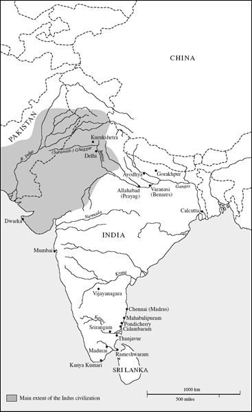

Julius Lipner's Hindus is widely recognized as essential reading for everyone wishing to understand one of the world's great religious traditions. Hinduism comprises the religion and culture of the great majority of the people of India, a country tipped to become a world superpower politically, economically and culturally in the course of the present century. The vast array of diverse beliefs and practices usually described as ‘Hindu’ has been notoriously difficult to corral under a single regulating theme. Julius Lipner provides not only a wide-ranging introduction to Hindu religious and cultural diversity but also suggests a way to characterize Hinduism as a distinct tradition that has survived and adapted to changing circumstances from ancient times to the present day. Lipner is a recognized authority on Hinduism's polycentric emphasis, and his book is based on a lifetime of research and personal experience of his subject.
In this thoroughly revised and substantially enlarged second edition, students of Hinduism will find more coverage of the debate about Hindu origins, the nature and practice of Hindu worship, the role of women, the scope of dharma and morality, Hindu philosophical thought and the use of reason, and the way caste functions.
Julius Lipner was born and raised in India, where he learned about Hinduism first hand. He has been teaching Hinduism at the University of Cambridge since 1975, and has lectured widely on the subject, travelling regularly to India to undertake research. He is the author of numerous publications, including The Face of Truth: A Study of Meaning and Metaphysics in the Vedantic Theology of Ramanuja, and Anandamath, or The Sacred Brotherhood. He is a Fellow of the British Academy.
The Library of Religious Beliefs and Practices
Series editors:
John Hinnells and the late Ninian Smart
This series provides pioneering and scholarly introductions to different religions in a readable form. It is concerned with the beliefs and practices of religions in their social, cultural and historical setting. Authors come from a variety of backgrounds and approach the study of religious beliefs and practices from their different points of view. Some focus mainly on questions of history, teachings, customs and ritual practices. Others consider, within the context of a specific region, the interrelationships between religions; the interaction of religion and the arts; religion and social organisation; the involvement of religion in political affairs; and, for ancient cultures, the interpretation of archaeological evidence. In this way the series brings out the multi-disciplinary nature of the study of religion. It is intended for students of religion, philosophy, social sciences and history, and for the interested lay person.
Other titles in the series include:
Mahayana Buddhism
The Doctrinal Foundations
Revised Second Edition
Paul Williams
Muslims
Their Religious Beliefs and Practices
Andrew Rippin
Religions of Oceania
Tony Swain and Garry Trompf
Theravada Buddhism
A Social History from Ancient Benares to Modern Colombo
Revised Second Edition
Richard Gombrich
Zoroastrians
Their Religious Beliefs and Practices
Mary Boyce
First published 2010
by Routledge
2 Park Square, Milton Park, Abingdon, Oxon OX14 4RN
Simultaneously published in the USA and Canada
by Routledge
711 Third Avenue, New York, NY 10017
Routledge is an imprint of the Taylor & Francis Group, an informa business
©2010 Julius Lipner
Typeset in Jenson by Swales & Willis Ltd, Exeter, Devon
All rights reserved. No part of this book may be reprinted or reproduced or utilised in any form or by any electronic, mechanical, or other means, now known or hereafter invented, including photocopying and recording, or in any information storage or retrieval system, without permission in writing from the publishers.
British Library Cataloguing in Publication Data
A catalogue record for this book is available from the British Library
Library of Congress Cataloguing in Publication Data
A catalog record for this book has been requested
ISBN13:978–0–415–45676–0 (hbk)
ISBN13:978–0–415–45677–7 (pbk)
ISBN13:978–0–203–86464–7 (ebk)
I am glad to know, of course, that this book is seeing a second edition. It was first published in 1994. I have taken the opportunity to thoroughly revise and substantially enlarge the book, making use of further research and reflection on the subject undertaken (by myself and others) in the intervening years. I have, on the whole, maintained the original structure, tone and approach of the book, trying to introduce religious Hinduism, at some depth, as a tradition that engages reflectively with the world. There is both a restraint in this tradition and a joie de vivre that results in a unique approach to worldly living, expressed through a multitude of ways and emphases. At the end, in a concluding postscript, I have sought to bring to a head the regulating theme of this book – an orientation that I call ‘polycentrism’, which is a way of survival and propagation, and which, I maintain, is at least a defining characteristic of the phenomenon we are pleased to call ‘Hinduism’.
How to read this book? The (dogged) reader is welcome to start at the beginning and end at the end, of course, but this modus procedendi is not required. The book is amply cross-referenced; there is also a fairly detailed index. On consulting this signage, the reader can proceed to read topic-wise. Thus, if one wishes to follow my thoughts on image-worship and its rationale, one may be advised to go directly to Chapter 14; if the reader wishes to know what I have said about caste, it might be appropriate to begin with Chapters 6 and 7. The Veda and its development is the theme of Chapters 2–4. Karma and rebirth is discussed principally in Chapter 12. Dharma is discussed throughout the book, but its outworking is analysed especially in Chapter 11 – similarly, for such topics as sacred narrative (Chapter 8), bhakti (Chapter 15), historiography in Hinduism (Chapter 13) and so on (these focuses are signalled in the index). Since I adopt what I call a ‘radial’ approach, recourse to the index, and (as one reads on) follow-through of cross-references, will amplify what the book has to say in other chapters on the subject(s) concerned. There is also a glossary for significant Sanskrit terms used in the text.
Once again, I am grateful for the work and advice of colleagues from around the world in my continuing labours to understand this complex but exhilarating tradition; in particular, I would like to mention Pradip Bhattacharya, John L. Brockington, and John D. Smith, for their constant willingness to supply information. For the use made of all the help received, however, only I am accountable. I am grateful too to generations of students for compelling me on numerous occasions to clarify my thinking and dig ever deeper into the subject (all those ingenuous but potentially barbed questions!). I must mention too the helpful conversations I had, not so long ago, with Arie Langstraat and Paul Higdon during rugged coach journeys across large tracts of the subcontinent; these helped clarify my mind further about the intricacies of polycentrism. Finally, it is a pleasure to express my gratitude to Lesley Riddle, the commissioning editor of this book, for encouragement and support in bringing to a conclusion what often seemed a daunting task. Thanks also to her team, especially to Amy Grant and Caroline Watson, for their courtesy and efficiency in seeing the book through to completion. And thanks once again to John Hinnells, who, all those years ago, got me to write the first edition of this book. The dedication of this second edition means a great deal to me.
Julius Lipner
Divinity Faculty
University of Cambridge
Spring 2009

Map of India showing some important sacred sites
1 |
About ‘Hindu’, Hinduism and this book |
The ‘books-on-Hinduism’ industry is as busy as ever, so that in an apparently saturated market, we must ask: is there room for another? The answer must be: surely yes. Not necessarily for this particular book, of course, but in theory for an endless stream of books. It can be argued that Hinduism – or the plural reality labelled as such – has been a major cultural phenomenon for well over 4000 years. It has regularly produced men and women down the ages who have made outstanding contributions across the range of the civilized human endeavour that we have come to value in our increasingly cross-cultural world: in religion and philosophy, in the sciences and the fine arts, in physical, technical and literary skills. Outstanding Hindus apart, Hinduism has sustained and oriented every aspect of the lives of countless ordinary people. It has played a crucial part in the rise of at least two great religions – Buddhism and Sikhism – and in the development of two more, Christianity and Islam, during the many centuries that these two faiths have been present in the Indian subcontinent. All this is reason enough to continue to study Hinduism indefinitely.
But Hinduism remains a major world force today, its contemporary global influence apparently greater than ever. In the twentieth century India occupied a prominent place in the public eye: as the ‘jewel in the crown’ of the widespread British empire; as the field of endeavour of Mahātmā (‘Great-souled’) Gandhi, in the struggle for Independence; during the Partition of 1947, as the theatre of some of the most horrific religious and political strife ever recorded;as the cockpit for more than one internecine war; as the home of yoga and age-old religious and philosophical wisdom; as exporter to the West of assorted gurus and godmen; as a conducive environment for the work of a Mother Teresa, and yet, as a developing country, achieving rapid scientific and technological expertise (once India had acquired its own space and nuclear capability, it launched a man into space before the UK); as the stage for literary and artistic genius of the calibre of R. K. Narayan, Rabindranath Tagore, Satyajit Ray and Ravi Shankar.
But in this, the twenty-first century, the prospects for world attention seem even more compelling. Bollywood and Indian cuisine are shifting more and more into the heartland of Western lifestyles, while the gurus and godmen continue to ply their trade. But perhaps even more eye-catching has become India's developing economic potential – as a market for global enterprise among one of the fastest growing, Westernizing middle classes of our time, and as the nursery for the rise of powerful business empires that are already rocking the marketcapitals of the world. Together with its neighbour, China, India is viewed today as a prime challenger for the role of leading economic and cultural superpower of this century. And the dominant and dominating context of this kaleidoscopic image has been, and will continue to remain, an adapting Hinduism. According to the findings of the 2001 Indian census, Hindus comprise over 80 per cent of India's population, or nearly 900 million people.
Not so long ago, I was asked by a Greek businessman what Hinduism had contributed to the world. ‘Everyone agrees, of course’, he said confidently, ‘that Greek culture exists at the very roots of our civilization. But what contributions has Hindu culture made to civilization?’ Various things flashed through my mind: the use of zero in our calculations; chess; yoga and meditational techniques; the use of spices such as pepper, ginger and cardamom; the export of cotton and other textiles; expertise in herbal remedies; the endorsement of Gandhian nonviolence in the field of morality and the ethics of negotiation; providing a role for the exotic, the different ‘other’ in mapping alternative ways of human thought and endeavour outside the matrix of the Abrahamic faiths of Judaism, Christianity and Islam ... Then I realized that I was probably on the wrong track, that this was perhaps not the best way to answer. For my Greek interlocutor had assumed that there was a normative perspective for providing an answer. He had assumed a Eurocentric stance and expected a Eurocentric response: the dominant criteria of human civilization derived from Europe, and any reply I made on behalf of Hinduism needed to fit in with these criteria. For historical and political reasons, perhaps he was correct. But there is no reason why this must be so in the future. As we are impelled to become more cross-cultural and global – there seems to be no going back – a number of other perspectives to determine what constitutes good food, good literature, good behaviour, right living, a ‘civilized’ lifestyle, will come into focus, and it is unlikely that these will be simply Eurocentric. Other cultures and worldviews, not least the ancient ones of our planetary history, will play an increasingly large part in determining what it is to be fully human and civilized, and it is here that Hinduism, if it continues to adapt and remain vital, will make an irrevocable contribution. Hinduism, which has been shaping and civilizing the lives of many millions for over 4000 years, albeit in somewhat enclosed parameters, is now poised to emerge more fully onto the global stage. It makes sense, therefore, to reflect carefully on this rich phenomenon, both as to its origins and its potential trajectories.
Further, while Indians have always ventured beyond the shores of the subcontinent for trade and other reasons, it has been in the last 150 years or so that we have witnessed unprecedented Indian emigration to various parts of the world. Today there are appreciable numbers of Indians in Europe, North America and Africa, the Middle East and Australasia. In all these places they have continued to relate with the host communities and to practise their faith and culture, and it is significantly in terms of Hinduism that this presence has been felt. Thus, not only numerically but also geographically, Hinduism has become a major global phenomenon. All the more reason, then, for its continued study.
But what is Hinduism? Hindus have a tendency to regard substances as having an inner proper form or svarūpa – peculiar to the object and hidden in some way – which may yet be experienced variously in external forms or which manifests itself under different aspects (bahurūpa). Hinduism itself seems to be something like this. It is experienced as so many things by Hindus and non-Hindus alike that one may well ask if it has a svarūpa at all! The issue is complicated by the fact that many otherwise perceptive Hindus – who should know better as adherents of a way of life pervasively suspicious of absolutist claims! – behave and talk as if their brand of Hinduism is the ‘real thing’, or is what Hinduism is all about. To form some idea of the enormous complexity of this multifaceted reality, here is a sample of what both Hindus and non-Hindus have considered Hinduism, and Hindus, to be:
The above list represents quite a mixed, and at times inconsistent, collection of assertions and emphases. We are told that Hinduism is a way of life, one whole, yet also a collection of religions; that Hindus are not in the least interested in salvation, that Hindus, in fact, direct all their activities to the realization of salvation! It is asserted that Hinduism begins in the Veda – acceptance of which is the mark of being a Hindu – and is consummated in the Vedanta, and then we hear that Hinduism is religiously undogmatic and that to be a Hindu one doesn't have to accept the Veda. We are informed that Hinduism is a highly organized social and religious system in which belonging to a caste is an essential if not the essential characteristic, then we are informed in equally certain terms that the caste system is not integral to Hinduism. Hinduism is a system to which belief in rebirth is essential; no, it is a system to which belief in rebirth is not essential! Hindus are supposed to be proud, believing themselves to be religiously and otherwise superior to others – but then they are undogmatic and tolerant, so one assumes they are not that arrogant ... Hinduism is primarily the means for Hindus to shape their multifaceted existence in the world – on the other hand, ‘world-flight [is] the only noble cause for the awakened man [and presumably, woman] and the one hope of escape from the entanglements of sense and transmigration’, and realization of the deceptiveness of the world's multiplicity is part of the essence of Hinduism. Is there, we may ask, as a Zaehner might allow, a ‘fine essence’ to ‘the changeless ground’ of Hinduism? How can Hinduism be ‘one’ yet a ‘proliferating jungle’ as he more confidently goes on to say? Finally, does ‘prototype theory’ work with regard to defining Hinduism? On what criteria can we say that the high-caste devotee of Vişņu living in Tamilnadu falls clearly within the category of ‘Hindu’ whereas the Rādhāsoamī devotee hovers at the edges because he ‘rejects many Hindu teachings’? How do we know that these rejected teachings are Hindu in the first place? Is not this argument circular?1 In any case, we are told that, according to the Indian government, every Indian is a Hindu unless he or she repudiates this label. So there is a role for self-definition in the matter. One has to contend with different kinds of description and their relative merits: self-definition, outsider-definition, official pronouncements, scholarly definitions ...
Though most of the quotations given above fall more or less within the same, fairly recent, time-frame, they reflect, of course, perceptions of Hinduism current at the time, and their makers may well find cause to revise them if they were asked to provide a second opinion. But that is not the point. The point is to indicate the perceived plurality of the Hindu phenomenon, even if it is a changing one, and some of the defining features of this phenomenon that have attracted thoughtful attention.
Nor have I have quoted the extracts given above to criticize them, though in due course we shall have occasion to question or even reject some of their criteria. The authors of some of the passages go on to make careful distinctions, mindful of the bewildering complexity of their subject matter. In fact, the phenomenon of Hinduism is both vast and confusing, and defining it is different in some respects from defining religions that proclaim a single founder. There is no single founder of Hinduism. One cannot write about it without being selective, without approaching it from one or more points of view at the expense of others, without on occasion committing oneself to this interpretation rather than to that. Hinduism is a way of life, a complex culture, one yet many. How to do justice to this phenomenon within the pages of a single book? The reader must bear with its interpreter. It is by piecing together facts and interpretations gleaned from a variety of sources that more and more of the jigsaw will become visible, that we shall see more of the wood rather than individual trees. So let me propose another image to help us understand this fascinating reality and the scope of this book.
The pride and joy of the Calcutta (now Kolkata) botanical gardens is a vast, magnificent banyan tree (Ficus benghalensis or Ficus indica, to give it its technical names). The characteristic of the banyan is well known: from widespread branches it sends down aerial roots, many of which in time establish themselves in the earth to resemble individual tree-trunks, so that an ancient banyan looks like an interconnected collection of trees and branches in which the same life-sap flows: one yet many (see the cover of this book). Reputed to be well over 200 years old,2 with a growing canopy about 4 acres in extent and with many hundreds of aerial ‘trunks’, the Great Banyan of Kolkata continues to proliferate, organically if attenuatedly one, as vigorous as ever, new branches and roots forever developing as others wither away.
The Great Banyan is not a bad symbol of Hinduism. Like the tree, Hinduism is an ancient collection of ‘roots’ and ‘branches’ representing varied symbols, beliefs and practices that make up individual sub-traditions, which are all interconnected in various ways. The manner and range of these interconnections we shall examine as the book progresses. The whole forms a web or grid, microcosmically ‘polycentric’, that is, having many centres, but macrocosmically one, with a canopy covering, in temporal terms, a span of millennia. There is no one founder-trunk, from which different branches proliferate. There is, rather, an expanding tracery of trunks and branches. But unlike the botanical model, the Hindu banyan is not uniform to look at. Rather, it is a network of variety, one distinctive sub-tradition shading more or less into another, the whole forming a marvellous unity-in-diversity. In this book we shall explore some of the more prominent roots and branches of the Ancient Banyan that is Hinduism mainly in its original soil, India, take account of some that are lesser known, and try to analyse important features of the sap that vitalizes the whole, so that we may catch some perspective of the vast phenomenon as it extends in space and time. We shall inquire into no more than a representative sample, leaving extensive tracts of this arboreal complex unexamined in the hope that the reader will be equipped to continue, in his or her own time, this explorative journey.
What, then, is Hinduism? A provocative response would be to say that there is no such ‘thing’. The term itself is a Western abstraction of fairly recent coinage.3 This gives the impression that Hinduism is a block reality, a homogeneous system, easily defined, which all Hindus acknowledge more or less in the same way. But this is not the case. Whatever else it may be, Hinduism is not a seamless system of belief and practice in the way that many imagine or expect ‘isms’ to be. In fact, to use yet another image, ‘Hinduism’ is an acceptable abbreviation for a family of culturally related traditions. Just as in an extended family there are a number of distinctive features distributed among its members, not uniformly but in permutations such that any two or more members (even distant cousins) can be identified as belonging to the same family, so too in Hinduism there are many traditions some of whose characteristics overlap in such a way as to enable us to identify each of these traditions as belonging to the same cultural family.4 Some of these traditions may have more of these characteristics in common, making them more obviously Hindu. Others may share fewer traits, yet if these are dominant or characteristic ones they would still allow us to identify the traditions to which they belong as Hindu. One advantage of this image over the banyan one is that in a context of overall similarity it allows differences to be emphasized.
The benefit of defining Hinduism in terms of such images is that they do away with the tendency to look for an ‘essentialist’ definition of Hinduism. Such a definition implies that whatever is being defined has a static essence or core which can be described through a number of necessary attributes. Discover the attributes and you've defined the phenomenon. Hinduism is not a reality that fits this conception. As we have indicated, it is a kind of unity-in-diversity, a process forever adapting to new circumstances. As some roots or branches wither away there is renewal and growth elsewhere. It would be inappropriate to look for a static essence of such a phenomenon.
Both the images used hitherto also allow us to be realistic, for both trees and families have names. Some scholars (e.g. W.C. Smith 1978) argue that we should stop using such names as ‘Hinduism’, ‘Buddhism’, etc. because they give the misleading impression that they refer to monolithic, uniform realities, whereas in fact what they refer to is replete with difference. Just think of all the denominations, sects, cults, etc. within the world religions. But this proposal is unrealistic. Try telling the authors of books on Hinduism, Buddhism, etc., or teachers who draw up syllabuses for their longsuffering students, or managers of bookshops who have to classify their wares, or the publishers and their marketing teams, that they must dispense with these handy labels! We have pointed out that such names are really shorthand for a family of traditions, and in the case of Hinduism, for a polycentric phenomenon as well. For practical reasons, then, the term ‘Hinduism’ is here to stay. Rather than trying to banish it, it would be more helpful to refine our use of the label and then apply it with discernment.
Further, likening ‘Hinduism’ to a family-name gives flexibility. When does someone cease to belong to a family? When he or she is disowned by, or disowns, the family? When their relationship by blood becomes too distant? When they no longer have identifiable family resemblances? In short, the answer is when certain personal, social or juridical decisions are taken by the appropriate people. Our way of defining Hinduism allows for this flexibility of decision which, as we shall see, the complexity of the Hindu phenomenon requires. So much then for methodological considerations about defining Hinduism.
Let us now inquire into what it means to be described as a Hindu. So far I have tried to avoid simply identifying Hinduism with a religious way of life. It is not necessary to be ‘religious’, that is, to believe in some world-transcending reality – a God or the equivalent – to be a Hindu. The great majority of Hindus have been and are religious, at least in this minimal sense, and the overwhelming proportion of human endeavour that has gone into the making of Hinduism has been religious in this sense. This is a very important fact about Hinduism, and this is why the major emphasis of this book will be religious. But it is important to note that one need not be religious in the minimal sense described to be accepted as a Hindu by Hindus, or to describe oneself perfectly validly as a Hindu. One may be polytheistic or monotheistic, monistic or pantheistic, even an agnostic, humanist or atheist, and still be considered a Hindu. This is why I have described Hinduism as fundamentally a cultural phenomenon. Let us now consider how the word ‘Hindu’ originated.
The term derives from what we know as the Indus river situated in the north-west of the subcontinent. For nearly 3000 kms, from its tributaries in the Himalayan foothills to its mouths in the Arabian Sea, this great river acts as a natural boundary to the bulk of the Indian mainland for those entering from the western mountain passes, e.g. the Hindu Kush. With respect to the origins of ‘Hindu’ and Hinduism, we must look to a vast body of sacred utterance called the Veda, composed perhaps well over 4000 years ago in an Indo-European language called ‘Sanskrit’, by a people who are popularly referred to as ‘Aryans’. (In modern scholarship, ‘Aryan’, which derives from the Sanskrit word ārya meaning ‘noble’ or ‘honourable’, is used in its precise sense to describe the kind of language these people spoke rather than their racial characteristics. However, over time, ‘Aryan’ has been used in an ethnic sense to refer to the people who first spoke Sanskrit in the subcontinent. It is worth noting that in their sacred texts these people referred to themselves as ‘ārya’ as a distinguishing term for their language and culture. After the Second World War, during which the word ‘Aryan’ became associated in horrific circumstances with claims of racial superiority, the application of the term has become a sensitive issue in the debate about the origins of Hinduism.)
Where did these ‘Aryans’, then, these originators of Hinduism, come from? The received wisdom is that by about 1200 B.C.E. they had advanced into the subcontinent, either in a body or in steady trickles, from beyond the western passes – perhaps from as far away as the Caspian Sea or thereabouts – bringing the early forms of their language (‘Sanskrit’) and their religious view of the world with them. Then, by force of arms or other means of cultural domination, they displaced and/or intermarried with the native inhabitants of the Indus region, and gradually, over centuries, ‘Sanskritized’ the land.
But this received view is not only simplistic, it is also problematic, and has been contested on several grounds in the wake of modern scholarship. For convenience, let us call, as scholars now do, the original Sanskrit speakers in the subcontinent, the ‘Indo-Aryans’. Where did they really come from? Broadly speaking, there are two camps in the debate about their homeland. One camp, the ‘migrationists’ – historically led by Western experts, though experts of South Asian origin also fall into this camp – argue that the Indo-Aryans came originally from outside the subcontinent, though there is no clear agreement as to where this might be (the central Asian steppes, or the area near the Caspian Sea, seem to be preferred candidates, though the route the Indo-Aryans would have taken to the subcontinent is subject to further debate). With the passage of time – probably by way of steady trickles or perhaps surges of movement – the Indo-Aryans had sufficient presence in the north-western regions of India to supersede, through their language and culture, the native or indigenous peoples, either by processes of displacement or through intermingling. It was in this context that their earliest Indian scriptures, the Veda, were formulated, and gradually, over centuries, the subcontinent was dominated by the Vedic Sanskritic culture, and what we call Hinduism then developed.
Can we put dates to the early phases? The ‘traditional scenario’ places the migration of the Indo-Aryans in about 1200–1000 B.C.E. But for reasons that we shall go into, this date has generally been abandoned by the migrationist camp as being too late. The date of critical Indo-Aryan presence in the subcontinent has now been put back to 1900–1600 B.C.E.
But the second camp, the ‘indigenists’ – largely, but not exclusively, comprising experts of South Asian origin – argue that the subcontinent itself is the original homeland of the so-called Indo-Aryans. The Indo-Aryans did not migrate into India as the migrationists would have us believe (indeed, some groups of this culture may well have migrated out of India into central Asia at some stage): the language of their elite strata, Sanskrit, and the scripture composed in this language, the Veda, were both indigenous or native creations, and Hinduism that derived from this, is mainly a home-grown product (there may have been minor external influences through trade, etc.). Starting dates in this view tend to be pushed back even further, perhaps by about a thousand or more years for the composition of early parts of the Veda, by the more credible members of this group.
The reader will have guessed by now that this debate has been bedevilled by ideological considerations, exacerbated by the fact that historically the protagonists of the migrationist camp have been Westerners. Many of the South Asian indigenists appear reluctant to accept the view that the origins of Hindu culture derive from outside the subcontinent (this stance has been politicized by non-experts, both on the right and the left, for ideological purposes); however, some who do have relevant expertise in this group profess to have no ideological bias but claim to resort to objective criteria in developing their arguments.
So let us look very briefly now at the type of arguments used by both camps.5 One of the strengths of the migrationist view has been comparative linguistic and philological expertise (which has been generally lacking in the indigenist position). This is expertise about the formation, comparative development, and spread of languages. Based on their research in these areas, the migrationists argue that though the Veda may have been largely composed in northern India, the roots of Vedic Sanskrit were not native to the subcontinent, and that one can trace the early development of the language from outside, from west of modern-day Iran; it then spread eastwards into the subcontinent. They adduce strong data in this regard, and a number of these scholars go on to point out how the Vedic scriptures themselves display an increasing awareness of the landmass of India, moving eastwards and southwards, as they develop over time.6 They conclude from this that the whole movement of the spread of Vedic and later forms of Sanskrit was from the north-west of the subcontinent towards the east and the south.
But these scholars resort additionally to archaeological evidence. They point to the absence of archaeological remains in the right place and time in the subcontinent, of the horse (viz. the species Equus caballus) and the spoked-wheel chariot;both these items, however, play a big part in the culture of the Indo-Aryans described in the early Vedic texts (so they must have been brought from outside the subcontinent).
The spoked-wheel chariot also is fundamental to Aryan identification. If the Aryans were a principal linguistic community [in the north-western Indian landmass], their existence there should be confirmed not only by the horse but also by the spoked-wheel chariot. This piece of technology called ratha in Sanskrit is common to the Indo-European peoples, since, like the horse, its nomenclature has cognates in Indo-Iranian, Italic, Celtic, Baltic, and Germanic. Likewise, the terms for the parts of the chariot – the wagonpole, harness, yoke and wheel nave – also have cognates generously distributed in various Indo-European languages [outside the subcontinent] ... [T]he Indo-Aryans certainly utilized the technology after the dispersion of the various Indo-European tribes, an inference evidenced by the central role [the chariot] plays in the Veda (which parallels its importance in other old Indo-European texts such as the Homeric hymns). The quest for the Indo-Aryans, then, as a result of a logic analogous to that impelling archaeologists to look for the horse, unavoidably involves searching for archaeological evidence of the chariot.
(Bryant 2001:175–6)
But this evidence has not been forthcoming in such a way as to suggest that the Indo-Aryans were native to the subcontinent. However, as the indigenist camp points out, the north-western landmass of India is very large, horse and chariot remains are brittle, and the fact that these have not been discovered – as yet – in the appropriate archaeological strata, does not mean they aren't there. So this isn't yet conclusive proof that the Indo-Aryans migrated (with their horses and chariots) into the subcontinent at some point in the history of the early civilization of the Indus region.
And so to the arguments of the indigenists. Some of these are on the negative side, and some on the positive. On the negative side, the indigenists, generally regarded as weak in the appropriate linguistic expertise themselves, tend to dismiss the philological and historical–linguistic arguments of their opponents. Some contend that these arguments do not arise out of a genuine, scholarly discipline;others seek diligently (sometimes tortuously) to provide alternative indigenist explanations for the linguistic points made by the migrationists.
However, on the positive side, the indigenists make more of the archaeological data available. Take, for example, numerous references in the early Veda to a river called the ‘Sarasvatī’ (as opposed to the Indus, which was more likely to be referred to by the word sindhu). In fact, not so long ago, ‘archaeological researches in the Cholistan desert have uncovered the bed of a once-massive river – up to ten kilometers wide – situated between the Yamunā and the Sutlej, exactly where the gveda places the Sarasvatī’ (Bryant 2001:166). If this identification is correct, then Vedic culture had a much earlier start than the traditional migrationist scenario postulated. Does this mean that the Indo-Aryans were an indigenous people? Certainly this discovery has moved many in the migrationist party to push the date of the Veda, and so the critical presence of the Indo-Aryans in the region, about a thousand years back, to account for the slow process of the drying-up of this river-bed.
Warming to their theme, the indigenists also argue that there is no archaeological evidence from skeletal and other remains to indicate that the Indo-Aryans migrated along some route from the west of India into the subcontinent. ‘Why should there be?’ counter the migrationists: ‘language is not necessarily tied to material culture’. Several peoples of different ethnic backgrounds can speak the same language, and several languages can be spoken by folk of the same ethnicity, so skeletal remains etc. need not show up whether a particular language has been on the move. And so the debate continues, interestingly but frustratingly contentious to date.
At its best, and relying on the archaeological data, it seems that the indigenist view can be formulated as follows: ‘It seems clear that the dried-up river noted earlier is the Sarasvatī mentioned in the g Veda, and that a stretch of this river in the Bahawalpur desert of today was at the core of the original, pre-Vedic, Indus civilization [about which more in due course]. This area shows a continuous and uninterrupted archaeological sequence from ca. 4000 B.C.E. up to its late phase soon after 2000 B.C.E., as the river begins to dry up. During this process, one can detect a steady shifting of sites to the east, to the presently named areas of Haryana, Punjab, Delhi and Uttar Pradesh. The civilization of this region slowly transformed itself in different places, interacted with the less developed farming and hunting-gathering communities of ‘inner’ India, contributed to the development of plough agriculture there, and formed the basis of the mainstream Indian development that we see today.
Where does one place the Vedas in this archaeological story? One places them within the uninterrupted flow of this archaeological sequence (there was no latter-day intrusion from outside the subcontinent, since there is no genuine linguistic or archaeological evidence to prove this!). By the time people lived on the banks of the Sarasvatī and began to compose the g Vedic verses, the dispersal of the Aryan language-family in the subcontinent, which happened with the spread of some wheat–barley agriculturists from their primary pockets in west Asia, was already very old, with a long history of some 3000 years behind it. So the Veda developed in the fold of the various phases of the Indus civilization, not from outside it, and perhaps formed the core of this civilization's religious, philosophical and moral beliefs and practices. The basic texture of this scenario accords fully with the archaeological story that has evolved in the last two decades or so.’7 This would mean that the language and culture of the Indus civilization from its inception would be ‘Indo-Aryan’ too, and not something qualitatively different or ‘Dravidian’ (to use the term usually applied in this context).
What is my own position on the matter? Politics apart, and on the basis of the evidence presently available, it seems to me that, on balance, the migrationists have the edge so far. I regard the philological and historical–linguistic evidence as, on the whole, quite decisive, though the archaeological evidence (or lack of it) to date forces us to alter appreciably the traditional scenario and to refrain from making final pronouncements. One or two surprises might yet be in store for both camps. Nevertheless, I believe that the evidence available allows us to say at present that the Indo-Aryans, mainly pastoralists but also agriculturists to some extent, came with the rudiments of their Vedic culture from outside the subcontinent, and began to dominate the cultural landscape from 2000 B.C.E. or so. We await developments on this subject with interest.
In light of this debate, what follows is partially reconstruction, and partially based on textual evidence. Presuming that the Indo-Aryans did have an external origin, they would have been impressed by the fast-flowing waters comprising the Indus and its tributaries as they settled the north-western areas of the subcontinent (including the Sarasvatī region). Indeed, ‘Indus’ seems to have been derived from references to a river or rivers of such waters called Sindhu in the g Veda (see RV. 5.53.9;8.20.24).8 Perhaps these waters reminded them of similar streams endowed with mystical and regenerative properties in some distant homeland, running through land that was naturally arid. Sindhu in the plural (viz. sindhavaṣ) means rivers in general, often with an emphasis on their life-giving qualities; by association, this plural term was also used to refer to those who lived on the banks of this northern riverine system. Thus sindhu seems to have started out with geographical and cultural connotations, rather than with specifically ‘religious’ ones in the contemporary sense of implying a particular set of ritual and mental activities. The name ‘Sind’, which designates the sub-Punjab area of the Indus today, is derived from this usage.
In the middle of the first millennium B.C.E. the Persians, under Darius I, began to conquer the southern Indus region. This territory was annexed ‘to the Persian empire as a satrapy called in Old Persian Hinduš’ (Parpola 1994:4b). This term seems clearly to have been derived from sindhu, and was both geographical and cultural, designating the land and peoples around and beyond the Sindhu riverine system. From this we see that the generally accepted view that ‘Hindu’ is an outsider-term, imposed on the ancient inhabitants of the subcontinent by foreigners, is not accurate. ‘Hindu’ is derived from insider-usage, since it comes from sindhu, the word used in Sanskrit to refer to the rushing and life-giving waters of the Punjab region. However, the ancient Persian description was undiscerning: it lumped all those it tended to describe culturally into one heap, a practice that persisted when foreigners sought to name all those who lived on and beyond the riverine boundary. This was the case despite the fact that the Vedic Indians themselves soon outgrew their original use of the term sindhu and began to describe different aspects of their developing identity in different ways. It was only much later, from about the sixteenth century C.E., that ‘Hindu’ was adopted as a generic self-description by groups of Indians in a context distinguishing them from others, a practice that has become commonplace in modern times. We shall return to this point in due course.
In the last quarter of the fourth century B.C.E., Alexander of Macedon swept through the former Persian empire and invaded the north-west of the subcontinent.9 Now Greek civilization became a force to contend with in the area. Taking their cue from the Persians, the Greeks referred to this region as India and to its inhabitants by the vague term Indikoi (the Latin equivalents being India, Indi, etc.) – hence ‘India’ and ‘Indian’. Similarly, the Arabic word for India was ‘al-Hind’. The Muslims, as their contact with the subcontinent increased from early in their history (that is, from the tenth century C.E.), tended to refer to those who dwelt in this land but who were neither Buddhist nor Muslim, as ‘Hindus’. Here a religio-cultural sense dominated. This is the sense consistently used by the Muslim observer, al-Biruni, in his famous account of the Hindu way of life, written in about 1030 C.E. It is significant that al-Biruni concentrated on the beliefs and practices of the Brahmins – those who belonged to the highest caste of the Hindus – since it was his view that ‘the main and most essential point of the Hindu world of thought is that which the Brahmins think and believe, for they are specially trained for preserving and maintaining their religion’.10
Is Hinduism then best summed up as ‘the Brahmin way of life’? The answer depends on one's perspective. Most Hindus were not and are not Brahmins. In fact, statistically the number of Brahmins in the Hindu population has always been rather small (in the very low percentage points overall). Many, especially those in circumstances most vulnerable to the traditional exercise of Brahmin power, understandably resent being represented by or assimilated into Brahminic culture. But it is undeniable that, from earliest times in Hinduism, Brahminic culture has overshadowed the Hindu way of life. ‘Brahminic culture’ is not uniform, and must be understood as the beliefs and practices that have been propagated or ratified by Brahmin authority. Brahminic culture includes atheism, agnosticism and theism; monism, monotheism and polytheism; traditional caste practices and their rejection or re-interpretation; the practice of widely divergent kinds of rites and rituals;and disparate understandings of Hindu dharma (that is, of what may be regarded as an acceptable way of life, socially and religiously). All these headings, played out in innumerable combinations historically in the vast fabric of the Hindu banyan, have been subject in one way or another to the influence of Brahmin authority. From the beginning of Hinduism as we know it, Brahmin and non-Brahmin Hindus alike have had to articulate their identity in terms of Brahminic culture, irrespective of whether they have challenged or accepted it, rebelled or acquiesced. It is for this reason, then, that this book will have much to say on Brahminic culture, though we shall have plenty of opportunity to discover how nebulous this concept is. I do not wish to make the mistake of assimilating Hinduism to Brahminic culture; I merely wish to stress the latter's undeniable pervasive influence, for good or ill.
The vehicle par excellence of Brahminic culture – its flagship language – has been Sanskrit, including Vedic Sanskrit. It would be true to say, I think, that for all of its history, Brahminic culture in the broad sense noted has been propagated either through Sanskrit or by (sometimes notional) reference to what have been regarded as normative Sanskrit texts. This has had interesting linguistic and political repercussions for the vernacular languages of the land. It was only from the nineteenth century that the practice of transmitting Brahminic culture via the actual use of Sanskrit began to wane. However, the process of ‘Sanskritization’, the imposition/acceptance of Sanskritic norms into Hindu culture, continued – and continues – in important ways. We shall return to Sanskrit and Sanskritization later.
So, we may ask, if Hinduism pivots on Brahminic culture, and if the Brahmins comprise Hinduism's highest caste, is caste an essential feature of the Hindu way of life? This is a moot point. The fact is that, for the overwhelming majority of Hindus in the history of the subcontinent, having a caste status has been probably the distinguishing feature of their identity within Hinduism. Their caste has determined or significantly influenced their occupation, marriage prospects, community relations, social movements and mobility, educational prospects, the futures of their children, even religious beliefs and practices. But there have always been groups who could, without too much difficulty, be included under the canopy of the Hindu banyan and who have tried to live their lives outside caste's constricting parameters. In the nineteenth century, members of a number of reformist groups repudiated their former high-caste obligations in no uncertain terms. But generally they still regarded themselves as Hindu – indeed, as quintessentially Hindu – and were in fact treated as Hindus, outcasted or otherwise, by both Hindus and non-Hindus. The Ligāyats, who have had a recognizable identity in India for nearly a thousand years and who dominate parts of modern Karnataka State in the south, theoretically at least reject traditional caste divisions and practices. Yet for all practical purposes they are regarded as Hindus (with caste-affiliations) by non-Ligāyats.11
Most modern-day educated Dalits (the ‘Untouchables’ of the past) repudiate the caste-system, yet many still call themselves ‘Hindu’. Here, in modern times, there has been a big paradox in the relationship between Dalits/‘Untouchables’ and the designation ‘Hindu’. Perceived from the outside – by the Indian Constitution and (by implication) most upper-caste groups – they have generally been regarded as Hindus, else why would the Indian Government, post-Independence, have officially resolved in 1950 that ‘henceforth, amongst Hindus no one shall be regarded as an untouchable by reason of his birth and those who have been so regarded hitherto will have the same right as other Hindus in regard to the use of public wells, public schools, public roads and all other public institutions’ (see Leslie 2003:25)? Internally, from the point of view of self-ascription, the situation is more complex. This is because the category of ‘Untouchable’ is neither monolithic nor homogeneous. It is a category that is riven by caste-inequality itself, with different caste-groupings within it free to make non-representative decisions as to how they should be designated or what they should be called. Most of these groups in India, one might say, under certain circumstances, e.g. for purposes of benefiting from affirmative Government action or being seen in a certain political light, would accept the designation ‘Hindu’, though at the same time they might well repudiate the ascription if ‘Hindu’ is understood as implying that they are innately impure, or polluting, or otherwise inferior in some way. This is the paradox. We shall return in greater depth to a consideration of the Dalits/‘Untouchables’ in Chapter 7. Finally, there are many Westernized Hindus today who openly live in direct opposition to traditional caste observances and regard caste as obsolete but who consider themselves Hindu and are regarded as such by the more ‘orthodox’ or conventional.
In fact, in certain respects caste has had a significantly ambivalent role in traditional Hindu society. Those who have formally renounced the world (sannyasis, more correctly, saṃnyāsīs) are supposed to have transcended caste. They might have been born into the system, but as renouncers, they are reckoned to be ‘dead’ to these worldly, distinguishing features. I remember how, many years ago when I was new to the study of Hinduism, I asked a Hindu monk about the circumstances which led to his entering the monastic life. With a smile he declined to answer my question, saying, ‘That individual, with the caste and other associations which people in this world make so much of, has ceased to exist’. But renouncers are supposed to symbolize the culmination of the Hindu way of life. So in this context is caste essential to Hinduism or not?
Further, it is well known that for hundreds of years there have been Indian Christians who have either maintained caste and have been acknowledged as such by their Hindu compatriots, or who have been involuntarily slotted into high or low positions in the caste hierarchy by Hindus. In south India, in the seventeenth century, many of the high-caste converts of the Italian Jesuit missionary, Roberto de Nobili (1577–1656), were allowed to follow traditional caste observances by the Church authorities without formally repudiating their caste allegiance, on the grounds that caste was a social and not a religious category. This experiment is often thought to have worked in that their non-convert peers did not ostracize them. If caste-practice can be perceived as only social behaviour, then such Christians can also be called Hindus. In the late nineteenth century Brahmabandhab Upadhyay (1861–1907), an influential Bengali-Brahmin convert to the Roman Catholic faith, devoted the last decade or so of his life to trying to show that he was both Hindu and Catholic. For him to be Hindu was to have a certain kind of cultural and intellectual orientation, not a particular set of theological beliefs (see Lipner 1999). Today in India a significant number of Christians, both Catholic and Protestant, are inclined to make similar claims.12
Further, in the considerable history of Hinduism outside India, the role of caste as potentially determinative of Hindu identity has often been, if not irrelevant, then substantially minimized. Take, for example, the Indian Ocean island of Mauritius where Hinduism has been thriving for about 170 years. There are about half a million Hindus in Mauritius (about half the population). In Mauritius Hindus can be found among well-to-do as well as poorer strata of society. Further, they are influential in all the important dimensions of the country's life, not least in politics, so we are not talking about a backward or poorly represented community. Yet, while in Mauritian Hindu society caste distinctions and affiliations of a kind resembling those of the Indian subcontinent are present, they are fast dissolving in the proverbial melting-pot. For as ‘love-marriages’ rather than arranged marriages become increasingly popular among Mauritian Hindus, and economic and other criteria come more and more into play as salient markers of social status, existing caste patterns will break up and become less determinative of Hindu identity. There is evidence to show that ethnic and other groupings (e.g. Tamils as opposed to others) will supplant caste in this respect. However, there is no reason to suppose that Mauritian Hindus will not continue to value their identity as Hindus or to study the Indian origins of their culture, e.g. at school. One cannot generalize then as to how and, in important cases, whether, caste is constitutive of Hindu identity, not least in the Hindu ‘diaspora’, the spread of Hindus outside India, the ‘homeland’.
Now, we may ask, does one have to believe something specific to be a Hindu? We have given ample indication that one does not. What about belief in the rule of karma and rebirth? For al-Biruni this was the ‘shibboleth’ or distinctive feature of Hindu identity. To begin with, though it is undeniable that many Hindus, inside and outside India, do accept this belief, it is not specifically Hindu. Most Buddhists and Jains, and even some Christians, believe in some form of karma and rebirth, while some Hindus, especially an increasing number of Westernized Hindus, do not. We have already noted that Hinduism has to do with a way of life, not with a definite creed.
Is this way of life equivalent, then, as one or two interpreters quoted earlier seem to claim, to what is called sanātana dharma or Vaidika dharma, i.e. the code of practice (dharma) that is eternal (sanātana) or based on the Veda (Vaidika)? Hardly. Many Hindus call themselves ‘sanātanists’, those who follow the eternal dharma. But we shall see that it is far from clear what this eternal dharma is. We have noted that Hinduism is a dynamic, living phenomenon (or rather a macro-reality of organically united micro-realities, analogous to an ancient banyan) whose strength lies in its ability to adapt to circumstances while it maintains strands of continuity with the past. But one cannot trace this continuity in an essentialist manner, as if there is a substantial core that remains untouched. Hinduism is a continuity of vital elements whose composition varies as a function of the different living centres that constitute it not only in the diaspora but perhaps more importantly in India itself. These vital elements cannot be isolated in terms of a static essence. The elements composing one person's or group's eternal dharma may differ significantly from those of other people or groups. Yet both are Hindus. And who is to say which perception of eternal dharma is normative or ‘prototypical’, and in which respects? Besides, the expression ‘eternal dharma’, though perhaps comforting in a world of constant flux, seems to imply that this ‘way of life’ cannot or should not undergo change. In that case, where does reformist Hinduism – with which Hindu history is replete – fit in? And how must we regard the shifts in, or new interpretations of, dharma that the multitude of little and great reformers of Hinduism have proposed over time? The conclusion is to say that ‘sanātanist’ is a prescriptive rather than a descriptive term: it is to say what one believes Hindu dharma should be rather than what Hindu dharma is. It is to say that one does not wish to belong to particular reform movements in Hinduism, or perhaps to say that one should belong to this rather than to that reform movement, since the former has captured what the latter has not, the ‘eternal essence’ of Hinduism. It is a declaration of intent, and a rather tendentious one at that.
Similar comments apply to the description of Hinduism as the Vaidika dharma or ‘Vedic way of life’. First, this description implies that Hinduism is necessarily religious. We have challenged this; one can be Hindu without being religious in any conventional or institutional sense of the term. To be a Hindu is to be culturally, rather than religiously, characterized in some way. Second, a great many Hindus down the centuries have in some way repudiated or bypassed the Veda in living their lives. A great many Hindus have been, and are, quite unfamiliar with these sacred utterances;they have never had a copy of the Veda at home or read from it (as Christians and Muslims might do from the Bible or Koran, respectively). This does not mean that their whole life's orientation cannot be traced to the Veda or that it does not in some way derive from it. But it does put the Veda in perspective.
Having said this, we must acknowledge the immense and pervasive importance of the Veda in the history of Hinduism. Most Hindus are religious, and a great many religious Hindus at least implicitly acknowledge the authority of the Veda in orienting their lives, although, as will become clearer in the course of this book, the relationships between their lives and what passes for Vedic content are often complex and obscure. There is point in saying, as one modern commentator has done, that acceptance of the authority of the Veda often amounts to ‘no more than a declaration that someone considers himself [or herself] a Hindu’ (Brockington 1981:5). But, as we have noted, many Hindus also challenge the authority of the Veda and in the process give these scriptures a high profile. So, positively or negatively, the Veda stands out in the history of Hinduism.
In the light of what has been said, let us return to the relationship between Hinduism and other longstanding Indian religions such as Buddhism and Jainism. Today, it is customary to distinguish between the religion(s) of the Hindus (‘Hinduism’) and those of the Buddhists, Jains and Sikhs (or ‘Buddhism’, ‘Jainism’ and ‘Sikhism’). We have already seen how these abstractions can be misleading, though once we guard against this, then for reasons of convenience we may speak of the traditions of Hinduism, Buddhism, etc. Thus this is a book on Hinduism and not on Jainism. But distinguishing in this way between Indian traditions is fairly recent and is bound up not only with Western preconceptions about the nature of religion in general, and of religion in India in particular, but also with the political awareness that has arisen in India in the aftermath of Westernization.
In fact, it was chiefly in the nineteenth century, especially in Bengal – the bridgehead of Hindu and British interaction – that more or less systematic attempts were made by both British and Hindu writers to articulate what ‘Hinduism’ and ‘Hinduness’ (hindutva in Sanskrit) might be. In the process they helped create new realities for their readers. There were a number of different motives underlying these creations. Some British (and continental European) propagandists, whether philosophers, missionaries or administrators, guided by their understanding of Christianity as the normative religion, wished to cast the religion of the Hindus, for purposes of accessibility or domination, in the same mould. So they invented a Hinduism they could deal with or control, and in comparing it with their Christianities often showed up this ‘Hinduism’ in a poor light: Christianity had a founder, they said, but ‘Hinduism’ did not, so ‘Hinduism’ was deficient and ‘incoherent’; the founder of Christianity displayed certain moral qualities, they continued, but leading figures across a range of Hindu denominations (e.g. Kṛşņa, Rāma) did not, or at least did not do so in the same way, so these figures were immoral or ethically inferior; the Abrahamic faiths were monotheistic (according to a certain notion of monotheism), but Hinduism was ‘polytheistic’ or perhaps worse, ‘monistic’ (that is, it maintained that all reality is essentially one, so that there is no true, lasting distinction between a creator God and his creation); Christianity was imbued with the supremacy of Greek and Latin cultures and their superior languages (not to mention English), whereas ‘Hinduism’ was underpinned by a defunct language – Sanskrit – and its numerous derived and undeveloped, vernacular tongues, so ‘Hinduism’ was not a religion worth committing to. In some cases, it was contended that Christianity could accommodate scientific progress whilst Hinduism was essentially a mythological and therefore backward faith. In all of these instances, it served to make of ‘Hinduism’ a uniform, monolithic entity, sometimes assimilating the traditions of the Buddhists, Jains, etc, and sometimes keeping these faiths apart for divisive reasons.
Hindus too played similar games for ideological ends. Smarting under the humiliations of a colonial regime, they wished to show that their tradition and its leading figures were equally coherent, moral, developed, progressive – in fact, in many cases more so: Christ was a good man, no doubt, but as a celibate he lacked the fullness of human experience, while both Rāma and Kṛşņa had wives and so a more enriching understanding of what it is to be human;Christianity and Western culture might have been more receptive to science but this made them materialistic, whereas Hinduism was more deeply spiritual, and so on and so forth. In the build-up to Indian Independence and just after, Hindu leaders were keen to assimilate Buddhists, Jains and Sikhs into the fold of Hinduism so as to propagate a more unified polity worthy of self-rule (Gandhi was one such exponent13), though Indian Muslims and Christians posed a problem in this regard. In post-colonial times, as new ideas of religious, linguistic and ethnic identities developed in India, objections to such attempts at assimilation hardened, giving rise amongst Sikhs, Buddhists and others to the desire to initiate movements for separate states, homelands or other forms of exclusive recognition in the subcontinent.
But these are ‘modern’ developments in the search for Hindu and other identity. In premodern times it was not, and could not, be so. In those times people we describe as Hindus, Buddhists, Jains, etc. today tended not to make distinctions among themselves on the grounds adopted currently. This is because the term ‘Hindu’ hadn't developed in the way it is understood today. The ‘Hindus’, ‘Buddhists’, ‘Jains’, even ‘Sikhs’ of today, all felt a common identity in premodern times that made them members of the same ethno-cultural family in the context of which they grouped themselves around certain teachings and practices.14 They did not feel impelled to hive off in terms of ethnic, territorial and/or political criteria as is the case today. Followers of the Gods Vişņu and Śiva divided into denominations amongst themselves, and argued with worshippers of Goddess-religions, all of whom may have quarrelled with the adherents of one or other of the Buddhist or Jain traditions, but there was no attempt to standardize belief and practice among those we call ‘Hindus’ today in terms of a generic identity. The following example, taken from a story in the Kāśī Khaņḍa of the Skanda Purāa, which was mainly compiled probably by the thirteenth century C.E., will illustrate this (see Eck 1983:147ff).
God Śiva and his wife Pārvatī wanted to take up residence in Benares (also known as Banaras, Varanasi, Kashi – see map), beautiful as a lotus, luminous as the sun, foremost city in the whole world. The problem was that Śiva himself had agreed to allow a powerful ascetic, Divodāsa, to rule Benares. Without Divodāsa's consent or fall from power, Śiva could not move into the city as ruler. For his part, Divodāsa, by his firm adherence to dharma, had established so impregnable a reign that Śiva decided that Divodāsa could be toppled only by a stratagem that exploited some chink in his dharmic armour. So he sent various devas (celestial beings) and other associates to Benares to spy on Divodāsa, and if possible, detect some dharmic flaw. Many went on this errand – Sūrya, the sun, who could see everything, at least during the day; Lord Brahmā, the fashioner of the world, who presumably had inside-knowledge about all beings; numerous yoginīs (sorceresses) and gaņas (Śiva's dwarfish henchmen) – all to no avail. Indeed, having failed in their task, they added insult to injury by staying on in Benares, entranced by the city's charms. Finally, Śiva sent Vişņu.
Vişņu transformed himself into a Buddhist monk. His consort, Śrī, took the form of a Buddhist nun, and their great bird-companion, Garuḍa, assumed the shape of the monk's disciple. The three of them preached Buddhist teachings in the city, and the trick worked. Among other things, the ‘Buddhists’ preached that the world had no maker, that the killing of animals for sacrifice was wrong, and that caste distinctions were unacceptable.
Hearing these teachings, which were contrary to the dharma of castes, the citizens began to go astray ... Soon everything was awry; the breakdown of order and of caste had begun ... These Buddhists had successfully cracked the perfect dharma of the kingdom. Divodāsa's power began to fade and his dissatisfaction with the kingship began to increase.
(Eck 1983:154–5)
Eventually Divodāsa abandoned Benares, allowing Śiva entry.
This story teaches the supremacy of Śiva over Vişņu (who resorted to trickery to do Śiva's bidding), that Benares is really Śiva's city, that caste (which Buddhists repudiate) is a mainstay of right order, as well as general anti-Buddhist sentiment. This is one way in which myths can convey more or less subtle messages, and Hinduism is bursting to the seams with myth as a vehicle of teaching. But from the point of view of our present discussion, note that distinctions are made not according to ethnic or generic criteria between ‘Hindus’ and others, but on grounds of teachings and practices. The Buddhists preach a message that overturns traditional caste and sacrificial practices. In short, they do not follow Vedic dharma. That is why Buddhists are to be kept at arm's length. The contrast here is between Vedic and anti-Vedic dharma, not between ‘Hindu’ and ‘Buddhist’. This distinction had not yet been drawn, though a step in this direction had occurred by apparently referring to the Buddhists (the bauddhas) as a distinct group. But even here, in the original cultural–geographical sense of ‘Hindu’ discussed at the beginning of the chapter, those who supported the Buddhist dharma and those who supported the Vedic dharma could all be known equally as ‘Hindus’.
Let us now look at another example, taken from a later period, at a time when Muslim presence was felt as an external threat to the traditional way of life. Here ‘Hindu’ is used as a distinguishing, more generic term. A survey made by J. O'Connell (1973:340ff) of three Sanskrit and ten Bengali texts produced by the Gauḍīya Vaişņavas (a religious denomination based in Bengal) between the sixteenth and eighteenth centuries shows that the term ‘Hindu’ is used a number of times, but only in the Bengali texts. Perhaps the authors considered Sanskrit too formal a medium for such a parvenu word.
This usage makes it ‘amply clear that the typical situations calling for use of “Hindu” by the Vaişņava writers are those involving confrontation and strained relationships between the Hindus and another group or type of people, variously called “Yavana” [‘foreigner’], “Mleccha” [a dismissive term, meaning something like ‘uncouth foreigner’ or ‘barbarian’], or “Musulman” [viz. Muslim] ... There is no example ... of “Hindu” being used in a discussion of a matter intramural to the Hindu sphere ... It was over against a group of people or type of people considered both foreign and barbarous ... that the self-awareness of the Vaişņavas as Hindus was fashioned’.
(pp.341–2)
An early use of ‘Hindu’ occurs here that distinguishes an indigenous group of people from foreigners on the grounds of race, belief and practice. There is still no clear indication of a wider solidarity with indigenous peoples in the use of the term, such as ‘the Hindu peoples of this kingdom/land’ (since there were other sects and denominations we should call ‘Hindu’ today present in the area) as opposed to ‘the Muslims in general’, but the process towards mutual homogenized opposition in the search for a ‘Hindu’ identity has gone further since its occurrence in the Skanda Purāņa example.
But there have always been figures, even in the context of established Muslim rule in India, who have sought to rise above the constraints of religious labels. An outstanding example is Kabīr (fifteenth–sixteenth century). Firm data about Kabīr's life are scarce. He seems to have been born into a community of Muslim weavers, but in time repudiated any formal allegiance to Islam. Kabīr preached an eclectic faith of devotion to a God who cannot be described or circumscribed, and who transcended the religious boundaries of his environment. In this respect the following verses attributed to Kabīr are typical of his faith:
‘Gorakh! Gorakh!’
cries the Jogī,
‘Rām! Rām!’
says the Hindu.
‘Allāh is one’,
proclaims the Muslim.
But, O Kabīr,
My Lord pervades all
(Kumar 1984:21)
There is a contrast drawn here between the Gorāknāth Yogī and the Hindu which is interesting, again indicating that ‘Hindu’ at the time had a more limited denotation than it has today15; yet both Yogī and Hindu are distinguished from the Muslim. Or take:
The god of Hindus resides in a temple;
The god of Muslims resides in a mosque.
Who resides there
Where there are no temples
Or mosques?
O Seeker, follow your own path,
Forget the mosque, forget the temple,
Be your own light.
Open your eyes and see
That Rāma and Allāh are One!
(Kumar 1984:31)
‘Neither a Hindu, nor a Muslim am I!’ cried Kabīr, ‘A mere ensemble of five elements is this body, where the spirit plays its drama of joy and suffering!’ (ibid.). Yet today Kabīr is often reckoned a Hindu by many Hindus.
To sum up the discussion then, in modern times the term ‘Hindu’ has been invested with religious and political connotations not only in India but also outside the subcontinent. Further, it has become an acceptable self-description, but still with fairly fluid boundaries. Thus we distinguish between Hindus and Buddhists or Sikhs or Muslims, but the expressions Hindu–Christian and Hindu–Catholic etc. are also gaining in popularity. Yet no conventional or institutional religious connotation necessarily attaches to the label. ‘Hindu’ is primarily a culturally orienting term, its original geographical and racial implications having been minimized if not lost with the spread of Hindu sects and denominations around the world. Thus even Western converts to Hindu religions, e.g. the adherents of the International Society for Krishna Consciousness (ISKCON) or the ‘Hare Krishnas’ to give them their popular name, may well be and are increasingly called ‘Hindus’.16
We will now briefly consider how Hindus in the past have preferred to identify themselves. Individuals were designated in a variety of ways: by a given proper name, by reference to village, or lineage, or family and other personal relationships, or by reference to caste status, or religious affiliation, or character, or physical traits, or relevant events, acts or circumstances. In short, at any one time, a particular individual could be singled out or addressed by one of a range of possible designations, depending on context. Here are some examples with reference to well-known characters in Hindu tradition.
Krşņa (Krishna), a key human avatāra or ‘incarnation’ (more properly ‘descent’) of the deity, especially for Vaişņavas or followers of the God Vişņu, is of course often referred to by his personal name (which means ‘dark-coloured’). But he is also referred to as Vāsudeva, i.e. ‘son of Vasudeva’ (his father);on occasion as ‘Devakīputra’, i.e. ‘son of Devakī’ (his mother), or as ‘Vārşņeya’ (‘belonging to the Vṛşņi tribe’). He was also called ‘Kesava’ (‘having fine hair’), ‘Madhusūdana’ (‘slayer of [the demon] Madhu’, from an episode in his life), and so on. Kṛşņa's close friend Arjuna, besides being known by his personal name, was also called ‘Pārtha’, ‘son of Pṛthā’ (his mother, whose other name was Kuntī, so Arjuna was sometimes called by the metronymic ‘Kaunteya’); his patronymic was Pāņḍava, from ‘Pāņḍu’, his father. On occasion, Arjuna was called ‘Savyasācī’, i.e. ‘the ambidextrous’ (wielder of the bow, on account of his ability to shoot with the bow equally well left-handedly or right-handedly). Bhīma (‘the terrible’), one of Arjuna's brothers, was like his name in battle. He was also known as Vṛkodara (‘Wolf-belly’) because of his voracious appetite.
Rāma, the hero of the epic, the Rāmāyaņa, and regarded by Vaişņavas as the other great human avatāra of Vişņu, was also addressed by such expressions as Rāghava (‘Raghu's descendant’) and Raghunandana (‘Scion of Raghu’), patronymics derived from his great-grandfather, Raghu, Ikśvākusūta (‘descendant of Ikśvāku’, first king of the solar dynasty of the kingdom of Āyodhyā), Sītāpati (‘husband of Sītā’, who was herself called on occasion Jānākī or ‘daughter of [King] Janaka’), and Jānakīśa (‘Lord of Jānākī’); he was also called Rāvāņāri (‘foe of the [ogre-king] Rāvaņa’) and Sugrīvamitra, i.e. ‘friend of Sugrīva’ (‘friend of Handsome-Neck’), a monkey-king, and so on: these and other names were all used to designate the same person, Rāma. Vālmīki, the reputed author of the Rāmāyaņa, acquired his name from the ant-hill (valmīka) which is said to have engulfed him as he sat absorbed in contemplation for a long time. In Bengal, scarcely a couple of generations ago, it was usual for a husband to refer to or address his wife, not by her personal name, but by the description, ‘Mother of N— —’ (their son or daughter). Conversely, even today many traditional Bengali women in villages and towns (in the latter case, this may refer to women of an older generation) are still reluctant to use their husband's personal name.
These examples are not exhaustive, of course, even with respect to the individuals mentioned, but they give an idea of how Hindus referred to and addressed each other as individuals. Today, most of these modes of address are obsolete, but not all. In family relationships, circumstantial and pet names are commonplace. Thus in Bengali (Hindu) homes, it is still common for the eldest brother's wife to be addressed by more junior members of the family not by her personal name but by a relational term, Boudi (‘elder wife’), which functions virtually as a proper name and affirms her position of respect within the wider family.
The practice of naming was and is very important in Hindu tradition. There is still a rite of passage for the giving of personal names (which we shall consider in a later chapter). Personal names were thought to encapsulate the essence or destiny in some way of an individual, not necessarily by what they meant, but through the force of some presiding Power (either God or fate). This belief lives on, at least residually, in many Hindu minds. Other, relational and circumstantial, names are largely defined by context. But their concurrent plurality testifies to the fact that Hindus are adept at dealing with identity as a process, in the realization that perspective and context have integral parts to play in defining this process. People function in different ways and in different contexts, they have many sides to their identity as persons in society, and the recognition of this multi-facetedness is part of the successful negotiation of the world of complex relationships in which we live.
Groups tended to be referred to by names designating family (e.g. Pāņḍava), clan (Vṛşņi, Kaurava, Rājput), caste/sub-caste/hereditary social stratum (Brāhmaņa, Caṭṭopādhyāy, Vaiśya, Caņḍāla, Khatrī), village or occupation, depending on context. Names for religious sects or denominations were also important. Thus Rāmānuja (eleventh century C.E.), a leading theologian of the Śrī Vaişņava community, argued vigorously in his works against various religious opponents, whom he knew either as Prābhākaras, or as Sāṃkhyas, or as Pāśupatas, or as Bauddhas, etc. Some of these religious designations could be quite colourful: there were Śaivite sects called Kāpālika (‘skull- bearers’, from kapāla or skull, the most distinctive feature of their religious insignia), Kālāmukha or'black-faces, and Kānphaṭā or the ‘split-ears’ (from distinctive earrings worn by members of this group). Many group-names carried more than one connotation, that is, as part of their naming function;they could refer to a combination of two or more of the main features mentioned above. Among Hindus today the ways of group-naming generally continue the traditions of the past. But there is an important difference. Particularly during and after the build-up to Indian Independence, the generic designations of ‘Hindu’, ‘Buddhist’, etc. came into play, so that even unlettered folk are now disposed to refer to themselves as ‘Hindu’ in certain distinguishing contexts. And such usage has become popular in the Hindu diaspora of today.
We have seen how India acquired its name. The word that gave India its Sanskrit name is ‘Bhārata’, and it is this name, in one variant or another, which is used today by most Indians, in particular, Hindus, as the most common alternative to ‘India’. It appears, in what is called Devanāgarī script, on Indian postage stamps. For many Hindus, ‘Bhārat(a)’ has more than just modern political connotations. It is a word steeped in sacred history. ‘Bhārata’ is derived from Bharata, the founder of a dynasty whose origin is lost in the mists of ancient legend. His descendants, the Bhāratas, were thought of as holding sway in the north-central regions of the subcontinent. Subsequently, ‘Bhārata’ (or in its compound form ‘Bhāratavarşa’, viz. ‘Land of the Bhāratas’) came to stand for the whole landmass between the Himalayas in the north and the line of the Vindhya mountain-range, further south towards the west. Gradually the application of ‘Bhārata’ was extended to cover more and more of the subcontinent under Brahminic cultural influence. Today, in its precise sense, it refers to the political entity that is India.
The sense of the traditional use of the word can be gleaned from that of a term which is more or less synonymous: ‘Āryāvarta’ or ‘Land of the Aryans’. We have already met the so-called Aryans (or ‘noble’, ‘honourable’ ones) earlier; ‘Āryāvarta’ stands for the land where ‘Aryan’, in fact Vedic culture – its sacred tongue, Sanskrit, its dharma or righteous way of life, its mode of worship, its social norms – prevails, in contrast to the lands of the ‘mleccha’ or barbarian. Of course, many Hindus today (but not all) would repudiate the culturally supremacist implications of these expressions, though they retain residual romantic and historical connotations for some.
Bearing in mind what has been said about the origins and meaning of ‘Hindu’ and ‘Hinduism’, let us conclude this chapter with further comments about the scope of this book. Our study of the Hindu traditions will be largely phenomenological and historical. That is, we shall examine the ideas and practices of the Hindus from their historical origins to the present, not only in the role of observer, but also as far as possible, from the inside, from Hindu perspectives. In this way we can attempt to have some feel for this astonishingly variegated tradition. In the process, we shall resort to philosophical, theological, sociological and anthropological comments where this seems appropriate. We shall give a large place to Sanskrit textual evidence in our study. The reason for this has already been given. In an introduction to Hinduism, it is certainly right to consider vernacular material – which indeed we shall do – but to do so at the expense of the historically originative and presiding influences of the tradition, which are largely Sanskritic, would be misguided. Once this is done, the reader may continue with more regional, grassroots study, the better equipped, it is hoped, to acquire perspectives from these points of view.
But this study cannot presume to be anything like exhaustive. The Ancient Banyan is too vast in space and time, too labyrinthine, to be dealt with comprehensively within the pages of a series of books, let alone a single volume. At best, one can hope to link various key strands of the enormous tracery that comprises Hinduism as coherently as possible, so that the whole network hangs together with some cogency in the reader's mind. Let us now continue with this daunting task.
2 |
The voice of scripture as Veda (I): performing the Word |
Let us begin this topic by considering the question of the guiding voices to which the Hindu ear – religiously as attuned, if not more so, than the Hindu eye or tongue – has traditionally been attentive. We can conveniently divide this subject into three headings: the voice of scripture, the voice of tradition, and the voice of experience. In this and the next two chapters we shall enquire into the voice of (canonical) scripture.
‘Scripture’ is perhaps a misleading word. It comes from scribere in Latin, which means ‘to write’. The equivalent Sanskrit term which we have in mind for scripture in general is śabda, which comes from śabd: ‘to make a sound’, ‘to call’. For Hindus, ‘scripture’ in its most authoritative form is that which has been heard and transmitted orally, not what has been written down. No doubt in India, with the passage of time, scripture has been committed to writing, but for incidental purposes: to preserve in libraries, to disperse knowledge, to engage in polemics. But as such, it loses vitality. The sacred word springs to life for Hindus and becomes effective when it is spoken and heard. This is why we can appropriately speak of the voice of scripture in the context of Hinduism.
In the history of Christendom, the dominant medium of communicating truth and value has arguably been the written word; the elders of the community have exercised authority by Conciliar or official promulgations of some kind. In this sense, Hinduism is not a ‘religion of the book’. Traditionally, Hinduism has had no Councils or Synods at which religious leaders from different denominations have gathered in order to determine authoritative versions of belief and scripture for the ‘faithful’ at large, for generations to come. Religious authority in Hinduism does not express itself in this way. The model of the Ancient Banyan precludes this approach; where is the centralized authority for such a course of action in this polycentric system? There may well be records of intra-denominational councils of leaders to determine courses of action and belief for their communities, but these have not extended to inter-denominational proclamations. Thus Hinduism has not developed formal devices for rendering people anathema because they have rejected a particular dogma or interpretation of faith. In Hinduism, the dominant medium of communicating authoritatively has been through the spoken word, and the dominant source, ‘that which has been heard’. This is not to say that the medium of seeing has not been important. It has, but in different contexts, as we shall discover. Traditionally, ‘seeing’ has not been enough.
This has an important corollary. A leading Christian theologian once expressed satisfaction to me that much of mainstream Christianity had, over a long period of time, developed sophisticated methods of interpreting the Bible, moving from largely literal readings of the text to context-determined approaches. ‘Has Hinduism passed through such critical fires?’ he asked somewhat rhetorically. Again, as in the case of the Greek businessman who wished to know what Hindu culture had contributed to human civilization (Chapter 1), the kind of answer expected of me seemed to be predetermined. But Hinduism has had a different history from the West with respect to making sense of its scriptures, so that it has had no need to pass through the ‘critical fires’ in the way presupposed. Even the literalists among Hindu interpreters of scripture have generally been aware of the limitations of such readings against the horizon of non-literal interpretations. This is because from early times different views were developed in the context of debate that was not regulated by some overarching centralized body.
There are different weights and measures to scriptural authority in Hindu tradition. From earliest times in Brahminic Hinduism, the sacred word has been normatively the Veda. The ‘Veda’ is canonical scripture: that which is the accepted norm for saving knowledge. ‘Veda’ comes from the root vid, ‘to know’. Thus ‘Veda’ refers to that normative knowledge which saves the human being from the predicament of purposeless existence. As such, ‘Veda’ is a religious term. There are many different views in Hinduism as to what the saving content of Vedic knowledge is and how it works. In due course we shall inquire into some of these views. But there is broad agreement under the umbrella of traditional Brahminic Hinduism (wideranging as it is) that in theory at least, the Veda is the source of saving knowledge, even though (a) in practice, most Hindus have had no direct access to the Veda, either in written form or aurally, and (b) for all practical purposes many branches of Hinduism resort to alternative scriptures which appear to have little or no direct connection with the Veda. More about this latter point in a later chapter.
In the fourth and third centuries B.C.E., Vedic authority encountered a serious challenge. This arose from the teaching of Gautama the Buddha (born ca. 450 B.C.E.). Vedic teachers dubbed the Buddhists (and the Jains, who made a lesser impact) nāstikas, i.e. those who declared that ‘there is no such thing’ (na + asti) as the authority of the Veda and the key elements some claimed the Veda posited for the economy of salvation, e.g. a Supreme Reality and a metaphysical soul. Buddhist teaching was regarded as destructive of the whole Vedic established way of life, and its chaotic consequences are emphasized in the story about the ‘Buddhists’ who entered Benares and subverted Divodāsa's rule, related in Chapter 1. The Buddha challenged the rationale of Vedic religion and its caste context. This resulted, on the one hand, in a reaffirmation in ‘orthodox’ Hinduism of the importance of Vedic religion and caste, but also, on the other, in far-reaching concessions by way of new interpretations of these established institutions, so that the course of Hinduism was changed. Pathways to new, more populist religions preaching devotion to a loving God and non-violence towards living beings were opened up.
The second massive challenge to Vedic authority came in the nineteenth century.1 Whereas the Buddhist challenge came from within, so to speak, from the macrocosm of ‘Hindu’ culture, the challenge of the nineteenth century came from outside – from the West, mediated by British colonial rule. The Ancient Banyan underwent a great upheaval, so much so that it seemed to be shaken to the core of its extensive root system. But the banyan being what it is – a universe of interlocking worlds in which shock waves to the whole are distributed and absorbed through mutual support between the parts – the phenomenon of Hinduism survived, and in some respects was imbued with fresh vitality. In fact Hinduism was undergoing with great intensity what it had successfully weathered on countless occasions before on a smaller scale: it was adapting to new influences and circumstances. This time it seemed that there was a new kind of opposition between religious belief and this-worldly rationality so that the tension between the forces for and against Vedic authority became more fierce. It will be all the more instructive, therefore, to consider the status of the Veda in its nineteenth-century setting if we wish to have an idea of its relevance for modern Hinduism. This we shall consider in Chapter 4. But first we need to know something of the structure and content of the Veda in its original context. This will be the major concern of this and the next chapter.
The Veda encapsulates the Indo-Aryan religion in the subcontinent, introduced in Chapter 1. Irrespective of where this religious culture originated, it must be understood to have developed in the context of an already-established, indigenous civilization of vast extent, ranging from stretches in the east of present-day Afghanistan, westwards across the Pakistan of today to the land between the Yamunā and the Ganges rivers in India, and south to the latitude of lower Saurashtra, viz. the Kathiawar peninsula (see map). The earliest origins of this civilization have been placed at about 4000 B.C.E.; this was followed by its early phase (ca. 3500 B.C.E.), and then its mature and late periods (ca. 2700 and 2000 B.C.E., respectively), though this civilization continued to peter out for several hundred years subsequently.2 The reader will notice that the time of the decline of this civilization coincides with the ascendancy of the geographically overlapping Vedic culture in the subcontinent. At its fullest extent, this civilization ranged over about a million square miles of territory. Excavations began in the early 1920s, and the main sites excavated were the two urban centres of Mohenjo-daro and Harappa, about 400 miles apart, the first towards the south, on the bank of the course of the Indus at the time, and the second, further north, along the Ravi river, a tributary of the Indus. Thus this civilization is known as the Indus or Harappa(n) civilization. Since then, many hundreds of other sites have been discovered, but archaeological penetration of these sites still has a long way to go; even the two locations of Harappa and Mohenjo-daro have hardly been dealt with comprehensively by archaeologists and other experts. Thus we do not have nearly as much data about this culture as we might desire.3
However, from architectural remains and artefacts unearthed, it is believed that the Harappans were largely pastoralists, who became highly skilled in urban planning, water management and specialized handicrafts (e.g. the making of beads in various materials including gold, silver and semi-precious stones, and of necklaces and pottery), with a religion that used water for ceremonial washing and/or purification, and whose focuses may well have included rites of fertility, the presence of fire and a form of disciplined meditation. How these elements interacted and whether they were directed towards the worship of some transcendent being(s), we cannot say for sure. The most characteristic artefacts are seals or small tablets, about one inch to one-and-a-half inches in dimension, normally of steatite (i.e. soapstone or another form of talc), numbering many thousands, which have been described by an archaeologist of an earlier generation as ‘little masterpieces of controlled realism’ (Wheeler 1968:101;specimens are scattered in museums around the world). Etched upon these seals is a range of motifs such as composite figures, e.g. a creature with horns and the trunk of an elephant attached to a body with the forepart of a ram/bull and the hind-part of a tiger; and nudes, including a head-dressed and many-bangled figure standing between two branches of a fig tree with a figure to one side also head-dressed and half-squatting seemingly before a decapitated horned head, hands joined in reverence or supplication, and flanked by a composite animal (there is a row of seven, dressed, priest-like figures, all apparently moving in the same direction depicted at the base of the seal). The figure of a long-horned bull is common, often standing in front of a bipartite object mounted on a stand, with its lower and upper parts shaped like a bowl and a rhombus, respectively. A famous seal has a picture of what appears to be a human figure sitting cross-legged on a kind of stool, with a three-horned headdress and surrounded by various domestic and wild animals (ox, rhino, elephant, tiger, etc.). Appliqué terracotta figurines of nearly nude women, some imposingly necklaced and headdressed, have also been found, as have small terracotta clay-carts, etc. The latter seem to be toys or ornaments; did the former have a religious significance or are we reading in too much here? Again, circular and tubular or conical stones have also been unearthed. Could these have been female and male religious and sexual emblems?
It is important to bear in mind that features of this civilization, such as possibly phallic artefacts, may well have links with earlier phases of culture in the region (and even outside the area of the Harappan culture). The distinguished Cambridge archaeologist, Dilip Chakrabarti, has little doubt about identifying some of these artefacts in terms of cult objects of later Hinduism:
Some of the stones found at Mohenjodaro are unmistakably phallic stones, although whether they were associated with vulva-like stones as might be expected, is unclear ... What is intriguing is the find of two ‘nicely cut and polished monolithic pillars’ at Dholavira [quoting from another source]. One of these two specimens is complete, 1.75 m high, and has a phallic top. Perhaps this was used as a phallic column of worship. Interestingly, a small terracotta representation of what would undoubtedly be considered the replica of a modern Sivalinga [phallic object] has been reported ... from a Harappan context at Kalibangan (p.42) ... The first phase [ca. 3000 B.C.E.] at Daimabad in Maharashtra [outside the area of the Harappan civilization] has also yielded a realistic representation of a phallus in agate. The object was found in a pit (1.6 m in diameter) filled with ash ... A terracotta representation of a phallus was also obtained from the east Indian Chalcolithic site of Mahishdal in West Bengal. Similarly, there is a distinctly Sivalinga type of stone ... in the Malwa culture phase of Daimabad [ca. 1900 B.C.E. – these sites being outside the Harappan civilization area] ... whilst a male figurine of clay (stump head, curved arms, large torso, and short stump legs) from the Nasik-Jorwe culture level of Inamgaon [ca. 1400 B.C.E.] is interesting because of its close similarity with a specimen from the late Harappan context at Lothal.
(2001:42,48)
Reverting to the Indus civilization, from the point of view of urban design and architecture, there seems to have been a general plan during the developed phase. There is a so-called ‘citadel’ on higher ground to the west, with features such as tall embankments of brick, a large brick tank to hold water (seemingly for religious or ceremonial purposes) and storage facilities for grain, and to the east of this mound, on lower ground, lie the brick-built dwellings of the population at large (generally two storeys in height with flat, terraced roofs), neatly laid out in a grid-like pattern with running drainage and connecting streets and lanes. Though there is evidence of some weaponry – shields, spears, baked clay sling-stones – this is hardly of the kind to indicate that these were a particularly martial people. Of course, since this civilization endured for millennia, the archaeological evidence shows different levels of habitation and development.
To make sense of ‘Indo-Aryan’ culture, it must be placed in the context of this ancient and established civilization. Do not forget evidence in the early strands of the Veda of Indo-Aryan sites along the banks of the Sarasvatī river, identified with the now dried-up bed of a great river that used to flow a little to the south of the Indus riverine system. Was Indo-Aryan an intruder-culture, however gradual this process may have been, or did it develop in the fold of the Harappan civilization in some way? Further, was the hierarchical caste system (attested to in the Veda, and to be discussed later) a distinctive feature of Indo-Aryan culture which evolved in the subcontinent through a process of integration with local peoples, or was it the product of some subcontinental development in the first place? Is the cross-legged figure surrounded by animals on the little seal mentioned earlier a precursor of later, developed techniques of meditation and yoga in Hinduism and/or a prototype of God Śiva as Paśupati (‘Lord of Animals under [Śiva's] control’)? Are the circular and tubular stones forerunners of later Hindu Śaiva symbols of fertility (the liga and yoni), or indicators of a defunct local cult or pastime? And the female terracotta figurines, not to mention some of the figures on the seals, are they early representations of the Goddess, who became so central to later Hinduism at large? It is commonplace for scholars to surmise that the Indus and Vedic cultures are linked in the ways hinted at above, but firm evidence to establish such connections is lacking.4 But to argue that Vedic culture originally came from outside – a view to which I incline, based on data assessed cumulatively – does not imply, of course, that such connections did not develop later.
The reader will doubtless have noticed that I have remained silent so far about a key feature of the Harappan way of life – its language and script. We do have what appears to be a uniform script, etched on the seals and elsewhere, but it only adds to the mystery of it all. This is because, in spite of relentless attempts to decipher it (some ingenious, others rather entertaining), we still have no consensus as to what it means. There is still no accepted interpretation of the Harappan script. The script is pictographic, with a not very large range of symbols/representations available (about 400), but it occurs to date in relatively short inscriptions and not in extended narrative form.5 A crucial question now emerges: does the Harappan script represent an Indo-Aryan language so that linguistic continuities exist with Vedic Sanskrit, or does it belong to a completely different family of languages, sometimes called ‘Dravidian’. The migrationists tend to opt for the latter alternative, the indigenists for the former.
The Dravidian languages include the south Indian languages of Tamil, Kannada, Telegu and Malayalam, as well as Brahui, the language of a hill people in Pakistan. The presence of these languages is strong evidence for there being a pan-Indian Dravidian presence, before the predominance of the Indo-Iranian language group, itself a part of the Indo-European family. The Indo-European languages include Greek, Latin, and the Indo-Iranian languages which comprise Avestan (the sacred language of the Zoroastrians), Sanskrit, and the north Indian vernaculars of Gujurati, Urdu, Hindi, Kashmiri, Oriya and Bengali.
(Flood 1996:27)
Unless we discover a bilingual source with the Indus script as one of the languages used and a deciphered script as the other, we are unlikely to make progress. What we do know is that the Indus civilization was in decline by about 1700 B.C.E., and Vedic culture with Sanskrit as its normative language in the ascendant at about that time. Thus, it is with a sense of puzzlement as to the cultural connections between Indus civilization and Vedic religion that we must now inquire further into the latter.
We find in the early Veda a religious tradition that centred on a sacrificial ritual in which various ‘deities’ – devas (masculine) and devīs (feminine) – or personified focuses of a transcendent power as I shall refer to them, were invoked in collections of hymns (ṛks). We know that there was more than one such collection, but it is the Śākala recension of these hymns, called the Ŗk Saṃhitā (saṃhitā means ‘collection’) or g Veda (Ŗk/Ŗg is sometimes, less precisely, written as Rik/Rig6) that has come down to us. There are 1028 verse compositions in the Ŗk Saṃhitā, the overwhelming majority of which are invocatory. Before we inquire into whom these hymns invoke, let us ask where the bulk of these hymns were composed. One does not need to be an indigenist to argue that most of the hymns were composed within the subcontinent. A leading migrationist pronounces as follows:
It is known from internal evidence that the Vedic texts were orally composed in northern India, at first in the Greater Punjab and later on also in more eastern areas, including northern Bihar, between ca. 1500 B.C.E. and ca. 500–400 B.C.E. ... However, there is still no absolute dating of any Vedic text. Pertinent parameters include the first use of iron (in a post Ŗg vedic text, the Atharvaveda, at ca. 1200/1000 B.C.E.) and the lifetime of the Buddha (at 500 or perhaps rather 400 B.C.E.) who postdates almost all Vedic texts.
(Witzel 2003:68)
We have seen how controversial Vedic dating can be. Another migrationist declares that ‘the Vedas were put in their final shape almost certainly in the Punjab, or in the region between the Sutlej and the Jumna ... Thus it would seem that the image of the Vedic Ushas [Dawn] was brought into India by the Aryans from a region [outside the Punjab] where such mornings are a visible climatic phenomenon’ (Chaudhuri 1979:71). Unlike Witzel, Chaudhuri seems to be speculating on the grounds of external evidence here, somewhat fancifully it must be admitted, for such subjective star-gazing is hardly the firm evidence we need to bring assurance in such matters. But the point is that there is scope for quite a lot of speculation not only in dating but also in locating the hymns.
The Ŗg Vedic Vhymns are divided into ten ‘books’ or maṇḍalas. ‘Maṇḍala’ more precisely came to mean a ring or cycle of space or time set apart for a purpose. This meaning indicates that the purpose of the hymns was to serve what lay at the heart of Vedic religion: the priestly sacrificial ritual, which in time was called the yajña. We shall come to the yajña in due course, but let us continue now with the divisions of the Veda. It seems that the Ŗk Saṃhitā was compiled to act as a record of the sacred hymns available;as noted earlier, we have one such record, the Śākala recension (there were others which are no longer extant). It is thought that the hymns were composed by wandering male poets, most of whom would have come from families or clans where their expertise would have been passed down from father to son or teacher to student7; this was done under the patronage of leaders of various tribes of the Indo-Aryans (hence the possibility of there being several collections of these hymns). Later Hindu traditions, which we shall see set great store by the power of these hymns, called these poets ṛṣis (‘Rishis’, i.e. ‘seers’, ‘sages’).
The Vedic poets composed in an early, stylized form of Sanskrit, sometimes known as Vedic Sanskrit, and would have vied with each other to produce the most beautiful and evocative hymns, redolent with ancient myth, metaphor and current aspirations. This was a competitive occupation, not only to ensure a successful career under patronage, but also to make the words, when implemented through the sacrificial ritual, more effective. Thus the hymns were composed in a range of metres, each with its own rhythm(s);to express and actualize their potency, their utterance was accompanied by stylized bodily gestures. As Laurie Patton notes: ‘To this day, when one attends a performance of a Vedic sacrifice, one sees students sitting near the Vedic fires, learning the kramapāṭha system [the ways in which each syllable was to be memorized and repeated in a regular pattern] and moving their heads and hands and wrists in accordance with the rhythm’ (in Mittal & Thursby 2004:39). Such implementation required huge feats of memory, emphasizing again the importance of orality for Vedic religion, an orality that resonates throughout Hindu tradition up to the present day. In time, the memorization required by Vedic orality led to the preservation of the hymns in three forms, with (i) their words in euphonic combination (saṃhitā-pāṭha), (ii) the words separated without this euphonic combination (pada-pāṭha) and (iii) syllabic separation (krama-pāṭha; for an explanation see quotation above). This ensured ‘an impeccable textual transmission superior to the classical texts of other cultures;it is, in fact, something like a tape-recording of ca. 1500–500 B.C.E. Not just the actual words, but even the long-lost musical (tonal) accent ... has been preserved up to the present’ (Witzel 2003:68–9). Later in this chapter and in the next, we shall inquire into the philosophy underlying this emphasis on Vedic orality. But let us say a little more now about the development, referents and arrangement of the hymns of the Ŗg Veda.
Though Witzel avers that ‘internal evidence indicates that most hymns were composed over a span of just five ‘generations’ (ibid.:70), without clarifying how long a generation’ might be, there can be no doubt that the tradition of hymn-making in Indo-Aryan culture would have preceded the efforts of the Vedic collections by perhaps centuries. This expertise wasn't conjured out of thin air. The range and complexity of Ŗg Vedic metres indicates as much.8 Most of the hymns invoke or call to mind devas and devīs, unfortunately rendered in English by ‘gods’ and ‘goddesses’ (with linguistic counterparts in other European languages). ‘Unfortunately’ because these terms carry with them cultural and theological baggage of the gods’ and goddesses’ of ancient Greece and Rome which is misleading in the context of Vedic religion but which was inserted into that context, partly inadvertently, by the early Western orientalists who cut their linguistic teeth on the study of the ancient European cultures and then made the translations and interpretations of the Vedic texts.9 As I said earlier, I prefer to view the Vedic devas and devīs as focuses of what was believed to be the divine or Transcendent, for reasons I shall give in due course, and so I shall refer to them henceforth by their Sanskrit terms.
There are over 30 more or less prominent devas and devīs mentioned in the Ŗg Veda, but abstract Attributes or Powers are also mentioned or addressed. Many of the devas and devīs appear to be personifications, of a kind, of natural forces or elements. The devas include Agni (‘Fire’, invoked in over 200 hymns; as the shining, butter-fed one, he cooks the sacrificial offering, purifies and delivers it to its invisible recipients, and mediates between humans and his co-devas); Indra (the martial, virile leader, deva of storm and thunder, who helps separate heaven and earth; he is addressed or lauded in about 300 hymns, more than any other deva, and is invoked in battle against the enemies of the Aryans, frees the light, and kills Vṛtra, the serpentlike monster(s) who block(s) the release of life-giving rain);the Maruts (a group of shining devas, and helpers of Indra on occasion, who are associated with high winds, and are celebrated in over 40 hymns); Rudra, the fierce, armed, tawny ‘roarer’, irascible but capable of a healing kindness, who is associated with storms and hills, and on occasion with mystical experience; he has but three whole hymns dedicated to him and has been seen as a forerunner of Śiva, the supreme deity across a broad band of later Hindu traditions.
Vāyu or Vāta (‘Wind’), though not particularly prominent, is the begetter of the Maruts, and, as Vāyu, is associated with Indra. He is heady with Soma, the elixir of the devas, and rides swiftly in his chariot, granting blessings of offspring, fame and wealth; roaring and unstoppable as Vāta, he wanders about where he wills. Viṣṇu became one of the most prominent names for the Supreme Being in later strands of Hinduism, but in the Ŗg Veda there are only about five hymns dedicated to this deva, though he is mentioned in many other hymns, as the ‘pervasive one’, ‘wide-striding’; being energetic, he is associated with Indra, and with the all-seeing eye and regular movement of the sun, and thus, by implication, with universal order (traits that were developed in later Hinduism). Soma is one of the most important devas of the Ŗg Veda – the whole of the ninth book is dedicated to him (114 hymns, plus six more in other books). The Soma-sacrifice is a central feature of Vedic religion, and derives from preparing the Soma plant (originally a mountain-plant but not definitely identified) by crushing out and filtering and fermenting its heady juice10; as such, he is beloved of Indra and other devas (not to mention the sacrificial priests) since he gives energy, ecstasy, inspiration and new life as lord of vegetation, running waters and rain. Sūrya and Savitṛ, the brilliant, all-seeing eye of the sun and its stimulating power respectively, bestow order and meaning to our world by dispelling the darkness (ten hymns are dedicated to Sūrya and eleven to Savitṛ, though both are mentioned many more times in the Ŗg Veda).
Finally, we may mention Varuṇa here, a major deva in the Ŗg Veda, though only a dozen hymns or so are entirely devoted to him. Closely associated with another deva, Mitra (who represents the bond of friendship), he is a wise, all-knowing ruler, with messengers or spies reporting human deeds to him so that he may judge, forgive and skilfully uphold ṛta (the physical and moral order of the universe), and the heavenly and earthly waters that obey his laws.
Here are extracts from hymns to (a) Agni and (b) Varuṇa; they give an indication of the tone of the hymns.
(a) |
1. |
Agni do I glorify, |
|
|
Priestly minister of the home, |
|
|
Priestly God of the sacrifice, |
|
|
The invoker, best giver of precious things. |
|
2. |
May Agni, praiseworthy to sages past, |
|
|
Praiseworthy to sages of our time, |
|
|
Come here together with the Gods. |
|
3. |
Through Agni may one obtain, |
|
|
Wealth and nurture day by day, |
|
|
Glory and most valiant sons ... |
|
5. |
May God Agni, the invoker, of sparkling mind, |
|
|
Truthful, endowed with brilliant fame, |
|
|
Arrive together with the Gods! ... |
|
7. |
To you, Agni, who light the darkness, |
|
|
We present ourselves each passing day, |
|
|
Bringing with us humble thoughts. |
|
8. |
To you, reigning over sacrifices, |
|
|
Shining guardian of Right Order, |
|
|
Waxing strong in your abode. |
|
9. |
So, O Agni, be to us approachable, |
|
|
Like a father to his child. |
|
|
Bear with us for our wellbeing. |
This is from the very first hymn of the Ŗk Saṃhitā, which is set in the Gāyatrī metre in the original (see note 8 for an explanation). The following is taken from a hymn to Varuṇa (7.86; Triṣṭubh metre).
(b) |
1. |
The peoples are wise through the greatness of him |
|
|
who has fixed in their stations the heaven and the earth, |
|
|
|
|
|
and the stars, and has spread out the earth down below. |
|
2. |
I muse in my heart and I ponder this question: |
|
|
When shall I again be at one with Varuṇa? |
|
|
Will he accept without rancor my offering? |
|
|
When, reassured, shall I taste of his mercy? |
|
3. |
I question myself on my sin, O Varuṇa, |
|
|
desirous to know it. I seek out the wise |
|
|
to ask them; the sages all give me this answer: |
|
|
‘The God, great Varuṇa, is angry with you’. |
|
4. |
What, then, O God, is my greatest transgression |
|
|
for which you would ruin your singer, your friend? |
|
|
Tell me, O God, who knows all and lacks nothing, |
|
|
so that quickly prostrating, I may sinless crave pardon. |
|
5. |
Loose us from the yoke of the sins of our Fathers, |
|
|
and also of those we ourselves have committed. |
|
|
Release your servant, as a thief is set free |
|
|
from his crime, or as a calf is loosed from its cord. |
|
6. |
The evil, Varuṇa, was not done on purpose; |
|
|
it was wine, dice, or anger, that led us astray, |
|
|
or thoughtlessness, sometimes the elder a younger. |
|
|
Even in sleep evildoing is not wholly banished. |
|
7. |
I am eager to serve you as a slave serves his master, |
|
|
you, God, all-watchful, I free from sin! |
|
|
This most wise God gives knowledge to the simple |
|
|
and spurs to achievement the clever and the discreet. |
|
8. |
O [Varuṇa], whose power is self-subsisting, |
|
|
may these praises now reach you and lodge in your heart! |
|
|
Well may it go with us in peace and in warfare! |
|
|
Ever protect us, O Gods, with your blessings! |
(Panikkar 1977:516)
We note here the devotional sentiment with which some verses are imbued. There are devīs too, though they are less prominent on the whole. One of the most noteworthy is Uṣas, the shining Dawn, who regularly drives away the terrors of the night, displaying her maidenly charms, and heralding the splendour of her lover the Sun;bestowing new life, she makes the sacrificial ritual possible each day and as such is consort to Agni or Fire. ‘Uṣas is celebrated in about 20 hymns of the Ŗg Veda and mentioned more than 300 times ... Uṣas is the most graceful creation of Vedic poetry’, declares A. A. Macdonell, ‘and there is no more charming figure in the descriptive religious lyrics of any other literature’.11
The following is an extract from RV. 7.77 (Triṣṭubh metre):
1. |
|
|
like a Lady of Light, |
|
stirring to life all creatures. |
|
Now it is time |
|
to kindle the Fire. |
|
The light of Dawn scatters the shadows. |
2. |
Her face turned toward |
|
this far-flung world, |
|
she rises, enwrapped in bright garments. |
|
Shining with gold, |
|
with rays of light bedecked, |
|
she sends forth the world on its course .... |
4. |
Come with your bounty; |
|
drive away foes. |
|
Grant us secure and lush pastures. |
|
Disperse those who hate us. |
|
O bountiful One, |
|
give to your singer reward .... |
6. |
Lady nobly born, |
|
Daughter of Heaven, |
|
worshipped by all the illustrious, |
|
grant us your blessings, |
|
riches and wealth. |
|
Now and forever protect us! |
(Panikkar 1977:169–70)
Then there are the celestial and earthly flowing Waters, Āpas, who are invoked in four hymns. They are the home of Varuṇa and can be viewed as a manifestation of Soma; they are like mothers to us, bring blessings of health, wealth and new life and purify from evil. Other devīs mentioned in the Ŗg Veda include Rātrī, the starlit Night (invoked in one hymn) and sister of Uṣas, who gives rest to all; Pṛthivī, the broad, kindly, sustaining earth (one dedicated hymn), and the river, Sarasvatī (two whole hymns): she is pure, powerful, maternal and life-giving.
As noted earlier, there are also references to more abstract Powers or Attributes, such as Aditi (‘she who has no bounds’, yet who encompasses and produces being, is motherly, generous and forgiving; there is no dedicated hymn to Aditi but she is mentioned several dozen times throughout the Ŗg Veda); Sraddhā or ‘Faith’, ‘Trust’ has one short hymn dedicated to her; Nirṛti or Dissolution is mentioned several times, while the One (eka) to which we shall return, plays an important limiting role in Vedic religious thought.
The arrangement of the Ŗg Vedic hymns in the ten maṇḍalas as passed down to later generations followed, more or less, a certain plan, as one might expect in a tradition that prized the vitality and effectiveness of oral transmission. Books 2 through 7, referred to as the ‘family’ books because they are thought to have been composed each by a particular family or clan of poets, start with hymns to Agni, continue with hymns to Indra, and then record the poems devoted to others. The longest hymns in each group begin the collection, and are followed, in descending order of length, by the shorter poems. Book 8 does not conform to this plan with regard to arrangement and metre, though it is also attributed to a family (the Kaṇvas) and is otherwise of a piece with maṇḍalas 2 to 7. Thus books 2 to 8 in general may be regarded as the core of the Saṃhitā text. The ninth book, which consists exclusively of hymns to Soma, may be a slightly later addition collated for the ritual extraction and offering of the Soma, which indicates the important role Soma played in Vedic religion. The hymns of these maṇḍalas were added to successively in different ways and periods in books 1 and 10, which contain both early and later material attributed to various composers. It may be noted here that not all the poems of the Ŗg Veda laud a higher power; there are more down-to-earth compositions such as spells and incantations to preserve life and wellbeing and to excoriate disease and pests. But such poems are few in number.
The universe of the Ŗg Veda is divided into three realms – the Heavens, the Earth and the intermediate region (though these are refined further into layers – thus there are nether worlds belonging to the domain that is Earth) – which are inhabited by humans, the devas and devīs, and hostile forces (demons or fiends of one kind or other). But though the devas and devīs are often associated with certain layers of this cosmos, they do not generally live in this space in a particularly restricted manner. They are envisaged as coming to earth to attend the ritual of the sacrifice. More important, they are regarded as overcoming the limitations of individuality by being interlinked in various ways, not only functionally but also, we may say, ‘theologically’. We need to explain this.
We can begin by noting various kinds of association in the Ŗg Vedic hymns between particular devas and devīs and/or groups of these. Thus Aditi is regularly invoked together with a small group called the Ādityas (her ‘sons’, occasionally thought to include Indra, Mitra and Varuṇa, among others). The larger group of Maruts are the offspring of Rudra and are also associated with Indra and other divinities. There are also a number of intimate ‘dual’ associations, whose constitutive members are regarded as more or less inseparable, e.g. the Aśvins who are twin devas (they help humans in distress, are mentioned over 400 times in the Saṃhitā, and have 50 hymns dedicated to them); Sūrya and Savitṛ; Mitra and Varuṇa; Indra and Agni, sometimes Indra and Varuṇa or Indra and Vāyu; Vāyu and Vāta; the pair Dyaus (‘Sky’) and Pṛthivī (‘Earth’, viz. dyāvāpṛthivī, the progenitors of all being), and so on. The members of all these combinations, which can function in subtly different ways – the Aśvins are twins who act as a single agent, Aditi and the Ādityas operate as parent and offspring, Mitra and Varuṇa co-operate as a team, etc. – do not only express a shared agency, but also give the impression of being mutually linked ontologically. This is indicated mythologically by the ‘familial’ relationships of twinship, joint parenthood (Sky and Earth), etc., or more philosophically, perhaps, through the conceptual device of ‘plurification’, i.e. having a multiple or shared identity and/or being bahurūpa or ‘polymorphic’, that is, ‘manifesting in more than one form’ (first referred to in Chapter 1).
Let us look at the device of plurification more closely. So far as multiple or shared identity is concerned, this is a widespread feature of Ŗg Vedic description. Thus, both Soma and the Waters, in their heavenly and terrestrial forms, become heady liquids which intoxicate Indra and the devas; but the Waters are used in making the Soma (both of which are described as ‘honeyed’), thereby implying that they share, in an important respect, not only a common function but also a joint identity at a deeper level. Again, we have already noted the intimate connection between Sūrya and Savitṛ. In RV. 4.14.2 (fourth maṇḍala, fourteenth hymn, second verse), both are mentioned as if one is the identifiable form of the other. In RV. 7.63.2–3, Sūrya is described in terms of Savitṛ, while elsewhere the two are distinguished (RV. 5.81.4). In 7.88.2, a hymn celebrating Varuṇa, the poet declares that Varuṇa's countenance is Agni's. In 1.115.1, Sūrya, the ‘self (ātmā) of all that moves and does not move’, is the ‘eye’ of Mitra and Varuṇa and Agni (cakṣur mitrasya Varuṇasyāgneṣ; see also, e.g. 7.63.1). And so on. In one way or another, identity-sharing or exchanges take place, hinting at an ontological connection between the participants.
Alternatively, certain descriptions one would expect to be used only of the supreme being are applied to more than one deva or devī, indicating that though there are differences of identity on the surface, deeper down they share unity of being. Here are some examples. RV. 1.35 is a hymn to Savitṛ. In verse 3 he is described as ‘driving away all dangers’ (apa viśvā duritā bādhamānaṣ); in verse 5 we are told that ‘all peoples and all beings abide forever in the embrace of heavenly Savitṛ’ (śaśvad viśaṣ savitur daivyasyopasthe viśvā bhuvanāni tasthuṣ). These are attributes we ascribe to the Supreme Being. In RV. 2.12, a hymn of praise to Indra, the following attributes occur: he is ‘the foremost, the inspired’ (prathamo manasvān), ‘who once begotten [as Fire] overcame/encompassed the devas by his wisdom’ (...devān kratunā paryabhūṣat; verse 1). Indra is the one ‘in whose control (pradiśi), are horses, cattle, the people and all chariots’; it is ‘he who produced (jajāna) the Sun and Dawn, who is the guide (netā) of the Waters’ (verse 7), and so on. Or consider RV. 7.86, the hymn to Varuṇa we have quoted earlier. It was Varuṇa, says the poet, ‘who has fixed in their stations the heaven and the earth ... who has spread out the earth down below’ (yas tastambha rodasī cid urvī ... prapathac ca bhūma; verse 1); he is supplicated to grant release from one's own misdeeds as well as from wrongdoings perpetrated by previous generations (verse 5). But in 6.72.2, the poet declares that it was Indra and Soma who ‘propped up the sky with a supporting pillar, and spread out Mother earth in all directions’. Thus properties one would attribute in more conventional monotheisms to a single deity, are shared out in the Ŗk Saṃhitā among more than one deva or devī, depending on who is being lauded at the time. The examples given here are far from exhaustive;we have hardly grazed the tip of the iceberg. These hymns belong within the confines of the same text;they are part of the same universe of discourse;they are expressions of a shared theology. And, again and again, one finds in this theology that sovereign qualities attributed in one place to one divinity are elsewhere attributed to another.
This distinctive Vedic approach had been noticed early in the study of the Veda. As the scholar S. Dasgupta observed, ‘This peculiar trait of the Vedic hymns Max Müller [1823–1900] has called Henotheism or Kathenotheism: “a belief in single gods, each in turn standing out as the highest ... This god alone is present to the mind of the suppliant; with him for the time being is associated everything that can be said of a divine being – he is the highest, the only god, before whom all others disappear, there being in this however, no offence or depreciation of any other god”’ (S. Dasgupta 1969:18). Where we differ from these early scholars is in our interpretation of this fact. But let us proceed further in our inquiry into Vedic plurification in order to bring this point to a conclusion.
There are also numerous instances of ‘polymorphism’, a tendency closely related to the trait just discussed. Here a deva or devī is viewed as manifesting in more than one form, viz. in either a different form(s) of its own, or a form(s) generally associated with some other deity. We can give a representative example, taken from RV. 8.58.2: ‘One only is Fire (Agni) though kindled manifoldly’, declares the text, ‘one only is the Sun (Sūrya) who has pervaded the universe;one only the Dawn (Uṣas) who shines over all this. Indeed, this One (ekam) has become everything’.12 It seems reasonable to take the first three sentences as declaring that Agni, Sūrya and Uṣas are each essentially one, though they appear variously in some way. But the final sentence seems to collapse this pluriformity further into an encompassing One, indicating that Agni, Sūrya and Uṣas are different forms of this one Source (note that Fire, Sun and Dawn are themselves different forms of light).
Here we have done no more than give an indication of the way the various Vedic poets viewed the subjects lauded in their compositions. But it seems clear even from this brief overview that these subjects, these devas and devīs, existed, not as isolated entities, but, by way of mutual entanglement and effacement, in a single nexus of being. They were nodal focuses in an ontological grid through which they shared power and manifested variously. And, the poets go on to hint, the Source of this grid is a single reality, the One, of which the divine focuses are themselves manifestations. It seems as if the incomplete anthropomorphism relating to the devas and devīs of the earlier hymns lent itself pre-emptively to some theological merging or collapsing process that allowed a One to emerge later (albeit nebulously) as their single source. As if to endorse this understanding, we do find in the later material, that is, in books 1 and 10, fairly clear evidence of this development.
So the poet muses in RV. 10.129, famous now as ‘The Hymn of Creation’ (Nāsadīya Sūkta):
There was neither non-being then, nor was there being,
No firmament existed, nor the space beyond.
What did it encompass? Where? Under whose protection?
Did the waters exist, impenetrable, profound?
There was no death then, or immortality,
No trace of night or of day.
That One breathed without breath on its own,
Other than it there was nothing whatever.
(verses 1 and 2).13
Cumulatively, we must conclude that this is not a ‘polytheistic’ theology, at least not in the sense often applied to the gods and goddesses of ancient Greece and Rome. Rather, this is an incipient form of polycentric monotheism. ‘Monotheism’ because eventually and with growing explicitness, a single source of worshipful being is acknowledged as underlying or encompassing the numinous focuses that comprise the devas and devīs, and ‘polycentric’ because these focuses coexist as an ontological web, though each could also function as a somewhat centrifugal centre of worship in its own right. Further, the ‘human’ composite face of this One (that which the worshippers were led to see and experience, its anthropomorphized features), though it had a shadow side – the potential irascibility, even wrath of Indra and Rudra, for example, their martial and sometimes crafty and lustful characteristics, the fearfulness that they and others could generate, the stern judgment that Varuṇa could mete out – was on the whole, accessible, shining, wise, benign, ready to assist humans in need if they played their part.14 Not a bad start in the recorded religious history of the subcontinent.15
This is but one expression of what I have called polycentrism, but there are other forms of this distinctive decentring tendency which we shall notice in the course of this book. This is why we are dwelling at some length on the Veda here: not only to see how a tradition of orality that was to abide indefinitely emerged, but also to note how this tradition reveals for the first time a tendency that distinguishes and binds, and provides threads of continuity that enable us to mark out the phenomenon we call ‘Hinduism’.
So much then for belief. Now to the practice of Ŗg Vedic religion at the heart of which lay the sacrificial ritual.
It is sunrise; a group of men are standing above a rounded firepit and chanting poetic rhythms. Near the firepit, outside a boundary, the sound of women pounding rice is interspersed with the hymns. Every few verses end with the sound ‘svāhā’. The men pour an amount of ghī or clarified butter from a wooden bowl, and the fire flares up suddenly. Next to the firepit is a long glistening pole wrapped in yellow, rubbed in an oily substance. The entire scene is a medley of light: the sunrise, the fire, the golden butter, and the yellow pole. The priests are reciting hymns to Agni, the fire god, comparing him to the sun, which is rising now and casting light all around. Their hymns are also likening him to the color of the butter being cast into the pit, making a spectacle of sparks and smoke. Later the rice that the women have pounded will be shaped into balls of rice-offerings, making the arena a place of eating as well as offering for the priests and for the community as a whole.
When did this scene occur? It could have occurred in 1500 B.C.E., at a time when the Vedic corpus of mantras was used in sacrifice ....
(Patton in Mittal & Thursby 2004:37)
It is not known what the earliest forms of this ritual were, but in time (perhaps by about 1500 B.C.E. as stated above, or even earlier) this sacrificial practice or yajña had become a codified performance to which Ŗg Vedic hymns were applied in elaborate ways by groups of priests (sometimes about 17 in all) who specialized in the performance of this ritual. ‘Sacrifice’ has the basic connotation of ‘making sacred’, of ‘setting apart’, through an act of giving up or renouncing something for a specific purpose. Since this act was so important, it came to be the centre of an elaborate performance. This necessitated the codifying of the hymns used in the rituals – in this context the hymns were called mantras – in two further collections called the Sāma Veda or Saṃhitā, and the Yajur Veda or Saṃhitā.
The Sāma Veda has two divisions; the first consists of hymns, all but 75 verses or so of which were taken from books 8 and 9 of the Ŗk Saṃhitā; the second division consists of notated chants (Sāmans) to which these hymns were set, clustered in groupings called gaṇas. The verses of the Sāma Veda were sung, ‘mostly during the Soma ritual, in a very elaborate fashion, including much coloratura [vocal embellishment of the melody] and often nonsensical stobhas (such as the string hā o hā o hā hāyi or bhā, dada, hup). They are the earliest preserved music of India’ (Witzel ibid.:76).16
The Yajur Veda, on the other hand, contains mainly prose but also some verse formulas (yajurs), which were muttered by the priest to accompany the bodily movements of recitation.17 There is a fourth Saṃhitā called the Atharva, but its content sets it apart from the other three. Though in parts it is very old, perhaps as old as the Ŗg Veda, and though it has a number of beautiful poems, some invocatory, others dealing with death, funeral rites and stages of life, etc., it has a large number of earthy verse-spells for protection against life's problems such as fevers and sicknesses, enemies, sorcery, snake-bites, bad dreams, etc., and also to bring about certain objectives, e.g. the goodwill of others, victory in battle, success in love, health in cattle, good crops and rain, virility, and good standing in society. Some scholars have seen the Atharva Saṃhitā as generally recording the more populist practices of Vedic society. Glucklich (2008: Ch. 8) expatiates on this point, indicating connections between Ŗg Vedic hymns and various spells and charms from the Atharva Veda for everyday pragmatic purposes.18 It seems that this side of the Atharva Saṃhitā was the reason why at first it was not accorded an authority equal to that of the other three Saṃhitās. In early strands of Hindu thought, the Ŗg, Sāma and Yajur Vedas are sometimes grouped together without mention of an Atharva collection.19 But in the second half of the first millennium B.C.E., the concept of ‘the four Vedas’ (catur-vedāṣ) as an authoritative bloc took hold, in so far as the Atharva Veda had been made to follow the same pattern of textual development as that of the other three Vedas. We will discuss this development presently. But because the earliest sections of the Sāma and Yajur Saṃhitās do not contain substantial innovative conceptual material, and because the tone of the Atharva Veda is in general so different, scholars have turned overwhelmingly to the Ŗg Veda, i.e. the Ŗk Saṃhitā, with its evocative hymns, as being the prime source for discerning the origins of Indo-Aryan religion in the subcontinent.
Note, however, in light of our concerns in this chapter, that with all the vocal and formulaic embellishments recorded in the Sāma and Yajur Vedas, the verses of the Ŗg Veda would not have made much sense when uttered during the sacrifice. The sense of the words would have been hard if not impossible to discern for an onlooker. It was not the kind of ‘meaningful’ performance one could expect, say, when hymns or psalms are sung in a Christian Church. But where the Vedic ritual was concerned, this kind of meaning was not quite the point. The point was that by their intoning and mutterings and extended chanting of the text, accompanied by the bodily movements, the Vedic priests were establishing resonances, connections, a measure of equilibrium, between the higher cosmic powers and their world so as to carve out a viable existence for themselves and their constituencies in a potentially hostile and unpredictable environment. The human microcosm was settling into its proper place. The collective priestly performance of the texts – the regulated utterances and stylized bodily movements – did that (after all, the divine subjects of the hymns could be expected to grasp their meanings ...). It is in this context that the concept of dharma or right order was developed; this we shall come to in due course. Thus, while the ancient Greeks and Romans were producing accounts of battles and kingdoms – in short, developing a sense of history’ – the ancient Hindus were exploring the intricacies of sound and utterance which, in the space of a few centuries, was to flower in the creation of sophisticated grammatical and semantic texts. The launching of these two different trajectories of intellectual endeavour was to have abiding consequences for their respective civilizations.
The developed sacrificial ritual, also called the solemn ritual to distinguish it from non-solemn rites such as rites of passage etc., was not conducted in a permanent temple or building built for the purpose, but in an open rectangular space about the size of a small field. This usually contained the three main fires, lit in hollows of different shapes20: the gārhapatya fire (Agni as represented by the fire of the hearth), the āhavanīya (the Fire of the offering, which empowered the priests and into which the offerings were made), and the dakṣiṇa (the ‘southern’ Fire which warded off evil forces; these tended to come from the southern point of the compass, hence south is not an auspicious direction). In the centre of the plot of land were smaller spaces where Soma could be pressed; at other places the presiding priests took up their positions as also the sponsor or patron of the sacrifice and his wife.
There were different forms of the solemn ritual, some performed daily to mark the transition of the day, and others performed at broader intervals of time to mark turning points in the passage of the year. Thus the agniṣṭoma, a Soma sacrifice, took a day to perform, with offerings of Soma made in the morning, at mid-day, and at twilight (but other Soma sacrifices could take more than a year to complete).21 The agnihotra ritual ‘marked the morning and the evening of each day; the darśapūrṇamāsa was the new and full moon offering; and the seasonal sacrifices marking spring, rainy season, and autumn were called the cāturmāsyāni or four-month offerings’ (Patton ibid.:41). Such marking of time engendered close attention to the heavens, to the movements of the stars and other celestial bodies, and to various astrological and astronomical calculations. In time this led to widespread reliance among Hindus on astrology and horoscopes, a preoccupation that remains strong, even among educated people, to this day. There were other, more specialized, Vedic sacrifices.22
The offerings generally made in the solemn ritual ranged from clarified butter, rice balls or mash, barley cakes, corn and curds to various animals (e.g. goats and cattle).
The fire god (Agni) carries the offerings to the gods. Fire also transubstantiates the offerings, not simply by a conversion from a raw, uncooked state into a palatable, cooked one but also by one from a mundane substance into one with divine characteristics ... As such, ‘food’ travels towards the gods in the form of smoke and aroma (medha) and is consumed by them. The remains here on earth are a return gift of the gods who have tasted the food while sitting at the sacred fire, soiled it by their spittle and rendered it consumable only by their socially inferior relations, the human beings: this is the remnant (ucchiṣṭa), greatly extolled ... The gods also give other return gifts to [humans], e.g. rain, sons, food, long life – the standard wishes of a Vedic Indian.
Apart from the gods, the ancestors and the ancient sages and poets, the Ŗṣis, are part of the system of exchange as well. Offering to all of them is regarded as delivering oneself from the innate ṛṇa [or] ‘debt, obligation’ that is inherent to all [human beings].
(Witzel ibid.:78)23
We shall see in a later chapter how this idea of offering food to the divinities, which is then returned for human profit, became transformed later into that of prasāda during the rituals of image-worship of the deity (pūjā).
Belief in the devas and devīs, that is, in invisible realities or powers that manifested physically, was accompanied, as one could expect, by a belief in a vital principle or inner self of the human being that survived death. This post-mortem self was not some kind of wraith, but the continuation in some way of the individual personality. When a person died, the body was usually cremated, since the consuming work of Agni, deathless himself, both purified and transported to another realm. There is no unambiguous evidence of a belief in reincarnation in the Saṃhitās. This teaching seems to have developed later in the tradition. Though the theology of death and post-mortem existence for humans is fragmentary and complex in the early Veda (there being no clear philosophically-derived position, of course, by the nature of the text), the final goal seems to have been a sharing in the happy immortality and friendship of the devas and devīs, and in a glorified embodiment, as in the case of these divine powers.
Yama, the lord of death (mentioned about 50 times in the Ŗg Veda, with three hymns devoted to him), ‘is not, properly speaking, a God, but a Man ... the first Man to cross to the realm of the beyond ... a hero who [has run] before us and shares with us both the human condition and the divine calling’ (Panikkar 1977:544–5). He is invoked to help humans attain his state. The celestial goal, the realm of the righteous, may well have had different levels, the highest possibly reserved for those who were generous benefactors of the sacrifice, battle-heroes, performers of great austerities, and so on. The joys of this heavenly realm (later known as svarga), in which there is no sickness or sorrow, are described in terms of heightened forms of human satisfaction and are, unsurprisingly, rather male-oriented. There does seem to be a grisly side to death, though, in some passages. There are demons, flesh-eating ghouls and other evil entities, and sparse references to a realm of darkness if not to a final dissolution that evil-doers incur. But there is even less comment on such a hellish end than on the heavenly state. As Panikkar observes:
In the Vedic perspective, the texts ‘do not talk much ... about death ...[T]hey depict a human situation which is neither overwhelmed nor excessively worried by death ... [T]hey do not overstress the rupture and the discontinuity at the price of losing sight of the harmony and the continuity between life and death ... The beyond is the unfathomable ocean which makes the beaches on this side worth walking on and playing on’.
(1977:543–44)
In performing the sacrifice, which grew increasingly complex, the priests became more specialized. The hotṛ priest saw to the selection of the appropriate verses, etc., thus his special domain was the Ŗg Veda; the udgātṛ, who supervised the musical intricacies of the ritual chant, was expert in the Sāma Veda. The adhvaryu priest, who made the Yajur Veda his own, presided over the physical movements of all the priests involved. ‘The Brāhmaṇ priest, associated with the Atharva Veda, [was] in charge of the entire sacrifice, and his role [was] to sit in silence on a stool at the center, observing the proceedings and being consulted in moments of ritual error or confusion’ (Patton ibid.:41). In time, all the priests were known generically by this name, brāhmaṇa (Brāhmaṇ/Brahmin), though within this caste or class, different ritual statuses and socio-religious functions developed. When we inquire into the institution of caste’, we shall look more closely at this phenomenon.
Thus, by the end of the ‘Saṃhitā’ period of the Veda, the notion had developed that the sacred Sanskritic word or Vāc, precisely as uttered through the sacrifice – no other utterance would do, no innovation, no translation, no dialect – had an inherent efficacy. The Vedic utterance was not an artefact at all. It had been ‘given’ from primordial times. This idea emerges, for instance, in the following verse of the Ŗg Veda: ‘By sacrifice they (the priests) walked the track of Speech (vāc). They found her entered within the Sages. Having fetched her, they distributed her manifoldly. Seven celebrants chant her together’ (10.71.3). Here Vāc is compared to a cow whose footsteps the priests follow. They discover her locked up within the seven primeval Sages and release her, ritually, in various beneficial ways. Note that Vāc is not composed, it is discovered as a given; it is transmitted by the primordial Sages down the human chain. This is why another term for the Veda is śruti, the ‘Hearing’. In the next chapter we shall inquire into how this was theologized by some Hindus. But the idea here is that Vāc existed originally in unmanifest form, as an inexhaustible, powerful river dammed up and unflowing which then streams forth through ritual utterance, its purity and power intact, in the form of the Vedic syllables for the benefit of humankind (see further Killingley, in Lipner 1986b). This notion of the sacred Word as an originally hidden, subtle power, which then manifests in creative manner, is quite pervasive in later Hinduism, and we shall return to it in the following chapter.
But we are now in a position to appreciate the origins of the idea of the ‘sacred cow’ in Hinduism. In Vedictimes cattle were the symbol and currency of wealth. The cow produced milk and manure, and its energy could be harnessed for the production of food by tilling the earth, working irrigation wells, etc. Like the cow, Vāc gave prosperity and wellbeing if its power was properly harnessed – if, as tillers did in the case of the cow, human beings could follow in Vāc’s footsteps through the agency of the priests. This is where the idea of the ‘sacred’ cow likely originated in the Hindu psyche, rather than in some purely economic or material consideration.
The patron of the yajña, the person who funded the elaborate sacrificial ritual, was called the yajamāna. Like the benefactors of universities and other organizations today at special functions, he sat there at the sacrifice in a prominent place with not a great deal to do (except for a small number of ritual acts). His duly wedded wife (patnī) sat at a certain distance from him, equally (in)active. But both had important symbolic value: the patron and his wife represented the larger community and its role in endorsing the interaction between the numinous powers (the devas and devīs) and society through the mediation of the priests, and it was the patron's wealth that enabled the yajña or sacrifice to take place with its consequences of maintaining right order in the cosmos, and the bringing of particular gifts (offspring, victory in battle, a good harvest, health, long life, etc.) by the divinities.
Several features of these early religious practices – investing the sacred (Sanskritic) utterance with transformative power, privileging ritual status, using fire to purify, transform and renew, studying the heavens to determine the course of events, sharing the ucchiṣṭa or remnant of the offering to establish communion with the deity, affirming and sacralizing life in this world while anticipating a new form of existence in the next, and so on – have persisted in one way or another as key elements of Hindu tradition down to the present day. We shall return to these matters in due course. First we must complete our task of discussing the textual development of the Veda; once this is done, we shall be in a better position to understand the philosophical idea of the sacred utterance as a conduit of power and knowledge. With this in mind, we turn to Chapter 3.
3 |
The voice of scripture as Veda (II): discerning the Word |
Thus, by about midway into the first millennium B.C.E., four Saṃhitās, largely in verse – the Ŗk, the Sāma, the Yajur and the Atharva – had been established as a canonical bloc. These are known collectively as the Veda(s). But already a new process of thinking had emerged, which led to the composition of prose texts called the Brāhmaṇas. Politically, the various Vedic tribes were being united under the leadership of several overlords, which gave rise to a period of social and religious change. This generated new religious preoccupations in some circles of the Brahmin elite. This does not mean that the yajña had ceased to be performed. It would continue as an important feature of Hindu religious life for centuries to come. But new questions were being asked of the solemn or śrauta ritual1; there was a need to explain and justify its various parts, and to re-assess the tracery of connections between the numinous powers and the human world that the performance of the Vedic sacrifice had already established.
The Brāhmaṇas are discursive texts in Sanskrit that offer answers to questions about the origins, the proper performance and hidden meanings of the śrauta ritual(s);their overall goal is to define self by setting the human apart from evil and polluting influences in the world, and eventually to enable participation in the blissful immortality of the heavenly realm, arising from its one source (anthropomorphized in the figure of Prajāpati, ‘the Lord of all creatures’). This would be done by controlling the brahman, the inner power of sacrificial utterance or Speech (vāc), which would enable one (a) to achieve a viable existence in this world (again, the affirmation of mundane life), and (b) to reach ultimate wellbeing in the next. But especially with respect to the final goal, in the myths and stories of the Brāhmaṇas one can discern a note of somewhat strident competitiveness between the higher powers (Prajāpati included) and human aspirations.
It is in this context that one can advert to an observation of Michael Witzel's, that a distinctive expression gains currency in the Brāhmaṇ, viz. ya evaṃ veda, ‘He who knows thus’ (2003:81). It is only ‘he’ who knows (it is doubtful if women had a parallel role) the inner workings of the ritual, its esoteric connections and etymologies and word-meanings, that can achieve appropriate success in this life or the next. Thus he who knows the secret heat-connections between Prajāpati, Fire/Agni, and (cooked) food, has power over food and will never go hungry. More, he has a grasp over the hidden essence of food and Agni, who as a deva, is intimately connected to Prajāpati; this hold on Agni will lead, by a knowledge-lifeline that informs the practice of the sacrificial ritual, to a share in the bliss of Prajāpati. Or again, he who knows the connections between intervals of time and Death, will triumph over the ravages of age and, finally, over mortality. So we have readings in the Brāhmaṇ such as the following:
(i) |
Truly, Prajāpati alone existed here in the beginning. He thought, ‘How can I bring forth creatures?’ He exhausted himself and produced heat. He gave birth to Agni, fire, from his mouth. Since he created him from his mouth, therefore Agni is an eater of food. And whoever knows that Agni is an eater of food in this way, he himself becomes an eater of food. Thus he gave birth to him first of the gods; since agni is the same as agri (‘first’), he is called Agni ... By making an offering, Prajāpati gave birth to himself and saved himself from Agni, from Death, who was about to eat him. And whoever knows about this and offers the Agnihotra oblation, he gives birth to himself in his progeny, just as Prajāpati gave birth to himself. And in this very same way, he saves himself from Agni, from Death, when he is about to eat him. |
|
For when he dies, and they place him on the fire, then he is born out of the fire, and then the fire consumes only his body. And just as he is born from his father or from his mother, in that very way he is born from the fire. But whoever does not offer the Agnihotra oblation, he never comes to life again. And that is why the Agnihotra must be offered. |
|
(Śatapatha Brāhmaṇa 2.2.4.1–8; O'Flaherty 1988:10–11) |
(ii) |
It is Death who is really the Year. For the Year is the one who wears away the life-span of mortals by means of day and night, so that they die ... And if someone knows that Death is the Year, the Year does not wear away his life-span by means of day and night before old age, and so he lives out a full life-span ... The gods were afraid of this Ender, Death, the Year, who is Prajāpati; they thought, ‘Let him not go to the end of our life-spans by means of day and night’ ... They performed ... sacrificial rituals ... They went on singing praises and exhausting themselves, for they wanted very much to achieve immortality. Then Prajāpati said to them, ‘You are not laying down all my forms; either you overdo it or you leave something out. That is why you do not become immortal’. They said, ‘Tell us yourself, then, how we can lay down all your forms’ ... [Prajāpati told them and they became immortal] ... Death said to the gods, ‘All men will become immortal in precisely this way, and then what share will be mine?’ They said, ‘From now on, no one else will become immortal together with the body. But as soon as you have taken (the body as) your share, then, after separating from this body, he will become immortal – if he is someone who has achieved immortality through knowledge or through action (karma)’. Now, when they said, ‘through knowledge or through action’, they meant by ‘knowledge’, the knowledge of the fire(-altar), and by ‘action’, the ritual of the fire(-altar). And those who have this knowledge, or who do this ritual, they come to life again when they have died, and as soon as they come to life again they come to immortal life. But those who do not have this knowledge or who do not do this ritual, when they die they come to life again, but they become the food of this (Death) again and again. |
At the risk of sounding ungracious, let me say that this hardly makes for gripping reading. But I have quoted these long excerpts to bring several things to attention. Note the attempt to explain in (i) how Agni got his name. The Brāhmaṇ are full of these etymologies, most of which are not accepted by modern specialists in language, but they are given as yet another dimension of the secret, controlling knowledge. The śrauta ritual is not rejected; in fact it is affirmed in its various forms. But mere unthinking performance is not enough to bring about its proper ends. One must know how to release its inner power to achieve its goals. This is not just a cerebral knowledge, and it is not available to everyone. It is an esoteric wisdom, gained by deep study of and reflection on the meaning of the ritual; probably by practice of a physical and mental discipline too – a form of yoga. Thus was launched a tradition of Vedic study, and of special reverence and privileged ritual status for the practitioners of this study – the Brahmins in particular.
Note, too, the presence of a somewhat pronounced competitive or antagonistic edge in the relationship between the divinities, Prajāpati and humans. In the process, the world of human living (and by implication, of human individuality, in contrast to tribal identity), was being affirmed. Nevertheless, a web of interaction between all three levels remains, just as in the Saṃhitās. It has taken a slightly different turn in the direction of affirming that, if one has the appropriate knowledge, one can overcome any unpredictability in the response of the devas and devīs to prayers for worldly success and immortality. This is why even the divinities are portrayed as not having been immortal in the first place; the gift of immortality is not intrinsically theirs to give. It derives from Prajāpati and it is unlocked by the informed performance of the ritual. If one knows what should be known, and performs the ritual, results should follow. For knowledge is power. Finally, there is a reference to what seems to be a belief in reincarnation at the end of the second passage. This characteristic belief of later Hinduism seems to arise in the period of the Brāhmaṇ. We shall return to this belief later in the book (Chapter 12).
This genre of composition, viz. the Brāhmaṇ, was produced over a period of time (say, from the beginning of the first millennium B.C.E. or a little later), and to each Vedic Saṃhitā was appended its own Brāhmaṇ, in the form of more than one school or ‘branch’ (sakha) of interpretation, many of the texts of which have doubtless been lost. Yet some remain. The Śatapatha Brāhmaṇa belongs to a branch of the Yajur Veda known as the ‘Bright’ Yajur Veda. This Brahmanna, which has two recensions (the Kāṇva and the Mādhyaṃdina), is the lengthiest available and is usually taken to be the most representative of this genre of sacred composition.2 The Ŗk Saṃhitā has the Aitareya and the Kauṣītaki Brāhmaṇ; the Pancavimsa and the Jaiminīya represent the Brāhmaṇ of the Sāma Veda, while the Atharva Veda has the Gopatha Brāhmaṇ. This is not an exhaustive list, but note that the orderly pattern of Vedic oral tradition was continuing. The bulk of Brāhmaṇ text would have been redacted by about 600 B.C.E. One must remember that the compilation of the Saṃhitās and the Brāhmaṇ, and indeed of what followed as part of the canonical text, would have been a staggered process without neat boundaries of space and time. Thus the earlier Brāhmaṇs were no doubt being composed in various places while portions of the Saṃhitās were still being finally edited, and compositions reflecting continuing interpretation of the solemn ritual came into existence while the later Brāhmaṇs were still being redacted.
What were these post-Brāhmaṇ compositions of the Vedic canon? The thinking of the Brāhmaṇ phased into a more symbolical reflection on the sacrificial ritual, which was expressed in mainly prose collections called Āraṇyakas (texts that were produced and/or reflected upon in secluded places or forests, from araṇya, ‘forest, wood, wilderness’). Various tendencies are noticeable in the Āranṇyakas, which need to be understood collectively. First, why the name? Witzel avers that ‘these texts are not texts meant for ascetics [as perhaps suggested by the name ‘Wilderness texts’] but, as regular Brāhmaṇ style texts, discuss the more secret and dangerous rituals. Therefore, they have been prescribed to be learned and recited outside [settlement areas]’ (ibid.:82). He names the Mahāvrata and Pravargya rituals as the main focus of the texts, but does not expatiate here as to why they are ‘secret’ and ‘dangerous’. In fact, these rituals were just that, rituals, with symbolic enactments, though there may well have been also ritual sexual intercourse as part of a fertility rite.3 They were ‘secret’ because they were part of esoteric lore, of the kind inculcated and transmitted by the Brāhmaṇs. The Āranṇyakas continue this tradition, developing further the practice of experiencing or realizing (supposedly) real ‘connections’ between the microcosm or human world and focal points of the macrocosm, or higher world, to which the microcosm had to be aligned. These ‘connections’ (bandhus) are called ‘homologies’ – correspondences between these two realms – knowledge of which bestowed power and eventually immortality to the practitioner in the manner described above for the Brāhmaṇs. Here is an instance of the making of such connections taken from the Bṛhadāraṇyaka Upaniṣad, perhaps the earliest Upaniṣad on the whole,4 and representing the final literary genre in the development of the Vedic canon. The opening text of the Upaniṣad runs as follows:
Oṃ. The head of the sacrificial horse is the dawn. Its eye is the sun, its vital force is wind. Its open mouth is fire in general. The body of the sacrificial horse is the whole year. Its back is the heavens, its belly the atmosphere, its lower belly the earth. Its flanks are the directions, its ribs the intermediate directions. Its limbs are the seasons, its joints the months and half-months, and its feet are night and day. Its bones are the stars, its flesh the clouds. Its stomach-contents are sand and gravel, its entrails are the rivers, its liver and lungs the mountains. The hairs on its body are the plants and trees. Its forepart is the rising sun, its hind part the setting sun. There is lightning when it yawns, thunder when it is agitated, rain when it urinates. Its neighing is speech.
One notes here the correspondences made: the horse of the aśvamedha sacrifice is no ordinary horse; it is an oblation, made sacred in the solemn ritual. As such it meshes with and encapsulates the numinous realm, the intermediate regions, and the mundane world. Those who make this sacrifice in the appropriate way will have its various fruits: at one level, territorial sovereignty in this world, and at the level of secret lore, sovereignty over the cosmic realm and access to immortality. But this is not the whole story. While Witzel's comment that the Āranṇyakas were not meant for ascetics’ may be true, this does not mean that a measure of self-discipline was irrelevant to ‘make them work’ in the way we have described. For we must take into account the increasing influence on the Vedic scene of groups of ascetics called śramaṇas (‘exerters’, ‘strivers’). These ascetics were imbued with the idea that life in this world is essentially sorrowful, that even its joys and pleasures breed a false consciousness and lead us away from our own best interests. These satisfactions increase egoism and perpetuate a constant return to this world after death in the form of bodily rebirth, for by this time (ca.800 B.C.E.) this doctrine was taking hold among the populace. The goal of human living is liberation from this world of false, egoistic consciousness, and the means to this end is renunciation of self brought about by the purging effect of rigorous bodily and mental discipline (hence their ‘striving’). These sramannas rejected the ethic of Vedic sacrifice, which they regarded as a self-serving attempt to attain worldly success and/or a form of personal immortality, and often practised their austerities in secluded places.
It is hard to believe that none of this rubbed off on the shapers of Vedic thought as it continued to develop, for by the time the Āraṇyakas shade into the Upaniṣads (from about 800 B.C.E.), renunciation of the world in a way strongly reminiscent of the sĀamaṇa ideal becomes an important feature of the Upaniṣadic outlook. Perhaps, then, the name ‘Āraṇyaka’ had something to do with the practice of strict bodily and mental discipline in secluded places, which brought about an increasingly internalized dimension to the sacrificial ritual through the attempt to establish and control the ‘connections’ mentioned earlier by an esoteric wisdom; this became a characteristic feature even of the Upaniṣads, though the Upaniṣads take this process of internalized wisdom further.
Where the śramaṇa tradition originated is not clear. Perhaps it arose from the Indus civilization discussed earlier (irrespective of whether this civilization embraced Vedic culture or not); perhaps, in the shorter term, it was a reaction from within against the arrogation of privilege and the control of the sacrificial ritual and its fruits by members of the Brahmin elite. After all, the Ŗk and Atharva Saṃhitās make reference to kinds of ascetic called Keśins and Vrātyas. The Keśins are mysterious figures who sought the company of the deva Rudra in order to experience what seems to be a drug-induced ecstasy; this was also supposed to give them special paranormal powers. The Vrātyas were also ascetically inclined, but they appear to have been a more militant body of men who lived on the margins of Vedic society, their militant lifestyle reflecting an inner, disciplined struggle to subdue the passions.5 These groups of ascetics may well have fed into or influenced the development of the śramaṇa way of life which itself was not homogeneous, but since the śramaṇa s won the respect of an increasingly urbanized and therefore religiously more independent-minded population, their ideals may well have been incorporated by the Brahmins (adapters of tradition par excellence) into the growing tendency of the later Vedic texts to interiorize the meaning of the śrauta ritual. As in the case of the earlier textual genres of the Veda, the Āranṇyakas, with their various recensions, were also classified into the four Vedic streams, thus maintaining the ordered development of the sacred canon. We shall mention some names, again not exhaustively, in due course.
And so to the Upaniṣads, the concluding, and most well-known, category of the Vedic canon. Some have referred to the Upaniṣads as the ‘philosophical’ section of the Vedas. If by ‘philosophical’ one understands a systematic, coherent body of knowledge, derived from inferential argument based on an analysis of experience, then these ancient texts are not ‘philosophical’. In that case, one cannot criticize them for having a plurality of views that are not always mutually compatible, for being mystical and therefore non-rational in places, or for being didactic, that is, bent on teaching and instruction. The nature of philosophy in the modern Western sense is to be a form of public knowledge, its rational credentials available to the scrutiny of all. But the Upaniṣads, which ask questions and offer answers on the origins of the universe and the production of being, on the nature of human existence and its goals, the relationship between beings and the source of being etc., attempt this task by continuing the Vedic tradition of private instruction based on personal initiation and passed down from teacher to disciple, by exploring perceived hidden correspondences between the human microcosm and the cosmic macrocosm, by plumbing the depths and searching the heights of conscious experience, by interiorizing the solemn ritual still further and understanding the role of speech and speech-acts in this process, by giving instruction about the good life, by offering teaching about the mystery of death and the after-life, by trying to unify inner and outer being. They are a plural and pluralistic exercise in solving the conundrums of existence for the initiated; they are not systematic philosophical treatises. Nor can they be described as ‘speculative’ as is sometimes asserted; at least not from their point of view. They generally profess to give accredited insights based on experience and inquiry (whether one accept these or not); they do not claim to be guesswork. This is one reason why they exerted, and still exert, an unparalleled authority among large sections of the Hindu tradition, once their secretive teachings were recorded for posterity and opened up to an increasingly wider public.
Their originally somewhat reticent nature emerges from various explanations given as to what the term ‘upaniṣads’ means.
Upaniṣad means ‘connection’ or ‘equivalence’ [between two or more things, in more than one realm of existence]. In addition, the term implies hierarchy; the Upaniṣadic connections are hierarchically arranged, and the quest is to discover the reality that stands at the summit of this hierarchically interconnected universe. It is, however, assumed that such connections are always hidden ... Because of the hidden nature of these connections, the term upaniṣad also came to mean a secret, especially secret knowledge or doctrine. It is probably as an extension of this meaning that the term came finally to be used with reference to entire texts containing such secret doctrines, that is, our Upaniṣads.
The great ninth-century C.E. Hindu theologian Śarnkara, who came from south India, gave a different but conceptually associated etymology of the term. ‘[The] knowledge of brahman is expressed by the word upaniṣad, because it completely dissipates this world of provisional reality and its cause for those who are devoted to it, for the [root] sad prefixed by upa and ni has this meaning; and from this meaning the books [containing this teaching] are also called “Upaniṣad”’.6 So for Śaṃkara the main task of the Upaniṣads is to reveal the teaching about attaining brahman and dissolving this world of false reality in which we live. This knowledge is learned by sitting (sad) with, or approaching (upa-ni), a competent teacher.
Śaṃkara cuts to the chase. He overlooks all the other teachings of the Upaniṣads in giving this definition – the etymologies, the homologies, the cosmogonies or myths about the origin of the world and its creatures, the competitive word-play and puzzle-solving that the discoursers of the Upaniṣads were engaged in, the description of the worlds of mystical and post-mortem experience, the advocacy of renunciation etc. – and affirms that their primary task is to teach about the reality that is Brahman, ‘the Great’ (from bṛh, to grow large). We have heard of brahman before, from the Brāhmaṇs, from discourse about the sacrificial utterance and its inner, effective, transformative power that the śrauta or solemn ritual can deploy at the hands and mouths of the priests.
By the time of the Upaniṣads, Brahman is the highest unitive principle of reality, the ground of being, knowing which, as the Taittirīya Upaniṣad declares (2.1.1), ‘one attains the highest. For he who knows brahman as reality, knowledge, the infinite, as that which is placed in the cave [of the heart] and the highest heaven, achieves all desires together with brahman, the Knowing One’. ‘That from which these beings [food, life, sight, hearing, mind, speech] are produced’, continues the upaniṣad, ‘by which once produced they live, and into which when passing they finally enter – seek to know That, that is brahman!’ (3.1.1). The numinous personae or divinities, the matrix of connections, are not abandoned. But they have become subservient, in a hierarchy of being, to the highest principle of unity, which is Brahman, and to know them in their proper perspective, is to be led to a knowledge of Brahman.7
One's inner self or atman is swept up into this process. By now, atman does not mean primarily the visible self, or body, as it did in the earlier sections of the Veda, but the innermost reality of the individual, the subtle essence. It is also an appellation, in the Upaniṣads, of the supreme unitive reality within all being(s). There is a famous teaching in the Chandogya Upaniṣad which brings this out (6.1.1–6.16.3). The arrogant young Brahmin, Śvetaketu, has just returned home after having studied ‘all the Vedas’ for 12 years with his teachers. He thinks he knows it all. When his father inquires if he asked for that instruction ‘by which the Unheard becomes heard [through the sacred word], the Unthought becomes thought, the Unknown becomes known’, Śvetaketu replies, ‘How can there be such an instruction, Sir?’ His father now provides the instruction (in other words, the Upaniṣad professes to complete the teaching of the Vedas). The father teaches that ‘just as by one lump of clay everything consisting of clay may be known, the shaped [clay] object being [known by] a label of speech, a name given [to it], the truth being that [the object] is still clay’ (6.1.4), so the one Being that existed alone in the beginning proliferated into the names and forms (nāma-rupa) of all beings (6.2.1–6.7.6). This Being is the ‘root’ (mula) of all creatures or lesser beings (prājah), their ‘resting-place’ or ‘home’ (āyatana), their ‘support’ (pratiṣṣhā; 6.8.4). The father then drives home the instruction again and again (6.8.7–6.16.3) by saying: ‘This most subtle Being that is the Self of all this, that Self, that Being, that you are, Śvetaketu!’. All beings have this Self as their subtle, inner reality, their root, their resting-place, their support. But as we have seen, the Taittirīya Upaniṣad has declared that it is Brahman who is the source, the abode, the end of all being; thus, ultimately, the Atman or Self of all is also Brahman.
Brahman thus stands at the summit of the hierarchical scheme, or at the bottom as the ultimate foundation of all things, although it is important to remember that the concept always retains its verbal character as the sound expression’ of truth or reality. The final Upaniṣad or equation is between Atman, the essential I, and Brahman, the ultimate real.
Understanding this equation – and the Hindu thinkers who followed understood it in different theological ways – granted mokṣa or liberation from this world of sorrows, a return to the Source. In some Upaniṣads it is implied that this supreme One is personal, and that liberation consists in blissful communion with this Being; other Upaniṣads seem to speak of a complete loss of self in this One as the goal. It is this ambiguity that has generated interpretive variety among the later theologians about the nature of mokṣa or final liberation.
In any case, how to achieve mokṣa? The Upaniṣads recommend a discipline of self-denial, of control of the senses, as the path to the knowledge that brings mokṣa. We have seen that this teaching was gaining ground already in the Brāhmaṇ and Āraṇyakas. For those who formally renounced the world, this entailed the practice of austerities and celibacy – but here we have only one ideal promulgated in the Upaniṣads. It is spoken of famously in the Bṛhadāraṇyaka upaniṣad (4.4.22):
He who is the Controller of all, the Lord of all, the Ruler of all, lies in this space within the heart ... He is the separating boundary to keep these worlds apart. It is him the Brahmins seek to know by reciting the Veda, by the sacrifice, by giving, by austerity and fasting. Having known him one becomes a silent ascetic; desiring him as their world the itinerant ascetics wander about. Those who knew this in the past did not want offspring. ‘What will we do with offspring?’ they said, ‘We who possess this Self, this world!’ So having given up desires for sons, for wealth and for worlds [of enjoyment], they follow the life of a mendicant.
Yet there are texts that indicate that one can appreciate life in the world, without being of the world. The short Iśa Upaniṣad starts with the following instruction: ‘All of this [around us] is for the Lord to dwell in, whatever moves in this world. Make use of it after you've given it up. Do not covet the wealth of anyone else. One may seek to live for a hundred years just doing works in this world. The karma [of actions] does not stick to one if this is how it is with you here, and not otherwise’. The teaching of karma and rebirth has already come to the fore. By striving to act selflessly, one does not build up the attaching traces of action that force one to return through rebirth to transient existence, and at death one attains mokṣa. In a subsequent chapter we shall see how other texts of the Upaniṣads show an appreciation of the beauty of the world. This life can be properly enjoyed only when it is not lived through selfish attachment, whether one is a wandering mendicant or not.
As you might expect, there was a major and influential trend in Hinduism, once the Vedic canon had been established, to regard the final Upaniṣadic portion of this canon as the acme of the Veda's saving wisdom. For people who followed this trend, if one understood and adhered to the teaching of the Upaniṣads, one could achieve well-being in this life and in due course salvation in the next. In this view the Upaniṣads were called the Vedānta, ‘the end of the Veda’. ‘End’ was usually understood in two senses, viz. as the ‘final portion’, and as the ‘culmination’ of Vedic insight. But we find that the boundaries between the upaniṣads as a distinct type of text and the earlier portions of the Veda are not always clear-cut; in the body of the Veda some of the upaniṣads are located before texts deemed to be Āraṇyakas, others appear to be the result of somewhat artificial distinctions.
Now, do not read the following couple of paragraphs. They may not be very important if you are not interested in details of how the Upaniṣads developed as texts (besides, you may find you have to grit your teeth to cope with the names).
The classification of the Āraṇyakas and Upaniṣads followed the procedure of the Saṃhitās and Brāhmaṇs, that is, they were inserted into the four Vedic streams. Thus the Aitareya AraṇYaka, the Aitareya Upaniṣad and the later Kauṣītakī AraṇYaka and Kauṣītakī Upaniṣad belong to the Ŗg Veda. Both these Upaniṣads are basically prose compositions (ca. seventh to sixth centuries B.C.E.). But note, the Aitareya Upaniṣad is embedded between chapters of the Aitareya Āraṇyaka, so, notwithstanding a possibly shared dating, there goes the expectation that the upaniṣad is textually always posterior to the Āraṇyaka! The Bṛhadāraṇyaka upaniṣad, from which we have quoted, belongs to the branch of the Bright Yajur Veda, and is a prose composite of araṇyaka and Upaniṣad, as its name, ‘Brhad-aranyaka-Upaniṣad’, indicates. As noted earlier, it forms part of the last section of the Śatapatha Brāhmaṇa, and like the Brāhmaṇ, exists in the two recensions named earlier. In the main, the Bṣhadāraṇyaka upaniṣad contains some of the earliest Upaniṣadic material (ca. eighth century B.C.E.?). The Taittirīya Upaniṣad, an early prose Upaniṣad, forms Sections 7–9 of the Taittirīya Araṇyaka, which belongs to the DaŖk Yajur Veda. The Mahanarayanna Upaniṣad, a latish metrical Upaniṣad, comprises Section 10 of the Taittirīya Āraṇyaka. The Śvetāśvatara Upaniṣad, another latish verse Upaniṣad (ca. second century B.C.E.), also belongs to this branch.8
The metrical Kaṭha Upaniṣad, earlier than the SvetŚāśvatara, is part of the tradition of the DaŖk Yajur Veda too, but the short metrical Isa upaniṣad, from which we have also quoted, is located as the last section of the Yajur Veda's Vajasaneyi (Bright) Saṃhitā, thus confounding again any expectation that the upaniṣad should be found only after the Brāhmaṇ and Āraṇyaka sections! We are speaking of textual location here, not of date. The Isa is dated more or less in the period of the Kaṭha. Two other, later, verse Upaniṣads, sometimes quoted as authoritative by the ‘classical’ theologians (viz. those who helped establish an important tradition of Hindu theology from about the seventh century C.E. to about the fifteenth century C.E.), the Maitrī (or Maitrāyaṇīya) and the Subāla, also belong to the Yajur Veda, the former to the DaŖk and the latter to the Bright tradition.
The oldest Upaniṣad of the Sama Veda is the long and important Chāndogya (more or less as old as the Bṛhadāraṇyaka). It is a prose composition and comprises the last two sections of the Chāndogya Brāhmaṇ, which runs to ten sections in all. A. B. Keith points out that ‘the first two sections of the [ Chāndogya upaniṣad] are of the Āranṇyaka type, but as with texts attached to the Sāmaveda, generally do not bear that name’ (1925/1970:499). The Kena Upaniṣad, partly in verse, and perhaps slightly older than the Kaṭha, belongs to the Jaiminīya or Talavakāra Brāhmaṇ of the Sāma Veda. Finally, the later Muṇḍaka (verse), Praśna, Māḍūkya, and Jābāla Upaniṣads (the last three in prose), belong to the Atharva Veda. The Praśna and Māḍū ddukya have been dated to about the beginning of the Common Era. Most of the Upaniṣads, even the older ones, contain verses or passages that speak or hint of the Supreme Reality in personal terms, and give the impression of a latent theism (see some of the quotations from the Upaniṣads given earlier). This may well have reflected more popular forms of worship. We shall see later that – there is evidence to suggest that this had been established a few centuries before the beginning of the Common Era – strong practices and beliefs of devotional (mono-)theism had developed in the Hindu tradition.
Now that you have read the forbidden paragraphs, they should do nicely to convince you that the position of some of the Upaniṣads in the Vedic corpus does not conform to an orderly textual progression, i.e. first the Saṃhitā, then the Brāhmaṇ(s), then the Araṇyaka(s), and finally the Upaniṣad. The Upaniṣads are not always located at the textual ‘end’ of their branch of Vedic progression. Further, the names of the texts given in these paragraphs, though not exhaustive, may come in useful in later reading for purposes of relative chronology and identification of text or concept in one context or another. They also comprise a list of virtually all the ‘authoritative’, non-sectarian upaniṣads referred to, or commentated upon, by Hindus in some of the most influential religious discourses undertaken in the tradition from classical times to the present day.9
Based on the judgement that the authoritative Upaniṣads (the ‘Vedānta’) noted above provided the most insightful and salvific teachings of the Veda, there arose from soon after the beginning of the Common Era, a highly important philosophical–theological movement also called the Vedānta. Those who adhered/adhere to this trend of thought are called Vedāntins (sometimes ‘Vedantists’). Though the Vedāntins all refer to the Upaniṣads as a prime source of their religious doctrine, they do not all come up with the same conclusions. Because the Vedic texts (including the Upaniṣads) are often so terse, they lend themselves to various interpretations. This gave rise to different Vedantic schools of thought, espousing doctrines that ranged from forms of monism (belief that ultimately there is but one Reality, and that all creaturely differentiation is provisional and/or illusory), through forms of bhedābheda – the view that the creature is really both different (bheda) and non-different (abheda) from the Supreme Reality, depending on one's point of view – to types of dualism, viz. the belief that the creature remains, in all states, ontologically different from the Supreme Being (or God).
All these different theological schools or sampradāyas share this in common: they maintain that the final goal of the Vedas is not the external performance of the solemn ritual, but its contemplative interiorization which culminates in the insights of the Upaniṣads. The upaniṣads reveal the method and the goal of this interiorizing process. They reveal the nature of Brahman, of our true self (ātman), and of the inner relationship between the two in spite of the misleading influences of this delusive world. This is the inner meaning of the yajña, the solemn ritual, which is the navel (nābhi) of the axis of being, the bridge between this world and immortality. The classical Vedantic schools may not have disputed that the external performance of the yajña continued to be of great importance for life in this world – appropriately executed it saw to material and other success (the birth of offspring, good health, victory in battle, a plentiful harvest, rain in due season, the regular succession of the seasons etc.) – all this was good, and some of it even necessary to maintain right order in the world and the very conditions required to foster the Vedantins’ religious objectives, but this was not the sacrificial ritual's final goal. The yajña-complex properly understood, with its hidden truths of meditation, homologies, restraint of the senses, etymologies, led to the disruption of the cycle of rebirth and the attainment of immortality (in the form either of communion with a God or the dissolution of the individual in the one Source of all). Because they relied on the interpretation of the Upaniṣads as the driving force of their theological project, the Vedantins were also called collectively, the Uttara Mīmāṃsakas, viz. Exegetes (Mīmāṃsakas) of the Later (uttara) part of the Veda, of which the upaniṣads were the culmination.
They were reacting to the position of the powerful Pūrva Mīmāṃsakas, the Exegetes of the Prior (pūrva) texts of the Veda. These thinkers were loyal to the performance of the sacrificial ritual, and they were dismissive of ideas that sought to interiorize and so sublate this performance. Of what significance was this interior journey? they asked; what was the point of some doubtful cognition of a transcendent being – unprovable, indefinable, ungraspable – called Brahman, and of the quest to seek union with this being? It was the performance of the ritual that brought tangible fruits – purity from pollution as an act of self-definition, cosmic stability, and material well-being. To this end they prized the earlier (pūrva) portions of the Veda, the Saṃhitās and Brāhmaṇ in particular (and those texts, called Śrautasūtras, that supported the performance of the solemn ritual by detailed descriptions). These earlier texts of the Veda were called the karma-kāṇḍa, the ‘action’ (karma) ‘part’ (kāṇḍa), because they were concerned with what needed to-be-done (kārya), i.e. with the recitation of the verses and formulae of the ritual and the accompanying bodily movements, and with the minutiae of preparing and executing it. The texts that focused on the interiorization of the solemn ritual, viz. on what one should know about it in order to transmute it interiorily and so produce its true effect, were called the jñāna-kāṇḍa, the ‘knowledge part, i.e. the Āraṇyakas and Upaniṣads. The Vedantins were advocates of the religious superiority of these later (uttara) texts of the Veda, as bringing to a head the whole purpose of Vedic revelation.10
For the Hindus, this was a very important debate, for consider what was at stake: the very purpose of the sacred text, which, when properly understood and acted upon, was alone able to provide the realization of human destiny. What could be more important, more practical, more well worth spending time upon than this? If one missed the point of the scriptures, one missed out on the proper end and scope of human existence. Both groups of thinkers were part of the Hindu establishment, led largely by Brahmins, but they did not think they were engaged in some exercise of institutional navel-gazing, in some pointless debate akin to trying to determine how many angels could dance upon the head of a pin!
So did this mean that the pūrva Mīmāṃsakas rejected the ‘jñāna-kāṇḍa? No. Just as the Vedantins did not reject the kāṇḍa of the Veda and gave its teachings the status of a lesser knowledge which could lead to behaviour that acted as a means to the higher wisdom of the upaniṣads, so the pūrva Mīmāṃsakas found a purpose for the jñāna-kāṇḍa. After all, the Āraṇyakas and Upaniṣads were accredited parts of the Veda, which had been handed down for generations. But the pūrva Mīmāṃsakas regarded them as largely artha-vāda, discourses that in some way – by their stories and narratives and so on – gave context to and added motivation for the performance of the ritual. They were not necessarily veridical.
In essence, of course, this was a debate about the nature of the sacred word: the Sanskritic language of the Veda, which had already been revered, prized, cosseted, for centuries. What was the sacred utterance about? Was it essentially ‘cognitive’? Did it provide genuine information that was vital for attaining the goal of human existence which familiar sources of knowledge such as the senses and empirically-based inference could not supply, knowledge about such things as the hidden workings of the devas and devīs, the transcendent Brahman that was the goal of life in this world, and so on? Or was the sacred utterance essentially ‘noncognitive’, a special case of language in general, whose function was primarily to prescribe a course of action for our survival and welfare and only secondarily to provide the necessary information to behave in the recommended way? The Vedantins were ‘cognitivists’, and the pūrva Mīmāṃsakas ‘prescriptivists’.11
We shall not pursue this debate here. No doubt it was a debate among a Brahmin elite, but it had a high profile in the intellectual discourse of this elite, and persisted for centuries.12 By the time its intensity was spent (a few centuries after the beginning of the second millennium C.E.), it had helped inculcate in ever widening circles of the populace, the two ideals associated with both camps: (a) the importance of the practice of ritual, though this had largely (but not entirely, as we shall see), been transmuted into the ritual of pūjā or the worship of the image in temples and homes, and (b) respect for disciplines of self-denial. Of course, as we have already noted, ascetic practice had been around since early Vedic times, but by their continuous debates with the now ubiquitous Buddhists and Jains who advocated asceticism, and by their teaching visits around the land, the Vedantins and their chief followers, in particular, gave added impetus to the ideal of renunciation as an integral part of Hindu ways of life. For these Brahmins, Ritualists or no, had their ear to the ground: their livelihood as priests and keepers of sacred lore depended upon it.
For both Ritualists and Vedantins, however, the voice of scripture – Vedic utterance – had creative power. In spite of their differences, both camps agreed that the Vedas were not composed by either divine or human authors at some point in time;they are eternal (nitya) and ‘given’, ‘not personally derived’ (viz. a-pauruṣeya, from puruṣa, ‘person’). The Vedantins maintained that the Vedas derived from the Supreme Being, Brahman, not indeed as compositions, but as a manifestation of Brahman’s inner potency. They viewed the cosmos as undergoing periodic origination and dissolution after huge intervals of time, as an endless process. As part of this process the Vedas have been produced, withdrawn, and re-produced beginninglessly by Brahman, like the act of breathing in and breathing out, an image used by the Bṛhadāraṇyaka Upaniṣad (2.4.10), to which the Vedāntin Śaṃkara refers in his discussion of the matter.13 This act of manifesting the Vedas, of ‘revelation’, is a natural process, so to speak, not an act of deliberate composition.
In other words – and here the pūrvapūrva Mīmāṃsakas were in agreement – the Sanskritic utterance of the Veda, the very sounds of the words and their successive order in the texts, are preexistent and pre-ordained. As such, they have an inner power to produce, to ‘realize’ being. The Mīmāṃsakas, both Pūrva and Uttara, generally held the view that Vedic naming-words, that is, those words that refer to natural beings, like gau (ox), aśva (horse), vṛkṣa (tree), are innately and eternally connected, not directly to individual instances of such beings, but to a kind of concrete-universal, a metaphysical generic contour of each class of being, called the āhrti (or ākāra), which was something like a Platonic Form. Thus even though individual objects come and go, and even if, by some calamity, all the existing individuals subsumed by a particular āhrti were to be obliterated at any one time, the āhrti itself could not be destroyed, and by virtue of its continuing connection with the Vedic word could enable further specimens of its class to be regenerated. Let us not get drawn further into the complexities of this theory, which was subject to ongoing debate in various schools of thought. The point is that for this influential body of thinkers, the Mīmāṃsakas, the Sanskritic utterance – in its Vedic context – had an innate power which when released in the appropriate way would produce real effects. These thinkers were re-affirming, though in terms of a new interpretation, the essential characteristic of Vedic utterance as containing transformative power, celebrated by the poets of old. By continuing to encapsulate hidden alignments between microcosmic and macrocosmic structures of reality, the Vedic Word was not an empty sound or a mere conveyor of ideas: it resonated with being.
How did the Mīmāṃsakas explain the role of the poets whom they regarded as first promulgating the Vedic hymns? In general, they maintained that the Vedic text was intuited, not so much by the mind's eye as by the mind's ear of primeval sages or Rishis – there are several lists of (usually) seven names – who transmitted this knowledge to human successors, which was then accurately preserved down the ages. As you can imagine, various mythic narratives arose in the Hindu tradition, on a more popular level, to explain some of the key intervening stages of this transmission and its creative function. Here we must mention the role of Brahmā (identified later with the figure of Prajāpati, and to whom various names were applied in later tradition such as Hiraṇyagarbha, ‘the Golden Seed/Womb, etc.). [Note the distinction between ‘brahmān’, a neuter noun in Sanskrit, referring to the verbal power of the ritual, or to the Supreme Being of the Upaniṣads, and ‘Brahmā, a masculine noun with a long ‘a’ at the end, which denotes a celestial who functions as a demiurge – a promulgator of being – and whose activities are described through a rich mythology in more popular texts such as the Purāṇas (repositories of folklore), various epics and so on.] Brahmā is pictured as having four heads, each facing a cardinal point of the compass, and four hands (with the Vedic text in one hand), with a swan or flying goose, the symbol of discerning wisdom, in attendance. His consort is Vāc (sacred utterance personified) or Sarasvatī (the Goddess of learning).
Here is how the Brahmāṇḍa Purāṇa (ca.300–900 C.E.) describes Brahmā’s generative function:
From his first [i.e. eastern] mouth, Brahmā measured out the Gāyatrī metre, the Ŗg [Veda] ... and the Agniṣṭoma among the sacrifices. Then from his southern mouth he emitted the sacrificial formulas [yajurs], the Tristubh metre, the Chandas metre ... Then from his western mouth he emitted the chants [sāmans], the Jagatī metre ... And from his fourth [northern] mouth he emitted the ... Atharva [Veda] ... the Anustubh and Vairaja metres ... [Brahmā] measured out the verses, the formulas and the chants so that the sacrifice may be accomplished. Beings, high and low, were born from the limbs of Brahmā, for [he is] the Lord of beings [Prajāpati], who emits creation's stream, having first produced the fourfold order of the gods, the sages, the ancestors, and human beings.
(1.2.8.50–6)14
There are several things to note here. Note first, that even after the rise of schools of devotional theism in the first millennium C.E., an important place continues to be given to the Vedic ritual, at least as having normative symbolic value. Further, it is implied by the text that – in contrast to the Abrahamic faiths which conceive of creation as the production of being ‘out of nothing’ – Hindus favour different models of originative production. In mythic terms, these have to do with dismemberment of a primeval figure, or sexual union, or measurement, or proliferation from a seed, or development from a womb etc. This does not mean that Hindus have not developed a theological doctrine of ‘creation’ in the strong sense of this term, according to which the creature depends absolutely on a self-existent Reality both for coming into being and then continuing in existence. In Vedānta, for instance, such doctrines have a long pedigree; but this has been formulated in such a way as to establish an ontological continuum between the creative Source and its products. Brahmān here becomes the womb of being from which all creatures proliferate. Emotionally and theologically, this establishes an ontological ‘umbilical cord’ between the Begetter and the begotten (not easily discernible in the Abrahamic doctrine of creation). This is why, in the mythic context quoted above, Brahmā is said to have ‘measured out’ (nirmame) or ‘emitted’ (asiṛjat) various things in his productive capacity. And, the point is, that he does this to large extent by demonstrating the efficacy of his creative speech. Thus, even in the popular mind, this attribute of the sacred Sanskritic word, viz. that it has an inherent creative and revealing power, had widespread currency.
The theologians integrated this popular conception into their more rational and coherent deliberations. This is how the south Indian Vedantic theist, Rāmānuja (eleventh century C.E.) described the process of the repeated ‘creation’ of creaturely being (note that the ultimate sustaining and creative power is Brahmān or the Supreme Spirit, acting through the agency of Brahmā):
When the time comes to bring the cosmic dissolution to a close, the Adorable One, the Supreme Person, remembering the world as previously configured, decides to proliferate. Having differentiated the whole mass of conscious and non-conscious being previously collapsed within Him as His residual potency, He brings into being [the hierarchy of the powers involved in the creative process up to] Hiraṇyagarbha [viz. Brahmā] as in previous [world-emissions]. Then, having manifested the Vedas arranged precisely in their traditional order, He imparts them as before to Hiraṇyagarbha, instructing him with regard to the production of the world in the form of the devas and so on, while He Himself indwells all things as their inner Self.
(Commentary on Brahmā Sūtra 1.3.29)
Once manifested/produced in this way, Brahmā gets busy. Rāmānuja continues:
Because the [Vedic] words ‘Indra,‘Vasiṣṭha’ etc. which refer to devas and sages refer also to their generic forms, one can speak of the creation of these beings by means of the various appropriate words, once the meaning of these words has been brought to mind. This is why even though we have scriptural passages that refer to Vasiṣṭha, etc. as ‘makers’ of the Vedic texts ... we can still speak of the Veda as eternal. So Prajāpati [Brahmā], having first thought out the configurations (ākṛti) and powers of the sages as ‘makers’ of the various portions, hymns and texts by means of the relevant Vedic words, produces [the sages] according to their forms and endowed with their respective powers, and commissions them to recall the various texts etc. And they, for their part, endowed by Prajāpati with their various powers, practise the austerities appropriate to each, and without having to study the mantras and so on produced by the previous Vasiṣṭhas, etc. with their full-fledged potencies, perceive (paśyanti) them accurately as regards their accents and syllables. So one can reconcile both the eternity of the Vedas and the fact that their texts were produced!
(Commentary on Brahmā Sutra 1.3.28)
This shows us that for the Vedantins, the structure of the world, and the kinds of beings in it in the different realms, are pre-ordained to be the same in each successive cycle. This cannot be changed even on the whim of the Supreme Being, for these are manifestations of the divine essence, as it were, rather than of the divine will. Does this leave room for genuine freedom of creaturely action, we may ask? We shall consider this question when we take up the topic of karma and rebirth in Chapter 12.
But it was not only for the Mīmāṃsakas, Vedic exegetes par excellence, that the sacred word had the power to bring things into being. This belief about the creative potency of the primeval Word is widespread in Hinduism, and has reverberated throughout the tradition from earliest times to the present day. Let us consider some other groups who shared this stance. It was strong among a group of thinkers whom we can characterize as philosopher-grammarians. A seminal thinker of this tradition was Bhartṛhari (ca. sixth century C.E.). According to Bhartrhari, the highest form of being is the soundless Word, which is imbued with the power (śakti) to burst forth (sphuṭ) into creative expression. The Word-burst-forth (sphoṭa) is the immanent ground of the hierarchical manifestation, not only of all existing things, but also of all meaning, down to the most basic levels. The Sphoṭa is also called the Śabda-Brahman or Word -Brahman, an idea that may have derived from the upaniṣads, or a common pool of wisdom (see the Bṛhadāraṇyaka Up. 4.1.2, and the Maitrī Up. 6.22). Bhartrhaṛi's most famous work, the Vākyapadīya, is a profound and extensive treatise, and continues to be studied today, not only for its historical value, but also for insights into the nature of language in general and religious language in particular.
Bhartṛhari was a major influence on important streams of thought in the multifarious Tantric tradition. In its non-technical sense tantra means a ‘loom’. In fact, Tantra focuses on rituals of worship of a deity (male or female) by a practitioner, involving disciplines of visualization of the deity, as well as progressive identification with and ‘possession’ – spiritually and bodily – by that deity. This process may include, in certain extreme forms, esoteric practices that might be regarded as polluting or morally unacceptable in orthodox, Vedic circles (such as imbibing alcohol, and practising ritual sexual intercourse with a woman who is not one's wife). In other words, the body is a ‘loom’ (tantra) whose ‘strings’ of mental and physical being become the basis for weaving a tapestry of liberative experience that creates union with the deity. But Tantric texts also seek to contextualize this practice by describing hierarchical cosmologies, and discursive explanations and justifications of the disciplines involved.15
The Tantric heartland or zone, as it has been called, was a broad west-to-east swathe of the northern subcontinent, taking in the Kashmir valley, Nepal, Tibet, and Bhutan, and extending to Assam and upper Bengal. The Tantric texts were formulated from about the fifth to the twelfth centuries C.E., by which time much of their ideology and a fair amount of their practice (though often given symbolic re-interpretations to make them acceptable in orthodox, Vedic circles) had percolated into more obviously Veda-derived Hinduism over much of the subcontinent. Here we note another distinctive feature of Hinduism, which has sometimes been called ‘Brahminization’ or ‘Sanskritization’. This is the absorption of originally non-Vedic elements into the pale of Vedic, or allegedly Vedic, contexts of belief and practice. It involves a process of survival and/or propagation by means of accommodation, in terms of a legitimating inclusivity. By this technique, Tantra, which originally drew from indigenous precept and practice, and was more accommodating socially of women and those outside the pale of upper-caste Hindu orthodoxy, was in large measure Hinduized. We shall return to the relationship between Tantra and Vedic Hinduism in the next chapter. Here, in order to show how pervasive the belief in the creative power of the sacred Word is in Hinduism, we quote a relevant extract from a noted scholar.
[The] original Word, identical to the primal divine Energy [śakti], is envisaged in [the] Tantric perspective as phonic energy (vakśakti), eternal, indestructible, and all-pervading, which however unfolds and evolves, bringing forth all the various aspects and stages of the cosmos. This word, this sound, is endowed with a creative force ... [T]he Word precedes the object, it brings it forth, it is the energy that upholds it, its innermost nature, that into which it will dissolve at the time of the cosmic resorption. The process of emanation, related to speech, is variously described depending upon texts and schools; however, it appears generally as unfolding from an initial luminous vibration or sound (nāda), which is an extremely subtle state of pure phonic energy, which through a series of transformations and condensations will become less subtle, forming a concentrate or a drop (bindu) of sound-energy, from which, when it divides itself, worlds, humans, and language will come forth.
(Padoux 1990a:50–1)
One can see how close this conception is in various respects to that of the Vedāntins. The outstanding thinker, Abhinavagupta (tenth–eleventh century), gave to Tantric ideas a philosophical formulation in terms of a non-dualist Kashmiri Śaivism. He develops a theory according to which the transcendent Word evolves through four stages, from the subtle to the gross. The highest level is Parāvāc which ‘appears as the primordial, uncreated Word, the very essence of the highest reality, ever-present and all-pervading. She is identical with ... luminous, pure consciousness’ (Padoux 1990a:172). The next stage is Pāśyanti which is ‘the initial, undifferentiated moment of consciousness which precedes dualistic cognitive awareness, a moment – when what expresses and what is expressed are not yet divided’ (ibid.:190). This is followed by Madhyama, the Intermediate stage. Here linguistic consciousness appears: ‘phonemes, words and sentences’ are present, and consequently also the division between ‘expressing’ and ‘expressed’ resulting from convention (saṃketa) that is proper to speech (ibid.:205). The last level is Vaikhari, the Corporeal: ‘that stage where differentiation is fully manifested, and which is linked with time since with it the process of language becomes fully manifest’ (ibid.:216).
The different theories mentioned here about the creative power of Sanskritic sound have had long histories and are by no means defunct today. They are worth mentioning not only because they still have currency in some form, but also because they illustrate the rich history of articulate reflection about the sacred Word in Sanskritic Hinduism as well as some distinctive trends of Hindu tradition: the accommodative inclusivism of Sanskritization, and the tendency to see the production of being as a form of hierarchical manifestation from the subtle to the gross state, and its dissolution as a reverse of the process.
In more general terms, the idea of sacred speech or the holy word as creative, or as inherently capable of revealing the transcendent Source of being (sometimes personified as the deity), is evident too at more popular levels of thought. It occurs, for example, in the religion of the Sants, poet-saints who popularized their views in vernacular compositions from the fifteenth century onwards in the northern half of the subcontinent. According to Sant teachings, the divine exists in the form of an eternal sound, śabd, śabad, or nād (from Sanskrit śabda, ‘sound, word’, and nāda ‘sound’), that has an intrinsic saving power which can be heard by advanced initiates; it also manifests through the poems of the Sants. This doctrine underlies the Hindi poems of Kabīr (whom we have met in Chapter 1), Surdas (ca. sixteenth century), and others.16
Here is an extract from a poem attributed to Ravidās (fifteenth–sixteenth century), who came from an ‘Untouchable’ caste, but whose devotional piety was deeply revered by caste-Hindus (including Brahmins) and so-called Untouchables alike (we shall consider this latter group in Chapter 7). The poem celebrates the ‘Name’ (nām) of God as a symbol of the deity itself, and though it appears to be linked to the Vaiṣṇava tradition by reference to Hari or Kṛṣṇna, this link is really only a contingent one. The ‘Name’ here is meant to transcend sectarian connotations, and to refer to the intrinsic and pervasive saving power of this ‘sound-embodiment’ of the deity. The poem is not in Sanskrit, but in the vernacular Hindi of the time, which had strong historical links with Sanskrit. It allegorizes features of the act of worship to the temple-image of a deity performed by Hindus; but the message of the song is that the Name itself encapsulates all these elements, substituting for and hence displacing them in a salvific way.
Your Name: the act of worship
with the lifted lamp, Murari;
without the Name of Hari all the universe is a lie.
Your Name: the throne on which
the deity sits, your Name the grinding stone,
the saffron that is ground and daubed upon the gods.
Your Name: the holy water,
your Name the sandal for sandalwood paste.
Grinding, chanting, I take that Name and offer it to you ...
Your Name: the garland;
your Name the string, the flowers.
Beside them wither all the blossoms of the wilds.
Your handiwork: the world!
What could I offer more?
I can only wave your Name like the whisk before the gods . . .
But your Name, says Ravidās,
is the lifting of the lamp.
Your true Name, O Hari, your food.
(Hawley & Juergensmeyer 1988:27)17
So the Name is the embodiment and essence of true worship;it is reciting the Name that brings salvation, not the ritual per se.
In the nineteenth century, in the context of foreign rule by both British and Muslim regimes in various parts of the subcontinent, the appropriation of Sanskrit by Hindus was meant to act as an effective maŖker of Hindu identity in the nationalist build-up to self-rule.18 Thus when Bankim Chatterji (1838–94), who pioneered the writing of the Bengali novel, wished to fire the imagination of his compatriots in terms of an iconized ‘Motherland’ that had nationalist connotations, he composed a hymn largely in Sanskrit but mixed with Bengali, which he inserted into his famous novel, Ánandamaṭh.19 Because of the hymn's present and historical importance – the first two stanzas officially comprise India's National Song (though India also has a National Anthem) – I give it here in full in an English translation, indicating its Sanskrit and Bengali segments:
(Lipner 2005:145–6)20
In fact, the opening words of the hymn, Vande mātaram, ‘I revere the Mother’, functioned as a mantra for Hindus in India's freedom movement in the first half of the twentieth century. It has not always been clear what was meant by ‘Mother’ (mātā) in this context. Some used the term in a non-religious sense to mean the Motherland that is India; others gave it geo-religious connotations, where ‘Mother’ referred either to the land as icon or to some kind of embodiment of the Goddess Durgā. ‘Mother’ here is understood even today in this ambiguous way. But the Sanskritic expression as a whole – Vande mātaram – has been used as a political rallying-cry, a religious watchword, an emotive key to unlock an untapped energy that results in the disciplined action of a patriot seeking the freedom and welfare of the ‘Mother and her ‘children’.
In general, these are precisely some of the functions that a mantra is meant to exercise. It is a characteristic belief of religious Hindus that the power of the Sanskritic word is encapsulated in the mantra. This term has a disputed etymology, with a complex history, meaning and application (see Alper 1989). But in Hindu religion it is pervasive and of prime importance. ‘Mantra’ is often explained as deriving from a word meaning ‘to save’, e.g. tṛ, to pass over, and trai, to protect, rescue. Man has to do with the mind, so tersely the man-tra is a rescuing or protective mental device of some kind. To be effective it should have a Sanskritic sound (if not a Sanskritic meaning – many mantras are nonsense syllables) and be transmitted by the acts of uttering and hearing.
In the time of the Vedic Samṃhitās, the verses and formulas of these Samṃhitās were called mantras. We have seen what effect they were believed to have through the enactment of the sacrificial ritual. When performed in the appropriate way, they were thought to release their inner power to produce the fruits of the ritual. As noted before, their elaborate articulation in the enactment of the solemn ritual, interspersed as they were with nonsense syllables, could make them virtually unintelligible to a bystander, but that did not deprive them of their power; making ready sense was not quite their point.
A mantra often encountered throughout the Vedic Hindu tradition going back to ancient times, is the syllable Om (pronounced ‘Ohm’).21 It frequently occurs at the beginning and/or end of invocations and prayers. A whole, if short, upaniṣad, the Manāṇḍukya, is dedicated to its esoteric understanding. Here its constituent phonemes, a, u, and m – which combine in Sanskrit to produce the sound ‘O(h)m’ – are distinguished and valorized in relation to different levels of being and experience, as is the whole syllable's trans-aural, silent dimension. The Manāṇḍukya concludes by declaring, Doing the OM (i.e. interiorizing it by recitation and reflection) is (to be one with) the (underlying) Spirit itself. He who knows thus (i.e. the full import of Om) becomes one with the Spirit’. In short, if you experience Om in depth, you attain ultimate fulfillment; it has this innate capacity.22 A much longer mantra, also old and famous in Vedic Hinduism, is the Gāyatrī (also called Sāvitrī). It is a very auspicious mantra and is usually chanted, though it has been put to music for purposes of private or public devotion23:
Om. Bhūr bhuvaṣ svaṣ.
Tat savitur varenṇyam
Bhargo devasya dhmahī
Dhiyo yo naṣ pracodayāt.
Om. Earth, atmosphere, heaven.
Let us think on that desirable splendour
of Savitṛ (the Inspirer). May he stimulate
us to insightful thoughts.
As the words indicate, this is used as a prayer for wisdom, and is often chanted or played at the beginning of cultural and other functions. The ancient ruling that it could be uttered only by upper-caste Hindus is now defunct. Indeed, one can buy colourful posters of Gāyatrī Devi, ‘the Goddess Gāyatrī’, depicted as a gorgeously dressed, beautiful young woman with five heads and ten hands bearing various objects, and seated on a full-blown lotus (which symbolizes wisdom/enlightenment) with her mantra inscribed below – an example of the modern democratization of the sacred Sanskritic word.
The practice of transmitting Sanskritic utterance in the form of mantras as a kind of ‘time-bomb’ which releases its inner potency either gradually through a disciplined course of action or explosively by some sort of ecstatic liberative experience, spread throughout the Ancient Banyan, irrespective of whether the transmitting context was Vedic or not (Tantra has a flourishing culture of mantras).24 In general, it is believed that the teacher or guru ‘reveals’ to the disciple, usually by directly and secretly uttering it, a particular (Sanskritic) sound or string of sounds – the mantra – which unlocks power(s) in the recipient to live a particular form of life. As such the mantra, which is generally supposed to resonate with the being of its recipient, becomes, if its conditions are respected, a protective and enabling device.
To show how pervasive the mystique of Sanskrit is among Hindus even today, let me conclude this topic with an anecdote about a friend of mine (‘L’) who had knowledge of Sanskrit and lived in an English city. He had befriended a middle-class, elderly Bengali couple. In time the husband died and his widow requested L to conduct her husband's funeral rites. L pointed out that he was not a Hindu priest. But this did not deter the widow and her family. ‘You will use Sanskrit during the ceremony, won't you?’ she asked. So as not to exacerbate the distress of the widow, my friend (somewhat reluctantly) conducted the ceremony, quoting various extracts from a Sanskrit text. This proved satisfactory to all concerned. The very use of Sanskrit was deemed religiously effective to the bereaved.
But there is more to the tale. About a week later L received a telephone call from a Hindu gentleman who was a complete stranger. The caller had heard what had happened, and made a similar request for L's services on behalf of another Hindu family who had recently been bereaved. Taken aback, L mentioned his formal lack of priestly credentials. He was assured that this would not be an objection, provided that there was a reading in Sanskrit during the ceremony. In this case, L felt obliged to decline the invitation. Reverence for the religious efficacy of Sanskritic sound has remained embedded in the psyche of very many Hindus from ancient times to the present day, a continuing maŖker, in our worlds of increasingly scribal aspirations, of Hinduism's oral/aural origins. In the next chapter, we shall continue our inquiry into the influence of the Veda as a symbol of religious authority.
4 |
The voice of scripture as Veda and ‘Veda’ |
Until the time when Buddhism and Jainism became a significant combined challenge to traditional Brahminic precept and practice (that is, until a couple of centuries before the beginning of the Common Era), the religion of Vedic ritual prevailed in Indo-Aryan society. Though the most elaborate sacrifices, being expensive affairs, could be sponsored only by relatively well-to-do men, in theory, most people could participate actively in Vedic society – in Vedic ritual and/or rites of passage, and in the reception of Vedic instruction. Even those who were particularly marginalized in this respect, the Śūdras, i.e. those who were not granted the religious privileges of a ritual, ‘second birth’, acknowledged the authority of the Vedas. There was hardly a viable alternative within the penumbra of Vedic dharma or right order, unless one wished to become an ascetic or outcaste of some sort. But there is textual evidence to suggest that, in these times, religiously even the position of the Sudra was flexible. There is a story to this effect in the Chāndogya Upaniṣad, 4.1.1ff., which we can recount as follows.
There was once a man of princely estate, Janasruti, who was both generous and pious. One night some wild geese were flying by his residence when one said to another, ‘Hey, you shortsighted fellow, Jānaśruti's light has spread like day! Don't go near it or it'll burn you up!’ (an allusion, perhaps, to flaming torches that were lighting up Jānaśruti's living space). The second goose said to the first, ‘Who's Jānaśruti? You talk like he was Raikva-of-the-horsedrawn-cart!’
‘Who's he?’ replied the first goose.
His friend answered that this Raikva was a spiritual winner if ever there was one. Just as in a game of dice the player with the highest throw wins all, so to Raikva accrued the merits of the good deeds of lesser mortals. In other words, Raikva's religious knowledge gave him a spiritual power that would bring palpable benefits in some later state (there was a dimension to Upaniṣadic knowledge that had strong pragmatic overtones). Now Jānaśruti overheard this conversation, and resolved to be taught by Raikva. So he sent a servant to find Raikva-of-the-horsedrawn-cart. Eventually, the servant found Raikva, a Brahmin, sitting under his customary shelter, a cart. (‘Just as the ancient Greek thinker, Diogenes, is reputed to have lived in some kind of tub, so, we are to assume, Raikva the holy man lived under a cart.) Raikva was scratching away at some itches. He may have been a spiritual winner, but he scratched like the rest of us (the Upaniṣads are not without a sense of humour).
The servant returned and reported Raikva's whereabouts to his master. Jānaśruti turned up with 600 cows, a splendid gold ornament and a mule-drawn cart (Raikva liked carts). Jānaśruti hoped that these gifts would induce Raikva to instruct him in the knowledge of the deity (‘devata) he worshipped.1
But Raikva would have none of it. A Brahmin himself, he dismissed Jānaśruti summarily: ‘Hey, Sudra, be off with your necklace and cart, not to mention the cows!’ Note that Raikva called Jānaśruti a ‘Sudra’, a member of the lowest caste, and he did so in a way that was hardly complimentary. Jānaśruti did not repudiate this name; he returned with a more generous gift, this time offering the sage the necklace and cart as before, but in addition a thousand cows, the revenue of a village in perpetuity, and his daughter for a wife. This offer was acceptable. The upaniṣad says that tilting up the girl's face, the pleased sage granted Jānaśruti's request, remarking, ‘There was no need of these other things, Sudra. You'll get to know me by means of this face alone!’ ‘Then, says the text, ‘he discoursed with him ...’.
Perhaps the palpable benefits of Raikva's knowledge had already begun to accrue! In any case, the Vedantin theologians who commented on this text centuries later, desirous of preserving the orthodoxies of their day, were reluctant to admit that the Upaniṣad endorsed the idea of a Brahmin revealing its secrets to a lowly Sudra. So, as theologians sometimes do, they resorted to exegetical sophistry, and tried to interpret ‘sudra’ not literally but metaphorically. But there is no call to do this. It seems clear that Raikva, who addresses Jānaśruti as ‘Sudra’ twice, the second time to accede to his request, is speaking matter-of-factly. In India there have always been Sudra men of importance like Jānaśruti;history even attests to Sudra rulers and dynasties. The point is that in spite of many examples to the contrary, Hinduism has always been susceptible, in its various forms, to a large dose of pragmatism and accommodation, and not infrequently this flexibility can be discerned from the texts themselves. So it is not unlikely that Jānaśruti, grandee that he was, really was a Sudra who could nevertheless have the rules bent in his favour. Indeed, the Upaniṣad seems to go so far as to indicate, by its suggestion that Raikva was smitten by his wife-to-be, that it was up to the Brahmin to determine the limits of this observance. We shall see in a later chapter how this flexibility could extend to altering the status of women too, notwithstanding the disadvantages of their sex in a male-dominated society.
This flexibility diminished, however, in some circles once the Buddhist challenge began to bite (ca. fourth century B.C.E.). Vedic religion, repudiated by the Buddhists, was put on the defensive. On the one hand, the citadel of Vedic orthodoxy, ruled now by the Brahmins as its undisputed champions, hardened its defences. The process of creating caste rules and regulations discriminating between various groups with reference to participation in Vedic ritual, which may have begun a century or two earlier, now became more legalistic, and resulted in the production of such uncompromising texts as the Manu Smṛti (ca. 200 B.C.E.). When ethnographers and social anthropologists today assert simplistically that caste did not exist till the British ruled India’, they tend to forget caste's longstanding and tenacious history in Hindu society. Modern caste cannot be fully understood without reference to these hoary roots. The ancient voice of authority relevant here, called the Dharma Sūtras and Dharma Śāstras, will be discussed in the next chapter.
On the other hand, since Hindu religion tolerates accommodation as we have seen, back doors to salvific wellbeing began to appear in the citadel of orthodoxy. The reader will have occasion to note on more than one occasion how religious Hinduism is unabashedly a religion of the back door; in fact, its vast, multi-storeyed edifice is peppered with back doors. Some of these accesses are tiny, opening esoterically in the course of history to allow a thin trickle of humanity through. Others are grander, busier affairs;the vagaries of circumstance have made some of these far more popular thoroughfares than the formal entrances of ancient orthodoxy. Indeed, regular use has, for all practical purposes, sometimes converted a back door into a front entrance. And repeatedly, though not always, presiding over each doorway as its guardian, has been the Brahmin. So it was with some of the back doors in the citadel of Hindu orthodoxy after the Buddha. These appeared in the guise of popular, Brahminized devotional, i.e. bhakti, cults which offered salvific passage, if not social equality, irrespective of one's eligibility to participate in Vedic ritual. As such, they gradually began to supplant the traditional yajña-oriented access to salvation on a popular basis.
This is not to say that the ritual use of the Vedas died out. Vedic rites of passage remain popular to the present day. Even the yajña-oriented religion, championed by the pūrva Mīmāṃsakas, remained in force, at least as a normative symbol, for many centuries, and was practised by a still religiously powerful upper-caste minority. Then there were the classical Vedantins, whose influence increased from the early centuries of the Common Era. For these thinkers the solemn ritual was not to be abandoned. Rather, it was to be practised in the light of the Vedantic insight, that is, as a means to the enlightening knowledge granted by the Upaniṣads. For both camps, the Veda was still the active, normative source of ultimate wellbeing.
But, as we shall discuss more fully later, there were still large sections of the population, e.g. women and Śūdras and other non-twice-born, viz. ritually impure, castes, who were generally denied direct access to the purifying, enlightening truths and practices of the Vedas, or who belonged to religious ways of life in which spiritual sustenance was de facto derived from scriptures other than the Vedas. For a great many of these people too, the Vedas played a crucial religious role. Let me explain how, and in doing so, we shall encounter another salient example of that distinctive modus operandi of Hinduism that I have called ‘polycentrism’.
It wasn't long before the practice developed whereby a text that was not the Veda was claimed to be the repository of saving or liberating knowledge in so far as it performed the function of substituting for the Veda or ‘re-collecting’ in some way essential Vedic content. This process seems to have begun when the canonical Veda was nearing completion. Thus the Mahābhārata (abbr. Mbh., ca. 400 B.C.E.–400 C.E.), one of Hinduism's two great epic compositions in Sanskrit, goes so far as to make itself equal to the Vedas. It is important to note that the wisdom of the Mbh., based as it was on sacred lore (smṛti) rather than on the esoteric ‘ hearing’ (śruti) that comprised the original Veda, was meant to be accessible to all, to men and to women, to high and low caste alike. We shall return to the content of the Mbh. later. But in 1.56.15 of the so-called critical edition, it says serenely of itself, ‘This work is on a par with the Vedas and is a supremely purifying means. This ancient lore, praised by the seers, is the best of tales worth listening to’. Here we are not being treated simply to hyperbole. Note the Vedic allusions in the declaration: the text is equal to the Vedas (vedaiṣ samitaṃ purāṇam); it is a purifying means (pavitra) when listened to (as in the case of the Veda);it was praised by the ṇṣis or Sages themselves (ṣisaṃstutam), who, in fact, had ‘heard’ the original Vedas. Indeed, on occasion, the Mbh. refers to itself as the ‘Fifth Veda’ (see, e.g., 1.57.74: ‘[Vyasa] taught the Vedas and the Mahābhārata as the fifth [Veda] to Sumantu’ and others).
A similar, appropriative move is made both implicitly and explicitly by the other great Sanskrit epic, the Rāmāyaṇa (ca. 300 B.C.E.–300 C.E.). Its central figure, king Rama, who in later strata of the work is regarded as a descent of God Visnu, is characterized as the champion of Vedic dharma and of the authority of the Vedas throughout. Indeed, he is the kingly symbol ofVedic authority, so that his life becomes a salient pattern of Vedic teaching. In a way, he is the Veda, its dharma, personified. But in explicit fashion, the Rāmāyaṇa claims, like the Mbh., to be equivalent to the Vedas. In 1.1.77, we have: ‘Whoever would recite this Life of Rama, which is a means of purification and destroys sin, and which is holy and equal to the Vedas, is freed from all sins’. Thus we have here two Sanskrit texts – popularly accessible through recitation, explanation and re-telling (about which more later) in a manner that the canonical Vedas were not – which claimed in some way to reprise the canonical Vedas.2
These texts were not meant to perform their Vedic function metaphorically, as, say, when we speak analogously of some culinary work being the ‘Bible’ of cooking, or some publication being a ‘Bible’ for those who wish to learn a particular skill or expertise. ‘Bible’ here is being used figuratively to indicate an authoritative source of knowledge for the acquisition of that expertise. In the case of the alternative Veda, however, it is being claimed that this source really does embody the saving teaching of the original, but in a different form, and in a manner that is authoritative and efficacious in so far as it recognizes and in some way appropriates or borrows the salvific role of the original Vedas. This is why it may claim to be the ‘fifth Veda’, or ‘equal to the Veda’, or something similar. In this way, the scriptural authority of the Vedas is shared by these texts, making it possible for them to legitimize as Vedic a religious experience or way of life that does not obviously spring from the former. We can exemplify this tendency of ‘Vedification’ further.
For this we turn to the still vigorous tradition of Tamil Śaiva Siddhānta. In his Love of God according to Śaiva Siddhānta (1971), Mariasusai Dhavamony writes: ‘The Śaiva Siddhānta recognises four categories of writings as belonging to its sacred canon: the Vedas, comprising both the Saṃhitās and the Upanishads, the twenty-eight Śaiva Āgamas, the twelve Tirumu ai, and the fourteen Meykaṇṭa Śāstras’(1971:4). As for (a), the Vedas, we know something about them already; (b) the 28 Śaiva Āgamas are Tamil and Sanskrit texts, and for the most part give information about what is required for the Śaiva Siddhānta way of life (‘These writings are at present scattered all over south India in manuscript form’, Dhavamony 1971:117). Thus they instruct about the different modes of liberation in relation to Śiva as God, and the means to attain these; about the nature of Śiva as the divine reality and as the origin and end of all things; about one's relationship with Śiva in this life; about the rituals, etc. for his worship; and about the construction of temples and images. The oldest of the Āgamas can be dated to around the sixth century C.E.
ai, and the fourteen Meykaṇṭa Śāstras’(1971:4). As for (a), the Vedas, we know something about them already; (b) the 28 Śaiva Āgamas are Tamil and Sanskrit texts, and for the most part give information about what is required for the Śaiva Siddhānta way of life (‘These writings are at present scattered all over south India in manuscript form’, Dhavamony 1971:117). Thus they instruct about the different modes of liberation in relation to Śiva as God, and the means to attain these; about the nature of Śiva as the divine reality and as the origin and end of all things; about one's relationship with Śiva in this life; about the rituals, etc. for his worship; and about the construction of temples and images. The oldest of the Āgamas can be dated to around the sixth century C.E.
(c) The 12 Tirumuai are devotional compositions in Tamil by a number of Śaiva poet-saints. They were compiled in the tenth century, although they contain material going back to a century or two B.C.E. They are sometimes referred to by their followers as the ‘Tamil Veda’, a clear attempt to legitimize their contents as orthodox (cf. the epics) as a kind of alternative to or extension of the traditional Veda. Finally, (d) the 14 Meykaṇṭa Śāstras are Tamil theological works (ranging in date from the twelfth to the fourteenth centuries) by six teachers from within the Śaiva Siddhānta tradition.
Though we note the Vedic aspirations of the Tirumuai above, let us turn more specifically to the relationship posited between the Vedas and the Agamas in the Śaiva Siddhānta tradition. On the one hand, the Āgamas contain a number of remarks which indicate that the religion of the Vedas is either to be rejected in favour of or to be supplanted by whole-hearted devotion to Śiva as prescribed in the Śaiva Siddhānta. On the other hand, this repudiation is balanced by the claim that the recommended devotion sums up the import of the Vedas and brings out their true meaning. A detailed analysis of how this is achieved is not given us, yet Śaiva Siddhantins have always found it important to make this claim. Thus Dhavamony quotes Tirumūlar, one of the contributors to the Tirumuai, as saying:
The Vedas and the Āgamas are both true and both are the word of God. The first is a general treatise and the second a special one. When examined, and where difference is perceived by some between the Vedānta and the Siddhānta, the wise will perceive no such difference.
(1971:4)
Here the Āgamas are seen as a form of special ‘revelation’, elucidating the meaning of the Vedas. They are an alternative Veda, if not a substitutive one. Once more, another ‘Veda’ has been identified by virtue of its esoteric yet continuing relationship with the original Veda. A similar strategy was followed in another Hindu tradition, that of the Śri Vaiṣṇavas of the south. F. Hardy has shown, in his essay ’The Tamil Veda of a Sudra Saint’ (in Krishna 1979), how devotional Tamil songs of Caṭakōpa, better known as Nammāvār (seventh to eighth century C.E.), one of the founding figures of the southern Vaishnava bhakti or devotional movement of the time, were adopted by Śri Vaiṣṇavas as the ‘Tamil Veda’. Nammāvār is said to have been a Sudra. From beginnings in which these works were regarded as elucidating and then summarizing for all, high and low caste alike, the teaching of the otherwise forbidding and obscure śruti or canonical Veda, Hardy traces how the'Tamil Veda'was regarded as consummating, and for some even supplanting, the original Veda.
The Tantric tradition too, generally regarded as originating outside the Vedic pale, could employ the same device to authenticate’ itself as it fell increasingly under Brahmin sway. This time we turn to Kunal Chakrabarti's Religious Process:The Purāṇas and the Making of a Regional Tradition (2001). Here he considers early and medieval Sanskrit Purāṇas of the Bengal area and their attempts to draw non-Aryan Tantric practices into the Vedic fold during the process of the region's ‘Brāhmiṇization’. Though he says that ‘There is no direct continuity from the Vedas to the Tantras’ (p.188), he points out how in the Mahābhāgavata Purāna, no doubt by dint of tendentious Brahmin editing, the Goddess declares, ‘The Agama [here the Tantras] and the Veda are my two arms with which I sustain the whole universe ... If, out of ignorance, one violates either of these two, he is sure to slip away from my hands ... Both the Vedas and the Āgamas lead to welfare ... Wise people should practise dharma by accepting these two as identical’ (p.189). He gives other examples where relations of equivalence are posited between Veda and Tantra. ‘The Kulārṇavatantra claims that the Tantras are the essence of the Vedas which were churned out from the Vedic ocean byŚiva with the stick of his intuitive wisdom ... In the Niruttaratantra, the Tantras have simply been described as the fifth Veda (p.188), while in the Bṛhaddharma Purāṇa, ‘The goddess tells Śiva that he is the presiding deity of the Āgamas and [that] Hari [= Viṣṇu] is the presiding deity of the Vedas. But Śiva was appointed first and Hari later’(p.189).
Chakrabarti argues that these are transparent attempts to muffle sectarian rivalries between traditions that started out without a clear associative history, to strengthen the affiliation between these traditions, and to ‘smother the boundaries of their individual identities’ (p.190). This may be so, but we are interested in the strategy employed to accomplish these goals. And the strategy employed is to ‘convert’ the Tantras into alternative or substitutive Vedas in some way. We need not give further examples. Enough has been done, I think, to show that this modus operandi was widespread, both as to time and place, within the parameters of the Ancient Banyan, and it demonstrates yet another expression of what I have called ‘polycentrism’. For by its terms of reference a nexus or grid of centres of (alleged) Vedic authority, incorporating the original Veda, has been set up in such a manner that the new centre(s) exercise(s) the function of scriptural efficacy only in so far as it/they co-exist(s) in interactive relationship with the original Veda. The salvific potency represented by the canonical Veda is dispersed by replication. Elsewhere (Lipner in Mittal & Thursby 2004:27), I have described the dynamics of this relationship as follows:
This is a form of intertextuality that is both decentering and re-integrative: by virtue of its decentering tendency it can accommodate an indefinite number of members simultaneously in the nexus; in so far as it is re-integrative it is capable of sustaining itself. The dynamic of the whole permits individual members to be subtracted from or added to the grid in more or less contingent fashion. ‘Vedas’ can drop out of or enter the system by force of historical circumstance without impairing either the critical mass or the modality of the whole. This is one way in which polycentrism as a characteristic of the Hindu banyan expresses itself, and it is a way of tenacious survival and adaptive propagation.
The manner in which Vedic authority catapults from one location to another in the context of this interactive grid, can vary. We have given some examples. Thus in the case of the Sanskrit epics this appears to be achieved largely by declaration, ratified by acquiescence from the participating communities; implicitly, the rationale seems to be that the saving dharma articulated by the actions of the relevant epic characters, or their instructions as explained and justified by appropriate teachers, embodies the dharma recommended by the original Veda. No doubt there is much scope for interpretation as to what these manifestations of dharma must be, but we are talking here about the principle underlying the appropriation of Vedic status by these alternating texts.
In the case of the presumed relationship between the Vedas and the Āgamas of the Śaiva Siddhānta, the rationale seems to be different. The Vedas are a ‘general’ revelation, whereas the Āgamas are a special one, ‘special’ presumably in the sense dissected by Francis Clooney in an analogous context, where he analyses the spiritual efficacy of the Dvaya Mantra of the Sri Vaiṣṇava tradition:
What is at stake is not primarily secrecy in a material sense – the exclusion of listeners, the concealment of some knowledge as private – but rather the extraordinary demand that is placed on the person who begins to understand what the Dvaya Mantra [read: the Āgamas] mean [s]. The mantra is rahasya [mysterious, ‘special’] because, as it is uttered, reflected upon, and understood, it forces upon the reader truths not immediately accessible to uncommitted observers. It demands a surrender to God that would not ordinarily be considered accessible or practicable. Rahasya is tantamount to the truth that becomes available to and powerful for those who take to heart wisdom transmitted from generation to generation by ācāryas [teachers], encoded in the mantra as properly read in accord with the tradition. This rahasya is the ‘mystery of God’ in a deeper and richer sense, evocative of the sacred realm wherein intelligent and attentive human beings are transformed, irreversibly, blissfully.
(2007:55–6)
This deceptively universal scope may well accord with the intention underlying the theologian Śrikaṇṭha Śivācārya's declaration that there was no difference between the Vedas and the Śaiva Āgamas. Śrikaṇṭha continues, ‘Accordingly, Śiva Āgama is twofold, one being intended for the three higher castes, the other being intended for all. The Vedas are intended for people of the three classes, and the other for all’ (Dhavamony 1971:4). The relationship affirmed between the Vedas and the Tantras seems to imply a similar rationale, whereas Hardy suggests that for some followers of Nammāvār and his co-poets, the'Tamil Veda’ so-called completes the saving knowledge of the original Veda. Other, subtly different, justifications are offered in Hinduism for the textual appropriation of Vedic status. Let me give another example, taken this time from the thought of the philosophical theologian Vallabha (late fifteenth century), a south Indian Brahmin whose views continue to be influential for a number of religious communities especially in northern India. By the time Vallabha came on the scene in the Vedāntic tradition, devotion to Kṛṣṇna as the focus of a monotheistic faith had developed in a range of micro-centres of the Ancient Banyan. Literary and popular works, including songs and poems, propagated this devotion; what may be called a multi-faceted Kṛṣṇna-cult had become a going concern. Vallabha's theology contributed to this tradition. This is relevant for our understanding of his view of scripture.
‘Vallabha begins [his work, the Tattva-artha-dīpa-nibandha, abbr. TADN] by making clear he follows a four-fold canon embodying Veda, Brahmā Sutra, Bhagavad Gītā and Bhagavata Purāṇa (Timm 1993:40).3 In his treatise, Vallabha uses the term pramāṇa, which means authoritative source of knowledge’, to describe the four texts listed above in relation to our knowledge of the Supreme Being.4 Strictly speaking, in the philosophical–theological tradition of Vedānta, the last three texts are smṛti, viz. traditional cognition corroborating and elucidating the saving knowledge of the Veda. The Veda alone is canonical scripture, also called śruti. In effect, in the quotation given, Vallabha, influenced by the interpretive constraints of the religious tradition that nurtured him, is dissolving this distinction with respect to these four texts and enlarging the concept of ‘Veda’ (if not of śruti, which now becomes just a formal description of how one of these four scriptures, namely ‘Veda'in the strict sense, was transmitted), so as to encompass all four works. This is clear from Vallabha's statement in verse 28 that the fourfold canon produces valid cognition only when it is seen to make sense as a coherent whole.
But how is this accomplished, since from the point of view of content, the four texts seem to be quite disparate? Vallabha now provides an interpretive bridge for the authority of śruti to leapfrog into the other works and legitimize his acceptance of Kṛṣṇna as the ultimate focus of all scripture:
In the early part [of the Veda], Hari [= KṛṣṇnaJ is intimated in the form of the sacrificial ritual (yajña), in the later [viz. Upaniṣadic] portion, he appears as Brahman. [In the Gītā he appears more clearly] as the avatārin [viz. God embodied in human form], while in the Bhāgavata Purāṇa, Kṛṣṇna [appears clearly as himself].
(TADN, verse38)
From the standpoint of interpretive criteria internal to Vallabha's system, this is backed up by the Bhāgavata Purāṇa’s declaration that it is the essence of all the Vedānta; for the one satisfied by the nectar of its sentiment, there can be no pleasure anywhere else’ (12.13.15).5 Thus Vallabha espouses the idea of progressive revelation through sacred lore. The (Bhagavad) Gītā – later than the Veda and earlier than the Bhagavata Purāṇa – becomes the interpretive key to this divine self-disclosure. Ostensibly containing the words of the Lord himself, it allows us to make sense of what textually and theologically (though not chronologically) precedes and follows it, namely the Veda proper and the Bhāgavata Purāṇa, respectively. Vallabha declares: ‘The Lord's words in the Gītā are the criterion ... It is in this way that the sense of the Vedas is determined’ (verse 17, TADN).6
However, we cannot quite agree when it is said that Vallabha ‘reverses the traditional scriptural hierarchy, dethroning the Veda and replacing it with the Bhagavad Gītā’(Timm 1993:42). The Veda has not been ‘dethroned’: as the starting-point of the divine self-disclosure it remains the seminal basis for discerning the revelative plan and trajectory. Further, it is important for Vallabha to show that a key is needed to unlock the Veda's true meaning. No doubt he locates this key in the Gītā, but the Gītā is given scriptural and interpretive significance only in so far as it basks in the authority of the Vedas and represents a crucial phase in revealing their purport.
This device of formal Vedic authority catapulting into all sorts of apparently alien contexts has been a common one in Hinduism, not least in those traditions that have sought some form of Brahminic sanction. We have seen how even originally extra-Vedic traditions such as Tantra have accommodated to this strategy and have as a result been drawn into the Hindu fold. This adaptive process continues to proliferate even in contemporary times. It features, for instance, in the Swaminarayan faith, which was established early in the nineteenth century and remains prominent among ethnic Gujaratis, both in India and abroad. In this broadly Vaiṣṇava tradition, both Sanskrit and Gujarati works, including the Vedas which are formally given priority status, exist in a complex relationship of primary and secondary scriptures, though it is not clear exactly what the role of the Vedas is and which texts are included in what seems to be an extended concept of ‘Veda’ (see Williams 2001:184–5). Nevertheless, the Vedas retain their status as the symbol of scriptural authority.
Though the polycentrism of replicating Vedic authority as described above is widespread in Hinduism, it is not universal in the tradition, of course. I have emphasized it in this book because it remains indicative of what defines the Hindu phenomenon. Other expressions of polycentrism will help complete the identification process. In the Postscript at the end of this book, we shall endeavour to draw the strands together so as to appreciate the full force of this distinctive strategy.
But the Veda can also act as a contrastive symbol of religious authority in Hinduism. This happens among the bartamān-panthī s or so-called Bauls of Bengal, described ‘ as declassed and dispossessed’ (Openshaw 2002:195), whose numbers are made up of persons of Hindu and Muslim origin. Both groups reject Vedic knowledge and prescriptions as ‘hearsay’ and therefore not worthy of following. In the spiritual life, the bartamāns distinguish between'what is heard’ and what is seen’.
What is seen has the wider implication of one's own experience, one's own knowledge as against what is heard which is dismissed as the knowledge or judgement of others. Thus what is heard also means hearsay (anuman) ... [B]artaman-panthis often say: How can I worship what I haven't seen? ... Orthodoxy (as ti) legitimises itself with reference to scripture, that is, śruti (literally, what has been heard, the Vedas) and smṛti (literally, what has been remembered). While, in the final analysis, these are predicated on the vision of the seers ... such a source would be rejected by bartamān-panthī s as another's vision and therefore useless.
(ibid.:195)
Even Muslim bartamāns use this distinction to affirm their stand on personal, experiential knowledge. Openshaw writes:‘Anumān [hearsay] is therefore most characteristically expressed in what is called “bed-bidhi” (Sanskrit: veda-vidhi). Veda means, in addition to its restricted sense, any orthodox text (for example, in this sense the Koran is Veda), while vidhi means “conventional rites and precepts”. Bed-bidhi therefore amounts to orthodox ideology and prescriptions legitimized by reference to authorized scriptures, be they Hindu or Muslim’ (ibid.:197). Thus, one way or another, the Vedas emerge with a high profile in the context of religious authority, whether as positive or negative markers, even in contemporary times.
Historically, the authority of the Vedas was appealed to in defence not only of religious orthodoxy but also of political legitimacy. Instances of rulers performing Vedic sacrifices, especially the aśvamedha or horse sacrifice, as a testament of territorial sovereignty, dot the historical and geographical landscape of the subcontinent. Thus Pusyamitra (second century B.C.E.), the Brahmin founder of the Śuṇga dynasty which once controlled much of the Ganges valley and parts of northern India, is said to have performed two aśvamedha sacrifices. In the first century B.C.E., Śatakarṇī, a notable king of the Śatavāhana dynasty (based in the north-western Deccan), after a number of expansionist military campaigns, ‘performed a horse-sacrifice to establish his claim to an empire’ (Thapar 1966:101). Again, among the Pallavas who came to power in the sixth century C.E. in the south, at a time when we may speak more or less of the growing pan-Aryanization of the subcontinent, kings:
took high-sounding titles ... such as dharma-maharajadhiraja (great king of kings ruling in accordance with the dharma), and the more usual aggitoma-vajapey-assamedha-yaji (he who has performed the agnishtoma, vajapeya, and ashvamedha sacrifices), which sounds rather like a self-conscious declaration of conformity with Vedic ideas.
(Thapar 1966:174)
And so on. The royal performance of these sacrifices would have been a public event, designed to display to maximum effect the king's adherence to the dharma of the Vedas. This would have reinforced, in the public eye, the symbolic value of Vedic authority as final. Of course, once the northern regions of the subcontinent and the central Deccan came under Muslim rule in the second millennium, such royal attestations of the Veda would no longer have been feasible.
Subsequently, the Vedic sacrificial rites continued to act as a source of religious inspiration for Hindus in limited circles. There were outposts of Vedic chanting in various parts of India, and specialist study of the śruti continued in Vedāntic and other schools. This was not without importance for they kept the tradition alive, but these contexts were somewhat inward-looking. Popular theistic devotional groups scattered about India were gaining in strength, and though many may have paid lip service to Vedic authority, they had embarked spiritually on a different trajectory from that of Vedic study (the rise of the Swaminarayan faith is a case in point). But in the early nineteenth century, it was the untiring efforts for social and religious reform in Bengal of a remarkable man, Ram Mohan Roy, that gave Vedic religion a new lease of outward-looking life.
Under the influence of British rule, the subcontinent had just entered a period that was to bring far-reaching changes to Hinduism. In effect, the British had displaced Muslim paramountcy; the way was clear for a new kind of cultural interaction between Hindus and ‘the West’. The bridgehead for this interaction lay in and around the city of Calcutta, situated near the mouths of the Ganges towards the Bay of Bengal, and the capital of British India for the duration of the nineteenth century. Socially well-placed Bengalis increasingly realized that it would be only through English education that they and their children could hope to come to terms with British rule. Capturing the mood of the day, the Scottish educationist and missionary, Alexander Duff (1806–78), Calcutta-based at the time, reported that excitement [for English education] continued unabated. They pursued us along the streets. They threw open the very doors of our palankeen; and poured in their supplications with a pitiful earnestness of countenance that might have softened a heart of stone’(Duff 1839:526–7). The demand for English education increased inexorably, thereby introducing new ideas derived from the Western intellectual tradition concerning history, national freedom, personal autonomy, patriotism, society and religion. Whereas in the past, a sometimes uncritical Brahmin orthodoxy tended to prevail in socio-religious matters, now rational inquiry based on empirical knowledge, deployed not least by reformist Hindus themselves, began to challenge the old ways. Hinduism would never be the same again. Much of the credit must be given to Ram Mohan for initiating this transformation among the intelligentsia and upper classes.
Ram Mohan was born into a Brahmin family in 1772 in the village of Radhanagar in a Bengal firmly under British rule.7 As a youth he had been deeply influenced by the monotheism of Islam and formal studies in Śaṣkarite Advaita, a tradition of monistic interpretation of the Upaniṣads. In time he learned proficient English, and drank deeply of the current social, philosophical and religious ideas streaming in from the West. By 1815 he had become a man of means, the result of sound business dealings in the ambit of the British East India Company. He took up residence in Calcutta, the hub of British influence, with a view to devoting himself to the social, moral and religious reform of his compatriots.
On the basis of classicist assumptions – that old is gold, and that the ancient Aryan Sanskritic past represented a ‘purer’ and pristine way of life – British scholars had reached the conclusion that the culture of ancient India was a far superior thing to the practices of contemporary Hindus. The following judgement by Sir William Jones (1746–1794), an influential administrator–scholar who founded the Asiatic Society of Bengal, is typical: ‘[N]or can we reasonably doubt, how degenerate and abased so ever the Hindus may now appear, that in some early age they were splendid in arts and arms, happy in government, wise in legislation, and eminent in various knowledge’ (Marshall 1970:251). Many with a vested interest in India, Hindus included, accepted this contrast. Ram Mohan was no exception.
Spurred on by the criticism of contemporary Hindu religion made by British missionaries, administrators and scholars (for which he had considerable sympathy), Ram Mohan was keen to rehabilitate his ancestral faith. Hinduism had become degenerate, he maintained, because it had fallen into the grip of self-seeking priests who played on the fears and superstitions of a people largely ignorant of their religion's original high standards of belief and practice. The priests, he argued, based their teachings not on the Vedas, the original revelation of the Hindus, but on secondary religious texts such as the Purāṇas and Tantras. Ram Mohan's early studies in the monotheism of Islam and in Advaita, as well as a growing appreciation of Unitarian Christianity, led him to locate the revelational high point of the Vedas in the Upaniṣads. Ram Mohan alleged that the Hindus, misled by the Brahmins, had deviated from their ancient faith in the ‘one, true God’, author and provider of the universe, who desired one and all equally to walk the path of virtue irrespective of sex and race. Ram Mohan claimed that this teaching was enshrined in the Upaniṣads no less than in the scriptures of the world's great religions. Instead, Hindus now adhered to a religion of rampant polytheism, idolatry and ritualism, which was riddled with the canker of priest-craft and such abominable practices as suttee (the immolation of widows on the funeral pyres of their husbands), and caste and sex discrimination. The remedy was to revert to the insights of the Upaniṣads.
Ram Mohan was on strong ground. He knew that implicit in his position was an appeal to a distinction that the orthodox couldn't challenge, the distinction, that is, between the authority of the śruti and that of all other sacred texts. Nothing could match the former authority, which was supreme. If he could show that the śruti, in the form of the Upaniṣads, inculcated a vision of the transcendent that was anything but polytheistic and idolatrous, then the religion of contemporary Hinduism with its attendant evils would be overthrown.
Ram Mohan was a Vedāntin; but he was also a rationalist. He believed that all scriptures, including the Vedas, must be interpreted, not dogmatically but on the basis of rational criteria which gave due attention to historical context, semantic developments of style and content, and contemporary sociological and other influences. Thus where the Vedas were concerned, it suited Ram Mohan's purposes to appeal to their paramount authority as scripture, but not to other features traditionally bolstering this authority, e.g. the mystical efficacy of Sanskritic utterance, the method of the Vedas’ promulgation by Brahmā etc., and their nature as eternal and unauthored (as discussed by us in Chapter 3).
To achieve his reformist goals, Ram Mohan embarked on a campaign of disseminating, in Bengali and English, his rationalist interpretation of Upaniṣadic religion. It was by drawing on the authority of the śruti that he ceaselessly waged his reformist battles. An outstanding success in this regard was his leading contribution to the campaign to prohibit suttee, which was outlawed in 1829 when Lord William Bentinck was Governor-General of British India. In fact, it has been suggested that Ram Mohan's professed Vedantism (as also his espousal of a Unitarian interpretation of the Christian scriptures) was based on utilitarian motives rather than on personal commitment.8 The utilitarian views of Jeremy Bentham and J.S. Mill were important influences at the time. There may well have been a utilitarian slant to Ram Mohan's faith: but one can appreciate the utilitarian value of one's faith while at the same time being convinced of its genuineness.
In 1828, in order to further his aims, he had established the Brahmo Sabha (‘The Assembly of Brahman’). Here, ‘Brahman'meant the Supreme Being of the Upaniṣads. Among its various activities, the Sabha held religious services to which all who were interested were welcome, irrespective of caste and gender. These services generally began with formal Vedic chanting by Brahmins in the presence of Brahmins (it is said that the chanters, orthodox south Indians, refused to perform otherwise9), but then continued with Bengalis expounding Upaniṣadic texts to the congregation at large. Note that these texts were as much a part of the Vedic canon as the Vedic chants. Thus did Ram Mohan both authenticate and propagate his message. This was very bold for the time; the taboo to confine teaching and chanting of the Vedas to the castes of the ‘twice-born'was so psychologically enduring that even in the first decades of the twentieth century, I am reliably informed, there was a Brahmin professor in the University of Calcutta who after quite willingly teaching Vedic texts to all and sundry in his class, then felt compelled later in the day to take a purificatory bath in a local distributary of the river Ganges! Renamed the Brahmo Samaj some years later, Ram Mohan's society played a crucial role in shaping modern Hinduism by becoming one of the most potent instruments of Westernizing and lasting socio-religious reform in nineteenth-century India.
It is important to note that for all his avowed susceptibility to Muslim and Christian teaching, Ram Mohan regarded himself as a Hindu seeking to reform Hinduism from within. Hence the declared Vedāntic basis of his reformist efforts.10 It was Ram Mohan who started the process of restoring the Vedas to public consciousness in modern India, both as an object of study and as a source of religious inspiration. Ram Mohan regenerated the Vedāntic tradition which, mainly in its Advaitic form, at least among educated Hindus today, is a popular option for religious commitment. Veiled by Sanskrit, hedged round by taboos of access, jealously guarded by the priests, for centuries the śruti had lain smouldering in the religious life of the people. Ram Mohan started the process of dismantling the taboos, of opening up and exposing the śruti to the transnational winds of change.11 In time, many people, both inside and outside the Brahmo Samaj, were to contribute to this process, so that once again theVedas became the active basis of numerous ideologies for socio-religious change. In this way they played an important part in the creation of modern India, thus affecting either directly or indirectly the lives of the population at large.
Let us mention three other well-known figures who contributed enduringly to the resurgence of the Vedic religion in modern times as a strategy for some form of ‘nation-building’. (i) The first may be regarded as heir to the conceptual influences of the Brahmo Samaj;(ii) the second was a visionary outside this tradition, while (iii) the third gave the Veda a modern appeal until well into the twentieth century.
(i) Swami Vivekananda, whose original name was Narendranath Datta, was born in Calcutta in 1863.12 He was exposed to English education in his formative years and as a young man moved about in the circles of the Brahmo Samaj, especially in the movement's most Westernizing, reformist faction. He soon came under the spell of the Bengali mystic, Ramakrishna, whom he followed until the latter's death in 1886. After this, Vivekananda became a leading figure among Ramakrishna's devotees, elaborating his Master's teaching and helping give it organizational form. He was a sensation at the Parliament of Religions in Chicago in 1893. This launched him as a religious teacher of repute in the West, especially in the United States, which he visited more than once. It also helped to give him great prestige in the subcontinent, and to establish the Ramakrishna Mission in India, run by an Order of monks. The aim of the Mission was to perpetuate Ramakrishna's teaching as interpreted largely by Vivekananda. With its headquarters on the western bank of the Hooghly river at Belur in the northern outskirts of Calcutta/Kolkata, the Mission currently has branches not only in the rest of the subcontinent but throughout the world. By the time Vivekananda died in 1902, he and his teaching had become well-known among the educated in India for whom his international standing acted as a counterbalance to the humiliation of colonial rule. Vivekananda and his message played an inspiring role in the early stages of the Indian national movement.
In his numerous writings and speeches, Vivekananda based his teaching on an Advaitic interpretation of the Upaniṣads. At the deepest level of being – the level of Spirit or Ātman – all humanity is one, outer differences of race, religion, sex and condition of life being of no lasting value. Vivekananda based his egalitarian ethic, that we should love one another as we love ourselves, on this idea. He quoted and commented upon Upaniṣadic texts frequently in elaboration of his views. The German Indologist, Paul Hacker (1913–1979), has argued that Vivekananda derived his egalitarian ethic, which he (Vivekananda) claimed was based on teachings of the Bhagavad Gītā and the great saying of the Chāndogya Upaniṣad, tat tvam asi, viz.‘That you are’ (e.g. 6.8.7), from a reading of these texts by the German scholar Paul Deussen (1845–1919), who himself got it from an interpretation of the Hindu scriptures made by the German philosopher Arthur Schopenhauer (1788–1860;see Hacker in Halbfass 1995:Chapter 13). Hacker's claim has been overturned by T. Green, who has shown that Vivekananda embraced this position before his meeting with Deussen.13 In any event, it was through Vivekananda, from a teaching that he claimed derived from Hindu scripture, that this ethic made an impact on the Hindu intelligentsia.
This is how Vivekananda put it in a lecture given in 1896 in a private house in Wimbledon during a brief visit to England:
Is there an inner world? And what is it? It is Ātman. It is the Self ... That is to say, what we call the Absolute, the Universal Soul, the Self, is the force by which from the beginning all things have been and are and will be manifested.
While the Vedānta philosophers solved that question, they at the same time discovered the basis of ethics. Though all religions have taught ethical precepts, such as,’Do not kill, do not injure;love your neighbour as yourself’, etc., yet none of these has given the reason. Why should I not injure my neighbour? To this question there was no satisfactory or conclusive answer forthcoming, until it was evolved by the metaphysical speculations of the Hindus who could not rest satisfied with mere dogmas. So the Hindus say that this Atman is absolute and all-pervading, therefore infinite. There cannot be two infinites, for they would limit each other and would become finite. Also each individual soul is a part and parcel of that Universal Soul, which is infinite. Therefore in injuring his neighbour, the individual actually injures himself. This is the basic metaphysical truth underlying all ethical codes.
(Complete Works, vol.1, pp.384–5)
This was the basis for Vivekananda's clarion call that Hinduism had entered, in the nineteenth and twentieth centuries, the Age of the Śūdra, when people should no longer be discriminated against on the grounds of age-old distinctions of caste and birth. Once again the śruti, in the form of the Upaniṣads, not to mention another sacred text, viz. the Bhagavad Gītā, had a leavening influence on the minds of many who played an important role in fashioning the new nation.
(ii) Among those who propagated Vedic religion in nineteenth-century India, our next noteworthy figure is Swami Dayananda Sarasvati (1824–1883). Dayananda was born in the region of Kathiawar (part of the modern state of Gujarat, in western India), of Brahmin stock in a home in which the traditional image-worship of Śiva was followed. He started the study of Sanskrit and Vedic texts from an early age. He once related how, while still a boy, he was taken by his father to attend an all-night vigil in a temple of Śiva. Late into the night, struggling to stay awake while others, including his father, had nodded off one by one, he noticed some mice nibbling at the offerings made to Śiva's image. This led him to question image-worship and all that it stood for. If Śiva cannot protect his offerings from some mice, he thought, how can he give solace and protection to his devotees? Deaths in the family and an attempt to marry him off induced him to leave home while still a young man to seek life's meaning. He travelled around as a traditional renouncer, studying and debating the sacred texts in Sanskrit, and became increasingly attracted to an Advaitic interpretation of the Upaniṣads. He also practised traditional Yoga techniques with a will. Image-worship he rejected.
From 1860, for about two and a half years, he sat at the feet of a holy man, a well-known Sanskritist named Virjanand Sarasvati. Through this association his knowledge of classical Sanskrit grammar in particular deepened; his studies led him to distinguish the Hindu sacred texts into two categories: (i) arṣa, that is, those texts that were revealed by the agency of the Rishis or ancient sages and hence were infallibly authoritative;and (ii) anarṣa, those which had no such derivation, and were therefore not infallible. The historical point of division between the two categories was the supposed cataclysmic war around which the story of the Mahābhārata is spun. This war is supposed to have plunged a more or less religiously homogeneous people and polity into fragmented chaos. Post-Mahābhārata-war India lost its original high religious and social ideals and the process of Hindu degeneration began, giving rise to caste practices, priest-craft, discrimination against women, polytheism, idolatrous image-worship and so on. It was during this time of upheaval that such religious texts as the Purāṇas, Tantras etc. were produced;these shared the venality and falsehood of the religious mentality which spawned them and which in turn they helped to foster. The śruti, on the other hand, antedated this war and remained intact as a source of revealed truth. In time, Dayananda's attention was turned from the Upaniṣads to the Saṃhitā portion of the Veda as the repository of the purest, most original Aryan truth. This led him away from a leaning towards Advaita or monism. The principle that ancient India was the golden age of the Hindu tradition was very much in force.
For a few months in 1872–3, Dayananda paid a visit to Calcutta at the invitation of leading figures in the Adi Brahmo Samaj (the original rump of the Brahmo Samaj). The way the Brahmo movement successfully and influentially communicated its policies convinced him that he would have to change his own image. He relinquished the renouncer's garb, put on conventional clothes and started perfecting his Hindi with a view to propagating his teaching in this northern lingua franca.
Dayananda's teaching, as relevant for our purposes, contained the following points: the Vedas, not least the Saṃhitās – especially the hymns of the g Veda – are the source and model of all truth. The Vedas, which are innocent of icon-worship, declare the existence of but one, formless, Supreme Being, who is their source and who fashioned the world. This formless God is omniscient, omnipotent, eternal, imperishable, benevolent, blissful, etc., but God is also co-existent with prakṛti or primeval energy from which the world is produced, and with individual embodied spiritual selves or jīvas who are subject to the law of karma and rebirth. Thus there are three co-existent eternal categories of being: the deity, prakirti, and the jīvas. Further, the state of mokṣa or liberation is not permanent but temporary, souls enjoying their heavenly reward through good karma accrued, and then falling back into the cycle of rebirth. This view of the temporary nature of the highest state is probably unique in Hindu theology.
The Vedas, continued Dayananda, also provide the blueprint not only for all religious truth, but also for all scientific discoveries. The ancient Aryans knew all about such marvellous things as steamships and the telegraph. This scientific knowledge was lost after the Mahābhārata war, only to be rediscovered in modern times. In his day Dayananda may not have had an opportunity to become familiar with the historical–critical interpretation of sacred texts that was being pioneered in Europe (though Ram Mohan Roy's searching analyses of Hindu and Christian scriptures half a century earlier had incorporated such techniques). Dayananda's followers and sympathizers today, however, have less excuse for their unknowing. Even some of the apparently educated among these today maintain that the ancient Aryans were familiar with at least the basics of what most people think are modern scientific inventions (including the aeroplane). For example, in his work Hindu Scriptures, B. Bissoondoyal quotes with approval a publication, the Organiser (6th October, 1952), to the effect that ‘Vedic references to aeroplanes described eight kinds of machines in aeroplanes, all of which were electrically controlled’ (1979:16, note 20). Apparently it was on the basis of such ancient wisdom that an inhabitant of Bombay (with some collaborators) constructed an aeroplane in 1895 that ‘rose to a height of 1500 feet and automatically landed safely’. Later, the machine was sold ‘to an English commercial concern’. The rest, as they say, is history. Further current examples of this form of Vedic fundamentalism can be given, but let us leave it at that. Swami Dayananda's great doctrinal work, written in lively style in chaste Sanskritic Hindi, is entitled the Satyārth Prakāś (‘A Declaration of Truth's Meaning’).14 It was first published in 1875, and was revised finally by 1883, the year Dayananda died.
After a false start or two, in 1875 Dayananda succeeded in establishing a society in Bombay to institutionalize his views. It was called the Arya Samaj. But it was in the Punjab in 1877, in a milieu of well-to-do merchant castes and professionals, that the Arya Samaj got off the ground. Those who became Aryas were seeking a genuine ‘Hindu’ identity in that they wished to reject the Westernized life-style of the Brahmos who were influential in the area, while at the same time coming to terms with the technological advances of the day. They believed they found this in the Arya Samaj, for Samaj ideology traded, on the one hand, on the traditional authority of the Vedas, and on the other, on the Vedas’ supposed progressiveness. Though some Sanskritic rituals, derived from the Vedas it was claimed, were practised in Arya gatherings, these did not have the rationale of the ancient Vedic yajña. They were essentially symbolic performances, putting their adherents in mind of their claimed Vedic past. All this is a far cry from the Vedic religion of ancient India, but the high profile that the Samaj gave to the Vedas and their authority cannot be denied.
The Arya Samaj became an influential movement mainly in north-western India. From the outset, it reflected the militant missionary thrust of its founder's writings. Before long, it was to express this zeal politically. Aryas played a significant role in the nationalist movement. Though, as C. Jaffrelot points out,‘In 1891 the leadership of the [Arya] movement in the Punjab called on its members to declare themselves as “Aryas” and not as Hindus at the time of the census’, since ‘Hindu’ was understood here as signifying a state of decline from past glory, the ‘ideological characteristics [of the Samaj] were such that it became one of the first crucibles of Hindu nationalism’ (Jaffrelot 1999:17), of right-wing Hindu nationalism, that is.
‘Hindu’ becomes an ambiguous term in association with the Arya Samaj. I have heard politically moderate Aryas, sympathetic to the Samaj's original ‘anti-idolatry’ teachings, express reluctance at being called ‘Hindus’; however, they were equally reluctant to be regarded as belonging to some denomination outside the Hindu fold. I have also heard politically active Aryas proud to be regarded as being in the vanguard of a militant ‘Hindu’ nationalism. Thus, while on occasion Aryas may for various historical or personal reasons hesitate to describe themselves explicitly as ‘Hindus’, implicitly they see themselves as belonging to the Hindu fold, and equally important, are perceived as staunch Hindus throughout India, especially in the political context of today. The Vedic credentials of their faith propagated by their founder, and the latter's militant opposition to cultural and religious domination of India by outsiders (viz. mainly Westerners and Muslims), continue to exercise a controlling role in determining their identity.
The Arya Samaj is still an important religio-political force today, institutionally retaining on the whole its militant image. As a religious movement its activities have been confined mainly to the northern half of India, in both urban and rural settings. Politically, however, as we have intimated, its influence is more pervasive, and its ideology has percolated over time extensively into militant right-wing Hinduism.
It must not be thought that while Ram Mohan and others were adapting Vedic religion to new purposes by their rationalist or utilitarian approaches, the traditional orthodox pandits or scholars remained silent spectators. A number raised a cry of protest at this flouting of tradition. The innovators continued their campaigns, though often at personal cost to their lifestyles or reputations. But in its own way, orthodoxy fought back, showing that the traditional approach to the Vedas was also alive and well. This is quite typical of the Ancient Banyan. While new branches push out in one place, old roots survive doggedly elsewhere.
We catch a glimpse into orthodox thinking about the authority of the Vedas in the first half of the nineteenth century through a controversy at the time conducted in Sanskrit over a polemical treatise called the Mataparīkṣā (‘Test of Doctrines’). The Mataparīkṣā, which eventually saw three editions, the first in 1839, was written by a Scottish Episcopalian, John Muir (1810–82). At the time, Muir was a civil servant in the East India Company. Muir proposed to test for the true religion on the basis of certain criteria, rationally applied. Not surprisingly, it was the religion of the Christians that was found to pass the test, while that of the Hindus, in particular, was adjudged to fail. It is not our purpose here to inquire into the details of the controversy or into the methodological soundness of Muir's project.15 What interests us is how some orthodox thinkers responded, especially by their use of the Veda.
Allowing for some individual variations, the pandits in general show remarkable unanimity in their attitude to theVedas. Most if not all of the basic ingredients of a traditional approach are present: that the Vedas derive from God /Brahman, but that they are eternal and unauthored; that at each production of the world they are promulgated by the demiurge Brahmā through the agency of the ṛṣis/seers;that Sanskrit is their original, sacrosanct language;that the Vedas are above reason, but that they may be defended and elucidated with the help of reason; and that in this light the Bible, or any other scripture for that matter, is no match for the authority and truth of what they say. One pandit affirmed, ‘If you must believe in a text, then rely on the Veda, for it has been current on earth since the beginning of creation and time’.16 All other scriptures, it is implied, are newcomers and hence lacking in authority by comparison. Elsewhere, the same pandit says,‘It is on the basis of the cognitive authority of the Veda (vedapramāṇatvat), that other [Hindu] sacred texts have their authority’ (Young 1981:131, footnote 146 for the Sanskrit). And another pandit declared/‘Having first accepted the things scripture says as true, one should then establish them by reasoning ... Reasoning conforms to scripture, not scripture to reasoning. Scripture is self-validating (svataiṣpramāṇaka) whereas reasoning exists to understand scripture’ (ibid.:107–8, footnote 103 for the Sanskrit). So the old approach had its champions, while the new was gaining ground. Even today the old approach is far from moribund; in fact, under the catch-all phrase of Hindu fundamentalism, it is enjoying a revival in some quarters. Scriptural literalism or regarding scripture as the template of all truth, are trends with many followers in all religious traditions. Hinduism and the Vedas are no exception.
(iii) Finally, we must mention one of Hinduism's best-known modern thinkers in this brief discussion about the influence of the Vedas in contemporary times. This is Sarvepalli Radhakrishnan (1888–1975), who was not only a philosopher and interpreter of Hinduism, but also President of India from 1962–67. Radhakrishnan was something of an eclectic, ranging widely among the philosophies and religions of the world in articulating his views. Like Ram Mohan, he believed that rationalist criteria must be brought to bear in determining the meaning of religious scriptures. So he could write, in perhaps his most enduring original work, An Idealist View of Life:
The scriptures which affirm the absolutism of religions and announce themselves as infallible, such as the Vedas and the Tipṭaka [of Buddhism], the Bible and the Qu'ran, are treated today in the same critical and historical spirit as the Dialogues of Plato or the Inscriptions of Aśoka. They are all human documents written by human hands and liable to error ... The scriptures are products of history and some of their parts are forgeries, or at least not so old as they were supposed to be. The case for verbal inspiration is not seriously put forward. We cannot bring ourselves to believe that any of these scriptures is the word of god ... The Vedas are a literature rather than a single book, containing writings of varied style, date and value. Their value is not determined by their hoary antiquity or alleged divine dictation, but only by the nature of their contents ... Every revealed scripture seems to contain in it a large mass of elements which scientific criticism and historical knowledge require us to discard and there is no reason why we should accept it at all. Truth is greater than any revelation.
(1961:28–30)17
At first sight, this statement appears to be in sharp contrast to the simple faith in the Vedas of the pandits discussed earlier. And in some respects it is. But Radhakrishnan's whole thought was structured on an Advaitic interpretation of the upaniṣads, which also encapsulates an attitude of faith. Hence the apparent rationalism in the passage above is to some extent intellectually misleading. Again and again, in his numerous writings, Radhakrishnan quotes from the upaniṣads to substantiate a point. He goes so far as to say that the ‘germinal conceptions’ of Hinduism'are contained in the Vedānta standard ... The Vedānta is not a religion, but religion itself in its most universal and deepest significance’ (1927/1980:18). It was the Vedānta as interpreted from his own Advaitic or monistic standpoint that he had in mind here. On this basis he endorses an ascending scale of truth for the religions of the world. The closer a religious ideal is to monism, the higher up the scale it is:
[Hinduism] accepts the obvious fact that mankind seeks its goal of God at various levels and in various directions, and feels sympathy with every stage of the search ... Hinduism accepts all religious notions as facts and arranges them in the order of their more or less intrinsic significance ... Hinduism insists on our working steadily upwards and improving our knowledge of God.
(1927/1980:24)
Here Radhakrishnan clearly states that in his own view religious insight is a matter of progression ‘upwards’ as affirmed in ‘Hinduism’ which has the wisdom (through thinkers like him) to rank religious ideals in the order of their more or less ‘intrinsic’ and therefore unquestionable significance. He then proceeds to do this within (unattributed) quotation marks, presumably on behalf of ‘Hinduism’:
The worshippers of the [monistic] Absolute are the highest in rank;second to them are the worshippers of the personal God;then come the worshippers of the incarnations like Rāma, Kṛṣṇna, Buddha [and presumably, Christ];below them are those who worship ancestors, deities and sages, and lowest of all are the worshippers of the petty forces and spirits.
(ibid.:24)
This is hardly an assessment derived from predominantly rational criteria, for it is based on a number of extra-rational assumptions (e.g. that monism represents the highest level of religious truth). Whatever one may think of Radhakrishnan as a philosopher of religion (in wider context he made a considerable impression on the world stage;see Lipner 1989a:123–37), there is no doubt that his writings helped reinforce the intellectual and cultural prestige of the Vedas among educated Hindus and implicitly won for these texts serious consideration by thinkers outside Hinduism, not least in the West.
The Vedas, therefore, are far from having to be written off on the modern Indian scene. On the contrary, Vedic religion, in one form or another, has helped bring that multi-faceted phenomenon we know as modern India, not to speak of modern Hinduism, to birth. Gone are the days of the widespread performance of the Vedic yajña, it is true, or of the mentality, certainly among the educated and rapidly increasing middle classes of Hindu society, that the study of the Vedas is the preserve of Brahmins. Ram Mohan Roy and other moderns saw to that. But, as we have seen, Vedic religion, or at least religious attitudes based on the Veda, has staged a powerful comeback (if ever these were really in abeyance). And the mentality of the Saṃhitās that religious ritual is a source of power is still very much in force among Hindus at large, though this is now mainly religious ritual in the form of rites of passage, domestic worship and temple practice. The Ancient Banyan continues to regenerate and adapt itself.
Thus, traditional uses of the Vedas have by no means been abandoned. We have noted how schools of Vedic chant still operate. Upper-caste Hindus still recite from the Veda as part of their daily religious observances, or commission religious ceremonies to be performed at home or in temples that require Vedic utterances. Further, as part of the process of Sanskritization, recourse to the authority of the Vedas in some form continues to service attempts made by low-caste people to raise their status in the caste hierarchy. It has been shown, for instance, that contrary to age-old injunctions, Brahmin priests are quite prepared to recite mantras from the Veda for Śūdra clients, e.g. in connection with certain rites of passage such as death and the disposal of remains of the dead. Other studies, some begun over half a century ago, have made it clear that castes traditionally described as ‘Untouchable’ have been seeking a higher standing in the social hierarchy by abandoning ancestral so-called unorthodox socio-religious practices and adopting forms of religion and ritual that derive from Sanskritic Hinduism. The norms of Vedic religion would loom large in this process.18 There is every reason to believe that what has been happening in this respect today has been an (unrecorded) feature of historical Hinduism, though it must be pointed out that the situation today has become much more complicated, as we shall see in due course. Still, as this chapter has attempted to demonstrate, the voice of Vedic authority remains powerful in Hinduism today. This is the case not only in India, but also in the Hindu diaspora. Thus it is hardly an accident that at the time of first writing this book, one could find displayed in a glass-topped cabinet in a room in the Maheshwaranath temple-compound in the Indian Ocean island of Mauritius, a large, open volume in Sanskrit with excerpts from the four Vedas. It is clear that this impressive tome is intended to function as a potent, overarching symbol of Hinduism's ancient roots – a symbol which through the wondrous twists and turns of history is seen to authorize, over 4000 years after the first recording of the Veda, the dispensation of salvation through a popular temple cult.
But the voice of Vedic authority, fundamental though it continues to remain in Hinduism, has always been appealed to so variously and for such diverse ends, that it cannot function alone. How to interpret it? What exactly is it saying in this or that circumstance of its use? How should one respond to its call? How have luminaries, and ordinary women and men of the past, responded to it? The voice of the Veda has had to be clarified and made accessible by attentiveness to other guiding voices. We shall begin considering these matters in Chapter 5.
5 |
The voice of tradition: smṛti and its divisions (I) |
The call of śruti or primary scripture cannot guide adequately without due attention being paid to the voices of tradition and experience. ‘Tradition’ is a large word and seems to include ‘experience’ of all kinds. By ‘tradition’ here we mean something more specific. The Sanskrit term we have in mind is smṛti (pronounced for practical purposes as ‘smriti’). Whereas for the Vedic orthodox, śruti refers to the ‘hearing’ of the sacred Word as we have seen – the hearing of Vedic utterance by the primeval sages, the transmission of the Veda as heard from one generation to the next, its creative resonance within the fabric of being – smṛti refers literally to the ‘remembering’ of the memorable, to the ‘recollection’ of the wisdom of the past. So, by ‘experience and tradition’ in the phrase the voices of experience and tradition’, we mean individual experience’ and ‘collective experience’ respectively. In other words, ‘tradition’ stands for the collective experience that has been recorded, codified and ratified for posterity by those who know, by the wise of the community. It will occur to one that, in contrast to śruti, smṛti seems to lack fixed reference. Remembering exactly what, you may ask;and precisely by whom;and for how long? And by what criteria were some things deemed worth preserving and others not worth remembering? And who were authorized to enforce this distinction? And finally, why ‘remembering’? Let us try and answer the last question first; it will help us deal with the others. Our main source-texts in this and subsequent chapters will be the Sanskritic tradition, for this was the original frame of reference from which smṛti branched out into the regions and vernaculars;on occasion we shall take note of this proliferative process and its more localized contexts. There is another consideration that privileges the (Vedic) Sanskritic tradition here: it was the pervasive popularity of certain landmarks of smṛti in this tradition, e.g. the great epics, which over time acquired a pan-Indian coverage (not least in regional and linguistic variations), that played a crucial role in vitalizing the sap of the Great Banyan and accommodating systems of thought and practice that might otherwise have remained quite alien (e.g. various Śākta and Tantric traditions in the Bengal area).
In the strict sense, smṛti is the counterpart of śruti; thus this distinction has direct relevance for the circles of Vedic orthodoxy, and not for those branches of Hinduism which defer to such texts as ‘Ágamas’ and ‘Tantras’, which arose outside the pale of Vedic orthodoxy (even though these may have been Hinduized in the way discussed earlier). But smṛti can also be used in a broad sense to refer to texts – not only the written text, but also oral texts, and such media as pictures, images and music – that purport to support primary scripture in some way. It is this larger sense of smṛti that the reader must keep in mind, where applicable, no less than the more specific one in the course of the following discussion.
Smṛti or ‘remembering’ is an eminently personal experience. One remembers what one has done or what has happened to one. Through memory one can appropriate and relive one's past, and learn from experience. These marks – appropriation, reliving, learning, and guidance – are all included in the sense of smṛti. Smṛti refers to that store of group experience by which the community appropriates and relives its past, learns from it and is guided by it, and in the process shapes its identity. In so far as smṛti has to do with personal experience, it is humanly authored (paurṣeya), in contrast to śruti proper, which is a-pauruṣeya or ‘not humanly produced’. This is a crucial distinction for the ongoing life of a community. The non-personal Veda, received by the seers, which is religiously sacrosanct, linguistically immutable, culturally perfect (‘saṃskṛta’ – from which the English word ‘Sanskrit’ is derived), needs to be made accessible and humanized. Smṛti probes, interrogates, debates, offers answers, mediates. It makes the impersonal personal. It allows the śruti to shape the world in which we live, and so to shape lives. As such, unlike the śruti, it is fallible and open to criticism;more importantly, it is a selective term. For what may be smṛti to you or your community, may not function as smṛti for me or my community. Or it may be the case that though both of us recognize the authority of a particular slice of smṛti, we may weight this authority differently according to the particular traditions that nurture us, or the demands of our situations. Smṛti is the medium through which we hear the voice of śruti; it is interpretive, selective, collaborative, pliable. śruti and Smṛti – or their equivalents, namely primary scripture and tradition – are the co-ordinates by which the religious authority of Hinduism has been transmitted.
For Hindus, smṛti recalls exemplary figures and events that have shaped their past, the universe they inhabit. These figures may be human or non-human, benevolent or hostile, virtuous or malign. Smṛti pronounces on the origination and transmission of almost every branch of human expertise. Its concerns include how to use words, how to read the heavens, how to care for elephants, how to make love, how to make war, how to make temples, how to worship, how to go on pilgrimage (and where and why), how to dance, how to sing; how to classify men, women, horses, gems, snakes, herbs, dreams, drama, diseases, poetic metre, temple images, castes, kings, spies, ascetics, sex organs, dance movements, rituals, time, offences, penances, heavens, hells;how to curse and how to heal. Smṛti deals with the founding of ancient dynasties and their ending; with the origination and destruction of the world;with rites of passage, the goals and stages of life, and cremation rites.
Smṛti prescribes and cautions in all matters of dharma or right living: in the dharma of husbands, in the dharma of wives (and co-wives), in the dharma of ascetics and in the dharma of courtesans, in the dharma of things moving and things unmoving, in the complex, multi-faceted dharma of caste, in the dharma of peace, in the dharma of war; in the dharma of eating, drinking, having sex, seeing, handling, washing, worshipping, purifying: in a word, in the dharma of living and in the dharma of dying. Smṛti is a great story-teller, myth-maker, codifier, teacher, punisher, rewarder, guide.
Smṛti can support primary scripture directly or indirectly through stories about gods, saints and sacred events, cautionary tales, graphic descriptions of heavenly and hellish realms, didactic discourses, the elaboration of codes of dharma, the sanctioning of reward or punishment for observing or violating these codes, and by recording the development of human expertise in prosody, phonetics, astronomy, love-making, war-waging, temple-building, icon-shaping, philosophy and theology, and so on. The amount of accumulated material that counts for Smṛti over the past 4000 years is immense, and in the more articulate world in which we live this material is increasing rapidly all the time. In the light of the enormous variety and volume of Smṛti, then, what we can hope to achieve in this chapter is no more than to seek to understand the rationale undergirding this genre of Hindu tradition and some of its more instructive landmarks.
No doubt, implementing Smṛti is a subjective exercise. What may be suitably corroborative material for my grasp of primary scripture may not be so for you;or you may use the same material in a different way. For smṛti to function as smṛti, what matters is the intention seen to underlie the material in question. An item of Smṛti may not seem to focus on primary scripture at all, e.g. a treatise on erotics, or grammar, or astronomy, but it is regarded as smṛti because it is seen as intended to further – or is made by those in appropriate authority to bear upon – the aims of śruti or primary scripture. For instance, it may do this by enabling an appropriate lifestyle to be followed, for it is only on this basis that scripture would be efficacious.1
Of course, there would be a vast literary and oral tradition that is not Smṛti; this is because the elements of this tradition would not be regarded as having the requisite authority or objectives. For something to be appealed to effectively as corroborative of scripture, it must be accepted as duly authoritative by those concerned. Thus Smṛti is a catch-all and somewhat ill-defined category, and whether it acts in the name of the Veda or some other primary scripture, it makes the wisdom of the past accessible so that one can get on with the business of living rightly.
But in the strict sense, that is, in its Vedic context, smṛti is not entirely an amorphous genre. In the course of many centuries, a number of divisions of Smṛti have been handed down. Here it may be useful to distinguish between the ‘high’ and ‘low’ traditions of Smṛti. The former category would be Sanskritic and Brahminic, that is, the Brahmins, as the framers and preservers of the norm, have produced and/or ratified it. This does not necessarily make the item in question easy to identify since, as we have noted already, the Brahmins are not a homogeneous group. Nevertheless, there are texts and practices in the high tradition that enjoy a relatively undisputed authority-status as Smṛti. Groups may also claim that some items of Smṛti have been promulgated or authored by the deity itself. Hindus sometimes argue that a particular knowledge or custom has been inspired by the deity and promulgated through divine incarnations or divinely appointed human or other agents – in order to illuminate the insights of primary scripture in some way. The Mānava Dharma Śāstra and the Bhagavad Gītā (a devotional text dated to about the beginning of the Common Era) may be cited as examples of such lore.
The ‘low’ traditions of smṛti would refer to works and practices enjoying only localized authority, or authority dispersed not ‘vertically'through different social strata of Hinduism but shared ‘horizontally’ in a layer or layers of Hindu society. To complicate matters further, though such instances of Smṛti (the term may not be used in these contexts) may not originate with the Brahmins, they may well have their approval or even participation. There are many examples in the Ancient Banyan of Smṛti's little traditions. Let us now examine some of the main divisions of Smṛti in the high tradition (in Smṛti's strict sense), and in the process give examples of Smṛti in more localized contexts.
Smṛti in the Vedic Sanskritic tradition may, for convenience, be divided into six broad categories. Note that, in some cases, the subject matter of these categories may overlap;they do not represent watertight compartments of thought or action. These categories are (i) the Vedāṇga; (ii) the Gṛhya Sūtras;(iii) the Dharma Sūtras and Śāstras;(iv) Itihāsa; (v) the Purāṇas; and (vi) a catch-all category which we shall call the ‘Prasthāna-vākyas. The first three will be reviewed in this and the next chapter, and the last three in the two following chapters. Whilst describing these categories, we shall take the opportunity to make observations on important features of Hindu tradition, such as the ‘sūtra’ or aphorism as a device to condense conceptual content, and the practice of creating multiple versions of a text as a strategy to appropriate, enliven and sometimes subvert received wisdom (this, specially in connection with the Sanskrit epics), and so on.
This category is largely concerned with the preservation and propagation especially of the earlier sacrificial section of the Veda. The Veda has been likened to a torso with a head; six disciplines have been compared to its ‘limbs’ (aga). The Vedāṇga are the limbs of the Veda in that they support the Veda, protect it and help to implement it ritually or otherwise. These six disciplines are as follows:
(i) Sikṣā and (ii) Chandas, categories of text that deal with the proper articulation of Vedic utterance and phonetics in general on the one hand, and the intricacies of Vedic metre on the other. A well-known work in the latter category is the ChandaṣŚāstra of Pingalanāga (ca. sixth–fifth century B.C.E.), though this work also deals with vernacular metres. We have seen how important it was to recite, indeed to perform, the Vedic hymns which are metrical, correctly, for this enabled them to be efficacious in producing their ‘fruits’ of right order and human success in the world.
A great deal of care was ... given to ensuring the proper pronunciation of the Vedic texts. As the priestly communities migrated to different regions of South Asia, their mother tongues underwent great changes. With the increasing gap between the language of the original Vedic texts and the mother tongues of the reciters, there was a growing fear of mispronunciation of the scriptural texts. The Vedic accents were no longer observed in either the colloquial forms of Sanskrit or in the vernaculars. It is clear from the modern recitation of the Vedic texts that the mother tongues of the reciters affect the recitation of these texts, and the same Vedic texts sound different if recited by a Bengali or a Tamil Brāhmaṇ priest. The fear of mispronunciation led to the development of a full-scope tradition of phonetic analysis that is preserved in over a hundred different treatises called Śikṣās and Prātiśākhyas. These treatises analyze the articulatory features of each Sanskrit sound and point out specific mispronunciations to be avoided.
(Deshpande in Mittal & Thursby 2004:513)
But at the same time, Hindu culture was becoming proficient in the understanding of the scope of human speech and its meaningful articulation. This leads to the next two Vedāgas.
(iii) Vyākaraṇa or grammar, the representative text here being the outstanding grammarian, Pāṇini's Aṣṭādhyāyī (‘Work in Eight Chapters’). Pāṇini, who is believed to have been an inhabitant of the extreme north-west of the subcontinent, is thought to have lived in about 400–300 B.C.E. His work is of momentous import for the history of the Sanskrit language. So great was his authority that none of the complete works of the grammarian predecessors to whom he refers are extant; they seem not to have been deemed worthy of preservation. Thus here we have one criterion of what counts for inclusion in (and exclusion from) smṛti, viz. magisterial authority in summing up and consolidating the gains of the past (or the lack of it). The Aṣṭādhyāyī, comprising about 4000 sūtras or rules of grammar, presents itself as a general treatise on grammar rather than as being specifically tied to the Veda. But because it has been seen as serving to elucidate the understanding of the Veda, and because it is the cream of a long tradition of grammatical works also thought to serve this purpose, it may be included in this division as the ‘representative’ text.
(iv) Nirukta, sometimes translated as ‘etymology’, is rendered as ‘the analysis of semantic content’ by the nirukta-scholar Eivind Kahrs (1984:139). This category focuses on the task of explaining the meaning of contentious Vedic words. Its most eminent exponent known to us is Yāska, who may have lived before Pāṇini and who produced an analysis of the meaning of mainly abstruse Vedic words as found in the earliest lexicographical text we have, the Nighaṇṭu. Yāska's work, which is also called the Nirukta, ‘is the single text we possess which applies a certain method designed to give a semantic analysis of nouns, in the widest sense of that term. Moreover, the Nirukta contains lengthy discussions of linguistic and philosophical import. For Yāska a term, singular or general, is simply equipped with a meaning, and for a language user it is not necessary to keep this meaning in mind while using the term. The meaning is embedded in it, hence is objective and can be grasped intersubjectively ...’(Kahrs 1998:27).
What I have tried to give a glimpse of, as we proceed through the categories of the Vedāgas, is the extraordinary preoccupation with words and (the Sanskrit) language, as associated with the Veda, of the ancient Hindus, and the range and depth of discussion on this subject even at this very early period. No other ancient civilization to my knowledge had this intense and long-standing concern for the understanding of speech-acts. This concern continues among Hindus to the present day, not, of course, through the performance of the ancient Vedic sacrificial ritual which is now almost defunct, but in new manifestations, e.g. by the production of an ever-increasing volume of fine literary works in the various vernaculars as also in English, and through (linguistic) philosophical and theological expertise in universities and institutes of higher education in India and around the world. Indian competence in computer-speak, acknowledged around the world, may well be regarded as an extension of this frame of mind.
(v) Jyotiṣa comprises astronomical-cum-astrological texts originally produced to fix the most auspicious days and times for the performance of the various Vedic sacrificial and other rituals. An early extant work in this category is Lagadha's short JyotiṣaVedāga (ca. 400 B.C.E.). A later, more astronomical treatise is the well-known Āryabhaṭīya of one Aryabhaṭa (fifth–sixth century C.E.), which, in contrast to the view generally held at the time in Hindu tradition, attributes the passing of the day to the rotation of the earth on its axis.
This genre of text later gave rise to the almanacs (pañjikā) and horoscopes (koṣṭhī) in which most Hindus have shown a keen interest up to the present day. Almanacs are published regularly in different formats nationwide and are easily available in cheap printed editions in market places so that users can determine dates and times for the numerous festivals and holy days of the multifaceted Hindu calendar. Most significant public religious events follow a lunar calendar, so there is constant need for the almanacs. Horoscopes too are regarded as essential by most Hindus, for by marking the heavenly co-ordinates of one's birth it is believed that important influences on one's life such as the giving of personal names, finding a marriage partner, determining one's health prospects, embarking on important journeys, making crucial decisions about jobs and financial undertakings etc. can be decided.
(vi) Kalpa is a large division and the term is usually regarded as co-extensive with works known as śrauta sūtras. ‘śrauta’ is derived from ‘śruti’; hence the śrauta sūtras revolved around the yajña or solemn sacrificial ritual, which is the chief concern of the early portion of the Veda. According to some authorities, ‘kalpa’ (i.e. the Kalpa sūtras) refers not only to the śrauta sūtras but also to the sūtras of the next two categories of Smṛti, namely the Gṛhya (or‘Domestic’) sūtras and the Dharma sūtras. Yet others distinguish between the śrauta sūtras on the one hand, and the Smarta sūtras on the other, a generic name for the Gṛhya and Dharma Sūtras. These distinctions draw our attention to two points, (i) that originally a branch or school of Vedic study had its own ‘set’ of śrauta, Gṛhya and Dharma sūtras;in some cases ‘sets’ or parts of sets seem to have been shared. Many of these sets of the numerous early Vedic schools, or parts of these, have been lost, though a representative sample remains; and (ii) that Smṛti was essentially an interpretive category of text: it could not have so many divisions or parts of divisions unless there was a range of schools of interpretation of the vast array of corroborative material of primary scripture.
The śrauta sūtras contain details about the sacrificial ritual, viz. types, goals, times, duration, liturgy; the fees to be paid to the priests for the different sacrifices; the penances to be performed if rules pertaining to them were transgressed and so on. The sūtras continually either quote or allude to Saṃhita texts which were to be used with the different rites. In this connection there were Mantra-Saṃhitās, i.e. collections of relevant Vedic texts in unabridged form, which the priests could consult as they performed one ritual or other.2
Taken collectively, the basic extant works of the Vedāgas range in time from about 600 B.C.E. to about a century after the beginningof the Common Era. Haradatta Miśra in the Ujjvalā (ca. sixteenth century C.E.), his commentary on the Dharma Sūtras of Āpastamba, quotes a verse to the effect that Vyākaraṇ a is the mouth of the Veda, yotiṣa the eyes, nirukta the ears, śikṣā the nose, chandas the feet, and kalpa the hands. It is thus that these disciplines serve the Veda as its limbs or agas (2.4.8.11).
Most of the material mentioned so far, especially in the first five divisions of the Vedāga, has traditionally been the preserve of specialist Brahmins – for the most part the rarefied activity of Hinduism's ivory towers. Most ordinary Brahmins, let alone non-Brahmins, would have been totally uncomprehending of these towers of specialization. But this is the way in the intellectual development of all cultures. Nevertheless, such activity was not unimportant in the historical development of Hinduism. It reinforced the centrality of the solemn ritual, and of the Veda, and the crucial position of Brahminic authority for the ritual's performance and transmission. Schools of Vedic performance proliferated and established an active image of Brahmin presence in society.
But the development of the Vedāṇgas also enabled the horizons of the multi-faceted Vedic way of life to be adjusted continually to meet changing circumstances. Further, not only did thinking on the solemn ritual ramify with that on the domestic ritual through their common intermediaries, the Brahmins, but the ethos of the ritual as such began to be a normative influence for the life of the community. We can begin to understand now how the Veda was seen to be ‘the root of dharma’ or of right order and right living.
Today, with the decline of the performance of the traditional Vedic ritual, many aspects of the Vedā. gas have ceased to have extensive priestly relevance. But they still live another life of specialization. They have become the preserve of Indological scholars, not only revealing through the labours of these scholars glimpses of a psyche of the past, which helps makes sense of Hindu thinking of the present, but also continuing to surprise us by their intellectual sophistication, and shaping and informing current theories of human language in ways that would not otherwise have been possible.3
The term ‘sūtra’ has cropped up often, e.g. in such phrases as ‘Gṛhya sūtras and Dharma Sūtras’, and it refers to an important device for the transmission of Hindu wisdom or smṛti. A short inquiry here into the purpose and scope of the sūtra will not be out of place. sūtra has been derived from the root siv, to sew, and means ‘thread’ (the English word ‘suture’ has a cognate meaning);in our context, sūtra refers to a thread of sounds (though a single word can be a sūtra) conveying meaning in a condensed form. There is a Sanskrit verse to the effect that the sūtra must be short, unambiguous, pithy, comprehensive, without gratuitous words, and unobjectionable – a tall order!4 These very demands, I believe, are calculated to give the sūtra interpretive scope.
First, because the sūtra is pithy, it requires discursive expansion. Thus the commentary, or bhāṣya, is a corollary of the sūtra. We shall come to the commentary later (Chapter 9);here let me give an example of how the sūtra, because of its semantically condensed form, is hermeneutically charged. The Brahmā sūtras (ca. 200 C.E.) comprise a Sanskrit text of about 550 sūtras on the brahman spoken of in the Upaniṣads: it purports to give comprehensive instruction about this subject (the number of sūtras cannot be given exactly because they are identified differently in different traditions). Explicating this text is foundational for the philosophical–theological project of the Vedānta schools. Thus, throughout the ages, it has been commented upon by leading thinkers of these schools.
The first Brahma; sūtra is as follows: athāto brahmajijñāsā There are two compounds here, each consisting of two words, i.e. atha + ataṣ, and Brahmā + jijñāsā.5 The whole sūtra means literally: ‘Now (atha), therefore (ataṣ), brahman-inquiry (jijñāsā)’. Not very illuminating, you might think; in fact, on the face of it, quite puzzling. Why does the text begin with ‘Now’, as if something has gone before? And ‘therefore’ implies the conclusion of a line of reasoning – but this is how the text starts! What kind of inquiry does jijñāsā entail? Finally, exactly how are we to deconstruct the compound in which the uninflected brahma-appears, viz. ‘brahman-inquiry’? Does it mean inquiry about/into brahman, or perhaps for the sake of brahman? Clearly, the sūtra requires expansion and elucidation;it does not appear to be ‘unambiguous’ (asaṃdigdha)!
We have examples of the second kind of construction or compound in English. Someone who owns a house or houses is a‘house-owner’, but by itself the compound ‘house-owner’ does not reveal whether the owner possesses one house or more. This is because the word ‘house’ in the compound is not inflected: it could be construed as either a singular or a plural noun. There is an inbuilt ambiguity in the compound.‘House-owner'is a kind of sūtra that requires elucidation. This is a very simple example. There are also some compounds whose ‘compound meaning’ transcends what one might expect the sum of the meanings of their individual components to be. Consider the compound ‘flower-power’;in general usage this does not signify the measurable physical power of one or more flowers, but rather the influence of a peace movement that arose in the 1960s! Sanskrit can be much more complicated to decipher because Sanskrit compounds can consist of more than two terms joined together (on occasion, half a dozen or more!).
Let us return to our sūtra. From the comments made earlier, we can see that prima facie it contains a number of semantic unclarities, which cloud the sense of both compounds. We cannot dwell too long on these, but let us consider two examples of the way the first compound, athato, has been explained, both taken from theologians belonging to different schools of Vedānta.
The Advaitin, Śaṃikara (ca. eighth century C.E.), construes the combination as follows: atha or ‘now'intimates that the inquirer into Brahman has attained four pre-requisites – certain moral virtues, a thirst for liberation, and so on – before embarking on the inquiry; the word atah, ‘therefore’, signifies a process of reasoning as follows: ‘Because the Veda shows that the fruit of the sacrificial ritual is not eternal and that one attains the highest goal only through knowledge of Brahman, therefore one should embark on an inquiry into Brahman’.6 The theist Rāmānuja (eleventh–twelfth century) disagrees, at least in part. He contends that ‘now’ (atha) denotes immediacy in the following sense, viz. immediately after the Veda and its ancillary disciplines have been studied. This links with his interpretation of ataṣ, ‘therefore’: ‘After one has studied the Veda and its ancillary disciplines and found this wanting in so far as one realizes that this study produces impermanent rewards, one becomes desirous of attaining the permanent fruit of salvation;therefore one embarks on an inquiry into Brahman’. The two theologians disagree as to what atha or ‘now’ signifies and this has bearing on how they interpret atah or ‘therefore’. One can see that the elucidation of the same sūtra by two thinkers even from the same hermeneutic tradition, viz. Vedānta, can give rise to very different lines of thought.
Thus the sūtra always requires expansion, and often elucidation. How, then, must we understand the requirement that it be ‘unambiguous’? I think as an invitation – where there is ambiguity – to explore the sūtra's condensed, semantic content. sūtras which encapsulate knowledge that is more than a simple relaying of information (such as a string of grammatical rules) often call not only for expansion, but also for interpretation, since the knowledge they condense tends to be inherently multi-layered. The more compact the sūtra is, that is, the more it conforms to the demand to be pithy and comprehensive, the more it requires decipherment.
There is a further consideration here. Whilst it may be the case that morphologically the sūtra does not change, the circumstances for its elucidation may well do so. This allows the sūtra to acquire ‘seminal’ content, that is, to be susceptible of interpretation in such a way that when elucidated it acquires contemporary relevance. One could say that the sūtra's condensed content has been allowed to germinate over time and blossom into new meanings; in other words, the same sūtra, interpreted say, by an Advaitin in one way a millennium ago, may well be interpreted to yield significant new insights, according to change of context, by an Advaitin successor today. Thus the sūtra becomes a device not only for storing and transmitting, but also for adapting, acquired wisdom.
Again, the sūtra attests to the fact that this wisdom has traditionally been passed on orally. The sūtra facilitates such transmission; it is a memory device. It is easier to commit a sūtra, or a collection of sūtras, to memory than some discursive text. The sūtra also signifies that it harbours knowledge that is safeguarded; this knowledge can only be unlocked by the appropriate hermeneutic key: perhaps some form of recognized entitlement by the decoder, or a particular teaching tradition, or some secret knowledge that has been passed down, or a combination of these. The sūtra's pearls of wisdom are not meant to be cast before swine, namely, those unfit or unprepared to receive them. As such, the sūtra is a vehicle and symbol of authority.
One last consideration: why is it so important that the sūtra be brief, that it condense, and hence when elucidated/‘thread out’ (sūtra-) its suppressed knowledge? Why is it so prized as a transmitting device in Hinduism? I think the answer can be found, somewhat paradoxically, in the significance accorded to certain kinds of silence in the tradition. There are, of course, different kinds of silence: there is, for example, the silence of ignorance, the silence of restraint, the silence of anticipation. In the context of the last two, there may actually be much to say, but only when the circumstances are right. The sūtra, by its intended compactness, is pregnant with the suppressed meaning of the last two kinds of silence. It is only in the shadow of the Inexpressible, awaiting expression, that ‘realization’ – both in the sense of ‘awareness’ and of ‘fructification’ – can occur. The short and authoritative Māṇḍukya Upaniṣad broaches this idea in the 12 verses that comprise its teaching. It distinguishes between the world of differentiation and discursive experience on the one hand, the world in which we live and move and have our familiar being, and the highest state on the other, which it describes as undifferentiated (alakṣanna ... advaita), unthinkable (acintya), indefinable (avyapadeśya), and into which the world of proliferation ‘is (ultimately) resolved’ (prapañcopaśama; vrs.7,12).7 This wordless, highest state is the anticipatory source and pre-condition of all sound and meaning, which are then ‘threaded out’, progressively and meaningfully, into the multi-layered cosmos of experience. The same idea occurs repeatedly in Tantra. Let me recall, in briefer compass, a passage from Chapter 3. In the context of this discussion, we can read it in a new light:
[The] original Word, identical to the primal divine Energy [śakti], is envisaged in [the] Tantric perspective as phonic energy (vākśakti), eternal, indestructible, and all-pervading, which however unfolds and evolves ... [T]he Word precedes the object, it brings it forth, it is the energy that upholds it ... that into which it will dissolve at the time of the cosmic resorption. The process of emanation, related to speech, is variously described depending upon texts and schools; however, it appears generally as unfolding from an initial luminous vibration or sound (nāda), which is an extremely subtle state of pure phonic energy, which through a series of transformations and condensations will become less subtle, forming a concentrate or a drop (bindu) of sound-energy, from which, when it divides itself, worlds, humans, and language will come forth.
(Padoux1990a:50–1)
The sūtra can also be likened to a ‘drop’ of suppressed sound which, when released by elucidation, bestows new meaning and new life to our unfolding worlds of experience.8
Gṛhya means'domestic. The Gṛhya sūtras are condensed codifications of domestic ritual largely directed at the three top strata of Hindu society – the Brahmins, the Kṣatriyas and the Vaiśyas – giving instructions on how the domestic fire (called the aupāsana, in contrast to the sacrificial fires of the solemn ritual) is to be established, and describing rites and practices to be followed under its symbolic authority. Like the śrauta sūtras, the Gṛyha sūtras are associated with particular schools or branches of Vedic study. On the whole they are very ancient texts. Linguistically, they post-date the Vedic Saṃhitās but are earlier than the later Upaniṣads. But this dating refers to when the rites that they deal with were formally codified. Many of the rites themselves seem to have roots as ancient, if not more so, than the Vedic ritual. There is nothing surprising here, for there is every reason to suppose that domestic ritual would have been in force in ‘Aryan’ society simultaneously with the performance of the yajña or Vedic sacrifice.
The Gṛhya sūtras comprise a medley of counsel. Not only do they describe the performance of major and minor rites of passage, e.g. ceremonies at birth and death, the naming of a child, investiture of the sacred thread, marriage, but they are also concerned with such things as how a father, returning from a journey, should greet his male and female children, how one should keep a fast, ward off various diseases, choose the soil on which to build a house, make love to one's wife to produce male offspring, and so on. Here we have many examples of the Vedic non-solemn rites alluded to earlier.9 Most of these rules and ceremonies are male-oriented, in keeping with the traditional emphasis of Hindu society. The Gṛhya sūtras are closely associated with the śruti, and frequently quote from it. In effect, these quotations ratify and solemnize the practices being recommended. The sūtras are far from exhaustive; they purport to provide a ritual framework, a guideline, for the domestic life of the righteous (especially male) upper-caste Hindu who observes Vedic dharma. As such, they are complementary to the śruti, which centres on the performance, not of domestic observances, but of the solemn sacrificial ritual.
As part of smṛti, the Gṛhya sūtras are not sacrosanct in the way śruti is. They hold up an ideal Vedic Brahminic code of domestic practice, and any two Gṛhya Sūtras often differ in various details in their descriptions of the same rite or custom. How far the life of ordinary people deviated from the ideal they recommend is not known. No doubt, only a small fraction of those eligible to follow this ideal would have done so comprehensively. Most individuals would have followed the Gṛhya sūtras only selectively; this is the way of human nature and this is the situation today. Some of the rites of the Gṛhya Sūtras – mainly the major and some of the minor rites of passage – are still followed selectively and often in a highly condensed or symbolic form (see Chapter 13), but hardly anyone maintains the ritual domestic fire permanently any more (on an ad hoc basis, however, the domestic fire is used more frequently, e.g. in the rite of marriage, or investiture of the sacred thread).
But these sūtras are useful to know about because collectively they build up a picture of the ideals of traditional orthodox Vedic society, and because these ideals, even though they may not have been rigorously implemented, helped shape the mentality of a great many Hindus throughout the centuries with respect to proper behaviour in domestic life as a whole; they were also relevant with respect to defining the guiding lines of ritual purity and impurity, constructing social and religious boundaries as a result, and discerning where major and minor social transgressions might lie. Modern Hindus are inheritors of these guidelines, and continue to construct modern lives, however selectively or viscerally, in terms of these frames of reference.
The Gṛhya sūtras are ascribed to ancient authorities, and are generally named after these. Some of the most important are the Sānkhāyana Gṛhya sūtra, the Āśvalāyana Gṛhya sūtra, the Pāraskara Gṛhya sūtra, the Āpastamba Gṛhya sūtra, and the Gobhila Gṛhya sūtra.
Let us now focus more closely on dharma, one of the most important ‘action-concepts’ in the history of religious Hinduism. By ‘action-concept’ I mean an idea that acts as a reference point for daily implementation. In other words, dharma often functions as a normative concept that has been promulgated, ratified and constantly re-worked by those in authority in society, mainly the Brahmins. As noted earlier, for Vedic orthodoxy, dharma is supposed to be ‘rooted’ in the Veda (vedo dharmamūlam). If this is the case, it is not hard to see that a proliferation of texts on dharma would arise, purporting to give comprehensive directions on how those within the Vedic pale in different walks and circumstances of life should act. We shall review this extensive textual corpus presently. First, we must make some preliminary remarks about the meaning of dharma.
The term dharma derives from the Sanskrit verbal root dhṛ, which means ‘to support’, ‘to undergird,’ ‘to establish’. Dharma, then, is that which ‘bears up’ in some way or other to a certain kind of scrutiny. In some contexts, e.g. the social or civic, the word could well be translated by ‘law’, but not in others. For, traditionally, Hindus have also spoken of the dharma of something as that thing's chief property or characteristic. In this sense the dharma of fire is to burn, the dharma of the skin is to feel by touch, the dharma of water is to moisten, the dharma of the sun is to give heat and light. The properties mentioned are the basic characteristics of their objects, without which these objects could not be identified as the things they are. This sense of dharma is descriptive, not prescriptive; it declares what is the case, not what should be done. Dharma, therefore, is that which properly establishes something, prescriptively and/or descriptively, from a certain point of view, whether that be physical, social, moral, juridical, religious etc. In fact, this semantic ambiguity gives an elusive sense to the term, and demands attention to context to determine appropriate meaning.
So dharma is that which acceptably upholds private and public order, whether by recommending social, moral or religious rules, or by marking the characteristic nature of things. Because it is such a comprehensive and elusive term, it is impossible to translate into English by a single word; it has been variously translated by ‘law’, ‘property’, ‘virtue’, ‘merit’, ‘propriety’, ‘morality,’ ‘religion’ etc. depending on context. When used in the plural in Sanskrit, it has been translated by ‘laws’, ‘rules’, ‘norms’, ‘(approved) practices’ and so on. In fact, it was from the nineteenth century, once Hinduism came into regular, of ten abrasive contact with Christianity and British colonial rule, that dharma (and its vernacular forms) acquired the connotations of the Western term ‘religion’. One can show, I think, that the acquisition of this generic connotation of the term, particularly as the nineteenth century progressed, tracks the introduction of ‘modern’ features into Hindu religious thought – indeed, reflects the transformation in some respects of Hinduism into a modern religion – through such characteristics as concern for social and religious equality among men and women, the engagement with modern science, and the critical examination of the scriptures, at least among the Hindu intelligentsia of the time. But even today, ‘religion’ is only one of ‘dharma's’ connotations;one must continue to be alert to the context in which the term is being used to determine precise meaning.
Throughout the history of Hinduism, Hindus have been obsessed with trying to understand, analyse, interpret, determine, codify, articulate, and debate dharma. This is because the implementation of dharma is integral to the structure of Hindu living. At the heart of this concept lies two tensions: (i) that between order and chaos, and (ii) that between autonomy (and related concepts such as choice and freedom) and obligatedness (or ideas such as duty, etc.). These two dyads overlap in meaning, but are by no means semantically co-extensive. Nevertheless, both are rooted in space and time, and in the observance and transgression of boundaries. However idealistic or structural dharma may be in theory, its actualization is eminently a flesh-and-blood affair, an exercise in objectification; the active agent or subject of dharma must operate under the constraints of the here and now. This is why the dynamics of dharma are best communicated through myth, narrative, event. We shall devote much of Chapter 11 to a demonstration of this fact.
Exploration of each dyad will bring out different connotations of the term (and, in the moral sphere, of its opposite, adharma), and it is in this inquiry that we shall be engaged as one of our principal tasks in this and subsequent chapters. Let us start by examining the roots of dharma, linguistically and semantically, in the Saṃhitā portion of the Veda.
From earliest times, Hindus have been alive, of course, to the struggle between order and chaos, the focal point of which has been placed in a religious context. As the ancient Indo-Aryans gradually began extending their way of life eastwards and southwards in the subcontinent, this struggle must have been very real to them. The forces of chaos, natural and otherwise – mighty rivers in spate, thunderstorms, scarcity of rain, the impenetrable darkness of night, unpredictable seasonal variations and harvests, disease, human enmity, wars, death – figure starkly in the Vedic hymns, and demanded some controlling power to cope with them. The Vedic Indians regarded the performance of the sacrificial ritual as the instrument of this controlling power and the devas and devīs collectively as its source.
The solemn ritual generated ṛta or order out of surrounding anṛta or disorder. This opposition was also expressed by the terms satya and asatya (‘truth/being’ and ‘untruth/non-being or unbeing’) and, increasingly with the passage of time, by dharma and adharma. These verbal pairs had overlapping nuances of meaning and their semantic development did not occur straightforwardly in linear progression (i.e. first the use of ṛta/anṛta, which gave way to satya/asatya, which was followed by dharma/adharma); rather, these couplets could co-exist in the same body of texts. Thus we find the use of all six terms in the authoritative upaniṣads, with varying degrees of frequency and emphasis.
In the Samṃhitās, ṛta and anṛta stand largely for order and disorder in natural or cosmic as well as moral dimensions of experience; these senses re-appear with overlapping connotations in the pairs satya-asatya and dharma-adharma, and in other expressions too. Although the Vedic Indians invoked a number of devas and devĪs to foster aspects of order or to ward off disorder in their lives, the deva who chiefly presided over ṛta or its counterparts (sometimes in conjunction with Mitra) was Varuṇa. We have given a hymn to Varuṇa in Chapter 2. We see here that Varuṇa a ‘has fixed in their stations the heaven and the earth’, he ‘knows all and lacks nothing’ (RV. 7.86.1,4);he is also‘far-seeing’ (RV. 1.25. 5,16), and has tamed the amorphous, lawless waters (AV. 5.24.4–5);he is supplicated to forgive wrongdoing (RV. 7.86.4–5), to show mercy (RV. 7.89). Varuna is the Lord par excellence of natural and moral order in the Ŗg Veda.
The concept of dharma, of moulding order out of chaos, and of choosing to follow the righteous path, developed from these early, complex Vedic roots. A late Ŗg Vedic hymn, 10.90, is important for a use of the term dharma in the plural to refer to the first ‘laws’ or ‘norms’ (dharmāṇi) that generated the natural and social world of the Vedic Indian. This famous hymn, sometimes called the Hymn of the Cosmic Man, describes how the devas first‘offered the sacrifice by means of the sacrifice’. From the Cosmic Man, ‘thousand-headed, thousand-eyed, thousand-footed’, arose a Primordial Man (purma) (verse 5) that was sacrificed. Out of this sacrificial act was produced visible and invisible being. Space and time and all mortal beings as well as the realm of immortality were drawn into this primordial immolation; from it arose Vedic utterance, divine and celestial beings such as Indra and Agni, the sun and the moon, and the creatures of air and earth, as also the social hierarchy of Vedic society. In the final verse (verse 16), the hymn declares that ‘these were the first dharmas’ according to which the sacrifice was consummated. These dharmas brought order and structure into our world.
Once the concepts of dharma and adharma were current, the time was ripe to articulate them in texts that came to be called the Dharma Sūtras and Dharma Śāstras. This can be a confusing distinction not least because the term Śāstra can refer to an authoritative text in general. In this sense, all the Dharma texts are Dharma Śāstras; however, in the context of the ancient Codes of Dharma, some of the main differences between the Dharma sūtras and Dharma Śāstras are as follows.
In general, although the Dharma sūtras are older and tend to be more succinct than the Śāstras, they are not necessarily perceived as the more authoritative. The former are in prose or in prose mixed with some verse, whereas the Śāstras are almost entirely in verse. Further, the sūtras each tend to be associated with a particular Veda, while the Śāstras are more or less independent in this respect. As to subject matter, like the Gṛhya Sūtras, both the Dharma Sūtras and Śāstras are meant to serve as guidelines for right living and do not claim to be exhaustive (though the Śāstras deal more comprehensively than the Sūtras with some topics, e.g. the duties of the king and criminal law – and may add some of their own, e.g. how the world is produced, how certain mixed castes arise, and so on. In the light of what we have seen about the role of the dharmas in the generation of natural and social order, we should not be surprised that some Dharma texts contain sections on the production of the world).
However, both the Dharma Sūtras and Dharma Śāstras have many topics in common, such as the codes of conduct governing some of the main rites of passage (e.g. ‘initiation’ or the investiture of the sacred thread for boys, and marriage), and the oblations to the dead (sraddha); which occupations the four caste orders may follow in normal as well as in difficult times; how one may fall from caste and be reinstated, and ways of incurring and cleansing ritual impurity; types of purifying agent (e.g. fire, water, earth, various products of the cow) and how they work; the status of women;the penances to be performed for infringing various rules of dharma, the laws of inheritance, debt, etc.; the duties of kings, and so on. While both kinds of text have these topics in common, their treatment of these subjects often differs, though it would be taking us too far afield to pursue this here.
It is believed that in ancient times there were numerous Dharma Sūtra texts; almost every Vedic branch and sub-branch had its own Dharma Codes, some differing only in detail, others apparently held in common. Comparatively few of these Codes are extant today. These include the Gautama Dharma Sūtra, which is associated with the Sama Veda, the Baudhayana, Āpastamba, and Vaikhanasa Dharma Sūtras, which are associated with different schools of the Yajur Veda, and the Vasistha Dharma Sūtra, which is associated with the Ṛg Veda. Except for the last named text, which is relatively late (ca. beginning of the Common Era), the other Dharma Sūtras may be dated from about the sixth to the third century B.C.E. Among the Dharma Śāstras which, unlike the Sūtras, may have derived from law schools, we have the Manu Smṛti or Manava-dharma-Śāstra, viz. The Code or Institutes of Manu, which is regarded as the oldest and most important of the Dharma Śāstras (ca. 200 B.C.E.-200 C.E.). We also have the Yājnavalkya Smṛti (ca. beginning of the Common Era), the Nārada Smṛti (second–fourth century C.E.), the Pārasarasmṛti, a more recent composition, which ‘deals with ācāra [‘proper behaviour’] and prāyascitta [‘penance’] only’ (L. Rocher in Flood 2003:108). There is also the Viṣṇu Smṛti which may have been based on an earlier Viṣṇu Dharma Sütra, to the core of which verses may have been added so as to give the text a Vaiṣṇava slant (ibid.:108–9).
From 1772 onwards ... the ancient dharmasāstras – rather, the entire, undefined body of Sanskrit dharmasästra literature – were elevated en bloc to the rank of law books to be used by the Anglo-Indian courts of law [in the sphere of British influence in India] to decide civil and religious disputes among Hindus ... [I]t was the need to understand the legal sections of the dharmasästras in the original, that became the first and primary incentive for British judges in India to embark on the study of the Sanskrit language.
(Rocherin Flood 2003:112–13)
Two Dharma Sāstras in particular, the Manu Smṛti (abbv. Manu) and the Yājnavalkya Smṛti, have exercised particular influence up to modern times. Manu came to have a very wide authority in Hindu society at large and has traditionally been the most widely quoted of the Dharma Sāstras. Vijnānesvara's Mitāksara, on the other hand (eleventh–twelfth century C.E.), a commentary on the Yājnavalkya Smṛti, was strongly influential in Bengal and areas of northern India. The Brahmin pandits produced endless chains of manuals or digests (paddhatis or nibandhas) which, they claimed, were based on the ancient Dharma Codes, as adaptations for local or specific use. In so far as pandits are looked up to today as guides or teachers by other castes, e.g. when they act as family or temple priests, a role that continues to be widespread, they continue to consult either the more ancient Codes or these derivative texts. Thus the Law Codes remain relevant in modern times.
The fact that there are a number of ancient Law Codes, not to mention the great many manuals and digests, indicates that no one treatise had absolute authority, even in local circumstances. Hindus are pragmatic people;they also relish debate. One dharma text could be pitted against another, not only by those who dispense dharma as it were, but also by those on the receiving end. Dharma has always been susceptible to manipulation, for a consideration. This is because the dharma of the treatises has generally been seen as an ideal, and has been implemented only selectively.
Let us now move from the more abstract to the particular and inquire into the concept of varṇāśrama dharma, or the dharma of ‘caste’ (varṇa) and the different stages of life (āśramas). In this context, the Dharma Codes focus on a righteous lifestyle for men. To balance this, we must also undertake an inquiry into strī-dharma, or dharma for women. Considering these topics will be our task in the next chapter.
6 |
The voice of tradition: smṛti and its divisions (II) |
In the Ŗg Vedic hymn to the Cosmic Man mentioned earlier (RV. 10.90), there is a verse whose importance should not be underestimated. Remember that the hymn speaks of the generation of another, Primordial Man (puruṣa) from the Cosmic Man (verse 5). This latter Man was sacrificed by devas and this gave rise to our world of visible and invisible being. It also gave rise to, or perhaps ratified, the concept of an ideal Vedic social order:
His mouth became the Brahmin.
Both arms were made the one who protects and rules (rājanya),
His thighs became the trader (vaiśya).
The servant (śūdra) was born from his feet.
(verse 12)
If ‘caste’ refers to the way Hindu society is structured, then this verse represents the first authoritative occurrence in Hindu literature of the hierarchy of caste. Note that it is a hierarchy, descending from the ritually pure level of the head and mouth (from which Vedic utterance is emitted) to the ritually impure level of the feet. This hierarchy is placed in a religious context: the sacrifice (yajña) of the Primordial Man generates the four caste-orders, viz. those of the Brahmin, the RāJanya or Kṣatriya (in subsequent literature the two were identified), the vaiśya, and the Śūdra. The organic nature of the Primordial Man also implies that the hierarchy is somehow organic and natural. These features of the caste hierarchy were not lost on the dharma-codifiers, not least on the influential Manu which clearly alludes to the Ŗg Vedic verse in I.87.1 The force of this verse echoes throughout Hindu tradition, and was resorted to again and again by those who sought to preserve the traditional hierarchy. It seems to have been a popular teaching from early times, popular enough to have been mocked by the Theravada Buddhists in their scriptures. Richard Gombrich writes:
[The Buddha] was more concerned to deflate brahmins than to build up a sociological theory of his own;he poked fun at the Hymn of the Cosmic Man (whom the brahmins of the day evidently identified with Brahmā [viz. Prajāpati, the fashioner of beings]): ‘Brahmins say that they are the children of Brahma, born from his mouth;and yet brahmin ladies, one notices, menstruate, get pregnant, give birth and give suck.’
(1988:77)2
This Vedic verse became a bone of contention in modern times in the debates between reformers and conservatives about caste and its inherent socio-religious values. Let us look more closely at the traditional link between dharma and caste.
First, we must make a clarification. So far we have been speaking somewhat loosely about caste in general. More precisely, the concept of caste in India can be considered under two headings – those of varṇa and jāti. We shall consider varṇa in this chapter and jāti in the next.
In its obvious meaning, varṇa refers to the appearance of something, to form or colour, or to type, group or kind. We find the term used with significance in the Ṛg Veda, two examples being RV. 2.12.4 and 3.34.9. Both verses come from hymns to the dynamic, martial, tawny-coloured (‘hari) deva Indra, special protector of the Vedic Aryans in battle. In 2.12.4, Indra is praised for dispersing the ‘lower Dāsa varṇa’ (yo dāsam varṇam adharaṃ guhākaṣ). The Dāsas were the enemies of the Indo-Aryans, so it is not surprising that they are called ‘lower’ or ‘inferior’. But ‘lower’ or ‘inferior’ in what respect, we may ask. Does the term varṇa, which agrees grammatically with ‘Dāsa’, help answer this question?
In traditional scholarship, varṇa here has been translated as ‘colour’, implying that the Vedic Aryans, of Indo-European ancestry and so presumably light-skinned, are making a racial comment about the ‘inferior’, viz. darker, Dāsas, who are the indigenous inhabitants of the Harappan civilization. The darker skin of the Dāsas is supposed to indicate that they have an inferior language and religion. This interpretation was backed up by reference to texts like RV. 3.34.9, which speaks of Indra choosing the ‘golden’ and therefore, one assumes, better portion (perhaps a reference to the lighter-skinned Vedic Aryans?), and as smiting enemies of these ‘Aryans’, this time called Dasyus, while he watches over the ‘Aryan varṇa’. Here again, in the context of this interpretation, varṇa has lent itself to being translated as‘colour’.
This interpretation has some plausibility, not least with the hindsight that in modern times there is plenty of evidence to show that in the subcontinent a conquering fair-skinned people have viewed their darker-skinned subjects with similar disdain. However, this interpretation is bedevilled by two problems. First, it relies on the assumption that the Vedic Aryans, who presumably migrated at a later stage into India, were racially different from the Dāsas and Dasyus, of which a visible mark was fairer skin. But we have seen in an earlier chapter that the theory that the Vedic Indians were late migrants into the subcontinent is contested, and, perhaps more tellingly, that there is no material evidence, such as that derived from skeletal remains, to support the assumption of different racial types interacting in this way. Secondly, while the terms ‘Dāsa’ and ‘dasyu’ may well have been used to refer to human enemies, they also refer in the Veda to hostile spirits or sprites; in the latter case, there need be no connotations in varṇa’ of a darker colour. If that is so, why should we assume that colour enters into the identification of the human enemies? Perhaps, after all, ‘varṇa’ in such contexts of the Ŗg Veda simply means something like ‘type’ or ‘particular group’ – that is, in our examples, Indra favoured one group of people who spoke and acted in a certain way, over their enemies who behaved in a different, and so, ‘inferior’, manner. Or perhaps ‘vama’ did refer to colour but in a symbolic rather than naturalistic sense. On this, Gombrich offers the following explanation:
These four ranked social groups are known in Sanskrit by the word varṇa, which primarily means ‘colour. The colours were apparently symbolic. Later texts associate white with the brahmin, red with the kṣatriya, yellow with the vaiśya and black with the śūdra. It has nothing to do with skin pigmentation or a colour bar.
(ibid.:39)
In any case, there seems to be little scope in the Ṛg Veda to interpret ‘vama’ as referring to darker aboriginals whom the Vedic Aryans encountered on their entry into the subcontinent and subsequently absorbed as the lowest stratum into their social hierarchy because of their ‘inferior’, darker, colour. In short, the racial/‘colour’ theory of the term's application seems to be, if you will forgive the expression, something of a red herring.
Be that as it may, the śrauta, Gṛhya and Dharma Sūtras (but especially the Dharma Codes) ratify socio-religious stratification in terms of a four-tiered ideal called the catur-varṇa (‘‘four kinds/colours’), made up in descending order of Brahmins, Kṣatriyas, Vaiśyas and Śūdras. This follows the hierarchy mentioned in the hymn of the Cosmic Man. It seems that from very early times the prevailing view was that membership of each varṇa was generally to be determined by birth as also by some natural attributes. Functioning as a Brahmin became hereditary, and the other strata were likewise linked to hereditary occupations. One was born into the caste hierarchy. The following observations, in accordance with the intentions of the ancient texts, must be taken to apply representatively to men. We shall comment on the status of women later.
In theory, the Brahmins had the most exalted status and were set up as the unattainable model of society in many respects (by the Brahmin codifiers themselves, it must be admitted, with more or less reluctant compliance by the members of the other castes). The Brahmins were given this status because in the first instance, by hereditary occupation, they presided over the most important form of available power: that of the sacrificial ritual which was the agent of temporal and spiritual well-being. The Veda itself attests to the pre-eminence of Brahmins. For example, the Śatapatha Brāhmaṇa not infrequently refers to Brahmins as ‘gods among humans’ or ‘human gods’ (mānuṣya-devāṣ).3 They were the earthly counterparts of the devas in heaven, and as a caste ritually the most pure. This meant that ideally, through their behaviour and practices, they were the model of how a human being was to define himself (since this was a gender-specific ideal) as a human in this world.
The dharma-codifiers reinforced this status. Manu says: ‘The Brahmin is the master (prabhu) of the varṇas because of his superiority, the pre-eminence of his nature and origin [from the Primordial Man; prakṛtiśraiṣṭhyāt], his protection of the precepts [enjoined by religion], and the distinctiveness of the rites [marking the different phases of his life]’ (10.3). There is more than a hint here that this overall mastery derives not only from function but also from natural attributes bestowed by birth. One's varṇa-status is a congenital matter; this is what ritual purity here implies. The Brahmin's special duty is to serve the Veda by reciting, practising and teaching it – he originated from the mouth of the Primordial Man – with all that this entails, namely performance of the sacrificial and domesticritual, living an exemplary life of prescribed dharma, instructing in the observance of dharma, receiving donations so that the donor can acquire merit, and so on. We are still in the realm of the ideal here (in the next chapter we shall look at the reality on the ground).
The KṣAtriya is next in the hierarchy. Ideally, it is from the KṣAtriya-varṇa that the kings and rulers of society are to be drawn, as also those who physically protect the community. The duty of the king or ruler is to ensure that dharma reigns by the use of daṇḍa or the rod of authority, and that a suitable milieu prevails so that all members of society can follow their appropriate dharma. If necessary, this is to be achieved by force of arms, either defensively or preemptively. In the history of Hinduism, the ideal of the warrior who is prepared to make any sacrifice, even to the point of giving up his life, to protect society out of a sense of dharma has been a potent one. It has continued into present times. India has fought several wars since independence with its neighbour Pakistan in the context of which this ideal has been invoked, implicitly or explicitly, by Hindus (not least militant fundamentalists). This gives fresh impetus to reconsider the current image of Hinduism which Westerners tend to have, especially as a result of publicity given to the life of ‘Mahātmā’ Gandhi, that it is a religion that preaches non-violence. Hindus themselves are generally aware that their tradition teaches a more complex relationship between violence and non-violence than this image suggests. In fact, the vast swathe of Hindu literature and tradition often glorifies or condones violence in many forms in various circumstances, ranging from the performance of animal sacrifice, through endorsement of ‘suttee’ or cremating the widow on the funeral pyre of her husband, to taking part in a righteous war. On the other hand, numerous texts recommend non-violence (ahiṃsā) as a moral ideal. We will comment on this tension in another context.
Next in order is the vaiśya varṇa. The particular duty of the vaiśya is to engage in trade, agriculture and commerce so that a flourishing community is built up to enable dharma to be established on a sound economic footing. After all, the vaiśya is supposed to have originated from the thighs of the Primordial Man. The vaiśya is thus meant to prop up society, to give it economic stability.
These first three varṇas are regarded as ‘twice-born’ or dvija. The first birth is physical, common to all members of society; the second birth, however, is a ritual and spiritual one, the result of initiation into Vedic study and Veda-based ritual through a rite of passage (the investiture of the sacred thread). The Āpastamba Dharma Sūtra says: ‘[The teacher] gives birth [to the student – who has received the sacred thread] through knowledge. That is the best birth’ (1.1.1.15–16).4 Thus, although members of each of the twice-born varṇas are enjoined to practise a particular form of livelihood and the specific virtues compatible with this, as twice-born they have many duties and practices in common.
Further, the dharma-texts allow for flexibility in the practice of one's livelihood in calamitous circumstances; this was governed by what was called āpad-dharma, dharma in times of misfortune or distress. In such circumstances, a Brahmin or vaiśya could take up arms, for instance, or a twice-born could forego certain daily rituals. But even here there were boundaries one could not, or did not, cross, e.g. a Brahmin adopting an occupation that was quite unacceptable from the point of view of ritual purity, such as the carrying or disposing of corpses. There are poignant stories in modern times of many upper-caste Hindus dying of hunger in famine, not because there was a lack of certain livelihoods or kinds of food, but because they refused to perform jobs or eat various items that they regarded as forbidden by their caste. This is not necessarily the result of a haughty attitude. It is well known that, when a certain way of life has been ingrained in a family or community for generations, together with its attendant psycho-moral justifications, it can be very difficult indeed to bring oneself to transgress these norms, even in desperate circumstances.
Much has been made of the privileges, and sometimes of the responsibilities, of twice-born status, though it has not always been clear exactly to whom this status applies, as we shall see later. The mark of the (male) twice-born is the sacred thread (yajñopavita), a thin, triple-braided loop usually worn around the left shoulder and down across the chest under the right armpit, as a result of a particular rite of passage.5 This and other rites of twice-born life will be considered in Chapter 13.
Finally, the Śūdra belongs to the lowest varṇa, which is emphatically not twice-born. That is, by birth, members of this varṇa were not eligible to be initiated into the rights and responsibilities of a life based directly on Vedic study and ritual. Fearful punishments were prescribed in the Dharma Codes for Śūdras who had the temerity even to utter words of the Veda; the twice-born were not even permitted to recite the Veda in their presence. ‘ The ears [of the Śūdra] who listens to the Veda are to be filled with [molten] tin and lac. If he utters [a Vedic text, udāharaṇe] his tongue should be cut out. If he practises [Vedic utterance, dhāraṇe], his body should be broken (śarīrabheda]’ (Gautama Dharma Sūtra, 12.4–6).6 It is quite probable, of course, that these were admonitory or cautionary rather than actual sanctions, but we shall see later how they were reformed or challenged, especially in modern times. As to livelihood, Śūdras must serve the three higher [varṇas], for [as the Veda declares], they came forth from the feet [of the Primordial Man]’.7
Although, as we shall see, Śūdras could acquire virtue and win ethical approval, they were generally reviled in the texts and were often the subject of unfavourable comparisons, the norm of a despised socio-religious status. In fact, their humanity was discriminated against in highly objectionable ways in terms of modern enlightened standards. This is because they were regarded by the twice-born as ritually polluting agents in some contexts, as an active threat to what was defined as an ideal human status. This impurity was supposed to be a natural characteristic (the descriptive dimension of dharma), which could be controlled and even overcome by a web of socio-religious taboos maintained by both sides of the twice-born divide, but which required constant monitoring lest it actualize its potential. Here we have the roots of what in modern times came to be practised as ‘untouchability’ (to which we shall return in the next chapter).
Further, the later dharma texts in particular insinuate that the Śūdras have a natural tendency to certain kinds of vice, which they must seek to overcome by the cultivation of the corresponding virtues. Does all this mean that the Śūdras were socially doomed, consigned to their lowly status in life with no prospect of improvement? Not quite. We shall show later that Śūdra status could be fluid and capable of re-interpretation in an upwardly mobile manner. But we must also take into account another fact here that has been an integral part of traditional Hindu thinking, and which the Western reader is inclined to overlook: that of the active possibility of rebirth in the next life in a higher caste. Śūdras in this life could be Brahmins in the next (and vice versa). Small consolation perhaps for those apprised of this fact, whether Hindu or non-Hindu, but a genuine consideration in the (Hindu) psychology of endurance and motivation.
Nevertheless, in the present life there was not much that the Śūdras were allowed to do about this kind of stereo typing except acquiesce, strive to heed their betters and so hope to win approval in this life and higher, twice-born status in the next. Manu says, [AŚūdra] who is always honest (suci), attentive to his betters((utkṛṣṭaśuśrkṣu)), soft-spoken, humble (anahaṃ kṛta), and dependent on the Brahmin and [other twice-born varṇas], attains a higher birth (utkṛṣṭāṇ jātim) [in the next life]’ (9.335). By the time of Manu, the idea had taken hold that the underlying reason for being born in a particular situation was karma, or the way in which moral actions of previous lives matured in the present one. We shall examine the teaching of karma and rebirth in Chapter 12.
Who were the Śūdras? In the second half of the nineteenth century, in a climate of growing preoccupation with theories of race and colour superiority, Western orientalists generally held the view that the Śūdras were drawn from the ranks of the colonized Harappans and other indigenous peoples as the Vedic Aryans sought to come to terms with these by miscegenation, intermarriage or other forms of assimilation. Hindu intellectuals by and large raced to adopt this view as a marker of the racial tolerance of the ancient Hindus, which they contrasted sharply with the aloofness shown towards Indians, racially and socially, by their British rulers. B. Upadhyay (1861–1907), a Bengali Brahmin convert to Catholicism and in later life a fierce opponent of British rule in India, whom we have encountered earlier in this book, voiced the view of many of his compatriots among the Hindu intelligentsia when he wrote in a Bengali article entitled varṇāsrama Dharma (1901):
The criticism that varṇa dharma is inimical to the Śūdra race is unfounded. In ancient times the dark-skinned non-Aryans who worshipped wood, stone, ghosts, ghouls etc. were called Śūdras. They were bitter opponents of Aryan religion. They had to be kept at arm's length lest by mingling with them Aryan blood became contaminated, mixed castes arose and Vedic dharma was obstructed.
Now the path of progressive development becomes closed at the sudden confluence of an adverse way of life (biruddha-dharma) and inferior race (nīcajāti) on the one hand with a superior race (uccajāti) on the other. Those who were in the majority become a minority and that minority's natural vigour drains away. To prevent the confusion that arises from the creation of mixed castes (saṃkarasṛṣṭi), our Codifiers ruled that contact with the Śūdra race was to be avoided even to the point of not eating and drinking with them. [because] for us commensality indicates social equality. It is because the force of this ancient magnanimity was checked by injunctions and prohibitions that the Aryan race's caste (varṇa), religion (dharma) and purity (śuddhatā) were preserved ...
Nevertheless, our Codifiers such as Manu etc. probably did not show as much intransigence as the Jewish lawgiver Moses did when he so uncompromisingly cut his people off from the surrounding races of pagan worshippers. And it is doubtful whether the ancient separation between Aryan and non-Aryan can compare with the rigid barrier that even now exists between whites and blacks in the egalitarian and civilized country of America ....8
It is doubtful if this theory of Śūdra origins can stand up to historical scrutiny, for reasons gone into earlier. Further, there is textual evidence to indicate that Śūdra and other non-twice-born castes included, or arose from, those who had been disgraced or ostracized because of social and other transgressions, such as liaisons and marriages that violated dharmic injunctions. In any case, the Śūdras formed a useful category – socially, religiously, and psychologically – that could act as scapegoats for a hierarchically minded, purity-conscious elite. In some ways this rationale still obtains in contemporary Hindu society, as we shall see later in this book.
So far we have considered varṇa-dharma, the dharma of caste in its theoretical aspect. There was another side to this idealized code of practice known as āśrama-dharma. Āśrama means ‘stopping-’or ‘resting-place’ and refers to four stages of life open to twice-born males. These are (i) brahmacarya, the stage of the religious student or brahmacārin; (ii) gārhasthya, the stage of the married man or householder (gṛhastha); (iii) vānaprasthya, the stage of the forest-dweller or vanaprastha; and (iv) saṃnyāsa, the stage of the renouncer or saṃnyāsin.
Books on Hinduism sometimes give the impression that the Codes are unanimous in instructing all twice-born males to enter each of these stages in the order given. But this is not the case. The earliest Dharma Sūtras seem to regard a life in one āśrama as desirable (the so-called aikāśramya view), following a period of instruction by the teacher after initiation (‘upanayana) into twice-born life. The āśrama favoured in these Sūtras is that of the married state – after all, it was largely this way of life that made it possible for society to exist and flourish under the aegis of Vedic norms (see Olivelle 1974:27ff.). The other āśramas were permitted and endorsed, but there was no pressure to enter them. The four -āśrama view in its evolved form came to predominate in time – this is reflected in the later Codes – and we will now give an idea of the practices of each āśrama in the context of this developed view.
The religious student of the first āśrama was called a brahmacārin, that is, one who walks the path (cārin) of brahmā, the Veda's central concern in both senses of brahmā, viz. the Supreme Reality (Brahman) and the inherent power of the sacred utterance. We can understand now why this stage became the first in a man's life – it preserved the centrality of the Veda in one's existence, it made the ‘Aryan’ religion a going concern and, if one wants to be a little cynical, it maintained the authority of the Brahmins who were the guardians of this way of life. In order to enter this āśrama, a youth born into one of the three top varṇas had to be initiated into his second birth, usually by a Brahmin teacher in good standing(though in difficult time she could be initiated by and study under a Kṣatriya or vaiśya teacher).
In a hymn extolling the brahmacārin, the Atharva Veda says, ‘The teacher initiating the student makes him an embryo within; he bears him in his belly for three nights’.9 This process of ‘being born again’ meant that the initiate was now empowered to utter, study and ponder the Veda, first as a disciple of his teacher and then on his own for the rest of his life. Even if he entered the other āśramas, he was to continue to exercise this prerogative.
According to the Codes, one is to be initiated while still young – from about 8, 11 and 12 years for a Brahmin, Kṣatriya and vaiśya respectively – though if initiation is delayed to after about 16, 22 and 24 years, one is excommunicated from caste unless and until an appropriate penance has been performed. After this, initiation may take place. After initiation one is supposed to reside with the teacher, hence this stage is sometimes called ācāryakula (residing in the family of the teacher, for the teacher generally had a wife). The period of residence could be from a year to an indefinite stay. It was possible to be a brahmacārin for life, absorbed in the study and practice of the Veda. Doubtless this option was followed only in a very few cases, and presumably the teacher also had a say as to how long he was prepared to tolerate his pupil(s)!
On entering brahmacarya, the student had entered the school of life in a serious way. Religiously, he had formally come of age, but spiritually and socially he had much to learn. As can be imagined, the teacher and his family had a very important part to play in this formation. Not only was the student initiated into Vedic lore in greater or lesser degree, depending on the length of time he stayed with the teacher, he was also trained in a detailed code of behaviour regulating his relationships with men and women in various walks of life. The student had to follow a strict regimen, with rules governing how he was to conduct himself in the presence of the teacher or the teacher's wife (or co-wives), how he was to dress, what he was permitted to eat, and so on. He was to cultivate especially the virtues of celibacy (both of thought and action), truthfulness, obedience and humility. Even today when a male is said to be a brahmacārin, or a female a brahmacāriṇī, perhaps at a certain stage of their lives or because they are monks or nuns, it is understood that they live a life of strict celibacy. Further, the student was to be self-controlled internally – with respect to will and thought – and externally, shunning dancing, singing, exuberance of any kind, preening himself in any way (by the use of ornaments, oils, etc.), and so on. He was to beg regularly for food and offer it to his teacher. This was his dharma, his way of life, as a brahmacārin.
This utter reverence for the teacher was symbolized in the literature by the expression ‘approaching the teacher with fuel in hand’; that is, the student was to gather wood regularly to light the sacred fire of the teacher's home in which Vedic rites would be observed. By this act he expressed his subservience to the teacher in the spiritual relationship thus far described. Historically, this relationship lies at the root of the modern phenomenon of the Hindu guru, which we will consider in Chapter 10. But subservience did not mean servility, as it often seems to in modern context. We will return to this matter later.
When the student finished his instruction, he was to give his teacher a fee (technically called dakṣiṇā) such as his family could afford – perhaps a cow or cows, some gold, or a parasol to keep off sun and rain – and then take a ritual bath. This made him a snataka, i.e. someone who had ritually bathed after completing the brahmacarya stage. He then returned home, which was also celebrated ritually. Under certain conditions, the snātaka phase could be extended (for the fulfilling of vows, undertaking pilgrimages, etc.). snātaka Brahmins, in particular, were to be shown great respect. They were supposed to be granted free passage throughout the land, notwithstanding hostile political boundaries, for they might be fulfilling a vow to undertake some pilgrimage or other. One comes across instances in literature of fugitives and others, not least from the Kṣatriya caste, disguising themselves as snātakas in order to avoid capture.
The snātaka phase lay at the threshold of the next āśrama, that of marriage and householdership, or gārhasthya. The Codes speak very warmly of this stage. As it was crucial for the stability and propagation of the social order, this āśrama was regarded as the foundation of the other three stages. ‘From what is laid down in Veda and smṛti’, declares Manu (6.89–90), ‘it is the householder among all these others who is said to be the best, for he supports the other three. Just as all kinds of river find rest in the ocean, so all members of the different stages find rest in the householder’ (see also the Vāsiṣṭha Dharma Sūtra 8.14–16). Indeed, some Codes suggest that one could not proceed to the final two āśramas without fulfilling the obligations of this stage, for the householder is the mainstay of Aryan dharma. Together with his wife, he financed and practised Vedic rites, and the maintenance of Vedic rites implied the perpetuation of society and the establishing of world order. This included a practice, called śrāddha, which is of great importance for a Hindu even today, viz. performing a ceremony to recognize and ‘satisfy’ (by making food offerings) one's ancestral spirits, before they assume a new embodiment in the round of rebirth, or before they finally attain liberation. Note again this pragmatic dimension of traditional Hinduism. There is a widespread perception today that Hinduism is a religion of asceticism, that it glorifies the renouncer. To an important extent this is a misrepresentation, both historically and currently. While the renouncer plays an important part in defining the image of Hinduism, Hindus continue to emphasize the mundane dimension of existence, not least by valorizing the role of the householder and the performance of worldly duties.
The special dharma of the householder was summed up in his obligation to perform regularly the five mahāyajñas or ‘great offerings’. This obligation is described variously in the Codes, but the underlying meaning is the same, i.e. rendering due recognition to key principles of cosmic order and stability: the devas, the ancestors, the various forms of life in this world, human existence, and brahman (as expressed in and through the Veda). As an expression of this affirmation, the householder together with his wife (or co-wives), was enjoined to keep and activate the sacred fires, both of the solemn ritual and the domestic hearth. By doing this he demonstrated his indebtedness to the devas, the ancestors, and brahman. He was also encouraged to procreate, and wherever possible to protect life and offer hospitality to those who visited his home, especially Brahmins;in this way the life forms of this world and human existence were affirmed. This ancient duty undergirds a cultural trait common among Hindus even today, viz. showing hospitality towards friends and strangers.
Exceptions to these expectations did occur, however. Thus animal sacrifice and other forms of killing, e.g. of an enemy in battle, or punishment by execution, were permissible, so long as these were seen to protect the Vedic way of life or to be in accord with Vedic dictates of dharma. We have seen that the solemn Vedic ritual accommodated the ritual killing of animals. Further, the slaughter of animals for the consumption of their meat was permitted from early times. But by the time of Manu (ca. beginning of the Common Era), meat-eating and the slaughter of animals was frowned upon if not condemned by the traditionally orthodox even in the context of the solemn ritual, probably in response to mounting Buddhist, Jain, and Vaiṣṇava criticism. However, in subsequent centuries, those who had been Hinduized in ‘Goddess’ sects such as Tantra and Śaktism, made no bones about performing animal sacrifice to the deity as well as consuming non-vegetarian food. These practices were widespread in the subcontinent, especially in strongholds of Tantric and Sakta religion, like Bengal, and have persisted to the present day. In recent times, as a result of pressure by animal rights groups, legislation is being considered or enacted by states of the Indian Union to ban the killing of animals for religious purposes (rather than for food). There is some way to go in achieving this goal, however.
While the householder had a particular duty to offer hospitality and to protect vulnerable life, this was not meant to be an indiscriminate obligation. In early times quite elaborate rules were described as to what being a guest meant and how guests from different varṇas were to be treated;and where the protection of vulnerable life was concerned, though abortion in general was roundly condemned, medical texts permitted the practice in the name of dharma to save the life of the mother (see Lipner in Coward, Lipner & Young 1989).
In the course of time, and as the religion of bhakti or single-minded devotion to God developed, the obligation to perform the mahāyajñas was reinterpreted somewhat. Although in general the universe continued to be seen as multi-layered (the devas being viewed either as expressions of one underlying divine Being or as supra-human agents of this Being), for the bhakta or sectarian theist, the supreme deity was viewed as the source, mainstay and end of all finite reality. This brought a greater coherency to the idea underlying the practice of the mahāyajñas. In later (post-Manu) texts, there was a tendency in theistic circles to regard the performance of the mahāyajñas as in general discharging one's debts to one's ancestors, to the sages who inspired and propagated Vedic religion, to society and to the world, as part of the homage due to the one divine Source of all being.10 This continues to be a popular belief among Hindus and is often repeated in books on Hinduism written by Hindus themselves.
If a twice-born male wished, he could go on to become a ‘forest-dweller’ (vanaprastha) and/or ascetic or renouncer (saṃnyāsin). Generally, the stage of forest-dweller (or vaikhānasa as it is sometimes called11) is mentioned as coming before saṃ nyāsa. This distinction is probably the result of a Hindu tendency to view development as a graded process, and to favour groups of four. In any case, the idea is that after discharging his duties, the householder, if he so wishes, detaches himself progressively from the concerns of the world with a view to achieving peace of mind and the appropriate wisdom in this existence and post-mortem fulfilment outside the cycle of life. He begins by putting his household affairs in order; then he departs to a secluded place, usually outside areas of human settlement (hence vana, ‘forest’, prastha, ‘dweller’). He may take his wife or go alone. If he goes alone, he must first provide for his wife and children. According to Manu: ‘Only when a householder sees that he has wrinkles and grey hair and a grandchild (or grandchildren?), may he resort to the forest’ (6.2). It seems that if he goes alone, his wife (or wives) should raise no objection.
The texts describe an increasingly austere life in this state, merging into the complete mental and physical renunciation that characterizes the final āśrama of saṃnyāsa. Thus the forest-dweller is to remain celibate, sparsely clothed, and should practise austerity, dependence on nature, and begging, viz. for food. He is not to hoard food unduly, and should provide for visitors in his forest retreat so far as he is able. He is to recite the Veda – even if it is only the sacred syllable ‘Om’ – and keep the sacred fire. He may cook his food and, according to early traditions, eat meat that he has not killed himself, e.g. meat received through begging. He is to gradually adopt a more strict way of life, becoming more and more of an ascetic, refraining from all self-indulgence and cooked food, and eating only vegetarian fare. He is on the threshold of the fourth and last stage, that of the renouncer.
In this āśrama – sometimes also called bhaiksya (mendicancy) – the forest-dweller ceases to tend the sacred fire. In fact, by a special rite he incorporates the sacred fire(s) into himself. Henceforth, fuelled by his austerities, he is to be a living fire, his spirit shining through, like a smokeless flame (see the Maitrī Upaniṣad 1.2ff.). Utterly detached from material possessions and from family, he becomes a wanderer and begs for his sustenance. He is to be without guile. One authority says that, rather than making for a homestead where the kitchen smoke is visible, in expectation of freshly prepared food, he is to beg at a dwelling where no kitchen smoke is to be seen. He is to recite the Veda, even if it is only a few sacred words, utterly indifferent to the ‘dvandvas’, i.e. those ‘opposites’ of worldly existence like hot and cold, poverty and wealth, tasty and bland, male and female, beautiful and ugly, affection and hatred, desire and aversion, joy and sorrow, life and death, etc. in which ordinary people live and move and have their being. Thus disciplined, and desiring harm to no being, when he dies he will pass out of the cycle of death into immortality, his accumulated karma consumed by the fire of his austerities. Some passages allow him to bring about his own death by the gradual reduction of food as he makes his final, wandering ‘greatjourney’ (mahā-prasthāna) through life. But it was recognized that the life of the forest-dweller and the renouncer was the way of a few. It was commended without being enforced, and a man could just as well live out his days ‘under the roof of his son(s)’.
There are still saṃnyāsins to be seen wandering about India. In the gatherings of special holy days, they come out in their hundreds and thousands, clutching begging-bowls and staffs in their hands, their sometimes ash-smeared bodies displaying one or two items of sparse clothing. Many Hindus regard such saṃnyāsins with suspicion, unsure as to whether they are the genuine article or fakes opportunistically cadging for food as part of a deceiving lifestyle. But there are genuine renouncers in the land. These are not great in number; they tend to live unostentatious lives, and when regarded as genuine, they are shown great reverence as symbols of a truth and reality that reside in this world but are not of it.
The whole construct described above was called varṇāśrama dharma, and it was the ideal Vedic life style envisaged by the Codifiers for twice-born males. The theology undergirding it could be theistic or monistic, depending on the religious beliefs of the practitioner. How fully it was implemented in Hindu society is impossible to say. It was widely deferred to as a comprehensive ideal till recent times, until, in fact, modern critiques and forms of life, developed in particular under British rule and after independence, modified or re-configured parts of this ideal. No doubt, historically, in so far as it was practised to some extent, it must have been subject to extensive adaptation according as circumstance and temperament varied. The modern forms of this orthodox, Vedic ground-plan will be considered later.
Let us now consider the place of women in the traditional Hindu view of life, but with reference to the modern context. The ‘Aryan'woman had some individual standing in early Vedic times. It was intended that she take part in the solemn ritual and presumably share in its immortalizing power.12 The Śatapatha Brāhmaṇa clearly implies that a man when performing the sacrifice is incomplete if his wife does not sacrifice with him, and that it is as ‘a whole’ that a husband should strive for the highest sacrificial goal of immortality (5.2.1.10). The Taittirīya Brāhmaṇ declares that without a wife a man is not eligible to sacrifice.13 In Vedic religion, the wife was man's saha-dharmiṇī or ‘partner in dharma’ (an expression used till modern times14), and it was as a unit (dampatī) that husband and wife were supposed to perform the sacrificial ritual. However, it is also clear that if a woman was not quite an adjunct to her husband in the unity of the sacrificial act, she was his junior partner. Rarely, if ever, could she perform the solemn ritual independently of him. Further, it was only as a wife that she was empowered to function as a complement in this context; she could not act as sister, friend, etc. Later works, e.g. the Rāmāyaṇa, indicate that wives could act by themselves in certain domestic rites;however, even here, these actions are supposed to be for the benefit of their husbands. This idea of wives being subordinates of the husband in matters of worship has persisted into contemporary times. I know from personal experience that in Bengal, for instance, even Westernized women who are anti-traditionalist in many respects are reluctant to perform, or will not take part in, say, the ritual worship before the image of the Goddess Durgā during her great autumnal festival, if their husbands are barred from this owing to some ritual impediment such as a death in the family.
To return to ancient times, there was scope for a woman in her own right to be formally initiated into Vedic study and to discourse on Vedic subjects. This could not apply to Śüdra women, of course. But it seems that in early Vedic times women of the three upper varṇas were permitted or expected to undergo some formal brahmacarya discipline, viz. studying the Veda, before marriage. Perhaps this was intended to ratify their upper-caste status and so preserve the integrity of the varṇa system for males. But as study of the Veda grew more specialized, marriage for girls was deferred. And this was not to be encouraged. Young men could wait longer to be wed, but the sooner girls got married off the better! The reason is depressingly familiar; it has its cultural counterparts around the world. There was a growing tendency to regard women as sources of ritual impurity (the discharge of all those bodily fluids through menstruation, childbirth, etc.!) and as naturally weak, not only physically but also morally. To offset these frailties, women had to be protected and controlled – by men. Marriage, male-dominated marriage, was the institution by which this was to be done.
But before this kind of thinking governed social practice, women were allowed to show their prowess in an activity that brought prestige, power and even wealth, viz. Vedic instruction. Most women in general were married off usually in their teens;they were then expected to devote themselves, as the Bṛhadāraṇyaka Upaniṣad says (4.5.1), to the acquiring of domestic expertise (strī-prajña). But some women were permitted, even after marriage, to pursue the prestigious occupation of giving instruction in Vedic lore. The first type of woman was called a sadyovadhu (a ‘bride’, vadhū, married off ‘without delay’, sadyas), the second was known as a brahmavādinī (a ‘discourser on Brahman’).
The Bṛhadāraṇyaka Upaniṣad gives us a glimpse of what being a ‘discourser on Brahman’ could mean for a woman. It tells of a great sacrifice held under the patronage of Janaka, king of Videha, at which many Brahmins were present (3.1.1ff). Janaka, who presumably prided himself on being a patron of learning, combined the occasion with a contest to discover who was the most learned Brahmin in Vedic lore amongst those present. Holy quizzes of this kind were not uncommon on such occasions; remember, as noted in an earlier chapter, expertise in Vedic lore was often a competitive affair. Janaka offered a fabulous prize to the winner: a thousand cows, with ten gold coins tied to each horn.
The chief contender was a sage called Yājñavalkya. He had a number of challengers, and he kept silencing them one by one. In due course, Gārgī Vācaknavī threw down the gauntlet. Gārgī was not easily silenced; she seems to have made two attempts, and it is her second attempt we are interested in.
‘Now, respected Brahmins’, she said, ‘I shall ask him two questions. If he can answer them, none of you can defeat him in quizzes about Brahman’.
‘Ask, Gārgī’, said Yājñavalkya. [What impresses is how she asked.]
‘Yājñavalkya’, she said,‘Like a warrior-son of Kāśī or Videha [no doubt with a sidelong glance at Janaka] might stand against you having strung his untaut bow and taken up two arrows deadly to the foe, even so do I confront you with two questions. Give me the answers’.
We shall not go into what Gārgī asked or the details of what happened (she lost). But she was clearly a woman of spirit, and the nature of Yājñavalkya's answer shows that he respected her for her spirit and learning.15 With the passage of time, as the tendency to denigrate women intensified, the likes of Gārgī became few and far between.
By the time of Manu, marriage was the only āśramic institution, if one can put it thus, that was open, in practice, to women. Various rites could be performed for them but without being leavened by Vedic utterance (see e.g. Manu 2.66), and in general they were perceived as wells of ritual pollution and as symbols and stimuli par excellence of lust and other vices – for men, of course.
It is the nature (svabhāva) of women to be the bane (dūṣaṇa) of men here [viz. in this life]; for this reason wise men are never unguarded in the presence of women. In this world women are able to lead not only the foolish but even the learned man astray, making him bounden to lust and anger.
(Manu2.213–14)
All women, irrespective of varṇa, were in the texts cast more or less in the same mould, as virtual non-entities both socially and religiously. They were supposed to be granted little or no independence. They were barred from studying and teaching the Vedas, and they were marginalized from the solemn ritual. As time went by, their religion consisted in ‘smārta’ ritual, that is, such practices as worship before images in the home and temple, the observance of vows and fasts (usually on behalf of husbands and children), the attending and participating in rites of passage, the recitation of and listening to sacred texts that were not officially part of the original Vedic canon, and so on. They gained respect specifically as child-bearers, viz. wives, and child-rearers, i.e. mothers. Once again Manu can be quoted to good effect: ‘Day and night women must be kept dependent by their menfolk, and if they become attached to worldly things they must be kept under one's control. Protected in childhood by her father, in youth by her husband, and in old age by her sons, a woman is not fit for independence (svātantryam) (9.2–3; see also 5.147–9).
Thus, not surprisingly, women's code of dharma was male-oriented. ‘Where women are concerned, the marriage-injunction is reckoned [equivalent to] a Vedic rite, service to the husband [is reckoned equivalent to] residing with the Guru [to study the Veda], and housework [is reckoned equivalent to] tending the sacred fires’ (Manu 2.67). In theory, then, the married life, service of the husband and domestic expertise made up the broad parameters of strī-dharma, woman's dharmic code. Remember that Manu does not stand alone;Manu summed up a longstanding tradition which it then reinforced and helped perpetuate. It was not long before ‘women and Śūdras'became a by-word for a number of social and religious disabilities. By Manu's time, the grandest thing a woman could do was to be chastely married, perhaps as the senior wife (patnī) and to spend the rest of her days bringing up her children and serving her husband.
These are the qualities of the senior wife, drawn from the Strīdharma-paddhati, a manual of injunctions about the behaviour of a good Hindu wife composed in the eighteenth century. The summary is given by Julia Leslie:
Married with full ceremony, she is entitled to participate both in the kindling of the sacred fires and in her husband's religious obligations. But class (varṇa) is more important than timing. If a man has a wife of the same class as himself, then he should not ask any other wife not of the same class to assist him in his religious duties. The [senior wife] patni is thus the first wife of the same class as her husband.
The image of the senior wife provided by Sanskrit religious law is largely positive. She is her husband's religious partner [saha-dharmiṇīī], assisting him in the important daily rituals. She is entitled to attend to his personal needs, his bathing and dressing, the preparation of his food. Ideally, she is the mother of his sons. She is in charge of kitchen and household, supervises household chores, delegates to junior wives and servants, and is responsible for the well-being of all within the home. These are the positive, powerful qualities stressed by Sanskrit religious law. In this context, both her religious status in the household and the authority that goes with it are secure.
(Leslie1991:123)
Though Manu declares that the husband should act as if marriages are made in heaven, and that mutual fidelity should sum up the married life (‘The husband obtains his wife as a gift of God/the gods (devadattāṃpatir bhāryāṃvindate, 9.95) ... Let there be lifelong fidelity (avyabhicāra ... āmaraṇāntika) between them’, 9.101), the balance of the relationship is made clear. The husband is the wife's lord and master, more or less literally her ‘god’ (‘Though devoid of virtue, debauched or completely lacking in good qualities, the husband must always be revered by a good wife (striyā sādhvyā) as a god (devavat)’, 5.154).
The ‘good wife’ (sādhvī strī or satī): to what extent might she go to prove how ‘good’ or virtuous she was? To the extent even of cremating herself on her husband's funeral pyre, if she wished. This is what a ‘good wife, a satī, could do (the English word ‘suttee’ comes from this term). It is important to note that down the ages there was no unanimity among Hindu Dharma Codes and commentators on dharma about the righteousness of this practice. Manu does not prescribe suttee; some authorities permit or recommend it, others roundly condemn it, describing it as reprehensible, as adharma, because it is really a form of suicide which does not help the husband or the one who performs the act in any way. The view of the seventh-century C.E. savant Bāṇa is quoted as follows:
The custom is a foolish mistake of stupendous magnitude, committed under the reckless impulse of despair and infatuation. It does not help the dead for he goes to heaven or hell according to his deserts. It does not ensure reunion since the wife who has uselessly sacrificed her life goes to the hell reserved for suicides. By living she can still do much good both to herself by pious works and to the departed by offering oblations for his happiness in the other world. By dying she only adds to her misery.
(quoted in A. Sharma 1988:15)
This view seems somewhat simplistic (for reasons we shall consider) and perhaps not entirely consistent (for the wife may have believed, in accordance with a view endorsed by some authorities, that the suttee-wife went to heaven or obtained heaven with her husband;again, if the husband went to hell according to his deserts, how could his living wife increase his happiness, by oblations or otherwise, in the other world?). The point is, however, that the act of suttee was the subject of dharmic dispute, and we have said enough about dharma to indicate that this should not be surprising. Further, suttee was forbidden by dharma-authorities in certain circumstances. Thus the Mitākṣara, mentioned in Chapter 5, commenting on Yājñavalkya Smṛti 1.86, recommends suttee as righteous practice for all wives, even for the Caṇḍāla (a despised mixed caste), except for those who were pregnant or who had young children (note that even Caṇḍālas were within the scope of dharma). This comment on the text draws our attention to an important point by implication: that the debate about suttee turned really on what was expected of younger wives when their husbands died;the concern was not really about matronly widows who had more or less lived full lives according to the expectations of their times.
Again, we must distinguish suttee from those instances, regularly recorded in history, when wives committed suicide, sometimes in a group, in order to avoid capture and anticipated enslavement or rape by the soldiers of hostile armies. At its best, suttee was supposed to be the willing immolation by a wife, usually by con-cremation, on the funeral pyre of her husband in order to boost his prospects in the next life and to be reunited with him there. There are stirring cases both in literature and in real life of this act being performed with fortitude and grace. A moving account is given in the Mahābhārata of how Mādrī, the youthful and junior wife of the prince Pāṇḍu, argued (successfully) with her senior co-wife, Kuntī, to be allowed to join her dead husband's body on the funeral pyre so that she could be happy with him in heaven (see Book 1, Chapters 109–110 and 116 of the critical edition for the full story). There are also records by foreigners and Indians about wives, especially of rulers and from warrior clans, willingly committing suttee on the death of their husbands. Such wives were greatly admired for this sacrifice, and these immolations were commemorated down the centuries by the erection of stone tablets and other shrines.
Even in modern times, some women displayed willingness to commit suttee if asked to do so (for the husband could forbid it), in extraordinary ways. B. Upadhyay (1861–1907) who has been mentioned before by us,‘used to tell ... how once his grandmother being challenged by her husband about her courage to die as a“satī” held her finger to the flame without even flinching until she had to be dragged away’ (see Lipner 1999:33). But there must have been many occasions during the event itself when human nature was overwhelmed by the horror of it all, and the poor woman about to commit suttee could not help but quail. There is a lengthy account of such an instance, concerning a wife of ‘about thirty years of age, witnessed in 1794 by the Abbé Dubois (Dubois 1862:175–7).
It must not be thought that most or even the majority of bereaved widows committed suttee;only a small minority could have done so, and this too from the upper castes. We have seen how the alleged righteousness of the act itself was contested by the authorities on dharma, and in any case the woman herself was supposed to do it willingly. If she chose not to commit suttee, the alternative was not very attractive. The surviving wife was to spend the rest of her days in self-effacing widowhood. Manu prescribes that a widow should mortify herself until her death, honouring the memory of her husband (5.157–8).
By the nineteenth century, not least in Bengal where British rule was consolidating itself, the practice had on the whole become corrupt. It was enforced in horrible ways, often by moral and psychological pressure. The reasons for this varied. Greed for the inheritance of the widow was no doubt a potent factor, as was the felt need of the victim's family or caste to display credentials of orthodoxy or social prestige (some of these reasons may well have applied in earlier times, hence our comment that Bāṇa's condemnation quoted earlier sounds somewhat simplistic). Further, in nineteenth-century Bengal, suttee became a bone of contention between reforming and conservative Hindus. The conservatives wanted to countenance it as a symbol of traditional Hindu culture that was both different from and independent of the way of life of the ruling foreigner. It was an important stone in the foundation of their Hindu identity. But the reformers, most of whom had received a dose of English education in school and College and who were supported by British administrators and Christian missionaries, believed that the practice was indefensible. There is the story of the pioneering reformer, Ram Mohan Roy (1772–1833) looking on, as a youth, in horror at the enforced suttee of a relative, the pathetic shrieks of the victim ringing in his ears as she was beaten down by poles on the burning funeral pyre. This story may be apocryphal, but there is no doubt that it typifies what often happened.
‘Between 1815 and 1818 the number of satīs doubled, from 378 in 1815 to 839 in 1818 in the Presidency of Bengal ... In 1818 “when the pyres blazed most fiercely”, Raja Rammohun Roy launched his journalistic attack on the rite, “which aroused such anger that for a while his life was in danger” ... In 1825 the number of satīs rose again after an earlier decline. This led to a renewal of protests’ (A. Sharma 1988:7). Finally, in 1829 the chief executive officer or Governor-General representing British rule in India, William Bentinck, issued a proclamation banning the practice. Note that in bringing about this reform, as in many other cases, Brahmins like Ram Mohan and other upper-caste Hindus played a prominent part.16
Today, it seems, suttee is moribund but not dead in India. On 4 September 1987, Roop Kanwar, an 18-year-old matriculate Rajput wife, committed suttee on the funeral pyre of her husband, a BSc student, in Deorala village in Rajasthan's Sikar district, allegedly willingly and with the approval of the village elders and the family of her in-laws (cf. India Today, international ed., 15 Oct., 1987:58–61). Eye-witnesses declared that when she assumed her position on the pyre, she was ‘calm and smiling ... sitting with her husband's head cradled in her lap, showering blessings and benedictions on the crowds while chanting the Gāyatrī mantra’ (ibid.:58). Whether this pat description is accurate is a further question, but the suttee created an uproar in the land. Suttee'is illegal [in India] and those connected with it are liable for prosecution for murder under Section 306 of the Indian Penal Code’ (ibid.:59). The matter soon became heavily politicized, with leading politicians of various parties taking sides. Some said that this was a purely religious matter on which the state government couldn't or shouldn't act; others averred that the matter should be dealt with by the full force of the law. The state government was slow to make arrests;many thousands of people, mainly Rajputs, marched in protest against government ‘interference’ in what they believed was an integral part of Rajput culture and Hindu dharma. Apparently no one in formed them that historically Hindu authorities have been sharply divided on the subject. And in Deorala village, steps were being taken to make a shrine of the site where the event took place. India Today has reported that 28 ‘satī incidents ... have occurred in Rajasthan since 1947 [until 1987]’ (31 Oct., 1987:20). More importantly, I think, the magazine pointed out that numerous satī festivals honouring women who had immolated themselves in the past are celebrated throughout the country annually. Thus, a mentality lauding satī manages to survive as an undercurrent in the minds of a not inconsiderable number.
The problem is this: widowhood has had a peculiarly low standing in Hindu culture from ancient times to the present day (recall Manu's stricture that a widow should mortify herself until her death, honouring the memory of her husband). This disdain does not apply to the state of being a widower; apparently men are exempt from the opprobrium of having lost their spouse. The disapprobation of widowhood is universal in India, though its effects are felt more sharply among the lower socio-economic strata and castes, and in rural communities, where modern education has made fewer inroads (one recalls, however, that Roop Kanwar is described as being matriculate’). The following observation applies in its details to Rajput culture, though by making the appropriate contextual changes it can be accommodated fairly pervasively to perceptions of widowhood in Hindu culture as a whole: By and large, some Rajput women are driven to satī because life as a widow is difficult. The widow is branded a kulakshini, an evil woman who has gobbled up her husband. She is not allowed to go out for years, wears only deep blue clothes and is the last member of a household to be fed’ (India Today,15 Oct., 1987:61). In a harrowing article ‘entitled, Widows: Wrecks of Humanity’, we are told in the same publication:
Widowhood is still an instant certificate of penury, privation and mental torture from which there is no escape. Countless numbers of widows continue to suffer silently at the mercy of their relatives while thousands of others ... regularly migrate to holy places like Hardwar, Rishikesh, Kashi, Vrindaban in search of dignity and religious solace and with the belief that to die there means the attainment of moksha [liberation] ... [T]he poor rural widows are kept by their in-laws as free domestic labour, while the landed ones ... are barely tolerated and in fact are actively encouraged to go to ashrams so that others can grab their property.
(India Today, 15 Nov., 1987:71–3)
But we must keep a sense of proportion. No doubt there are, and have been, a great many younger wives who have not been reduced to the most abject of states on attainment of widow-hood, and who have passed their lives in relative acceptance at the hands of their communities and kin. Nevertheless, it is a fact that the state of widowhood in Hindu culture is a peculiarly devalued one. It is perhaps no surprise then that numbers ofHindu women have viewed suttee as an attractive prospect, at least ideally, not only as a means of escape from their lot, but also as an opportunity to gain the respect they crave and deserve as women.
By the beginning of the Common Era, one or two back doors’ had begun to appear for a kind of religious rehabilitation of women. The Buddhists, who were growing in religious influence, allowed women to become nuns – somewhat grudgingly and hedged with a lot of qualifications, it is true – but to be a nun was an honourable Buddhist vocation. Sociologically, perhaps as a response, the Hindus’, i.e. those who followed Vedic dharma, while not favouring the nunnery for their womenfolk, made it possible for women to play an increasingly important part in the devotional theistic traditions that began to develop. These bhakti traditions did not start off as orthodox in the traditional sense. But many soon became Brahminized and thus were accommodating of a changing view of orthodoxy.
One of the earliest texts of this new devotional orthodoxy was the Bhagavad Gītā (ca. the time of Manu). Chapter 9, verse 32 is significant for our purposes. Kṛṣṇna, or God in human form, is talking to his devotee, the warrior Arjuna. For even those, Arjuna, whose birth results from demerit (papayonayah) – women, Vaiśyas and Śūdras too – reach the highest goal (‘paraṃ gatim) once they've sought refuge in Me’, he says. We note the concessionary nature of the statement. Nevertheless, love of God conquered all disabilities and women could tread the highest spiritual path, attaining communion with God, if they sought refuge in him. Bhakti religion was subsequently to enable women to acquire a measure of religious independence, and there is sporadic record of women achieving renown in one tradition or another for their devotional fervour to the Supreme Being.
Thus the Śaiva Nāyamār and the Vaiṣṇava Āvār bhakti traditions of the south (ca. fifth to ninth centuries C.E.) gave prominence to a couple of women as founder figures (e.g. Karaikkal Ammaiyar and Aṇṭāl, respectively). In the medieval south, from about the twelfth century, the Lingayats or ViraŚaivas maintained that male and female members of their community were in all respects equal; some of the most poignant and inspirational devotional hymns of this tradition have been composed by women. Moreover, in contemporary times, Lingayats have acknowledged a woman as their religious head. In the Tantric and Śākta traditions, in which the Goddess figures prominently, a special place is given to female sexuality in religious contexts as one expression of śakti or divine power. The Kāpālikas or ‘Skull-Bearers’, who rose to prominence by about the first millennium of the Common Era, accorded salvific importance to female sexuality and to female companions of male ascetics. In similar vein, in the east of the country, medieval Bengali Caitanyaism – named after Caitanya (believed to have lived from 1486–1533), to whom we shall return – encouraged devotees, including men, to adopt the roles of female associates of Kṛṣṇna while he was on earth, in their religious worship of him as Supreme Being. In some forms of Caitanyaism, Caitanya is regarded as an embodiment of both the Lord Kṛṣṇna and his divine consort, Rādhā. In slightly later bhakti traditions of the North, there were powerful examples of women devotees who were viewed as models of different forms of bhakti, e.g. the Rajput lady Mīrābāi (sixteenth century), to whom is attributed a tradition of intensely personal love poems to Kṛṣṇna, and Śabarī, the outcaste woman devotee of Rāma (another human embodiment of God in the Vaiṣṇava tradition), who appears in the poet Tulsīdās’ famous and highly influential epic poem, the Rāmcaritmānas. These are some examples of the way in which women in Hindu tradition have prominently sought to salvage some religious esteem. Nevertheless, though genuine respect for women is involved here, it has not escaped a measure of ambivalence as well as the controlling hand of men, as we shall see later in the book.
But esteem for women in Hinduism has not existed exclusively in a religious context. It was possible for women to express their individuality in social situations as well. A number of cases are recorded, historically, of Hindu women wielding political power, either as rulers in their own right or as the power behind the throne. Human nature being what it is, there was scope too for a strong-minded woman to exert influence over her menfolk domestically – as wife, lover, mother, daughter. Hindu literature depicts many such figures as instances of wom-anly strength. Femalel overs(including wives) in particular, had considerable opportunity, even dharmiclatitude, to be forceful in their sexual relationships. Among the social elite, admittedly, there was a strong secular strand of lover – culture, in which the resourceful woman could play a prominent part. Nevertheless, through the centuries, Hindu women have had to display individuality or independent-mindedness generally within the parameters of a Manu-like mentality on the part of men.
After national Independence in 1947, progress in the socio-religious emancipation of Hindu women in particular has been noticeable, if on the whole slow. As citizens, Hindu women are accorded the same fundamental rights as their menfolk under the law, even when this affects former religious male prerogatives. Thus women from all castes are entitled to study the Vedic texts in state universities and other institutions of learning, and women (and male non-twice-born) teachers and scholars have made valuable contributions in teaching and research in this respect. But there are other domains of strī-dharma – the dharma of women in all its aspects – where legal rulings encounter tenacious resistance, mainly on the part of men. We have seen how Roop Kanwar's suttee of 1987 has revealed a number of traditional, unreconstructed attitudes among her admirers, both male and female. It is true to say, I think, that most progress has been made on urban fronts, where modern Westernized forms of education have most taken hold. Much remains to be done both by women and by those who have their best interests at heart to assert their fundamental freedoms, largely in rural contexts, but even here, as we shall note in the next chapter, the situation is changing for the better. The Ancient Banyan continues to adapt, no doubt, though not always as rapidly as one might wish.
Let us conclude this chapter by considering a curious feature of dharma, based on the material discussed so far; this would apply to dharma in its traditional understanding, not to dharma as ‘religion’ in the Western sense. The traditional concept of dharma seems to connote a subtle defining force or principle with prescriptive and descriptive properties that manifest in different contexts. Descriptively or naturalistically, as noted earlier, dharma marks something out as the thing it is, and this distinctive mark varies from item to item. In this descriptive sense, some thing, by being the thing it is, shares in the overall dharma or ‘order’ of the universe we inhabit. The sense is descriptive because we are speaking of something given: we cannot impose the distinctive mark in question. Water moistens in a characteristic way; we cannot change that. That is what makes it water. If it ceased to moisten in this way, it would not be water (it would become something akin to mercury). Naturalistically, each separate object has its dharma(s), which can be observed and studied in its own right. But the dharmas of all things are facets of the universal, underlying, subtle dharma that bestows order in and to the universe. Thus, in the descriptive sense of dharma, all things share in, participate in, this pervasive, hidden (adrsta) principle of dharma which orders or defines reality. We shall return to this idea of ‘sharing’ or participating’ in universal dharma presently.
Prescriptively too, the mysterious principle of dharma manifests variously in different identifiable but related contexts socially, morally, and religiously. For example, we have looked at what counts for varṇa-dharma, āśrāma-dharma, and strī-dharma. Each of these expressions of dharma or'righteous’ behaviour, with their subsets (e.g. KṣAtriya, vaiśya etc.-dharma under varṇa-dharma, gṛhastha-, and brahmacarya-dharma, etc.under āśrāma-dharma, and strī-dharma in its different facets), has a lived implication in its own right – is a ‘centre’ of dharma, if you will – but it is not an ‘absolute’ centre; it cannot be understood and properly followed unless its pulls and tensions are related simultaneously to those of other centres of dharma that weigh on one. Thus one cannot act with proper dharmic intention as a patni or senior wife unless one also takes into account simultaneously one's pressing duties, say, as a mother, and/or as a wife of a person of a particular caste, and so on. Properly, one can only act dharmically in the round, so to speak, allowing each centre of dharma that is circumstantially active in one's life to interact with other such centres. The hidden (adṛṣṭa) defining force of dharma manifests to different kaleidoscopic effect in different lives, or at different times in the same life. We see here the inherent relativity and malleability of the Hindu conception of dharma, and this interaction of manifest centres of the subtle, underlying principle of dharma, both descriptively and prescriptively, is yet another expression of the ‘polycentrism’ that marks the Hindu way of life.
Because of this dynamic, one can be said to ‘participate in’ the subtle principle of dharma through the manifest centres by which one is dharmically active;one cannot encapsulate or ‘control’ dharma from what is necessarily a limited perspective or hold on dharma. Salient Hindu texts speak about the subtle, hidden nature of dharma, which manifests in this relative and interactive way. In the first edition of this book, published in 1994, I devoted much of a chapter (Chapter 8) to analysing this feature in narrative context. We shall return to this discussion later in this book too. But here I wish to adduce important scholarly support for my analysis of dharma as polycentric, by referring to an article written by the well-known Sanskritist, Minoru Hara; this was published in 1997 and entitled, ‘A Note on Dharmasya Sūkṣmā Gatiṣ (which may be translated as, ‘The Subtle Unfolding of Dharma’). In this article, Hara analyses the ‘subtlety of dharma’ (dharma-sūkṣmatva) with reference to the Mahābhārata. The burden of Hara's thesis is to show through textual analysis that ‘the course, or unfolding process (gati) of dharma is too subtle (suksma) to be judged solely by human reason (Hara in Franco & Preisendanz (eds.) 1997:515). At the end of his essay, Hara quotes an extract from the Mbh. in which Karna, an important character in the story, makes a despairing comment (Mbh.8.66.43). Hara translates as follows:
Unable to endure all those calamities, [Karṇa] waved about his arms and began to rail [against dharma], saying, Those who are conversant with dharma always say that dharma protects those that are righteous. Yet, now it has declined [or perhaps, ‘waned’] even for me. It does not protect its devotees (bhaktān). It seems to me that dharma does not always protect’.
(ibid.:529)
Whether Karṇa's criticism can be justified is a separate issue. I wish to focus on the term bhaktān’, indicated as somewhat problematic for the translator in that it is the only Sanskrit word (other than ‘dharma’) that Hara places in brackets after his translation. Indeed, ‘bhakta is frequently translated as ‘devotee’, but the term derives from the verb bhaj, whose root-meaning has to do with ‘distributing’, ‘allotting’, ‘sharing with’, ‘taking part in’. So the sentence in which ‘bhaktan’ appears has the underlying sense of ‘[Dharma] does not protect those who share/participate in it’. This accords with our own analysis of dharma as polycentric, as a subtle, hidden defining force which manifests in particular but interactive centres of meaning and implementation.17 In both the prescriptive and descriptive senses, every manifestation of dharma is relative to every other, each deriving fuller significance only in so far as it is an active part of a larger (unmanifest) whole;in other words, by manifesting empirically, dharma demonstrates its polycentric nature.
We are now in a position to gain an insight into the use of an important modern expression, sometimes – but by no means always – adduced in right-of-centre Hindu political discourse. This is the expression, Sanātana dharma or ‘Eternal Dharma’. We find an early political, viz. anti-colonial rather than right-wing, usage of this expression in Bankim Chatterji's famous Bengali novel, Ānandamaṭh (1882), which played an important role in the early phases of India's nationalist movement. At the end of the story, the mysterious and visionary Healer speaks as follows to the ascetic Satyānanda, leader of the group of warrior-monks who have fought a great battle to oust the foreigner from their land:
To worship three hundred and thirty million gods is not Sanātana dharma. That's a worldly, inferior dharma. Through its influence the real Sanātana Dharma – what the foreigners call Hindu dharma – has been lost. The true Hindu dharma is based on knowledge, not on action. And this knowledge is of two kinds – outward and inward. The inward knowledge is the chief part of sanātana dharma, but unless the outward knowledge arises first, the inward cannot arise. Unless one knows the gross, one cannot know the subtle.
For a long time now, the outward knowledge has been lost in this land, and so the true Sanātana dharma has been lost too. If one wishes to reinstate sanātana dharma, one must make known the outward knowledge first ... [W]hen our people are well-instructed about external things, they'll be ready to understand the inner. Then no longer will there be any obstacles to spreading Sanātana dharma, and the true dharma will shine forth by itself again.
(see Lipner2005:229)18
The Eternal (Sanātana) Dharma in this passage is a mysterious, subtle principle, consisting of spiritual (‘inward’) knowledge that has been obscured by the ‘outward’ knowledge of empirical experience (note the description of this inward knowledge as'subtle’ at the end of the first paragraph). But expertise in the outward knowledge is the means to access the inward knowledge, so the two are connected. (How this connection is activated depends on living a particular kind of life of selfless action as taught in the Bhagavad Gītā, a form of life Bankim goes on to portray in his next novel, Debī Chaudhurāṇī.) I am not concerned here with whether this conception of Sanātana dharma is true;I am concerned rather with what Bankim understands it to be. And, as described by Bankim in this passage, Sanātana dharma is an unmanifest (‘lost to view’), subtle knowledge-principle that is expressed through the portals of individual empirical experience. In theory, this matches our own analysis of dharma as a hidden, subtle, principle manifesting through discrete but interactive centres of empirical implementation rather well. This polycentric conception of dharma, then, has stood the test of time in Hinduism.
This does not mean that all usage of the expression ‘sanātana dharma’ in modern times follows this traditional conception. As Klaus Klostermaier says, it is ‘the most common description which Hindus give to their religion’ (Klostermaier 1989:31), so one must expect a wide range of interpretations of it. Nevertheless, as’’ sanatana-dharma became increasingly important as a programmatic expression of traditionalist self-assertion ... this “eternalness” ... [was] simultaneously an all-encompassing universality and inclusivity which in itself essentially anticipates all innovations: the sanatana-dharma is at the same time an “all-encompassing”, “inclusive” (sarvavyapaka) dharma’ (Halbfass 1988:343). Any impression here of a ‘static essence’ to this dharma is deceptive. Whilst it may be unchanging as a principle, its universality and all-inclusive character is intended to manifest itself empirically in social, moral and religious innovation. Arising out of a longstanding conception of dharma, it is an ever-ready means to accommodate change in traditional terms. This is why it has become such a popular expression.
We shall keep returning to dharma in one context or other throughout this book, but for the time being let us leave the matter here. In the next chapter we shall continue our inquiry into caste, but this time as jāti.
7 |
The voice of tradition: caste and its realities |
We have already considered the notion of caste as varṇa. Now it is time to examine the concept of caste as jāti or ‘actual birth-group’. Caste, as the hierarchy of varṇa, provides the historical and idealistic backdrop to caste as jāti. The varṇasrama system – and the dharma it inculcated – was an idealized construct, an expression of the Hindu passion for order. But in real life, things didn't quite follow the ideal. Real life was a little more chaotic, the ‘fit’ between the ideal and the actual often being far from exact, depending on circumstances. We have a number of clues in the dharma texts themselves, as also in other sources, that in real life the ideal was being challenged. Before we expatiate, then, on caste as jāti, which includes the way caste deviates from the ideal in everyday life today, we must look first at the textual backdrop.
One source of the challenge to the varṇa-construct was unapproved sexual union, or at least sexual union that was not recommended as ideal by the Law Codes. The ideal union recommended for wedlock was between heterosexual partners of the same varṇa status; the less ideal union was between (heterosexual) members of different varṇa status, when, as we shall see presently, ‘mixed castes’ occurred. The first kind of union was a fully dharmic one. However, when partners who were from different varṇas produced children, what was known technically as varṇa-saṃkara or ‘caste-mixing’ occurred. This could happen licitly, viz. in accordance with dharmic Codes, e.g. through marriage, or illicitly, e.g. through adultery (the expression varṇa-samkara was also used loosely to apply to disparate unions between mixed-castes themselves). In general, such unions and their offspring were not encouraged in the Codes, the extent of disapproval shown being proportionate to the degree of caste disparity perceived to exist between the partners. When a man cohabited with a woman of a lower caste, the union was described as anuloma, i.e. ‘with the sweep of the hair’; when the woman belonged to the higher caste, the union was pratiloma or ‘against the sweep of the hair’ (equivalent to the English expression, ‘against the grain’), and as such, was more reprehensible. In a permitted anuloma union, the offspring of a Brahmin man and a Kṣatriya woman, say, had higher caste (and purity) status than the child of a Brahmin man and a Vaiśya or Śūdra woman. In pratiloma unions, some of which seem to have been grudgingly allowed, the reverse occurred: the higher the caste-status of the woman, the more base-born the child. Thus the Caṇḍāla, the son of a Śīdra father and Brahmin mother, was a byword for degradation.
A number of the Law Codes, especially the Dharma Śastras, take great pains to describe and name the offspring of various combinations of inter-caste unions. In accordance with the pratiloma rule mentioned above, many of these mixed castes were regarded as so impure ritually that their presence or touch, or food taken from their hands or vessels, was supposed to pollute drastically a member of a twice-born varṇa, and as such were anathema. This is the background to the modern phenomenon of Untouchability. Why this condemnation? We get an insight from a passage in the Bhagavad Gītā, a text we have already singled out as of great importance for Hinduism in a number of ways in its 2000-year history. The context is a great battle that is about to take place – a likely occasion for social and religious disorder (adharma). The warrior, Arjuna, is reluctant to fight against his friends and relatives whom he sees arrayed against him, and cites varṇa-samkara as one of the reasons for the undesirability of war.
When a family is destroyed [through war, etc.], the eternal rules [governing its welfare: dharmāṣ sanātanāṣ] are destroyed. When this happens, lawlessness (adharma) rules the whole family, and by this, Krishna, the women of the family are corrupted. When the women are corrupted, the mixing of castes (varṇa-samkara) takes place. Such mixing leads to hell for the family and its destroyers. Their forefathers fall, deprived of their libations and food offerings.
(1.40–2)
The social order, the very stability of society, reaching into the invisible but ever-present world of the forefathers and (by implication) encompassing future generations as well, is threatened, for the family is the heart of society. Varṇa-samkara was bad because it wrecked lineal succession which in turn left one's forefathers, bereft of their post-mortem rites, uncared for. This was undesirable, for as unassuaged ghosts (or pretas) they might take revenge on their living descendants. Keep in mind too that today's earthling is tomorrow's ancestor; one didn't wish to be left hanging at a loose end, so to speak, when one's own turn came. Even today, in most Hindu minds, it remains important to perform traditional rites for one's dead. The reasons for this are religious, social and, not least, psychological. And since dharmic offspring are required for the performance of funeral and ancestral rites, even today there remains generally a bias against marriage outside certain caste boundaries.
But Arjuna's lament provides a clue to a deeper reason for the Law Codes’ condemnation of varṇa-samkara. It seems that such unions, by challenging the stability of the varṇa-ideal, with the Brahmins at the top, threatened the Vedic dharma that was based on this. Vedic dharma was supposed to bestow order, to define the world and its human actors, in such a way that everything had its proper place relative to everything else so that determinate interaction could occur under the supervisory control of the Brahmins; then the Vedic way of life would remain intact. It was calamitous to upset this scheme of things.
In the context of the Codes’ description of varṇa-samṃkara, it is important to note two things: first, the despised castes that resulted from this mixing were attributed with undesirable physical and moral characteristics simply by virtue of their ‘base’ birth (e.g. ‘From a Kṣatriya (who mates) with the daughter of a Śūdra is born a being called an “Ugra” (jantur ugro nama prajayate), who is like a Kṣatriya-Śūdra in nature and who delights in savage behaviour’, Manu 10.9). Particular occupations were also enjoined on or associated with them; thus, according to Manu (10.49), the Ugra was to live by catching and killing creatures that lived in holes. The naturalistic character of caste comes to the fore in all this. Caste thus had both prescriptive and congenital attributes, and this was ingrained in the Hindu mentality from ancient times. It is essential to grasp this in order to appreciate what it could mean for someone to try to reform, repudiate or abolish caste either in their personal life or in general, and how much courage may have been required in certain circumstances to do this. Second, ‘casteing’ a child was largely a patrilineal affair; it was the father's caste status that mattered more. In the texts the woman is often referred to as ‘the field’ (kṣetra) in which the man sows the seed. This idea is contained in the quotation from the Gītā given above. Behind the political field of battle lurks the socio-biological field that is the woman; as a passive victim of potential male violation, she is ‘corrupted’ when she is the recipient of wayward seed. No doubt the condition of the field deserved consideration, but the value of the crop depended mainly on the status of the seed (‘The seed is to be preferred’: bījaṃ praśasyate, Manu 10.72). This patriarchal determinant of caste status is given widespread credence up to the present day.
The elaborate effort that the Codes made first to classify and then to disapprove of varṇa-samkara indicates not only that the varṇa ideal was under fire, but also that caste intermingling was happening all the time. The Codes’ treatment of varṇa-samṃkara can be regarded as an exercise in damage limitation. It offered a pattern for perceiving and evaluating varṇa-samkara; the extent of the ‘match’ between this pattern and what was happening on the ground can only be a matter for speculation.
In upper-caste, not least Brahmin, circles, there was another challenge to the varṇa ideal as a determinant of one's status at birth. This was the view, internal to authoritative smṛti texts, that it was the quality of one's behaviour that determined one's true standing in the community, not congenital caste-status. It may well have gained strength in orthodox circles as a response to the Buddhist challenge to caste, for the early Buddhists tended to interpret varṇa on behavioural rather than on naturalistic or hereditary grounds.
There is early and classic evidence of this behavioural view in a story of the Chāndogya Upaniṣad (4.4.1–5). The youth, Satyakama (‘Truth-lover’), wished to study the Veda as a brahmacarin. He asked his mother, Jabālā, for details of his lineage so that a teacher could duly accept him. Jabālā makes a confession: ‘I don't know your clan (gotra), my dear. When I was young I moved about a great deal as a maidservant, and so had you. So I don't know your clan. But my name's Jabālā, and your name is Satyakama, so say that you are Satyakama Jabālā’.
So Satyakama goes to the teacher Gautama and asks to be received as his pupil. Gautama questions him about his lineage (Vedic lore must not be imparted to the unworthy). Satyakama says that he does not know, repeating his mother's words in full. Then Gautama replies, ‘A non-Brahmin couldn't speak like this. Bring the fuel, my son, I'll take you on; you have not departed from the truth’. For Gautama, Satyakama's truth-telling behaviour was criterion enough for his worthiness. Thus has religious Hinduism been able to rise above a sterile orthodoxy.
This view that one's worth as a person and/or one's caste standing is, or ought to be, a consequence of one's character rather than of birth runs as an undercurrent throughout the history of Hinduism. Even Manu, apparently so uncompromisingly in favour of the hereditary principle, allows a glimpse or two of it. In 2.157 it declares that a Brahmin unschooled in the Veda (anadhiyana) is a Brahmin in name only, just as an elephant made of wood or a leather-deer are not the real thing. Similarly, the Law Code of Baudhāyana declares: ‘The offence of insulting a Brahmin cannot be incurred against the [Brahmin] fool ignorant of the Veda. One does not pass by a blazing fire [a real Brahmin] to make an offering in ashes [a sham one]!’ (see 1.5.10.27 in the SBE edition). Other authoritative works of smṛti make the same point. Killingley quotes two verses from the Mbh. ‘Truth, generosity, patience, good conduct, harmlessness, tapas [austerity], compassion: where this is found, that man is said to be a brahmin’ (3.180.21);‘Not birth, not initiation, not Veda-knowledge, not even lineage cause a person to be twice-born; the only cause is behaviour’ (13.143.50; 1991:12). In other words, one's hereditary status as a Brahmin is of value only if it is backed up by one's attempt to attain the appropriate virtues, otherwise it is worthless: this aspect of dharma is explored particularly in places in the Mahabharata. The Mbh. is a sort of consequential laboratory for discussion about caste-dharma and the fluidity of its boundaries.1 The increasingly popular bhakti traditions, beginning with the concession of the Gītā in 9.32 to grant even the ‘base-born’ (pāpa-yonayaṣ) who take refuge in Kṛṣṇa, access to the highest way (parāṃ gatim), lent support to the view that status conferred by caste at birth should not be determinative of one's salvific prospects.
Thus the dominant view of caste as congenital, based on the varṇa-hierarchy and notions of ritual purity, and the lesser but leavening view of caste as determined by behaviour, born no doubt of various challenges such as Buddhist and other criticism, not to speak of the everyday realities of political expediency etc., continued side by side through the centuries. Before the advent of modernity, there was an influential vernacular ‘movement’, or more properly, a swelling mood, that attacked the privileges and discriminations of caste ‘from below’, that is, from a popular base among ordinary people. This has been called Sant-Mat, the View of the Sants or poet-saints, who became prominent in a broad arc from east to west mostly in the central and northern regions of the subcontinent from about the late thirteenth century. Recall that earlier in the south, from about the sixth century onwards, there is evidence of devotional Vaiṣṇava and Śaiva practices, such as the traditions of the Tamil Āvārs, and the Śaiva Siddhānta and Nāyamārs, respectively (mentioned in Chapters 4 and 6), in terms of which people of non-twice-born status were accorded the highest respect as true devotees of the deity.
It was thus possible in Hinduism, for one reason or other, to challenge the spiritual privileges of caste hierarchy. The dynamic of this challenge, however, was different, from that of the south, in the northern half of India in the period leading to the rise of Sant-Mat. This was because of increasingly potent Muslim presence in the region. With the rise of the Delhi Sultanate at the beginning of the thirteenth century, Hindu rule and its support of Brahminical learning and social norms gave way to state patronage, under Muslim rulers, that favoured Muslim institutions and religious groups. There was an exodus of Kṣatriyas to the countryside, and the rise of non-Brahminical castes, like wealthy Vaisya communities, in such pilgrimage centres as Benares. ‘Other forms of religious leadership in North India came from the Sants, whose dissent against Brāhmaṇical Hinduism was voiced from among their lower-caste membership of weavers, cobblers, tailors, and goldsmiths’ (Saha 2007:300–1). Saha goes on to say:
By the time Akbar ascended to the Mughal throne [1556], the already busy religious scene of North India became even more complex. ūfīs, Tāntrikas, jogīs, ulamā [Muslim scholars], Brāhmaṇs, Vaiṣṇavas, Śaivas, and various streams of the Sant tradition ranging from the followers of Nānak and Kabīr (fl. fifteenth century) to Dādū (1544–1603) and Malūkdās (1573–1671) all found themselves offering competing worldviews under the watchful eye of an empire that used patronage to ensure that religious communities would be in the service of the state.
(Saha 2007:303)
Sant-Mat was not a homogeneous trend, yet it was characterized by a general tendency to (i) underplay or reject Brahminic notions of caste and precedence, as well as sectarian boundaries and the worship of images; (ii) instruct orally in short, verse compositions (mostly in the north-Indian vernaculars); (iii) call upon the Name of God in non-sectarian terms (though there was a preference for Vaiṣṇava epithets), and to regard this Name as embodying the divine, saving power; and (iv) reckon true religion as a matter of the will and heart, rather than of birth, theology and ritual. We have given an example of Sant devotion to the saving power of the divine Name from the so-called Untouchable poet Ravidās (fifteenth–sixteenth century), in Chapter 3. Indeed, many of the Sants, some of whom were women, came from low castes, and a number were Untouchables (we shall deal with Untouchability, especially in modern times, presently).
The Sants did not take kindly to the idea that ritual purity and caste status determined access to salvation. Sant religion was a religion of the heart, accessible to all. Here is a typical poem from Kabīr, whom we have met earlier, on caste. He asks the Brahmin pandit derisively:
Pandit, look in your heart for knowledge.
Tell me where untouchability came from,
since you believe in it ...
Eighty-four hundred thousand vessels decay into dust,
while the potter keeps slapping clay on the wheel,
and with a touch cuts each one off.
We eat by touching, we wash by touching,
from a touch the world was born.
So who's untouched?
(See Hess 1987:155–6)2
Though Sant-Mat was hardly institutionalized, this does not mean that it did not exert considerable influence in undermining Brahminic views about caste and birth. Today, many can quote verses from one Sant composition or other. Cassettes and CDs of bhajans or devotional songs based on poems attributed to well-known Sants of the past have a large market not only in India but also in Hindu communities around the world. The leading exponents of these bhajans perform to busy globe-trotting schedules, and enjoy star-rating in the media. The lives of many ordinary Hindus have no doubt been touched by the liberating social and religious teachings of the Sants, but when it comes to the crunch, age-old counter-influences of institutionalized caste-practice and ‘Sanskritizing’ tendencies among the lower castes to win social respectability by imitating upper-caste beliefs and practices, come powerfully into play (see, e.g. Lorenzen 1987:281f.). Still, Sant-Mat has always retained considerable socio-religious transformative potential, sometimes with far-reaching consequences, as we shall see in the context of our inquiry into the reforming roles of Gandhi and Ambedkar with regard to caste discrimination.
These counter-challenges to the dictates of traditional caste hierarchy through the centuries combined circumstantially with egalitarian Muslim, Sikh and especially Christian and Western secular ideas under established British presence in India, to set the scene for the genuine possibility of the reform of caste in modern times (viz. from about the beginning of the nineteenth century). A pioneering contribution in this respect was made by Ram Mohan Roy (1772–1833), whom we have introduced in Chapter 4. Ram Mohan, himself a Brahmin, was opposed not so much to the institution of caste (as varṇa) as to its inhumane practices and chronic divisiveness in the form of jāti. Early in life, he came under the influence of Muslim teaching, since for historical reasons there was substantial Muslim presence, both politically and culturally, in his native Bengal, and this, coupled with ongoing exposure to Christian and secular Western teaching, gave him the intellectual confidence to fight for the social and religious reform of his ancestral faith. In the context of the beginnings of a new transnational outlook, Ram Mohan thought that his compatriots, especially the Hindu India of the great majority, could not take their place among the peoples of the world and acquire the self-esteem needed to counter the incoming, disruptive cultural challenges from abroad, unless they entered into a dialogue with the West. Isolationism would only hasten India's ruin, degraded as Hindu culture had become by the evils of casteism, priestcraft, ritualism, polytheism, idolatry, infanticide, discrimination against women and so on. One can detect from this list that Ram Mohan had accepted many of the criticisms against Hinduism made by non-Hindu critics in the land. For Ram Mohan, dialogue was the only way forward for India, especially Hindu India, to emerge purified and strengthened.
It is of importance to appreciate that Ram Mohan sought to renew Hinduism from within.3 This is what motivated all his attempts at social and religious reform. To achieve his goal, Ram Mohan began the process of reinterpreting, for readerships in both English and Bengali, the pervasive action-concept of dharma. For Ram Mohan, dharma was no longer primarily a concept bound up with dogmatic socio-religious taboos for the individual or circumscribed community. It became the cultural expression of a rationalist ideal, a universal norm based on egalitarian principles of altruism and good-will under the presiding rule of One, True, divine Reality – ‘God’ for the theists, and the Vedāntic ‘Brāhmaṇ, albeit with a non-dualist complexion, for the Hindu. All humans have equal access to the Supreme Reality, and the religious destiny of every human being is the same, though not all may be socially equal. Ram Mohan hardly envisaged a classless society; the social norms of his political masters and the ingrained heritage of varṇa made that an unrealistic ideal. But he envisaged the elimination of all inhumane discrimination based on birth and sex, and the new order to which age-old Hindu norms and practices would now have to conform would be based on rational rather than on dogmatic principles. Ram Mohan's views, variously emphasized and interpreted, lived on in an organization he founded in 1828, which came to be called the Brahmo Samāj (‘The Society of Brāhmaṇ’). Unfortunately, the Brahmo Samāj became more and more fragmented as the century wore on, yet in its hey-day it produced a number of outstanding thinkers and activists, and was one of the most potent instruments of social and religious reform for Hinduism during the nineteenth century.
The work of challenging the degradations of the traditional caste-structure was continued, this time with its influence impacting largely in the upper half of the subcontinent, by Swami Dayananda Sarasvati (1824–1883), who has also received prior attention, in another context, in Chapter 4. His views on caste, which continue to have influence, deserve comment. Dayananda made a powerful if somewhat ambivalent plea for reinterpreting caste according to an individual's qualities rather than birth. The plea was powerful because it sought to bypass the convolutions of history. Caste, Dayananda taught, should be determined only in terms of the traditional varṇa categories; the innumerable jātis or birth groups that had mushroomed in the land should be dispensed with as a disabling and cluttering obstacle to self-growth and progress. This teaching was ambivalent, because varṇa-placement was to be determined by the wise (vidvān) – no doubt informed by the teachings and backed by the authority of his movement, the Arya Samāj – after due examination of the individual's ‘qualities, actions, and nature’ (guṇa, karma and svabhāva). The age for this examination should be 16 for females and 25 for males.
Problems about the workability of the scheme abound, and it never really took off. In particular, what should the mutual relationships between ‘qualities, actions, and nature’ be, as criteria for determining one's varṇa? Is ‘nature’ something changeable? By the Swami's referring to it as svabhāva or ‘own being’, this hardly seems to be the case. If it is, have we reverted to some hereditary criterion of caste? Can ‘nature’ be overruled by ‘qualities and actions’? May one be re-examined later in life and so have one's caste status changed on the basis of acquired qualities and their actions? Dayananda's ideas on reforming caste were hardly practicable, and so it has proved. But for those prepared to consider his views, there is incentive enough to question the rationale of the traditional caste order, and to act accordingly. I have encountered a number of Arya Samājists who tend to sit lightly to caste, at least to its dictates on ritual purity and pollution, if not to a felt need to marry within certain caste parameters.
Dayananda's stance on caste broadly reflects his understanding of the concept of dharma. For him as for Ram Mohan, dharma has universalist dimensions, no longer to be swallowed up whole by the ritualistic and other minutiae of traditional Hindu practice. Rather, it signifies a religio-moral way of life, and in some contexts carries the connotations of the term ‘religion’. For Dayananda, dharma stands for right morality, or on occasion for true faith or religion. One's own religious faith is dharma, another's is their mat, viz. point of view (for this usage, see, e.g. the Preface to Chapter 13 of Dayananda's Satyārth Prakāś). Dharma is best lived out, of course, within the boundaries of the Swami's own teachings.
Before we go on to consider the approaches of two of India's greatest protagonists on the challenge to caste-discrimination in modern times – ‘Mahatma’ Gandhi (1869–1948) and Bhimrao Ambedkar (1891–1956) – we need to understand the everyday reality of caste during this period in terms of jāti, for in the context of modern discourse about caste, this is the term usually used rather than varṇa. Note, however, that in the traditional Sanskrit texts there is little if anything said specifically about jāti; jāti is a term used much more often in vernacular, especially modern vernacular, literature. The term ‘jāti’ comes from the verbal root jan, janati/-te in Sanskrit, which means to beget or produce, and refers not only to origin but also to the group or class to which something belongs; in modern times it has been used also to refer to ‘race’ or ‘nation’, e.g. the Hindu jāti.
For our purposes, jāti and its equivalents in the vernaculars (e.g. jāt in Hindi and Bengali) is the social stratum, the birth group, to which someone belongs. One's jāti is generally fixed by birth, and has traditionally been associated with an interrelated, socio-religious hierarchy in which the various strata must live their lives within allocated boundaries of commensality (‘eating together’), endogamy (‘marrying within determinate groups’), ritual purity, diet, occupations, movement and on occasion even dress, and in which ‘superior’ is determined by avoidance of contact in received ways with ‘inferior’ in matters of physical proximity, food and drink, and marriage. This is the traditional understanding of caste as jāti.
One can easily guess from this description that the system of jāti, as it now obtains in India after many centuries, is immensely complex; whilst there are only four varṇas, there are thousands of jātis that have developed over time across the length and breadth of the subcontinent. Indeed, even within a particular varṇa, jātis can be found whose mutual relationships are governed by elaborate rules of commensality and marriage, often dictated by local tradition. Thus one can come across situations in which men from one Brahmin jāti are permitted to marry into another Brahmin jāti, without the reverse being allowed, i.e. without men from the latter jāti being allowed to marry into the first; this maritally asymmetrical relationship indicates the ritual superiority of the first or wife-taking jāti. Note that whatever the origins of jāti may be in terms of a hierarchy of ritual purity and pollution, in this case the question of one caste polluting another hardly arises – both castes belong to the Brahmin varṇa; it is a matter, rather, of observing the traditions of genealogical purity, of authority and precedence in the system. Maintaining caste status is therefore not always a matter of avoiding ritual pollution.
In Bengal, there are reckoned to be three main upper ‘castes’: the Brahmins, the Baidyas and the Kāyasthas. Whilst there is an undisputed Brahmin varṇa in Bengali society with various sub-divisions and even a developed sense of socio-religious hierarchy within these in some respects, it hardly makes sense to ask to which varṇa the other two castes belong. Some claim that the Kṣatriya and Vaiśya varṇas have been defunct in Bengal for generations, others that the Baidyas are ex-Brahmins and the Kāyasthas are Śūdras. Yet Kāyasthas have claimed the right to wear the sacred thread (the mark of the twice-born), and have even gone to court to enforce this claim. These are contentious issues and make a mockery of the ‘fit’ between varṇa and jāti in this context. Yet these three groups regard each other as the three highest castes of Bengali society, with the Brahmins indisputably at the top, and apply traditional codes of practice in their mutual relationships, which often extend to intermarriage, without reference to formal varṇa placements. As one researcher in the field has remarked in more general terms: ‘The disparate assemblage of clans, sects, castes, tribes, religious communities and linguistic groups that can all, according to context and situation, pass as jātis fits at best awkwardly into the clear and symmetrical design of the four varnas’ (Béteille 1996:171). In numerous instances around the land, Brahmin family priests determine to their clients’ satisfaction the varṇas to which the latter can lay claim, so that various rites can be performed for them on request. Focusing on a particular area, one researcher has pointed out in a modern study:
In general, the pāṇḍās [Brahmin family priess] fit the different castes and sub-castes [in Hardwar] into the varṇa scheme and then into an order which they consider determined from antiquity by criteria of purity. In interactional terms, they distinguish Brāhmaṇs from Kṣatriya and Vaiśya, the twice-born from Śūdra, and Śūdra from Untouchables.
(Jameson 1976:25)
There are two lessons that may be learnt so far: (i) that the Brahmin/non-Brahmin divide has its own importance in the Indian context (a point to which we shall return), and (ii) that on occasion it may be easier to affect the consequences of one's varṇa than of one's jāti!
It is clear that the various categories of our discussion, viz. varṇa and jāti (including the status of ‘Untouchable’), were in place from ancient times, and were well entrenched when the Portuguese arrived in south India, several centuries before British rule. In 1575 the Portuguese Jesuit Visitor (i.e. ecclesiastical authority) to the east, Alessandro Valignano, described a major obstacle to the Portuguese mission in India when he observed tendentiously:
The second obstacle, which is the most essential of them all, is a diabolical superstition to which they cling, of that division by birth which they call caste ... in which they are so rooted that no argument can make them change ... because not only may they not intermarry, but they may not even touch one another, nor eat, nor pass together through a street. And these castes are further divided according to their occupations ... If they touch one another or eat together, those of the higher caste are defiled in dealing with those of the lower castes and thus lose their caste.
(quoted in Strathern 2007:91)
Strathern goes on to show how this apparently rigid system could be manipulated for ulterior ends by both Indians and Portuguese. However, manipulation occurred within the parameters of the system, and its internal flexibilities, as touched on in the earlier part of our discussion, did not undermine its basic categories. Recent research indicates that it was during the period of British rule in India that the caste system, with its socio-religious stratification and attendant practices, extending to Untouchability, was developed and consolidated (see, e.g. Fuller 1996:Introduction). British rule did not create caste, as is sometimes claimed by those with little knowledge of the ancient traditions, but it did enable caste to be articulated in a certain way. We cannot expatiate on this here. No doubt the introduction of the decennial Census by the British in India with its unprecedented implications for social and religious classification and its consequences, e.g. community definition in order to respond to the implementation of a money-based economy and professedly egalitarian legal system, and government offers of concessions of various kinds to those adjudged to be disadvantaged in certain ways, played a large part in bringing about the modern articulation of caste. By the first half of the twentieth century, a complex, stratified caste system, in which relationships between the various strata were active both ‘vertically’ and ‘horizontally’, had become entrenched.
Until the 1950s and 1960s, that is, until a generation or so after Independence (by which time the anti-discrimination legislation of India's new democratic, egalitarian Constitution was beginning to take effect), a system of caste was in place that manifested its inequalities (more patently in rural areas) largely in terms of commensality (eating together) and marriage. Writing about the village of Ramkheri in central India, A. Mayer observes that in 1954:
The chief way in which differences in rank were expressed was through commensality ... Commensal relations were expressed through the taking of food cooked in water or in oil [called kacca and pakka food, respectively], the taking of water from common receptacles, and the smoking together of cigarettes or pipes. A caste's eating of kacca or pakka food from the hearth or hands of another caste betokened that the former was either equal to or inferior to the latter. Conversely, a prohibition on commensal relations meant that a caste considered itself superior or simply separate.
(Mayer in Fuller 1996:33–4)
Marriage within received endogamous boundaries was the other main indicator. We have already had a glimpse, from comments made above, of how complex and rigid such practices could be. In fact, especially in the village context, endogamy has proved to be perhaps the most tenacious indicator of caste hierarchies. We shall return to this point in due course.
Let us now inquire into the practice of Untouchability as it developed in the modern period; we shall then go on to consider how caste is changing in contemporary times. We have already seen what the historical roots of congenital Untouchability seem to be, viz. certain pratiloma or illicit sexual unions, extra -varṇ origins not ratified as falling within the Vedic pale, and certain occupations or behavioural practices identified as polluting by the Law Codes, were reckoned to be the chief causes of Untouchable status. As ‘polluting’, this status, or rather its causal elements, could not be factored into what was envisaged by relevant Brahminic authority as a properly Vedic or dharmic way of life.
Those who are reckoned as ‘Untouchables’ today do not usually describe themselves in this way; in general they prefer the term dalit (= ‘oppressed’, ‘broken’), or sometimes harijan (= ‘children of Hari, viz. God’). The first term seems to have been given currency (if not actually been created) by Ambedkar, while the latter was promoted by Gandhi. Let us look at dalit first, but before we do so let me point out that I am not using ‘Untouchable’ in the following discussion with any intention to offend, of course;I employ it in the purely descriptive context of its regular use in official Indian documentation and early modern writings on the subject.
‘Dalit’ comes from the Sanskrit verb dal, dalati, which means to ‘split’, ‘break open’, ‘fragment’. In his book on Ambedkar, who was himself an Untouchable, Christophe Jaffrelot comments as follows:
Ambedkar's hypothesis [in his book The Untouchables: Who were they and why they became Untouchables? published in 1948] is remarkably complex. He explains that all primitive societies have been conquered at one time or another by invaders who set themselves above the autochthonous [native] peoples. In the process of social fragmentation that followed, peripheral groups, or what he calls ‘Broken Men’, split off from the centre ... When the conquerors became sedentary, they turned to these ‘Broken Men’ to protect them from the attacks of nomadic tribes. Ambedkar applied this theory by portraying Untouchables as the descendants of the Broken Men (or Dalit, in Marathi), and thus as the original, pre-Aryan, inhabitants of India.
(2005:40)
In this view, the dalits are not those who were ‘downtrodden’ or ‘oppressed’ by caste – possibly a race apart who were adjudged culturally inferior by those who came to dominate them. Rather, they were those original inhabitants of India who were hived or ‘split’ off by force of circumstances from the parent body. If they became ‘oppressed’ with all the modern implications of Untouchability, this was a historical consequence through no fault of their own;it was the result of overweening arrogance on the part of the leaders of their conquerors, viz. the Brahmins. Notwithstanding this dubious theory of dalit-origin by an early user of the term, dalit is used today as the preferred modern equivalent of ‘Untouchable’.4
In general, Hindu dalit communities take recourse to a variety of origin-myths to account for their Untouchable status. In her fine work on a dalit caste, the Vālmīkis, in their Indian and UK contexts, Julia Leslie has encapsulated the structure of these myths as follows: in older versions of the myth, first – ‘in the beginning’ – before caste distinctions existed, one among a family of two or more brothers is asked to remove a source of pollution (often a dead cow). This request is usually made by the elder brother; in more modern versions, as in the case of Ambedkar's theory, ‘there existed one harmonious community, the Adi or original inhabitants of India’. Then, (older version) God or some other authority understands, mistakenly, that the younger brother is a ‘Brahmin’ and the older brother, who has done nothing wrong, is an ‘Untouchable’; in the newer versions, ‘Aryans’, either foreigners who invade from outside India or members of the Adi or ‘original’ community who had left and then returned to India, lord it over the indigenous Adis and class them as ‘Untouchables’, this inferiority now being ‘enshrined in a self-justifying but false “Aryan” mythology: traditional Hindu dharma’ (2003:43–58). Note that, in both cases, the old and the new versions, the Untouchables are innocent victims of an aggressive class of usurpers of political power who impose a self-serving, divisive and falsely justified socio-religious hierarchy incorporating the population as a whole.
The traditional Sanskrit texts have many terms to denote Untouchability.
The word aspṛśya [‘untouchable’] refers both to temporary states of pollution (such as menstruation, death and childbirth) and to the permanent untouchability of low-caste status ... The term avarṇa (literally, ‘without varṇa or ‘one for whom there is no varṇa’) denotes a person deemed permanently ‘untouchable’: such a person is pegged even below the śīdra in the classical Hindu hierarchy.
(Leslie 2003:28)
But as Leslie goes on to point out, there are many other terms, such as terms that exclude from social and sexual intercourse: ‘abhojyānna (“one whose food should not be eaten”), adṛśya (“one who should not be looked at”), agamya (“one who should not be approached for sex”), apapātra (“one with whom one should not exchange food vessels”) ... asaṃbhāṣya (“one with whom conversation should be avoided”) ... and bāhya (“one who is segregated”, that is, one who lives outside the village boundary)’ (ibid.:30), and terms or names that indicated the bottom positions in the hierarchy (e.g. antyaja, antyāvaśāyin, pañcama), or polluting or despised occupations or origins, e.g. tribal groups such as the niṣāda, caṇḍāla, śvapaca. Here we have some indication of the range of exclusion, at least theoretically, that constituted Untouchability.
By the later stages of the nineteenth century, the practice was entrenched across the land. Here is a description of what this could mean in the context of a community of Mahārs, a caste (jāti) of Untouchables, in western-central India at the time. Jaffrelot quotes the author of a memoir recording the humiliation of collecting bhakri or food-leftovers.
Payment for ... daily work carried out by the entire family consisted of going to beg for bhakri. [The Mahār head of the family] had little spherical bells hanging on to a stick, so that villagers could move away as soon as they heard the Mahār coming to beg. The Mahār who went to beg puffed out his chest on leaving the maharvada,5 twirled his moustache and walked ostentatiously, clearing his throat, like a man ... But once he entered the village, his posture shrank, he bent his spinal column in the manner of a hunchback and crawled like a snail. On reaching a dwelling, without opening his mouth, he rang the bells on his stick three times. Then some scraps of rancid and stale food were thrown into his blanket. The blanket was more than half full after he completed his rounds of the village. The Mahār loaded the bhakri on to his shoulders and returned home delighted.
(2005:21)
It was in this climate of ingrained discrimination that Bhimrao Ambedkar – ‘Babasaheb’ to his followers – was born into the Mahār Untouchable caste in 1891 in the town of Mhow, in the modern-day state of Madhya Pradesh (though his family had come from Maharashtra). The Mahārs were not on the lowest scale of Untouchability, but traditionally they did ‘menial tasks like cutting firewood, digging graves and disposing of dead animals, especially cattle which they ate ... Mahārs were also traditionally employed as messengers, and this also had polluting connotations insofar as it involved the announcements of deaths. Mahārs also had an ancient semiofficial function of arbitrating in boundary disputes and mending the village well’ (T. Fitzgerald in Harris 1999:82). This function of arbitration gave the Mahārs a sense of pride and had positive aspirational implications. But they could also be small landholders and farmers, and, during British rule, were recruited into the army.
The young Ambedkar was born into a family that had a strong association with the British army. His father, Ramji Sakpal, ‘was pious, reciting Hindu epics to his children and chanting songs of saints such as Tukaram every evening. He imbued his family with a spiritual message with a strong social content, not least because he was a devotee of Kabir, one of the bhakti saints who fiercely denounced caste hierarchy’ (Jaffrelot 2005:26–7). Both Kabīr (fifteenth century) and Tukäräm (seventeenth century) are reckoned to be promulgators of Sant-Mat which decried caste discrimination, so this tradition exerted an influence on Ambedkar from his early years. He was highly intelligent, a quality which eventually earned him the patronage of the Mahāraja of Baroda (who came from a tradition not sympathetic to Brahmin elitism). Ambedkar went to College in Bombay, and then studied economics abroad, in New York and London. ‘Ambedkar registered at the Bombay Bar in 1923 and began legal practice at the High Court the following year’ (Jaffrelot 2005:29). This expertise was to stand him in good stead in later life. In 1927, he obtained a PhD from Columbia University in New York. ‘He thus became the first Untouchable to obtain a doctorate’ (Jaffrelot: ibid.). Personal experience of caste-discrimination as an Untouchable, exposure to the social values of Sant-Mat from an early age, and his studies abroad, gave him a strong belief in democratic principles and the rule of law; combined with his legal practice, this equipped Ambedkar for his mission to alleviate the condition of his fellow Untouchables. There was an additional factor that set the scene. In the latter half of the nineteenth century, the region had experienced anti-Brahmin sentiment in view of the fact that Brahmins had penetrated, in a way that was disproportionate but advantageous to their small numbers, the Indian bureaucracy run by the British. Here the Brahmin/non-Brahmin divide was consequential; it engendered a resentment against Brahmins that Ambedkar could use to his advantage.
Ambedkar believed that caste and caste-inequality were integral to Hinduism. Thus for him, in respect of caste, Hinduism could not be reformed. Caste needed to be extirpated if an egalitarian society in India was to be realized. If this destroyed Hinduism as a system, then so be it. In 1927, during an agitation led by Ambedkar in the town of Mahad in Maharashtra over the right of Untouchables to use a water tank there, two resolutions were passed that ‘asked, first, for the eradication of internal divisions within Hindu society so that eventually it would consist of only one category of people, and, second, for the priestly profession to be opened to all. Finally, several speakers attacked the Laws of Manu, a copy of which was placed on a stake set up for the occasion in front of the stand, and solemnly burnt by a Dalit ascetic’ (Jaffrelot 2005:48).
Throughout his active career as an opponent of caste, Ambedkar was ambivalent as to whether Untouchables were to be regarded as Hindus or not. He never succeeded in clarifying his position on this issue. It seems in fact that he ended up admitting grudgingly that they were generally regarded as Hindus, even among Untouchables themselves.6 After many trials and reverses, Ambedkar was appointed in August 1947 as Minister of Law in Prime Minister Nehru's first Government of independent India and given the task of chairing the committee that was to draft the Indian Constitution, which he successfully discharged. Thus he played a significant part in bequeathing a Constitution to India that enshrined egalitarian and democraticprinciples. A few weeks before he died in December 1956, he converted to Buddhism, a faith he regarded as reflecting his egalitarian values, and thousands of Untouchables, mostly from his own caste, who were present on the occasion, followed his example.7
Mass conversion among Untouchables to Islam and Christianity has also occurred. Many have converted in the hope of experiencing a less disadvantaged way of life (though conversion to the Abrahamic faiths, unlike in the case of Buddhism, does not make one eligible per se to receive the benefit of Government affirmative action). Such conversions have alarmed the more jingoistic Hindu factions, some of which have argued in a number of States – successfully, on occasion – for what may be regarded as tendentious legislation against religious conversion of vulnerable groups. Others among these factions have sought to implement ‘Shuddhi’ movements to win Untouchables back to the Hindu fold. Shuddhi here means ‘purification’. The idea is that converts can re-join the Hindu community after undergoing simple ritual ‘cleansing’. To make the re-conversion more palatable, these factions profess to be in favour of removing at least the more outstanding of the traditional discriminatory excesses of caste. Requiring purification, on the one hand, and offering concessions, on the other, is a strange way of seeking remedial action, and these initiatives have not in general been successful.
As indicated earlier, the Indian Constitution outlaws Untouchability.
The original historic resolution, passed prior to independence in 1932 and ratified by the Indian Government in 1950, declares ... that, henceforth, amongst Hindus no one shall be regarded as an untouchable by reason of his birth and those who have been so regarded hitherto will have the same right as other Hindus in regard to the use of public wells, public schools, public roads and all other public institutions.
In 1955, Article 17 of the Abolition of Untouchability in the Untouchability (Offences) Act XXII replaced all earlier provisions, and applied across the whole of India.
(Leslie 2003:25)
We note the use of the word ‘untouchable’ in the official documentation; other expressions for this status in the Indian Constitution are ‘Scheduled Caste’ and ‘Scheduled Tribe’ (often abbreviated in the literature as SC and ST; the distinction between the two categories remains imprecise and unclear). Still, legislation does not mean that the practice of Untouchability has been abolished in the everyday life of the nation. Far from it. Recent estimates calculate that in a population of over one billion, about 150 million people belong to the so-called Untouchable castes. At one extreme, one still comes across reports in the Indian newspapers of people of low or Untouchable status being attacked or even killed, or having their homes burnt, mainly in rural areas, by higher-caste assailants for using wells or other amenities that have traditionally been the preserve of the latter. And instances of caste discrimination extending to ‘Untouchability’ at less extreme levels in daily life, again mainly but by no means exclusively in rural areas, are innumerable. So what does the practice of ‘Untouchabilty’ really imply? Ambedkar himself recounts how,
as a child, he wondered why no barber would cut his hair. Above all, he suffered a life-defining humiliation that he was never to forget. One day he set off by train with his brother and sister to meet his father at his place of work. On reaching their destination, the three children were questioned by the stationmaster who, learning their caste, ‘took five steps back’. As for the tonga (a horse-drawn cart) drivers, none of them would take them to their father's village. One of them agreed, provided that they drove the cart themselves. Later the tongawala stopped for a snack in a dhaba (travellers’ inn), whereas the children had to stay outside and were reduced to drinking muddy water from a stream.
(Jaffrelot 2005:3)
It is perhaps a comment on social progress in the light of the Indian Constitution and an increasingly aggressive capitalist economy in which money is beginning to confer rank, that such an accumulation of negative reactions to Untouchable status is becoming more and more rare, even in rural contexts, where change might be expected to be less welcome; yet one would not be surprised to find individual elements of such a reaction apparent even today. The truth is that expressions of what counts for Untouchability vary from place to place and even from community to community. Many Untouchable groups have inherited caste names that denote occupations or exclusion of one kind or other. ‘“Untouchable” jātis today include the “Chamars” (camār) [‘leather-workers’], the “Chuhras” (cuhḍā) [‘sweeper’, ‘scavenger’] and “Bhangis” (bhagī ) [also denoting ‘sweeper’] of north India, the Mahārs (Mahār) of central India, the Paaiyars [‘outcastes’] of Tamilnadu, the Pullayas of Kerala’ (Leslie 2003:32–3). These designations are being replaced for obvious reasons, by their traditional bearers, by dalit or other positive appellations which have been drawn from religious or other contexts. Leslie points out that in some areas Caṇḍālas call themselves ‘Nāmaśīdras’ or ‘Śūdras who worship the Divine Name’, Julahas opt for ‘Kabṇrpanthī’, viz. followers of Kabīr's path, and so on. She quotes the researcher R. Deliège to the effect that ‘at each census-taking, hundreds of castes change their name in this way, hoping to gain in status’ (see Leslie 2003:33), or as Leslie prefers to say, ‘hoping to disassociate themselves from the identities constructed for them by others’ (ibid.).
Gandhi promoted the use of harijan or ‘the begotten of Hari (or God)’ to refer to those reckoned as Untouchables. What was new here was not the term – Kabīr uses the word harijan to refer to enlightened souls – but its application. For the first time the term was used of those whom the bulk of Hindu society shrank from in one way or other simply for reasons of their birth. Though the name came into common usage at the time – Gandhi even started a weekly newspaper called Harijan in 1933 – it was not uncontroversial, even among so-called harijans themselves. A number of these found the appellation patronizing in that it, no doubt unwittingly but covertly, re-affirmed and perpetuated a status that they were keen to repudiate. Ambedkar, who became a lifelong adversary of Gandhi with respect to the way caste should be opposed in shaping a democratic India, recalled ‘how his own refusal to accept the name “Harijan” cost him a scholarship’ (see Leslie 2003:31). Today harijan is still used in names of societies of one sort or other, but it is fast giving way to the preferred term dalit.
Gandhi himself was not low caste; he came from a merchant background. In his formative years, his thinking was shaped by various Indian and other influences, which included the Bhagavad Gītā and Sant-Mat, especially teachings from Kabīr and Narasimha Mehta. Mehta was a fifteenth-century poet-saint of Gujarat (Gandhi's homeland). Gandhi makes significant references to Mehta in his writings. For example, in articles written in Gujarati in the weekly, Navajīvan (5 and 12 December 1920), he quotes one of Mehta's lyrics and concludes from this that it is dharma to reject untouchability and that it is ‘the very limit of adharma to refuse to touch Antyajas (= Untouchables) however clean’ (see Iyer 1986, vol.1:66–72). But in spite of his aversion to untouchability and the life-threatening risks he took on occasion to suit the action to the word in this respect, Gandhi never seems to have repudiated the varṇa system, which for him was the bedrock of Hinduism. Caste inequality was a perversion of varṇa, and untouchability an extreme expression of caste-inequality, but varṇa itselfrepresented natural dharmic order:
‘I believe that caste has saved Hinduism from disintegration’ he wrote in 1920. ‘But like every other institution it has suffered from excrescences. I consider the four divisions [of varṇa] alone to be fundamental, natural and essential. The innumerable sub-castes are sometimes a convenience, often a hindrance ... But I am certainly against any attempt at destroying the fundamental divisions. The caste system is not based on inequality, there is no question of inferiority ... I am inclined to think that the law of [caste-] heredity is an eternal law and any attempt to alter that law must lead us, as it has before led, to utter confusion. I can see very great use in considering a Brahmin to be always a Brahmin throughout his life ... If Hindus believe, as they must believe, in reincarnation, transmigration, they must know that nature will, without any possibility of mistake, adjust the balance by degrading a Brahmin, if he misbehaves himself, by reincarnating him in a lower division, and translating one who lives the life of a Brahmin in his present incarnation to Brahminhood in his next’.
(quoted in Jaffrelot 2005:61–2)
A robust statement, and not without seeming inconsistency! Gandhi professes to believe here in both the behavioural and hereditary views of caste (by taking reincarnation into account), but it is difficult to see how if ‘the caste system is not based on inequality’ and ‘there is no question of inferiority’, why ‘degrading’ a Brahmin (is this not a term implying inequality/inferiority?) who misbehaves in one life into a ‘lower’ division in the next, should be regarded as any sort of sanction at all. Ambedkar was implacably opposed to this reformative view of caste, and believed it was nothing more than prevarication. On the other hand, by his blanket condemnations of Hinduism – a concept he never clarified in his writings and speeches, but which presumably included Hinduism's literary and intellectual achievements – he was in danger of throwing the baby out with the bathwater. Nevertheless, both Gandhi's and Ambedkar's disparate ideologies of caste, while pulling apart in several respects, converged to produce an egalitarian and democratic Constitution which continues to play a crucial guiding role in highlighting and outlawing the discriminatory excesses of caste.
As indicated earlier, caste inequality has given rise to a process of low-ranking communities attempting to better their caste status; this is known as ‘Sanskritization’. Put somewhat simplistically, this is the process by which castes strive to elevate themselves in the hierarchy by adopting religious, occupational and other behavioural codes, and on occasion even myths and names, that reflect or imitate higher-caste or twice-born practices (presumed to be based on the Brahminic Sanskritic tradition). These attempts may be more or less successful depending on circumstance.
It is important to realize that Untouchables are themselves not a homogeneous group. There is a hierarchy even here, often fiercely protected in local contexts. Leslie quotes another researcher, K.S. Singh (writing in 1993) as follows:
Scheduled castes in every region and area in the country have their own hierarchy which prohibits the acceptance and exchange of water and food. For a Mala, a Madiga is an untouchable, and for both of them a Thoti is an untouchable. For a Meghwal, a Regar and a Bhangi are untouchables, whereas among the latter two the Bhangi is an untouchable.
(Leslie 2003:40)
This culture of divisive and entrenched caste inequality all the way down was what made Ambedkar's heart sink in his struggle against caste discrimination, yet with respect to the discriminations of caste in general, including those of Untouchability, there have been changes from the time of Ambedkar's death to the present day. Writing in 1955 about the Camārs (‘leather-workers’) of Madhopur, a village in Uttar Pradesh some 25 miles from Benares, B.S. Cohn observed that the Camārs,
have long stood near the bottom of the regional society of Uttar Pradesh in wealth, power, and caste position ... In Madhopur ... a Camār's touch does not ordinarily carry defilement to the body of another. When most high-caste persons refer to a Camār as ‘untouchable’, they mean only that they cannot take food or water from him, and that his touch will pollute food, water, and the utensils used for food and water. Camārs are regarded as defiled especially because of their repugnant traditional occupations of skinning, tanning, and midwifery,8 and because of their reputation for eating carrion beef.
(Cohn in Marriot 1955: see p.61)
Such expressions of Untouchability are not atypical in many Indian villages even today. Only a generation or so ago, an Untouchable could lodge a poignant protest against the higher castes in more general terms as follows:
We've lived our whole lives at your doors,
But we never met each other.
You were inside, we were outside.
You were in the temple, we were on the steps
Because you thought us Untouchable.
But those days are over.
We've begun a new life.
We've founded our own temples,
Regained our lost faith.
Our gods are where we are.
All are equal here ...
This faith is going to
Penetrate every corner of the world.
Now you can scream.
It's fallen! It's fallen!
Brahmin dharma has been overthrown.
You lit your own pyre.
What can you do now?
(H.Barisode in Hiro 1982:14)
As the sentiments of this poem indicate, through protest and appropriate legislation (though the latter lacks proper enforcement in some contexts), slowly but surely the situation is changing for the better. As the poem implies, Untouchables have built their own temples and installed their own priests (moral: priestly ministration in Hinduism is far from being a Brahmin monopoly). In some cases, these temples are imposing city structures, built on donations given by devotees with secure and respectable jobs. The dalits are finding the self-confidence to set their own affairs in order, rather than being only the recipients of concessions and hand-outs by the upper castes.
In order to appreciate what real change might mean with respect to caste practice in India today, let us look at a particular rural example. In his general survey of the social changes that had occurred in the village of Ramkheri (mentioned earlier) in the period between the 1950s and the early 1990s, the anthropologist A. Mayer, after noting that the village population had increased from 912 to 2063, and recording the names of over 20 Hindu castes, ranging from the Brahmin to the Bhangi (‘sweeper’), that lived in the village during this time, writes as follows:
During village feasts in 1954, ‘The food served in these feasts ... included both kacca and pakka dishes [food cooked in water and oil respectively] ... Hence, the more restrictive rules were observed. Because the cooks were Gosain, the Brahmin priests could only take raw foodstuffs home to cook. Rājpūts and what I called their allied [upper]castes ... were able to eat this food and sat in the same line to do so: the more marginal castes of the division ... would have needed to sit separately, but avoided showing their inferiority by taking raw supplies home to cook ... The Balais and Camārs [so-called Untouchables] ... ate separately, being fed later, and the Bhangi collected the scraps and took them home to eat ... [B]oth rank and separation were shown’.
(1996:36)
But in 1992 the situation was appreciably different. Since only pakka food tended to be cooked during feasts, the expression of caste distinction (and inequality) was less a matter of all castes sitting down to eat at the same time, than of the positioning of the eating-line or pangat, which had now become the chief indicator of rank. The question now was ‘whether two castes [could] sit together in one pangat, or whether they must be in two pangats, or else in one pangat but with a gap (ceti) between them to symbolise their difference’ (39). Even here changes were taking place. Some cetis or gaps (6–12 inches) and pangats that existed to indicate differences or inequality between castes in the period 1982–3 had disappeared by 1992. In one feast witnessed by the researcher at this later time, only a Camār Untouchable ‘was seated separately at a distance (but he was served at the same time as everyone else, which would not have happened in 1954)’ (Mayer 1996:42). Nevertheless, there can be no doubt that most resistance to change occurred – and this is still generally the case – on the part of the higher non-Untouchable castes with respect to Untouchables. Mayer also notes that women, in general more conservative than their menfolk, in this village had begun to follow the example of the latter, especially among the younger generation. And it is not without significance that in the public spaces of the village teashops and wayside restaurants (dhabas), the rules of commensality obtaining between all the castes (including the Untouchables) had become more relaxed. ‘Not only the clientele but also the staff [of the dhabas] are of various castes, [the] cooks and dishwashers including both [higher] and [lower] castes such as Chamars and Balais’ (ibid.:45).
Occupational changes had taken place too. In 1954, almost all those of the artisan castes, e.g. carpenters, potters, barbers and tanners, tended to follow their traditional callings; so did the agricultural castes, though these were joined by castes whose traditional jobs were defunct in the village, e.g. weaving and oil-pressing. But in 1992, a greater breakdown of the correlation between caste and occupation had occurred. For example, none of the blacksmith-caste were plying their ancestral trade, while most members of the potter-caste were making bricks. None of the tanners were sticking to their last of tanning hides and making shoes;they gathered hides for sale in the nearby town of Dewas, while the goatherds farmed for a living. The priestly ministers of the village continued to include a Brahmin and a number of other castes that served their respective constituencies, but even here there had been changes with some taking up other jobs.9 But though such changes were taking place, group memories were still sharp. Everyone knew what each person's traditional occupation had been and caste was; this was necessary information to negotiate the inherited system of marriage alliances which had remained largely intact (see Mayer 1996:47ff.).
If there is one thing that has not changed over the years, it is this notion of the endogamous caste/subcaste unit. Respondents in 1992 found it difficult to grasp that there was no such unit in my own country – they simply could not understand how marriages could then be made. And when I asked them why, if eating together had arrived without objection, there should not be marriage together [i.e. intermarriage], they did not see this as even a theoretical possibility. To intermarry would be to dissolve the castes and then where would people be ....
(ibid.:57)
In village India, and in the lower socio-economic groups of urban contexts at least, this mentality remains the same. It will take a long time for it to change in any substantial way. But if it is the case that Sanskritization continues with respect to caste in general and particularly in the village, it is also true that a new social phenomenon has been identified in recent times (though hardly with respect to marriage practices); this has been called ‘substantialization’. Here increasing caste solidarity is being expressed within the proximities of ‘horizontal’ strata of the hierarchy rather than through inter-action ‘vertically’ as it were, as in the past. This is a form of homogenization, and it occurs in the wake of new economic demands and their social consequences: new kinds of jobs have been created and older ones undermined; social mobility has become more volatile, and bloc voting patterns in the political arena have become more consequential. This has resulted in communities coming together in certain ways to consolidate the energies of caste proximity and to compete with rival groupings.
However, it is in urban India, where about 35 per cent of the population live at the time of writing, especially in the great metropolitan cities, that thinking about caste and its implications is changing most rapidly. This is the significant divide that remains today where caste is concerned.
In urban locations that have developed out of the ancient past, the living plan often follows the same pattern as in the villages. For example, in the holy city of Hardwar, lying on the banks of India's most sacred river, the Ganges, as it flows through the northern state of Uttaranchal, the highest castes, namely the Brahmins and others, live closest to the ritually pure precincts of the Ganges, while the lower castes live further and further away in proportion to their increasing ritual impurity (Jameson 1976: Chapter 1). Or as Leslie observes (with respect to another example), ‘In Tamilnadu, for example, “untouchables” still refer to the village proper as ūr, while their own separate hamlet is called cêri; this suggests that the inhabitants of the latter do not really belong to the village’ (2003:35). Such rural distinctions are still a pan-Indian phenomenon.
But modern urban areas are not designed in this way, and the insignia of received caste-status has less scope to be displayed. It is in the metropolitan city, among the rising middle-class in particular, that the traditional manifestations of caste rank are undergoing the most rapid change. At the lower socio-economic levels, represented in general by those who sweep, clean, tan, fetch, haul and carry, many hereditary lifestyle discriminations, and some new ones, continue to obtain. Such people live in the poorest accommodation, often in hovels, shacks and slums, with little or no schooling provided for their children, or adequate health care and other basic necessities. In the maelstrom of big-city life today their voices struggle to be heard, if indeed they are heard at all. But among the rising middle-class, a category that is expanding apace, the acquisition of wealth increasingly undermines or at least masks traditional caste-rank, and confers the trappings of a new social status. In these circumstances, there is little or no scope for caste-identification or overt discrimination in such public domains as restaurants, transport facilities, schools, shopping centres, and office blocks. If solidarities continue to assert themselves among the middle-classes in the big city, they are largely the solidarities of regional and linguistic identity, where a preponderance of one community, e.g. Tamils or Bengalis or Punjabis, can be found in neighbourhoods or even apartment blocks. With regard to the urban phenomenon, the sociologist André Béteille writes:
The social world created by education, occupation and income, the office, the firm, the law court and the laboratory, cuts across the social world of caste. The social circle of the Brāhmaṇ judge, diplomat, engineer, civil servant or manager is not the same as that of the Brāhmaṇ clerk, schoolteacher or cook. Particularly among the higher occupational strata, many relationships are formed that cut across caste, as may be easily seen from the patterns of residence in large metropolitan cities where housing goes directly with occupation and income, and only indirectly with caste.
(cf. Fuller 1996:174)
As I have indicated, caste competition and/or consolidation is far from dead; nevertheless, as C.J. Fuller points out, it is difficult to endorse caste hierarchy in contemporary public discourse. Euphemisms such as ‘cultural difference(s)’ with reference to ‘communities’ or Samāj (‘society’) tend to be used instead, and ‘the language of difference can be a coded means to assert the status of one's own caste and to justify inequality among castes. Hence the significance of this language partly lies in the opportunity that it provides to say the publicly illegitimate, legitimately’ (1996:14).
But there is a twist in the tail. Recent Government legislation endorsing positive or affirmative action and various concessions for Scheduled Castes and Tribes can in some instances lead to rather bemusing reactions. In May 2007 disturbances broke out in the western state of Rajasthan. The Gujjars, traditionally low-caste pastoralists and herders (but not Untouchables), and as a caste representing 10% of Rajasthan's population, demanded to be downgraded to dalit status. The British newspaper, The Guardian, of 30 May that year, quoted a dalit writer on caste as follows: ‘The problem for the Gujjars is that they face too much competition from rival farming castes. They want an easier competition, from the lowest castes such as dalits and tribals, and therefore agitate to be socially downgraded’. Whether they want an easier competition or more congenial circumstances, in terms of Government action, in which they can strive to overcome their social disadvantages, their demand represents a move away from what has been the norm. If this indicates a new trend, perhaps it can be called ‘Dalitization’. In any case, in terms of the broad picture, caste is certainly alive and well in India – but it is changing its spots.
Caste is acquiring a radical new flexibility partly because of the well-meaning and effective efforts of leading lights among the upper castes, from the pioneering endeavours of Ram Mohan Roy to the self-denying campaigns of the Mahatma and others, to initiate change, and partly because of initiatives undertaken by dalits themselves. Ambedkar, a so-called Untouchable, played a crucial role in shaping a democratic and egalitarian Constitution for the budding nation. But he could not have made so important a contribution without the support of those among the upper castes within the cultural fold of Hinduism (the secular Nehru included), who formed a majority in the decision-making processes regarding the polity of independent India. In this way, through continuing dialogue with Western ideas, Hinduism has helped establish a framework to bring about social change for the better from within. It remains to be seen whether the nation as a whole is prepared to strive to implement the ideal. This leads to a broader consideration.
What the likes of Ram Mohan and those who followed, e.g. Dayananda, Vivekananda, Ambedkar and Gandhi did in their several ways was to introduce a new dimension of rational critique into public discourse about Hindu beliefs and practices. Reason, of course, was always a lively part of Hindu intellectual discussion. We shall say more about the traditional use of reason in a later chapter. But as part of its engagement with modernity, public discourse, stemming from Ram Mohan, enabled reason – with all its editorial shapings and selectivities – to shake free from its confines as the hereditary property of certain Brahmin pandits, and enter the public arena. Reason was, in a way, universalized. No longer the preserve of Brahmin cliques, its deployment was open to all who had acquired the educational and other credentials to enter the fray. Thus Ambedkar, an Untouchable, who in a former era would have been consigned to a role of passive acquiescence by virtue of his caste status, now, by virtue of his rational training in the West, could order his formative influences in such a way as to openly challenge the dictates of traditional orthodoxy. British rule created the unitive conditions, politically and otherwise, for this to happen – not only for Ambedkar, but for all those who sought to follow suit, whether they chose to pull in favour of or against his point of view. This universalization of reason was not, of course, confined to discourse about caste. It extended to a consideration of all facets of a Hindu way of life.
In short, what counted for smṛti – the handing down of tradition, the popular understanding of scripture and its corroborative sources – underwent a revolutionary change. On one level, Hinduism had become more pluralistic and selective than ever, and smṛti had become more open-ended. Perhaps this is a major reason why one reaction to this galloping pluralism has been an effort to stem the tide by a closing of ranks under such conservative banners as that of Hindutva – a belief-and-practice attempt to demarcate what ‘Hinduness’ ‘really’ is.
Technology – with its iPods, cell phones, laptops and other digitalized communicational advances embodied in the small or larger audio-visual screen – continues to play a large part in the popularization of smṛti. These media are virtually ubiquitous in modern India, and are becoming more and more efficacious in diffusing religious and other lore (smṛti). We shall note an interesting example or two later. But now let us move on to the next topic in our discussion of smṛti – the category of ‘itihāsa’ or sacred narrative.
8 |
The voice of tradition: itihāsa and sacred narrative |
Itihāsa can be rendered literally as: ‘Thus (iti), indeed (ha), it was (āsa)’ – an irony, because as will become clear, exactly ‘thus’ it could hardly have been. The term for ‘history’ in the modern sense in some Indian vernaculars has been derived from this word – a greater irony because itihāsa in its traditional sense is clearly intended to mean the ‘Once upon a time’ of story-telling. Unlike śruti, itihāsa is sacred narrative which is pauruṣeya, that is, composed by personal agents. Western scholars tend to translate it by ‘epic’. In the Sanskrit tradition two compositions represent itihāsa: Vālmīki's Rāmāyaṇa (Ra.) and Vyāsa's Mahābhārata (Mbh.).
As in the case of the ancient reputed authors of sacred texts in other religious traditions, Vālmiki and Vyāsa are names that may refer to more than one person, though where Vālmīki is concerned there may be more historicity involved since ‘Vyāsa’ simply means ‘arranger’, ‘compiler’. There is a popular tradition that Vālmīki started life as a bandit before turning to religion, and that he acquired his name from the termite-hill (valmīka) which grew around him while he was engrossed in meditation (a tradition that has been rejected in its entirety by some groups as having no historical basis, with good cause1). As for ‘Vyāsa’, much is credited to him: not only the Mahābhārata and works of philosophical import but also the Purāṇas and the arrangement of the Vedas in their received form. In fact, scholarship has it that neither the Rāmāyaṇa nor the Mahābhārata in their traditional versions is the work of a single hand. Both have long existed in at least two major recensions (the northern and the southern), with each recension in both cases containing substantial chunks of material not found in its counterpart, and both epics took full shape by way of numerous interpolations and additions.
Recent scholarship has produced ‘critical editions’ of the epics based largely on linguistic criteria. The notion of a ‘critical edition’ is quintessentially a modern Western one, derived from the belief that there is an Ur or ‘original’ version of the text which was then ‘corrupted’ by deviations of various kinds with the passage of time. But popular oral tradition, especially in its ancient forms, which one could not seek to ‘fix’ by such devices as tape-recorders and the like, and which is the very lifeblood of Hinduism, does not work in this way. Such oral tradition is by nature a plural phenomenon, adapting to context and circumstance. No doubt later additions or changes to the tradition can be detected on the basis of linguistic and other criteria, but our remarks do put the idea of a ‘critical edition’ in perspective. Critical editions of such originally oral texts as the Sanskrit Rā. and Mbh. have their uses – here is a text that the various fields of scholarship can conveniently converge upon2 – but the text itself transcends the critical edition both as sacred narrative which fosters religious devotion and as a seed-bed for the literary imagination. In his monumental work on the epics, John Brockington writes:
[U]nlike the Vedas, the epics are popular works, transmitted orally and subject to change, whose reciters would not necessarily be inhibited about updating what they were transmitting. There is therefore general agreement that the oldest parts preserved [of both] are not likely to be appreciably older than about 400 B.C. ... On the other hand, the whole Rāmāyaṇa, including its first and last books, was well known before the Mahābhārata received its final form by the 4th century A.D.
(1998:26–7)
We can say that the basic story-lines of the Sanskrit Rā and Mbh. as transmitted to us, together with many of their major sub-plots, were more or less determined between the period 400 B.C.E. and 300–400 C.E. (some scholars favour somewhat later, and more compressed, dates, i.e. 200 B.C.E.-100 C.E. or so). We have seen how the Dharma Sūtras and Śastras are formally concerned with describing dharma: that is their stated purpose. It is important to note that the epics also focus on dharma, but informally; that is, they do not set out to formulate the concept of dharma in its different ramifications but explore it, chiefly through narrative, but also by didactic passages. The word dharma is ubiquitous in them, and their principal characters openly question its meaning in their eventful lives.
The epics started from a distinct perspective. Whereas the Codes were doubtless originally composed by Brahmins, most scholars contend that the epics stem from eulogies of Kṣatriya heroic action first propagated by non-Brahmin professional bards; this is why there is a great battle at the heart of both epics.3 Their main characters, male and female, are generally of the Kṣatriya varṇa. Thus there is a Kṣatriya slant to the epics’ treatment of dharma. This does not mean that their content does not appeal to society at large. The dharma they are concerned with is not the somewhat abstract dharma of the Codes, which is largely bound up with the demarcations of living ritually pure lives, but mainly the dharma of living life to the full, of coping with the demands of love and hate, war and peace, wealth, ambition and power, in short of what is called ‘gain’ (artha) and ‘desire’ (kāma) in the Vedic tradition, and this, of course, is of interest to all sections of society. The Rāmāyaṇa calls itself the best dharmic narrative (dharmyam ākhyānam uttamam, 1.4.11).
Nevertheless, like the Codes, the epics are not silent about the ethics of liberation or ‘salvation’. Hindus have generally understood pretty well – at least, in theory – that there can be no ethical pursuit of satisfaction or happiness except against the horizon of mokṣa or freedom from the constraints of worldly life. Hence the epics have important things to say about the ultimate goal of human existence. The Bhagavad Gītā, traditionally a part of the Mahābhārata, is a famous case in point, and the Rāmāyaṇa, as we shall see, waxes strong on saving devotion to Rāma. So, where dharma is concerned, it is a question of the epics’ immediate focus.
Further, the epics have been Brahminized. At the hands (or mouths) of their Brahmin editors, which is how they have been ratified, their stories are allowed to unfold in a framework of generally Brahminic ideals. The Brahmin varṇa is acknowledged as the highest, and the Kṣatriya heroes observe Brahmin rules of precedence and protect Brahmin interests. But scholars have noted an underlying tension in the epics between the Brahmin and the Kṣatriya. Where does the centre of gravity of the ‘good life’, of Vedic dharma, really lie? In the realm of the transcendent and its other-worldly values, over which the Brahmin has hegemony, symbolized in this world by his control over the ritual of worship, or in this world of ceaseless contestation, of which the Kṣatriya, duty-bound to negotiate violence, is the emblem par excellence? Or to put it in the larger terms of our ongoing analysis of dharma: in the wellspring of the subtle, invisible dimension, or in the manifest world of polycentric expression?
[D]harma is both earthly and transcendent: the justification for what we do in this world, it has its roots in that other realm to which we aspire ... dharma points toward ultimate things and, by imposing order on chaos, permits the creation of a meaningful world. Yet paradoxically, within that world dharma becomes another kind of limiting order, which legislates against the eruption of ... the unmediated vision of transcendence.
(Lutgendorf 1991:352–3)
Further, the stamp of Brahmin approval emerges interestingly in epic religion. On the one hand, traditional Vedic faith incorporating belief in the performance of the sacrifice, its ratifying power, the potency of the Sanskritic word and so on, is still deferred to; on the other hand, an alternative religion of bhakti or devotion to God (especially in a Vaiṣṇava context), of cultic worship, sacred fords and images, portents and austerities, etc., makes its appearance, not least in apparently late strata of the texts. In both cases, irrespective of the non-Brahmin roots that may be discerned in some of the features mentioned, Brahmin authority sits astride the religious teaching.
Both epics are composed in verse, mainly the śloka, which is in anuṣṭubh metre, consisting of two lines of sixteen syllables each (or four quarter-verses of eight syllables each). ‘This meter presents a very free pattern well suited to narratives’, writes J.A.B. van Buitenen, going on to explain its versatility in the Introduction to his well-known translation of (several Books of) the Mbh. from the Poona critical edition (1973, vol.1:xxxviii). In a suggestive article comparing the origins, style and content of the two epics, J.D. Smith writes that while both works ‘represent the end-products of processes of textual inflation’ of oral songs about heroes, with Brahmins as their literary editors, ‘the Rāmāyaṇa had been composed in the manner of an epic, rather than having evolved [like the Mahābhārata] as an epic’. In other words, the Mbh. is an epic proper, growing from the nucleus of an orally transmitted tradition via Brahminic literary redaction. The Rāmāyaṇa, on the other hand, may well have started out as a literary oral composition in epic style before it was subjected to such editing. This would explain the more sophisticated style of Vālmīki's poem, and the tendency in Hindu tradition to refer to the Rā. as kāvya, i.e. ‘poetry’, whereas the Mbh. ‘is most commonly referred to as itihāsa (J.D. Smith in Hatto 1980 vol.1).
The Mbh. is by far the longer of the two epics. Traditionally it is said to be 100000 couplets long, although oral narrative being what it is, this number has not generally been adhered to. Still, by any reckoning, it is an enormous work, the Poona critical edition (1933–1966), run-ning to ‘67,314 verses considered to be authentic’ (J.D. Smith 2009: xxi). The Rā. is only about a quarter of the traditional length of the Mbh. Let us consider the Rāmāyaṇa first.
In its received form, the Rā. consists of seven books (kāṇḍas), though scholars generally agree that most of the first and last books, and some parts in between, are later additions to a basic narrative. This does not imply, as we shall explain, that in a religious sense, the gist of the opening and concluding books is extraneous to what intervenes. Religiously, the Rā. is generally taken as a whole. As its title implies, the Rā. tells the story of the arrival of the Kṣatriya hero and king, Rāma, on the world stage.4 To give an idea of the basic plot and chief characters of this crucial text in Hindu tradition, we summarize the story as follows:
King Daśaratha, descendant of Ikṣvāku (the founder of the solar dynasty), rules from Ayodhyā in the kingdom of Koṣala in northern India; he is childless and advancing in age.5 To beget heirs he performs the aśvamedha and putreṣṭi (‘son-seeking’) sacrifices (here is an endorsement of Vedic religion).6 Meanwhile, the ‘gods’ – in the role of celestial super-heroes – are meeting to discuss the depredations of the ogre-king of Lakā, Rāvaṇa, who is oppressing both them and the earth. Ravaṇa has obtained a boon that he cannot be killed by any but human hands, and there is no one on earth to dispatch him. The gods petition Viṣṇu, who agrees to take birth as the off spring of Daśaratha by the king's three chief wives (thus the Vedic sacrificial ritual is affirmed as the occasion of divine descent to earth). Half of Viṣṇu descends as Rāma by queen Kausalyā; a quarter of Viṣṇu is born as Bharata from queen Kaikeyī, while the remaining quarter descends as the twins Lakṣmaṇa and Śatrughna from queen Sumitrā. The four brothers grow up amicably in Ayodhyā, Rāma outshining his siblings.
When Rāma is 15, the sage Viśvāmitra arrives from his forest hermitage at the court; he wants Rāma to get rid of two ogres who are obstructing his sacrifice. Daśaratha finally agrees and Rāma, accompanied by his devoted half-brother Lakṣmaṇa, sets off for the hermitage. In fact, attested by a sage, he has begun his ‘public’ career as the upholder of Vedic dharma. But we shall see that there is more to it than that. Rāma does what is required of him and on the way back home accompanies Viśvāmitra to the court of king Janaka of Mithilā, capital of Videha (apparently the same king who sponsored the great sacrifice with its holy quiz at which the sage Yājñavalkya competed with Gārgī, as recounted in the Bṛhadāraṇyaka Upaniṣad; see Chapter 6). Janaka has two treasures in particular (or three, if you include Yājñavalkya): the god Śiva's great bow which no one can string, and his daughter, Sītā (who in fact was not born in the usual way but was found by Janaka as a baby in a furrow). Rāma breaks the bow and is given Sītā in marriage. The ceremony, which also includes the weddings of Rāma's three younger brothers to Sītā’s sister and cousins in the presence of Daśaratha, is a grand affair. Eventually, all return to Ayodhyā.
Daśaratha wants to make Rāma his successor, but queen Kaikeyī, Bharata's mother, egged on by her maid Mantharā, has other plans. She invokes two boons granted her earlier by the king; with one she wants Bharata and not Rāma to be made king, with the other Rāma is to be got out of the way by being exiled to the Daṇḍaka forest for fourteen years. Daśaratha is distraught, but as king he must abide by his word. In the name of dharma, Rāma calmly agrees to honour his father's promise. Equally in the name of dharma, Lakṣmaṇa argues spiritedly that it should not be obeyed. But Rāma is unmoved and resolves to enter banishment alone. There are famous passages in which Sītā in particular argues that she must follow her lord, and she and Lakṣmaṇa prevail upon Rāma to allow them to accompany him into exile. After they leave, much to the regret of the citizens of Ayodhyā, Daśaratha the king dies of a broken heart.
Bharata, who has been away, is aghast when he hears what has happened. He has no intention of usurping the throne and hastens to Rāma's hermitage on mount Citrakūṭa to implore him to become king. The dharma of the situation is discussed once more. Rāma's determination to carry out his exile remains unbroken. For his part, Bharata resolves to rule the kingdom as Rāma's representative, and carries back his brother's sandals as the symbol of his authority. As a mark of his determination to rule as Rāma's proxy only, he governs the country not from the capital city of Ayodhyā but from the neighbouring village of Nandigrāma. Rāma and his entourage then move to the ogre-infested parts of the Daṇḍaka forest. Rāma's obedience to his father and his unswerving fidelity to his word, Sītā’s plea to accompany him into exile, Lakṣmaṇa's loving devotion to Rāma, the incident of the sandals, are among the favourite instances of noble behaviour in Hindu tradition. But we must move on with the story. Rāvaṇa is waiting in the wings.
For 10 years, Rāma and his companions live relatively peacefully in the forest, notwithstanding the various ogres wandering about intent on mischief. Trouble really starts when the ogress Śūrpaṇakhā, Ravaṇa's sister, espies Rāma and tries unsuccessfully to seduce him. She fails similarly with Lakṣmaṇa. Infuriated by the brothers’ mockery, she attacks Sītā, and Rāma instructs his brother to cut off Śūrpaṇakhā’s nose and ears in punishment. The humiliated and enraged ogress seeks revenge, in due course getting Ravaṇa to agree to abduct Sītā and leave the hapless Rāma to face this grievous loss. To accomplish this end, Rāvaṇa persuades an ogre, Mārīca, to lure Rāma away from Sītā in the form of a beautiful deer. At Sītā’s behest, Rāma hunts the deer and pierces Mārīca with an arrow; thus stricken, with his last gasp Mārīca imitates Rāma's voice. Lakṣmaṇa sets out to investigate, leaving Sītā alone to be carried off by Ravaṇa.
Rāvaṇa is described in fearsome terms in the epic. In some passages he is given ten heads and twenty arms. But as Brockington points out: ‘The inconsistency between allusions to one or ten heads, two or twenty arms appears present throughout [the epic]’ (1984:15). Perhaps this was a way of referring metaphorically to great strength, fierceness and acumen. The ogre-king imprisons Sītā in a grove of aśoka trees in his island stronghold of Lakā. There she is given a year to decide whether to submit to Rāvaṇa or die. Meanwhile Rāma, utterly bereft at Sītā’s loss, is advised to seek an alliance with Sugrīva, the banished brother of the monkey-king Vālin. They make a pact: Rāma will assist Sugrīva to kill Vālin, and Sugrīva will help Rāma to find Sītā. Rāma controversially ambushes Vālin while the latter is engaged in mortal combat with Sugrīva (another much discussed episode), and in return Sugrīva, now king in Vālin's place, sends search parties to locate Sītā.
Hanumān, a heroic monkey in Sugrīva's camp, leads the party that eventually discovers that Sītā is being held on the island of Lakā. He has been given Rāma's ring as a token for Sītā. Hanumān agrees to cross over to Lakā to investigate. He reaches Lakā in marvellous fashion (by becoming immense and leaping over the sea), finds Sītā in her secluded grove, and reassures her by showing her Rāma's ring. Sītā refuses to return surreptitiously with him; as a faithful wife, she wants her husband to rescue her himself. So, after various adventures on the island (which include torching Lakā with his flaming tail which Ravaṇa had set on fire as a punishment – another well-loved episode), Hanumān returns to the mainland and to Rāma. There is not much time to effect the rescue, for Sītā had informed Hanumān that there were only two months left before Ravaṇa was due to carry out his threat.
By this time, we have reached the sixth book of the poem, which describes the great battle between the monkey-armies of Rāma and the ogre-armies of Rāvaṇa. Apprised of Sītā’s whereabouts, Rāma, Lakṣmaṇa and their allies come to land's end before Lakā. Here Vibhīṣaṇa, Ravaṇa's brother, defects and joins them as the side upholding dharma. They cross over to Lakā (the monkeys throw boulders into the sea to make a causeway), and prepare for battle. Meanwhile Ravaṇa tries one last ploy to overcome Sītā: he shows her the illusion of Rāma's severed head, but this trick fails.
A terrific battle follows, in which great warriors take part and terrible deeds are done on both sides. During the course of the battle, where first one side and then the other seems to be winning, both Rāma and Lakṣmaṇa are laid low. Hanumān speeds to a mountain to procure a rare healing herb, which he cannot find. So he returns with the whole mountain, thus enabling Rāma and Lakṣmaṇa to be revived. After many duels between various combatants (including one in which Rāma dispatches Kumbhakarṇa, a brother of Rāvaṇa, after he had been woken from a long sleep to wreak destruction on the monkey-army), Rāma kills Rāvaṇa in single combat and the battle is won. Vibhīṣaṇa is installed as king of Lakā and Sītā and Rāma meet again. But Rāma greets her coldly and is reluctant to accept her because she has lived under another male's protection. Adding insult to injury, he tells her that he has fought this battle to uphold the honour of his house. Sītā’s innocence is proved through an ordeal by fire, and this induces Rāma to take her back. The period of exile being over, Rāma and his party return speedily to Ayodhyā by an aerial device. There a delighted Bharata restores the kingdom to his brother and Rāma is crowned king in glorious fashion, ready to initiate a 10000 year period of righteous rule or Rāma-rājya.
In the final book, which is a sort of epilogue, we are given a miscellany of information; we are told of Ravaṇa's depredations before he met Rāma, of Hanumān's early career, and what happened after Rāma becomes king. For some time Rāma and Sītā live happily together, but then rumours spread casting doubt on Sītā’s fidelity while she was in Lakā. Rāma, the symbol of dharma, cannot allow the reputation of his reign to be tarnished, so he reluctantly exiles his pregnant wife, and she takes refuge in the hermitage of Vālmīki (the author of the poem itself). There she gives birth to twin sons, Kuśa and Lava.
Eventually Rāma seeks to reinstate Sītā who again protests her innocence by calling upon the earth to swallow her. The earth takes back its own (remember that Sītā was found in a furrow), and Sītā is finally lost to Rāma. Rāma, once again bereft, uses a golden statue of his wife as a replacement during various rituals that require her presence. The glorious rule of Rāma (Rāma-rājya) continues but not without further personal tragedy for Rāma: his beloved brother Lakṣmaṇa sacrifices himself in the river Sarayū which flows near the city of Ayodhyā. Finally, burdened by grief, Rāma leaves his sons in charge of the kingdom and gives up his life in the waters of the Sarayū, and returns to heaven to resume his identity as Viṣṇu.7
Here, in summary, are the colourful, exuberant, and sometimes sombre episodes of a great story beloved of Hindus across sectarian boundaries for generations and generations: a tale of heroes and villains (including ogres and talking animals), of war and passion, devotion and duty, enchanted domains, wondrous feats, and fell deeds. And at the centre of it all is the figure of Rāma, hailed from ancient times as a model of dharma in its various facets: dutiful king (even to the point of great personal sacrifice), protector of the vulnerable, avenger of the wronged, obedient son, faithful husband, loving brother, magnanimous enemy. His compassion and friendship extend to the disadvantaged, to animals, and even to conciliatory ogres. Thus, at the beginning of his exile, he accepts the assistance of and embraces Guha, the low-caste chief of the Niṣādas; in the forest, on the way to meet with Sugrīva, he is gracious to Śabarī, a low-caste woman ascetic; he befriends the monkeys in his journey southwards towards Lakā; and he welcomes the ogre Vibhīṣaṇa who acknowledges his righteous cause. Even on the battlefield, before the climax of the battle, he once spares Rāvaṇa's life.
So Rāma is the model of dharma – a dharma that cannot but be regarded as orthodox, i.e. ratified by Vedic authority. For both in the story, and with the passage of time outside it, has not his brand of dharma been approved by the Brahmins, the official guardians of the bastion of Vedic orthodoxy? Does he not endorse Veda-based sacrifice by protecting the sages who practise it in their hermitages? Has he not married according to caste requirements and behaved with dharmic propriety towards his wife? Is he not respectful towards Brahmins and does he not enact his Kṣatriya dharma by championing a righteous cause? Does not his rule from Ayodhyā establish a righteous and therefore prosperous kingdom?
Yes, to all these and further questions. But Rāma also expands, even subverts on occasion, the traditional orthodox understanding of dharma. For he fraternizes with those on the edges of Vedic society: the low or marginal castes, ‘talking animals’ and ‘friendly ogres’ (tribes outside the ‘Aryan’ pale?) – thereby humanizing them. But the crowning ‘subversion’ of all is that, in his person, Rāma so takes over the religious concern of the epic that he becomes the focus of the numerous bhakti religions or faiths of saving devotion that subsequently spring up in his name. In other words, in the Rāmāyaṇa the seeds are sown for a devotional faith which, in effect, acts as an alternative to traditional, yajña-based Vedic religion. Viewed religiously, the Sanskrit Rāmāyaṇa is a platform of transition to this new religious mentality.
This is where the last strata of the epic, which include most of the material in the first and last books, become relevant. Scholars affirm that books 2–5 emphasize a human Rāma and that it is only in later strata of the epic's composition that Rāma's divine origin and status are clearly attested. But religiously this is not the point, for Hindus have traditionally regarded the epic as a unitary text and seen the references to Rāma as an embodiment or descent of the Supreme Being (in those portions of the text identified by scholars as later additions) as theological clarifications of Rama's divine status in the epic as a whole.
When the celestial or ‘god’ Brahmā addresses Rāma (in 6.105.13–28) as ‘the imperishable Brāhmaṇ, the Truth ... beyond the (created) worlds ... the Supreme Person (puruṣottama) ... Protector and Refuge ... the essence of the Vedas (vedātmā) ... the One whose origin and end no one knows’; as the One who appears in all beings, in Brahmins and in cows; as the One whose body the whole world is (jagat sarvaṃ śarīraṃ te); as the God whose devotees will never see defeat – then he but voices the sentiments of later generations of Hindus who follow the story with religious fervour. This is the Vālmīki -Rāmāyaṇa of religious devotion, the setting of the Rāma that we must come to terms with, and this is the Rāma who appears in numerous later versions of the epic, developing in theological stature in the minds and hearts of Hindu devotees. I shall have more to say about later versions of the Rāma-story further on in this chapter, but to make my point about the theological development of Rāma from the divine status he is accorded in the epic taken as a whole and its power to change lives, let me here recount the following story, based on a perception of Rāma from a sixteenth-century vernacular version of the story, i.e. the famous Rāmcaritmānas of Tulsīdās. In his Themes in Hinduism and Christianity (1989), Roger Hooker narrates how:
Once, when out for a boating-trip on the Ganges, I asked the boatman if he and his caste-fellows were well-treated by the higher castes. ‘Of course,’ he replied proudly. ‘Was it not we who took Rāma across the river?’ That laconic sentence contains a wealth of meaning. The story of Rāma was first told in the Sanskrit epic, the Rāmāyaṇa. It has been adapted and retold in many different versions, of which the best-known and most influential is the Ramacaritamanasa . . . More than any other work, this great poem has informed and nourished the devotional life of North Indian Hindus. Many people, not least the illiterate, can quote large tracts of it by heart ...
In the incident to which our boatman referred, Rāma has arrived at the banks of the Ganges; he wants to get across but this is not easy, for word has spread that the touch of his feet has turned a rock into a beautiful woman ... So Rāma calls for a boat, but the boatman refuses to bring it.
‘I know your hidden power,’ he says. ‘All say that the dust of your lotus feet is a kind of magic charm for making man. A rock touched it and became a beautiful woman; and wood is no harder than stone! If my boat becomes a hermit's wife, I shall lose my boat and my livelihood too! If, my lord, you really want to cross the river, then bid me wash your lotus feet.’
Rāma agrees, and after washing his feet and then drinking the water, the boatman takes him across the river.
(Hooker 1989:19–20)
So much for the Rāmāyaṇa for the time being. Let us now turn to its colleague, the Mahābhārata.
According to the mythic conception of time in Hinduism, the story of the Ramayaṇa is supposed to have occurred in the Dvāpara Yuga, or third of the four great ages of the world cycle (we shall review this concept of time in Chapter 13). In the Dvāpara Yuga, dharma is more firmly established than its opposite, adharma, as it manifests itself in the lives of heroic beings; at the conjunction of the Dvāpara and Kali (or last and most degenerate) Yugas, when the main action of the Mahābhārata is believed to have happened, dharma is in full decline (before it is restored at the beginning of the next world cycle), and evil is in the ascendant.
Traditionally reckoned to be about four times the length of its counterpart, the Mbh. is an even more exuberant example of the story-teller's art – it is divided into eighteen Books or parvans – and we shall have to exercise a corresponding ruthlessness in summarizing its main plot and characters.8
The Mahābhārata is the Great, i.e. Enlarged (mahā) Tale of the Bhāratas,9 a clan, this time of the lunar dynasty, which derived its name from Bharata (no relation to the Bharata of the Rā.), a descendant of Pūru whose line is traced to Yayāti, descendant of Purūravas, descendant of Soma, the celestial who manifests distinctively as the moon. The story is as follows.
Śaṃtanu, a descendant of Bharata, is king of the ancestral realm of Kurukṣetra, which is situated between the Ganges and Yamunā rivers in north India not far from the foothills of the Himalayas; he rules from his capital, Hāstinapura. Śaṃtanu's first-born son, Bhīṣma, cannot succeed him; he gave up his right to the throne (and took a vow of celibacy – hence'Bhīṣma’: ‘Awesome’) in favour of the male heirs of a late marriage of his father to Satyavatī, daughter of the chief of a fisher tribe. It was only on this condition that Satyavatī’s father agreed to the marriage. Śaṃtanu has two sons by Satyavatī: Citrāgada, who dies unmarried and childless, and Vicitravīrya, who marries two sisters, Ambikā and Ambālikā. Vicitravīrya also dies childless and leaves queen Satyavatī, who lost her husband before Vicitravīrya came of age, with something of a problem regarding the succession to the throne. But before marrying Śaṃtanu she had had a liaison with the sage Parāśara, which resulted in the birth of Dvaipāyana or Vyāsa (the original reciter of the epic who lives as a hermit). Since Bhīṣma is bound by his vow of celibacy, Satyavatī calls upon her son Dvaipāyana to father heirs to the throne by Ambikā and Ambālikā in the name of Vicitravīrya, their dead husband, according to the law of levirate that obtained at the time. Dvaipāyana agrees, since it is of vital importance for the kingdom to have heirs. By Ambikā he begets Dhṛtarāṣṭra who is born blind, since Ambikā shut her eyes during intercourse with Dvaipāyana because of the sage's awful appearance. By Ambālikā Dvaipāyana begets Pāṇḍu who is born pale (Pāṇḍu), because his mother blanched at the sight of the sage. For good measure the hermit fathers a third male child, Vidura, by a maidservant of the palace, and then goes his way.
Dhṛtarāṣṭra, though the eldest heir, must defer his right to the throne because he is born blind. He marries Gāndhārī and, in wondrous fashion, they have a hundred sons and one daughter. The eldest son, the leader of his siblings, is called Duryodhana who grows up to become power-hungry and arrogant in the extreme. He plays a big part in the story. Pāṇḍu, who becomes king, has two wives, Kuntī and Mādrī. But he dare not father any children by them because a sage has cursed him to die in the act of intercourse. So, giving up the throne to Dhṛtarāṣṭra as his regent, he goes off with his wives to live in the forest. Kuntī, however, had earlier received a boon of invoking any celestial or ‘god’ to do her bidding. Pāṇḍu is informed of this and, faced with the prospect of dying childless and his royal line becoming extinct, he instructs her to implement her boon and beget sons for him according to the law of levirate. So Kuntī invokes the celestials Dharma, Vāyu and Indra and they father three sons in Pāṇḍu's name: Yudhiṣṭhira, Bhīma and Arjuna respectively.
Mādrī, Kuntī’s junior co-wife, is loath to deny Pāṇḍu off spring by her, so she gets Kuntī to implement her boon once more, this time on her behalf. Mādrī chooses the Aśvins, a celestial pair, and they beget the twins Nakula and Sahadeva by her. Thus Pāṇḍu has five heirs, known as the Pāṇḍavas, and they become the potential rivals – for the throne of Kurukṣetra – of the sons of Dhṛtarāṣṭra, who are called the Kauravas (a derivative of ‘Kuru’ who was a descendant of Bharata and a forbear of Śaṃtanu). But Pāṇḍu finally succumbs to the curse – the hapless Mādrī, who is the reluctant occasion for this, willingly commits suttee on his funeral pyre – and Kuntī and the five boys return to Hāstinapura where the boys are brought up with Dhṛtarāṣṭra's sons. Note, in passing, how the Vedic devas we encountered in earlier chapters: Indra, Vāyu, the Aśvins etc. – luminous projections of an underlying One – seem to have been reduced here to the role of celestial super-heroes, who retain some of their early Vedic attributes and continue to interact with earthly agents. A shift was taking place in the religion of the people towards devotion to a more defined personal Supreme Being, who may be characterized, depending on context, more or less as a Vaiṣṇava, Śaiva or Śākta deity.
In the Introduction to his rendering of the epic, J.D. Smith makes a further observation: that, as the first Book of the epic makes clear, the human contests of the Mbh. are a ‘transposition’ of the unending cosmic conflict between the celestials or ‘gods’ and their opponents, the titans or ‘demons’ of the supra-mundane realm, who nevertheless can interact with the human world. Most of the great heroes of the epic are supposed to be (partial) descents or avatāras of the celestials; they enact their extra-terrestrial conflict with their adversaries in the great earthly battle, and the ‘gods’ win in the end, but only just (see J.D. Smith 2009:xxxvi). There is one exception to this rule: Kṛṣṇa is the full avatāra of the supreme deity Viṣṇu, uniquely so in a particular section of the text, which we shall consider in due course. But back to the story. Now that genealogy is out of the way, and some of the principal dramatis personae have been introduced, the scene is set for the plot to thicken.
The story pivots now on the struggle for succession between the Kauravas and the Pāṇḍavas, for the Kauravas view the Pāṇḍavas as their rivals (remember Yudhiṣṭhira as the eldest son of Pāṇḍu is really heir to the throne), and wish to get rid of them. We are told how Dhṛtarāṣṭra, the blind regent, while acknowledging the Pāṇḍavas'claim, is blinded to the dharma of the situation by his affection for his eldest son, Duryodhana, who plots to win the throne. There is a famous episode where Duryodhana tries to have his cousins and their mother burnt to death in a house built of lacquer in a distant town, but the latter escape secretly through a tunnel with Vidura's help. The Pāṇḍavas then form an alliance with two bordering peoples, the Vṛṣṇis (of whom Kṛṣṇa Vāsudeva, proclaimed in the Bhagavad Gītā as the Supreme Being who has descended to earth, is a chieftain) and the Pāñcālas. Arjuna, the third Pāṇḍava brother, wins Draupadī, daughter of the Pāñcāla king, for his wife through his expertise in archery, and by a remarkable occurrence she becomes the joint wife of the Pāṇḍavas. This instance of polyandry, or having more than one husband, is exceptional in the annals of Sanskrit literature and results in a major twist of the plot.
If the reader is still with me, the kingdom of Kurukṣetra is then divided between the Kauravas and the Pāṇḍavas, the latter being given the wild tract of the Khāṇḍava forest, where they rule from their capital, Indraprastha. Yudhiṣṭhira engages in various campaigns to extend his power; he has a fabulous palace built for him where he plans to hold a great Vedic sacrifice to proclaim himself emperor of the whole region. Duryodhana, hardly delighted at the prospect, is invited for the occasion and is humiliated in all sorts of ways by the wondrous design of the Pāṇḍavas’ palace. Enraged, he returns to his own capital and challenges Yudhiṣṭhira to a game of dice.
The fateful game of dice – a pivotal incident in the story – is duly played, for Yudhiṣṭhira, model of dharma though he may be, has a fatal flaw in his character, especially for a king: he is addicted to gambling. With the help of his uncle, Śakuni, who cheats, Duryodhana wins from Yudhiṣṭhira all his wealth, his four brothers, Yudhiṣṭhira himself and finally Draupadī, their joint wife; the Pāṇḍavas and Draupadī are then humiliated in the Kaurava assembly hall. One of the Kauravas, the second eldest son, Duṣśāsana, with the connivance of Duryodhana, attempts to strip Draupadī, dharmically more vulnerable than ever because she is having her period, in full view of the crowded assembly hall, but fails; Draupadī’s modesty is preserved in a wonderful fashion. As one can imagine, this is another famous episode of the story; it also provides a fine opportunity to discuss dharma in analytic detail, which will be our task in Chapter 11.
Troubled by all that has happened, Dhṛtarāṣṭra, the regent, nullifies the dicing match, but Duryodhana succeeds in calling back Yudhiṣṭhira to play one last throw. The stake is the restoration to the Pāṇḍavas of all their wealth, etc. or their banishment for 13 years (the last year to be spent incognito if they are to recover their kingdom). They throw (Śakuni once again cheating on behalf of Duryodhana) – and Duryodhana wins again! The Pāṇḍavas survive the years of banishment according to the rule of the game (though not without a scare or two in the final year), but then have their claim to their realm rebuffed. Deciding that there is no other solution, they prepare for war. At this point, Kṛṣṇa offers the two parties a choice: one side can have his troops to fight on their behalf, the other side can have him in the role of non-combatant adviser. Arjuna chooses Kṛṣṇa, while Duryodhana is delighted to get Kṛṣṇa's army.
Both sides, 18 armies in all, meet on the battlefield of Kurukṣetra. Kṛṣṇa, as Arjuna's charioteer, uses this opportunity to explain (in Book 6 of the epic) the dharma of spiritual combat to his friend, in the form of the Bhagavad Gītā, revealing in the process that he is God in human form. The great battle is then fought for eighteen days, a terrible, remorseless, devious, incident-laden conflict in which most of the heroes of both sides are slain. Bhīma, the second brother of the Pāṇḍavas, whose larger-than-life character bears a distinct resemblance to that of Hanumān in the Rā., rips open Duṣśāsana's chest and drinks his warm blood as he had promised, to avenge Draupadī’s humiliation at his hands in the Kaurava assembly hall. During the course of the battle, the ‘wise Bhīṣma, dying on a bed of arrows, interminably expounds on the varieties of dharma in what must be the longest deathbed sermon on record’ (van Buitenen 1973:xxiii). On the last day, Duryodhana himself is felled by Bhīma in violation of the Kṣatriya code (controversially at Kṛṣṇa's instigation), and dies the following day, leaving Kṛṣṇa and the Pāṇḍavas and one or two others to survive the battle.
The Pāṇḍavas are then reconciled with Dhṛtarāṣṭra, and Yudhiṣṭhira asserts his supremacy by performing the horse-sacrifice (thereby endorsing Vedic values again). Some years later Dhṛtarāṣṭra, his wife Gāndhārī, and Kuntī (mother of the three eldest Pāṇḍavas) repair to the forest to live a hermit's life, and die subsequently in a fire. Years later, Kṛṣṇa destroys the men of his tribe after they indulge in a drunken brawl in which his own son is killed. Subsequently, Kṛṣṇa, while meditating, is slain mistakenly by a hunter and, on hearing of Kṛṣṇa's death, the Pāṇḍavas and Draupadī resolve to leave the world, and eventually, one after another, they attain heaven.
Perhaps we have been too ruthless in our précis of the story and this is too skeletal an outline. We have left out so many episodes and tales, some more extraneous to the story-line, some less so – the story of Sāvitri restoring her dead husband to life by a clever trick on Yama, lord of death (Book 3);Yudhiṣṭhira's less-than-honourable manoeuvring of the death of Droṇa, the weapons-teacher of both the Kauravas and Pāṇḍavas, who out of duty was fighting on the side of the Kauravas (Book 7); Droṇa's son, Aśvatthāman's own ignoble revenge-slaying of five sleeping Pāṇḍava children during a night-raid on the Pāṇḍavas’ camp (Book 10);the dying Bhīṣma's discourses on dharma (Books 12 and 13), and dozens more – from a rambling narrative that can itself be likened to the proliferating roots and branches of an ancient banyan. The voluminous Mbh., which has grown by accretion over centuries, is a multi-layered text, and several scholars have claimed to have discovered more or less hidden interpretive keys to unlocking inner or core meanings.
Yet there does seem to have been a historical seed to this narrative. It is believed that a great inter-tribal war did take place in north India at about the beginning of the first millennium B.C.E., and a number of individuals who then became some of the main characters of the epic may well have taken part; these would have included Kṛṣṇa, who becomes the avatāra or descent of the deity in the Mbh. Two of the choicest fruits of this great epic-tree are the Bhagavad Gīta and the Harivarṃśa.
The Bhagavad Gītā, literally, ‘The Song (gītā) of the Lord (bhagavad-)’, occurs as part of the Bhagavadgītāparvan or Book of the Bhagavad Gītā which, as van Buitenen points out in his translation from the Poona critical edition, ‘is the sixty-third of the Hundred Minor Books of the Mahābhārata, and forms the third episode of the Bhīṣmaparvan, The Book of Bhîsma, the sixth of the Eighteen Major Books’ (van Buitenen 1981:xi). It has come down in 18 chapters and 700 verses, so it is not a very long text and devout Hindus still read parts or all of it daily. The Gîta, as it is generally called, is in the form of a dialogue between Kṛṣṇa and his close friend, Arjuna (the third of the Pāṇḍava brothers). Kṛṣṇa, who had earlier promised to be a non-combatant in the great internecine battle of the Mbh., appears on the battlefield as Arjuna's charioteer. As the battle is about to start, Arjuna, a great warrior, recoils from the prospect of fighting – and killing – not only his kith and kin, but a number of revered elders, his weapons-teacher, Droṇa, among them. Kṛṣṇa uses this pretext to explain to him the true dharma of life's spiritual combat.
Like the rest of the Mbh., the Gītā is in verse, so nobody believes that it constitutes the actual words of Kṛṣṇa to Arjuna, or that such a wide-ranging discourse could be held on the cusp of battle. It is the ‘Song’ of the Lord in the sense that in its received form it is a versified and therefore polished composition believed to have been produced under divine inspiration, and to bestow salvation to all those prepared to take its teaching to heart. The Gītā is not therefore a philosophical treatise; to describe its content as ‘an ill-assorted cabinet of primitive philosophical opinions’ (Washburn Hopkins as cited in Hill 1953:20) is completely to miss the point. This quotation does indicate, however, that the Gītā is not a straightforward text. It was composed probably between 150 B.C.E. and 250 C.E., and though Vaiṣṇava in tone, it has been regarded as a self-contained text proclaiming a broadly non-sectarian teaching, by a long line of Hindu thinkers and spiritual gurus to the present day, many of whom have produced virtually word-for-word commentaries or shorter reflections on its meaning. Gandhi, for one, thought extremely highly of the Gītā and regarded it as one of the major inspirations of his life (see Iyer1986:71–100).
In itself, the Gītā is a revealing comment on the relationship between smṛti and īruti. Not itself a part of the canonical Veda (hence ‘smṛti’), in the original Sanskrit, or in translation, it has functioned as ‘the word of God’ for countless Hindus down the centuries and across sectarian divides with the same force that this phrase evokes for Christians or Muslims reading the Bible or Koran. Its open-endedness, an authentic mark of religious depth, has generated commentaries ranging from the monistic to the starkly dualistic. Susceptible to various interpretations it may be, yet there are limits to interpretive open-endedness. There seems to be no doubt that the Gītā is a genuinely devotional text, recommending the establishing of a loving relationship between the devotee and a personal Supreme Being (‘God’). Though it may be mistaken to regard the Gītāa as a coherent philosophical treatise, it is not mistaken to understand it as promulgating a coherent religious message, and it is this latter feature that must occupy our attention now.
We can divide the Gītās content into three parts: (i) its instruction about the nature of the human person; (ii) its teaching on the nature of the Supreme Being and this Being's relationship with the self and world; and (iii) its view on the ethics recommended to help achieve salvation.
(i) For the Gītā, the human person is a composite of individual spirit, called ātman or puruṣa (whose nature is pure consciousness), and a complement of materiality or prakṛti. Prakṛti comprises not only the visible body but also such mental processes known in Western thought as will, intellect, the imagination, dispositions, passions and emotions. One side of this composite is irreducible to the other, yet both co-exist in an intimate relationship that constitutes the human person with its unique sense of ‘I’ and ‘mine’. Incorporated into this production of the human self or embodied spirit – comprising a particular body, personality traits and life-context – is the karmic influence of previous lives, for the Gītā, in common with most other Hindu points of view, accepts the doctrine of karma and rebirth. In Chapter 2 of the Gītā we have a clear description of the composite nature of the human person, divided into the mutually irreducible components of ātman and prakṛti, and its susceptibility to reincarnation.
Because the spirit whose nature is pure awareness is essentially not of this world, in itself it is not an agent in the world;it is the person as composite that acts. ‘[The embodied spirit] is never born or dies, nor is it the case that having existed it will exist again. It is unborn, continuous, everlasting, ancient; it is not slain when the body is slain ... As a man discards worn-out clothes and puts on other clothes that are new, so the embodied spirit discards worn-out bodies and enters other new bodies’ (2.20,22). Here the separate nature of each component of the living self is distinguished. In a further teaching, Kṛṣṇa drives home the point that action in the world derives from the prakritic or empirical component of the composite: ‘In every instance, actions are performed by the constituents of prakṛti: the ātman bemused by the sense of “I” thinks “I am the agent!”’ (3.27). But the prakritic component of the person cannot exist as such by itself, independent of its supporting base that is the ātman. It is in this sense that the composite as a whole can be said to act in the world.
(ii) The God of the Gītā, who appears as Kṛṣṇa, is essentially pure spirit, the highest Person – unborn, immutable, all-knowing, all-present, all-powerful (4.6, 6.30, 7.13, 7.25–6, 15.17, 15.19, etc.). He is the source and end of all being (7.6, 10.20), and everything depends on Him. ‘There is nothing superior to Me, Arjuna. On Me all this [viz. the universe] is strung, like clusters of pearls on thread’ (7.7;see 10.39). The material world of prakṛti, made up of the primary elements, is His lower nature (7.4), and the world of living beings (jīva-bhūta) is His higher nature (7.5). Such verses show the dependence of all being on Kṛṣṇa, but do they not also indicate a pantheistic theology, that ‘everything is God’, that there is no core of absolute transcendence in the Supreme Being?
In its own way, the Gītā guards against this conclusion. In fact, there are several passages that have a pantheistic ring to them, e.g. 7.8: ‘In water I am its flavour ... in the sun and moon its radiance; in all the Vedas I am Oṃ’, and so on (see also 10.21–38). In these passages, Kṛṣṇa speaks graphically, indicating that nothing can exist apart from Him and that it is He who is the high point or best part of each item, making it distinctively what it is. In other words, the divine Being is an immanent Being, existing in the closest relationship to His creation. But this does not imply that Kṛṣṇa has no being apart from produced being, as in the case of genuine pantheism. He exists in His own right, as the sovereign Lord of all, so that wherever we find immanentist passages such as those mentioned above, the Gītā provides a corrective statement, indicating Kṛṣṇa's intrinsic otherness and transcendence. Thus the immanentist verses of Chapter 7– 7.8–7.12 – are framed by transcendentist statements: the proclamation in 7.7 given above that higher than Kṛṣṇa nothing whatsoever exists, and the adjusting declaration at the end of 7.12 that the very constituents of prakṛti exist in Kṛṣṇa, He does not exist in them (na tv ahaṃ teṣu, te mayi; see also 7.13). Similarly for the passages in Chapter 10. At the end of this string of verses proclaiming Kṛṣṇa as the essence or representative feature of various items, we are told: ‘Having set apart (viṣṭabhya) this whole world as one portion [of Me], I stand firm’ (10.42).
We recall that the Gītā is not a philosophical treatise. It imparts its teaching through figures of speech, conveying in distinctive Hindu fashion an interactive metaphysical balance between divine transcendence and immanence with respect to creaturely being (in contrast to the way the Abrahamic faiths tend to stress, each in its own manner, the overwhelming metaphysical transcendence of God). In the verse quoted immediately above (10.42), the word used for ‘part’ is aṃīa – which can be given the sense of ‘aspect’ – rather than khanndda, viz. quantitative part. It is left to the theologians to tease out in their commentaries and treatises how the distinctive tension between the divine transcendence and immanence is to be explained.10 There can be no doubt that the God of the Gītā is a God worthy of worship in utter reverence (for impressive evidence of this, see Gītā, Chapter 11).
He is also a righteous and benevolent God, descending to earth in human form to impart an effective teaching – through Arjuna – that can rescue human beings from the travails of the human condition: low caste, rebirth, unrighteousness, oppression by evil, and other predicaments. For the first time in Hindu religious teaching, the Gītā mentions a doctrine of avatāra, or (periodic) descent by the deity in embodied form for the welfare of the world. Kṛṣṇa declares:
Being unborn, my Spirit is imperishable. As Lord (īśvara) of all being and established in my creation (prakṛti), I take birth by my spiritual power (māyā). For whenever dharma wanes, Arjuna, and adharma grows strong, then do I generate an embodied self. For the protection of the good and the destruction of evil-doers, and for the establishing of dharma, I take birth age after age.
(4.6–8)
So this is a purposeful descent, undertaken again and again to establish dharma for the benefit of the virtuous. This idea accords well with our analysis of dharma at the end of Chapter 6, where we described dharma as a transcendent, eternal principle of order, both natural and moral, that manifests repeatedly, over time, in different contexts in our world. In the Gītā, it is the Almighty who brings this about. And this act of repeated descent of the Lord is an act of pre-emptive love, which generates the opportunity for loving commitment (bhakti) between the Supreme Person and individual selves.
Kṛṣṇa first creates the conditions for bhakti, which enables the individual to respond. He says: ‘There is nothing I need do, Arjuna, nothing unachieved to be achieved, but I engage in doing ... If I did not act these worlds would collapse and I would be the agent of chaos; I would destroy my creatures’ (3.22,24). Then we are told, as quoted above, that He descends repeatedly, as dharma wanes, to uphold dharma and protect the virtuous. Finally, after imparting instruction that He sustains all beings and guides them from within (see above), He invites human beings to enter into a loving relationship with Him, notwithstanding social and other predicaments, for he is their Deliverer and End:
Whether it be a leaf, or a flower, or a fruit, or water –
Whoever offers it to Me with devoted love (bhaktyā),
That offering of love from a humble self,
I am glad to receive (9.26).
Whatever you do or eat or offer in sacrifice or give in alms,
Whatever penance you perform,
Do that, Arjuna, as an offering to Me (9.27).
Those who take refuge in Me, even though born from sinful wombs
– Women, Vaiśyas and Śūdras too – reach the highest goal (9.32).
Those who are devoted to Me, having cast all their works on Me,
Who worship Me, contemplating Me singlemindedly,
I speedily become their Rescuer, Arjuna – of those whose minds abide in Me – from
the ocean of repeated death (12.6–7).
Having cast every observance to be followed (dharmān) on Me,
Make me your only refuge.
I will release you from all your sins. Do not worry (18.66).
(iii) The ethics that the Gītā recommends provides fitting support for this theology. It is an ethics of selfless action by which one must live in the world without being party to its self-centred ends. Once a person has acquired tranquility of mind by viewing all things dispassionately (2.71) – such a person is a sthitaprajña: ‘someone established in wisdom’ – he is able to act without desire for the gainful fruits of action: ‘Your proper concern lies in the action alone, never in its fruits. Your motive should not be the fruit of action nor should you be attached to inaction’ (2.47). Thus the best way to live in this world is through selfless action, in doing one's proper duty, following the example of Kṛṣṇa himself, as stated above; the next step is to offer Kṛṣṇa devotedly the fruits of one's deeds to dispose of as He thinks fit. The best path in life for the Gītā is not the traditional path of the ascetic who turns his back on the world in order to discover and repose in his inner self, but the path of selfless and active duty for Kṛṣṇa's sake.11
Let us recall the context in which the Gītā has been transmitted in Hindu tradition. It is the religious heart of an originally Kṣatriya epic of which a primary concern is exploring the dharma of violence. In this context, the Gītā teaches that violence may be perpetrated not for worldly or personal ends such as wealth, power, revenge and so on, but for the sake of duty, that is, morally as a last recourse. Indeed, the Gītā transposes the ethic of conflict into the ethic of the moral combat that each individual must wage in the context of his or her responsibilities in life (dharmakṣetre kurukṣetre: ‘On the field of dharma, on the Kuru field’ is how the Gītā begins). As for the worldly consequences of violence, these must not be our primary concern, they are to be resolved under Kṛṣṇa's guidance, while in the domain of spiritual combat the thrust of the Gītā’s teaching gives the impression that it is the purified composite – the whole individual purified from its karmic burden by the discipline of selfless love for the deity, with its ātman undeluded – that attains ‘salvation’, i.e. lasting communion with Kṛṣṇa. In other words, whatever else the Gītā may be, it is a call to engage with life in the world out of a sense of selfless duty under the guidance of a watchful Providence. These are the constants that reappear time and again in all its sometimes philosophically mutually incompatible commentaries through the centuries.12
If scholars suggest that the Kṛṣṇa of the Gītā comes across differently from the Kṛṣṇa of other parts of the epic or indeed of other important devotional works in Hindu tradition – the one being a sober manifestation of the Godhead, the other a more human, somewhat morally erratic or even carnivalesque figure – the mind of devotion remains unfazed. Hindus are not strangers to the idea of the deus immensus et incomprehensibilis – the unfathomable God – who cannot be reckoned with, and whose divinity is shrouded by the distorting veils of mundane existence only to burst forth, now in this way, now in that, in splendour and wondrous power. This is why this living heart of the epic transcends discussions about its historical contextuality for those impressed by its teachings – ‘Is the Gītā originally the work of one or more hands?’, ‘Is it originally part of the Mbh. or an interpolation?’, ‘Was it originally in 700 verses or less or more?’. The Gītā has been able to inspire a wide variety of ordinary and prominent people, not only Hindu, from all walks of life, whose primary objectives have been either religious, or moral, or political, or social (not to mention some combination of these), up to the present day.13
We come now to the Harivaṃīa, viz.’[About] the Family of Hari=Kṛṣṇa, a comparatively late work produced towards the end of the time-span allotted to the epic (ca.400 C.E.), and which has passed into tradition as a supplement of the Mahābhārata. Since the Harivaṃśa has not had quite the same impact as the Gītā in Hindu history, we need not spend so much time on it, though it is important for giving details about Kṛṣṇa's birth and youthful exploits near the northern city of Mathurā, and his later sojourn in the city of Dvārakā (possibly at the southwestern tip of the presently named Gulf of Katch). We are told how he was born, and how, with his brother Balarāma, he escaped the clutches of his wicked cousin, King Kaṃsa, who wanted to kill him, for Kaṃsa had been told by a sage that he would die at the hands of Kṛṣṇa's parents’ eighth child (which Kṛṣṇa was). Lots of adventures follow of the young Kṛṣṇa (and Balarāma) while they were being brought up by their foster parents, Nanda and Yasodā, in a community of cowherds on the banks of the Yamunā river in northern India. These include favourite stories of the subjugating and killing of asuras (‘demons’ or ‘anti-gods’), ogres and so on. (These themes are repeated and added to in a key text of later Vaiṣṇavism, the Bhāgavata Purāṇa, ca. ninth century.) Kamsa is duly killed as foretold, and eventually Kṛṣṇa establishes the city of Dvārakā, where he enjoys the company of his numerous wives. We are informed how he comes by them, and some of the activities of his sons are described. The main purpose of the Harivaṃīa seems to be to offer fuller information than was generally available about the life of Kṛṣṇa who comes to us as an adult in the main story of the Mahābhārata, for Kṛṣṇa's cult seems to have been flourishing well before the Harivaṃīa was produced.
The observer may well see a contrast between the sober, majestic Kṛṣṇa of the Bhagavad Gītā and the somewhat sportive and amorous Kṛṣṇa of the Harivaṃīa. As indicated earlier, Hindus deal with this contrast in various ways. While some would embrace the pietistic Kṛṣṇa and reject the sportive, others would seek to reconcile the two in one way or another, e.g. in terms of (i) devotion: ‘One doesn't question God's ways’, or ‘God can do things or be in situations that humans cannot follow’ or; (ii) theology: ‘The deity's ways are mysterious and worth pondering rather than questioning’, or ‘God acts in all human situations and we need to understand the inner meaning of his actions’; or (iii) symbolism: ‘These actions and circumstances symbolize the importance of spontaneity, or childhood, or marital relationships in God's eyes’, or ‘Kṛṣṇa's relationships symbolize the intimacy and variety of his relationships with devotees’ etc.;or (iv) myth: ‘These episodes are not historical, of course, but give us various insights into the providence or justice or sovereignty or accessibility etc. of the Godhead’.
Unlike the great epics of the West, e.g. the Illiad and the Odyssey, the Rāmāyaṇa and the Mahābhārata are not a relic of the past, of primary interest only to classicists and literati. The chief episodes and characters of the Sanskrit epics are part of the very sap coursing through the Ancient Banyan, nourishing its growth and manifesting variously at different levels and centres. They have been re-cast again and again as a further expression of that distinctive characteristic of Hinduism I have called polycentrism. Let us look now more closely at this trait through its manifestation in multiple renderings of the epics.
Vālmīki's story of Rāma has received numerous devotional, literary and/or philosophical adaptations right up to modern times. There is evidence to indicate that Rāma cults existed both while the story of Vālmīki's Rā. was taking shape and subsequently, within the first millennium of the Common Era. The devotion to Rāma as Supreme Being within strata of the epic (as noted earlier) suggests that Rāma was already being regarded as the supreme deity of perhaps more than one sect of the time. Other evidence also exists to indicate devotion to Rāma in Hinduism in the early centuries c.e. Varāhamihira, in his Bṛhatsaṃhitā (ca. sixth century), refers to the height of Rāma images in an iconometric text (as does the Matsya Purāṇa, another quite early source). Reliefs exist from the late Gupta period (fifth to sixth century) illustrating incidents from the Rāmāyaṇa (e.g. in the famous Daśāvatāra stone temple at Deogarh in Jhansi district), and among others, the Avārs of south India (second half of the first millennium), mentioned earlier, are recorded as expressing religious devotion to Rāma.
The first sign of a functioning Rāma community that we have appears to be a group of devotees in north India who produced an adaptation of the Rāma story in Sanskrit called the Adhyātma Rāmāyaṇa in about the fifteenth century. This group has been regarded as the precursor of the present-day Rāmānandin sect for which the Adhyātma Rāmāyaṇa is a central scripture. Rāmānanda (given dates 1360–1470), who may or may not have founded the group that bears his name, was born in the holy city of Prayāg, now called Allahabad, at the confluence of the Ganges and Yamunā rivers (a little north-west of Benares).
[According to tradition, Rāmananda] stressed vernacular language over Sanskrit, opened his movement to all castes including Untouchables, admitted women to his order, and argued that all worshipers stand equally before God. He taught that a devotee must assume the role of a servant in relationship to God, regardless of caste or gender. The ideal servant is identified as Hanumān, who risked his life for his master. A devotee worships Rāma and his consort Sītā as the combined supreme deity, but ... does so without any erotic implications such as one might find associated with Krishna and Radha [a later favourite consort of Krishna's]. Moreover, it is important to note that Rāmānanda identifies Rāma with the incarnation of the epic Ramayaṇa, a divine being with attributes.
(Olson 2007:199)
Olson goes on to point out that the ascetics of the Rāmānandin sect ‘represent one of the largest ascetic groups in India at the present time’ (ibid.:200). Though Rāmānanda is reputed to have stressed the vernacular, it is interesting to note that the Adhyātma Rāmāyaṇa is in Sanskrit – perhaps an attempt to win credibility from the Brahmin elite. As the extract above indicates, the Rāma of the Adhyātma is more a manifestation of the Godhead itself than only one of a number of divine avatāras. He combines in himself the roles of the Supreme Brāhmaṇ of the Vedānta – the Adhyātma acknowledges the authority of the Veda and claims to speak in harmony with it – and the personal focus of divine grace. This is not spelled out systematically, but then the Adhyātma makes no claims to being a systematic work. In Vālmīki’s Rāmāyaṇa,
Rāma's dharma had applied in principle to all; here [in the Adhyātma] Rāma's grace applies in principle to all. There, those living directly under Rāmarājya [or Rāma's rule] (the citizens of Ayodhyā) had held an immediate advantage; here, the devotees of Rāma have an immediate advantage.
(Whaling 1980:181)
The saving power of the Godhead, personified in Rāma (and Sītā) is in principle universalized through the rise of this new centre of the Rāma story. Further, a trend is at work here, that of making Rāma the supreme source and focus of saving grace.
Devotion in Rāma's name followed two paths in the Hinduism of the second millennium C.E. These two paths did not exist in isolation from each other; in their historical meanderings they often intersected by way of approach or content. They represent really two kinds of attitude towards Rāma. In one, the Name became a key symbol or embodiment of the very essence of deity – for a personal, loving, accessible God who lives equally in the hearts of all irrespective of caste or sex. Here there is little or no theology of Rāma as an avatar, or recourse to the rituals of the image-worship of Rāma. The Rāma of this devotional path is not particularly rooted in the twists and turns of Vālmīki’s story. By and large, this was the way of the Sants, whom we have discussed earlier. So it was that Mahātmā Gandhi could gasp, as the assassin's bullets pierced his body, ‘Hay Rām!” (‘Oh God!’). This was not a specific cry to Rāma as God, but a cry to God in Rāma's name.14
For the other approach, the Rāma-story was adapted in some way, and Rāma and/or some other member of his Vaiṣṇava circle, e.g. Sītā, Lakṣmaṇa, Hanumān, became the focus of salvation (a cult of images could be associated with this devotion). We have seen that the devotion arising from the Adhyātma Rāmāyaṇa falls into this category. But this work is in Sanskrit, and as such could have only limited direct religious influence. It required mediation through the vernacular teachings of the community that venerated it. For a far wider immediate impact within this second approach, another text soon appeared in the north of the country, a text in the vernacular. This was Tulsīdās’ immensely popular Rāmcaritmānas (Rām-carit-mānas).15
Tulsīdās’ origins, as in the case of many other traditional Hindu figures, are shrouded in legend. He was born of Brahmin stock probably in the first half of the sixteenth century in a part of north India in which a form of eastern Hindi was spoken. He seems to have lost his parents while still very young, and grew up in poverty. He had a guru who inculcated devotion in him to a Rāma based on Vālmīki's story. The Rāmcaritmānas, or Mānas as it is commonly called, was begun in Ayodhyā (Rama's reputed birthplace) perhaps in 1574 and completed in Benares some years later. Tulsī became famous for this composition; at least ten other works are attributed to him, and he died in Benares, probably in the early 1620s (given dates for his life are generally 1532–1623, though these are somewhat tentative dates).
Though the basic story is on the whole the same, there are significant differences of content between Tulsī's Mānas and Vālmīki's Rāmāyaṇa. It is not necessary to go into these here. Suffice it to say that Tulsī's great work is clearly intended to weave together different influences and sources, so as to show a synthetic, non-sectarian face of relevant Hindu belief. These sources and influences include the Adhyātma Rāmāyaṇa (from which Tulsī seems to have taken the idea that the Sītā abducted by Rāvaṇa was not the real Sītā but an illusory substitute, though in his rendition he then goes on to treat this Sītā as real enough); devotion to Śiva who in the text is the original teller of the story (by this means Śiva does not become a sectarian rival of Rāma's but a devotee); an approach similar to the devotion shown to Kṛṣṇa's childhood exploits, which is parallelled by Tulsī's treatment of Rāma's childhood; Sant-like devotion to Rāma's Name as salvific in its own right, and so on. But in his insistence that everything, including devotion to Śiva and other religious figures, e.g. Sītā and Lakṣmaṇa, must converge in single-minded devotion to Rāma, Tulsī makes no compromise. Summarizing the status of Rāma for Tulsī, Lutgendorf writes in his notable study of the Mānas that Tulsī's ‘hero is at once Vālmīki's exemplary prince, the cosmic Vishnu of the Purāṇas, and the transcendent Brāhmaṇ of the Advaitins. What weaves together such “inconsistent” theological strands is the overwhelming devotional mood of the poem, expressing fervent love for the divine through poetry of the most captivating musicality’ (Lutgendorf 1991:10). He notes that Tulsī's work has become the ‘archetypal Ramayan text for Hindi speakers’, displacing for all practical purposes Vālmīki's more recondite Sanskrit composition: ‘Few devotees would be able to describe how Tulsī's version differs from its Sanskrit precursor, for their conception of the story depends overwhelmingly on the Hindi poet's rendition of it’ (ibid.:12).
The Mānas is a poem in the eastern Hindi dialect of Avadhi of’ roughly 12,800 lines divided into 1073 “stanzas” ... which [like the Sanskrit Rā.] are set in seven books ... and the line-count noted above reflects a poem that in printed editions typically runs to between five and seven hundred pages’ (Lutgendorf ibid.:13). That the poem is not in Sanskrit but in vernacular verse is significant. It could thus have mass appeal; it could easily be memorized and quoted. It could, in short, fire and shape a devotion that could exist independently, that is, that no longer required a knowledge of Sanskrit sources or the mediation of their official intermediaries to be viable. The fact that from the second half of the nineteenth century the printing press greatly increased the availability of the Mānas added hugely to its popularity.
The Mānas is not a text overtly subversive of traditional orthodoxy. In fact, it formally acknowledges the props of this orthodoxy: the sacrosanct status of the Vedas, the authority of the Brahmins and their varṇa-superiority, in short, the framework of varṇāīrama dharma. Yet by its message in the vernacular that devotion to Rāma conquers all, it has nurtured the ‘subversive’ seed of Vālmīki's drama against the traditional order. In ostensibly proclaiming support for the framework of orthodoxy, it succeeded in bursting through this framework and before long was itself embraced as entirely orthodox by the sentinels of Hindu orthodoxy, the Brahmins. It helped to extend the boundaries of orthodoxy in religious Hinduism. Today, it is quite acceptable within the pluralistic bhakti tradition to base one's religious orientation on the Mānas, so much so that, for many northern Hindus especially, this work has become the chief mould and platform of their religious way of life. This is not done by the explicit repudiation of the Vedas but by the polycentric process of implicitly or explicitly claiming that the Mānas distils traditional Vedic teaching and makes it relevant. So the north-Indian ascetic Brahmin leader, Swami Karpatri (1907–82), well known for promoting Brahminical norms, could declare:
When that Parabrahma [Supreme Reality] who is known to the Veda became manifest in the form of Ram, son of Dashrath, then the Veda too became manifest through the great sage Vālmīki in the form of the Rāmāyaṇa. That same Rāmāyaṇa has been made manifest by Goswami Tulsīdās-ji in the form of the Rāmcaritānas. In practical terms, the meaning of the Veda is the meaning of the Mānas.
(quoted in Lutgendorf ibid.:367)
Here explicit equivalence is made between two different renderings of the Rāmāyaṇa, on the one hand, and the Veda, on the other, in an interactive polycentric grid that is claimed to disperse Vedic teaching among different constituencies. But in the course of history there have been many hundreds of Rāmāyaṇa adaptations in different vernaculars and locations throughout India, forming a vast complexus of texts (derived from the original Rāmāyaṇa) that have exercised this mediating function. In his essay entitled ‘Three Hundred Rāmāyaṇas,’ which he contributed to a book tellingly named Many Rāmāyaṇas (Richman 1991), A.K. Ramanujan goes on to make the following observation in a footnote: ‘When I mentioned Bulcke's count of three hundred Rāmāyaṇas to a Kannada scholar, he said that he had recently counted over a thousand in Kannada alone; a Telugu scholar also mentioned a thousand in Telugu. Both counts included Rāma stories in various genres. So the title of this paper is not to be taken literally’ (Richman 1991:48, footnote 3).16
The first major Hindu vernacular adaptation of which we have a record seems to be the eleventh-century Tamil poet Kampan's Irāmāvatāraṃ, ‘which remains the best-known Ramayan in Tamil-speaking regions ... Kampan's epic was followed by the ca. thirteenth-century Telugu Rāmāyaṇa of Buddharaja and by the fourteenth-century Bengali epic of Krittibasa’ (Lutgendorf ibid.:5).17 Let us look further at some of these alternative versions of the Rā., to indicate how the story of Rāma continues to take on new life, sometimes in very surprising ways. It will also give us fresh insights into the way the original momentum of orality – a mark of Hinduism – which resists narrative closure, continues to pervade the tradition. But first we must note that a similar history can be traced for the Mahābhārata, which in principle is susceptible to the same narrative flexibility as the Rā.
Thus in the case of the Bengali versions of the Rāmāyaṇa and the Mahābhārata, attributed to Kṛttibās (the Bengali form of his name; Kṛttivāsa in Sanskrit) and Kāśīrām (seventeenth century) respectively, we have two texts that are not meant to be faithful literary translations of their Sanskrit originals but creative reconstructions of traditional themes and stories in a relevant context. Consequently, they have made the ancient epics, accessible in their Sanskrit forms to only a few, live anew in a popular, vernacular garb. ‘Their interest is ethical, not literary, and the world they reproduce is not the ancient India of Vālmīki and Vyāsa but the Bengal of their own day’ (Ghosh 1948:76). These two renderings were extremely popular in Bengali-speaking areas for generations (they still are to a large extent), and being composed in the payār metre, the stock rhyming couplet of Bengali poetry, were easily committed to memory in whole or in part from an early age. Dineshchandra Sen, in his The Bengali Rāmāyaṇas, reveals that ‘at 7 years of age I had committed almost the whole of Krittivās’ Rāmāyaṇa to memory without any conscious effort’ (1920:170).18
Clinton Seely writes evocatively of a part of the Rāma-story with a difference (in Richman 1991). This is the great Bengali poet, Michael Madhusudan Dutt's (1824–73) Meghnādbadh Kābya (‘The Poem about the Slaying of Meghnād’). This is a poem:
retelling in nine cantos an episode from the Rāmāyaṇa .... Unlike more traditional Rāma tales, the poem ... focuses on Ravaṇa's son Meghanāda, telling of his third and final fight in defense of the rākṣasa [ogre] clan, his demise, and his obsequies. If one analyzes Dutt's characters closely, one finds that the main protagonists – Rāma, Lakṣmaṇa, and Rāvaṇa – are consonant with those characters as found in the most widely known Bengali Rāmāyaṇa, composed in the fifteenth century by Kṛttivāsa ... Nothing in Meghanādavadha Kāvya leads the reader to assume any other conclusion than that Rāvaṇa will eventually die at the hands of Rāma, as happens in the Rāmāyaṇa. But despite Dutt's rather remarkable adherence to traditional characterizations and events ... his poem engenders in the reader a response vastly different from that produced by the more traditional Rāma story.
(ibid.:137)
Seely analyses skillfully how Dutt, by a masterly interjection of similes (taken from extraneous religious contexts likely to engender sympathy in the Bengali Hindu reader) associated with the action of the main text, undermines support for the Rāma-camp and evokes fellow-feeling for Rāvaṇa and his associates. By what was an innovative approach of Dutt's coupled with great poetic skill, Rāvaṇa was cast in the light of a tragic hero, and a new poignancy which ‘invites us to enter the emotional world of humanized [ogres], to share their collective mourning, and to feel the tragedy of a father [who has lost his son]’, entered the Bengali emotional repertoire.19
We thus see how through the distinctive phenomenon of polycentrism, whereby a particular text can generate multiple language- and region-bound adaptations of its core-story or parts thereof, the formal distinction between canon and creative re-telling, between śruti and smṛti, becomes blurred so as to allow the authority and supposed teaching of the former to be disseminated by the latter; as a result, the original text has taken on new life by way of a polycentric grid of fresh re-tellings, and in the process Hindu culture is enriched in contextually relevant ways.
The techniques for renewing tradition, for re-living the smṛti-text, are various. Just as the Veda was made effective by performative utterance, so the smṛti-text can be renewed by enactment. The major purpose of Lutgendorf's work on the Mānas is to demonstrate how text and performance in the audience's experience are essentially inseparable (hence the title, The Life of a Text: Performing the Rāmcaritmānas of Tulsīdās). A time-immemorial and still popular practice for ensuring the vitality of a sacred text has been its public recitation and/or enactment. The recitation may be conducted on the basis of reading or memorization, and is called pāṭha; it may be in Sanskrit or in the vernacular. In either case it may be accompanied by a gloss in the appropriate vernacular. Pāṭha can go on for days or for much shorter periods (with or without breaks);there can be one Pāṭhaka, viz. reciter, or several. The venue may be a temple or its courtyard, a patron's house, a public open space (park, square, etc.) appropriated for the purpose, or a theatre or hall, and pāṭhas may even be broadcast on radio or television.
Acting out the sacred texts is also widespread. There are variations here too: impromptu performances on street-corners; advertised performances in theatres; village dramatization, often under the aegis of a patron, by wandering minstrels or itinerant acting troupes; television serials (and their video spin-offs) etc. The material is drawn from the epics, the Purāṇas, well-known works like the Mānas, or local folklore. Often the performers, especially in rural contexts, belong to a particular caste which has traditionally dedicated itself or some of its members to this form of livelihood; sometimes they are members of a professional group in the modern, Western sense. In one way or another, then, by traditional or modern methods, Hindus are able to grow in the awareness of their ancestral tradition by these processes of acculturation. Lutgendorf has shown how, for the Mānas, the practice of both Pāṭha and dramatization of the text has either become more popular in certain respects or has been able to resist a modern, secularizing mentality (see especially Chapter 6 of his book). No doubt, in certain other respects the pressures of modern life have had a dampening effect on the performance of the text. In general, however, both Pāṭha and dramatization of the sacred text are alive and well in the Hindu way of life.
Let us look now at further examples of text-enactment. First, we will consider the Rāmlīlā of northern India. This includes dramatizations and tableaux of the Rāma-story, or of some of its main episodes. Līlā is usually translated as ‘play’, but this is misleading, for ‘play’ is often associated with activity that is motiveless or lacks responsible intentionality. This is certainly not the case, as we have seen, with respect to Rāma's actions in the world. Līlā in such contexts stands, rather, for acts of ‘outreach’ by the agent concerned towards particular individuals or the world in general; in the case of Rāma- (or Kṛṣṇa-) līlā, it represents part of the divine economy of salvation. Such acts spring without ulterior motive from the deity's providence; they are not necessitated meta-physically by extraneous forces and so are spontaneous (hence, perhaps, ‘play’), but they do not lack a providential motive, whether this be for the benefit of the virtuous or the punishment of the wicked.
The Rāmlīlā of northern India continues to be very popular, the more famous dramatizations drawing many thousands of people of all castes to its various locations. It is based largely on Tulsī's Mānas, and is usually accompanied by recitation from the text. The Rāmlīlā is supposed to have been started by a disciple of Tulsī in about 1625, though there is evidence to indicate that the practice of acting out incidents from the lives of various avatars was already current in some parts of the subcontinent. The performers tend not to be professionals; those who act the roles of Rāma, his brothers, and Sītā, are usually Brahmin children, chosen for the purity represented by their caste. They are called svarūps, viz. the ‘personifications’ of the characters themselves. This gives us an important insight into the role of the audience. Attending the Rāmlīlā is not only a pious deed but also an actual participation in, a real viewing (darśan) of the symbolic reality of the narrative itself. During the Rāmlīlā the audience are truly caught up in the re-enactment of Rāma's annual return to the earth.
The Rāmlīlā can be a more or less elaborate celebration, ranging from simple 3–5 day enactments or tableaux to portrayals based on a full recitation of the Mānas lasting for well over a month. The most famous is probably the yearly Rāmlīlā celebrated at Ramnagar, close to the heart of the city of Benares.
Although the Rāmlīlā is particularly associated with the first ten days of the bright fortnight of Ashvin [September–October], not all Banaras productions fall within this period, and some do not occur during the month of Ashvin at all. The Ramnagar production begins its epic recitation on the third or fourth night of the bright half of Bhadon [August–September] and has its final ceremony in the dark fortnight of Karttik [October–November], more than forty days later. Most other productions, which typically range from ten to thirty days, fall within this period, but a few do not.
(Lutgendorf 1991:268)
There are other ways, of course, of appropriating smṛti, of bringing sacred narrative into the lives and hearts of people. Whilst growing up in Bengal, I sometimes saw various performances called jātrās, which were associated with religious festivals. These were generally dramatizations of episodes taken from the epics and performed over several days, usually in the evenings, on makeshift stages under very large awnings able to accommodate an audience of several hundred people. The actors, who belonged to professional troupes, were all male (including those who took on women's roles); they were decked out in gaudy period costume and threw themselves wholeheartedly into the most melodramatic of performances not without a generous measure of slapstick and humour, to the delight of all. Jatra can also mean a purposeful journey of some kind, such as a pilgrimage, and this is what these plays are. They sacralize space and time, drawing the audience into the religious event they celebrate; they instruct and renew tradition, perpetuate a cultural identity, and bestow the spiritual fruit of participation (not least in the form of good karma). Such jātrās seem to have declined appreciably in number in recent times, though they still occur on a smaller scale from place to place.
In recent times, the new media for animating smṛti have been television, radio, the recording industry (cassettes, CDs and DVDs), and the internet. Now that television has been opened up to global networks in India, dedicated channels, available around the world, have been established for teaching, pāṭha and commentary. The serialization of the Rāmāyaṇaand Mahābhārata in the late 1980s and early 1990 son Doordarshan, Indian government-run national television, has become legendary. The Rā., largely based on the Mānas version, was serialized first, beginning in January 1987. It was scheduled to run weekly for about an hour, for 52 episodes, but popular demand forced three extensions, followed by a sequel based on the seventh Book of the Sanskrit narrative. The success of this serialization engendered the production of the Mbh. on a similar model. Like the Rā., it was shown weekly during prime time on Sunday mornings, and ran for nearly a hundred episodes. This production too was hugely popular: ‘the nation virtually grinds to a halt every Sunday morning when the Mahabharat hour approaches’, reported India Today (31 January, 1990:54).
But these serials were received not only as entertainment. They were intended as non-sectarian productions calculated to encourage national integration in what is a ‘secular’ nation-state constitutionally (it is significant that the script-writer for the Mahabharat was a Muslim). ‘Numerous claims were made for the [productions’] contemporary social and political relevance ... [B]oth serials crossed the boundaries between great and little traditions, between elitist and popular versions, not least in the didactic roles given to the principal women characters, Sītā and Draupadī. These characters were made to express liberal and/or patriotic attitudes on several contemporary female issues, such as marital and maternal expectations, and dowry. Thus the serials were intended to express Hindu stories, no doubt, but with an Indian, that is, non-exclusivist message’ (Lipner 2001:333).20
Hindus – it is significant that we can use such a homogenizing term here – responded with a characteristic sense of religious participation. ‘In Umbergaon, where the [Ra.] is being shot, villagers drop down on their knees when they see hero Arun Govil [who played Rāma] because they feel Ram has come back ... [and] they keep pictures of Govil and Dipika [who played Sītā] ... in their houses and religiously garland them’ ... Another viewer declared, ‘Ramayan touches my soul, my heart cries with it and I feel as if I am participating in it’ (India Today 1987:70–1).21 Such ‘alternative Vedas’ permeate the very life-sap of the Ancient Banyan, and extend their influence through all levels of society.
We can consider now a fairly localized instance of smṛti, belonging to the little tradition, which can function as a Veda or scripture-substitute, even though no reference may be made to the Vedas proper at all. This is the performance of the epic of Pābūjī (for a detailed treatment see J.D. Smith 1991).
Pābūjī seems to have been a historical figure – the Rajput chief, in the early fourteenth century, of a village and its environs in what is now the state of Rajasthan. The epic that has grown around Pābūjī is a complex but stirring one. It tells of various battles he fought to safeguard his tiny realm or the honour of various members of his family (even to the extent of raiding Rāvaṇa, the ogre-king of Lakā, for female-camels!), of the complicated events of Pābūjī’s prospective marriage, and of his eventual ascension into heaven in a palanquin. The story embraces feats performed by Pābūjī’s companions (at least one of whom resembles Bhīma and Hanumān in nature) and a (posthumous) nephew; Deval, a form of the Goddess, also plays a prominent part. It is all very entertaining and rather long (its full narration, with breaks, can run to over 40 hours over successive nights, starting invariably at nightfall, though such performances hardly ever occur). The epic is sung or chanted in a Rajasthani dialect, by a professional male performer (bhopo) of the Nayak caste, who usually accompanies himself on a simple fiddle. This instrument can be played with great skill. A companion, often the bhopo’s wife, may also perform with him. At times the singer performs dancing movements. The epic is enacted throughout Rajasthan by a number of these wandering reciters and is still popular.22 Castes including the Brahmin that follow the epic, are the upper-caste Rājpūts and Jāṭs, and most commonly the lower-caste, pastoral Rebaris. The Nayak caste of the bhopo is among the lowest in the hierarchy of Rajasthan, and is listed officially as a Scheduled Caste (viz. Untouchable).
Though not devoid of virtuosity and entertainment – good-natured banter between performer and audience is commonplace – in theory the performance is basically a religious event for those concerned. This revolves around the paṛ, a large painted cloth scroll about 15 ft by 5 ft. The paṛ depicts scenes from the life of Pābūjī, who is generally regarded as divine by the audience, and acts as a backdrop to which the epic is sung. Indeed, it acts as a mobile temple-icon;its installation before each performance is accompanied by various rituals associated with temple worship such as cleaning the place of worship, burning incense and waving a flame in a circle (ārati) in front of Pābūjī’s image by the bhopo, and the making of cash offerings. In other words, Pābūjī is believed to be present at least when the paṛ-icon is activated during the performance, and the role of the bhopo is not simply that of epic singer but also of priest. This demonstrates yet again that Hinduism has different forms of priesthood depending on context, ranging from the traditional practices of Brahmins to the ministry of low castes and dalits.
In fact, it seems that the cult of Pābūjī is beginning to be Sanskritized, e.g. by associating the epic of Pābūjī with the Rāma story, and Pābūjī himself, through pictures in the paṛ, with established deities in the ‘great tradition’, and by regarding Pābūjī and other characters as avatāras of Sanskritic deities and personages, though Brahmin involvement is still small. Pābūjī seems to be worshipped for very worldly ends – sound health, animal welfare, prosperity, a good marriage, a successful childbirth, etc. Traditional Vedic spirituality of seeking mokṣa or liberation and mention of the Vedas is still virtually absent. But Pābūjī may become ‘Brahminically respectable’ in time – if his epic survives! At present his epic acts as a scripture-substitute for his worshippers, and may well be their main if not only source of religious sustenance and orientation. There are other examples of such localized epics and their transmission (see Blackburn et al. 1989).
Finally, a further example of smṛti belonging to the little tradition is the Magal narratives of Bengal. This is a type of religious epic narrative in Bengali verse based on reworked folklore. Magal narrative celebrates popular, local deities and/or their devotees, though not exclusively, and ‘were generally composed ... for semi-musical and semi-dramatic performance by professional singers called gāyak or magal gāyakk’ (W.L. Smith 1976:2). There are Mangals in honour of the goddesses Manasā (who is associated particularly with snakes), Caṇḍī (who is identified with the great Goddess Durgā), Sītālā (who is associated with smallpox and other diseases), the god Dakṣiṇ Rāy (who protects from tigers), and so on. We shall comment on the theology underlying worship of these deities in the final chapter of this book. For now we note that:
While the [Magalstories] were – and still are – enjoyed by the common people, they were produced by (and to a certain extent for) those of the upper classes who could only accept these new deities once they and their myths had been reworked and brought into harmony with orthodoxy.
(W.L. Smith 1976:1)
Thus the Magals have been more or less Sanskritized or rendered Brahminically orthodox. It is generally impossible to identify source myths or stories, since in the way of the transmission of oral narrative, each Magal has come down to us with a number of variants, though common elements of a story can be discerned. As an example, we shall give an outline of some of the main elements of the Manasā Magal, the oldest of the magal poems ...[which] assumed the form we now have it in by the end of the fifteenth century’ (W.L. Smith 1976:17).
Śiva's seed trickles to the underworld and gives birth to Manasā, who is made queen of the nāgas, serpentine beings and hence prototypes or representatives of snakes, though Manasā herself is always depicted in human form. She introduces her cult to cowherds and fisherfolk. But to make her cult universal,Śiva tells her, she must win the worship of Cāndo, a spice merchant. Sonakā, Cāndo's wife, is won over, but not Cāndo. In fact, most of the story tells of the running conflict between Cāndo and Manasā, she trying every device to make him worship her, he stead fastly refusing. Manasā, having destroyed Cāndo's fortunes, eventually kills Cāndo'ssix sons and threatens that she will kill Lakhāi, the seventh, on his wedding night. Lakhāi is to be married to the resourceful Behulā. Cāndo builds an iron chamber to protect the couple on their wedding night, but Manasā carries out her threat. One of her snakes more or less inadvertently kills Lakhāi.
Next follows an account of how the faithful Behulā accompanies the corpse of her husband on a long journey to the dwelling of the gods to ask for his life to be restored. After many adventures, she reaches her destination and pleases Śiva by her dancing. He grants her a boon that results in the summoning of Manasā and the restoration not only of Cāndo's fortunes but also of all his sons to life. Thus Śiva is vindicated as a figure of the Brahminic pantheon. For his part, Cāndo acknowledges Manasā, and finally Manasā, Behulā and Lakhāi depart to the heavenly realm. It is noteworthy that ‘Brāhmaṇs play no role in the myth except as propagandist window dressing’ (W.L. Smith 1976:64). Nevertheless, the Manasā Magal seems to be at a more advanced stage of Sanskritization than the epic of Pābūjī, and consequently as a form of smṛti it is more integrated with the great tradition. For many worshippers of Manasā, she is a manifestation of one aspect of Devi, the source Goddess. Not only do these narratives provide explanations and insights into human relationships that obtain during the cycle of rural life against a backdrop of the sanction of heavenly powers, they also offer implicitly coping strategies in a religious context for the numerous travails of village existence. We shall return to such ‘pragmatic’ deities in the last chapter. For the time being, let us move on now to our concluding discussion about the nature of smṛti as sacred, guiding text.
9 |
The voice of tradition: folklore and the intellectual heritage |
The next category in our division of smṛti is ‘Purāṇa, which means ‘something old’ or ‘ancient’. Here the word refers to a textual, i.e. oral or written repository of myth, folklore and other knowledge. In fact, ‘Purāṇa’ refers primarily to members of a group of mainly Sanskrit texts, traditionally 18 in number, although as is often the case in Hinduism, the candidates contending for inclusion in the collection are more numerous than the number sanctioned by tradition. There are also supposed to be 18 ‘Upa-Purāṇas’ or sub-Purāṇas – no doubt, this is a way of accommodating the overflow – though the lists of the two collections can vary and it is not always clear on what grounds particular lists differ. There is a fluidity in such matters in Hindu tradition which is typical; preference for candidates in such lists is expressed according to the dictates of the religious tradition or region in which one finds oneself.
Nevertheless, the drawing up of a Purāṇa list is not wholly arbitrary. Most of the names are fixed in most traditions. Wendy O'Flaherty (1988:5) gives the following list and dates, prefaced by a cautionary remark:
[T]he unruly Purāṇas can be corralled into rough groups which can be ranged in chronological relationship to one another. All these dates are A.D.;and all of them are based upon the often misguided conjectures of scholars. I have arranged them alphabetically to augment the false semblance of scientific efficiency.
The list of Purāṇas (well above 18) is then given in alphabetical order, with putative dates C.E. for the bulk of the material in each Purāṇa: Agni: 850, Bhāgavata: 950, Bhaviṣya:500–1200, Brahmā: 900–1350, Brāhmaṇḍa: 350–950, Brahmāvaivarta:750–1550, Bṛhaddharma: 1250, Bṛhannāradīya:750–900,Devī:550–650,Devībhāgavata:850–1350, Garuḍa:900, Harivaṃīa: 450, Kālikā: 1350, Kalki: 1500–1700, Kūrma: 550–850, Liga:600–1000, Mahābhāgavata: 1100, Mārkaṇḍeya: 250, Matsya: 250–500, Narasiṃha: 400–500, Padma: 750, Sāmba: 500–800, Saura: 950–1150, Śiva: 750–1350, Skanda:700–1150, Vāmana: 450–900, Varāha: 750, Vāyu: 350, and Viṣṇu: 450.1 From this list we see that the traditional Sanskrit Purāṇas range from those compiled in about the third to fourth centuries C.E. (among which the Mārkaṇḍeya, Matsya and Vāyu seem to have the oldest material) to those edited a few centuries ago, namely the Brahmāvaivarta and Kalki.
The Purāṇas are compilations of different kinds of material which has usually been several centuries in the making. The versions that have come down to us are not necessarily the original forms of this material, most of which had oral beginnings. The Purāṇas are almost entirely in verse, the standard metre being the same as that of the epics: the śloka. The term ‘Purāṇa’ itself is ancient. The Atharva Veda Saṃhitā mentions Purāṇa as part of a list of oral texts (11.7.24). There are references also in the classical Upaniṣads. For example, in Chāndogya Up. 7.1.2, when recounting his learning, Nārada says that he is conversant with ‘epic and Purāṇa’ among other things (so he differentiates between the two). In Bṛhadāraṇyaka Up. 2.4.10, epic and Purāṇa are included with the four Vedas and the Upaniṣads in a list of different kinds of knowledge (see also 4.5.11). I think we can have a good idea of what ‘Purāṇa means in these references. First, the term seems to signify a distinctive kind of composition (though we cannot be sure of its content);second, from the term's regular linkage with ‘itihāsa (‘epic’), we may conclude that itihāsa and Purāṇa refer to two genres of composition which had at least literary similarity, e.g. both kinds had to do with narrative composed in verse. This linkage may well be grounds for assuming that like the epics, the Purāṇas originally reflected mainly Kṣatriya concerns, though, no doubt, again like the epics, they were edited by Brahmins. Certainly the Purāṇas as we have them today contain much material which may be regarded as stemming from Kṣatriya interests, though there is little doubt that Brahmins had the last word in their redaction (see Brockington 1987).
As a genre of composition, Purāṇas are characteristically supposed to treat of five topics (the so-called pañca-lakṣaṇa or five defining marks of Purāṇic subject matter). These are (i) the production of being or ‘creation’ (sarga); (ii) the latter's dissolution (pralaya) and re-formation (prati-sarga); (iii) genealogies of the celestials or ‘gods’, sages, and other ancestral beings (vaṃīa); (iv) the ages of the different human ancestors (manvantaras); and (v) the history of the lunar and solar dynasties of kings (vaṃīānucarita).2 The problem is not so much that most of present Purāṇic material does not fit neatly into this five-mark criterion as that it contains so much else besides, although one reason for dating the Brāhmāṇḍa, Matsya, Vāyu and Viṣṇu Purāṇas among the oldest is that their contents can be seen to conform most to the five-mark test.
But in general the Purāṇas are highly accommodating texts, striving for a certain kind of capaciousness. Let us give an example of a Purāṇa situated close to the comprehensive end of this spectrum. The Agni Purāṇa gives the impression that there is very little it is not interested in. It treats of avatāras of Viṣṇu;summarizes the Rāmāyaṇa and the Mahābhārata; recounts incidents from the divine childhood of Kṛṣṇa; describes innumerable vows, rites, rituals and forms of worship directed at various deities including the Goddess; discusses different aspects of dharma and how merit is to be gained; lists different kinds of images for worship and their chief characteristics (not to mention details about their pedestals), and describes their modes of installation and consecration; advises on how a city is to be established; comments on the sanctity of certain cities and rivers (e.g. Benares and the Ganges);makes remarks on the topography of India, indeed on the topography of the world; gives instruction on how to cast spells (e.g. to bring about an enemy's death), on how to atone for wrong done, and on the various forms of marriage; describes the characteristics of different kinds of women, gems, diseases, snakes; holds forth on the art of warfare on horseback, on healing (including the cure for dysentery in infants, and the diseases to which elephants and horses are prone), dancing, rhetoric, diplomacy, and the divination of dreams ... It also treats of the five topics supposed to distinguish Purāṇic texts as well as numerous matters not mentioned above.
The Purāṇas often have this encompassing quality, though perhaps not always with the panache of the Agni Purāṇa. Collectively, they are a veritable repository of the accumulated wisdom of the past, not least of a great many myths and stories. The Purāṇas are‘knowledge stored up’ – smṛta – so that the past may be gathered up and pondered upon. Although much of this knowledge, especially its technological features (e.g. the making and use of weapons and medicines) may be regarded today as outmoded or just misguided, it provides an interesting historical record, and there are aspects of Purāṇic content that still give guidelines for life and thought, not least in religion. Olson notes:
The mythical themes depicted on temples, expressed in music and song, and depicted in divine images, as well as devotional practices that reflect deep sensual and emotional feelings are all reflected in a type of literature [the Purāṇas] that became paramount for devotional Hinduism.
(2007:140–1)
We can now appreciate more fully why so many Purāṇas were crammed with such wide-ranging data. They became convenient repositories for information that their compilers, the Brahmins, deemed useful for the welfare of society and their own guiding role in it. Whilst it is the case that by means of Brahmin redaction, the Purāṇas propagate Brahmin norms and values – they generally uphold the varṇa hierarchy and Brahmin codes of dharma, for instance – they were also useful for introducing into the ‘Hindu’ body politic material that did not stem directly from traditional Vedic beliefs and practices; they were a ‘back door’ in the bastion of accredited Hinduism, or – to change the metaphor – new trunks under the proliferating canopy of the Ancient Banyan for broadening the concepts of orthodoxy and authoritativeness. As in the case of the epics, the Purāṇas, either collectively or in some cases individually, were also known as the ‘fifth Veda’, in so far as they claimed to contain knowledge that mediated and disseminated in more accessible manner the soteriology of the four canonical Vedas.
We get numerous clues about the way various accommodations of traditional norms were made, how material extraneous to early Vedic belief and practice was incorporated, and how, in some cases, exceptions could prove the rule, from the Purāṇas and the epics. Here are some examples. We would expect the archery teacher of the five Pāṇḍava boys and their Kaurava cousins to be a Kṣatriya; surely such expertise was the preserve of the warrior caste. The Mahābhārata assures us, however, without apology, that it was Droṇa the Brahmin who was the youths’ guru in this skill. This may have been an exception to the rule but it indicates that exceptions could be made and sometimes didn't raise too many eyebrows. Further, we can assume that what the Purāṇas say about the healing of diseases, the making of sacred images, the use of arms on horseback and so on, refers originally to activities which in general were the domain of groups or castes outside the Brahmin community. The Purāṇas also say a great deal about religious ways of life that were not part of the traditional Vedic sacrificial cult and which, as we have noted, were becoming increasingly popular from about the beginning of the Common Era. These religious beliefs and practices incorporated pilgrimages and visits to holy sites and rivers, temples and shrines, the enacting of vows of various kinds, and the worship of images.
The worship of the Goddess was an important feature of this kind of religion, and some Purāṇas not only record it in considerable detail but allow us to trace how these particular religious modes of life, originally extraneous to Vedic religion, were ‘Brahminized’ and brought into the Vedic pale. We can follow how this occurred from Kunal Chakrabarti's work, Religious Process: The Purāṇas and the Making of a Regional Tradition (2001) (referred to in Chapter 4), with reference to the region of greater Bengal (eastern India). In his comprehensive analysis, Chakrabarti shows how from about the sixth century C.E. local, largely non-Vedic traditions of the region, incorporating Goddess-worship and the enactment of vows, which had come heavily under the influence of Buddhist Tantra, underwent a process of Brahmin hegemony. The process started after a gradual dispersal of Brahmins, themselves a heterogeneous group, into the area. These Brahmins received state patronage in the various kingdoms of the region to disseminate their codes of conduct under the banner of varṇa-dharma, irrespective of the religious complexion of the rulers concerned. The prime indicators for the deployment of the Brahmins’ assimilative technique were the so-called Bengal Purāṇas (they were called ‘Purāṇas because they mimicked the style and approach, if not always the content, of the ‘standard’ Purāṇas). These included a number of Purāṇas on our list, of which the Devī, Mahābhāgavata, Bṛhaddharma, Kālikā, and Brahmāvaivarta Purāṇas may be mentioned as salient examples of our remarks.
But these texts did not come pre-prepared, ready to cast a Brahminic mantle on the non-and un-‘Aryan’ activities of the Bengal region. They arose (no doubt as the other Purāṇas did to some extent) as a result of religio-cultural engagement with widespread beliefs and practices of the people encountered. On the one hand, they had to counter if not dissolve rival claimants for influence (primarily Buddhist), and on the other, they had to negotiate with already defining, deep-set cultural biases, viz. mainly the Goddess-cult and the performance of vratas, or the observance of vows for specific purposes. As I said, paraphrasing Chakrabarti, in my review of his book:
In pursuance of their hegemonic goals, the Bengal Brahmins implemented a policy not of violent extirpation, but of insinuation ... They had to see off Buddhism, which had become well-established by the sixth century in the area. This they did by a combination of threats (the invoking of dire calamities in this life and a hellish state in the next for consorting with the Buddhist pāṣāṇḍa or reprobate) and, perhaps more effectively, by stealing the religious thunder of their rivals. For the Buddhism of the time was heavily Tantricized by means of local goddess cults. No doubt Tantra is the bearer of various kinds of philosophy. but in Bengal it had reduced largely to a set of bodily techniques coupled with a particular mindset. The philosophies had become too subtle to affect the majority of the population. The situation was ripe then for the Brahmins to appropriate the practice but reject the Buddhist philosophical and other veneer by legitimating their own version of goddess worship. We see this project unfold in the multi-layered, negotiated compositions of the Bengal Purāṇas.
(Lipner 2002:18)
The Bengal Brahmins endorsed the region's prevalent Goddess-worship and practice of vow-taking by Vedicizing them, that is, by incorporating such practices socially into a flexible varṇa-framework over which the Brahmins had control, and by injecting into them a judicious, none-too-unsettling dose of Vedic culture such as affirming the primacy of Sanskrit, interjecting into particular ceremonies of worship certain Vedic texts, and so on. As part of their theological content, these Purāṇas also acknowledged Tantric scriptures as alternative Vedas. Thus, as we have seen in Chapter 4, the Mahābhāgavata Purāṇa could make the Goddess declare: ‘The Āgama [here the Tantric texts] and the Veda are my two arms with which I sustain the whole universe ... If, out of ignorance, one violates either of these two, he is sure to slip away from my hands ... Both the Vedas and the Āgamas lead to welfare .... Wise people should practise dharma by accepting these two as identical’ (Chakrabarti 2001:189).
It is not as if the Brahmins entered Bengal as an elite corps armed with a cunning plan. The process of Brahminization was one of gradual, contextualized negotiation; in the process, by adaptive ingenuity, Brahminization gave a hitherto ethnically and culturally diverse people a sense of solidarity, a legitimation of continuing difference amidst a growing sense of ‘Hindu’ identity.
While some scholars today are arguing for a more coherent, ‘synchronic’ approach in the academic study of the Purāṇas, Hindu theologians traditionally developed their own overarching, interpretive schemes to make sense of the diversity and apparent contradictions of Purāṇic content.3 To have an idea of how Hindu theologians made sense of Purāṇic folklore, let us consider the approach of the Śrī Vaiṣṇava theologian, Rāmānuja (eleventh–twelfth century). As our description indicates, Rāmānuja interpreted the Purāṇas in terms of Vaiṣṇava norms rather than through criteria that exalted the Goddess or Śiva as the Supreme Being. This standpoint of faith is the starting point of his theological approach to the conflicting claims for supremacy of the various deities advocated in the Purāṇas. In constructing his interpretive framework he invokes three regulating principles of empirical reality posited by the ancient and influential Sāṃkhya system of thought. These three principles or ‘qualities’ (guṇas) are called sattva, rajas and tamas. Rāmānuja interprets them as determining states of being and truth that are ‘pure’, mixed and ‘impure’, respectively, thus arriving at a hierarchical evaluation of Purāṇic truth. He then seeks to ground this interpretive scheme in Purāṇic discourse:
Only those who have pure sattva, untainted by rajas and tamas, as their natural quality have a taste for the Veda and a grasp of its true meaning ... As the Matsya Purāṇa declares: ‘[The world-cycles] are either mixed, or sattvic, or rajasic, or tamasic in nature’. After the cycles are distinguished in such a way that some cycles of [the demiurge] Brahmā are mixed, others are predominantly sattvic, yet others mainly rajasic, and still others predominantly tamasic, the greatness of the presiding deities [tattvas] with a preponderance of either sattva or rajas or tamas [in the various cycles] is described, and we are also told, in Purāṇas similarly determined, how Brahmā, himself constituted by an excess of one quality or other, accomplishes this ... To be specific, it is said that the greatness of Agni and Śiva are lauded in the tamasic cycles, and the greater glory of Brahmā in the rajasic ones. In the sattvic cycles the even greater glory of Hari [=Viṣṇu] is proclaimed. In all these cycles those accomplished in yoga will attain the highest path ... In other words, since [the demiurge] Brahmā is the very first creaturely being [kṣetrajña], for him too in some of his days4 sattva predominates, in others it is rajas, and in still others it is tamas ... So we must conclude that when there is a contradiction between Purāṇas promulgated by Brahmā on days when sattva predominated and Purāṇas promulgated on days when the other qualities dominated, it is the Purāṇa promulgated on the sattvic day that is true and the contradicting Purāṇa that is false. This rule for interpreting the Purāṇas has been laid down by Brahmā himself in his sattvic phase.5
Since for Rāmānuja, Viṣṇu-Nārāyaṇa is the name for the Supreme Being or God, and all other ‘deities’ like Agni, Śiva, the world-shaper Brahmā, etc. are no more than creatures subject to Viṣṇu's power and to scriptural authority, it is no surprise that he gives so much interpretive weight to the statements of the Matsya Purāṇa that privilege Purāṇas exalting Viṣṇu. It was only on this basis that he could make the Purāṇas cohere in the service of his theology.6
In modern times too there are religious groups that approach the Purāṇas in a similarly faith-based manner. Two examples are ISKCON – the International Society for Krishna Consciousness – popularly known as the Hare Krishna movement, and the Swaminarayan faith. Though ISKCON claims to have an ancient Vaiṣṇava pedigree and is rooted in devotion to the sixteenth-century Bengali saint, Caitanya, its establishment by the Bengali guru Bhaktivedanta Swami Prabhupada (1896–1977) as a distinctive movement in the West began in the late 1960s.7 The Swaminarayan movement was founded by Sahajanand Swami (1781–1830), who is worshipped as divine in the form of Swaminarayan (regarded as the highest manifestation of the Supreme Being, Nārāyaṇa, a Vaiṣṇava designation) by a largely Gujarati following (on this movement see R.B.Williams 2001).
For both faiths it is the Bhāgavata Purāṇa (especially its tenth section or canto) that occupies pride of place among the Purāṇas. This is because their founders already accorded doctrinal priority to this text. In its present form the Bhāgavata Purāṇa can be given a fairly late date (ninth century). This Purāṇa treats its material consistently from one angle, namely that of exalting Kṛṣṇa Vāsudeva (the Kṛṣṇa of the Mahābhārata ) as ‘the Supreme Personality of Godhead’, as Swami Prabhupada preferred to describe him. The Purāṇa itself declares:
The Vedas bear on Vāsudeva alone, and so do all feasts and sacrifices. All spiritual discipline converges on Vāsudeva, as does every rite and ceremony. Knowledge is fulfilled in Vāsudeva and so is asceticism. Dharma bears on Vāsudeva, and salvation comes only from him.
(1.2.28–9)
It is true to say, I think, that the heavier spiritual and theological reliance on this Purāṇa is by ISKCON. The exploits of the youthful Kṛṣṇa described in the Bhāgavata – his slaying of demonic beings in the environs of his adopted rural home, his amorous encounters with the milkmaids there and so on – provide the basis for a passionate devotion towards Kṛṣṇa, the blue-hued Lord, and have acted as the impetus for developing a sophisticated religious aesthetic and theology of tender love (mādhurya bhakti) towards him (see Schweig 2005;Valpey 2006). And although it is true that the Swaminarayan faith singles out this Purāṇa in so far as ‘the tenth canto ... gives the essentials of the devotional path (bhakti)’ (R.B.Williams 2001:185), religious devotion in this tradition is geared towards accepting Sahajanand Swami (under the guise of Swaminarayan) as the highest manifestation of the Godhead, and not Kṛṣṇa.
As in the case of the epics, the reading or recitation of the whole or parts of a Purāṇa is recommended, usually by the Purāṇa itself, as a means for release from sin and bad karma, and as conducive to salvation. The Purāṇas often indulge in hyperbole in making this claim. Here is a story illustrating this point from the Śiva Purāṇa (750–1350 C.E.).
Once there was a Brahmin called Devarāja. He was an out and out villain – a bad thing generally but especially reprehensible, of course, in the case of a Brahmin, who is supposed to be a ‘god’ among humans. In fact, ‘Devarāja’ means ‘King of the gods’, so the Purāṇa really intends to drive its point home. Devarāja did everything a Brahmin should not do. He didn't study the scriptures; he didn't say his prayers; he sold liquor; he robbed people of their money by deceiving and sometimes even killing them. His lifestyle made him rich, yet he used none of his ill-gotten wealth in the cause of dharma. He became infatuated with a prostitute and married her, thus humiliating his first wife. When he wasn't making money, he was making love to his new wife. Wealth (artha) and lust (kāma), beyond the bounds of dharma, quite overpowered him. What prospect of release (mokṣa) from a bad rebirth did he have?
One day he went so far as to kill his mother, father and first wife while they slept, and to steal their money. After this, in the company of his willing partner, he threw all restraint to the winds. He drank liquor, he ate forbidden foods (even beef? who knows!) – he didn't care. Dharma meant nothing to him;the Purāṇa goes out of its way to paint him as a really bad lot.
One day he visited a town with a Śiva temple where he decided to stay for a while. In this temple, the Śiva Purāṇa was being continually recited by Brahmins to devout hearers. Devarāja couldn't help but overhear. As fate would have it, he was then struck down by a fever, and after a month, he died. The messengers of Yama, the Lord of death, came for him and led him to the city of Yama, a place of gruesome torments. But help was at hand! The servants of Śiva flew to the rescue, entered the city, beat up Yama's messengers and made preparations to take Devarāja away in a ‘marvellous celestial chariot’, to Śiva's glorious mountain residence.
By this time, Yama had come out to see what was happening and saw Devarāja about to depart with his victorious companions. Yama could do nothing: he had to honour his ‘guests’ and let them spirit Devarāja away from under his nose. The moral of the story is clear, but the Śiva Purāṇa leaves nothing to chance: ‘Precious is the reciting of the Shiva Purāṇa, the highest purification, by the mere hearing of which even a very evil person attains Release’, it declares, continuing:
It [the Śiva Purāṇa] is the great place of the eternal Shiva, the highest dwelling ... [T] hose who know the Vedas say that it stands above all worlds. That evil man who, in his greed for money, injured many Brahmins, Kshatriyas, Vaishyas, Shudras, and even other creatures that breathe, the man who killed his mother and father and wife, who slept with a whore and drank wine, the Brahmin Devarāja went there and in a moment became released.
(O'Flaherty 1988:75)
In their distinctive ways, all the other Purāṇas make a similar claim. Here we see smṛti virtually usurping the saving power of the Vedas, but it does so in the name of the Vedas: ‘those who know the Vedas say ...’.
In present times the practice of formally reading or reciting and expounding sacred texts (Purāṇas included) continues apace, and is conducted sometimes on a grand scale publicly. In August 1990, for example, in Leicester (England), extracts from the Bhāgavata Purāṇa were recited in a school playing-field, which was re-named ‘Rameshwar(am)’ by the organizers for the occasion. This is the name of a holy site situated near the tip of the slim finger of land pointing towards Śrī Lakā deep in south-east India (see map). By re-naming (and consecrating) the playing-field temporarily in this way, the location for the recitation of the Purāṇa was transformed into a holy place thereby increasing religious merit for all those taking part in the event. The power of the Rameshwaram situated in India was replicated in the Rameshwaram created for the occasion in England – another instance of polycentrism in action.
The event was sponsored by an anonymous donor and lasted for eleven days; the Pāṭhaka or reciter, a Gujarati Brahmin from Mumbai, was flown over for the occasion. An average of 10000 people attended daily, with about three times that number at the weekends. The Sanskrit text was explained in Gujarati with Hindi and English interspersed. Similar recitations took place in the country in 1990 and in previous years.8 Lutgendorf gives many details of large and small recitations and explanations of the Mānas in Benares (1991: Chapters 2–4). We have already commented on the nature of such recitations in an earlier context.
Although the traditional or ‘classical’ Purāṇas of which we have been speaking are tradition includes in Sanskrit, as are the original epics, there are also Purāṇas in various vernaculars in different locations around India. ‘There are actually two types of vernacular Purāṇas: those that have been translated, however freely, from Sanskrit originals and those that originated independently’ (Brockington 1987:130). Brockington goes on to point out that a number of these vernacular Purāṇas have played an important part in the development not only of the languages in which they have been promulgated but also – in terms of articulating social identities etc. – of the local cultures in which they are embedded.
The Purāṇic tradition includes the existence of texts known as māhātmyas (the adjective mahat means ‘great’):
The term māhātmya applies to those texts [not necessarily committed to writing] which are composed with the specific purpose of proclaiming the ‘greatness’ of a variety of things: a place, an auspicious time, a deity, a ritual activity such as ... pilgrimage or ... donation, etc.
(Rocher 1986:70)
Here we may mention the important Devī Māhātmya, ‘The Glorification of the Goddess’, a text composed in Sanskrit probably in the fifth or sixth century C.E. (and also known as the Saptaśatī or Composition of ‘700’ verses]. Though it has come down as part of the Mārkaṇḍeya Purāṇa (Chapters 81–93 of the Purāṇa in most reckonings), like the Bhagavad Gītā, it has established a life of its own in the manner of an independent text. As the name indicates, it is a work glorifying the Goddess in which she is regarded as the supreme principle of the universe, the almighty source of all being. The Devī Māhātmya is the first text available with a more or less coherent theology, implied through narrative and hymns, of the Goddess as Supreme Being: ‘it both integrates earlier developments [of this conceptualisation] and precipitates later ones’ (Coburn 1984:85).9 In it the Goddess is worshipped as the unassailable, transcendent and personal source of all Power, who is also immanent in all being, ‘operative both as the material world and in the material world’ (ibid.:304). The Devī Māhātmya has been immensely important for Goddess worship in the history of Hinduism to the present day, both liturgically and theologically. We shall return to this text in due course.
To the Purāṇic repertoire one may add countless sthala-Purāṇas, viz. folkloric accounts of the ‘greatness’ of a particular temple, shrine, holy place etc. – usually in the keeping of the site or place (= sthala) concerned – and many ‘caste-Purāṇas’ which eulogize the history or heroes of particular caste groups. All of these Purāṇas are viewed by their followers as adapting or explaining or making explicit, each in its own way, aspects of implied or supposed Vedic teaching. This is how ‘One should elaborate on and endorse the Veda by means of Epic and Purāṇa’, as the well-known expression, ascribed to the Vāyu Purāṇa and Mbh. (among other sources), declares.10
We come finally to the last category of smṛti mentioned earlier, that of the prasthāna-vākyas.
In Sanskrit, prasthāna can mean ‘source’, ‘basis’, ‘journey’. Thus the prasthāna-vākyas are seminal or source texts – not falling under any of the smṛti categories already listed – which are regarded as supportive of what is recognized as primary scripture in the tradition concerned. In some way their followers take recourse to them in their spiritual journey through life. It is in this sense that they are source-and-journey texts or statements (vākyas). In the Hindu tradition, there are a great many prasthāna-vākyas. They may be lengthy or short, composed in Sanskrit or in the vernacular, and function on different levels of the religious journey. And they may relate to the rest of smṛti and the primary scripture(s) in complex ways, e.g. by corroborating or explaining or balancing or filling in gaps. Texts that may be regarded as prasthāna-vākyas by one group may not be regarded as such by another, or sometimes two or more groups may share the same prasthāna-vākyas but may prioritize them differently. Let us give some examples.
One often comes across references in writings about the Hindu intellectual tradition to the ‘ṣaḍ-darśanas’. As the description indicates, these are six (sat) perspectives (darśana) on life, but the underlying assumption is that they all endorse, illumine and support the Veda in some way; that is, they all formally endorse the Veda as śruti. In fact, it all started in the Veda – the Veda which took about two millennia to take shape in its Indian context. This means that both so-called Aryan and non-Aryan views about the scope and nature of being, its description and understanding, and the goal of human existence, are represented in the Hindu (Brahminical) intellectual tradition, though it may be difficult if not impossible conceptually to disentangle the two. In other words, cumulatively these views may have been articulated under Brahmin supervision, but they comprise both ‘Aryan’ and non-Aryan (i.e. indigenous) roots. We shall see more clearly the point of putting it this way, presently.
By the middle of the first millennium C.E. or so, the expression ṣaḍ-darśana came into use in Hindu discourse, though the intellectual roots of each darśana may well have stretched back for centuries. The best-known list of the six perspectives, which soon paired its members off because the members of these dyads were reckoned as counterparts in some way, is as follows:
(i) Pūrva Mīmāṃsā and (ii) Uttara Mīmāṃsā; (iii) Nyāya and (iv) Vaiṣeśika; and (v) Sāṃkhya and (vi) Yoga. Numerous books have been written on each of these traditions, not to mention on individual aspects of them. Since our aim here can be no more than to try and catch a glimpse of the whole through the parts, we shall comment briefly on each tradition and then attempt a bird's eye view.
(i) Mīmāṃsā can be paraphrased as ‘sustained exegetical inquiry’, and it represents an attempt to grasp the purport of the Veda, both as performance and meaning. We have already discussed these features at some length earlier in this book (see Chapter 2). In Chapter 3 we explained how two broad schools of exegesis on the Veda, the Ritualists and the Vedāntins, battled for supremacy over how performance and meaning of the Veda should be understood. These are the Pūrva and Uttara Mīmāṃsakas of our list above (‘mīmāṃsaka’ is a follower of Mīmāṃsa), and the interpretive battle between them intensified by about the beginning of the Common Era, leading in time to the formation of sub-schools in each camp. The nub of the debate between the two camps, however, continued to be the role and nature of language, especially the scriptural language of the Veda. The Pūrva Mīmāṃsakas supported the view that language is essentially performative, that its primary purpose is to tell the hearer what-should-be-done (kārya), viz. how to act. This teaching is enshrined mainly in the action-part (karma-kāṇḍa) of scripture (the Vedic mantras or hymns and the Brāhmaṇas and their ancillary texts), which deals largely with the performance of the sacred ritual. Performing the ritual became almost an end in itself, but it was that multi-layered performance, it was believed, that produced ‘cosmos’ or order out of chaos in the various domains of our lives – the physical, social, religious etc. If the sacred ritual was neglected, right thinking about one's place in the world would go astray, society would crumble, the heavens would collapse, and the preservers of world-order – the āryas – would go into decline.
The Vedāntins or Uttara Mīmāṃsakas, however, subscribed to the view that language was essentially descriptive of what-is-the-case (yathābhūtavādī), that its purpose is to give new information about being, and, particularly in the case of the Veda, about transcendent being, including Brāhmaṇ, and the means (sādhana) to realize our unity with this Being. To this end they concentrated on making sense of the latter part, the knowledge-section (jñāna-kāṇḍa), of the Veda, viz. the Āranyakas and Upaniṣads (which the Pürva Mīmāṃsākas downgraded as mere exhortatory texts to action). The ritual was vitally important, to be sure, for reasons given above, but it was not an end in itself. The true goal of human existence was union ultimately with Brāhmaṇ, the metaphysical consummation of the ritual.
The foundational non-scriptural text for the Ritualists, which encapsulated their ideas in seminal form – their prasthāna-vākya – is known as the Mīmāṃsā Sūtra of the legendary sage, Jaimini (200 B.C.E.–200 C.E.). This is a lengthy text (comprising 2621 sūtras in one well-known edition). The corresponding prasthāna-vākya of the Vedāntins is the Brahma Sūtra attributed to Bādarāyaṇa (ca. beginning of the Common Era), with which we have made acquaintance in Chapter 5. Note that, for some classical Vedāntins, e.g. Śanikara, Rāmānuja and Madhva, Jaimini's Mīmāṃsā Sūtra is not to be discounted as irrelevant. Though the Vedāntins regarded knowledge (variously interpreted) as decisive for attaining liberation (also variously interpreted), the performance of the sacred ritual, as we have seen, had its place. In one way or another, it was regarded as a stepping-stone to the attainment of liberating knowledge. This meant that Jaimini's Sūtra had authority as a kind of prasthāna-vākya, but an authority subordinate to that of the Brahmā Sūtra.
In fact, in the context of smṛti, the Vedāntins appealed variously to the authority not only of the two Sūtra collections mentioned, but also to that of the Sanskrit epics, especially the Bhagavad Gītā, selected Purāṇas, and even vernacular sources. Latter-day Vedāntins have been far more eclectic, ranging widely even into Western thought to construct their world-views (see below). Both schools of Mīmāṃsā engaged over time in sophisticated, technical debate about the scope and purport of language (śabda), the nature of a word (pada) and its role in a sentence (vākya), the relationship between language and its object (śabdārthasaṃbandha), and reliable ways (prāmaṇa) of arriving at certitude and truth. And thinkers within both camps could disagree substantively, within the parameters of their basic assumptions, among each other. Thus among the early Vedāntins, Śanikara argued that mokṣa or liberation was monistic, a state in which no differentiation of any kind was experienced; Rāmānuja contended that the ultimate goal of human existence was to dwell lovingly with and in a personal Supreme Being whose preferred name is Viṣṇu-Nārāyaṇa (a ‘panentheistic’ view), whereas for Madhva, mokṣa meant a starkly dualistic and loving communion with Viṣṇu or ‘God’ (on these three Vedāntins, see Lott 1980).
Both schools of Mīmāṃsā have wielded a pervasive and powerful influence in the Hindu intellectual tradition, not least through their views on language, and, as mentioned, divided further into sub-schools of thought. Two renowned sub-schools of Pūrva Mīmāṃsā are those of Kumārila Bhaṭṭa (ca. seventh century) and Prabhākara (perhaps a junior contemporary).11 Under Vedānta, there have been a number of well-known sub-schools, some of which have divided further. These include traditions that developed over time from about the eighth century to the seventeenth under such luminaries as Śaṃkara, Rāmānuja, Madhva, Vedāntadeśika, Nimbarka, Vallabha and Caitanya (some of whom we have met earlier in the book).
Whilst it is the case that the Pūrva Mīmāṃsā as a tradition in its own right seems to have lost its vigour by about the fourteenth–fifteenth centuries, its linguistic insights having been absorbed and developed by other schools of thought, new forms of Vedānta have continued to appear. The Brāhmo Samāj in the nineteenth century, especially in Bengal which was in the vanguard of Hindu social and religious reform, had strong Vedāntic content in its various factions, and played its part in shaping the influential nationalist views of Swami Vivekananda, who sought among other things to construct a social ethic based on Upaniṣadic teaching (see Chapter 4). The thought of Sarvepalli Rādhākrishnan (1888–1975) was professedly Vedānta-based, as we have seen (Chapter 4), if also wide-ranging and eclectic. Though no school seems to have been initiated by his thought, his views were influential for much of the twentieth century, in particular as an apologia and statement of (a certain kind of) Hinduism (see Parthasarathi & Chattopadhyay 1989). On the other hand, the Bengali, Aurobindo Ghose (1872–1950), or Śrī Aurobindo as he is called, does have a distinctive following in India and elsewhere, with headquarters at the Aurobindo Ashram in Pondicherry on the east coast, south of Chennai (= Madras). Aurobindo's standpoint is called ‘Integral Yoga’:
The aim of Integral Yoga is to chart a path through progressively higher states of consciousness, culminating in the divinisation and perfection of both human beings and the material world. This philosophy is developed at length, but not always systematically, in Aurobindo's voluminous writings in English, the best known of which is probably The Life Divine.
(first listed pub. 1914–19;revised edition 1939–40)12
Another Vedānta-inspired organization, with branches around the world, but with its headquarters in Belur on the west bank of the Hugli river (about an hour's drive north of Kolkata in West Bengal), is the Rāmakrishna Math (‘monastery’) and Mission which Swami Vivekananda helped establish in the name of his guru Rāmakrishna Paramahamsa (1836–86). Doctrinally, the monks of this order profess to be Advaita Vedāntins and defer to the philosophical-theology formulated by Śaṃkara.
The next two schools of thought, Nyāya and Vaiṣeśika, may also be taken together. (iii) Nyāya is usually translated as ‘Logic’ or ‘Reasoning’, and is the system of thought that defines the methods and objectives of the ‘proper use of reason’. Jonardon Ganeri (2001:7) quotes a story told by Bhīṣma, a character in the Mbh., about the deva Indra appearing in the form of a jackal (12.173.45–8):
I used to be scholarly [says Indra], a reasoner [haituka], a scorner of the Veda. I was point-lessly fond of critical inquiry [ānvīkṣikī] and the science of argument [tarka-vidyā]. I used to make declarations on the basis of logic; in assemblies, speaking with reasons, I harangued the brahmins and was rude during the Vedic recitations. I was an unbeliever, sceptical about everything, and though stupid, I thought myself wise. The status of a jackal that I have obtained is the result ... of my misdeeds.
Ganeri goes on to point out that ‘It is not that ... reason as such is condemned, but only its capricious use. The “reasoners” ... use reason to criticise the scriptures, but have no doctrines of their own ... [T]he proper use of reason should be to support, and not to undermine, one's beliefs, goals and values’ in light, one may add, of what is thought to be Vedic teaching (op.cit. 8). This is the goal of Nyāya as a system, whose prasthāna-vākya is Gautama Akṣapāda's Nyāya Sūtras (third–fifth century C.E.?), as also Vatsyayana's important commentary on this work, the Nyāyabhāṣya (fifth century), and possibly Uddyotakara's Nyāyavārttika (sixth century), ‘a defence of the system in response to Buddhist logic’ (W. Johnson's Dictionary of Hinduism, under ‘Nyāya’).
Nyāya seeks to determine what valid cognition (pramā) is, as also its object (prameya, or that-which-is-to-be-ascertained), by valid means of knowing (pramana, which in Nyāya are four: perception (pratyaksa), inference (anumāna), analogy (upamāna) and verbal testimony, including scriptural testimony (śabda)), through the removal of doubt (saṃśaya), ignorance and false cognition (avidyā). This is achieved by honest debate with a view to arriving at the truth (satya) of what the Veda teaches. Thus there are opposing views – those of the nāstikas or ‘nay-sayers, viz. unbelievers (the Buddhists, Jainas, and Materialists, for instance) who say that the śruti ‘is not’ (na+asti = nāsti) true – which must be refuted.
Nyāya history is divided into two phases. The Old School represents the first phase; in the fourteenth century the logician Gageśa's momentous Tattvacintāmaṇi or ‘The Jewel of Inquiry into Reality’ established the New School or Navya-Nyāya, of which Bengal became a stronghold in the course of time. As the Nyāya system developed over the centuries through debate not only with the nāstikas but also with other systems of ‘orthodox’ or āstika thought, it formulated powerful insights about the proper use of reason which were adopted as standard philosophical assets by Hindu thinkers in general, and which indeed, through the work of such modern interpreters as Bimal Matilal, Arindam Chakrabarti, Jonardon Ganeri, John Vattanky and Jaysankar L. Shaw, have given rise to the prospect of fruitful comparative study with relevant Western traditions of thought.
(iv) Vaiṣeśika is usually paired with Nyāya. Vaiṣeśika comes from viṣeśa, which means ‘(a) particular’, something distinctive. Hence Vaiṣeśika as a system of thought is concerned to identify the distinctive, irreducible particulars of reality, or fundamental categories of reality (padārtha). ‘The Vaiṣeśika system is pluralistic realism ... which emphasizes that the heart of reality consists in difference’ (C. Sharma 1964:176). Thus, traditionally, it has an ontological emphasis, which in time was paired philosophically with Nyāya's epistemological realism (probably from about the tenth–twelfth centuries). Vaiṣeśika recognizes and defends seven separate categories of reality, each irreducible to the others: substance (dravya);quality (guṇa); action (karma);class or universal (sāmānya); that which distinguishes an individual substance from another similar individual substance, viz. that which makes an individual substance identical with itself and distinct from other similar individual substances (viṣeśa);13 intrinsic inseparable relation (samavāya), e.g. the relation between the part and the whole, the particular and the universal, and the viṣeśa and its substance – this too is a separate padārtha or category of reality; and absence or abhāva (this category was formally added later in the tradition).
Nyāya-Vaiṣeśika recognizes four types of absence: (i) the absence of something before it is produced (prāgabhāva), e.g. the absence of the jar before the potter made it, to give a stock example; (ii) the absence of something after it is destroyed (dhvaṃsābhāva), e.g. there is no jar as such once it has been broken; (iii) reciprocal absence (anyonyābhāva), ‘which is only another word for distinction (bheda) between two objects each having its own identity and which finds expression in judgements like “The jar is not the cloth”, “A is not B”’ (Hiriyanna 1970:238); and (iv) eternal absence (atyantābhāva): e.g. an unproduced jar; in so far as there is no basis in reality for affirming the existence of this object, it is eternally absent. These descriptions provide the simplest of examples of the analytical bent of the Nyāya-Vaiṣeśika system; especially with the New School or Navya Nyāya, the attempt at the semantic analyses of concepts could be ferociously relentless. No doubt these endeavours would be subject to ongoing discussion and criticism in terms of modern philosophical insights, but presently we shall try and gain an idea of what lies behind this intellectual project.
Tradition designates the savant Kaṇāda (perhaps contemporary with the Buddha, ca. the fifth–fourth century B.C.E.) as the founder of Vaiṣeśika. Almost nothing is known about him. To Kaṇāda is attributed the system's source-text, the Vaiṣeśikasūtra; its present formulation is dated to about the beginning of the Common Era. In about the sixth century, Praśastapāda produced his PadāRtha-dharma-saṃgraha, ostensibly a commentary, but actually a careful restatement of the system which functions as an enlarged prasthāna-vākya. In fact, the whole Nyāya-Vaiṣeśika enterprise consists of a long tracery of commentary and sub-commentary of amazing complexity, with particular works acting variously as primary and secondary com-mentarial departure-points for different commentators.
(v) Next we come to Sāṃkhya, one of the oldest systems of thought so far as its roots are concerned, and supposedly founded by the sage Kapila, though its extant source-text, the Sāṃkhya-Kārikā (a short work of about 70 verses attributed to ĪśvaraKṛṣṇa), is dated to the third–fourth centuries C.E. The Sāṃkhya-Kārikā speaks of two fundamental principles of reality, each qualitatively different from the other: PuruṣA or ‘spirit’ and Prakṛti (pronounced for all practical purposes as ‘prakriti’) or ‘material energy’. We are already familiar with the term puruṣa from the late g Vedic hymn to the Cosmic Man or Person (i.e. the PuruṣA Sūkta, 10.90) mentioned in Chapter 5. In the hymn the concept is not dealt with philosophically, of course, though it does seem to apply to a single personal source of reality with an unfathomable transcendent dimension.14 It must have taken centuries for this idea to metamorphose into the more technical concept of the Kārikā. Whereas the category of Puruṣa contains an indefinite number of individual puruṣas in Sāṃkhya thought (there is a puruṣa for every sentient existent, but there are also countless purmas in the liberated state), Prakṛti in its pristine state is a single principle of undifferentiated being that progressively differentiates into 23 sub-principles or modifications, often misleadingly called ‘evolutes’.
Each puruṣa is characterized as unchanging pure consciousness (caitanya) and bliss. Prakṛti, on the other hand, is intrinsically mutable, and develops not only into what we call matter but also into those mental states we describe as sensations, emotions, passions, and thought. Thus for Sāṃkhya, not only physical states but also everyday acts of awareness, fall into the category of Prakṛti or ‘materiality’. These acts of awareness are not intrinsically ‘conscious’ in the way Puruṣa is. They are ‘conscious’ by analogy; they appear to be conscious only in so far as they reflect the true consciousness of Puruṣa, just as the moon, which is not a source of light by itself, appears as such only in so far as it reflects the light of the sun.15
Prakṛti is made up of three inter-dependent and inseparable constituents or guṇas (often translated as ‘qualities’), known as sattva, rajas and tamas, which manifest through distinctive properties. On the physical level, sattva generates such properties as brightness and lightness, rajas produces change, motion, etc., while tamas gives rise to weight, inertia, momentum, and so on. Mentally, intelligence comes from sattva, passion and quick-wittedness from rajas, and dullness and stupidity from tamas. Finally, morally and spiritually, from sattva arise wisdom, compassion and similar qualities, from rajas vigour, courage etc., and from tamas obtuseness, perversity and so on. Note that although sattva is generally rated as the ‘highest’ of the three guṇas, the other two have qualities that are not without their uses. Thus, on the physical level, if there were no weight (which derives from tamas), gravity could not operate, and very few visible objects would remain at rest, or if there were no biological tendency to restrain physical development (again a property of tamas), trees and humans would, thanks to rajas, grow, and grow – and grow. Similarly, without the effects of rajas, psychologically and morally, we could not demonstrate courage and self-sacrifice. So the bad press with which the latter two are sometimes dismissed in the literature is not always justified.16
Classical Sāṃkhya – the Sāṃkhya formulated in the Kārikā – teaches that at the beginning of each cycle of world-production, the ‘proximity’ of Puruṣa to Prakṛti (these are but figurative expressions to which we are forced to take recourse, since neither space nor time existed then as we know it) ‘causes’ Prakṛti to differentiate progressively from its simple pristine state into 23 further agencies of being that give rise to the principles of material existence and empirical awareness.17 The human being is a composite of a single puruṣa and of Prakṛti, disposed to act according to the preponderance of the guṇa that his or her past karma has determined. Life's cards may have been dealt out to us, but how we play them is up to us. It is up to us to decide whether we will build up more good or bad karma in this life, with its consequences in a future re-birth, or whether we will strive to escape the cycle of life and death once and for all. Sāṃkhya morality is not deterministic.
Though the puruṣa is essentially pure and unchanging consciousness, and therefore not properly describable as an agent – it is a ‘witnessing’ self (sākṣī) rather than an active self (kartā) – in conjunction with its prakritic complement, that is, by virtue of being a component of the human composite, it may be described (figuratively) as an experiencer (duṣkhī) of the overwhelming suffering of composite existence. Actually, it is the human composite that is the subject of various forms of agency. Since this subjecthood results from a conflation of true puruṣaic consciousness and reflected prakritic awareness, it gives rise congenitally to a false centre of consciousness. Our ‘I-awareness’ is illusory and delusive to some extent, and the goal of human existence is to detach our puruṣa from its prakritic complement by a rigorous discipline of introspective meditation through which we eliminate step by step and in reverse order the effects of the ‘evolution’ of Prakṛti, accompanied by a lifestyle of minimal action (so as to minimize the possibility of building up fresh karma). In fact, by the discerning wisdom (Sāṃkhya) of such a discipline, we will burn up our accumulated karma and at death attain kaivalya, or the ‘aloneness’ of relationless, puruṣaic self-containment. The puruṣa has returned permanently to its pristine state. There is no talk of ‘God’ or a supreme Puruṣa in classical Sāṃkhya.
Whatever one may think of the attractiveness of this goal and the means to attain it – historically, it seems, Sāṃkhya had very few practitioners, though its ascetic ideals were not infrequently put on a pedestal in Sanskritic tradition – Sāṃkhya categories of thought have had an immense influence in the history of Hinduism to the present day. The dualistic categories of puruṣa and Prakṛti and their basic characteristics, and the concept of the guṇas, are pervasive in Hindu tradition, and have been borrowed and assimilated or otherwise developed in many other systems of thought. Thus the Bhagavad Gītā, as we have indicated in an earlier chapter, has ‘theologized’ the Sāṃkhya categories of Puruṣa and Prakṛti (including the guṇas) in the context of a robust theism (Kṛṣṇa being the supreme and creative Puruṣa, with individual conscious agents and the material world being reckoned as his ‘higher’ and ‘lower’ Prakṛtis, respectively), and other systems of thought have made similar adjustments, e.g. in Śākta and Tantric traditions, the Goddess or Devi both transcends and yet is a manifestation in some way of Prakṛti.
(vi) Finally, we can consider Yoga, which has been paired with Sāṃkhya because of a similarity of perspective. The term yoga is derived from the verbal root, yuj, which means to ‘join together, harness, yoke’. Hence yoga is a harnessing or conjoining in some way. This is achieved by a certain mental and physical discipline of harmonization by the yogī or practitioner. The idea may well be very old. The reader may remember our mentioning in Chapter 2 an image of what appears to be a figure seated in a distinctive meditative posture surrounded by animals, etched on a Harappan seal (the so-called Śiva Paśupati prototype). If this is a yogic posture, however incipient, then the rudiments of Yoga may have been derived from non-Aryan sources and assimilated and developed in Brahminic Hinduism over time. The same may apply to the origins of the concept of prakṛti. This is why we said earlier that the ṣaḍ-darśanas may well contain both ‘Aryan’ and indigenous or non-Aryan roots.
The technical source-text for the Yoga system is the Yoga Sūtra of Patañjali, usually consigned to the third century or so C.E.; it consists of about 194 Sūtras (depending on which version of the Sūtra is accepted) and gives its teachings against the backdrop of Sāṃkhya metaphysics. However, there is evidence to suggest that the tradition was developing systematically in preceding centuries, probably in conjunction with the formulation of Sāṃkhya. The Mbh. (including the Gītā) and several Upaniṣads speak of yoga in a determinate sense (see Feuerstein 1975:Chapter V). Another important source-text for the system is the Yogabhāṣya or ‘Commentary on the Yoga Sūtra’, generally attributed to Vyāsa (fourth–seventh century), ‘which has done most to shape understanding of the Yoga Sūtra, particularly in a Sāṃkhya context’ (Johnson's Dictionary of Hinduism, under Yoga Sūtra).
Patañjali defines yoga as ‘the control of the modifications of consciousness’ (yogaś citta-vṛtti-nirodhaṣ), and his text has been regarded by scholars as containing reference to more than one yogic path. Be that as it may, I think there is little doubt that there is intended to be an underlying conceptual coherence in this text, and this is how the Indian tradition, for one, has understood it (see Whicher 1998:45–6, for a comment on this point). Encapsulated in the Sūtra is the idea of undergoing a rigorous discipline (sādhana) of mind and body to recover the original pure, undifferentiated state of consciousness that characterizes the ‘true self’ (puruṣa, ātman) of the practitioner, detached from the various pulls and seductions of bodily (prakritic) existence. The Sūtra lays out analytically various steps and mental and bodily features of this process, including its essentially altruistic moral component, and gives a description of the ultimate goal as blissful aloneness (kaivalya). In contrast to classical Sāṃkhya, there is reference in the Yoga Sūtra to the need to focus on the existence of a disembodied PuruṣA or Lord (īśvara), who rather than being the providential, creative God of the G ita, functions more as the Exemplar of the ultimate state.
In time, the concept of yoga proliferated into various special forms of practice, with an emphasis on postural and/or mental exercises.18 It was in the nineteenth century that both Patañjali's Yoga and some of its other developments were somewhat indiscriminately ‘exported’ to and adapted in Western circles preoccupied to some extent with occultist and mystical experience. In due course, this gave rise to the West's current interest in ‘modern postural yoga’ in the context of mental and bodily wellbeing; Swami Vivekananda's interpretation of Yoga played an important part in this process of transfer (see De Michelis 2004). We shall return to various aspects of Yoga later.
On the basis of this brief survey, let us now attempt to grasp the motivating ideas behind these traditions of Hindu intellectual endeavour. As I said earlier, it all starts in the Veda. In this context, inquiry into the scope, role and authority of language (śabda), especially scriptural language, would have been paramount. Hence the linguistic concerns of the Mīmāṃsa (not to mention Nyāya). Scripturally, does language essentially describe what exists, including the transcendent Brāhmaṇ, or does it prescribe what one must do, viz. performance of the ritual, and how this is to be accomplished? But the core concept of dharma has to do with describing-and-prescribing in the attempt to create a world of enabling order out of what would otherwise be a very amorphous sea of existence, hence the Mīmāṃsaka preoccupation with trying to crystallize the meaning of dharma in various contexts. This bears on self-definition too in relation to those within and outside the Vedic pale, so varṇāśrama dharma – the dharma of caste and stages of life – becomes an important concern.
But what are the different categories of being (padārtha) among which we must find our proper place, indeed, what exactly are we – as thinking, aspiring beings – in this scheme of things? And how do we know that we understand scripture aright, that we are making proper use of our thinking processes in order to arrive at the truth, confronted as we are with many internal and external opposing views? Vaiṣeśika and Nyāya help guide one towards providing the correct answers to these questions, not least through establishing the norms for honest debate with one's opponents. And what might be the overall semantic and metaphysical framework in terms of which we may conduct our multi-faceted quest for salvation, and the tested discipline (sādhana) for undertaking this momentous religious journey? Here the categories of Sāṃkhya and Yoga come into play.
No doubt, ontologically, epistemologically, morally and soteriologically, a huge array of explorative options lay within the ambit of this intricate web of ideas and practices of the six systems, shared through debate with both internal and external opponents (e.g. the Tantriks, Śāktas, Buddhists, Jainas, Materialists, etc.). But it was by this means that, gradually over time, the Veda itself was affirmed in Brahminic Hinduism as a symbol and repository of saving truth, and it was through the ramifications of these debates that the codes of practice for determining right thinking and behaviour and the correct ways of communicating this, came into being. In the process, the parameters of what we may loosely call ‘Vedic orthodoxy’ were established.
The so-called six systems do not exhaust the movements of systematic thought that have developed in Hindu tradition over the centuries. We have already indicated that there were others which over time were brought into the penumbra, if not the umbra, of Brahminic Hinduism, e.g. Tantric and Śākta schools, not to mention philosophical–theological thinking from the south such as the śaiva Siddhānta, which had their own scriptures that were Brahminized and validated as alternative Vedas (see Chapter 4). These systems too had their prasthāna-vākyas, which could be commentated upon in the spirit mentioned above. Let us now consider one or two of the common practices for arriving at and transmitting the perceived gains of rational inquiry in the centuries-long tradition of Hindu intellectual endeavour. We shall confine ourselves to (i) the style of argument, and (ii) the mode of perpetuating the seminal wisdom of these traditions, i.e. the commentary or bhāṣya.
(i) A frequently resorted-to pattern of reaching the established conclusion (Siddhānta) of the reasoned discussion of a topic in the ṣad-darśanas, was to consider first the position of an opponent (Pūrvapakṣa, the opponent being the Pūrvapakṣin). Usually the opponent is given full rein by the siddhāntin (or establisher of the final position) to arrive at his conclusion, often in terms of a lively debate.
After the Pūrvapakṣin’s conclusion is reached, the siddhantin takes over the discussion, and by means of an equally lively debate, in which he progressively demolishes the opponent's arguments point by point, the final conclusion or Siddhānta from the author's own point of view, is arrived at. This exchange can continue, by way of argument and counter-argument, for a considerable length of time. In the process, the impression is sought to be given that all the important objections to the Siddhānta have been aired, and that the Siddhānta has been reached by withstanding the onslaught of reasoned debate.
Not only does this style of debate represent an attempt to demonstrate the reasonableness of the Siddhānta, but it also implies a shared world (with the opponent) of rational discourse; the rules of reason are universal, irrespective of which side of the fence one finds oneself on. The implication is that, if logic is used correctly, one can arrive at a settled conclusion. But this method also tends to give the opponent the respect due to a reasonable disputant; to this extent it is a way of resolving differences non-violently, under the banner of rationality.
In Indian thought, the characteristic way to explicate the wisdom of a tradition, whether this was encapsulated in Sūtras or in more discursive text, was through the commentary, the foundational level of which was usually called the bhāṣya. The motivation underlying the commentary was to both affirm and unravel the knowledge that lay condensed in the original text so as to release its śakti or inner power for the benefit of the reader/listener. As such, commentary had not only a cognitive function, but also a moral component; it was an act of humility on the part of the commentator, an act of deference to the text commented upon. Commentators did not seek to aggrandize themselves by being ‘original’. No doubt through the commentating act, in seeking to explicate the purport of a text, to make it relevant to contemporary issues, many original insights might come to light, but these were generally attributed to the original text which was itself regarded as encapsulating knowledge that was ‘discovered'or revealed. Original knowledge in Hindu thought, certainly under the Vedic umbrella, was something given which needed to be passed on and expounded. The commentator was a servant of the knowledge or wisdom seeking egress from the original, the instrument that brought the suppressed data to light. This is why it is hard sometimes to identify or to find much personal information about a commentator in Indian tradition.
In this context, the Indologist Daniel Ingalls writes:
In the West we think of commentators as dull creatures, lacking in imagination, who take some one else's text to furnish themselves with ideas ... But the Indian tradition is different. The most original and imaginative products of the Indian intellect are [traditionally] given us in the form of commentaries. The Indian authors may try to hide their originality, borrowing from tradition as much as they can, attributing even their new ideas to some ancient sage, but the originality is still there. Often it may be as great in a pious Sanskrit commentary as in a professedly revolutionary tract written in English or in German. The Indians are not less original; they are simply more anonymous.
(1952:3)
The commentary could be a detailed one, on most of the words of the original Sūtra or text, or more broadly, on selected statements or arguments. In the Introduction to his detailed bhāṣya on the Gītā, Śaṃkara writes as follows:
This sacred text, the Gītā, which encapsulates the essence of the whole purport of the Veda, is difficult to understand. Realizing that its logic and the meaning of its sentences and words have been expounded by numerous people in order to discover its sense in a way that produces many and the most contradictory of meanings, I shall briefly provide an explanation so as to ascertain its exact meaning.
He then goes on to produce a commentary running to over 500 pages in English translation!
The ṭīkā, vṛtti and vārttika are forms of sub-commentary, i.e. commentaries on commentaries, though other terms occur to describe the commentatorial task in the names of various commentaries or glosses, e.g. kaumudī and candrikā, which metaphorically evoke ‘the light of the moon’ (= kaumudī, candrikā) as the agent that enables the buds of compressed meaning in the text to flower. Over the centuries, Hindu tradition has produced countless commentaries and sub-commentaries in Sanskrit and other languages on works that range across the spectrum of human expertise and behaviour, not to mention on texts believed by one group or other to be promulgated scripture. This practice continues to the present day among religious and other teachers who follow the accredited ways. Thus the founder of ISKCON, BhaktiVedānta Swami Prabhupada, has written a learned and elaborate gloss, among other works, on most of the Bhāgavata Purāṇa, a prime scripture of his movement.
It has already been pointed out that prasthāna-vākyas may function at different levels of the religious journey. We need to say more on this. But first we have to provide a context. In Brahminic Hinduism the goals of human existence are said to be fourfold. These goals or puruṣārthas are (i) artha or prosperity, (ii) kāma or gratification, (iii) dharma, to be understood here as religious merit, and (iv) mokṣa or liberation from satnsara, the flux of existence. Though one often comes across this division in the literature, there is nothing sacrosanct about it, in that many Hindus today simply do not make much of it, unlike modern Hindu (and non-Hindu) writers on Hinduism!
The order in which the first three goals are traditionally listed varies, as do their precise meanings (see A. Sharma 1982, Lipner 1997, and in a modern context, Parel 2006). It is perhaps useful to note that when the list, especially of the first three goals, was first formulated some centuries before the beginning of the Common Era (mokṣa being added at a later date), artha is likely to have meant the means required to fund the Vedic sacrifice,19 kāma the satisfaction gained from the fruits of the sacrifice, and dharma the merit acquired by regular and proper performance of the solemn ritual. In other words, these three goals centred round the Vedic sacrificial cult, still the religious norm of the time. As alternative cults, e.g. bhakti, gained currency, the meaning of the puruṣārthas changed in accordance with context. With the rise of saṃnyāsa (the renunciation of worldly ties) as a religious objective – the early Upaniṣads mark this trend as we have seen – mokṣa, interpreted variously as the transcending of the ritualistic mentality, was added to the list as the fourth goal, and the relationship between mokṣa and the other three puruṣārthas takes on new philosophical implications. More will be said about this later. Here we point out that, in typical Hindu fashion, the original list was not discarded but reinterpreted.
However, the pursuit of artha and kāma was set in an ethical context from very early on. Artha and kāma, and perforce dharma, were never recommended as goals to be sought for their own sake irrespective of an ethical code of practice. This idea is implied, for instance, in the Gītā 7.11. The Lord Kṛṣṇa says: ‘I am the kāma [you experience] for things, but not as opposed to dharma’. Artha and kāma could be sought in unprincipled ways of course – generically kāma simply means desire, which easily turns to concupiscence or lust – but this was condemned in the context of dharma. Today it is common for artha to be interpreted as worldly success or wealth, kāma as aesthetic and sensual satisfaction, and dharma as virtue, whether in the cause of enlightened self-interest or when pursued for disinterested ends. The interpretation of the puruṣārthas has been enlarged, although their ethical context has been retained. We shall return to this later.
It is now time to relate the puruṣārthas to the concept of the prasthāna-vākya. In Brahminic Hinduism various writings are associated with the articulation and attainment of each puruṣārtha in such a way as to be, in effect, the prasthāna-vākya for each pursuit. Consider the Artha Śāstra, for example, a well-known Sanskrit work of some 5000 Sūtras attributed to Kauṭilya, an expert on politics.
It is generally believed that the Artha Śāstra was produced originally in the fourth–third century B.C.E. by Kautilya (also known as Cāṇakya), adviser to the king Candragupta Maurya, who is thought to have reigned from 322–298. But a study has claimed with plausibility that the text known to us has come down as a compilation of the first or second century C.E.20 In any event, there can be no doubt that the text was preceded by a developed tradition of thought on statecraft. The very first Sūtra declares: ‘This particular treatise on artha has been produced after collecting as many authoritative texts as possible by former teachers on the acquisition and preservation of territory’. The text also refers to a number of other teachers by name. As the Sūtra quoted suggests, artha here has to do with wellbeing in the context of a well-ordered and stable state. In the course of 15 chapters Kaurilya's work expounds artha by concentrating on what the king and his chief officials should do to run a successful state. Only indirectly, then, has the material wellbeing of a subject (indeed, an ‘Aryan’ subject) of such a polity been described.
The meaning of artha in the text is already considerably broad. The work tells us, among other things, how princes, including the heir, should be raised, educated and treated; councillors tested and appointed by the king; wars begun, conducted or averted; enemies won over, undermined or overthrown, taxes levied, criminals punished, and how calamities should be dealt with, and how the king's chief officials should function, viz. the king's chaplain and the ministers of revenue, records, audits, taxes, mines, courtesans, gold control, agriculture, the armoury, shipping, cattle, elephants, etc.
As a treatise on achieving material well-being (artha) rather than on ethics, the Artha Śāstra is not concerned to justify its recommendations by analytic moral discussion. But it does postulate a moral framework for the pursuit of artha. The alternative name for the genre of literature for which it was a model, namely Daṇḍa Nīti (‘The Code of the Rod’), indicates as much. We are also told (1.4.11–14):
For the Rod, used wisely, endows one's subjects with dharma, artha and kāma. Used badly – out of passion or anger or disregard – it enrages even forest-anchorites and wandering ascetics, leave alone householders! If not used at all, it gives rise to the Law of the Fish (matsya-Nyāya): for, in the absence of the wielder of the Rod, the stronger swallows the weak (I have modified Kangle's translation).
Thus those in power were expected to provide the right moral environment for general well-being, spiritual as well as physical, or else The Law of the Fish would prevail. One wonders, however, at the moral context implied here, for on occasion the end seems to justify the means. Thus, not only spies, double agents and courtesans, but even monks and nuns are encouraged to deceive for the sake of a stable regime. Perhaps in a world where territorial ambition was the order of the day, it was believed that this end was so important that all else justified it.
There is one other feature of the Artha Śāstra that is deserving of mention. The text seems clearly to imply that political and religious authority are to be kept apart. There was to be no established religion, regardless of the faith of the majority of the king's subjects. This does not mean, though, that in the course of history Hindu rulers did not sometimes try to favour or enforce a particular religion, even on occasion by means of persecution. On the whole, however, rulers have done what the Sastra suggests, thus endorsing the image of Hindu religious tolerance. Perhaps this helps to explain why India's independence from colonial rule could be negotiated in terms of a ‘secular’ state, which in the Indian context simply means that, while one has the right to practise a religion, no particular faith is constitutionally privileged. This puts into perspective those right-wing political parties today that wish to act against the weight of history and establish a ‘Hindu’ regime.
It was expected not only of politicians but also of others, e.g. religious thinkers, to be aware of what running a stable state implied. After all, it was only in a stable environment that religion could be freely practised. People needed artha to patronize the ritual, finance the inevitable and numerous rites of passage, construct images and temples, maintain pilgrimage centres and shrines, and so on. The paraphernalia of religious practice was ubiquitous and costly, not to mention the priests’ fee for services rendered (called daksinna) which figured on every religious agenda. And so to kāma.
Just as there were prasthāna-vākyas for artha, dharma and mokṣa (this last in the broad sense of the ultimate state of being, on which we have the Brahmā Sūtra), so there were prasthāna-vākyas for kāma or worldly satisfaction. Hindus leave nothing to chance. The model for this pursuit is the kāma Sūtra, whose name is known to so many but whose content is known by only a few.
This treatise, which is based stylistically to some extent on the Artha Śāstra and which has been dated to the third–fourth centuries C.E., is ascribed to the sage Vātsyāyana (also called Mallanāga). It too may well be a compilation; it mentions various earlier authorities by name and makes it clear that it is preceded by a substantial tradition of thought on the subject.
The kāma Sūtra is a fairly extensive work (36 short chapters under seven headings) and deals with kāma in the general sense of the pleasurable awareness that arises from ‘hearing, touch, sight, taste and smell in appropriate contact with their distinctive objects, controlled by the mind in conjunction with the spiritual self’ (G.D. Shastri edition 1929, verse 1.2.11;see also 1.2.12). Sexual pleasure, then, is only a part of kāma, though for the Sūtra it is a leading part. The Sūtra is directly addressed to the nāgarika or refined urban man. This is not to say that others, and even women and Śūdras (the cultured Śūdra was not a rare phenomenon in certain contexts), were not expected to learn from it. Yet, allowing for the times, the Sūtra is less chauvinist than one might expect. Although the work is the product of men for the gratification of men, its aim is not to titillate – in this it succeeds! – nor are women treated merely as sexual objects. Lovers from both sexes are expected to show sensitivity and understanding towards their partners.
As in the case of the Artha Śāstra, an ethical context for the pursuit of kāma is implied:
One should [plan to] live for a hundred years and so should divide one's time in order to serve the three goals [listed as dharma, artha and kāma] in such a way that they interrelate and do not harm one another (1.2.1) ... When the three co-exist, the preceding goal is superior to the one that follows [i.e. dharma is superior to artha which is superior to kāma; 1.2.14].
kāma is put in its place. Nevertheless, as in the case of the Artha Śāstra, some of the moral implications may seem disquieting. Not only are various sexual types and activities described, but also the arts of courting and seduction, the behaviour of courtesans, the preparation of aphrodisiacs and so on, appear to be recommended. Clearly, one of Vātsyāyana's aims was to classify dispassionately without reference to moral judgement all the significant options and facts known to him under this topic. The treatise is also a fund of cultural information for the period, with a bias probably towards the northern part of the subcontinent.
For Brahminic Hinduism, the kāma Sūtra became immensely authoritative and, either directly or through subsequent texts for which it was a model, it greatly influenced art, literature and drama, as well as features of religious imagery. The great poet Kālidāsa (ca. fifth century) seems to have been influenced by it or at least drew from the same tradition. Many a stylized description of the love between the Lord and his devotee, depicted in verse or sculpture, shows signs of the influence of the kāma Sūtra. Today, it has only a residual impact on urbanized society, but its very presence and longstanding influence suggest that Hindu civilization has a developed and refined tradition of enjoying life's pleasures to the full, though in ethical context.
And so it continues. There are prasthāna-vākyas, ancient and less so, similarly across a whole range of human activity. There are cautionary tales and animal fables, treatises that give instruction on how images should be constructed and from what material, texts for temple building and worship, dance and music, astrology and herbal lore, etc. It is remarkable that they still exert a pervasive if subtle influence among Hindus in all walks of life. Temples and images are still being constructed according to traditional principles across the land, aesthetic ideals continue to be enforced and assimilated, as are age-old practices of herbal and medical lore, etc. The Ancient Banyan has lived through change and continuity almost in equal measure.
We come finally to the third authoritative summons to which Hindus have traditionally been attentive when shaping their religious responses: that of personal experience. This topic will be discussed in the next chapter.
10 |
The voice of experience |
So far we have discussed various features of the ‘public’ voices of scripture and tradition – or collective experience – to which Hindus have been attentive in shaping their lives. We must now do the same for the ‘private’ voice of personal experience. Hindu tradition has always insisted on this as a crucial component of one's response to life.
Here the evidence of the senses and of reason has always been given a vital role. Sense experience has generally been regarded as a necessary stepping-stone of the religious vision. We have seen how positively the householder stage of life (gārhasthya) has been evaluated in the traditional view. This implied the ethical cultivation of artha and kāma, of sensuous and sensual experience. It is common for Hindu preceptors to teach that one can best appreciate the spiritual limitations of worldly goals by first passing through the critical fires of the dharmic pursuit of artha and kāma. With respect to kāma, let me illustrate this with a story about the theologian Saṃkara, the great proponent of Advaita, a stance that has always advocated the superiority of ascetic values.
Tradition has it that Saṃkaraembraced the renouncer's life from an early age; this implied the vow of celibacy. While still a young man he toured the land engaging in theological debate with rival teachers. There is a story that on one occasion his opponent was a well-known Ritualist or Pūrva Mīmāṃsaka, Maṇḍana Miśra. After a great public debate, Śāmkara seemed to have got the better of Maṇḍana, but before he could claim victory, Bhāratī, Maṇḍana's wife and also a reputed thinker, insisted that Śaṃkara would have to defeat her too, since she was the other part of Maṇḍana's debating team. Śaṃkara had no option but to agree. Things were again going well for him until the canny Bhāratī led the debate into an area concerning dharmic action that required a personal knowledge of sex. The nonplussed celibate asked for a month's time-out to come up with a solution, which was granted. It so happened that after he had left the debating hall he passed by a place where a king had dropped dead while on a hunting expedition, to the utter dismay of his attendant queens who all promptly fainted. The scene was set for Śaṃkara to take advantage of the situation. By means of his superior yogic powers the great Advaitin projected his soul into the king's corpse while his own body remained in a state of suspended animation under his disciples’ secret care.
Imagine the joy of the queens when they discovered that their lord and master was not dead after all, but apparently alive and well! For the next month or so the ‘king’ was certainly not occupied with affairs of state. Then Śaṃkara's soul returned to his own body, the ex-king's poor wives had reason to lament once more, and Saṃkara, still celibate in his own body but suitably educated in the lore of sex, hurried back to resume his debate with Bhāratī. Needless to say, and no doubt to Bhāratī’s amazement, Śaṃkara now knew what he was talking about, and of course won the debate. The story ends with Maṇḍana acknowledging defeat and becoming one of Saṃkara's most illustrious disciples.
Let us not worry too much about the exploitative nature of the story where Śaṃkara's behaviour is concerned (or with the fact that in the story, at least, celibacy has more to do with Śaṃkara's preservation of physical virginity than with purity of intention). After all, it is only a story, revealing more about the hagiographer than about Śaṃkara (about whom very little is known personally). The point of the story is that it was generally regarded as indispensable, even for a celibate, to appreciate the place of kāma in a well-ordered life. Such fundamentals could not be dismissed by teachers with an airy wave of the hand. Many Hindu preceptors, whether they become celibates or not later in life, are portrayed as first experiencing the married state before embracing celibacy in due course. This is to teach that wisdom is acquired on the basis of a rounded life.
Sensuous and sensual experience, therefore, is not just to be tolerated, however basic some of its expressions are. On the contrary, it is to be embraced in the context of dharma, for repression, in the absence of sublimation, will lead to unhealthy consequences, spiritual or otherwise. Of course, the pursuit of kāma is not the highest human goal and it is fraught with spiritual danger. But for the ordinary person its outright rejection is even more dangerous spiritually, while its ordered pursuit is conducive to spiritual progress. This understanding is very much in evidence today. It is common for religious teachers, including those respected for their celibate way of life, to be asked for and to give advice freely on worldly matters, including sexual, marital and financial problems. Usually – though not always – they evaluate the (restrained) seeking of artha and kāma positively. After all, as the weight of Hindu tradition teaches, artha and kāma are necessary to invigorate society so that all may flourish, even those who wish to practise renunciation and celibacy.
Thus pravṛtti or engagement with the world has an important role in the traditional Hindu vision of life. The roots of the Hindu stress on pravṛtti can be traced to early Vedic religion, and possibly also to a Harappan contribution. We have seen in an earlier chapter that the religion of the ‘Aryans’ was strongly grounded in the affirmation of this-worldly images and realities. Aryan religion was concerned as much with wellbeing in this life as with immortality in a postmortem existence (which in any case was evoked as an intensification of worldly joys). Typical of this world-affirming attitude is the following Vedic prayer:
O Agni! May our sacrifice yield abundant sheep, cows and horses. May it be fit for the valiant and forever indestructible! Great hero, may it renew us and bring us many offspring. Firmly established, may it grant great wealth and be of wide assembly.
(RV.4.2.5)
Agni, as we have seen, is the deva of fire, especially the sacrificial fire. Similar invocations were made to the devas and devī’s of the sun, dawn, rivers, rain, the storm, war and so on. I argued earlier that this was not polytheism bur rather what has been called ‘polymorphic theism’, for early Vedic religion represents the polycentric attempt to relate to a transcendent reality (the ‘One’) manifesting through many worldly forms (Chapter 2). This idea became the basis for taking everyday experience seriously in the spiritual life, so that – not without change and development it is true – we find the same approach present, in spite of a growing emphasis on ascetic ideals, in the imagery of the Upaniṣads, and subsequently in Hindu tradition.
The contribution of the Indus civilization encountered by the ‘Aryans’, on the other hand, is obscure. We have already noted that its script is yet to be deciphered, but from the pictorial use made of vegetation and (sometimes composite) animals on numerous seals seemingly depicting religious activity, and from the clay figurines of what may have been a goddess cult, we may perhaps conjecture that experience of worldly realities played an important part in Harappan religion. As noted earlier, it may be that the later Hindu idea of yoga, viz. the harmonious union of different levels and facets of the practitioner, derived from this religion. Classical Yoga recommends the integration – and subsequent transcending – of sense-experience in the spiritual life.
In fact, one can discern a prominent strand of what we may describe as materialist thought and practice running through the tapestry of Hindu culture from very early times. These materialists were called Cārvākas or Lokāyatas. They dismissed the spiritual ideals of the dominant Hindu faiths that endorsed Vedic and Brahminic authority, belief in and arguments for the existence of spirit (ātman/puruṣa), God, heaven (or hell), and the final spiritual state etc. They even rejected the logical validity of inference as a source of certitude, the basis of so many nonmaterialist conclusions, and they boldly advocated a hedonist way of life. Here are two quotations attributed to materialist thinkers. The first is on the nature and destiny of the human person, by one Ajita Keśakambalin, a contemporary of the Buddha:
Man is formed of the four elements. When he dies, earth returns to the aggregate of earth, water to water, fire to fire, and air to air, while his senses vanish into space. Four men with the bier take up the corpse: they gossip ... as far as the burning-ground, where his bones turn the colour of a dove's wing and his sacrifices end in ashes.
They are fools who preach almsgiving, and those who maintain the existence (of immaterial categories) speak vain and lying nonsense. When the body dies both fool and wise alike are cut off and perish. They do not survive after death.
(Quoted and translated from the Dīghanikāya by Basham 1967:299)
This is typical of Hindu materialist attitudes, though some modern materialists or ‘rationalists’ as they call themselves, may not be so dismissive of altruistic values. And on religious belief and practice, here is another biting attack as quoted in the Sarva-darśana-saṃgraha (ca. fourteenth century C.E.), a text noted for its summary of various darśanas, including that of the materialist:
There is neither heaven nor liberation nor spirit in the after-life,
Nor do deeds appropriate to the castes and stages of life produce other-worldly
fruit.
The Agnihotra sacrifice, the three Vedas, and ascetic practices– smearing oneself
with ashes, bearing three staves –
Are nature's way of providing a livelihood for those without virility or brains.
If a beast slaughtered during the Jyotistoma sacrifice will go to heaven,
Then why isn't his own father killed by the sacrificer during the rite?
If [food-offerings during] the śrāddha rite gratified dead beings,
Then oil would increase the flame of an extinguished lamp! ...
Enjoy life while you can, run up debts and feed on ghee [clarified butter],
Can you return [to face a reckoning] once the body is turned to ashes? ...
Whence rites for the dead are simply a means to a living laid down by Brahmins,
There is no proof any where to the contrary.
Those who implement the three Vedas are buffoons, rascals and revellers.1
No doubt, these views were condemned as reprehensible by religious Brahmins, but the fact that they existed in the cultural fabric acted as a constant challenge to religious teachers to reassess their commitment to and interpretation of the texts. Materialist critiques – and here, from the Hindu standpoint, these included the views of the Buddhists – may well have influenced Hindu teachers to reappraise the (dharmic) pursuit of artha and kāma as a positive value; there is even a tendency in the tradition to think it necessary for renouncers to have enjoyed sensual experience at an earlier stage, the better to appreciate the spiritual value of their new way of life. For such experience produced a rounded personality which, by offering sound advice and living a good life, contributed to the welfare of society.
Hindu scriptures of all persuasions are replete with worldly imagery as a basis for understanding how to live a good life and for attaining spiritual fulfillment. Let us now turn to the Upaniṣads. Here images of sun, moon, fire, lightning, air, water, birds, flowers, insects, animals, eggs, the sounds of musical instruments, giving birth, and even sex, are used positively to explain spiritual realities and relationships. ‘As the spider emits its web, as small sparks shower from fire’, says the Bṛhadāraṇyaka Upaniṣad, ‘even so from this Self come forth all breaths, all worlds, all gods, all beings’ (2.1.20). In the same Upaniṣad, when describing a mystical state, the sage Yājñavalkya says: ‘As a man embraced deeply by a dear wife knows nothing outside or within, even so the person embraced deeply by the wise self knows nothing outside or within’ (4.3.21). In a famous passage (6.1.3f.), the Chāndogya Upaniṣad teaches that ‘just as everything made of clay is known from but one lump of clay – the change [of shape of the clay] being only a designation based on speech while the truth is that it is really clay’, so should we understand the relationship between the unknown, underlying Source of all being and the objects of experience. Of course, it is up to the theologian or teacher to interpret these passages in the appropriate way. Again, based on the analogy of the war-chariot of ancient times, which had two occupants, the combatant (i.e. the ‘master of the chariot’) and his charioteer who drove and manoeuvred the chariot, here is teaching about how the individual should function as a union of body and soul to reach the spiritual goal:
Know the spirit as the master of the chariot and the body as the chariot.
Know the discerning faculty as the charioteer, and the controlling-sense as the reins.
They call the senses the horses, and sense-objects their paths.
The wise say that the agent of experience is the union of spirit, senses and
controlling-sense.
For the one who lacks understanding, with controlling-sense always unhitched,
the senses are uncontrollable, like unruly horses for the charioteer.
But for the one that has understanding, with controlling-sense ever hitched,
The senses are controllable, like docile horses for the charioteer.
The one who lacks understanding, who is rampant, always impure,
Does not attain the goal but returns to life's flow.
But the one who has understanding, who is restrained, ever pure,
Attains that goal from which one is not born again.
(Kaṭha Upaniṣad, 1.3.3–8)
And the Svetāṣvatara Upaniṣad (4.4) describes the Supreme Being in its creative omnipresence as follows:
You, the indigo bumble-bee,
The green parrot, coppery-eyed,
The cloud with lightning in its belly,
The seasons and the seas.
Boundless, you remain all-pervasive,
You, from whom all worlds are born.
This is but a sample of Upaniśsadic reliance on worldly imagery as an instructive medium. This trend is continued through the ages not only in scriptural texts but in other works too, including texts that might pass for prasthāna-vākyas in various traditions under the broad canopy of Hinduism. Here we have included Tantra and Śākta traditions in so far as they have become Brahminized and Sanskritized (see Chapters 3 and 4). The influence of these traditions, oftn modified, sublimated and ritualized, has become pervasive in Hinduism, extending to the ends of the subcontinental mainland. In a brief study, K.M. Skora writes of the ‘erotic mysticism’ of Abhinavagupta, ‘the Hindu Tantric sage of Kashmir (ca. 975–1025 C.E.)’ (Skora 2007:63). Abhinavagupta was an early Tantric thinker who had a powerful influence within and beyond his tradition. ‘For Abhinavagupta, the experience of Ultimate Consciousness was experienced both in and as orgasmic sexual union. The highest state of awareness was expressed in sexual ritual performance; this unique combination of pure awareness and sexuality in turn charged Abhinavagupta's model of reality and his poetic evocations of Ultimate Consciousness’ (ibid.:64).
Continuing with this sexual theme, we can consider now the verbal imagery of the Gītagovinda, a famous Sanskrit poem composed by Jayadeva (twelfth century C.E.), who came from the area of Bengal. In frankly erotic terms, the poet describes passionate love-making between Kṛṣṇa and a favourite milkmaid lover, Rādhā. No doubt the poem is meant to be a literary and sensual experience, but it is also intended to have religious connotations. Like other literature of this kind, its evocative descriptions may well have been drawn from a pool of stylized imagery shaped through such earlier works as the kāma Sūtra, but in typical Hindu fashion its multi-layered texture speaks to the reader/hearer simultaneously in different ways. For one of the lovers is Kṛṣṇa, already established previously over many centuries in Vaiṣṇava context as a devotional focus paṛ excellence of a loving personal God who out of concern for the world has taken on human form (the Bhagavad Gītā had been composed over a thousand years earlier). Kṛṣṇa's beloved is Rādhā, a persona who had been developing for several centuries as Kṛṣṇa's special companion, and who in a few centuries after the Gītagovindas composition would appear in Gaudiya Vaiṣṇava theology as Kṛṣṇa's counterpart in a ‘binitarian’ conception of the Godhead. It seems that at the time of the composition of the Gītagovinda, a number of bhakti-cults were using the theme of an erotic relationship between Rādhā and Kṛṣṇa to develop this conception. Jayadeva's poem both resulted from and fuelled this approach.
Jayadeva explicitly places the poem in a religious context. In the pithy verse of the first canto, Jayadeva lauds Kṛṣṇa as the subject of a number of well-known avatāras or divine descents into the world of human reckoning.
In the waters, Kṛṣṇa, of the sea of doom,
In the form of the fish you did float
To rescue the Vedas intact,
Gifted to us as life's boat.
Conquer, O Hari, Lord of the world! (1.5) ...
O Kṛṣṇa, when you were the Buddha, it was wondrous to see
That a rebuke you did impart
Against the slaying of animals (scripture's sacrificial decree),
Revealed to a compassionate heart!
Conquer, O Hari, Lord of the world! (1.13) ...
O Krishna, when you appear as Kalki,
To destroy the barbarian hordes,
Like a comet of doom for all to see
Will you wield that dreadful sword!
Conquer, O Hari, Lord of the world! (1.14)
These are just three of ten descents described in the text. It is this divine Kṛṣṇa who engages in passionate love-making with Rādhā in the poem. Is it stretching the imagination unduly to see Jayadeva's portrayal of the intimate, sensual relationship between the two lovers as symbolizing the closeness of the desired relationship between the devotee's soul and its God, as represented by Rādhā and Kṛṣṇa respectively – a relationship that is meant to rise to ecstatic and all-consuming heights? The poem's innuendoes that the lovers are involved in an illicit affair serve all the more poignantly to indicate that in our own lives nothing must stand in the way of whole-hearted commitment to our divine Lover, notwithstanding conventional barriers and complacencies. Generations of Hindus, savants and lay-folk alike, down to the present day, have drawn spiritual nourishment by interpreting the Gītagovinda in this light, and that is perhaps the most important consideration of all.
In marvellous imagery which plays on a similar theme to different effect, the Viraśaiva (or Ligāyat) poet-saint Mahadevi (twelfth century C.E.) expresses in Kannada free verse her anguished devotion, this time to Śiva, her divine Lord:
Like a silkworm weaving
her house with love
from her marrow,
and dying
in her body's threads
winding tight, round
and round,
I burn,
desiring what the heart desires.
Cut through, O Lord,
my heart's greed,
and show me
your way out,
O Lord white as jasmine.
(Ramanujan 1973:116)
And here is a more recent poem from the Bengali, entitled Dust-Temple, from the work of the social commentator and religious visionary, Rabindranath Tagore (1861–1941):
Chanting, incense, striving worship – cast all this aside,
Behind closed doors, in temple-corner –do you think to hide?
In darkness, hiding in your mind,
Whom will your secret worship find?
Look well about you, friend, and see – there's no God inside!
He's gone where peasant cleaving earth,
Ploughs the ground anew,
Where rocks are split to forge a path,
Where they toil the whole year through.
In sun, in rain, with all He'll stand -
Look there's mud on both His hands! -
Come on, throw off those spotless clothes,
and like Him muck in too!
Deliverance?
Where's that, my friend,
Where's deliverance to be found?
The Lord Himself is chained to all,
The Lord's creation-bound.
Leave off your meditating, friend,
Flower-offerings are now amiss.
Torn clothes, dust that sticks -
Now it's time for this.
Be one with Him in the way of work,
Let sweat pour to the ground.2
These are only a few examples from an inexhaustible stock of verbal images of the manner in which Hindus from different times, backgrounds and religious persuasions have called upon experience of the world to express and share their faith. There is a keen appreciation of the world at work here, based on the common belief that the deity pervades all things and that worldly reality is a transparent medium, if one has but eyes to see, of the deity's active presence. A line from Tagore's poem offers a clue to this perception: ‘The Lord Himself is chained to all, the Lord's creation-bound’. As teaching about the avatāras indicates, the divine engagement with and immersion in the world (pravṛtti) is a free act on the part of the deity.
It is not only verbal images that are used in this way. Lavish use is also made of visual and auditory images, to convey a religious idea and to express an appropriate accompanying mood. The arts of painting, dance, instrumental music, recitation, sculpture and architecture, for instance, have traditionally been developed and patronized in large measure in the service of religion. This is still the case, not only with respect to the pan-Indian, so-called high Sanskrit culture, but also the more localized, popular expressions of these skills. The way in which the epic of Pābūjī is presented with its graphic screen and musical accompaniment exemplifies this point, as does the Pāṭha or recitation in the vernacular of sacred texts (see Chapter 8).
As an icon of Sanskrit literature, the Gītagovinda demonstrates this blended approach. After the prologue, each section begins by recommending the musical mode and mood (rāga) that is calculated to best evoke its content. So the poem can be set to music and enacted by dance. In her edition of the text, Barbara Miller observes:
Established traditions of commentary and manuscripts [of the poem] exist in every part of India. Its songs are an important part of the devotional music and literature of Orissa, Bengal, and South India. The songs were introduced into Kerala in the sixteenth century and are still sung in temples there. Portions of the poem represent one of the major subjects in medieval Rajput painting ... Because of the role of the songs in the nightly worship of the deity in Jagannātha Temple at Puri, they are venerated and sung throughout Orissa. Their performance is an essential aspect of Orissi dance, which has developed through the religious art of temple dancers called Mahāris who still dance Gītagovinda songs before Jagannātha ... In Bengal, the singing of Gītagovinda is especially prominent at an annual spring fair in the village of Kenduli in Birbhum district, which is identified as the birthplace of Jayadeva in Bengali tradition ... In Nepal, the Gītagovinda is sung during the spring celebration in honor of the goddess Sarasvatī, in which worship is offered to the god of love, kāmadeva, and his consort ... In much of South India the poem is sung according to the classical Karnatic system of music ... Gītagovinda songs ... are sung by members of a drummer caste in the courtyard of GuruVāyur and other temples of Kerala while certain rituals are being performed by Brāhmaṇ priests within the sanctuary.
(Miller 1977:ix–xii)
In fact, the landscape of Hindu painting is dotted with portrayals, susceptible of a religious interpretation, from the Gītagovinda theme and others like it. Some of the finest of these are displayed in galleries around the world. Prints and contemporary paintings of these themes – some of them very beautiful – are easily available in India, and adorn numerous homes in the subcontinent and abroad.
It would be appropriate here to comment on Hindu classical dance. This developed in a religious context and was given high profile as part of temple worship. There are a number of regional and other styles as well as source-texts (see Vatsyayan 1968), but the point we wish to stress is the paṛticipative nature of such dance. In form and content, the heart of dance as worship in Hinduism has always been ‘expression’ (abhinaya), i.e. the enacting of various themes. In highly stylized fashion, the aim of such dance is to enact stories and portray characterization from religious sources, not only to tell a story but also to evoke an emotional and personal reaction from the onlookers (who are more than passive ‘observers’). The audience must be drawn into the changing mood and sentiment of the performance. Classically there are eight –sometimes a ninth is added – basic emotions (bhāvas) from which corresponding sentiments or aesthetic moods (rasas) are meant to arise. These rasas are the erotic, the comic, the sympathetic or compassionate, the wrathful, the heroic, the fearsome, the repulsive, the wondrous, and the peaceful. With consummate skill, the expert female or male dancer aims to evoke these rasas in the audience as the content of the dance might dictate, so as to enable the beholder to participate in the religious experience that the performance is. Thus the dance becomes a shared experience. It is not the aim of the dancer to express his or her own individual personality through the enactment of the dance (as a Western performer might seek to do);ideally such individuality must be submerged in the atmosphere of the dance. The Sāṃkhya Kārikā, of which we spoke earlier, gives a very early indication of this goal. When describing the relationship between Nature (Prakṛti) and Spirit (Puruṣa), the author of the Kārikā says: ‘Just as a dancer stops dancing after having shown herself to the audience, so does Prakṛti desist, having displayed herself to the Spirit ... (vr.59) ... I believe there is nothing more sensitive than Prakṛti, who aware that she's been seen never again comes into Puruṣa's sight (vr.61)’. In other words, Prakṛti is self-effacing in the way the traditional dancer should be, in order to accomplish her ends.
Not only divine focuses from a Vaiṣṇava context, but also those from śaiva and Goddess cults, have traditionally been worshipped by reference to empirical experience. Śiva, in particular, is at home in a luxuriant mythology of the sensual. In this context, on occasion, his sexual appetite and prowess seem more striking than Kṛṣṇa's, and more upsetting to conventional sensibilities. In rounded portrayals, Śiva seems to emerge paradoxically as the ‘erotic ascetic’, as W. O'Flaherty (1981a) has described him – as a figure of contrasts, the God of the unexpected. His best-known symbol is the liga, identified with the phallus, usually a smooth, tubular shaft of dark stone standing in the centre of a shallow, tear-drop shaped bowl of the same material which represents the female sexual organ or yoni. Both are ‘aniconic’, i.e. they do not depict the natural features of what they represent, so that it would be difficult to identify them without explanation. Their union in this form can be taken to symbolize God at one with Goddess, God united with the devotee, the reconciliation of opposites in a higher synthesis, the Creative Seed in the Womb of Becoming. These and other insights emanate from the liga-yoni conjunction, its aniconic form a study of contrasts – the warmth of sexual union sited in the cool depths of a million canopied shrines situated around the land, from mighty temples to tiny wayside grottoes in villages or busy urban streets.
I remember once trudging through paddy fields in the company of some pilgrims during the rainy season in Bengal. A great storm was brewing. Before long the rain lashed down under lowering black clouds; the wind whipped and howled about us. Since no shelter was at hand we continued our journey as best we could. Suddenly there was a thunderous flash as a bolt of lightning struck the field a short distance ahead. For a moment, the landscape was bathed in brilliant white light. I remember the expressions of terror on the faces of a number of my companions. Some of them cried out in fear; we instinctively huddled together for safety. But then an old woman smiled and said in Bengali, ‘Don't be afraid. Can't you see that this is Mother's māyā? In other words, can't you see that God our Mother is displaying her wondrous power? This was meant to console, and it worked. We continued more confidently on our way. It is not uncommon for Hindus to interpret the eruptions of elemental phenomena – fire, wind, sea – as manifestations of divine power or agency.
Notwithstanding centuries of repressive influence on Hindu culture by various external agencies, Hindus still retain a robust naivete about the sensual as a more or less translucent veneer of the divine. This is manifested in all sorts of ways, some of which we have noted. But we must include in this epiphany the expansive figures of the deities populating temple facades or their terraced roofs, or housed in temples or domestic shrines. Wander about the tangled lanes of Kumartuli, the image-making locality of Kolkata, for example. There, most of the year round, you can follow in the dank gloom of workshop after workshop the skilful emergence – from its rough frame of straw and dark clay to its final, painted, gorgeously apparalled sensual form – the larger-than-life image of the God or Goddess to be worshipped at some forthcoming festival. It has been claimed that the voluptuous form of the Hindu icon symbolizes the expansive influence of the ātman or spirit within. Perhaps. But it signifies no less the traditional Hindu idea of wellbeing, physical health and joy of life, an idea which continues to find its material expression in the mortal frames – displayed ubiquitously on TV screen and billboard – of the surrogate gods and goddesses of another popular pantheon, that of the Indian film star. No willowy figures here! In particular, it seems as if the Hindu idea of womanly beauty has been dominated by a famous description of feminine charms composed many centuries ago by the renowned poet Kālidāsa (ca. fifth century C.E.), in his Sanskrit masterpiece, Meghadūta (‘Cloud-Messenger’). In the poem, a wandering cloud is requested by a lovelorn husband to journey afar to the house of his young wife and convey a message of yearning love. The husband then describes his beloved's appearance:
She could be there – like the Creator's first creation among womankind: delicate, not too dark, with sparkling teeth, lips as red as a ripe bimba fruit, narrow-waisted and deep-navelled, with glances like a frightened doe. She'd have a languid walk from the weight of her hips and be slightly bent by (the weight of) her breasts.3
I do not deny that there have always been world-denying trends in Hinduism, especially in the more cerebral religions of the Sanskritic tradition. Thus the philosophical-theology of the monistic Advaita Vedānta, especially after Śaṃkara's time, tends to exalt an ascetic ideal according to which pravṛtti or a positive engagement with the world is denigrated in favour of nivṛtti or the path of world-renunciation or withdrawal. Unfortunately, though, this latter emphasis has been allowed to represent ‘Hindu spirituality’ for many non-Hindus. In this perspective, the reality of the world is deceptively evanescent, and devotion to God becomes but a stepping-stone to a higher vision in which all, including divine, individuality dissolves, and only the pure, homogeneous being of Brāhmaṇ, the Great One, remains. The world and its symbol, the body, are viewed largely as the source of spiritual delusion and disaster. Here is a statement from the Vivekacūdāmaṇi (‘The Crest Jewel of Wisdom’), a medieval and important Advaita Vedānta text, which encapsulates this perspective:
Having realized the [true] Form that is Being and untainted Awareness and Bliss, keep far away this [other] siren-form [the body], which is vile and senseless. Remember it no more. What's vomited out and then brought to mind can only repel.
(verse 414)
In most traditions of Hinduism, however, both ‘high’ and ‘low’, pravṛtti must be balanced by nivṛtti. It is a question of emphasis and context, and later Advaita overwhelmingly emphasizes nivṛtti at the expense of pravṛtti. It must also be admitted that there are many traditional (Sanskritic) myths that denigrate sex and sensibility as positive symbols of spiritual realities. These have indeed had a lasting effect on many Hindus. On the whole, though, largely through the impetus of the various bhakti movements in history, an ethical pravṛtti has a central place in Hindu spirituality. In the Hindu family of religions its role is sometimes dominant, sometimes recessive – depending on cult, phase of life, individual temperament – but it has always made its presence felt so that if the popular view that Hinduism represents world-denying religion is veridical, it is veridical in no obvious sense. In general, the Hindu attitude to the body, matter, and the teeming world of sensible reality is an ambivalent one (think of all those successful Hindu business folk and artistes), with positive and negative sides. But there is a positive side to this tension, and it is a vibrant one.
For the reflective person, however, images are not enough. Their significance must be interpreted through critical analysis, and it is the task of the philosopher and the theologian to give the lead in this matter. Hence the thinking traditions of religious Hinduism have always given careful attention to the role of reason, viz. the discerning faculty (buddhi) in its critical function (tarka). In his commentary on the Bhagavad Gītā 18.66, Śaṃkara speaks as follows:
The cognitive authority (prāmāṇya) of scripture (śruti) applies not to the objects of perception and the other [sources of knowledge], but to objects not known from such sources, viz. the practice and results of the Agnihotra sacrifice and so on. For the cognitive authority of scripture concerns objects whose scope lies beyond [empirical experience, viz. adnta] ... Even if a hundred scriptural utterances were to say that fire is cold or that it is not bright, they would have no cognitive authority. If they were to say that fire is cold or that it is not bright, we would have to assume that they intended some other meaning, otherwise scripture would cease to be a source of knowledge. For scripture is neither opposed to other sources of knowledge nor is it inconsistent with itself.
In other words, it is not the business of scripture to challenge the evidence of the senses, inference, etc., nor is it the business of such knowledge to challenge scripture's remit, whose cognitive authority ‘concerns objects whose scope lies beyond [empirical experience]’. With regard to our knowledge of the world, Śaṃkara is a realist;it is on this basis that he attacked the epis-temology of the Mahāyāna Buddhists. The common view that Saṃkara taught that the world is an illusion is a much too superficial reading of his thought. For Śaṃkara the world of sense objects is as real as we are;only the fabric of worldly reality, of which we are an integral part, has no ultimate reality-status. But here we are making the point that, like Hindu thinkers in general, Saṃkara was careful to distinguish the cognitive scope of scripture from the cognitive scope of sources of empirical knowledge.
Scripture teaches about verities outside the realm of worldly experience, viz. about the existence and nature of the ultimate Being and our relationship to it and to each other in the light of the transcendent, about what happens after death and the beings beyond this world, about the other-worldly effects of religious observances, and so on. And reason plays an important part in this understanding. In his teaching to his wife Maitreyi about the path to immortality, the sage Yājñavalkya insists that the Spirit (Ātman) which underlies and validates all that we hold dear in life – spouse, offspring, social status, wealth – ‘must be intuited, taught, reflected upon and contemplated’ (BĀUp. 2.4.5). Only then will everything fall into place. The journey of faith leading to ultimate realization necessarily includes reflection (manana), that is, the use of reason. Such advice echoes throughout Hinduism and was generally upheld by thinkers. The long history of Hindu philosophy and theology substantiates this view. Reason has been called upon to bolster faith, purify it of superstition, mark out its limits, render it plausible, refute opposing internal and external points of view, and provide justification for a critical commitment to religious belief. How successful it has been in fulfilling this role is open to scrutiny, but that it has been given this function cannot be denied. We have seen that in the nineteenth century Ram Mohan Roy sought to use rational argument to try and purge his ancestral faith of what he regarded as superstitions. And, for their part, in debate with him his Hindu opponents claimed equally to show reason's limitations in their defence of a number of the same so-called superstitions.4
By Ram Mohan's time in the early nineteenth century – certainly in his arguments for socio-religious reforms in Hinduism against the Christian Baptist Trinitarians on the one hand and Hindu conservative intellectuals on the other – the presumption was that reason had a universal function, that its fundamental rules and processes were not culture-specific. This presumption derived from established transnational rationalist discourse that was becoming increasingly globalized. This did not mean, of course, that Ram Mohan's arguments could not vary according to cultural context and goals. Killingley has shown in his pioneering doctoral thesis on Ram Mohan (1977) that in his Bengali works Ram Mohan's arguments take on an Advaitic context since it was this tradition that might weigh particularly with his compatriots. From early times, when Indians (i.e. ‘Hindus’, Buddhists, Jains) argued against each other, they distinguished implicitly or explicitly between ‘universal’ and culture-specific contexts. Universally, the logical rules of the excluded middle, of contradiction and identity etc. all obtained in inter-denominational argument, but these thinkers were also aware that reason and faith existed in a complementary relationship, that rationality could only be nurtured within a particular perspective on the meaning of life. Similarly, where ethics were concerned, they realized too that practical rationality was a conditioned thing.
Here are some examples. On the foundational religious issue of whether an ultimate transcendent reality or ‘God’ exists, viz. Brāhmaṇ, the Vedāntic thinkers were representative when they argued that the existence of Brāhmaṇ cannot be ‘proved’ by a process of pure reasoning. To argue that an omnipotent Being exists on the grounds, say, that it is the cause of the world, is to assume that the world is an effect in the first place. On what other than circular grounds can one assume that? Further, even if it were agreed that the world is an effect, that it was brought into being and designed, could one argue from this to an omnipotent and omniscient first cause rather than to a cause just powerful enough to bring an imperfect world into existence? No, they concluded. Reason cannot reach this conclusion per se. One is properly apprised of the existence of Brāhmaṇ as the origin, sustaining power and end of all things only on the basis of what scripture reveals. And the role of reason in ascertaining this conclusion is to make it critically coherent against objections that it is a reasonable belief to hold.
But did not the later Logicians or Naiyāyikas seek to prove the existence of an all-powerful God (īśvara) – not indeed a God who creates out of nothing (ex nihilo) but a God who fashions the world from pre-existent matter – on the basis not of scriptural revelation but of universal reason? Is this not the objective of the fifth chapter of the twelfth-century thinker, Udayana's, famous Nyāya-Kusumāñjali (‘Flower-Offering of Reasoning’)? Not quite. All of Udayana's arguments rely, more or less explicitly, on tradition-specific premisses to make their points, premisses affirming the pre-existence of material atoms from which the deity fashioned the world, the existence and infallibility of the Veda, the application of the law of karma and rebirth and so on.
The Naiyāyikas knew perfectly well that some of their rational assumptions were acceptable only to those who shared the relevant premisses of their views. The premiss that preexistent material atoms exist was acceptable to the Vaiṣeśikas but not to the Vedāntins or Buddhists, while the assumption that the Vedas had inalienable authority was accepted by the Vedāntins but not by the Buddhists. Thus the reasoning propounded by Udayana was an in-house, Brahminic reasoning to some extent. It was not meant to be an exercise in ‘pure rational thought’.
At another extreme, however, there have always been scriptural and other literalists in Hinduism who have been unresponsive to the moderating voice of reason. A number of modern (political) fundamentalists exemplify this approach. These literalists have sought uncritically, or cynically, to transplant ideas out of context from the past into the present; they wish to short-circuit, if not to bypass, the process of history. A good example of this is the evocation in recent times of the Rāma-rājya (‘Reign of Rāma’) concept derived from Vālmīki's Rāmāyaṇa (see Chapter 8), in connection with the so-called Rām-janma-bhūmi (‘Rama's birthplace’) – Babri Masjid (‘The Babri Mosque’) affair. This concerns a dispute, which goes back over a hundred years, between factions of Hindus and Muslims about the building of this mosque during Moghul rule in the sixteenth century on the same site as a temple that is believed to stand at the alleged birthplace of Rāma in Ayodhyā (the reputed ancient capital of Rāma's kingdom; see map). On 6th December 1992, Hindu extremists induced a riotous mob to demolish the mosque so that the site could be recovered exclusively for Hindu worship (see report in India Today, international ed., 31 December, 1992).
In a nuanced article, the archaeologist Julia Shaw has pointed to the multi-layered religious history of the site extending from several centuries before the beginning of the Common Era.
Ayodhyā’s religious landscape is an archaeological palimpsest, which for a period of over two thousand years has borne witness to the presence of Jainism, Buddhism, Saivism, Vaiṣṇavism and Islam, as well as sects and cults which transcend sectarian identification.
(2000:699)
The point is that this has always been a religiously ‘shared site’. The Ayodhyā-Māhātmya, a text that sings the praises of Ayodhyā, implicitly bears out this observation; its earliest recensions (ca. thirteenth-fourteenth centuries C.E.) give evidence of the city acting as the centre of pilgrimage for a number of religious traditions, both Hindu and non-Hindu, and not only for Vaiṣṇava (and hence by implication Rāma-ite) devotions. ‘The contrived nature of the Rāmaite landscape only comes out in the later recensions of the fifteenthth and sixteenth centuries when these older sites become “Ramatized” ...’ (ibid.:695). Thus it would be to subvert the wider archaeological evidence to prioritize one or two moments in the multilayered and imagined history of the site in terms of a recent polarized tension between two religious communities. This, of course, is not the point for the protagonists of this tension. The point is advocacy of the supremacy of one tradition over another, irrespective of wider claims in the matter. It is ironic that the concept of Rāma-rājya, originally meant to express harmonious co-existence between humans and nature under the benign rule of Rama, and which in modern times was interpreted by Gandhi in a way that was meant to encourage Hindus and Muslims to live together in amity, has become the grounds for Hindu–Muslim enmity – all the more so, since in Sanskrit Ayodhyā means ‘not-to-be-fought-over’!
Let us now return to our contention that it is characteristic of the Hindu intellectual tradition at its best to appreciate the conditioned nature of rationality. Faith and reason condition one another, not in a question-begging way – there is no attempt to ‘prove’ independently that faith depends on reason or vice versa –but as an inescapable feature of the human condition. The implication here is that empiricists or rationalists can adopt their respective positions only on the basis of a ‘faith interpretation’ of the world in which they live. In other words, to say that only empirical or rational evidence is valid while religious belief is not, is itself a view based on a faith stance about the kind of evidence that is acceptable in the first place; in effect, it is to exclude religious belief as viable on a priori grounds. As in the case of religious people, the rationality of empiricists and rationalists is sustained by their faith in their own rationality. One cannot perch on some rationally ‘neutral’ vantage-point so as to judge the truth of belief systems. This brings us to the way in which Hindus tend to understand the nature of truth or satya, and by extension, to their stance on religious tolerance.
For most religious Hindus, religious truth is ‘truth’ in a sense that does not deviate from the meaning of the word in everyday, secular usage. In other words, when the Gauḍīya Vaiṣṇava, for example, affirms that it is true that the Lord Kṛṣṇa assumed human form, that the Bhagavad Gītas analysis of the human condition is true, that it is true that Kṛṣṇa indwells his consecrated temple-image, s/he is using the word ‘true’ with the same sense of certitude with which people use ‘true’ for ordinary, empirical judgments. One often comes across the view – and it is not uncommon among Western-educated Hindus today – that religiously Hindus advocate a relativist sense of ‘truth’ where religious belief is concerned in the context of a ‘believe-what-you-want-and-let- others-do-the-same’ mentality. One can generalize this view as follows: ‘Do not argue over religious belief – which religion describes the true God and which does not, which faith shows the right way to salvation, and which leads people astray. How can you tell when it comes to transcendental matters? It is important rather to believe and act sincerely. Religious teachings are relative, and it is a mistake to take doctrine too seriously. This leads to strife. Does it matter whether Jesus existed or not, whether he was the “Son of God” or not? What matters is the fine moral teaching enshrined in the Gospels’, and so on. This view is then supposed to demonstrate the Hindu commitment to religious tolerance.
But the weight of history shows otherwise. Historically, Hindus have tended not to defend this view, and it does no justice to the sustained, often bitter doctrinal controversies that have been waged down the centuries not only among Hindus themselves but also between ‘Hindus’ (Advaitins, Śrī Vaiṣṇavas, Naiyāyikas etc.) and non-Hindus, such as the Jains and Buddhists. Discerning the truth matters. Here is how the Śrī Vaiṣṇava theologian, Rāmānjua, characterizes the Advaitic position that he vigorously opposed:
This view has been fabricated, through deceit and various inadmissible, bad arguments, by those who lack the specific virtues that occasion the blessing of the Supreme Person of the Upaniṣads. Their whole minds have been vitiated by a residue of beginningless sin, so that the nature of words and sentences and their proper meaning as also the ways of correct reasoning which prescribe what one must do, derived from sources of knowledge like perception etc., are unknown to them. As such, this view is to be scorned by those who know the truth (yāthātmyavid) through the proper sources of knowledge and [scriptural] utterance ascertained by sound reasoning.5
Not much tolerance here! There are many similar indictments of opposing views by other thinkers in their quest for religious truth.
For many Hindus, the pursuit of truth, especially religious truth, is regarded as an existential matter, that is, as a matter in which the integrity of the whole person is involved. No doubt, there is an ‘objective’ propositional element at stake, ifby proposition one refers to the ‘given’ content of a statement. Either the odd-shaped jar is on the table by the window or it is not; if the jar sits there, the proposition that it is present on the table is true as an objective fact, a ‘given’. But even in acknowledging this simple given, the mind displays (a modicum of moral) integrity in so far as it submits in sincerity to the perceived evidence.
Many religious statements, inclusive of those referring to transcendent objects, have propositional content. As Rāmānuja's scathing condemnation implies, one must make every effort to justify belief in these statements by using not only all epistemological resources available (‘proper sources of knowledge ... sound reasoning’), but also moral integrity. The latter is achieved by humility, by not dissembling or prevaricating, by admitting, if necessary, that one has been wrong. Scripture was regarded as a valid epistemological resource only when, as mentioned earlier, reason was allowed to do its job properly in support of it. This produced reasoned belief. And because the object of scripture concerned saving and ultimate truth, it was all the more necessary to display moral integrity in pursuing it. This required a preparatory moral discipline. The same Śaṃkara, whose philosophical stance was censured so severely by Rāmānuja, insists that one of the necessary aids to a critical inquiry into (the Upaniṣadic) Brāhmaṇ is the cultivation of such virtues as forbearance (titikṣā), purifying and focusing the mind (samādhāna) etc. (see his Commentary on the Brahmā Sūtra 1.1.1).
Unfortunately, as Rāmānuja's diatribe indicates, it was characteristic of pre-modern theologians, both in the East and in the West, to assume that their opponents were in bad faith, that they lacked moral integrity. In the Indian context, it was often assumed that the Pūrvapakṣin or dissenter culpably refused to believe what, with due effort, could be seen to be ‘the truth’ – the truth of the siddhāntin or propounder's point of view, of course! This lack of sincerity made it impossible for the opponent to have correct, reasoned belief about the saving teachings of scripture. (Modern thinkers, however, including theologians, tend not to make this assumption about the opponent's bad faith;indeed, they work on the assumption – unless there is clear evidence to the contrary – that the opponent is in good faith, notwithstanding the ‘fact’ that he or she might hold the ‘wrong’ views.) This is why Rāmānuja, as a pre-modern in this matter, was so uncompromising, and passionate, in his condemnation of the Advaitic point of view. No doubt there were more philosophical contexts where this existential dimension of truth was underplayed or in abeyance;here different terms might be used to indicate ‘what was the case’ or ‘the knower of a factual state’, e.g. yathābhūtam, yāthātmyavid. But in the soteriological contexts of so much traditional discussion, the existential dimension reasserts itself in one way or another.
I have sought to analyze the rationale behind the traditional Hindu understanding particularly of religious truth, to indicate why, all along in Sanskritic discourse, the same word – satya or sat – has stood for both ‘truth’ and ‘being/reality’. Indeed, I suspect that in the Hindu psyche at large this term with its Sanskrit-based vernacular derivates evokes simultaneously both propositional and moral connotations, analytically separable, no doubt, but semantically unitary in the way described.
This synthetic understanding of truth has ancient roots. Here is an example of its religious use from the Śatapatha Brāhmaṇa (1.1.1.4): ‘This [world] is twofold: there is no third. There is truth and untruth (satyaṃ caivānṛtaṃ ca). Now the devas (“gods”) are truth, humans untruth. So when one says, “I go from untruth to truth”, one goes from humans to the devas’. The context is the sacrificial ritual, the bridge from this conditioned and fragile life to the blissful immortality represented and enjoyed by the devas. The idea was that during the ritual, the sacrificer received a foretaste of immortality in the life to come by sharing in the nature and company of the devas. So the text goes on to tell the sacrificers that they should speak the truth because then they will become like the ‘gods’.
This usage gives a clue to understanding a famous prayer found in the Bṛhadāraṇyaka Upaniṣad (1.3.28) which belongs to the same Yajurvedic school as the Śatapatha Brāhmaṇa. The prayer runs:
From untruth/the unreal (asat) lead me to the truth/real (sat), from the darkness lead me to the light, from death lead me to immortality.6
G. Gispert-Sauch (1988) has shown that this prayer has probably been inserted into the Upaniṣad from Sāmavedic sources where it was originally used for the Agniṣṭoma sacrifice. The Upaniṣad gives it a more general invocatory role than it originally seems to have had. Be that as it may, it is a popular invocation in public functions of one sort or another in India today, and not only in Hindu circles;Indian Christians use it too. On these occasions the words sat and asat are generally understood in the existential sense, as described above. The official Sanskrit motto of the Indian state is to be understood similarly: satyam eva jayate: ‘Truth [speaking and living the truth] alone prevails’.
But in so far as the pursuit of truth is, or must be, a rational enterprise, and in so far as rationality is perceived to be conditioned by various factors, one's grasp of truth is itself under-stood to be conditioned. Absolute or unconditioned truth, which is how ‘God’ or the Supreme Reality has sometimes been characterized in Hindu tradition, cannot be fully understood by the human mind which is itself conditioned. Thus Hindu thinkers tend to regard the propositional understanding of truth, especially in religious context, viz. saying what is true, as necessarily partial. This makes the propositional understanding of (religious) truth provisional, and continuously susceptible to modification and enlargement.
The way that myths reveal to Hindu minds how truth can be grasped only partially will help to explain this. It must be emphasized that by ‘myth’ here we are not referring to the debased but quite common usage of the term in the sense of ‘fabricated falsehood’ or ‘fable’. ‘That's a myth!’ we often say when we wish to pour scorn on some idea or story. We are not using ‘myth’ here in this sense. Here ‘myth’ refers to a conceptual device, expressed verbally or visually (or perhaps even aurally, e.g. through music, on occasion), and using forms of narrative or story-telling, to reveal inner structures of cultural forms of life. In other words, through myths and myth-systems the individual and community are enabled, sometimes in paradoxical or cathartic ways, to participate (through acting and re-acting), often by means of liturgy and ritual, in constructed sequences of events, e.g. story or narrative, that are inhabited by living symbols – human or non-human, animate or inanimate – which represent good or evil, right or wrong, purity or pollution, life or death in the cultural life of the participants concerned. Through (re-)enactment of myth, individual and community can come to terms with a developing social and religious identity in changing circumstances that may threaten the security deriving from traditional perceptions, customs and behavioural patterns. Myths involve assumptions, evaluations, and attitudes about reality and life-in-the-world that define the self-image, ideals and goals of individual and community. In so far as they contain assertions about the nature of being – including human beings and the Supreme Reality, salvation, etc. – they make truth-claims and have a truth-content.
We have pointed, more than once, to the pervasiveness of myth and myth-making in religious Hinduism. Indeed, Hindu mythology is like an ancient banyan tree itself, inhabiting the whole phenomenon of religious Hinduism, the distinction between root-myths and branch-myths being often blurred. Thus the life-sap and symbols of one myth-system flow through or mingle with those of another, the whole tangled structure held together not necessarily by the same mythic elements from end to end, but by a staggered process of overlapping, melding and resemblance between elements of one myth-system and those of another, a process that characterizes all the parts as parts of the same whole. Each salient myth-system can be likened to the Ancient Banyan in so far as it is a sprawling conglomerate of different micro-centres (generating distinctive religious milieux of their own) organically unified by particular mythic elements – symbols, ideas, story-lines – and interacting with other micro-centres of the whole network.
The truth-content of myths remains to be teased out by rational analysis. It often exists in paradoxical or dialectical form in the tangled narrative skein of the myth-system. Let us give an example or two. Myths about Śiva are characterized by the fact that some depict him as ascetic, others as erotic, and still others in both ways. Not only the ordinary Śiva follower, but also the ordinary Hindu knows this. They know that Śiva is depicted paradoxically in his mythology as an ‘erotic ascetic’, though they may not quite put it this way.7 But this portrayal occurs both verbally and visually (e.g. iconographically). Thus in what has been called the myth of the pine forest, Śiva attempts to seduce the wives of ascetics practising their austerities there. He appears on the scene in the form of a provocative naked (hence erotic) holy-man, with hair matted and body smeared with ashes from the cremation ground (the ascetic aspect). One interpretation claims that Śiva was actually trying in this way to test the purity and single-mindedness of both sages and their wives. According to a variant of the myth, it is the wives who try to seduce Śiva. A number of layers of meaning, psychologically, sociologically and theologically – about the relationship between the divine and the human, about conflicting erotic and ascetic forces within us, about the relationship between priest (viz. the Brahmin redactors of the myth) and ascetic (viz. the sages who represent an alternative non-sacrificial, other-worldly ideal) – have been read into this myth-system, for it has variants and a history (see O'Flaherty 1981a: Chapter 6). Depending on the extent of personal knowledge of this myth, as well as individual insight, the Hindu must try to analyze and understand the narrative with reference to his or her life, by ranging over the different levels and implications. This exploration may be guided by participation in a community that reveres this particular portrayal of Śiva.
At the same time, the Hindu is likely to be aware of a number of other ascetic-erotic representations of Śiva. Consider one of the best-known iconographic examples: Śiva as ‘Lord of the Dance’ (Śiva-Naṭarāja). In this depiction, Śiva is shown as poised on his right foot on a small anthropomorphic figure (known as Muyalaka) who represents darkness and delusion; Śiva's left foot is upraised and his four hands assume various positions. The upper left hand bears a flame symbolizing the deity's purifying and transforming function; the upper right hand holds the ḍamaru, a small two-faced drum tapering from each end towards the middle where it is held and rocked rapidly on a vertical axis to allow two attached knotted cords to produce a continuous drumming sound;this signifies the creative word (śabda) at Śiva's disposal. The lower right hand displays the abhaya mūdra or ‘do not fear’ gesture, and is complemented by the lower left hand which points to Śiva's upraised foot. Both hands jointly invite the devotee to take refuge at Śiva's lotus feet, which dispense salvation. Even the demon Muyalaka is not immune from receiving saving grace; his upturned face, even as he is crushed underfoot by Śiva, can be interpreted as a token of his final deliverance. Both he and Śiva are placed on a full-blown lotus; just as the lotus-flower is rooted in the mire and yet rises above it, so by Śiva's grace we who are born into the mire of worldly existence can yet transcend it. Through this dynamic icon Śiva's five divine functions are portrayed: creation, destruction, preservation, veiling-and-unveiling the means to salvation, and the bestowal of saving grace.
Śiva stands on Muyalaka in a pose of perfect balance, fiery rays of the power of wisdom issuing from both sides of his head. Encircling him is a ring of fire that signifies the transience of all worldly things bounding the stable, peaceful Presence within: it is that sustaining centre of being that we must strive to unite with. This is one of the powerful messages of this particular representation of Śiva. The ascetic and erotic features of this portrayal are patent for those with eyes to see. Among the erotic signs, viz. those that celebrate life, we may include the ornaments on Śiva's body – the bracelets, anklets, garland, earrings (a male earring dangling from the right ear, a female one from his left) – the serpent of fertility coiled about him, and the dance of creation itself, while the ascetic features include the skull in Śiva's usually matted hair and various flames of destruction and purification in evidence around him. The meaning derived from this iconic representation will have to be integrated on various levels with Śiva's role in the myth of the pine forest or some other narrative.8 And so it continues in the context of a plethora of Śiva myths and portrayals available.
By his erotic behaviour Śiva signifies, among other things, the fertile and superabundant creativity of the deity in a multi-faceted relationship of immanence with the world; by his asceticism he signifies the transcendent brooding ability of the Godhead not only to destroy all things through the periodic dissolutions of the world, but also to renew being by a discharge of tapas or creative energy. As the ‘erotic ascetic’, Śiva symbolizes simultaneously not only the deity's power to create and destroy, to sustain and to renew, to imprison and to liberate, to draw and to repel, but also the truth that these divine functions co-exist in our lives and in the world under different guises. The articulation of this versatile power of the deity is not confined to a single myth-system; it is spread over various narrative skeins so that the ‘whole truth’ that Śiva encapsulates must be pieced together from partial insights yielded by different myths with their variants into a composite picture continuously susceptible to development, modification and interrelation with the believer's life. Such interpretation is often paradoxical in nature. In recognizing logic's limits, reason allows deeper recesses of the believer's psyche to engage, through myth, with an apprehension of reality in which there is at least an implicit realization that truth – not only religious – can be systematically elusive in important ways.
Thus, it is through a process of acculturation – so typical of the way Hindus grow religiously – that Hindus grasp the relative and provisional nature of truth. For most Hindus this is an instinctive realization. Acculturation can do no more. It is left to reflection and to philosophical and theological modes of thought to tease out this understanding, to seek to articulate it in particular contexts and in the form of particular theories as coherently as possible;this may happen with varying degrees of success. If – perhaps, alas, one should say as – Hindus lose touch with their mythological heritage, their instinctive understanding of truth as partial and provisional will be increasingly impoverished and this will have serious repercussions for their capacity to tolerate a wide variety of religious and other beliefs. Creative artists of all kinds in Hinduism have a burgeoning responsibility to renew their ancestral myths, to make them speak to modern life, so as to preserve the traditions of this conceptual tolerance through their particular talents. I am not making a plea for the preservation of any particular myths or myth-systems. It is the vibrant Hindu mythic mentality as such, in so far as it bears on the understanding of truth, that I am analyzing – and celebrating. Whether this mythic mentality will last, or whether it will decline with time – and where and how – remains to be seen.
This analysis of the way Hindu myth tends to function makes the pursuit of religious truth in Hinduism paradigmatically assimilative and open-ended. It is assimilative because, by the acknowledgement that one's grasp of propositional truth is provisional, it encourages the incorporation of ‘alien’ insights into the complex thought structures of the receptor systems. During this digestive process – which may be more or less integrated or consistent – the ‘alien’ insights are likely to be transformed so as to be rendered compatible with the assimilative structures themselves, viz. the relevant assumptions, ideas, attitudes. etc., at work on them.
Thus ‘provisional’ does not necessarily entail what is often meant by ‘relativist’. Provisional truth may still be adhered to as truth, as something that really illuminates a life or situation, and as such, worth retaining, while the assimilative process continues. At the same time, the receptor-system itself is liable to change in certain, sometimes far-reaching, ways during this process. Hinduism is noted for its (conceptual) accommodation, not least in modern times. The result of this mutual transformation – of the matter incorporated and the assimilating structure – cannot be predicted, for at each stage of the interaction a new synthesis of understanding emerges. This must be tested for its truth-value in and through the living, ongoing situation in which the incorporating individual and community find themselves. This is how the Hindu view of truth ideally tends to be inherently open-ended.
Error, then, in this scheme of things, becomes the untoward obstruction of truth's natural momentum towards enlargement. This happens by substituting the part for the whole in some way, or by taking the part out of context, either inadvertently or deliberately. Most Hindu philosophical theories of error can broadly be explained in this way. Wrongdoing is, more or less, culpable error. As such it is the (more or less) conscious thwarting of truth's claims to be existentially open to its assimilating capacity.
‘Mahatma’ Gandhi, for one, understood this very well, and sought relentlessly to implement this understanding in his life. It is no accident that he entitled his (incomplete) autobiography, The Story of My Experiments with Truth. The title must not be interpreted as a trivialization of the quest for truth, as if truth is something to be trifled with by experimentation. On the contrary, as a study of his life will show, Gandhi was an ardent searcher after truth, at times exposing himself to misunderstanding, disgrace, and even death in the process (see Brown 1989). For Gandhi, truth was something not only to be sought by the intellect but also to be lived, its provisional grasp at any one time the basis of a continuous exploration – hence the title of his autobiography – of its expanding boundaries.
The chief vehicle of this exploration was Gandhi's action-concept of satyāgraha. Satyāgraha means literally ‘the laying hold (āgraha) of truth/reality (satya)’, but for Gandhi it meant both ‘laying hold of the truth’ and ‘truth's laying hold of oneself’, made manifest in the quality of one's life. The more truth is allowed to grow in this integral manner, the more one's grasp of the truth is enlarged to embrace other insights and perspectives in a vision of life which seeks the welfare of the whole world. It is for this reason that Gandhi saw his other action-concept of ahiṃsā (active benevolence towards all) as an integral part of truth-seeking, as the flip side of satyāgraha. There is no room in this view for easy recourse to violence to settle differences, for such violence humiliates the victim and degrades the aggressor: there is no victor in the end.
One of Gandhi's chief contributions to the modern Hindu's self-understanding, and search for truth, is the assumption, to be built into one's quest, that the dissenter maintains his or her point of view not out of bad faith – the traditional, pre-modern stance – but through good faith; that is, unless there are clear reasons to believe the contrary, the dissenter acts and believes from motives as sincere as one's own. Further, this assumption implies that the dissenter's view may have a validity that one must try to understand and respond to honestly. Thus the search for truth becomes a shared quest, based on mutual understanding and respect, notwithstanding differences that may remain.
But even Gandhi could depart from the theoretical demands of his position. It is well known that the Advaitic stance he embraced could distort the distinctive features of dearly held views of some of his interlocutors. For example, in his negotiations with Sikhs who were keen to affirm their separate identity as Sikhs in the political context of the day, Gandhi tended to assimilate their position to a Hindu one based ideologically on inclusivist considerations, thus implicitly denying Sikh distinctiveness where it mattered most to his interlocutors (see Singh in Coward 2003: Chapter 8). Nevertheless, for Gandhi, the pursuit of truth was at the same time a path to salvation, whose saving power, viz. inner peace, reconciliation, forgiveness, active benevolence towards all – manifest through the practice of ahiṃsā and satyāgraha –was experienceable during the journey of life itself. So he preferred to say, ‘Truth is God’, rather than ‘God is Truth’. All believe in truth, he said, but not all believe in God.9
Because most Hindus have been instinctively trained by their tradition(s) to inject a dose of provisionality into their perception of the truth, Hindus have acquired a reputation for showing tolerance in the sphere of dogma and creed. To be sure, this ‘tolerance’ is often an expression of indifference or reluctance to sift for the truth, or of believing one thing and saying another in a misguided effort to please (Gandhi was hardly like that). Or again, among the Westernized or partially Westernized, this so-called tolerance is sometimes an undiscerning acceptance of some view attributed to a modern teacher or movement. For example, to Rāmakrishna, the nineteenth-century sage adverted to earlier in this book, is attributed the saying that there are as many paths to salvation as there are points of view (‘jata mat tata path’, runs the Bengali jingle), and many profess to sympathize with this dictum, although on closer scrutiny some of his present followers can be seen to advocate a quite definite path to salvation (it is officially in terms of the Advaitic stance that the Rāmakrishna Order seeks to make sense of all religious experience). Rāmakrishna himself was no philosopher, so that pronouncements he allegedly made should not be forced to suit a point of view (see Neevel in B.L. Smith 1976). All this notwithstanding, a genuine doctrinal tolerance, namely, a tolerance based on the view that one can learn from others and that one's religious stance is worth fighting for but not killing for, is noticeable throughout traditional Hinduism.
The same Rāmānuja who inveighed against Advaita quotes the following smṛti-text with approval: ‘Sāṃkhya, Yoga, the Vedas, Pañcarātra, Pāśupata – these are sources for knowing the Spirit;they are not to be dismissed by [specious] reasons’.10 In other words, one must acknowledge that each of these sources gives true teaching about the Spirit (Ātman). But, Rāmānuja implies, this true teaching makes sense only within the framework of his own sampradāya or teaching tradition. He goes on to interpret the quotation as follows: ‘This means that one must incorporate only the essential teaching (svarūpamātram) that each lays down;it is not to be wholly rejected in the way the doctrines of the founders of the Jainas and Buddhists should be abandoned’;as another text says, he continues, everything must be made to bear, by way of scriptural exegesis and reasoning, on the Lord Nārāyaṇa as the ultimate Goal (niṣṭhā). It is on his terms, then, that Rāmānuja is prepared to be gracious to rival points of view. There were sticking points to his doctrinal tolerance. This is a common trait among Hindu teachers and thinkers to the present day.
In formulating their standpoints, some modern Hindus have given the impression of a more wide-ranging doctrinal tolerance. Rādhākrishnan, for example, has sought to accommodate most of the major religious traditions in his world-view. But the assimilative – and not so open-ended – nature of his account soon becomes evident, for Rādhākrishnan grades religious experience in a hierarchy headed by Advaitic insights, scripturally most authoritatively expressed, he declares, in the classical Upaniṣads. The assumption here is that genuine religious experience finds its culmination only in Advaita or monism (see Lipner 1989a).
Although Hindus have been noted for their traditional tolerance of doctrine and creed, they have not been perceived as equally tolerant when it comes to certain social practices. ‘Orthopraxy’ in some circumstances, viz. ‘doing the right thing/behaving in the accredited way’, seems more important than ‘orthodoxy’, viz. ‘believing the right doctrines’. We have indicated that this has often been the case with respect to the realities of caste (see Chapter 7). Here, not only the upper castes, who may be thought to have a vested interest in maintaining caste-hierarchy, but also the lower castes and even Untouchables, have sought often either to reinforce the hierarchical structure by resorting to Sanskritization, or to accept it in an attempt to maintain their own positions relative to those lower down the scale. With the rise of the Dalit movement and attempts at ‘Dalitization’, however, (see Chapter 7), that is, with the rise in present times of an ideology of counter-culture – counter to traditional Brahminic notions of superiority, that is – it remains to be seen how long the current mentality of caste-hierarchy will retain its present form.
Orthopraxic intolerance is also manifest in the reluctance of many temple authorities to allow free access to temples, especially their inner precincts, not only to Untouchables but also to non-Hindus. This is done on the grounds that the offerings to the deities will be rendered impure by the mere physical presence of such persons. One still comes across signs in and about temples stating that non-Hindus are barred from proceeding further, or that only Hindus may enter. The fact that non-Hindus are thus barred from access – in spite of protestations that they are converts or sympathisers – is a clear sign that subliminally, at least, there is still a tendency among some Hindus to regard racial and cultural origin as a defining criterion for what it is to be a Hindu. No doubt there are other reasons for this attitude, e.g. residual memories of colonial lampooning of ‘the grotesque idols of the heathen’, the ‘much-maligned monsters’ (see Mitter 1977) encountered by uncomprehending and over-zealous colonial bureaucrats and missionaries. However, Hindu self-confidence, and Western sensibilities for that matter, have undergone considerable development since the Raj;perhaps it is time for religious Hinduism to slip the bonds of history in this matter. For there is no doubt that a great many ordinary Hindus – as opposed to ideologues and many temple authorities – readily welcome non-Hindus to participate in their religious festivals and other forms of worship.
In trying to fathom the voice of personal experience in the Hindu's religious life, we have discussed a number of central ideas, including those of faith and reason, myth, truth and error, tolerance and intolerance. There is one final component of this voice that we must now consider: the significance of the guru or spiritual preceptor.
Let us seek to discern the meaning of the term guru for our purposes. To begin with, consider the following extract taken from the Mahābhārata. The narrator is praising his God, whom he describes as:
The primeval Person, sovereign ... the True ... Brāhmaṇ, the manifest and unmanifest, the Eternal, being and becoming, all-pervasive, yet beyond being and becoming, the Maker of high and low, the Ancient ... pure ... Hṛṣīkeśa, Hari, the Guru of that which moves and moves not.
(1.1.20–2)
At first sight, this seems a curious use of the term guru, but in fact it takes us to the heart of the matter. In Sanskrit, guru means ‘weighty’, ‘heavy’. Perhaps it is clearer now why, seemingly as the high point of this litany of praise, the Lord is described as the ‘Guru’ of all being. He is the mainstay, the unshakeable centre, the spiritual weight around which everything gravitates. To take up a popular meaning, the guru is an authoritative ‘heavy’ in one's life (in the positive sense of the word!). In traditional Sanskrit literature, the elders of one's community, including one's parents, are called ‘gurus’. When the text wishes to record approval of individuals who respect their elders, they are commended for their guru-śuśruṣā, viz. their attentiveness to their elders, to those to whom they owe a debt of gratitude and service for their guidance, nurture and stabilizing influence.
In Chapter 6 we mentioned the role of the guru as teacher and guide in the traditional context of brahmacarya or celibate studentship. We noted that the teacher is to be deferred to as the ‘spiritual father’ of the student(s) under his care. The student was supposed to respond with attentive service (śuśruṣā), not servility. In the Sanskritic tradition, one is never servile towards a parent, spiritual or otherwise. On the contrary, the parent–child relationship – especially the mother–son relationship – is one of tenderness, even of familiarity, notwithstanding the obligation to show respect and obedience to one's parents throughout life. A dominant image of this relationship, especially for Vaiṣṇavas, is expressed by the term vātsalya, which refers to the tender and protective love that the cow shows to her calf (vatsa). In fact, the guru may address the disciple by the endearment vatsa, ‘child’ (bācc(h)ā in some vernaculars).
Thus the disciple may show deference to the guru, but a cringing servility is out of place. Indeed, one of the chief functions of the guru in the traditional guru–disciple relationship is to encourage the disciple to develop a discipline of critical questioning on spiritual matters. A famous work entitled Upadeśa Sāhasrī (‘Teachings a-Thousandfold’), ascribed to Śaṃkara, describes a conversation between the guru and his disciple in which the latter questions his teacher searchingly about ultimate realities in an Advaitic context.11 This dyadic framework of questioning and answering between disciple and teacher is found throughout Sanskritic Hinduism up to current times. A well-known modern example is the Bengali novelist and thinker, Bankim Chatterji's, Dharmatattva (‘The Essence of Dharma’), written in the closing decades of the nineteenth century, in which, through a conversation between guru and disciple – not lacking in humour on both sides – Bankim expatiates on his understanding of dharma in modern terms.12 The implication in such literature is that spiritual and intellectual growth takes place through searching inquiry at the ‘lotus feet’, as the saying goes, of the guru (the lotus is a symbol of wisdom). One must sit at the guru's lotus feet but not grovel before them.
But gradually, as the teaching tradition developed, in the practice of too many, service turned to servility, a servility expected and a servility willingly rendered, so that today in Hinduism it seems that unquestioning obedience to the guru characterizes the guru–disciple relationship. A sense of mutual responsibility seems to be lacking: responsibility on the guru's part to train the disciple into spiritual independence, and a responsibility on the disciple's part to grow in this training. I believe that abandonment of responsibility in this way runs counter to best practice in the tradition of the guru–disciple relationship.
But it need not be so, of course. A well-known example of a modern guru living up to his responsibility of encouraging critical spiritual inquiry is Rāmana Mahārshi (1879–1950). Venkataram Aiyar, as he was originally named, was a Tamil who at the age of 17 underwent a transforming experience in which his body seemed to die and fall away from his ‘true self’ or ‘I’ which he identified with the ultimate, deathless, universal Spirit residing within. The impact of this experience never left him. Soon after, he went to live the life of a renouncer on the sacred hill of Arunachala, near the town of Tiruvannamalai, in Tamilnadu state. In time, disciples gathered and an ashram was founded. Rāmana Mahārshi never claimed to be a philosopher, but his religious vision, expressed unsystematically by way of short writings and conversations with disciples and an endless stream of visitors, is strongly Advaitic in tone. At the heart of these exchanges lay a central question which the enquirer was required to pursue: ‘Who am I?’, that is, ‘Who or what is the real I?’ On the search for the answer depends the fulfillment of one's life.
Here is an example of one such conversation (it took place on June 22nd, 1935):
A youth of twenty asked how to realise the Self. He sat down in silence and waited more than an hour and then was about to leave. While doing so, he [Devotee] asked:
D: How to realise Self?
Mahārshi: Whose Self? Find out.
D: Who am I?
M: Find it yourself.
D: I do not know.
M: Think. Who is it that says ‘I do not know’? What is not known? In that statement,
who is the ‘I’?
D: Somebody in me.
M: Who is the somebody? In whom?
D: May be some power.
M: Find it.
D: How to realise Brāhmaṇ?
M: Without knowing the Self why do you seek to know Brāhmaṇ?
D: The [scriptures] say Brāhmaṇ pervades all and me too.
M: Find the ‘I’ in me and then there will be time to think of Brāhmaṇ.
D: Why was I born?
M: Who was born? The answer is the same for all of your questions.
D: Who am I then?
M (smiling): Have you come to examine me and ask me? You must say who you are.
..........
D: The body is composed of five elements. What are the elements?
M: Without knowing the Self how do you aim at knowing the elements?
The young man sat awhile and left with permission. The Master remarked later: ‘All right. It will work’.
(Venkataraman 1957 (vol.1):71–2)13
Now we may ask, how does one come by a guru? This can happen in various ways. Often, the guru is ‘inherited’, that is, the person who acts as spiritual adviser to one's parents or family members automatically becomes one's own guide. Or if the sect to which one belongs has fixed procedures for appointing its spiritual guide, one may not have a choice in the matter. For example, in various denominations of the Swaminarayan movement mentioned earlier, the spiritual leader, who also functions as a spiritual guide, is appointed by fixed, in some cases, hereditary, arrangements. Nevertheless, it is also possible for individuals in the movement to choose a personal guru from among a community of ascetics (see Williams 2001: esp. Chapters 2–4).
When the choice is predetermined, it may not be easy to develop a deep personal relationship with one's guru. In many traditions there is a guru-paraṃparā, i.e. an official line of succession of preceptors. Some of these lines of succession stretch back – or are claimed to do so – for hundreds of years. It is often claimed that a particular guru-paraṃparā originates in some way with the Supreme Being or some representative (usually, but not always, in the distant past). This invests the teachings and institutional framework of the sect with inalienable authority, of course, although on occasion it is alleged by breakaway groups that this authority has been abused or the teachings distorted beyond redemption by the parent body. Such fragmentation is always occurring in one tradition or other.
But on a more informal basis, sometimes the guru just arrives at the right time. Cometh the hour, cometh the guru. The guru seeks one out. There are many such stories by grateful disciples. It is reported that this is what happened in the case of the sage Rāmakrishna during his own spiritual development. It is interesting to note, in this regard, that an individual may have more than one guru during the course of their growth in religious understanding. Thus Rāmakrishna, the records say, had more than one guru, including a woman ascetic. The gurus who had the greatest influence on him sought him out at the appropriate time, instructed him, and then went on their way. So one's spiritual preceptor can be a woman, and one may have more than one spiritual preceptor in the course of time. There are numerous high-profile cases of women gurus in modern times.
Though claims about the antiquity and/or divine origin of the guru's teaching tradition can greatly enhance the guru's authority among his or her followers, the ultimate basis of this authority is generally understood to be the guru's own spiritual experience. The guru is to be listened to because the guru is ‘heavy’ with spiritual wisdom. As such, if we may transpose metaphors, the guru, overwhelmed by compassionate concern (karuṇā, dayā) gives birth, like a midwife, to illumining experience in the disciple. The guru is often likened to a lamp that dispels the darkness of spiritual ignorance or of confusion regarding life's decisions or of the gloom of depression. Or the guru is described as the one who rouses the disciple from the sleep of spiritual confusion or unknowing. Or again, he or she is like the bee, gathering the honey of liberating knowledge from the flowers of scriptural utterance or sacred lore and feeding it to the disciple. In short, the guru is a sort of wake-up artist, awakening us to our spiritual birthright of true self-awareness and compassion.
The guru enables the disciple to swim across the dangerous waters of life's river (saṃsāra) to the haven of the ‘further shore’ of spiritual liberation. And it is the genius of the guru that he or she can communicate inner peace and wisdom to the disciple in a way appropriate to the disciple's particular needs and circumstances. Ideally then, the guru has a uniquely personal relationship with each disciple based on trust. Often, the sign of this bond is the distinctive mantra the guru imparts to the disciple, which the disciple alone uses as a unique spiritual key to unlock, through regular recitation of the mantra and reflection on the guru's teaching, the inner world of psychological freedom and spiritual liberation.
Because of this personal relationship, one person's guru may be another person's impostor. Trust in the guru is often so great that the guru's voice is regarded by the disciple as the voice of God. Indeed, the guru may be openly revered as the divine presence in bodily form. When this happens, (i) universal claims may be made about the guru's person and teachings such that the preceptor may be called a/the Jagad-guru (‘World-Guru’) or Sad-guru (the ‘True Guru’)14; and (ii) various dangers arise, not least the prospect of the disciple abandoning personal responsibility to the guru.
Often, in this state, to show their unquestioning devotion, followers shower the guru with gifts, many of them quite futile. Consider the case of a well-known guru who had a number of Rolls-Royces rusting in a yard somewhere! To be sure, the guru needs to live and may quite legitimately accept gifts in cash or kind to live moderately, especially if the guru has a family. But according to the best traditions the guru lives an austere life and discourages gifts that appear unsuitable to such a life-style.
Is the guru necessary for attaining spiritual enlightenment? There are different views on this. It also depends on the form that the guru is perceived to take. In traditional Brahminic Hinduism the guru was deemed necessary for salvation. He – it was usually a male – was required to belong to a twice-born caste (preferably Brahmin) in order to initiate the disciple into the study of the Veda and its accessories and into the Vedic way of life or dharma (see Suthren Hirst 2005). But as Hinduism diversified and the traditions of bhakti became more and more popular, these requirements were waived. There are numerous instances in Hindu literature and practice, including in Tantra and Śāktism, of persons from non-twice-born castes acting as gurus, not least for people of the upper castes, and of ‘caste gurus’ taking on members of low castes or outcastes as disciples. A tendency developed in Hinduism to regard someone with proven spiritual wisdom as transcending the barriers of caste and gender. In modern times, this tendency is more apparent. Low castes and Untouchables, however, often follow gurus of their own socio-religious strata, but there are many exceptions.
A Hindu might often think the guru necessary for enlightenment but then ascribe the role of guru, either additionally or substitutively, to non-human things. Thus scripture might be reckoned as the guru, teaching and guiding the disciple through a discipline of meditation or reflective study. Though Rāmānuja thought it necessary for a devotee to have a human guru, he also said more than once that the scriptures love those who resort to them with a love greater than that of a hundred mothers and fathers. Others regard some inner voice, perhaps the voice of conscience, as their guru (Gandhi sometimes spoke of an inner voice guiding him;Ambler 1989:99). This idea may have derived from the well-known Hindu teaching that God indwells one as the ‘inner controller’ (antar-yāmin). We may mention in passing that the term guru is used in Indian (and in some Western) contexts not only for spiritual preceptors, but also for mentors in other disciplines: in the Mbh. Droṇa was the Pāṇḍavas’ guru in archery, and today exponents of classical Indian music, song and dance might speak of their teachers as gurus (see, e.g. India Today, 30 September 1988:80ff.). In the latter case, there may be lines of succession too, and the guru–disciple relationship often crosses sectarian (e.g. Hindu–Muslim) divides.
Whatever the emphasis or form it may take, the voice of experience is generally regarded by Hindus as indispensable for shaping their religious orientation. In combination with the voices of scripture and tradition, it can issue to each attentive Hindu a compelling summons to spiritual growth and fulfillment. No doubt sectarian and personal circumstances will impose their stamp, but in the end each person must respond to a voice unique in its configuration. What we have sought to do in these few chapters is to tease out some of the main elements that go to make up this triune, multi-vocal summons.
11 |
A story with a tale |
Let us return to dharma, a regulating action-concept so pervasive of the Ancient Banyan of Hinduism. We have considered at some length the tension in dharma between order and chaos. This includes the relationship between potential and actual being, between the duties of men and women, varṇa and jāti (from Brahmin to Untouchable), purity and impurity. It is time now to consider dharma’s second constituent tension, that between chance and necessity on the natural level, and freedom and determinism on the human. It will be more interesting and instructive to do so by means of a good story.
This is the tale of one of the best-known and important episodes of the Mahābhārata. The episode occurs in the second book of the epic, the Sabhā Parvan or Book of the Assembly Hall (Sabhā: assembly-hall, assembly), and is about a dicing match played between Duryodhana, the arrogant, ambitious eldest son of the king Dhṛtarāṣṭra, who reigns from Hāstinapura, and law-minded Yudhiṣṭhira, Dhṛtarāṣṭra's nephew, eldest of the five Pāṇḍava brothers and regent of the adjoining Khāṇḍava territory with its seat at Indraprastha. Now to the story.1
Sporadic but increasing rivalry is growing between the Kaurava brothers and their cousins, the Pāṇḍavas. This has led to the separation of the two sides and an unequal partitioning of the kingdom. The Pāṇḍavas take up residence in the smaller portion, the still wild Khāṇḍava tract, while the Kauravas continue to live in the main part of the territory with their blind father, Dhṛtarāṣṭra, as king. Both sides defer to Dhṛtarāṣṭra as the ruling patriarch of the family, and though Dhṛtarāṣṭra is inordinately fond of his eldest son, Duryodhana, he is conscious of his role as guardian to the Pāṇḍavas (the royal heirs through their father Pāṇḍu, who has died prematurely; see Chapter 8 for the story).
A fabulous assembly-hall has been built in Indraprastha for the Pāṇḍavas by Maya, a superhuman being, who is a renowned architect. It was common for ruling Houses to have an assembly-hall. Here, in the centre of an open-plan complex (which may well have been built on more than one level) was an arena for the men of the family and their male associates to be entertained or to discuss policy for the welfare of the House. Women of the House and their female guests could be present in a section of the complex (female entertainers and servants had access as a matter of course), but they were expected to be on their best behaviour and were generally not allowed to participate in the policy discussions of the assembly-hall.
Yudhiṣṭhira is going to inaugurate the assembly-hall, and his role as king for that matter, by holding a solemn Vedic ritual, the rājasūya sacrifice, during which he intends to declare himself emperor of greater India. This was more a display of aspiration than of fact, but it was an important statement of royal influence. For this, Yudhiṣṭhira needs as many regional rulers as possible to acknowledge his imperial claim, at least theoretically. Helped by his brothers and, with some wile, by his cousin and well-wisher, Kṛṣṇa Vāsudeva (whom the critical edition does not reveal to be the God of the Bhagavad Gītā at this stage), many regional kings acquiesce by offering tributes. The rival Kauravas themselves and one or two other ruling Houses are exempt because they are family. Duryodhana, as eldest son of Dhṛtarāṣṭra, is invited to the occasion and, not very wisely, is placed in charge of collecting the tributes. As Yudhiṣṭhira's rival, he is hardly going to enjoy this role.
In one way or another, Duryodhana has a difficult time of it. Already at odds with his cousin(s), his stay at Indraprastha raises his animosity to fever pitch. To begin with, he is humiliated by some of the marvellous contrivances Maya has placed in the Pāṇḍavas’ assembly-hall.
On one occasion, the great king Duryodhana approached a crystal surface in the middle of the hall. Suspecting that it was water, the confused king raised his garments. [But it was not and] angry and embarrassed he wandered about that hall. Then, thinking that a pool adorned with crystalline water decorated with crystal lotuses was a solid surface, he fell into the water with his clothes on. Seeing him there, fallen into the water, the servants laughed heartily and, on the orders of the king [Yudhiṣṭhira], gave him fresh clothes. When they saw him thus – mighty Bhīmasena, Arjuna and the twins – they all laughed. Furious, he did not forgive their mockery, and to save face, didn't even look at them.
Once more, as if after crossing [a watery surface] one would ascend to dry land, he raised his clothes – and everyone laughed at him again! He bumped his forehead on a door that seemed to be open; next, thinking that a door was closed, he hesitated at the doorway ....
(2.43.3–10)
To cap it all, Duryodhana fumes at the number of kings offering tribute and the fabulous wealth they bring.
With his maternal uncle Śakuni who had accompanied him to the Pāṇḍavas’ assembly-hall, Duryodhana returns to Hāstinapur, consumed by resentment and envy. ‘Fate (daiva), I think, is supreme’, he says bitterly, ‘and human effort pointless when I see such glorious wealth offered to Kuntī’s son [Yudhiṣṭhira]’ (2.43.32). But he does not really believe this, and neither does the scheming Śakuni. Together they hatch a plan to topple Yudhiṣṭhira from his high place and replace him with Duryodhana. Not by battle, advises Śakuni, for the Pāṇḍavas are too good at that (besides, all the tributary rulers would have to take their side), and not by upsetting their own allies, adds Duryodhana (most if not all of whom were busy sending tribute to Yudhiṣṭhira). Śakuni suggests a dicing match:
The Kaunteya [Yudhiṣṭhira] loves gambling but he doesn't know how to play ... But I'm expert at gambling, there's none like me on earth. Challenge the Kaunteya to a dicing game ... and for sure I'll wrest his glorious kingdom and wealth for you, bull among men.
(2.44.18–20)
So, under the guise of fate, namely the outcome of the dicing match, they will attempt to manipulate fate to their advantage. But first they must win the approval of Dhṛtarāṣṭra. They approach the blind king.
Duryodhana complains eloquently to his father about how miserable he is at his cousin's rise to fame and his own eclipse. Śakuni and he suggest a dicing match to turn the tables. Dhṛtarāṣṭra is doubtful. He wants to consult Vidura on the matter. Vidura is his illegitimate half-brother and also his counsellor. He has great wisdom, says Dhṛtarāṣṭra, ‘for, putting dharma first, he's far-sighted enough to see what's best. He will surely say what's right for both parties’ (2.45.41–2). Duryodhana does not like this at all. He knows that Vidura will disapprove and he wants to put himself first, not dharma. So he accuses Vidura of disloyalty to the family, and threatens to kill himself if his father won't agree to his plan. And the blind king, ‘knowing the evils of gambling’, nevertheless acquiesces ‘because of his love for his son’, and gives orders that a grand hall be built for the dicing match. But he sends for Vidura to consult him, all the same.
Vidura, however, has heard about the proposed dicing match, and arrives hotfoot to advise against it. But it is too late. Dhṛtarāṣṭra has made up his mind to indulge his son and justifies his decision by making fate and the gods responsible.
‘Don't worry, the gods in heaven will give us their blessing’, he says. ‘For good or bad, for better or for worse, let the friendly game take place;it's doubtless been ordained. While Bhīṣma and I are present nothing amiss ordained by fate will happen ... Fate is supreme, I think, so this will happen’.
(2.45.53–7)2
Well now, first the gods will help, either by overruling fate or by contriving it;then, for better or for worse, the match must be played, for fate has ordained it. Then Dhṛtarāṣṭra and Bhīṣma (the king's staunch and righteous adviser – here Dhṛtarāṣṭra is spreading the responsibility) will see to it that bad fortune is kept at bay. Ultimately, we are told, it is in the hands of fate again. Under the pretext of fate, of supra-human decree, and a raft of weak arguments to cover up for his own and his son's weakness, Dhṛtarāṣṭra commands Vidura to summon the Pāṇḍavas to the contest. But Vidura is not fooled by the king's appeal to fate. ‘It is not so’ (naitad asti), he thinks dejectedly, as he leaves the royal presence (2.45.58).
There is a forlorn tendency among some scholars, when interpreting iconic Hindu texts, to probe for inner textual correlations with some favourite theme or theory of their own, usually at the expense of the texts’ obvious meaning or context. So it is with this story. Some, concluding that the narrative of the dicing match has covert textual correlations with the ancient rājasūya sacrifice, then interpret it in a deterministic way to suit their views. Others pronounce that the dicing match is the earthly counterpart of some predetermined heavenly contest between the forces of good and evil, and launch forthwith into a tendentious justification of this stance – and so on. Perhaps it is reverence for the past, shown by these otherwise hardheaded scholars, that results in ascribing to the authors of these ancient texts an almost divine ability to construct elaborate coded works whose ‘inner meaning’ is discernible only by the application of some hidden interpretive key. There may be some truth to some of these interpretive theories, but they cannot be applied in such a way that artistic licence or the plain sense of the texts under scrutiny is overlooked in a quest for some subterranean meaning. This is a form of ‘revelatory’ hermeneutics, a surrogate religious enterprise, whose high priests inhabit the sacred spaces of privileged knowledge.
But first and foremost, the Mahābhārata is, on the whole, a cracking good story through which its narrators explore, for the benefit of a wider public, the meaning of dharma in the circumstances of their times, by way of humour, drama and instruction – and must be read as such. In this sense it remains an open-ended text, inviting the hearer to share in this exploration. Only secondarily can one look for regulating themes or theories as hidden keys to the meaning of some portion of the text or the text as a whole, all the more so when we are dealing with a sprawling narrative like the Mbh. which, in its received form, is the product of more than one hand (or mouth) over a span of centuries. It seems patent here that current views which used fate as a cover for self-will, or which sought to explain events by resorting to fate's decree, are being challenged by the wise Vidura – without any authorial solution being offered.3 But let us return to the story.
Dhṛtarāṣṭra has second thoughts. He knows that the contest will lead to trouble and he does not wish to have to preside over such trouble among his wards. So again he tries to persuade Duryodhana to give up his idea of the dicing match. But to no avail. Duryodhana launches into an impassioned description of his experiences at Indraprastha – his humiliations and the extent and variety of the tributary wealth. ‘Son, coveting what belongs to another is the quick way to disaster’, says the king. ‘The one who abides by his own dharma (svadharmastha), content with what he has, prospers’ (2.50.6). ‘Great king, the way of the Kṣatriya is fixed on victory’, counters Duryodhana, ‘whether there's dharma or adharma in his way’ (2.50.15). He has just quoted the sage Bṛhaspati, who, according to tradition, taught the corrupting doctrine of acquisitiveness and self-gratification to bring about the ruin of the anti-gods and the demonically inclined. In his rage and envy, Duryodhana too thinks like a demon as his true motives surface again and again: ‘The power, even of an insignificant enemy, gradually increases to excess, just as an anthill at the root of a tree devours the tree in the end’ (2.50.24). The debate about the meaning of dharma continues; one does not have to look for coded locks and covert keys.
Finally, Dhṛtarāṣṭra, ‘his mind obsessed with fate’ (daivasaṃmūḍhacetāṣ), gives in, ‘thinking fate supreme and unavoidable’ (2.51.16). The hall is built, Vidura is overruled, and he is dispatched to summon Yudhiṣṭhira to that ‘friendly’ game of dice. ‘For this whole world runs under the sway of the Disposer's decree, not by itself’, says the king piously (2.51.25).
When Yudhiṣṭhira receives the summons, he sees trouble ahead and asks Vidura's advice. Vidura's answer is direct: ‘The game will lead to disaster, but do what you think is best. Yudhiṣṭhira accepts the invitation, but clearly this is not what he thinks is best. He is told that Śakuni, master-gambler, and other tricksters await him. Yet he makes excuses for agreeing to play: the king, his ‘father’, has summoned him, he must obey; he knows Śakuni is waiting to challenge him, and he has taken a vow never to refuse a challenge. This repeated appeal to obligation echoes Dhṛtarāṣṭra's words: ‘This world runs under the sway of the Disposer's decree’ (2.52.14f.), and is no more than a psychological ploy to indulge his addiction to gambling – which is explored through the characters of the narrative. It is significant that the most put-upon characters of this drama, the two most passively inclined – Dhṛtarāṣṭra and Yudhiṣṭhira – appeal most to superior powers to justify their actions.
In the Introduction to his English translation of the Sabhā Parvan, van Buitenen has argued that structurally the book requires Yudhiṣṭhira to play the dicing match because a token dicing game was a formal part of the rājasūya sacrifice which Yudhiṣṭhira was performing: ‘I wish to submit that [the Book of] The Assembly Hall is structurally an epic dramatization of the Vedic [rājasūya] ritual’ (1975:6). Perhaps. But how Yudhiṣṭhira plays this game is open to the story-teller's art, and it can be a means to explore the nature of dharma in the context of the development of characters in the story. This doesn't mean that, from the narrative's point of view, Yudhiṣṭhira cannot overcome his addiction or irresponsibility in enacting this formal requirement of the sacrifice. He could have insisted on playing a personally inconsequential ‘match’. But he didn't. From the viewpoint of examining the tension between freedom and determinism inherent in the outworking of dharma, it was open to the narrator to exploit Yudhiṣṭhira's weakness. And this has been done. We know what leads Yudhiṣṭhira to obey Dhṛtarāṣṭra's summons;the text has been careful to tell us: Yudhiṣṭhira loves to gamble. This adharmic addiction is a big chink in his dharmic armour. This is why he is made to perform the rājasūya sacrifice rather than the aśvamedha ritual, which on the face of it would have been more appropriate for his royal ambitions.4
As the story shows, Dhṛtarāṣṭra is passionate about his eldest son and Yudhiṣṭhira is passionate about dice, and both can be quite unsubtle in covering up their actions when they want to indulge their passions. They cover up by appealing to fate – even in the same words on one occasion. In fact, Yudhiṣṭhira admits as much: ‘Fate blinds reason as light dazzles the eye. Man obeys the Disposer's sway as if bound with nooses’, he says resignedly as he starts his journey to Hāstinapura (2.52.18). But we know, just as Vidura does, that this is a doubtful explanation. We are being given a master lesson by the story-teller about the complexities of human psychology in relation to dharma's demands. We are in the midst, first and foremost, of a human drama, not a cipher of some secret teaching lurking beneath the surface. And the human drama continues to unfold.
The Pāṇḍavas, together with their joint wife Draupadī and their retinue, arrive at Hāstinapura where they are well received. Once they have rested, they proceed to the venue of the dicing match, the newly built assembly hall, which is abuzz with anticipation. The protagonists take their places. Śakuni will play on behalf of Duryodhana;Yudhiṣṭhira will throw the dice himself. Before they begin, Yudhiṣṭhira solemnly warns Śakuni to play fair. ‘Gambling is guile (nikṛti), an evil,’ he says, ‘there's no prowess here for the nobility ... Śakuni, don't defeat us dishonourably or basely’. Śakuni answers brilliantly, ruthlessly exposing Yudhiṣṭhira's addiction to the game: ‘But the learned person confronts the unlearned, and the knowledgeable the ignorant, by guile, Yudhiṣṭhira, though people don't call it that. If you believe you're up against guile here then don't play – if you're afraid’ (2.53.11–12). This is a masterly challenge, one he knows the addictive Yudhiṣṭhira, eager to save face, cannot refuse.
On the one hand, Śakuni practically admits that he will cheat. To each his own, he implies, and gambling is my skill; beat me if you can. On the other hand, is Yudhiṣṭhira afraid to play with him – he a Kṣatriya – in front of all these people? The dicing game has taken on the aspect of a surrogate duel between the two sides under the cover of fate, not skill, as the decider.
One wonders if Yudhiṣṭhira is so eager to play that he cannot see through this trap, so desperate that, hoping against hope that Śakuni will not cheat, he actually hopes that luck (or fate) will decide the contest, not expert manipulation. Or is it that, in spite of his doubts, he cannot back down now in front of a Kaurava crowd? We are left to speculate. But he is determined (in more than one sense: by his addiction to gambling, by his sense of honour, by the rules of the rājasūya sacrifice (?)) to play. He has taken a vow never to refuse a challenge, he answers weakly, so he'll play. ‘I stand bound by decree’ (2.53.13). What decree? His own vow? (Is it dharma to stand by an irresponsible promise? Later this understanding of dharma will be contested.) Fate's decree? (But this has been contested by the ‘wise’ Vidura. In any case, in the face of Śakuni's dishonesty, does fate have a chance?) Perhaps the decree of the king-paterfamilias who has summoned him? (But this does not necessarily imply either a dishonest contest or a personally consequential one, for the king has described it as a ‘friendly’ game, and it is clearly becoming more than that.) In a charged atmosphere, the dicing begins.
We will not recount the details. No friendly game of dice, this – the stakes are real and high. In all, twenty rounds are to be played, and Yudhiṣṭhira loses consistently and mightily. Again and again we hear the refrain: ‘Having heard (the stake), Śakuni addressed (the dice), resorted to guile, and cried “Won!” at Yudhiṣṭhira’. By round ten, Yudhiṣṭhira has lost much wealth – pearls, gold, his finely caparisoned chariot, a thousand elephants, male and female slaves, choice horses, a small army of chariots and their drivers etc. Vidura intervenes. He sees disaster looming and does not mince his words. It is useless to appeal to Duryodhana to desist, for ‘drunk with the dice game, he's besotted, oblivious to the situation’ (2.55.5). He's a jackal (an inauspicious animal) who will cause conflict in the family and ruin his House;he must be stopped at all costs. It is equally useless to appeal to Yudhiṣṭhira, though this is not said. For Yudhiṣṭhira is besotted too, but he is losing, and to pull out now would be to lose face in a big way. So Vidura appeals to the only person he hopes can do something, the king himself, whose authority all acknowledge. He says to Dhṛtarāṣṭra:
For the sake of the family, one may abandon an individual. For the sake of the village, one may abandon a family. For the country's sake, one may abandon a village. For the sake of the soul, one may abandon the world!
(2.55.10)
In short, abandon Duryodhana before it's too late, before he destroys the peace of your kingdom! But Duryodhana savagely intervenes, openly accusing Vidura of disloyalty to the king. Besides, he exults in his nature. ‘There is only one Guide (ekaṣśāstā) and no other’, he declares, ‘the Guide that teaches the person as he lies in the womb. Instructed by that one, I flow on, like water running down a slope’ (2.57.8). Is this a variant of the theory current at the time that it is the ‘womb’ – the dispositions that we are born with – that determines how we live our lives (see Śvetāśvatara Up. 1.2)? Bold in the knowledge of his father's support, he is actually repudiating his authority to act as his guide. He will follow the bent of his own nature – his interpretation of his Kṣatriya nature – formed in the womb. He has come so close to total victory over his enemies that nothing will stop him now. Dhṛtarāṣṭra remains silent and the game enters a new and more terrible phase.
Various questions occur to one in this continuing attempt to discern what dharma is, e.g. (i) to what extent may one support morally the dubious actions of another? – an issue summed up in Vidura's quotation evaluating the relative worth of a hierarchy of goods, capped by the advice that to save one's soul one must be ready to give up the world; (ii) the implied debate about the relative influence in one's life of determining nature on the one hand and self-determination on the other, encapsulated in Duryodhana's remark that he must follow nature's bent, like water running down a slope. We are taught, in this episode of the Mbh., that dharma is, in important ways, a relative concept, governed by context – and still we receive no authorial answer to the issues raised.
Śakuni goads Yudhiṣṭhira to continue gambling. In four further throws Yudhiṣṭhira loses all his wealth, including his kingdom. There's no stopping Yudhiṣṭhira's (or Śakuni's) headlong actions now. Then Yudhiṣṭhira stakes Nakula's, one of his twin brothers, freedom – and loses. Next he wagers Sahadeva, the other twin, a scholar who ‘teaches the laws’ (dharmān; 2.58.14) – could he not have spoken up at some point? – and loses;then his other brothers, Arjuna followed by Bhīma. Is he entitled to do this? This is another question of dharma, for not only are these his younger brothers but also his subjects in so far as he is the ruler of their territory.
‘Won!’, gloats Śakuni each time. ‘You have lost much wealth, your brothers, and horses and elephants too’, says Śakuni to Yudhiṣṭhira. ‘Consider now, Kaunteya, if there's anything else that's left unwon’. ‘I am left’, returns Yudhiṣṭhira, and stakes his freedom against servitude to Duryodhana. They throw. ‘Won!’, rings out the familiar cry. Nineteen rounds have been played, and if the match's symmetry is to be preserved, there is one throw left.5 And indeed the match is prolonged for one last, dramatic round. With dastardly guile, Śakuni suggests the stake. ‘There remains your beloved lady, and one throw is still unwon. Stake [Draupadī] and through her win back yourself [and all else]’. For a while, Yudhiṣṭhira muses on Draupadī’s charms. Is this a moment of sanity? Not in the least. The blood rushes up, and beyond recall he cries: ‘Come on [Śakuni], with the lovely Draupadī [as stake] I cast my throw!’. This is not the language of someone playing a token, ritual game of dice!
At these words, there is consternation in the assembly-hall. ‘Shame! Shame!’ cry the elders. The hearts of Bhīṣma, Vidura and other observers quail. Duryodhana's cronies rejoice. The blind Dhṛtarāṣṭra, excited, unable to control himself, asks repeatedly, ‘Has he won?’ Śakuni deliberates and flushed with anticipated victory handles the dice one last time. ‘Won!’ he screeches, as the die is cast.
This is the moment that Duryodhana has been waiting for. Now he has the Pāṇḍavas in his grasp; he can humiliate them as he pleases. At once he sends for Draupadī. ‘Fetch her’, he tells Vidura, ‘Let her sweep the place and run errands. Let's enjoy it!’ (2.59.1). Vidura objects. He warns Duryodhana at length about the folly of his intentions. This will lead to a deadly feud between the Pāṇḍavas and the Kauravas, to Duryodhana's and his House's ultimate destruction. But in the process he raises a crucial question. ‘I don't think [Draupadī’s] come to slavery yet. For she was staked by the king when he was not his own master’. Indeed, Draupadī had been staked after Yudhiṣṭhira had wagered himself and lost. Therefore, was Yudhiṣṭhira entitled to stake Draupadī at all? This is the dharmic question on which all that follows pivots.
Duryodhana is in no mood for doubts, however. With a curse on Vidura, he dispatches an attendant to summon Draupadī. ‘You have nothing to fear from the Pāṇḍavas’, he reassures the servant. When apprised of her situation, Draupadī in turn sends the servant back to the hall to publicly ask her husband a question. ‘Whom did you lose first, yoursel for me?’ (2.60.7). The doubt first raised by Vidura is reiterated, and for the remainder of the episode this crucial question is associated with Draupadī, for she repeatedly seeks its answer. This is not just a doubt about the rules of a token game. The situation is immeasurably more serious. Revenge, honour, humiliation, loss of freedom, sovereignty, power, have all entered the picture. The conclusion of the dicing match is like the opening of a Pandora's box of questions about dharma. For it is dharma that is at issue, as subsequent events will show with increasing clarity.
The messenger does as he is told. ‘But’, says the text, ‘Yudhiṣṭhira made no movement; he was as if senseless. He replied not a word to the servant, either good or bad’ (2.60.9). Encouraged, Duryodhana sends the messenger back to Draupadī to summon her yet again. She must raise her question among the assembly herself. She responds with touching faith, ‘This is how the Disposer has now arranged it. He touches both the wise and the foolish. He has said that dharma alone is supreme in the world. When obeyed it will bring us peace’ (2.60.13). She must go to the hall. For now Yudhiṣṭhira himself has summoned her to pose her question.
Draupadī is in a bad way. Not only does she face dishonour before an all-male audience, but the situation is particularly humiliating for her because she is having her period, and according to the dharmic code she is to live secluded from men during this time, dressed in the prescribed fashion. ‘With one garment, tied below, weeping and in her period, [Draupadī] went to the assembly hall and stood before her father-in-law’. She had put her faith in dharma. Will dharma vindicate her?
Now is the hour of trial of this woman whom again and again the text describes as devoted to dharma (see e.g. 2.62.19; 2.63.25,33). At this point, one of Duryodhana's brothers, Duṣśāsana, a willing stooge, takes a leading part. Duryodhana asks him to bring Draupadī before them. With a sneer he goes up to Draupadī. ‘Come, come [Draupadī]’, he says, ‘you've been won. Look at Duryodhana without modesty now. You've been acquired according to dharma so come before the assembly’ (2.60.20). Overwrought, she runs to the section reserved for the women of the court, hoping for protection. This is too much for Duṣśāsana. He grabs her by the hair (a particularly humiliating insult (on which see Hara 1986)), and drags her towards the venue of the match. She begs for restraint. ‘I'm in my period’, she says in a low voice, ‘I've but one garment on. I cannot be taken like this to the assembly’. ‘Period or no, clothed or naked, you'll come’, replies her tormentor. ‘You've been won at dice and you're now a slave. One can lust after slave-girls as one fancies’.
Draupadī now affirms her commitment to her dharma, and condemns the Kurus for losing theirs.
‘King [Yudhiṣṭhira] abides by dharma’, she says, ‘and dharma is subtle, to be understood by experts. [So, in the absence of their judgment, why have I been allowed to be dragged here?] But even at my husband's word I do not wish to incur in the slightest the fault of abandoning the qualities proper to me ... Shame! The dharma of the [Kurus] must indeed be lost and the conduct of those who understand nobility too when all the Kurus in the assembly look on while the Kuru-dharma is transgressed!’
(2.60.31–33)
Not only is dharma subtle, as Draupadī avers, but there are subtle variations in the meaning of dharma in this lament. Perhaps the use of ‘experts’ in the Sanskrit (nipuṇa) indicates this; experts are needed to discern the various types of dharma that are in play and to judge whether any has been transgressed. There is the dharma of king Yudhiṣṭhira – this includes the responsibility of a king to protect his subjects and to abide by his word, but also Yudhiṣṭhira's responsibility as a husband to protect his wife. Then Draupadī says that she doesn't wish to abandon the qualities that are proper to her (svaguṇān) – the qualities, that is, of a Kṣatriya woman who is also a wife: qualities to which she has been born and which she must also cultivate. She does not wish to violate the obligations and responsibilities of her own strī-dharma, notwithstanding her husbands’ behaviour. Finally, she refers to the Kuru-dharma which she says accusingly must be lost because it is being violated or ignored. This dharma may well incorporate not only the chivalrous behaviour required of Kṣatriyas to protect the vulnerable, but the specific norms of hospitality to guests that the Kurus have sought to cultivate. There are legal, moral and naturalistic connotations of the term dharma at play here. We shall return to this point later. None of the elders of the assembly, however, dismayed though they may be by what is happening, seem able to summon the nerve to intervene in this maelstrom of doubt.
We cannot help but begin to appreciate by now the mettle of this remarkable woman, thrust against her will into such adverse circumstances. A woman in a male environment, apparently alone and defenceless, she yet struggles to stand up for herself, and, as we shall see, for her seemingly ineffectual husband(s). In his essay on Draupadī (2005), Pradip Bhattacharya quotes the Marathi author, Durga Bhagavat, who goes so far as to say:
In no other mythological personality but Draupadi's do I find – so subtly and so precisely balanced – the continual conflict between the sentiment of love and the erotic impulse, devotion and friendship, restraint and possessiveness. And therefore I find that Draupadi's is a mind that ... possesses an extraordinarily savage vitality. It is endowed with an enigmatic intellect. And it carries the intense purity of forceful passions. So much so, that it often assumes the form of a conflict of tempestuous proportions. And therefore, in the torment suffered by Draupadi's mind the very fountainhead of the exquisitely beautiful restless spirit of the Mahābhārata is found.
(91–2)
This torment is not confined to her frustration and humiliation at the hands of the Kauravas in the dicing episode, but is discernible as the epic unfolds, even to its very end.
Those whom we may expect most to help Draupadī in her hour of need seem as helpless as the others. Bhīṣma, the court elder par excellence, voices the hesitation of his peers in part when he says, ‘Because dharma is subtle, my dear, I cannot rightly answer your question’. Then he poses the problem as he sees it: on the one hand, the man who has lost himself cannot stake what belongs to another; on the other hand, the wife falls under the husband's sway. Further, Śakuni has no equal in dicing, yet Yudhiṣṭhira was not forced to play (so in theory, he did have a choice in the matter – this goes against the view that Yudhiṣṭhira was required to play by the rules of the rājasūya ritual). ‘So I cannot answer your question’ concludes Bhīṣma, greatly distressed (2.60.40–2).
During this impasse, Draupadī, like the good wife she is, tries pathetically to defend her husband Yudhiṣṭhira's actions. He was forced to respond to a challenge, she says, a challenge made by cheats. He did not suspect trickery; how could he be reckoned to have a choice in the matter? Finally, she again demands an answer to her question.
The assembly must therefore strive to answer it. In fact, answering questions about dharma is the main purpose of the assembly-hall. The text indicates that there are three opinions on the issue. We have already heard what we may call the noncommittal view – that tendered by Bhīṣma. A second opinion is now given by Vikarṇa, a junior brother of Duryodhana. He reproaches the senior members of the assembly for not offering a view, reminding them of their responsibility to do so. Then he gives his own opinion:
Draupadī was staked when [Yudhiṣṭhira], who was challenged by cheats, was acting in the throes of his passion. The blameless woman belongs to all the Pāṇḍavas, and she was staked by this Pāṇḍava after he was won. Further, it was [Śakuni] who suggested Draupadī when he desired a stake. Considering all this, I do not think she has been won.
(2.61.22–4)
Clearly, Vikarṇa does not accept that interpretation of dharma which requires that Yudhiṣṭhira must abide by his vow to accept a challenge even when it is dishonestly made. When Vikarṇa has finished, the assembly erupts in agreement. But the debate does not end there.
We are now given the third and opposing view, and it is argued forcefully by Karṇa, a powerful sympathizer of Duryodhana's who is an enemy of the Pāṇḍavas (not least of Draupadī who has spurned his desire in the past to marry her). Draupadī has been won in accordance with dharma, he contends. Yudhiṣṭhira lost all he owned in the assembly, and ‘Draupadī is part of all he owned’. Further, when Draupadī was clearly mentioned as a stake, it was not contested by the Pāṇḍavas. Finally, with respect to summoning Draupadī in one garment before the assembly during her period – only virtuous women deserve respect. But Draupadī is a whore. She submits to more than one man; she doesn't have one husband as is prescribed, but five, so no wrong has been done to her. ‘She, a chattel of the Pāṇḍavas, and the Pāṇḍavas themselves, have all been won here by [Śakuni] in accordance with dharma’ (2.61.31–7). As a fitting climax to his words and to make the Pāṇḍavas’ humiliation complete, Karṇa demands that both they and Draupadī be publicly stripped.
Hearing no voice raised in protest and quite unnerved – perhaps believing that Karṇa's view on the dharma of the situation holds sway – the Pāṇḍavas remove their upper garments. But Draupadī stands firm. Then Duṣśāsana, vile as ever, compounds his villainy by trying to strip Draupadī by force in full view. But, wonder of wonders, ‘Draupadī’s garment being removed, another just like it appeared time and again’! The assembly is in uproar. The enraged Bhīma, who sees his wife thus abused, utters a terrible curse against Duṣśāsana. He swears that he will rip the miscreant open on the battlefield and drink his blood. Frustrated and abashed, Duṣśāsana finally gives up. There is a pile of clothes on the floor and Draupadī remains covered. The Kauravas are condemned by the onlookers for their actions, and an answer to Draupadī’s question is demanded again. Note, in passing, that whatever the solution to the riddle may be, the text has implied that Draupadī is a righteous woman, and that she has not been treated righteously. Otherwise, her final humiliation would not have been thwarted and her modesty miraculously preserved.
This is one of the most famous incidents of the Mahābhārata, and in popular retellings of the story down the ages – in contrast to the pregnant silence of the critical edition – Draupadī invokes Kṛṣṇa in her moment of need and the garments covering her keep appearing by his grace. In such representations of the dicing incident, Kṛṣṇa is given supernormal powers, in keeping with his status as Supreme Lord in other parts of the epic. A. Hiltebeitel has pointed out that in the critical edition of the text, elsewhere in the narrative, there are indications that Kṛṣṇa has indeed been invoked6; but in the context of the dicing match, the critical edition makes no mention as to whether, at this crucial moment, Kṛṣṇa comes to Draupadī’s rescue or has been invoked at all. This is where critical editions fall down in the face of popular imagination and piety. Be that as it may, in the final analysis, dharma has vindicated Draupadī. Her faith in dharma has not been void, although it has cost her dear.
Now Vidura speaks again. He has already declared his hand, for which he has been accused of disloyalty, so he tries a different approach. The assembly must pronounce on Draupadī’s question, he affirms, or it has failed in its duty. He tells the story of Virocana and Sudhanvan who staked their lives in a quarrel over a girl. It was agreed that the one not adjudged the more suitable man would lose his life. They asked Virocana's father, Prahlāda, to judge between them. Prahlāda, who had no doubt in the matter, consulted the sage Kaśyapa as to what would happen ifhe lied. Kaśyapa answered:
When dharma pierced by adharma takes recourse to an assembly, then the assembly-members themselves are pierced [by adharma] if they do not remove [dharma’s] irritant ... They who would speak falsely to one asking about dharma, ruin their religious merit and seven generations of ancestors and descendants.
(2.61.69,72)
Suitably warned, Prahlāda gave an honest reply, even though it meant the loss of his son: Sudhanvan, not Virocana, was the better man, he admitted. But Prahlāda had occasion to rejoice; because he respected dharma and told the truth, Sudhanvan rewarded him by not claiming his son's life. Even so, concludes Vidura, must dharma be honestly addressed in this assembly.
Vidura's message is indirect but clear: as the attempt at disrobing has shown, Draupadī is dharma afflicted by the adharma of her persecutors’ actions, and has been vindicated by dharma. She has taken recourse to the assembly. Like Prahlāda, let the assembly in general and Dhṛtarāṣṭra in particular take Yudhiṣṭhira's side in this conflict and, disowning their own ‘son’ Duryodhana, adjudge Yudhiṣṭhira the better man.
But even this appeal fails to elicit the desired response. The elders of the assembly remain silent, for, as the text says later, they were afraid to offend Duryodhana (2.62.22). And so the drama continues.
Draupadī appeals to the better nature of those in the assembly. She recounts how she, a virtuous and noble woman, solicitously protected by the Pāṇḍavas in the past – and now by marriage a member of the Kaurava family – has been humiliated in the sight of all. None, not even her husbands, have sought to defend her. She says:
The Kurus allow – what perverse times! – their innocent daughter-in-law and daughter to be molested. Can there be greater shame than this, that I a woman, pure, beautiful, now plunge into the middle of the assembly! Where is the dharma of you lords? We all know that one does not bring dharmic women before the assembly. That ancient, eternal dharma is surely lost for the Kauravas! ... Tell me what you think, Kurus, whether I've been won or not. I want an answer, and by that I'll abide.
(2.62.7–9,13)
Is not the thrust of Draupadī’s allegation in keeping with our analysis of dharma, made earlier in this book? Can we not say that what lies behind this statement is the understanding that that eternal, subtle, transcendent dharma of which we spoke (towards the end of Chapter 6), which descends to earth in various ways and contexts, has ceased to manifest in the behaviour of the Kurus? This is the meaning behind Draupadī’s remark about the ‘eternal dharma’ in the passage above, viz. that the Kurus had lost (sight of) it. Bhīṣma makes a telling reply. He still does not answer Draupadī’s question, but makes a somewhat cynical, evasive comment on dharma. Dharma, he remarks, will triumph;still, it is hard to grasp. He continues: ‘That which a powerful person sees as dharma in the world is accepted as dharma by others when dharma is at issue. I cannot speak to your question with certainty, for this matter is subtle, obscure and serious’ (2.62.14–16). Bhīṣma has made a travesty of dharma here;having denied it a transcendent source, he now makes of it a construct of human scheming. Its true eternality (‘sanātana-’) has been lost;at most, it is ‘eternal’ only in so far as it is a contingent product of historical longevity. Bhīṣma does not want to be accused of disloyalty – he lives in Dhṛtarāṣṭra's court!
But there is no doubt as to where his sympathies lie. ‘Before long this line will come to an end’, he adds, ‘for all the Kurus are set on greed and delusion ... whereas you, [Draupadī], though you have suffered much, have regard only for dharma’ (2.62.17,19). In short, the Kaurava protagonists of this terrible affair are manipulating dharma to suit their ends, but you are the righteous one, Draupadī, even though I cannot say this in so many words. Then, in time-honoured fashion, Bhīṣma throws the ball into someone else's court. ‘I believe Yudhiṣṭhira has the measure (pramāṇa) to answer this question. He himself is quite competent to declare whether you have been won or not’.
But Duryodhana seizes on this suggestion to initiate new devilry. Let the four younger Pāṇḍavas declare that Yudhiṣṭhirahad no right to wager Draupadī, he says, and she may go free. In that case, he will cut the Gordian knot of Draupadī’s conundrum at a stroke. Alternatively, he continues, let Yudhiṣṭhira pronounce on the matter himself.
Now Yudhiṣṭhira had a great reputation for being a man of his word and devoted to the truth. As an indication of this, one of his names was ‘Dharmarāja’ or ‘Dharma-King’. Duryodhana confronts the Pāṇḍavas with a vicious dilemma. If the four younger brothers agree that Yudhiṣṭhira spoke falsely when he wagered Draupadī – because, having lost himself, he had no right to stake their joint wife – then Draupadī goes free. But then Yudhiṣṭhira will be dishonoured as a liar. In short, it is a choice between their eldest brother's, their king's, honour, and their wife's freedom.
If Yudhiṣṭhira, however, pronounces on the matter, his dilemma is this: either he stands by his action as a gambler and the word it implied that he was entitled to wager Draupadī – in which case his (and his brothers’) wife must submit to servitude at Duryodhana's hands – or he must admit that he spoke and acted falsely when Draupadī was staked. In the latter event, everyone will be released, but the Pāṇḍavas will be publicly disgraced.
Again, there is uproar in the assembly-hall. Some cheer, others lament; then there is an expectant hush as everyone looks at the Pāṇḍavas. How will they react? The two-pronged riddle is quickly reduced to a single barb. Speaking on behalf of the four younger brothers, the second eldest, Bhīma, submits to Yudhiṣṭhira's authority. Yudhiṣṭhira will decide the issue. Bhīma says: ‘If Yudhiṣṭhira, Dharma-King, were not our guru, the head of our family, we would not have suffered. But he is master of our merits and austerities, lord of our lives. If he considers himself won (jita), then we are lost (vijita)’ (2.62.32–3).7 Bhīma can do nothing;he feels he is ‘bound by the noose of dharma’.
How does Yudhiṣṭhira respond – the head of the family, the master of his brothers’ lives? In the same curious manner as before. He sits ‘silent and mindless’ (2.63.8), as passive as ever. Emboldened, it is Duryodhana now who grievously insults Draupadī. In full view, he bares his left thigh at her – a highly obscene gesture.8 The wrathful Bhīma, infuriated, makes another vow. He will smash that thigh with his mace in a great battle (he'll keep this vow too).
Then, just when it seems that an impasse has been reached and the Pāṇḍavas’ enemies have the upper hand, the Pāṇḍavas are saved by the bell (or its cultural equivalent). A jackal howls during the solemn agnihotra sacrifice being conducted on behalf of Dhṛtarāṣṭra's household, and this is followed by other inauspicious signs. Informed of this, the blind king Dhṛtarāṣṭra, blind for so long to what has being going on, in fact, and the one person with authority to put a stop to events, comes to his senses. He reprimands Duryodhana for mistreating Draupadī whom he calls a ‘dharma-wife’ (dharma-patnī, i.e. either a ‘dharmic wife’ or ‘the wife of Dharma, viz. Yudhiṣṭhira’;in any case, he repudiates Karṇa's charge that she is a loose woman). Then he offers Draupadī a boon.
Draupadī asks for the freedom of her most senior husband, Yudhiṣṭhira, whose addiction had brought this misfortune upon her. It is granted. Dhṛtarāṣṭra offers her a second boon. Draupadī requests the freedom of her other four husbands. This too is granted. Then Dhṛtarāṣṭra says, ‘Choose a third. Two boons don't do you justice. For, of all my daughters-in-law you are the best, for you live by dharma’ (dharmacāriṇī; 2.63.33). Well, Draupadī could now choose anything; the king can hardly go back on his word. A suitable punishment for Duryodhana or Duṣśāsana perhaps, or double the wealth her husband has lost? But again she abides by dharma: ‘Greed makes for the destruction of dharma’, she answers, ‘I am not worthy to receive a third boon ... They say that ... a Kṣatriya woman can have two boons’, and she has had her two. She will ask for no more. Who or what, we may ask, came to the Pāṇḍavas’ rescue when the jackal howled? Was it fate, or the gods? Was it dharma manifesting its transcendent power? The question remains open.
Our story is nearly ended, although Karṇa did not want to let things pass without a final swipe at the Pāṇḍavas. Whoever heard of such a thing? he asks. ‘Draupadī has become the haven here of Pāṇḍu's sons! When they had fallen into the deep, sinking without a ship to support them, Draupadī became the boat to bring them ashore!’ (2.64.2–3). This is intended as an insult to the Pāṇḍava brothers – saved by a woman! – but it is also grudging praise for the woman who saved them.
By and large, however, the matter had ended. No one could gainsay the king, Dhṛtarāṣṭra's, decision. He gives the Pāṇḍavas leave to return to their kingdom in peace, and restores all that has been lost in that ‘friendly’ game of dice, appealing to Yudhiṣṭhira not to bear ill will against Duryodhana. ‘I intended this game just for fun (prekṣāpūrva)’, says the king. ‘I wanted to see my friends (the Pāṇḍavas) and how my sons would square up to them’. So much, then, for a friendly game of dice!
There is a sequel to this episode. While the Pāṇḍavas are still on their way home, Duryodhana and his cronies once more persuade the old king to summon his nephews to a final throw of dice (to complete that twentieth round, its previous throw having been discounted by the king). Their plan is simple. This time they will play for the following stake: the losers will spend 12 years in exile in the forest, and then a thirteenth year trying to live incognito among the people (if their disguise is penetrated during this year, they are to spend another twelve years in the forest). Śakuni will cheat again, win the throw, and in this way the Kauravas will rid themselves of their rivals once and for all. Dhṛtarāṣṭra agrees once more, and for the same reason – his love for his son. The game is played and Yudhiṣṭhira promptly loses (he is as fatalistic as ever). The Pāṇḍava brothers and Draupadī go off into exile and make it possible for the epic narrative to continue.9
But let us focus on the (first) dicing game (for reasons given in note 1). Though our account of it has been condensed appreciably, it is to be hoped that it affords an insight into the high drama of the world of the Mahābhārata. We have the ingredients here of any modern soap or blockbuster: family rivalry, hunger for power, unbridled ambition, deceit and glamour, sex, passion and addiction, humiliation, duty and rescue, and so on. In popular retellings, the religious tone of the text comes to the fore: the Pāṇḍavas are friends of the Lord Kṛṣṇa who helps them in their travails, and who, just before the start of the great battle of the epic, reveals himself to Arjuna as the Supreme Lord of creation, who has descended in human form for the welfare of the world. Perhaps it is clearer now why narrative pāṭha, generally similar to the Mbh. in style, is so popular in Hinduism. The tellings and retellings in their various forms, with their modern glosses, keep not only the characters of the stories alive but also invigorate the religious atmosphere in which they live, and in the process comfort, instruct and encourage those who engage with these narratives as they seek to cope with the vicissitudes of life.
Let us return to the story in the context of our treatment of dharma. Though we have focused in this account on the tension in ‘dharma’ between ‘chance and ‘necessity’, the tension between disorder and order emerges too, and we shall deal with this first, in terms of the events of the story.
In this sense, dharma is order, natural and imposed, in the midst of threatened or apparent disorder. When Draupadī protests to Duṣśāsana that she does not wish to transgress the ‘qualities proper to her (svaguṇān)’, both kinds of dharmic order are implied. First, the natural – she is born to the responsibilities of a Kṣatriya woman. These include the display of courage on her part, but also the supporting if not encouraging of her menfolk to maintain their Kṣatriya honour. Is it an accident that later in the epic Draupadī refers to her humiliation during the dicing incident more than once as reason for revenge against the Pāṇḍavas’ and their friends’ enemies? As P. Bhattacharya felicitously puts it: ‘The relationship [between Draupadī and her husbands] is constantly that of a mahout goading an elephant into the fray’ (2005:91). This gives added edge to Durga Bhagavat's remarkable assessment of her character, quoted earlier. Draupadī is the traditional Kṣatriya wife and mother writ large.
There are also juridical connotations in the dicing incident's account of dharma. These bear on the fact that Draupadī, very unusually for the Brahminic tradition, has five husbands. Vikarṇa implies that she is lawfully wed to all five (‘the blameless woman belongs to all the Pāṇḍavas’: 2.61.23); Karṇa vehemently disagrees. Bhīṣma says inconclusively that the law is subtle, obscure and hard to fathom. And we cannot overlook the naturalistic connotation here of ritual impurity. Draupadī is in her menstrual period, which makes her ritually impure; during this time she must be segregated or she will render others ritually impure too by contact. So stripping Draupadī naked before strange men would not only violate her natural integrity as a woman, but also run the risk of defiling others. Impetuous Bhīma, who generally sees issues in black and white, implies as much after Dhṛtarāṣṭra has granted Draupadī her boons and the Pāṇḍavas, now free, are preparing to leave the king's presence. He says to Arjuna, ‘Our lustre has been dimmed because our wife's been defiled. How can one have a defiled child?’ (2.64.7). But Draupadī has done nothing wrong during her ordeal, so the implication is that this is a ritual defilement. Arjuna replies to the effect that they should know their own worth which exceeds that of Duṣśāsana (i.e. perhaps their worth will make up for their wife's defilement).
But dharma here also has moral connotations. Draupadī’s nakedness would also have violated dharma in the moral sense, for it would have excited the lust of onlookers. Not only should a virtuous woman refuse to have sex with anyone not entitled to have sex with her – in wishing to preserve ‘the qualities proper to her’ Draupadī strives to comply with this moral requirement – but she should not willingly be an occasion of wanton lust. The extraordinary ‘cover-up’ that occurred when Duṣśāsana tried to strip her frustrated both kinds of transgression, natural (at least to the extent of not violating her integrity as a woman) and moral.
Again, in advising Duryodhana to abide by his own dharma, it is dharma as natural order that Dhṛtarāṣṭra has residually in mind. Duryodhana is born to the calling of a Kṣatriya. The goal of a Kṣatriya is to behave and act honourably with respect to stage and station in life, not to pursue wealth for its own sake. Duryodhana turns the argument on its head to suit his lust for power and revenge. The calling of a Kṣatriya, he contends, is to win at all costs, irrespective of whether dharma or adharma lies in the way. He will follow his calling – his interpretation of it, that is – which he bolsters by appealing to tendencies in his nature placed in the womb by the ‘one Guide’ (2.57.8), who remains unidentified.
It is clear that the text regards this interpretation as wrong, for he is censured unequivocally more than once during the episode, and the thwarted attempt to disrobe Draupadī as well as his father's final reprimand endorse this condemnation. Indeed, Draupadī’s dharma overcomes Duryodhana's (a)dharma. For Hindus, human dharma has always had moral and naturalistic connotations.
We can now go on to examine what Hindus mean by ‘good’ and ‘bad’, ‘right’ and ‘wrong’. A number of terms, both Sanskrit and vernacular (including dharma and adharma), measure up more or less adequately to these pairs. Generally, each term of these dyads has both a naturalistic and a moral connotation, i.e. each term is used to express both natural and moral goodness or evil respectively, the weight of meaning turning on the context being considered. For example, take the Sanskrit word pāpa, often translated as ‘evil’ or ‘bad’. Pāpa can mean both natural evil and moral evil, or both simultaneously, while its positive counterpart puṇya can mean ‘merit’, ‘holy’ and ‘ritually pure’. So, in Gītā 9.32, where women, Vaiṣyas and Śūdras are described as pāpa-yonayaṣ, i.e. ‘those whose origins are pāpa’, both naturalistic and moral connotations seem to be implied. All of the following readings of pāpa-yonayaṣ are applicable: (i) these individuals are ‘evil-born’ because they have been born in undesirable circumstances as either women or low-castes owing to demerit acquired in previous lives; (ii) they are ‘sources of evil’ or ritual impurity according to conventional codes (e.g. Draupadī, simply by the fact of being a woman who is having her period, is a source of ritual impurity through contact);and (iii) they are ‘sources leading to wrongdoing/sin’ in others through some circumstance or other (e.g. women are a source of suffering in the world, for it is through women that we are born into this vale of sorrows, and of wanton lust). The sexist connotations of some of these meanings are obvious. The Gītā goes on to say that even such folk can tread the highest path of devotion and salvation by taking recourse to Kṛṣṇa.
This ambiguity of terms for ‘good’ and ‘bad’ in general can lead to serious misunderstanding of Hindu morality if careful contextual distinctions are not drawn. Here is a notable example. In his book, Our Savage God (1974), R.C. Zaehner analyses a cause célèbre of the late 1960s in which an American cult leader and some of his followers were convicted of mass murder. Zaehner argues that the thinking behind the killings was similar to if not derived from a major teaching of the classical Upaniṣads, namely, that the individual who has attained enlightenment transcends conventional morality of right and wrong, according to which almsgiving, for instance, is good and murder wrong. Zaehner inquires:
Can we, then, be surprised if the sage, fully liberated from the bonds of space and time and therefore from the whole world of ‘appearance’ in which alone the opposites of good and evil have any validity, should act out his life in accordance with either the good or the evil aspect of God since, when all is said and done, they are the same? ... (for) Hindus postulate wrong at the very heart of Truth.
(1974:97–8)
There is a profound confusion here, not only with respect to Hindu conceptions of God or the Supreme Being generally, but also with respect to Zaehner's understanding of the Upaniṣadic texts concerned. This confusion is based on a misunderstanding, a mis-contextualization, of Sanskrit terms which Zaehner translates as ‘good’ and ‘evil’ in the Western sense of virtue and vice. It is no wonder then that the Upaniṣads are supposed to teach that the enlightened person is not bound by everyday morality, especially if enlightenment is the transcending of this world of appearance. The terms in question are puṇya and pāpa, and sukṛta and duṣkṛta. In context, these pairs do not mean ‘virtue’ and ‘vice’ in the Western sense, but largely the ‘merit’ (puṇya/sukṛta) and ‘demerit’ (pāpa/duṣkṛta) generated by good and bad observance of traditional ritualistic, i.e. karmic, religion. The Upaniṣads teach innovatively that by the practice of a selfless ethic, the enlightened individual must transcend this ritual-based, karmic mentality. This is a very different teaching indeed. It does not say that the Sage may commit murder or dismiss everyday morality with impunity, as the Vedāntins, for instance, interpreters of the classical Upaniṣads par excellence, are quick to point out. Zaehner's reading of Upaniṣadic morality is not uncommon for some Westerners, especially those fired by ideological motives (and Zaehner had a few). This is why I have taken the trouble to draw attention to it.
In some vernaculars today, the terms pāp(a) and puṇya are still commonly used in all sections of Hindu society in both their naturalistic and moral connotations. In traditional Bengali folk religion, pāp is used in the general sense of ‘transgression’ (e.g. F.M. Smith 1991:69–70). But among more educated circles of Bengali and Hindi speakers, for example, the sense of ‘moral wrongdoing’ for pāp is increasingly being emphasized. Thus in the acclaimed Bengali translation of the New Testament (Bandyopadhyay & Mignon 1984), pāp(a) has moral and theological connotations, viz. ‘(moral) wrongdoing/sin’; it is never used in a naturalistic sense.10 In ethical contexts, dhārmik(a) in the sense of ‘righteous/virtuous (person)’ is often used as the opposite of pāpī and adhārmik(a).11
Consider another example: the expression durbuddhi. In traditional Hinduism this is given naturalistic and moral connotations, and can mean both ‘stupid, obtuse’ and ‘evil-minded, vicious’. The context determines which meaning comes to the fore, or whether both senses are to be taken into account more or less equally. Duryodhana is described as durbuddhi, and it seems that both senses should be simultaneously operative. Because he is vicious, he acts like a fool; again, his obtuseness compounds his viciousness. The expression also has currency in some vernaculars, for example, contemporary Bengali. Here again, both senses can be implied, sometimes simultaneously. This bivalence indicates that a causal connection is often perceived to exist between both senses. Let us delve more deeply into this connection with respect to two other terms, especially in the context of Vedāntic theology.
The words I have in mind are vidyā and avidyā (alternatively, jñāna and ajñāna), which are usually translated as ‘knowledge’ and ‘ignorance’ (in their theological context as ‘(spiritual) knowledge’ and ‘(spiritual) ignorance’ respectively). One often encounters the view that Vedānta exalts ‘gnosis’ as a means to final liberation (sometimes the word ‘gnoseological’ is used instead of ‘epistemological’). This is an unfortunate translation with respect to vidyā or jñāna. In Gnosticism, where ‘gnosis’ as a form of knowledge is most at home, creation tends to be considered as pathomorphic, i.e. as a diseased, undesirable state. It is not so in Vedāntic theology, which speaks of an īśvara or God who produces the world deliberately, caringly and responsibly (see our discussion in earlier chapters). In Gnosticism there is a fundamental contrastive opposition, ontologically and ethically, between God and the world. God is entirely transcendent and distant from the world of humans, and intermediary powers rule this world. Vedāntic theology is not dualistic in this way – quite the contrary. Here ‘God’, for all ‘his’ transcendence, is in direct saving contact with the world, through his agents and manifestations, his own inner presence (he is the antaryāmin or ‘inner controller’), his grace, his avatāras. In Gnosticism, the psychophysical realm, as opposed to the world of the inner spirit, is unrelievedly bad, lacking reliable footholds, epistemic or otherwise, for our spiritual ascent. As we have seen earlier, this is certainly not the case for Hinduism in general or Vedānta in particular. Most Vedāntins tend to view the world – its experiences, images, realities – positively, as containing means and symbols of salvation (though the balance between pravṛtti and nivṛtti varies).
In Gnosticism, the sole means of salvation is a kind of superior knowledge, revealed to initiates, tending towards an elaborate theory of things to be known as well as an ethical and spiritual discipline of arcane techniques and information (which includes ‘maps’ of postmortem worlds leading to final liberation). Further, although the gnosis of Gnosticism is allied to a morality, in itself it has a strong amoral quality, indicated by the fact that the morality of Gnosticism can be either libertine or ascetic. In Vedānta in general, devotion to the Lord and a selfless ethic are indispensable for salvation, and even the apparently uncompromising monism of Śaṃkara acknowledges the importance of the path of bhakti or devotion to the Lord in the spiritual life. Thus, although it may be the case that one can discern ‘gnostic’ elements in aspects of Vedānta, there is on the whole more to separate the two traditions than there is to unite them. The point is that translating the vidyā of Vedānta by ‘gnosis’ – as is sometimes done, or, as is more often the case, understanding vidyā in a gnostic sense – is something of a non-starter. So what does vidyā really mean?
To begin with, it has a naturalistic connotation; it entails right cognition about the nature of the world, the human being and Brahman, including the relationships between these. Someone who lacks this knowledge, or who is mistaken about these realities, cannot be spiritually advanced. (Each school of Vedānta invests this knowledge with different content, of course.) But this knowledge is also experiential; it has a personal, practical side to it. It must be internalized; this is where bhakti comes in – devotion to the teacher, and to ‘God’. In this scheme, the whole person must be caught up in vidyā: intellect, will, emotions. And from such a commitment, which ends in enlightenment, flows a morality that is sensitive to the distinction between virtue and vice, good and bad, requiring at all times the pursuit of the former and the rejection of the latter.
In the Kaṭha Upaniṣad, an important text of the scriptural corpus from which Vedāntic theology derives inspiration, we find a statement about the relationship between vidyā/avidyā and the good and not-so-good in the context of moral striving. Yama, the Lord of Death, is discoursing with Naciketas, a youth who seeks the secret of eternal life. A person can follow either of two paths in life, says Yama: the better way (śreyas), or the path of pleasure (preyas). The path of pleasure is the path of self-indulgence;it is the way of ignorance (avidyā), trod by the fool to whom ‘the Beyond does not shine’, who thinks, ‘There is only this life; there is no other’. The Lord of Death observes, ‘Again and again such a one falls into my power’. The better way – by implication, the way of non-covetousness – is the way of wisdom (vidyā), which leads to immortality and to that which is beyond Yama's grasp (1.2.1–9). Thus for Vedāntins, and a great many other Hindus influenced by Upaniṣadic ideas, vidyā and avidyā are not only cognitional terms, denoting what is good and bad epistemically, but also words with moral content – ‘value’ terms – referring to the moral condition of the knower and to moral goals. The two kinds of meaning are interrelated.
Vidyā is wisdom that implies purity of mind (often likened to a mirror) and purity of soul; the one sustains and enhances the other. It is no accident that light and the reflection of light are common symbols in Hinduism of vidyā and the knowing process, respectively. Avidyā is spiritual ignorance, symbolized by darkness. In this condition, tamas, a natural ‘staining’ constituent of the mind, dominates the knowing mechanism. In Hinduism the immoral person tends to be confused, while the Sage has a ‘clear’ mind. According to Vedānta, the ordinary person is born in a state of avidyā, congenitally ignorant of his or her true spiritual condition and ultimate destiny: avidyā is a sort of ‘original sin’. By various means, one can pass from a state of avidyā to vidyā. What these means are depends on the distinctive teaching of each school, and in most Vedāntic schools the way of vidyā necessarily involves action (karman) in this world and emotional commitment (bhakti) first to the Lord and then to his representatives and creation. Thus vidyā is not simply a bloodless ‘gnosis’.
The tendency to use the same terms to signify ‘good/right’ or ‘bad/wrong’ in this bivalent manner dates back to earliest times in the recorded (religious) history of the subcontinent. A good example is the pair ṛta and anṛta, which was gradually superseded by dharma-adharma. Establishing ṛta (‘order’, ‘righteousness’) was the task ascribed in particular to the deva Varuṇa (with whom Mitra was sometimes associated in this role). Consider the use of ṛta in the following verses of the Ŗg Veda. ‘The rivers flow in accordance with the order (ṛtam) of Varuṇa’ (2.28.4); ‘I call upon Mitra and Varuṇa, the lords of ṛta, of light, who foster ṛta with ṛta’ (1.23.5). Note the juxtaposition of ‘light’ and ‘ṛta’. Light establishes order out of the chaos of darkness; as such, light is order. But light is also the symbol of moral order. This emerges in the following verse: ‘Do not smite us, Varuṇa, with shafts that strike the transgressor at your command. Do not let us pass from light to darkness’ (2.28.7).12 Varuṇa is the lord of ṛta, the punisher of transgression (enas), of unright (anṛta), which clings to one even involuntarily. A Ṛg Vedic hymn to Varuṇa says, ‘Loose us from the yoke of the sins of our fathers, and also of those we ourselves have committed ... The evil, Varuṇa, was not done on purpose ... Even in sleep evildoing (anṛta) is not wholly banished’ (7.86.5–6; see Chapter 2). Here, in the same breath, evil or anṛta is spoken of as being received involuntarily – a burden passed down – and as being personally perpetrated; it is endemic to the human condition.
When educated Hindus of the nineteenth century needed to translate the Western concept of ‘religion’, the word dharma, with its central place in traditional Hindu usage and its connotations of a code of practice, a way of life, personal responsibility and duty, as well as of socio-religious order, came readily to mind. Its naturalistic nuances either weakened or became somewhat divorced in a separate usage of the term. Today, in Indian languages, dharma commonly means, or is a common translation of, ‘religion’. This is not too procrustean a development. Centuries ago, in the Introduction to his commentary on the Bhagavad Gītā, Śaṃkara himself uses the term in a not dissimilar sense. He says:
The Lord, having produced this world, and desiring its stability (sthiti), first made the supervisors Marici etc. and propagated the dharma of involvement with the world (pravṛtti-dharma), called the Veda [viz. the religion of sacrificial ritual here]. Then, producing others ...he propagated the dharma of disinterestedness (nivṛtti-dharma), characterized by knowledge (jñāna) and renunciation (vairāgya). Thus Vedic dharma is twofold, pravṛttic and nivṛttic, which is the cause of the stability of the world.
Without straining its sense too much, dharma in this passage may be translated as ‘religion’, and a well-known late nineteenth-century English translation of Śaṃkara's commentary on the Gīta, still in common use (7th edn, 1977), renders pravṛtti-dharma and nivṛtti-dharma as ‘the Religion of Works’ and ‘the Religion of Renunciation’ respectively (A.M. Sastry 1897: 2). By extension, people talk in inter-faith context today of the Christian dharma, the Hindu dharma, the Buddhist dharma and so on, in the sense of ‘religion’.
Let us return to the episode of the dicing match, and consider it now from the angle of the other tension constitutive of dharma to show that exercising deliberation and autonomy is not regarded as inherently subject to deterministic forces, whether internal or external. Consider again Yudhiṣṭhira's predicament. The narrative places him at the nodal point of multiple dharmic pulls (‘nooses’ in the word of the text). As patron of the rājasūya sacrifice, he must attend to the dharma of this sacrifice, to its proprietary demands, including, if van Buitenen is right, to the requirements of a token dicing game. Yet for Yudhiṣṭhira, as we have seen, this formal demand becomes an excuse to indulge his passion for gambling. How responsibly did Yudhiṣṭhira play – at the beginning, in the middle, and at the end? More than once the text raises this question and leaves us to explore its implications through the twists and turns of the story.
A crucial factor in the drama is the role of fate (daiva) which represents, depending on context, both chance and necessity – forces that we cannot control. And throughout the story there is an interplay between fate, in this sense, and freedom of choice. It is Yudhiṣṭhira who is a central representative of this interplay. In agreeing to play the dice game certain constraints become evident: the rules of the game, his status as a Kṣatriya, the summons of Dhṛtarāṣṭra (the head of his clan), but also his passion for gambling. These are the parameters of the drama's enactment. But Yudhiṣṭhira was crucially not a pawn of fate, as the text makes clear. Fate did not control the match as it could have if the game were played according to the rules, for Śakuni, the expert gambler, cheated. Further, Yudhiṣṭhira was not forced to play by or against Śakuni. In fact, before the game Śakuni offered to let him pull out, albeit in a way that required a brave moral choice. But both Yudhiṣṭhira and Dhṛtarāṣṭra used fate as a cover-up for their respective addictions.
At every turn, Yudhiṣṭhira is beset by constraints, some self-inflicted, others imposed by external circumstances. Among the self-inflicted are his vow always to accept a challenge (even when dishonestly made?), and his passion for gambling (but Bhīṣma suggests that it is not an overwhelming passion when he points out that Śakuni did not force Yudhiṣṭhira to play). Among the external constraints we may mention Yudhiṣṭhira's duties as a Kṣatriya, king and eldest brother – all three conditions bear upon his wife and younger brothers. As a husband, he has a duty to protect his wife from disgrace, a duty compounded by the fact that Draupadī was the co-wife of his younger brothers who also had rights in the matter. As their king, Yudhiṣṭhira had a duty to see to his wife's and brothers’ welfare. As the eldest brother, Yudhiṣṭhira had a responsibility to protect his younger brothers. As a Kṣatriya he was bound to uphold the honour of this status at all times. These dharmic pulls, compounded by Yudhiṣṭhira's self-inflicted constraints, come interactively to a head in Draupadī’s persistent demand for an answer to the searching question she poses.
In this vortex of doubt and uncertainty, it is no wonder, perhaps, that Yudhiṣṭhira is described as being ‘mindless’ and ‘silent’. Some scholars have opined that here he symbolizes the witness, non-active, spiritual self or puruṣa of the ancient Sāṃkhya system of thought, with Draupadī playing the role of prakṛti or pradhāna, the contrasting material principle that actively seeks to bring about puruṣa’s liberation from our world of suffering. This is a seriously defective analogy. For in classical Sāṃkhya, it is prakṛti that lacks consciousness; ‘she’ acts blindly for puruṣa’s advantage. Further, in Sāṃikhya, puruṣa lacks passion of any kind (for gambling or otherwise);it is prakṛti that is the source of passion through her constituent qualities or guṇas. Finally, Sāmkhya gives several examples of puruṣa and prakṛti functioning as if jointly, to effect puruṣa’s goals – but in the story Draupadī acts alone to bring about Yudhiṣṭhira's release.13
What we may deduce, however – such philosophical assumptions apart – is that here Yudhiṣṭhira represents each one of us entangled in the tensions of dharma's nooses amidst life's complexities. Each of us is at the centre of an array of conflicting, multivalent dharmic pulls in the unique circumstances of our lives. These ethical tensions demand continuing attention and the resolution of decision. So far as Yudhiṣṭhira and others are concerned, the story does not offer any solutions to their questions. As we pointed out, the intrusive jackal's cry is the occasion for Dhṛtarāṣṭra to arbitrarily terminate the crisis by nullifying, at one fell stroke, the one-sided gains of the dice game. No dharmic conundrum is solved, least of all Draupadī’s riddle.
In effect, the text teaches that dharma cannot be absolutized. As the drama's protagonists say repeatedly, dharma is subtle and hard to discern. We cannot look for ready-made solutions to life's knotty problems. On the contrary, each one of us must decide a course of action in the context of the dharmic pulls and constraints of his or her own situation, based on counsel and the responsible use of reason. If this were not so, Draupadī would not have pressed her question so persistently or demanded a considered reply: ‘Having looked carefully (samīkṣya) at all I've said, duly answer my question’ she insists (2.60.45). In the context of narrative, this treatment of dharma is not anomalous. This is the point of the teaching about dharma, in fact. Though guidelines may be given aplenty – the numerous Law Codes bear this out – dharma’s actual implementation in a particular situation of a life calls for judicious thought and an active sense of responsibility. Draupadī’s unanswered question attests to dharma’s continuous demand upon each of us to think its ramifications through amidst the conflicting tensions of our lives.
But a popular conception of modern times is that of sanātana dharma, viz. ‘eternal dharma’. Is there a dharma, we may ask, that is eternal, universal, unchanging? It is important to clarify what this expression might mean. Some use it as a justification for following a particular course of action, politically or otherwise, allegedly laid down from ancient times. ‘Hindus follow sanātana dharma’, they declare, ‘and this is what it means ...’. But sanātana dharma, whatever it might mean, is per se a species of the genus dharma, and as such cannot be used to override dharma’s essentially open-ended nature, as discussed above. The expression certainly has ancient roots. In the Gītā (1.40), Arjuna tells Kṛṣṇa, as he decries the effects of war: ‘When the clan is vitiated, the sanātana-dharmas [plural] of the clan are destroyed’. Here he laments the inevitable loss of certain established codes of practice peculiar to a clan in the aftermath of social and other upheaval;he is not endorsing the existence of some moral teaching or rule laid down for all! Draupadī uses the same expression with reference to established Kuru conventions (this time in the singular) when she challenges the Kauravas to come to her defence in the assembly hall: ‘That ancient, eternal dharma is lost for the Kauravas (sa naṣṭah kauraveyeṣu pūrvo dharmaṣ sanātanaṣ)!’ (2.62.9).
We saw in Chapter 6, when we introduced the concept of sanātana dharma, that it tends to be implemented, somewhat misleadingly, in modern times as a catch-all device to justify innovation or endorse a particular view or course of action. ‘Misleadingly’ because the stance endorsed is legitimated, often on the flimsiest of grounds, with reference to antiquity: it is allegedly the ‘eternal law’ in action. Antiquity in Hinduism has a high premium. But, in the excerpt from Bankim Chatterji's novel quoted in Chapter 6, sanātana dharma is spoken of as subtle, like dharma in general, manifesting in different ways in different times. It is not some discernible static teaching. I noted that this fits in with our own analysis of dharma. So, when the philosopher Radhakrishnan equates sanātana dharma in his work with some kind of eternal philosophy (philosophia perennis) to be identified with an Advaitic interpretation of the world and to be endorsed by all, he is making yet another ideologically motivated move. Perhaps ‘sanātana dharma’ might be used properly, if at all, as an indication of one's desire to be rooted in a long-established, distinctive ‘Hindu’ orientation to the world that is yet susceptible to continuing innovation and change – no more. How this is to be implemented is open to discussion.
That the actualization of dharma is traditionally understood to require a free and deliberate response is further indicated by its definition in an influential text, the Mīmāṃsā Sūtra of Jaimini (200 B.C.E–200 C.E.; see Chapter 9). The second verse of this text declares: ‘Dharma concerns some directive’ (codanā lakṣaṇo'rtho dharmaṣ) – no doubt, at that time, a directive bearing on Vedic ritual. The point is, however, that according to this definition, dharmic behaviour has to do with a recommended course of action. Such a directive would paradigmatically be expressed in Sanskrit in the optative mood (vidhi-li), i.e. ‘One should/may [not] do so-and-so’. This would make no sense unless it were assumed that the subject of the directive were free to act accordingly. In general, different kinds of directive obtained: some were always obligatory, others were obligatory at specific times, and still others were entirely optional. This implies the obligation of duty and the freedom to obey. Since such directives invariably required contextualization in accordance with the particular circumstances of those who implemented them, deliberation and counsel concerning their implementation were often called for. In other words, the pursuit of dharma was envisaged as a fully rational process. In his interpretation of a passage in the Gītā, Rāmānuja endorses this interpretation by flagging up the importance of intention – assumed to be free – in the performance of an action:
Behold this great wonder! That with respect to those who perform the very same action (outwardly), it is through difference of intention alone that there are some who, partaking even in the smallest measure of the fruit [of karma], move about naturally [in the realm of rebirth], while there are others who, partaking this time of that fruit which is the attainment of the highest Person who is unlimited and unparalleled bliss, never return.
(9.24; emphasis added)
The Gītā has remained a seminal text in important strands of Hinduism from its inception to the present day, not least as a source of spiritual instruction. None of its Hindu religious commentators of note, to my knowledge, gives it a deterministic interpretation; thus Rāmānuja is no exception. Perhaps enough has been done to show that in Hinduism the implementation of dharma is generally acknowledged to depend on the belief that we have real potential to act freely and rationally.
In the next chapter, let us continue our discussion about dharma in relation to other important Hindu concepts.
12 |
Morality and the person; the belief in karma and rebirth |
The Law Code of Manu, which has acted as a sort of official billboard for Hinduism in matters legal and moral for many, comments on dharma in several places. ‘Understand that dharma which is followed by the learned, and which the good, who have neither hatred nor attachment, ever recognize by means of the heart’ (2.1). Who are the ‘wise’ and ‘good’, and what does ‘recognize by means of the heart’ mean here? B.K. Matilal, in an essay entitled ‘Dharma and Rationality’, has pointed out that these words have been glossed by traditional commentators in different ways (see Ganeri 2002:54). At the time Manu's Law Code appeared on the scene, the ‘wise’ and the ‘good’ would no doubt have acknowledged the dharma of following Vedic ritual, not to mention the varṇasrama dharma of normative orthodoxy. But, as Matilal also points out, most commentators agree that discerning dharma involves debate and consultation, and that the resolution of one's dharmic uncertainties required guidance and deliberation.
This encompassing dharma endorsed by Manu was distinguished further into what was called general (sādhāraṇa) dharma and individual dharma (sva-dharma). We read in Manu: ‘Non-injury (ahiṃsā), truth (satya), non-stealing (asteya), control of the senses (indriya-nigraha) – Manu has said that in short this is dharma for the four castes’ (10.63). The Law Code of Vasiṣṭa (ca. beginning of the Common Era) declares: ‘Avoiding backbiting, envy, pride, egoism, unbelief, guile, boasting, insulting others, hypocrisy, greed, infatuation, anger and discontent is approved dharma for all the [four] stages of life’ (10.30).1 This injunction would have been directed first at the ‘twice-born’ male, but it would have applied circumstantially to all within the pale of ‘Hindu’ dharma, women and the low castes too. We can illustrate this by reference to the dharma of non-injury or ahiṃsā.
Manu includes ahiṃsā (which in its broadest sense means ‘non-injury’ to all living beings) as a representative virtue of general dharma, so, clearly, practising ahiṃsā was regarded as of great importance for moral progress. But from what we have learned about Hinduism so far, we can see that a problem now presents itself. What about the Kṣatriya, whose caste-duty it is to defend and protect, even at the cost of killing and being killed? The answer is that, in the line of duty, the Kṣatriya was exempt from the injunction not to injure. In this context, his personal dharma, his sva-dharma, overrode sādhāraṇa dharma. In fact, a number of exceptions were made, under the broad canopy of Hinduism, to the general injunction not to harm living beings. Consider further the case of those Vedic rituals that involved injury not only to vegetative life, namely plants, trees and so on (for the making of sacrificial implements, etc.), but that also required the performance of animal sacrifice. How to resolve the clash between the directive to practise ahiṃsā and the injunction to undertake such sacrifices? Manu has a ready answer: ‘One may regard the Veda-prescribed injury to moving and non-moving things, with its accompanying rules, as ahiṃsā, for dharma itself has arisen from the Veda’ (5.44). Thus such injury can be reckoned as non-injury, or at least as permissible injury, since both injunctions derive from the Veda, and the Veda cannot contradict itself. Moral and legal directives must be accommodating in accordance with circumstances. Dharma, as we have seen, is a flexible concept.
There are Purāṇic texts which say that animal sacrifice may be performed at sacred fords or cross-over points (tīrthas) only. Indeed, a number of dharmic authorities have declared that the ritualized death of animal sacrifice is quite deceptive, for in fact the animal thus despatched does not really ‘die’ but passes on to heaven (perhaps as a result of expended karma). Kṛṣṇa uses a similar argument in the Gītā when encouraging the Kṣatriya, Arjuna, to do his duty (sva-dharma) and fight in the great Mahābhārata war:
The one who regards this [embodied self] as a slayer and the one who thinks it slain –
Both do not know: it does not kill, nor is it killed (2.19) ...
Just as a man casts of f used clothes and puts on other new ones,
So the embodied self casts off used bodies and enters other new ones (2.22) ...
If you take note of your sva-dharma you should not hesitate,
For there is nothing better for a Kṣatriya than battle [arising] from dharma (2.31).
Happy the Kṣatriyas, Arjuna, who gain such a battle, offered by chance and with the
door of heaven open (2.32).
In fact, a case can be made for saying that the whole of the Gītā is based on the view that taking part in a bloody, internecine war is perfectly acceptable provided that this can be interpreted as performing one's sva-dharma. Kṛṣṇa goes on to teach that such sva-dharma is best undertaken not for personal gain (a kingdom or heaven) but out of disinterested duty in the name of Kṛṣṇa, who is the Supreme Being. There is a very robust strand of appreciation in Hinduism for the need for (legitimate) violence, and violent action of one sort or another is commonplace in the epics, both in their Sanskrit and vernacular versions. In this light, it is a surprising thing that so little physical violence was resorted to during India's struggle for independence from colonial rule (though this restraint broke down spectacularly after Partition of the land in 1947 when so many Hindus and Muslims in particular sought an elusive refuge in their adopted homelands). No doubt Gandhi's advocacy of non-violence played a major part in quelling pre-Partition violence, as did disunity and poor organization on the part of Indians themselves. This is not to say that most Hindus would resort in the first instance to physical violence to solve disputes (hardly), but it is also not to say that there is no salient tradition of endorsing violence, in both literature and moral debate.
Similar thinking about interpreting violence as non-violence applies with respect to the animal sacrifice (bali) recommended in some forms of Tantric ritual, which lies outside the obvious Vedic pale. Some Tantric sects even practised human sacrifice. As in the case of Vedic animal sacrifice, Tantric/Śākta sacrifice (which can be performed not only actually, but also symbolically) was a highly ritualized act, on occasion taking many months to enact from the time of the selection of the victim to its eventual slaughter and disposal. This was regarded either as permissible violence or as ‘non-violence’. The Mahānirvāṇa Tantra, a late (eighteenth-century) Sanskrit text, declares: ‘Except for a divine cause (devoddeśa), injury must always be avoided. But if a man commits injury in accordance with precept, he is not tainted by evils (pāpair na lipyate)’ (11.143). Under Tantric influence, animal sacrifice – the victims often being goats and chickens – is common today in Śākta shrines (see Fuller 1992, esp. Chapters 4 and 6). The famous Kālī temple of Kolkata is one such place.
We can add suttee, a suicidal form of self-injury, to our list of relevant examples. We have seen in Chapter 6 that suttee was by no means universally endorsed in Hindu tradition, and that even when it was recommended or permitted, it was hedged round by qualifications. Thus the Mitākṣara (eleventh–twelfth century), the most authoritative and well-known commentary on the Yājñavalkya-smṛti, recommends, but does not enforce, suttee for all wives, including the Caṇḍāla (one of the lowest castes: ‘ā caṇḍālam’ says the text), provided that they are not pregnant or have young children to care for (1.86). In that case, suttee is not to be done. Thus suttee may override the directive to practise ahiṃsā, but the value accorded to new and vulnerable life outweighs the directive to practise suttee. Note that the text includes the Caṇḍāla within the scope of this dharmic recommendation;the Caṇḍāla wife is permitted both to commit suttee and to desist, depending on circumstances. So the conflict between sādhāraṇa dharma and svadharma, and the need to resolve it, apply to her no less than to the twice-born woman. Dharma is an all-embracing concept. The text mentioned actually says that it is the ‘general dharma’ (sādhāraṇa dharma) of wives to act in the manner described. Thus sādhāraṇa dharma is also a relative concept: relative to place, gender, time, and so on. In fact, where ahiṃsā is concerned, it has been pointed out that there have always been conflicting views within Hindu theory and practice (see Tahtinen 1976).
This brings us to the view opposing violence in the tradition. This is also very strong and ancient, and may well have been encouraged by early Buddhist and Jain critiques not so much of war but of the practice of animal sacrifice in Vedic religion.2 Thus Tahtinen has called this the view of the ascetic tradition. There is no doubt that, even in Brahminic Hinduism, general non-violence is the recommended practice especially for those embarking on stages of life after that of the householder. For such people, the dharmas of sacrificial and other ritual, of war and so on, are to be left behind. Texts specifically for those who wish to develop an ascetic way of life (and incorporating ways of thinking which may have originated as reactions to the Vedic sacrificial cult but which in time were absorbed into general orthodoxy) generally laud nonviolence as a supreme virtue. For example, the Yoga Sūtra of Patañjali, an ancient and authoritative text (which we have met before) not least for Tantric schools, says under 2.30–1:‘Non-injury (ahiṃsa), truth(fullness), not stealing, celibacy, and non-covetousness, are the restraints. They apply at all levels irrespective of caste, place, time and circumstance’.
But there were – and are – ascetics and ascetics. All those calling themselves ascetics have not felt bound by the highest ideals of non-violence, such as the Gandhian ideal that physical violence and ill-will must be shunned at all costs (though an exception may be made for physical violence, for example, in the case of self-defence or the defence of others when life is threatened). Evidence indicates that it was during the consolidation of Mughal rule in the second half of the sixteenth century that an increase in the numbers of bands of armed itinerant ascetics occurred, mainly in the northern half of the subcontinent. Countering attacks by various Muslim groups may have had something to do with the increase if not the origin of these bands, though we also know that the ascetics developed bloody rivalries among themselves (see Pinch 2006: Chapters 1 and 2). For these bands it was a small step from this to preying on the general populace and/or enlisting as mercenaries or soldiers in the armies of the various rulers of kingdoms and principalities around.
These were ascetics of a kind. They belonged to different sects, both Vaiṣṇava and Śaiva, with Brahmins and Śūdras among them. They often went about naked, or wore only a minimal loincloth;they had matted hair, sectarian marks about their persons, and smeared their bodies with ash as a sign of their ascetic lifestyle. They had their own codes of conduct, to some of which they tended to sit lightly, notably the vows of celibacy and abstention from covetousness and intoxicants. The most striking among these ascetics, perhaps, were the Kānphaṭās or ‘Split-Ears’, of whom mention has been made in Chapter 1. These got their name from the heavy stone or metal earrings they wore, and they appear on our medieval scene with a long and colourful history behind them (see Lorenzen 1991). These ascetics and others like them – somewhat scary to look at, sometimes with a human cranium in their hands as a drinking vessel, and not slow to take offence – were the forebears of the later, naked holy-men that can still be seen in India. Here is an early description of the latter:
The generic name for this whole class of ascetic warriors was ‘Naga’, from the Sanskrit word nagna, meaning ‘naked’.3 The Nagas were so called from their custom of going into battle naked, or with only a strip of cloth bound round the loins. They wore their beards parted in the middle and brushed up over the cheeks, to add to the fierceness of their appearance. Their bodies were smeared with ashes, and their foreheads and limbs painted with their respective sect-marks. Their weapons were the bow and arrow (later replaced by the matchlock), the shield, the spear and the murderous ‘discus’ – the last worn, one above the other, like a ruff round the neck. Other weapons were a short sword or dagger; the ‘rocket’, a kind of glorified jumping cracker composed of a strong metal cylinder to which knives were attached; and the ‘umbrella’, consisting of a circle of iron balls suspended from a central rod, like a maypole, which when skilfully handled was said to be as impenetrable as a coat of mail, in addition to being a deadly weapon of of fence ... The Nagas ... made free use of bhang, opium, and intoxicating liquors ... In addition to being excellent swordsmen, the Nagas were also skilled wrestlers, always eager to get to hand-to-hand grips with their antagonists. Their bodies were kept hard by severe physical exercises.
(Orr 1940:16–17)
The Nāgas numbers and activities declined drastically during British rule, especially from the 1800s onwards. The British regarded them with distrust and disdain, for their lifestyle did not conform to the British idea of sanctity (see Singleton 2008: Chapters 2 and 3), and their belligerent manner and predatory behaviour were seen as a threat to British dominance and the gathering and passage of revenue among the general populace. But the image of the militant ascetic was transmuted to a certain extent in the popular imagination, especially in Bengal, after an important literary event. The year 1882 saw the publication of the famous Bengali novel, Anandamath (see Chapter 3), a stirring tale of a group of middle-class men who became Hindu armed sannyāsīs or renouncers – very different in appearance from the Nāgas described earlier and with a strict disciplinary code, but with martial aims of ridding the land (viz. greater Bengal) of its oppressive yoke of non-Hindu rulers. The allusion to British rule, with its capital in Calcutta in Bengal (as the city was then called), is obvious. The novel created a stir in India and was translated into numerous vernaculars. The story popularized a stirring Sanskrit hymn entitled Vande Mātaram, ‘I revere the Mother’, viz. Mother Bengal/India (see Chapter 3);this expression soon became a watchword for Hindu nationalists, and unfortunately, a slogan for anti-Muslim sentiment (Lipner 2005: Introduction). Part of this hymn is – not without continuing controversy – India's National Song (Lipner 2008).
This novel and its song, together with a long Hindu tradition of regarding the land as female,4 made it natural for most (Hindu) Indians to address the nation as the ‘Motherland’, rather than ‘Fatherland’. This made it possible in 1957, a decade after Independence, to produce a famous re-make of a classic (pre-Independence Indian) film, called Mother India, further embedding this appellation in the minds of most Indians. Again, in Benares (Varanasi):
there is a modern temple called Bhārat Mātā, ‘Mother India’, containing no ordinary image in its sanctum, but rather a large relief map of India, with its mountains, rivers, and sacred tīrthas carefully marked. It is a popular temple with today's pilgrims, who circumambulate the whole map and then climb to the second-floor balcony for the darshana of the whole.
(Eck 1983:38–9)
It was common for Bengalis and others during the nationalist movement, especially from the beginning of the twentieth century, to rouse themselves patriotically – sometimes to the point of violence – by using the Mother Goddess in her terrible form, usually as Kālī or Durgā, as a symbol of the oppressed nation.5
The Nāgas or naked warrior-ascetics are by no means a phenomenon of the past. Almost magically, they materialize in their hundreds during the great gatherings of certain religious festivals in various parts, especially in the northern half, of India. The ‘full’ Kumbha Melā (or ‘festive gathering’ – ‘full’ because it is celebrated every twelve years in Prayāga or modern Allahabad, the holiest of various possible sites; see Chapter 15) is a case in point. Nāgas of different stripes turn up in large squads (ākhaḍās), most of them completely naked, bodies rubbed with ash. The weaponry is much reduced nowadays, though stout staves, swords, and tridents, are still in evidence. The ancient rivalries of various ākhaḍās can still be strong, and members are not above cracking a skull or two when they see fit. One still reads of violent clashes between squads over disagreements about precedence in the various processions that take place at the festival, e.g. to bathe in the sacred waters at the auspicious time. Policing these occasions continues to be a sensitive issue. So much, then, for an ‘ascetic view’ of ahiṃsā. In Hinduism, expect the improbable, and don't rule out the impossible.
During the nineteenth century, in the theoretical constructs of Ram Mohan Roy and others, the concept of sādhāraṇa dharma, mainly among Westernized Hindus, was endorsed in terms of a universal, more or less egalitarian ethic, embracing women and Untouchables: ‘more or less’ egalitarian because women were still expected to act as helpmates of their men-folk, especially their husbands (Walsh 2004), and because class-hierarchy was still regarded as the norm in society (which included Untouchables, of course). In this scheme, svadharma meant implementing this universal ethic in and through the circumstances of one's own life. This was yet another form of dharma functioning as an expression of polycentrism.
For some, sensitized by emerging sociological and moral insights to the continuing violence of caste and gender discrimination in Indian society, the precept of ahiṃsā became an important feature of this new universal ethic. The most notable of such moralists was Gandhi. Gandhi made his own exacting understanding of ahiṃsā in various spheres of private and public life a central tenet of his philosophy, and this had an appreciable impact both nationally and internationally. So, it is important to contextualize the role of ahiṃsā in Hindu life historically. Ahiṃsa in the Hindu body politic has always lived uneasily and ambivalently in close proximity with hiṃsā.
It was the rational possibilities of articulating dharma which the tradition had always recognized that enabled creative minds like Ram Mohan Roy, Dayananda Sarasvati, Aurobindo Ghose, Bhimrao Ambedkar and Gandhi to come up with new understandings of the concept so as to cope with the changes of modernity. For their followers, such luminaries have become the new ‘wise’ and ‘virtuous’ of a reconstructed ethic that is susceptible to recognition ‘by means of the heart’, viz. a trained intuition, ‘trained’, that is, by the habit of reasoned thinking. Thus at its best, recognition ‘by means of the heart’ implies a role for deliberation. This is quite in keeping with Manu's use of the phrase, for as Matilal points out in the article cited earlier, for Manu dharma’s authority is multi-rooted, so that consequential dharmic decisions required a council of deliberators to arrive at a conclusion.
‘The entire Veda is the root of dharma’, declares Manu, ‘as are (i) the traditional wisdom and moral practice of those who know [the Veda], (ii) the conduct of the good, and (iii) one's own satisfaction’ (2.6). He says later, ‘A council of ten, or at least of three, consisting of respected persons, should deliberate the dharma in question, and that decision should not be rejected’ (12.110).6
Such deliberations would have taken into account the local customs and conventions (deśācāra) of the community concerned, a practice that plays an important part even today in the working out of social and personal dharma.
Following dharma, therefore, requires rationality, responsibility, and free will. But what of forces that we cannot control, such as ‘fate’ or destiny or other superior powers (daiva)? From very early times, Hindus have struggled to grasp the role of such higher powers in their lives. We have noted the opening verses of the Śvetāśvatara Upaniṣad before: ‘Those who speak of Brahman say, “What is the cause? Brahman? Whence are we born? By what do we live? On what are we founded? .... Time, inherent nature, destiny, free will, the elements, the [mother's] womb, [some cosmic] Person, these are thought to be [the cause]”’ (1.1–2). This theistic Upaniṣad goes on to say that it is the Supreme Lord (īśvara) who rules over all these secondary causes. This is a philosophy of fatalism at bay, not of fatalism rampant.
Time, nature, necessity, chance, the womb, the individual, God: this list contains the ingredients of what is a central belief for most Hindus, namely that of karma and rebirth. It would be appropriate to inquire into this belief now.
This is a very old teaching, but one, apparently, not part of the original tradition of the Vedic Indians. There is no clear reference to it in the earliest portions of the Veda, the Saṃhitās.7 The Saṃhitās speak of a belief in eschatological existences, viz. final existences – good and bad – from which there is no return, merited by certain actions performed in this life (see Krishan 1988). This is a first step to a belief in karma and rebirth. Generally in the Saṃhitās, one lives on (metaphorically) in this world through one's progeny (see e.g. RV. 5.4.10, 8.27.16). Glimpses of a germinating belief in this-worldly rebirth may perhaps be seen in occasional reference to ‘repeated death’ (punar-mṛtyu) in the Brāhmaṇas.
It is in the Upaniṣads, however, that we have clear evidence of a developing belief in karma and rebirth, though there is indication that, in its earliest phases, the belief was regarded as of mysterious origin. This is exemplified in the famous conversation between the sage Yājñavalkya and the scholar Ārtabhāga (see the Bṛhadāraṇyaka Up. 3.2.13). The occasion is the great debate between Yājñavalkya and other pandits, sponsored by King Janaka of Videha and mentioned earlier in this book. During his round with Yājñavalkya, Ārtabhāga is not doing too well and he eventually challenges the sage to tell the assembly what happens to the individual after bodily dissolution at death. ‘What finally becomes of this person?’ he asks.
Yājñavalkya replied, ‘Ārtabhāga, take my hand, friend, only we two shall know of this. This is not for us to make known in front of others’. The two went apart and conversed. What they spoke of and celebrated was action (karma). One becomes worthy (puṇya) by meritorious (puṇya) action and bad (pāpa) by bad action. Then Jāratkārava Ārtabhāga held his peace.
Explicit mention is made here of some view of karma, but a belief in rebirth seems to be only implied. However, the Chāndogya Upaniṣad speaks clearly of both aspects of the doctrine. Under 5.10, three post-mortem paths for the soul are mentioned. Enlightened souls move along the ‘path of the gods’ and eventually reach the plane of ‘brahman’, the precise meaning of which is not clear. However, these souls have transcended the cycle of rebirth. But there are others who live morally mixed lives, on the one hand seeking by good works to build up merit for themselves rather than trying to dissolve the ego, on the other hand failing to avoid demerit through various transgressions. These travel the ‘way of the fathers’ after death, eventually returning by a staged process to rebirth in various forms of life in this world, including, apparently, edible vegetation. The text is not clear, but it seems that residual merit or karmic residue determines the kind of birth awaiting one in this case. Where non-vegetative life is concerned, those of pleasing conduct in this world attain a pleasing womb (ramaṇīyāṃ yonim), e.g. that of a Brahmin, Kṣatriya or Vaiśyas, but those who have been of bad conduct attain a bad womb such as that of a dog, pig or Caṇḍāla (5.10.7).
There is still a third post-mortem path, reserved seemingly for the entirely lawless. These are reborn as tiny creatures, living and dying with apparently no chance of breaking the cycle. Unlike the second group, who seem to have a chance of moving up the chain of existence towards eventual liberation even in the case of those who take on vegetative embodiments (in so far as they assume the nature of the eater of these forms), these last seem to be trapped in an endless round of rebirth.
As this account illustrates, early forms of belief in transmigration encompassed non-human forms of existence. This is a common feature of the belief in karma and rebirth even today. I have often heard Hindus from all walks of life say that one may be reborn as animals and even insects. Some then go on to draw various conclusions from this, e.g. that one should respect all life, or that one should eat only vegetarian food (here the belief that one can be reborn as vegetative life may be absent). But there are others who reject the idea that one can return in sub-human life-forms, and they interpret texts like that of the Chāndogya Up. symbolically, viz. being reborn, say, as a tiger, insect or hog means being reborn as humans with rapacious or backbiting or impure tendencies.
From its early origins, the belief in karma and rebirth then developed and spread in various forms, and there seems to have been no single dominant version. This situation continues to the present day. One could say glibly that there are almost as many versions of the belief as there are believers;let us now review some of the chief features of this belief.
The teaching about karma indicates that belief in rebirth developed in an attempt to understand the relationship between moral striving and the goal of human existence. The ideal with respect to the latter, certainly by the time of the early Upaniṣadss, is freedom from and sovereignty over the conditioned nature of worldly existence. Only those unattached to worldly ends – the non-egoistic – could attain this state. However, we have seen that the performance of action in the general economy of dharma is typically conditioned and self-referential. This certainly did not exclude the most typical of such actions, the Vedic sacrificial ritual, which was conditioned and self-referential par excellence, for the purpose of the elaborate ritual in its several parts was to enjoy its particular ‘fruits’ or benefits. For enlightenment, the individual had to be weaned from this self-centred mentality. Both the Upaniṣads and the Gītā in their own way teach the supremacy of selfless action.
It was thought that, in general, one life could hardly be enough to attain this goal. Since it is characteristically Hindu not to reject outright previous teaching if one can help it, but rather to assimilate this teaching in a new synthesis – we have seen how this works with reference to Hindu attitudes to truth, dealt with in an earlier chapter – it was believed that the sacrificial or ‘karmic’ mentality was acceptable only if one's goal in life was no more than experiencing enjoyable post-mortem existences. One could continue to perform meritorious but still self-centred actions to attain this. Thus far, the sacrificial mentality could be retained. But here, after one had enjoyed the fruit merited by the performance of ritual or similar self-centred action, one had to return to worldly existence, for there was nowhere else to go. Unconditioned, limitless immortality, that is, the transcending of the calculating ‘karmic’ ethic, had still not been achieved.
On the other hand, those who lived an un-Vedic, lawless existence, despising even the meritocratic if limited ethic of the ritualist mentality – an ethic which maintained, nevertheless, basic socio-religious order (dharma) in the world – would equally have to return, this time to expiate the demerit incurred by their contempt for the acceptable and useful meritocracy. Better an ethic of meritocracy, rooted in the recommended practices of the past, than no such ethic. Best, however, a dharma of selfless morality, based on such basic virtues as renunciation, non-injury, liberality, general benevolence, control of the senses, etc., for this would lead to mukti/Mokṣa – ultimate liberation from all forms of conditioned existence, e.g. the limiting conditions of the body such as confinement to one place and time, sickness, loss of vigour and death, and limiting conditions of the mind such as doubt, ignorance, error, fear, anxiety, mental derangement, and so on. This ethic of non-attachment and altruism is a distinctive feature of the Upaniṣads, which are keen to emphasize a moral reaction to the mentality of the earlier sacrificial cult. It is no accident, I think, that the belief in karma and rebirth begins to assert itself in the Upaniṣads, or indeed that the Bhagavad Gītā, which is contemporaneous with the latest Upaniṣads and which also recommends selfless action as the ideal, makes much of karma and rebirth as encapsulating only a lower-order ethic.
With the passage of time, the teaching of karma and rebirth became a general belief, that is, it became a belief espoused by most ‘Hindus’ irrespective of whether one followed Vedic dharma or not, and governed an individual's personal morality. According to this general belief, every self-centred intentional act (including mental acts) incurs some recompense which must be experienced by its doer. This recompense was called ‘karma’ (hence karma had two meanings in this context: (i) the action itself, and (ii) the metaphysical ‘residue’ the self-centred action generated). In other words, ‘karma’ in the second sense is the ‘merit’ (puṇya) or ‘demerit’ (pāpa) stored up as a result of self-centred moral action. This karma cannot hang void;if it is not destroyed in some way, it must be experienced by its agent. Just as the fruit of the sacrifice was often experienced in a post-mortem existence, so one's accumulated karma, it was believed, could be experienced in some after-life or lives. Thus the belief in rebirth became a corollary of the belief in karma.
This composite belief was extended to explain a number of things, e.g. one's situation in life, which included one's sexual orientation, caste, dispositions, and even certain desirable and undesirable experiences. For example, we have seen that in a male-oriented, hierarchical society it was reckoned a disadvantage to be born a woman or in a low caste, so one must have acquired bad karma in a previous life to be born this way. On the other hand, being a male member of a twice-born caste is a good thing: this must be the result of past good karma. Again, being born poor or disadvantaged in some way is undesirable, while experiencing a windfall or a lucky escape is desirable. Both kinds of situation can be explained by the maturing of karma accumulated in a previous existence. Why only one previous existence? If karma and rebirth are a process, logically there is no cogent reason why they must have a beginning, so generally in the authoritative texts the process of saṃsāra or the flow of existence, represented by the cycle of karma and rebirth, is without beginning (anādi). This does not mean that it is endless, of course, and we shall see later how the round of rebirth may be terminated.
Indeed, it is common for Hindus today to appeal to the teaching of karma and rebirth as the best solution to the problem of suffering and evil in the world. Why do good people, the morally innocent, suffer oppression, ill luck and grief of one sort or another? Why do evil people prosper, and prospering continue in their wickedness? Why is there such congenital inequality in the world? The answer to all these riddles is karma (see the defence of the belief by Dandekar in Morgan 1953). Evil deeds, if they do not find recompense in this life, will do so in a future existence;virtuous actions, though they may not get their just deserts now, will receive their appropriate post-mortem rewards. And so the idea of various heavens and hells, as part of the round of rebirth or saṃsāra, developed from early times, replacing or co-existing with the kind of post-mortem programme described in the Chāndogya Upaniṣad.
The Purāṇas have many lurid descriptions of hells in which the punishment is made to fit the crime. The ninth-century C.E. Bhāgavata Purāṇa, for example, waxes strong on this (Canto 4, Chapters 26ff.). It declares that those who cook animals and birds alive (perhaps lobsters too?) in this life, are thrown into a hell called Kumbhīpāka where they are cooked in boiling oil; a person who indulges in illicit sex receives the hellish recompense of having to embrace red-hot effigies of men or women (as appropriate); rulers or their officials who extort what is not their due are consigned to a suitable hell where 720 energetic dogs with teeth like thunderbolts get to work on them, and so on. You get the picture.
Alternatively, good karma can propel one into the appropriate heaven (there are numerous grades of heaven or svarga) where suitable reward is experienced in the form of heightened earthly pleasures in the company of the ‘gods’ (devas). After one's karmic recompense has been meted out in heaven or hell one is reborn again in the appropriate sphere of existence. Note, that unlike ‘God’ or the Supreme Being (e.g. Viṣṇu, Śiva or the Goddess), the ‘gods’ or devas in this belief (Indra, Yama and so on) are generally no more than ‘firsts among equals’ – holders only of the different godly offices or designations (such as the demiurge Brahmā), who themselves, when their good karma is expended, will have to abandon their positions to a successor and be reborn in the manner and place that their freshly maturing karma dictates. Thus a karmic heaven is not ‘heaven proper’ where karma no longer holds sway. Heaven proper – in devotional Hinduism given different names by the various Vaiṣṇava, Śaiva etc. traditions – is usually described as a place/state in which one is permanently liberated (mukta) from conditioned worldly existence – the effects of karma – and enjoys a form of blissful communion with the Supreme Being and other liberated souls. A karmic heaven, on the other hand, is a happy state or place that is the non-permanent reward for good karma and from which one returns to saṃsāra when this particular segment of karma is expended.
From these currently still widespread beliefs in karmic heavens and hells, we note that the saṃsāric cycle is three-tiered – earth, heaven and hell;that neither heaven nor indeed hell in this context is a permanent condition (in fact, there is no universally held doctrine of permanent hell in Hinduism);that liberation from saṃsāra is attained only by a selfless morality rather than by the karmic ethic of reward and punishment;and that embodiment of some kind is a feature of the whole saṃsāric cycle. Even ghosts, demons and ghouls, in which many Hindus believe, have subtle bodies of some kind.
In fact, the belief in karmic heavens and hells is an attempt to articulate the doctrine of karma and rebirth as an expression of a cosmic moral law, valid for all human beings. Modern believers in the doctrine can make much of this. The philosopher Aurobindo Ghose (1872–1950) has written:
To be assured that there is an all-pervading mental law and an all-pervading moral law, is a great gain, a supporting foundation. That in the mental and moral as in the physical world what I sow in the proper soil, I shall assuredly reap, is a guarantee of divine government, or equilibrium, of cosmos;it not only grounds life upon the adamant underbase of law, but by removing anarchy opens the way to a greater liberty.
(1971 (vol.16):131)
Modern surveys show that people believe in karma and rebirth because they think the concept expresses what should be the case, namely, a law of causation operating in the moral world as invariably and inviolably as it does in the physical world (see Ayrookuzhiel 1983: Chapter 6; and Gosling 1974). But there is a complication. The moral force of the doctrine can be diluted by another, also popular, belief in the outworking of karma. This is the belief that one can receive karmic recompense for actions performed inadvertently or mistakenly. For example, it is not uncommon for people to believe that an honest mistake, say in punishing or censuring someone, will nevertheless yield undesirable karmic fruit. There is thus a mechanical dimension to this view of karma that militates against its moral rationale.
Attention to Aurobindo's words in the passage quoted above indicates another popular reason for recourse to the doctrine: it allows one to believe that personal and spiritual growth, or at least progress up the scale of the human condition, can take place. This is an ancient facet of the teaching. We find it expressed in the Gītā: ‘But the aspirant (yogī) cleansed of stain, with mind controlled through much effort, is perfected after many births and thence treads the highest way’ (6.45). But this idea can also be expressed tendentiously. We have seen that Manu declares that if the Śūdra behaves himself he will be rewarded with rebirth in a higher caste. Aurobindo, in his modern interpretation of the belief, goes so far as to say: ‘The true foundation of the theory of rebirth is the evolution of the soul, or rather its efflorescence out of the veil of Matter and its gradual self-finding’ (op.cit, p.86).8 Further, since the closing decades of the nineteenth century, educated believers of the doctrine have gone on to claim that it accords with or is an expression of the scientific theory of evolution. Justifying this claim is another matter, of course. However, if one were to ask how the numerical increase in the population of the world could be explained in terms of the doctrine of karma and rebirth, more than one answer is possible: it could be said that larger numbers of individuals formerly in sub-human forms of life on earth have taken on human birth, or that increasing numbers of individuals from other domains of existence (viz. the heavenly or nether worlds) have entered the human realm.
Scientifically acceptable or not, on the popular level the doctrine enables its believers to hope that they have a chance of improving their lot, if not in this life then in some future existence, especially if they feel weighed down by circumstances beyond their control. Later we shall inquire as to whether this hope might stand up to philosophical scrutiny. Sometimes the belief that one can be reborn as a human in this world in order to progress morally and spiritually is contrasted with the teaching of other faiths that we have only this one life, after which we are subject to a divine judgement that will last for eternity. On this, hear Aurobindo again:
The difficulty [with the one-life doctrine is] that this soul inherits a past for which it is in no way responsible, or is burdened with mastering propensities imposed on it not by its own act ... We are made helplessly what we are and are yet responsible for what we are – or at least for what we shall be hereafter, which is inevitably determined to a large extent by what we are originally. And we have only this one chance ... The fortunate child of saints ... and the born and trained criminal plunged from beginning to end in the lowest fetid corruption of a great modern city have equally to create by the action or belief of this one unequal life all their eternal future. This is a paradox which offends both the soul and the reason, the ethical sense and the spiritual intuition.
(1971 (vol.16):110)
As this passage implies, for Hindu adherents of the belief in karma and rebirth, the notion of one's span-of-existence carries a distinct perspective, one that accommodates not only the potential for human and spiritual development but also the realization that this life is not a guillotine. No doubt the prospect of an indefinite series of lives-to-come may and does sometimes lead to apathy in the face of hardship for oneself and other beings, and the stimulus for action to alleviate one's own lot as well as that of others in the here and now is thus dampened. But from early times there has been a strong current of thought to counter this negative reaction. This comprises the belief that it is only as a human being that one may work for, and attain, liberation from the round of rebirth: life in non-human forms, whether on earth or in the heavenly or nether realms, is only for expending good or bad karma, not for creating a fresh supply. According to this understanding, birth as a human is the karma bhūmi, the ‘field of (consequential) action’, whereas non-human life is bhoga bhūmi, the ‘field for experiencing’ (karma).9 Thus even though the belief in karma and rebirth might allow for traffic between humans and non-humans of one kind or another, giving the impression that no strict boundary is drawn between human and non-human forms of existence, de facto this impression is countered by the fact that Hindus have usually acted, through such cultural artefacts as legal and moral laws, to accord a uniquely irreducible value to human life. It is important, therefore, to take one's chance as a human in this existence to do all that is possible to attain ultimate fulfilment and this includes the effort to follow an altruistic ethic. As long ago as the sixth century B.C.E or so, the Aitareya Āraṇyaka declared that:
The spirit (ātman) is most manifest in man (puruṣa), for he is the best endowed with intelligence. He speaks ... he recognizes ... he knows the future, he knows the visible and the invisible. Being mortal, he desires the immortal. But these others, the animals, they know only hunger and thirst. They don't speak what they have known ... they don't know the future ... they exist only within the scope of their [empirical] knowledge.
(ta etāvanto bhavanti yathāprajñaṃ hi saṃbhavāṣ; 2.3.2)
We shall inquire into the model of personhood that the teaching about karma and rebirth entails, in due course.
Aurobindo's words, in particular, imply that the doctrine of karma and rebirth enables one to reconcile belief in free will with belief in determining forces such as ‘fate’. On the determining side, we have the accumulated karma of a beginningless chain of previous existences. The maturing of this karma can be resorted to in order to explain various factors that the individual cannot control, e.g. one's gender, genetic make-up, status and situation at birth, various experiences and circumstances that life deals out. In the tradition, one's accumulated karma tends to be viewed as a bank account or store in which balances of credit and debit co-exist. This results in the maturing of karma in a particular life in a way that cannot be predicted, though there has always been a view that certain deeds, both bad and good, e.g. the murder of a parent and sacrificing one's life for another, respectively, receive quick and corresponding recompense in the next existence (that is, if in the latter case, the selfless intensity of the good deed has not already wiped out one's previously accumulated karma). Generally, in theistic traditions, only God can predict, in each individual's case and cumulatively for the various worlds, the outworking of karma. It is this knowledge that makes God God (īśvara, the Lord of all possibilities), and in the philosophical system of Nyāya (see earlier), it is one of the arguments for the existence of īśvara that He is needed to shape each new world-cycle on the basis of his unique knowledge of the collective karma of all its inhabitants so that each creature is placed in a life-context appropriate to its maturing karma. Īśvara alone transcends the sway of karma per se.
One's karmic store has been distinguished as consisting of three kinds of karma:
Free will has a role to play in the context of all three kinds of karma. Thus, it is up to the individual, as noted above, to decide how to cope with one's maturing karma, i.e. whether one will bring dharma or virtue into play or not. True, one cannot normally control one's genetic make-up and the other determinants of life, but generally one has a decisive say in what one makes of life. For Hindus it is a question of balancing determining forces and the strength of free will (aided by God's grace if one is a theist), and, in weighing up the scales, some give more weight to one side, some to the other. In the case of kriyamāna karma, the exercise of free will can be given much significance. One can strive to integrate forces beyond one's control – and this can include what is perceived to be ‘the will of God’ – in building up one's life, or paradoxically, one can choose to be overwhelmed by them. In the case of saṃcita karma, one is given the option of seeking to wipe the karmic slate clean. This brings us to the question of annulling accumulated karma.
In Hindu teaching, the process of saṃsāra is generally without beginning, as has been mentioned, but it is not necessarily endless. We have already implied that action (including mental acts) that is not motivated by personal gratification of some kind, namely, action that is disinterested or non-egoistic, does not generate fresh karma. Such action is called niṣkāma, i.e. non-covetous. But the niṣkāma individual need not be lacking in personality; he or she need not come across as a kind of bland non-entity from whom life's emotional sap has been squeezed out. Far from it, if the lives of acknowledged saints and gurus are anything to go by. In fact, the dissolution of self-centredness, of those tight little knots (granthinaṣ) of egotism that make up the covetous self (as some texts put it), frees up the individual to be truly himself or herself in a realization of personality that enables the self to retain its charm, while at the same time expressing a full measure of compassion and humanity. The sage Ramakrishna Paramahamsa (1836–1886), who is widely regarded as a liberated soul, was full of humour, as also partial to mangoes throughout his life, while Ramana Maharshi (1879–1950), enlightened guru in the estimation of many, was noted for his searching questions and bright-eyed smile. Thus, there can be a prophetic quality to the lives of such holy persons that enables them to become strong and colourful personalities. Besides, it is thought that the karmic dross almost inevitably brought about by the foibles and peccadilloes of everyday existence even for the saintly, is continually consumed in the altruistic fires of enlightened living. No new karma is thus being accumulated. But what about the self's, even the newly enlightened self's, vast burden of saṃcita karma, viz. the karma already built up through a beginningless series of previous lives and waiting to be activated in future existences? What happens to this kind of karma? Can it be done away with too? It is generally believed that it can, though different explanations are given as to how this can happen. Let us consider some of the chief of these.
Though it is generally believed that the karma doctrine has an individualistic application as the expression of a cosmic law of personal morality, viz. ‘As one sows, so one reaps’, from early times one encounters exceptions, or perhaps inconsistencies, with respect to this rule. In certain circumstances or traditions, Hindus are prepared to entertain the notion of the transfer of merit or demerit, or of a suspension of the law of karma. For example, there are passages in the Upaniṣads that speak of the store of one's good and/or bad deeds being passed on either to one's son or to relatives (see, e.g. the Kauṣītaki Upaniṣad, 1.4 and 2.15;see also the story of King Yāyati in Mbh.1.76f), or of one being deprived of merit accumulated (Kaṭha Upaniṣad, 1.1.8; Bṛhadāraṇyaka Upaniṣad, 6.4.12). Again, in the Tantric tradition of Pāśupata ascetic practice:
[which is] restricted to Brahmin males who had passed through the orthodox rite of investiture (upanayana) ... in the second stage [of his practice, the ascetic] left the temple. Throwing off all the outward signs of his observance, he moved about in public pretending to be crippled, deranged, mentally deficient or indecent. Passers-by being unaware that these defects were feigned, spoke ill of him. By this means the Pāśupata provoked an exchange in which his demerits passed to his detractors and their merits to him ... Purified by this period of karma-exchange, the Pāśupata withdrew in the third stage to a remote cave or deserted building to practise meditation.
(Sanderson in Sutherland et.al. 1988:664–5)
A case, perhaps, of sharp practice where others’ karmic credit is concerned! Or consider beliefs associated with the common undertaking of performing commemorative rites (śrāddha) for one's dead. It is generally believed that, by these rites, the preta, i.e. the soul of one's departed relative awaiting the karmic resolution of its post-mortem fate, is in some manner given a ghostly body and fed, which grants it (temporary or eternal) peace. In any case, by a transaction of karma, viz. the accruing or transfer of merit, and/or the annulment of demerit, accomplished by the śrāddha rite, the departed is enabled to cease being a preta. A great many Hindus from all walks of life continue to believe that it is very important to perform the rites for the dead (for both their own peace and that of the preta). It is quite undesirable to have unappeased pretas wandering about; they tend to cause trouble in the human world, especially for their relatives.
There is no generally accepted explanation about the karmic link between appeased or unappeased souls of the departed and their rebirth. This is another grey spot in the logic of transmigration. Yet it does not stop people from believing both (a) in pretas and the need for the śrāddha rites, and (b) in the law of karma and rebirth. Many practical anxieties are thus assuaged, even if on occasion undetected or unresolved intellectual tensions remain.
Thus, for some, śrāddha rites may be one way of doing away with or reducing the impact of past karma. There are also other ways that are believed to exert joint or independent efficacy in this respect. Often, in theistic traditions, God is brought into the picture in this context. Generally, in bhakti sects, it is believed that selfless devotion to God wipes away one's accumulated (saṃcita) karma. The love of the deity, which may mean either God's love for the devotee or the devotee's love for God, overcomes all, even the vice-like grip of the law of karma. Some devotees believe that this love of God may be coupled with specific rituals that can destroy past karma, without building up a fresh supply.10
But in so far as the selfless love for God has not been attained, and one abides by a somewhat egoistic morality, e.g. by importuning the deity for favours such as success in various ventures, good health, long life, etc., the law of karma and rebirth becomes an expression of the divine justice and mercy: divine justice because it is God alone who can fashion a world that becomes the appropriate arena for enabling everyone's karmic fruit to be dispensed, and divine mercy because He continually invites the individual to embrace an other-regarding or selfless way of life (where ‘the other’ includes the deity) that will result in the annulment of accumulated karma. But for other Hindus, who may not believe in a Supreme Reality that is personal, it is the fire of self-realization (para-jñāna, para-vidyā), coupled with a selfless morality that consumes the burden of accumulated karma. So, one way or another, one need not be cowed by the apparently inexorable outworking of the law. Fate in the form of karma does not necessarily reign supreme.
Though it is the case that some bhaktas or devotees of God have, in the transports of their devotion, expressed a desire for rebirth as humans in this world so as to continue to experience the sweetness of yearning for their divine Beloved – a mark of the kind of devotion to God known as viraha bhakti, viz. ‘the devotion of separation’ from the Beloved (see Chapter 15) – generally rebirth is never presented in Hinduism as something to be desired for such reasons as love for life in this world. On the contrary, notwithstanding its positive features and pleasures, life in saṃsāra is usually characterized as fundamentally sorrowful, and as such, undesirable. One's goal should be liberation (however this may be described) from the seductive thrall of this world. The Gītā says that this world is inherently ‘the abode of sorrow’ (8.15); the sage Ramana Maharshi has described it as a ‘wild and terrible forest’ and a ‘prison’, and who can forget the plaintive cry in a hymn invoking Kṛṣṇa, attributed to the great theologian Śaṃkara, about the tedium of repeated birth? I give the Sanskrit first so as to evoke the sentiment of rebirth's wearisome repetitiveness embedded in the resonance of the words:
Punar api jananaṃ, punar api maraṇam,
Punar api jananī-jaṭhare sayanam,
Iha saṃsāre bahu dustāre,
kṛpayāpāre pāhi, murāre!
‘To be born again, and to die again,
To lie in the womb of a mother again,
Here in the great travail of saṃsāra!
Save me, [Krishna], in your boundless mercy!’
(See Zaehner 1961:232)
The wise person realizes that even our earthly pleasures harbour the seeds of their own decay, for as soon as we are gratified we become subconsciously fearful that the reason for our gratification will be snatched away. Worldly pleasure can never engender lasting happiness. In short, like the inseparable twins, Tweedledum and Tweedledee, sukha or pleasure and duṣkha or pain are two sides of the same coin, with duṣkha dominating the relationship. True happiness or ānanda, on the other hand, is self-sustaining; it is the mark not of self-gratification but of selfless living.
But this sorrowful nature of saṃsāra does not entitle us to seek to manipulate our karma by shortening our life for selfish reasons. Thus, resorting to suicide to escape adverse circumstances is generally regarded as reprehensible (though there may be strong reasons to mitigate censure of the act and its karmic recompense). Suicide in a dharmic cause, however – an act of rescue, or in battle, or perhaps through suttee for some authorities – has been regarded as praiseworthy, generating good karma or even karma's annulment, depending on circumstance and the purity of intention of the act. For Hindus there is such a thing as timely and untimely death. In this context, we must respect our own and others’ maturing karma and seek to overcome undesirable aspects of it only by dharmic means. It is not permissible to perform undharmic actions in the name of fate or karma. The latter may not override human responsibility. The Caraka Saṃhita, a fairly early authoritative medical text (200–600 C.E.), declares:
If all life-spans were fixed [irrevocably by the decrees of karma/fate, irrespective of the consequences of human deeds], then in search of good health none would employ efficacious remedies or verses, herbs ... oblations ... fasting .... There would be no ... anxiety about falling from mountains or [into] rough, impassable waters; and none whose minds were [considered] negligent ... [There would be] no violent acts, no actions out of place or untimely .... For the occurrence of these and the like would not cause death if the term of all life were fixed and predetermined ... Undertaking to employ the stories and thoughts of the great seers regarding the prolongation of life would be senseless. Even Indra could not slay with his thunderbolt an enemy whose life-span was fixed.
(Quoted from Weiss in O'Flaherty 1980b:95)
We have a strong endorsement here of the validity of the way the human psyche (and to some extent that of animals) functions, and the manner in which the law of karma and rebirth works must be accommodated to this context. In other words, the decrees of karma and the freedoms of dharma need not be incompatible.11
Let us now consider an underlying presupposition for Hindus of the doctrine of karma and rebirth: that of the dualistic nature, philosophically, of sentient being. In this respect, some adaptation or other of what became the classical Sāṃkhya view of the self is generally implied. We have already provided a sketch of this view in Chapter 9;here let us amplify it with the theory of karma and rebirth particularly in mind.
For most religious Hindus, the centre of gravity of the human person lies squarely in the person's spiritual component, in the ātman or puruṣa, rather than in the prakritic or psychophysical complement that generates the body and its psychical life as well as the personality of the individual (see Chapter 9). It is the spirit that gives the human being its intrinsic worth, sustains the psychophysical dimension, and is destined for ultimate immortality. Hence our everyday awareness of personal identity, informed as it is by personal names (‘I am so-and-so’), dimensions and complexions of the body (‘I am short/tall/dark/fair’), memory-experiences (‘My father/mother is/was so-and-so’; ‘I come from this village/city/country’; ‘I have done this or that in the past’), and various hopes, fears, expectations etc. that arise through a complex network of relationships with other beings, viz. all those features of awareness that go to make up our personal identities and give us our self-image as a psychophysical ego, is to a large extent a false centre of consciousness. This is because it is a function of our prakritic or ‘material’ component and as such is provisional and transient – hardly the basis of ultimate fulfilment. The psychophysical complement of our beings has a borrowed value, a value derived from the sustaining and essentially unchanging transcendent spirit within.
But the psychophysical ego, the everyday ‘I’, is not entirely a false centre of consciousness because, in experiencing it, we also experience – though for all but enlightened souls this is a more or less implicit and confused experience – our ‘true self’, namely, the integral awareness of the sustaining ātman within. Only enlightened souls enjoy a continuing state of discernment between the real centre of their beings which is spirit, and the ‘material’ construct, which is the psychophysical ego. As such, they live not through the ego, which grows typically through self-centred desire (tṛṣṇā) by assimilating everything and everybody in some way to itself, but through the expansive and egoless nature of spirit. For the enlightened, the ego – a necessary pivot of everyday experience – becomes a more or less transparent focus for the presence of the spirit within. Every selfless act is a spiritual act, every selfish act is unspiritual. And, as we have seen, salvation is attained by selfless action (niṣkāma karma).
To say that spirit is the valorizing principle, the centre of gravity, of human personhood, does not necessarily mean that matter and the body are to be despised. No doubt, there is a strong ascetic current, in which bodily and material goods are somewhat denigrated, running through traditional post-Saṃhitā Vedic Hinduism. But both in Hindu theology as a whole and on a more popular basis, there have been strong counter-currents. Tantric cults, we have seen, ritually use bodily products and processes, sometimes in unconventional contexts, as a means to spiritual fulfilment, accompanied by various theologies to explain this. In the Vedāntic tradition, the medieval theologian Rāmānuja's thought provides a famous example of an attempt to rehabilitate to a significant extent the post-Śaṃkara Advaitic denigration of the body. A key feature of Rāmānuja's theology is the idea that the world is the divine Being's ‘body’, the latter understood in the special sense of something that the deity brings into being and sustains, providentially indwells and nourishes, and enables to serve the divine ends. Rāmānuja's distinctive system of philosophical-theology has been called Viśiṣṭādvaita – ‘the non-duality of separate beings’ – in Western terms, a kind of ‘panentheism’ (‘[the indwelling of] all being in the deity’) (Carman 1974; Lott 1976; Lipner 1986a).
On the whole, however, the Hindu attitude to the body is ambivalent, and it is the human female body that typically symbolizes this ambivalence. On the one hand, woman's body can symbolize creativity, service in a higher cause, fertility, fidelity, nourishing power, protectiveness, and so on. These positive qualities are usually attributed to woman (and the Goddess) in her wifely and maternal roles. On the other hand, the female body can also symbolize the power to destroy what has been created, lustfulness and seduction, and hence deceit and spiritual delusion, not to mention worldly travail (in so far as by giving birth woman becomes the doorway to future suffering). These negative connotations are often associated with woman (or the Goddess) as independent of man or outside his control. No doubt some of these connotations arise from traditional male perceptions of womanhood, and they have their complex socio-cultural repercussions in male and female Hindu psyches. Much has been written on this matter, and it would be too much of a digression to discuss it here. We note finally that the idea of the body as an enabling, if frail, instrument of the soul, replaceable in each new birth, is given wide popularity through songs (including religious songs such as bhajans, etc.), films, novels, and so on in Hindu culture.
Finally, we may ask, who or what is the agent of karma and rebirth in the context of this dualistic model of the person? Is it the spirit (ātman/puruṣa) acting through the prakritic, essentially non-conscious psychophysical ego, or is it the psychophysical ego itself? Hindu thought has embraced both positions. Thus in traditional Advaita and Sāṃkhya, for example, the ātman can never be the agent or subject of karma and rebirth; the unenlightened individual is deluded into thinking that this is the case, and it is part of the process of enlightenment to ‘see through’ this delusion. In fact, it is the ego that is responsible for producing karma. Salvation entails the dissolution of the ego together with its karma, leaving the ātman/puruṣa to continue its unchanging and now unfettered existence. For Rāmānuja, however, the ātman is a genuine agent (kartṛ) and subject of mundane experience (bhoktṛ), acting through the psychophysical ego, though the unenlightened individual is deluded as to the nature and scope of this composite agency (Lipner 1986a: Chapter 4). Salvation consists, in part, in the dissolution of the false ego, and in part, in a sense of ‘I-consciousness’ that subsumes and sublates in some way all the particular first-person awarenesses of an individual's previous lives.
Note, however, that death for either stance entails not only the destruction of the visible body, but also the dissolution or at least occlusion of the empirical ego (‘I-image’) of a particular embodiment. What endures each death in a particular series of rebirths is spirit conjoined to what is called the ‘subtle body’ or liga śarīra. It is the subtle body of each individual that distinguishes and identifies a particular chain of births as belonging to that individual rather than to any other, and that links one birth in a particular series with the next. The subtle body is an entirely prakritic or non-conscious substrate, the insensible repository of all the memory-traces and accumulating karma of a particular karmic series. In the case of an impending birth into this world, a particular subtle body (to which the spirit is regarded as ‘attached’) finds a suitable couple through whose reproductive union its maturing karma can receive appropriate corporeal expression. The growth of a new human individual involves the development of a new empirical ego, a new sense of ‘I’.
If this is the case, in what sense may a particular individual be said to be responsible for the (past) karma of its karmic successors? In other words, can I say that I am suffering the consequences of what the same ‘I’ did in a previous life? Not in any obvious sense. For my ‘I-awareness’ in this life as Julius Lipner with its multi-layered complement of personal history is clearly very different from the self-image of a karmic predecessor (of which I have no recollection). Even when people have claimed to recollect a previous life – and there are numerous instances of this (see Stevenson 1974) – they invariably claim to have been someone else. This is the point of rebirth. This is to say that my moral and other agency in this life as Julius Lipner is quite different from my putative agency in a previous life, or indeed, in a future rebirth. This makes the whole question of accountability, moral or otherwise, for actions supposedly done in another life a very problematic one. Believers in rebirth tend to overlook this when they say, usually quite glibly, that they or others are suffering or enjoying, or will suffer or enjoy, the karmic recompense of what has been done by ’them’ in a previous existence.
In fact, it seems that the doctrine of karma and rebirth, which tends to be absorbed uncritically in the culture as a ‘gut-belief’, is a device resorted to in order to plug holes in a basically rational understanding of the universe. When other rational explanations for events prove to be inadequate or unsatisfactory, fate/karma steps in as an answer. Why is this suffering happening to me or to other apparent innocents seemingly out of the blue? When other explanations (the decree of a good God, inability to apportion blame) fail, fate or karma (which has the semblance of personal responsibility) appears to make sense. What will happen to me if I behave in a particular way morally, knowing as I do that the wicked in my experience of the current life are often not held to account and the good seem to suffer undeservedly? A sense of moral order, of fair play, invokes the inexorable, recompensing law of karma (and rebirth). In short, the doctrine of karma and rebirth – with or without the aegis of divine providence – is a characteristic Hindu way of papering over the cracks in a rational appraisal of a universe regulated by predictable laws, whether these be physical, mental, moral or spiritual. This is why, for practical purposes, it is a doctrine rather than a theory, although philosophical minds, as we have seen, have attempted to make a theory of it.12
It is a common fallacy that belief in karma and rebirth is universal among Hindus (including religious Hindus). In fact, surveys have shown that, though the belief is widespread and deeply entrenched, there is a significant minority that finds the belief doubtful or unconvincing. These doubters can be found among the ‘uneducated’ in Western terms or in the context of a folk Hinduism in which belief in a causal relationship between karma and rebirth is tenuous to say the least (see, e.g. Ayrookuzhiel 1983: Chapter VI), as well as among those who have been exposed to some degree of Western education (see, e.g. Gosling 1974). There are strands of Hinduism in which it is believed that recompense for good or bad deeds is generally meted out in the present life. In the Manasā Magal, discussed in an earlier chapter, this view prevails, though there is also recourse to the rebirth doctrine.
A number of Hindus attribute a symbolic significance to the belief in karma and rebirth. Thus, they say, it may not literally be true that rebirth takes place in order to expend such a thing as accumulated karma in the sense discussed in this chapter, but speaking in terms of karma and rebirth is a potent way of symbolizing the responsibilities that one generation of human beings bears towards succeeding generations. Current ecological sensitivities give point to this interpretation. The child becomes the father of the man in a new sense, for are we not reborn in our children who will have to face the consequences of our moral, social and environmental decisions – the ‘karma’ we have created – in the lives and the world that they inherit from us?
13 |
Reckoning time and ‘progress’ |
It is often said that traditional Hinduism, religious or otherwise, is entirely lacking in the groundwork for a concept of history, not to mention progress, in the way we tend to use these terms today. This is attributed to the supposed Hindu tendency to view time as an endlessly repetitive sequence of events, in the context of which the concept of real progress – religious, moral, social or otherwise – both for the collective and the individual, cannot consistently be accommodated. There is a semblance of truth to this claim, but it is grossly over-simplified. The reality is far more complex. To appreciate why, we must first examine the traditional Hindu view of the passage of time.
Hindu philosophy has always acknowledged a number of different views about the nature of time. Thus, according to Nyāya-Vaiśeṣika, time (kāla) belongs to the category of ‘substance’ (dravya). This means that it is an objective reality that cannot be reduced to any other category of being. Further, it is that kind of ‘substance that is also infinite, immaterial and partless; as such, it is pervasive in our universe. This makes our modes of reckoning time by such indicators as the sun (or clocks of various kinds) both relative and contingent. According to Advaita, however, the position is different. There is only one ultimate Real in Advaita, Brahman, so our experience of time and space etc. derives from the principle of māyā, which being neither real nor unreal in its own right, ‘refracts’ Brahman into an ultimately illusory world of grades of differentiated being. Time, therefore, in Advaita, is only provisionally real, not absolutely so.1
Time in these philosophical positions can be measured only contingently; it has no absolute units, but this does not mean that, in popular conceptions, time cannot be dealt with seriously and creatively. In these imaginings, time is real enough. The term kāla has been derived from the root kal, which means to count, to reckon, to bring about. So time is the great Reckoner;it presides over the origin and destruction of worldly being. In the Gītā (11.32), Kṛṣṇa identifies himself with time: ‘I am Time, bringing about the destruction of the world’.
In the popular imagination, time is associated with the act of devouring. Hindus have a tendency to link temporal transitions with a devouring of some kind, which itself can be associated with experiences of hardship in this world. Thus in Hindu mythology, eclipses of the sun and moon are attributed to Rāhu, the ‘seizer’. The story goes that ‘at the beginning of time’, the devas or celestials, and their rivals, the āsuras, used the cosmic serpent and mountain as a rope and pivot, respectively, to churn the elixir of immortality (amṛta) from the primeval waters. When the amṛta appeared, Rāhu, an āsura, disguised himself as a celestial and swallowed some of the elixir. But the sun and the moon exposed his disguise, and Rāhu was beheaded by Viṣṇu in punishment. Ever since then, the vengeful Rāhu has periodically swallowed both sun and moon, who in due course emerge from his severed throat. Here, the temporal phenomenon of an eclipse with its untimely absence of light and/or warmth, is linked to an act of devouring. Similarly, in many vernaculars, Indians speak of experiencing life's woes as a ‘swallowing’, e.g. the Bengali idiom of ‘eating’ a beating or insults. Ingestion is a form of reconciliation of (presumably) compatible elements – a way of integrating and transforming by way of digestive fires, for the good of the ingester – hence it is a way of neutralizing or minimizing potential discord. The travails of saṃisāra are ‘consumed’, and so made more bearable. The Sanskrit word for an experiencer in this world is bhoktā, which can also be translated, ‘eater’.
In the traditional popular conception, time unfolds in the form of cycles of four ‘ages’ or yugas which start with an age of perfection and end, by way of progressive decline, with an age of degeneration. But what declines in this process? Mainly the observance of dharma, whose neglect engenders attendant evils. In the first age or satya yuga (also called the kṛta yuga), dharma or the socio-religious order, which is sometimes likened to a sacred cow, is, according to this image, firmly established on four legs (see Zimmer 1962:13f.). Human passions are generally under control in this age and the rules of caste etc. are respected; as a result, human capacities are heightened, e.g. the span of life is much longer than at present, and so on. This is the ‘golden’ age, the longest yuga, where the veil between mundane life and the transcendent realm is transparent. The Viṣṇudharmottara, a Purāṇa-like text,2 says that in the satya yuga, the deities are worshipped in their visible form (viz. by pratyakṣa-pūjā). There is no need for images or temples (see Banerjea 1956:229).
But there is a steady decline of dharma. This is the result of human beings allowing their passions to get out of control. Both natural and moral goodness progressively wane, and the world becomes more prone to disorder. Now we are in the shorter treta yuga in which the sacred cow of dharma is more or less steady on three legs. In due course, the proportionally shorter dvāpara yuga begins, where dharma balances on two legs. As human capacities decline, the deities and/or celestials become directly visible less and less, and need to be approached through temple and other images, more and more. The veil between worldly existence and the transcendent realm is darkening. Finally, the kali yuga sets in.3 This age is characterized by the Viṣṇu Purāṇa as follows:
[It is the age] when society reaches a stage where property confers rank, wealth becomes the only source of virtue, passion the sole bond of union between husband and wife, falsehood the source of success in life, sex the only means of enjoyment, and when outer trappings are confused with inner religion.
(see Zimmer 1962:15)
Will the reader be surprised to learn that, according to Hindu reckoning, this is the age in which humankind lives at present, and that it has hardly begun! It is proportionally the shortest yuga, the sacred cow of dharma wobbling on one leg only. Image-worship is commonplace, and avidyā or spiritual ignorance and obtuseness cloud the mind. When this age has run its course, it will be brought to an end by great floods or conflagrations (or both), and the cosmos will be reabsorbed into its prakritic source. The souls of living beings will co-exist in suspended mode. Then a new satya age begins, the cosmos once again taking due shape and form. And so the yuga-cycles, folding and unfolding, run on. In greater detail, the process is described as follows.
Each series of four ages, from satya to kali, is called a mahā-yuga or ‘great yuga’, and each cycle is presided over by the deva, Brahmā (not to be confused with Brahman, the ‘Godhead’ or Supreme Being). Through Brahman’s command and power, and with the dictates of the law of karma in mind, Brahmā directs the formation and decline of the cosmos from yuga to yuga (for an interpretation of this process according to the theologian, Rāmānuja, see Chapter 9). One thousand cycles of world-projection and dissolution in this way (called a kalpa) are regarded as one ‘day’ of Brahmā (celestial ‘days’ are almost immeasurably longer than human days), and at the end of this, there is an equally long Brahmā-night, when the whole process is suspended. After 100 Brahmā-years of this cycle, everything stops and there is a period of quiescence for an equal length of time; only the Supreme Being remains, presiding over it all. The former Brahmā has discharged his function and his unexpended karma takes him to a new form of existence. When the process begins again, a new individual takes over as Brahmā, which is the fruit of his karma. This, in short, encapsulates the lineaments of the traditional mythic conception of time in (popular) Brahminic Hinduism.
Is there a sufficient basis here to construct a modern idea of history, of true contingency and real progress (or decline)? I believe there is – if one is so inclined (we shall note the significance of these words presently). There are enough conceptual openings in the mythic understanding of time to give a proper historical reading to the unfolding of events. In the first place, there is little if any widespread support for the view – though some people do hold this view – that each succeeding mahā-yuga or kalpa is a replica of the preceding one, so far as individual lives and shared events are concerned. Certain things are repeated with the (cyclical) passage of time, e.g. the basic structure of the universe and of the Veda, certain offices or functions such as that of Brahmā, the primeval seers or sages, and so on. But the common view is that, in each cycle, even the shortest, which extends for a considerable period of time anyway, human beings retain the freedom to shape their lives as they see fit; this allows, further, for individuals to attain final liberation and so change the course of events in which they have found themselves.
Note the following anomaly in the conception, though. On the one hand, the cyclical process is presumed to be invariably degenerative; on the other hand, decline is generally attributed to more or less freely allowing the passions to get out of control. So logically, decline need not have taken place. But because human beings, and even the celestials (there are many myths to illustrate this), exist – even in the satya age – as essentially imperfect, with the capacity for baser instincts, things can and do go wrong. From the beginning, therefore, the elements of contingency and chance are introduced into the system as providing for the possibility of real change. There is room for the exercise of free will and reason, and consequently for genuine progress and decline in the course of events. In earlier chapters, in our analyses of dharma, rationality, karma and fate, we have seen how this is affirmed in the tradition. When some Hindus interpret their lives and world events in a deterministic way, then, they attribute to karma or fate an effectuating power that exists in excess of what is commonly held to be the case, and the scope for understanding history as a function of genuine contingency is eliminated. But this is a minority view.
It is true, however, that historiography has not traditionally been a Hindu literary strength. We have noted in the early chapters of this book that, already from early times, Brahminic Hinduism was concerned to explore the nature of language in order to service the performance of the sacrificial ritual, rather than to seek to explain the passage of events. Further, the emphasis, certainly by the time of the early Upaniṣads (and reinforced by Buddhist and Jain thought) on minimizing the role of ‘I-making’ (ahaṃkāra) in the conduct of human morality, would have discouraged any preoccupation with recording human initiative in the shaping of events. This would affect adversely such exercises as composing histories. Extending this idea,4 one could say that producing historical narratives requires the dividing of peoples into a ‘them’ and ‘us’, so that a confrontation of national or collective identities occurs in terms of which one group can emerge superior to another. The sad tale of armed conflict so distinctive of our past histories, attests to this fact.
But Hinduism as a whole has not made this kind of project a priority;it has focused, rather, on the religious quest for liberation or a spiritual freedom that transcends the constraints of conditioned existence. This is why I said earlier that the traditional conception of time allows for the possibility of producing history, ‘if one is so inclined’. As noted earlier, the focus in Hindu tradition, in general, on self-effacement as a moral ideal, coupled with the emphasis on understanding the nature and function of language, has not encouraged inclinations of this sort. In a word, Hinduism has self-reflectively stressed freedom from the limitations of conditioned existence as the ultimate goal, not immersion in this existence in order to shape and direct the course of events. This emphasis has had repercussions for the production of histories. Perhaps we can understand better now what lies at the heart of Vinay Lal's provocative statement:
Does not [the stress on] history, and the development of a historiographical tradition, have a natural association with the notion of a personal savior and with proselytism [as found in the Abrahamic faiths]? ... History records the triumph of that faith, its spread through vast spaces over a period of time, and the acceptance by the conquered peoples of the personal savior as the redeemer of mankind ...
Stated less strongly, the argument suggests only that monotheistic faiths almost certainly have resorted to the idioms of historical thought and writing, while Hinduism has been indifferent, if not hostile, to the historical enterprise.
The acceptance of history is nothing but the narrowing of man's options, the submission of a people to the reigning ideas of the time ... History is servitude: and it is this view ... which must principally account for why Hindu civilization chose not to produce a historiographical tradition.
(Lal 1996:123–4)5
Theologically too, as opposed to mythologically, the freedom of the Godhead to produce the world is invariably affirmed in a context in which human freedom mimics the divine freedom. Thus Rāmānuja argues that the divine production of the world is a free act since it is based on prior deliberation (viz. it is ‘buddhi-pūrvaka’). He appeals to the scriptural passage, ‘It [the Supreme Being] thought, “May I be many, may I bring forth”’ (e.g. Chāndogya Up. 6.2.3) as describing the creative act. Rāmānuja interprets this utterance as implying God's freedom to produce the world;the statement is in the optative mood in Sanskrit, which implies the agent's freedom to act. His junior contemporary, the theologian Madhva, also stresses the divine sovereignty. Indeed, for Madhva, this is the distinctive attribute of the Supreme Being (Puthiadam 1973). In these views, the divine production of the world does not entail a determining Providence with respect to human actions and events;human beings are free to exercise genuine autonomy in their lives. Again, in Tantra, Abhinavagupta (see Chapters 3 and Chapter 10) insists that the progressive manifestation of dependent being from its transcendent source, whether this be ‘subjective’ or ‘objective’ being, word or object, is entirely subordinate to Śiva's sovereign will to initiate and sustain the whole process. Thus, an overriding determinism in the development of world events, whether initiated by the deity or presided over by some other power, has no philosophical underpinning in traditional Hinduism: historiography becomes a viable option.
At this point, it would be relevant to revisit an important concept in traditional Hindu thought, often encountered even today. This is the concept of līlā (introduced in Chapter 8), which we can consider now with reference to the Supreme Being's relationship with the world. Hindus often say that the production of this world, or some event or sequence of events in it, is an expression of the deity's līlā – which is then misleadingly translated as ‘sport’ or ‘play’. In the light of this translation, Hinduism is then criticized for the belief that God does not take the world or human affairs seriously, and that the world is not an arena for responsible divine action. But this charge is quite misdirected, and has no philosophical or theological backing in the major strands of Hinduism.
Here līlā invariably signifies that the deity is not constrained intrinsically or extrinsically to perform any action with regard to the world, whether this has to do with bringing the world into being or presiding over its destiny. The deity is not forced by his or her nature to produce the world in the first place. Sometimes this idea is expressed in figurative terms. Thus in the Lakṣmī Tantra, a text of about the eleventh century C.E. or even earlier, and included in the Pāñcrātra literature which has strong Tantric overtones, it is said that a ‘millionth particle of [Viṣṇu] as the will to create (sisṛkṣā) initiates creation’. This is obviously symbolic language for the view that creation is a totally unconstrained act on the part of the deity. In related texts of this corpus, it is simply the will of Viṣṇu that creates (P.P. Kumar 1997:28 and footnote 29).
Theologians have posited a moral necessity in the Supreme Being to act in certain ways, consequent upon the sovereign decision to produce the world, ranging from manifesting scripture, to upholding the law of karma as an expression of divine justice or mercy, to reaching out in saving love. But all this is an expression of responsible divine action, and refutes the charge that the divine līlā is some kind of toying with humankind. On the contrary, līlā signifies the deity's freedom to produce and govern the world without an ulterior motive of any kind. That God cares for the world is shown in various ways: the production of a structured universe with stable physical and moral laws, the bestowal of salvific scriptures and rituals, the divine descent (avatāra) in various forms to teach and save, and so on.
However, in some traditions, līlā has an extended meaning. It points to the sovereignty, the spontaneity, the existential thrill of the Lord's deeds, during his descents into the world, or in some cases, to the majestic display of God's power. We have come across both these contexts before. The former is especially associated with Vaiṣṇava bhakti traditions, such as those of Rama and Kṛṣṇa. Where Kṛṣṇa is concerned, there are much-loved accounts of his numerous adventures as a young boy and of his amorous exploits with the gopīs or milkmaids in the idyllic setting of Vṛṇdāban, on the banks of the Yamunā river in north India. Kṛṣṇa pilfers butter, gets up to mischievous pranks with his friends, teases and dallies with the gopīs, and dances in ecstatic delight with them in a whirling ring in the light of the autumnal moon, so that each gopī believes that he dances with her and has eyes for her alone (the famous rāsa dance). This is līlā. Let us look at the Rāsa Līlā or circular dance more closely;it will help us understand the concept of līlā in greater depth.
The Rāsa Līlā is described at length (in Sanskrit) in the Bhāgavata Purāṇa(Book 10, Chapters 29–33); ‘its present form was completed, at the latest, by the ninth century’ (Hein in Schweig 2005:xi). ‘The Rāsa Līlā takes place in the earthly Vraja during the bountiful autumn season, when evenings abound with soothing scents and gentle river breezes’ (Schweig 2005:2). The ‘earthly Vraja’ is a region in north India (not far from Delhi) through which the Yamunā river flows, and encompasses Vṛṇdāban, the forest-village in which Kṛṣṇa grew up, and Mathurā, the city in which Krishna was born (ibid.:2, footnote 3); it is ‘earthly’ in so far as it is a reflection of the heavenly Vraja over which Kṛṣṇa, the Supreme Being, rules in his transcendent form. Schweig argues that the Rāsa Līlā is ‘the innermost focal point of the Bhāgavata ... [and] the most honored līlā among all the divine dramas of Kṛṣṇa’ (ibid.:111–12). From the briefest summary of the dance that follows, we can get a flavour, in English translation, of the event:
Then Govinda [Kṛṣṇa] commenced
the play of the Rāsa dance
with his devoted ones [the Gopīs];
Those jewel-like maidens,
joined together by love,
linked their arms with one another.
The ... Rāsa dance commenced
with a circular formation of Gopīs.
The supreme Lord of yoga, Krishna,
entered among them between each pair –
Each thought she alone was at his side
as he placed his arms around
the necks of those young women ...
The bracelets, ankle bells, and
bells decorating the waists
of those young women,
Each with her own beloved,
created a tumultuous sound
in the circle of the Rāsa dance.
There, glowing brilliantly among them,
was the Beloved Lord, son of Devakī –
In a setting of golden ornaments,
he appeared like a magnificent emerald ...
From their contact with his limbs,
their senses were filled with joy.
The young women of Vraja
could hardly keep their hair,
Skirts, and upper garments
that covered their breasts
From becoming disheveled, and
their garlands and ornaments
from scattering ...
Having multiplied himself
in as many forms as there
were cowherd women,
He, the Beloved Lord, knowing
all pleasure within himself,
delighted in loving them
in this divine play (līlā).
(BhP. 10.33.2–20;translation by Schweig 2005:66–70)
It is abundantly clear to anyone who reads the full description of the Rāsa Dance with attention to context that, notwithstanding its erotic undertones, it was not intended to evoke carnal associations. It is intended, rather, as a protracted metaphor of the blissful and passionate love that ought to exist, as life's goal, between the Supreme Being, named as Kṛṣṇa and described in intensely personal terms, and the ardent devotee. To this end, the Rāsa Līlā exudes its own ‘flavour’ or rasa (not to be confused with Rāsa), characterized as mādhurya or the ‘sweetness’ of the highest intimacy that can obtain between persons. In human terms, in Gauḍīya reckoning, this is the intimacy of heterosexual lovers. But mādhurya between Kṛṣṇa, who is God, and his devotee, does not represent a relationship of self-gratification or lust. This is indicated again and again throughout the description of the Rāsa dance by reference to Kṛṣṇa's transcendent status as the one God. He is the Supreme Self (paramātmā, 10.29.11), Brahman in nature (<brahmatā, 10.29.12), unchanging, immeasurable, utterly transcendent, by whom the whole world is liberated (avyaya, aprameya, nirguṇa, yata etad vimucyate, see 10.29.14–16);he is the original Person (ādipuruṣa, 10.29.41), the Witness who indwells all embodied beings (akhiladehinām antarātmadṛk, 10.31.4), the Lord (īśvara, 10.32.14) who, as Lord of the world, has come down by but a ‘part’ of his being (avatīrṇo ... bhagavān aṃśena jagadīṣvaraṣ, 10.33.27). Such a Lord, who is self-fulfilled and complete (ātmārāmo'py akhaṇḍitaṣ, 10.30.34), whose wishes are satisfied (satyakāmaṣ) and who transcends the need for sexual enjoyment (avaruddhasaurataṣ, 10.33.26), cannot be subject to carnal desire. As for the gopīs, whenever they are in danger of misconstruing their relationship with Kṛṣṇa, of becoming selfishly possessive – and this happens on two occasions – he disappears from their midst. Kṛṣṇa re-appears when selfless yearning once again dominates their emotions. This cathartic disappearance of the Beloved re-emphasizes the non-carnal nature of the mutual love that is intended.
So it is clear that we must understand the eros of the Rāsa Līlā as betokening a love whose essence – rasa – is expressed in a passionate yearning to unite with the beloved, in which every nerve is strained but in which concupiscence plays no part. Further, there is a mutuality to this love in respect of Lord and devotee wherein the deity, though entirely self-fulfilled (ātmārāma), graciously condescends to enter into this relationship of reciprocal self-giving, and delights in it.
This idea of ‘transcendent eroticism’, purified of all lust, which found a summit in the Bhāgavata Purāṇa’s description of the Rāsa Līlā, was a revolutionary one in the history of bhakti or loving devotion between deity and devotee. Even the ardent bhakti of the Bhagavad Gītā is hardly expounded in erotic terms. The Gītā’s bhakti is largely a bhakti of close friendship (sakhya-bhakti), in which both relational poles are male. The bhakti of the Rāsa Līlā, on the other hand, advocates the bitter-sweet longing of separated heterosexual lovers (viraha-bhakti), hearts and minds as one, yet with bodies yearning for the final consummation. As such, as Schweig points out (ibid.:124), this notion of līlā is subversive. Subversive of what, we may ask? Subversive of the pietistic, hitherto orthodox, forms of bhakti that had gained popularity in Hinduism.
‘In the older and central yoga [or discipline of self-integration and spiritual-union]’, writes Norvin Hein, ‘one of the very first demands, asked of any beginner, was to root out every vestige of erotic thought. With the meditators on Krishna, to the contrary, the queen of all the moods of meditation became the madhura, the romantic mood, that hopes for experience of the deity in an erotic relationship’ (in Schweig:xiv).
The devotee was urged to give all, yearningly and passionately, in the mode of a (female) lover giving herself body and soul to her beloved. There is a new dimension to līlā here that makes the ‘play’ of erotic love its chief mark; this love has a distinctive thrill of freshness to it that must be continuously cultivated and safe-guarded.6 For the Kṛṣṇa-devotee, love has progressed to its ultimate point, to be pursued in the earthly body, in time, and to be consummated in a spiritual or transcendent body in Kṛṣṇa's heavenly Vraja in an eternal present.
This form of bhakti also teaches that the Lord has a unique love for each individual, and that he refuses to subject himself to human conventions and expectations. The dominant image that lingers here is of a smile playing about the lips of the adorable Lord; unlike Christ, he is not ‘a man of sorrows’. Kṛṣṇa is invariably in command of the situation, his divine sovereignty barely masked. Thus, here too we may say that līlā is an anti-deterministic notion. As intimated earlier in this book, the Bhāgavata Purāṇa, with its emphasis on a new bhakti, is a prominent text of Hinduism not only of the past; it retains a seminal influence in a number of Hindu denominations of today, Bhāgavatas or Kṛṣṇa-devotees of this kind being among the chief of these.7
The idea of līlā is connected to another important concept which we have encountered already – that of māyā. ‘Māyā’ has both philosophical and popular meanings. Philosophically, it refers to the appearance of something in two ways: (i) with respect to the world, as signifying that the world is only provisionally or deceptively real in so far as it is a masking projection of the divine power. Māyā is made much of in this sense in non-dualist traditions of Vedānta and Tantra. In these traditions, there is ultimately only one reality, e.g. Brahman which is essentially without inner distinctions of any kind;its nature, which we can describe as pure consciousness and bliss, is masked by the shadow reality of the world of differentiation of which we are a part. Ultimately, this world is to be ‘sublated’ or done away with, both conceptually and ontologically, as a shadow or reflection disappears when the direction of light changes, in the experience of enlightenment. In this context, the world or worldly experience is sometimes described as māyā. Our religious goal is to pierce the veil of māyā by a disciplined scriptural, ritual and ethical path (called a sādhana), and to reveal our essential spiritual identity with the Absolute. But (ii) māyā can also be used philosophically in a more realist sense to signify this world or worldly phenomena as displaying the deity's wondrous and bewildering power. While the world is not ultimately an illusion here, it can take on, nevertheless, a dazzling or deceptive quality that masks the divine action. This dazzling quality is māyā. Rāmānuja, who is a genuine theist, uses ‘māyā’ in this sense.
In its popular meanings, ‘māyā’ retains the connotations of dazzlement and deceptiveness with respect to the divine activity. In Chapter 10, when we spoke of the thunderstorm as displaying the Mother Goddess’ māyā, we used the word in this sense. In all of these meanings, ‘māyā’ can be seen to have semantic links with ‘līlā’. The Supreme Being's sovereignty can dazzle, bewitch and captivate mortals. In short, the concepts of līlā and māyā, which revolve on the ideas of freedom and sovereignty, seem actively to support the possibility of contingency and progress in the unfolding of human affairs.
We return now to the mythic account of the degenerative passage of time. This idea has been exploited, socially and politically, by Hindus in various ways. In the nineteenth century, especially among the Bengali intellectuals who helped shape the modern Indian mind, the view of a golden cultural age in ancient India preceding the gradual decline of Hindu civilization (a view first posed by Western Orientalists), played an important part in raising self-esteem and nationalist consciousness among the subjects of a colonial regime. ‘We were great once’, went the refrain, ‘subject to none in wisdom and civilized accomplishment. We can be great again’. This idea could have been consciously or subconsciously endorsed only by a turning to traditional conceptions of degenerative (and alternately reconstructive) time. But it also inspired various movements for socio-religious reform and revival. We have noted some of these attempts in earlier sections of this book, e.g. those of Ram Mohan Roy and Swami Dayananda.
Today, it is not uncommon for religious Hindus in various walks of life to explain something they deplore as a feature of life in the kali yuga or dark age of the cycle of time. ‘What can you expect in this kali age?’ they may say of some undesirable event or trend. But, at least religiously, there is also a consoling side to living in the kali yuga. The period has long been used to justify the simplification or reform of religious practices. In this way of thinking, the decline of human capacities in the kali age must inevitably result in concessionary forms of religious practice. We cannot attain the religious and moral standards of our betters in previous ages who were able to undertake more arduous meditative techniques, penances, austerities etc. So, runs the argument, in our age, attaining salvation has been made easier by various ‘concessions’ to our weaker human nature. This way of thinking is characteristic of bhakti religions. Practising bhakti through acts of emotional love is not only religiously effective but also congenial to our debased human nature; hence it is now the chief means to salvation. The Gītā appears to support this idea: ‘Those who take refuge in me’, declares Kṛṣṇa, ‘base-born though they may be – women, Vaiśyas, and even Śūdras – walk the highest way’ (9.32). In this respect, we can go on to consider the example of the religious teacher, Caitanya (given dates 1486–1533).
Caitanya8 was born into a Vaiṣṇava Brahmin family in the town of Nadia in Muslim-ruled Bengal. From early manhood, he became intoxicated with love for Kṛṣṇa and was known for leading processions of devotees through the streets of Nadia, ecstatically singing to Kṛṣṇa and chanting his name. This singing and chanting, called kīrtana, became an important devotional practice among his followers in the tradition of Gauḍīya (or Bengal) Vaisnavism – it was possibly a way of distinguishing his disciples from others at the time, both Muslims and Hindus, who may have had analogous practices – and continues to this day among his devotees around the world. The members of ISKCON or the Hare Krishna movement, who regard Caitanya as having shaped their faith both practically and theologically, consider kīrtana (in which women participate too) to be an essential component of their religious practice. This communal singing and chanting can last for hours, leading to heights of emotional transport.
In 1516, Caitanya, who had renounced worldly ties some years earlier, settled in the holy temple-town of Puri in the region of Orissa and worshipped Kṛṣṇa in the form of Jagannātha, the temple deity. Caitanya based his teachings on the bhakti of the Bhāgavata Purāṇa, where the highest representation of the Godhead is the transcendent Kṛṣṇa, the Adorable Lord (Bhagavān). Kṛṣṇa here is not simply a descent of God Viṣṇu; rather, he is the ‘Supreme Personality of (the) Godhead’ as Bhaktivedānta Swami Prabhupāda, the founder of ISKCON, describes him.
Caitanya preached a form of devotionalism that derived its poignancy through identification with the intense feelings of separation from Kṛṣṇa of a favourite gopī or milkmaid, mentioned without name in the Rāsa Līlā, but later identified as the Radha of the Gītagovinda (see Chapter 10). This kind of devotion is called viraha-bhakti, namely, the bhakti of separation (viraha). Several followers of Caitanya developed a theology called acintya-bhedābheda, ‘inconceivable difference-cum-non-difference’, the idea being that selves exist in an unfathomable relationship of identity and difference – oneness and separation – with Kṛṣṇa and undergo rebirth in accordance with the law of karma until they realize that they exist to serve and love Kṛṣṇa alone. Once one's eyes have been opened by faith, loving service of the Lord is enacted by assuming the roles of his associates while he was on earth: his parents, friends, the gopīs (though the gopī-relationship of lover is the best). In the past, declare Caitanya and his modern guru-successors, arduous religious practices were required for liberation from the karmic cycle, but in this kali age whole-hearted devotion to Kṛṣṇa is enough to wash away past karma and attain salvation. In time, Caitanya was regarded by his followers as the embodiment of the divine pair, Rādhā and Kṛṣṇa, and he is an important figure in religious Hinduism to the present day.
The belief of living in the kali age has also given rise to the notion of kali-varjya, i.e. that which is to be avoided (varjya) in the kali age. Like the idea of concessionary religion, this notion also has much expediency value. Here is a topical example. There can be no doubt that in ancient India (at least, until about the beginning of the Common Era), meat-eating and the slaughter of cattle were tolerated, on occasion even endorsed by Vedic dharma. Killing a cow to feed honoured guests was expected; and killing a cow as part of the marriage rite, for example, was recommended. A number of the early Codes were precise about which meats could be eaten and the list included beef (e.g. dhenvanaḍuhor bhakṣyam: Āpastamba Dharma Sūtra, I.5.17.30). But for various reasons, culminating at least partly, in medieval times, in the desire of the Hindu orthodox to recoil collectively from the Muslim practice of eating beef especially on religiously festive occasions, the killing of cows was forbidden. A way had to be found for re-interpreting the permissions of the Law Codes, and for this the concept of kali-varjya was handy. So the later Purāṇas teach that although eating beef and/or the slaughter of cattle may have been permitted in the preceding ages for one reason or other, it is now kali-varjya, to be avoided in the kali age – so much so, that it came to be abhorred as a practice that symbolized the degeneracy of the times. In view of the history of the matter, it is ironical that opposing the slaughter of cattle has become a hallmark of Hindu orthodoxy in some political and religious circles in India today. Numerous other examples can be given of using the concept of kali-varjya as an expedient.
There are a number of significant concepts in traditional Hinduism that subtly modulate if not counteract the conception of degenerative time. Take, for example, the idea of the four āśramas. There is a sense of progression to the spiritual life here. In theory, one may pass from the stage of the student in which one is formally initiated into religion to that of the householder and then on to the stages of the forest dweller and renouncer. But as intimated in Chapter 6, the progression here is not straightforward in any obvious sense. Stages may be bypassed. Studentship, which is a period of moderation and celibacy, may lead to what must be regulated enjoyment of sex and prosperity in the householder stage. This, in turn, can lead to the renunciation of sexual pleasure and wealth as a ‘forest dweller’, viz. one who withdraws from the world, and to the ultimate severing of worldly ties in saṃnyāsa, the fourth stage. Spiritual progress (ideally for men) is envisaged here, but a progress that consolidates the spiritual growth of previous stages, and that, rather than intensifying a particular line of development, e.g. a more and more socially exclusive practice of celibacy, encourages a rounded experience of life, inclusive of sex, in which the preceding stage is integrated into the succeeding one. In other words, the ideal of the renouncer, which is an integrated ideal, overarches but also permeates the phases leading up to it. The final goal of the discipline is represented in every stage leading towards it, and every such stage contributes towards the final goal. This notion of progression, which accommodates phased integration of each preceding stage, is characteristic of the Hindu family of religions.
Practically, too, it lives on in modern adaptations of the classical ashramic ideal. Among the urban upper and middle classes at any rate, there is a general feeling that one's passage through school and university should be a celibate one. Open cohabiting among university students, for example, would hardly be tolerated (though clandestine affairs are not uncommon). Where males are concerned, it is generally only after a job has been found that marriage is contemplated. No doubt this makes economic sense in the Indian context, but it also expresses a sense of priority and progression: there is a proper time in life for marriage and its attendant experiences. As old age sets in and children are married off, many religious Hindus would ideally like to project a personal image of withdrawing from the maelstrom of life, including sexual activity. There is a tendency to become more involved in such activities as attending religious addresses or regular prayer meetings, practising yoga, and engaging in private devotional practices. Some are formally initiated by a guru or family priest into a religious way of life or discipline that can be followed from the home.
In general, the aim is to allow the younger married couple(s) of a joint or extended family to get on with their lives, while their elders stand back and help and advise in the raising of the children and running of the home. Human nature being what it is, however, the reality does not always mirror this ideal, and it is still not uncommon for the proverbial obstacle in Hindu domestic life to come into play, viz. tension between the daughter-in-law, introduced into the family circle, and the mother-in-law who is reluctant to relinquish control over household affairs and the allegiance of her son's affections.
The modern ideal of withdrawing from the world described here may be regarded as the equivalent of the more traditional idea of retiring to the forest, if not of total renunciation. Those who actually do seek to adopt a life of renunciation by leaving home are few and far between; usually male, they seek out an appropriate group or organization to follow their aspirations either full-time or part-time. The idea of the renouncer in the traditional mould, however, is generally still highly regarded in Hindu India among village and urban folk alike. For a readable account of monastic practice in India – which can take on many forms – and the life-histories of several ascetics in a holy Indian city in recent times, see Miller and Wertz 1976.
We can now consider an important idea underlying the practice of renunciation as a way of life, both in its traditional and modern forms, which has an interesting temporal dimension. This is the idea of tapas or spiritual energy. Renunciation builds up tapas. Renunciation means not only giving up certain things, e.g. sense-gratification, the desire for wealth, worldly ambition, etc., but also, doing certain things, e.g. cultivating a benevolent attitude of mind, and practising mental and physical austerities. This builds up a spiritual force or power in one called tapas. In both the Sanskritic and popular traditions of Hinduism, there are innumerable stories of renouncers who have built up a large store of tapas over many years by lives of single-minded and sometimes spectacular austerity (fasting for days, standing on one foot for considerable lengths of time, meditating motionlessly for long periods, and so on). There is a sense of linear progression here, for tapas is likened in the tradition to a physical substance that increases by accumulation.
One's store of tapas can be ‘used up’ in a number of ways: tapas can be willed to burn up one's past, outstanding karma; this enables one to draw closer to final liberation from saṃsāra. But one can also expend tapas by uttering a blessing or curse, or directing it to a specific end. Especially if one is a Brahmin renouncer, a curse or blessing uttered on the basis of accumulated tapas can be very effective, if the circumstances for its fruition are realized. But tapas can also be used up to no good effect by an act of self-indulgence such as a fit of anger or sexual activity that culminates in orgasm. The classic symbol of the loss of tapas is the voluntary discharge of semen. The tradition abounds in tales of awesome ascetics being seduced by beautiful maidens and so losing their accumulated tapas, with a resulting loss of their power to influence events by issuing curses or blessings.
This concept provides another context for the way women occupy an ambivalent religio-moral status in Hinduism. The typical seducer and symbol of obstacles to spiritual development (itself characterized as an increase of tapas) is the sexually attractive, unmarried female. Such women are spiritual hazards in that they can cause a renouncer to discharge tapas uselessly. However, there is another side to the coin: especially in the married state, women can be accumulators of tapas by the performance of (more or less rigorous) vows or vratas, which they can use to good effect for the benefit of their husbands and other family members. Overall, then, women are dangerously unstable social elements, viewed as able to manipulate tapas for good or ill, depending on circumstance. There are many stories about women being encouraged to accumulate tapas by the performance of some austerity or other such as a vow (vrata) and use it for the benefit of their families. Here is a famous story illustrating this theme;it is taken from the third book, the Forest Book or Araṇya Parvan, of the Mahābhārata (Chapters 277f. of the Poona critical edition).
Aśvapati, a virtuous and austere king, was childless and advancing in age;the kingdom had no heir. So for 18 years he fasted and sacrificed, uttering the sāvitrī mantra, until the devī (‘goddess’) Sāvitrī granted him the boon of fathering a child. A girl was born, and she was called Sāvitrī in honour of the devī. The king's daughter grew up to be beautiful and virtuous, but so intimidating was her splendour that no suitor came forward to ask for her hand. So, instructed by her father to look for a husband (he wanted that heir), she toured the land. In due course, she returned and reported that she had fallen in love with Satyavat, the son of a king who had become blind and whose kingdom had been usurped in consequence. Together with his wife, the king had brought up his son in the community of a forest hermitage. The sage Nārada, who was present when Sāvitrī returned to her father, knew all about Satyavat. He praised the boy's character and looks, but also revealed that he would die in a year to the day. But Sāvitrī would not be moved;she had set her heart on marrying Satyavat. Aśvapati had no option but to agree.
So they got married, and Sāvitrī lived happily with Satyavat and his parents in the forest according to the austere hermitage rules, which seem to have implied celibacy. As the year went by, Satyavat's impending death (which Sāvitrī kept to herself) weighed heavily on Sāvitrī’s mind. Three days before the fateful day, Sāvitrī undertook a rigorous vow to fast and remain standing the whole time (including the nights);and this she kept. Both by the lifestyle of the hermitage and by this vow, she had acquired tapas, and was now ready to see if any opportunity arose by which she might use this power to save her husband. On the appointed day, she (protectively) accompanied Satyavat on an errand into the forest to cut wood for a ritual. While he was engaged in this task, a fit of weariness overcame him and he lay down to rest with his head in Sāvitrī’s lap. To his wife's great anguish, his time had come.
As Satyavat lay unconscious, Sāvitrī saw the awesome figure of Yama himself, the Lord of death, come to claim her husband's soul. This he extracted with his noose from Satyavat's body in the shape of an individual the size of a thumb and began to lead him off to his realm. Sāvitrī, who had gently placed her husband's head on the ground, followed. Her place was by her husband's side, she said. Yama was touched, so he granted her any boon she desired except Satyavat's life. Sāvitrī asked that her father-in-law regain his sight. It was granted. Yama continued on his grim way and still Sāvitrī would not leave her husband's soul. Impressed, Yama granted her another boon, on the same condition. Sāvitrī asked that her father-in-law regain his kingdom. This too was granted. Yama told her that she must now return, but Sāvitrī refused. She would stay by her spouse, she replied, but since she realized that Yama was acting according to nature's law, she bore him no ill will. Greatly impressed, Yama offered her a third wish, on condition she would not ask for Satyavat's life. This time Sāvitrī requested that her own father produce 100 sons to continue his line. Yama assented and continued on his way;Sāvitrī followed again, telling Yama that love and a sense of wifely duty impelled her to do so. Choose a fourth wish, said the Lord of death, perhaps a trifle wearily this time, but do not ask for your husband's life. So Sāvitrī obeyed this instruction to the letter. She asked that she might have 100 sons – by Satyavat. Unmindful of what this request implied, Yama granted Sāvitrī’s wish. After more fine words, Sāvitrī spelled out her request: ‘Deprived of my husband, I want no happiness. Deprived of my husband, I don't want heaven. Deprived of my husband, I want no wealth. Without my husband, I don't want to live’ (Mbh. 3.281.62). Yama got the point;he could hardly go back on his word. So he released Satyavat's soul, which returned with Sāvitrī to the corpse. Sāvitrī once more placed her husband's head in her lap and he regained consciousness, safe and well. Meanwhile, Satyavat's parents had grown frantic at their absence, so that there was great rejoicing when they returned. Two of the other wishes had also started to materialize, and everyone lived happily ever after.
Sāvitrī has always been held as a model of wifely devotion and resolution. In fact, her story has often been idealized and textually adapted to suit modern needs and prejudices, and appears in popular forms, from children's comics to magazine articles. But in the Mbh. it was her practice of austerities and accumulation of tapas as a married woman that enabled her to convert these assets into success. The text as a whole clearly implies that tapas is a lever of power. Aśvapati obtained Sāvitrī as a daughter through rigorous austerity, and Sāvitrī won her boons in the same way. Thus, as Yama unbends towards Sāvitrī at the beginning of their meeting, he calls her ‘a (vow-) devoted wife’ (pativratā) ‘empowered by tapas’ (taponvitā; 3.281.12). When the sages try to comfort Satyavat's parents in the absence of their son and daughter-in-law, one says: ‘Because his wife Sāvitrī possesses tapas and self-control, and is of good conduct, Satyavat lives!’ (3.282.10). And at the end, the narrator concludes by saying, ‘Thus by mortification (krcchrāt), Sāvitrī saved everyone – herself, her father, her mother, her mother-in-law and father-in-law, and her husband's line’ (3.283.14). By duly accumulating tapas over time, Sāvitrī overcomes what symbolizes the irrevocable passage of time: old age (100 sons for her ageing father, and for herself) and death. Similar teachings are endorsed in the vernacular traditions, many of which arise from semi-Hinduized folk culture. In the Bengali magals, for instance (see end of Chapter 8), goddesses like Manasā and Caṇḍī are placated by the observance of rigorous vratas or vows by women for the welfare of their loved ones (Smith 1976:4ff.).
For Hindus generally, sexual restraint acts as perhaps the chief means to acquire tapas. It is remarkable how widespread and deep-rooted the belief is, even among educated people, that sexual activity results in the loss of spiritual and even physical power to accomplish things. Here is an illustration of this conviction:
‘What is the test of a true sadhu [holy man]?’ [the interviewer asked the monk, Kamakara Brahmācharin]. Kamakara answered, ‘When you are not excited when you see a nude woman ... Then you will see the deity;then you will become a true sadhu. If you spend semen by lady or hand, then you will not get concentration’. This ‘test of a true sadhu’ represents an ancient folk tradition still popular among the less sophisticated ascetics.
(Miller & Wertz 1976:58)
We may add that this belief does not only represent an ancient ‘folk’ tradition, but is also ubiquitous in Sanskrit literature and among even sophisticated laypeople and ascetics. Even in those Tantric traditions in which sexual intercourse not only symbolizes, but is also envisaged as actually bringing about spiritual fulfilment, it is only intercourse as part of a strictly controlled discipline (in some traditions of which orgasm does not occur) that is endorsed.9
The traditional significance of tapas, with special reference to sexual restraint, was clearly in evidence during India's nationalist movement. It accounts for much of Gandhi's views on sex, and his personal implementation of ascetic practice. It is no accident that a number of early Hindu nationalist leaders advocated an ascetic or restrained lifestyle (which on occasion they exemplified personally by observing celibacy) as an effective means to bring about svaraj or ‘self-rule’, interpreted as personal, spiritual self-control which would then ground political sovereignty nationally. The thinking here was that tapas acquired by one and all could be converted into freedom from enslavement to the passions, the lust for power, and deracinating forms of behaviour, and then translated into a national polity that was culturally self-reliant. This view of the temporal acquisition and expenditure of tapas played its part in creating a new historical perspective, a new kind of progress, in which one kind of past – that of fragmentation and alienation by casteism and other social and political divisions – would be transformed into a qualitatively different kind of future, one of national unity and cultural integration. So it was that in his influential ‘proto-nationalist’ novel, Ānandamaṭh, Bankim Chatterji required the santāns or Children of the Motherland and of the Goddess, who would liberate the land from foreign rule, to be celibate till they had achieved their goal (see Lipner 2005:56–7).
Now consider another example of a Hindu understanding of timely progress. The ethic of the puruṣārthas or so-called goals of life may be regarded more specifically as the pursuit of artha (prosperity), kāma (pleasure and contentment) and dharma (right living) against a horizon of seeking mokṣa or liberation from conditioned existence. Ideally, the first three puruṣārthas could be cultivated only with liberation in mind. Here again there is an understanding of attainment working progressively. The timeless quality of liberation and its atemporal ethic of non-violence, benevolence towards all, truth-telling, etc. – ‘atemporal’ because it applies to all, in all circumstances and in all stages of life – must inform the time-immersed ethic of the other puruṣārthas, governed as this ethic is by considerations of the particularities of gender, caste, occupation, period of life, and so on. In the modern context, this means that, in the pursuit of artha, say, dealings must be honest, employment considerate, wages just, competition fair, advertising sensitive and truthful, etc. In this way, the accumulation of wealth becomes a timely rather than a time-serving occupation; it neither kills the spirit nor becomes an end in itself.
Let us consider one final example of temporal progression in Hinduism – that of life's rites of passage or saṃskāras. A saṃskāra is a ritual whose purpose is to purify, protect and transform the individual at particular phases of life's journey. The word derives from the root saṃs-kṛ, which means to cleanse and perfect.10 In this sense, saṃskāras have a ‘sacramental’ nature: they are formulated and enacted visible signs of social and religious accreditation, performed by designated persons (usually, but not always, a priest). By the action of the saṃskāras, the individual is supposed to be progressively and cumulatively protected from hostile influences and made ‘whole’ by occupying a definite position in the order of things as s/he progresses through life. In so far as Vedic utterances are used, the saṃskāras are ideally intended to be administered by, and for the benefit of, twice-born males. But Śūdras and females in general also fell under their scope in various ways on occasion, either as persons in their own right or in their roles as wives and mothers. Thus, some texts distinguish between garbha-saṃskāra and kṣetra-saṃskāra; the former kind focuses on the embryo (garbha), the latter on the ‘field’ in which the ‘seed’ is sown and nurtured, viz. the woman. But the texts also indicate that Śūdras too could receive some saṃskāras, for instance, at marriage and death, though the use of Vedic utterances here was generally disallowed;other purifying mantras were to be used. Many low-caste groups have evolved their own rites of passage, to be administered by their own priests. Today, it is by no means unknown for Brahmin priests to (discreetly) apply the Veda for Sudra clients, e.g. in ascribing their varṇa, as we have noted in Chapter 7, in which case they tend to make a distinction between touchable and untouchable Śūdras, and minister to the former. The Gṛhya Sūtras contain the earliest formal description of at least the major saṃskāras, though the Law Codes, Purāṇas and other ancient sources also deal with this topic.
There is no unanimity in the śāstras or sacred texts concerning the number of saṃskāras. As society changed, the number was added to and the rites elaborated, not least in the endless chain of paddhatis or manuals that were resorted to throughout the land for their local implementation. It must also be noted that the various calendars in use in administering the saṃskāras – for identifying auspicious days and times – are typically lunar in nature, as they are in the case of other religious observances, such as the performance of vows and pilgrimages, the building of shrines and temples, etc. Finally, a saṃskāra generally has variant forms, depending on regional practice (deśācāra), caste-practice (jātyācāra), family tradition (kulācāra), and so on. Such modifications were recognized as legitimate. As in other contexts of Hinduism, variety is the spice of life with respect to saṃskāras too, both as to form and implementation. We will discuss sixteen saṃskāras here.11
The first three saṃskāras are hardly, if ever, used formally as a group today, and the authorities disagree as to whether they are to be implemented at the first pregnancy only or at subsequent pregnancies also. We start with (i) garbhādhāna or impregnation. Sexual intercourse, with a child in view, was to take place during the wife's fertile period, of course, which was reckoned to occur from the fourth to the sixteenth day after menstruation. It was believed, in the earliest phases of the development of the rite, that impregnation would be rendered more efficacious by the husband's invocation of certain Vedic deities (the saṃskāra was elaborated in time to include mention of other deities as well as other practices). The impression is given that this saṃskāra, which was performed by the husband,12 was intended to facilitate a healthy conception, and also to win heavenly and social approval for both husband and wife's embarking on a course of action, viz. childbirth, in a way that conformed to society's expectations. Ideally, the first-born would be a son;this would ensure the continuation of the father's lineage, proper observance of death-rites, and so on; it would also bring economic advantages later in life to the family. (ii) Puṃisavana was usually performed in the fourth month or so;the objective was to seek to ensure the child's birth as a male. The reader must bear in mind that, at the time, knowledge of the biology of conception and fetal development was rudimentary in the extreme. We have already noted the benefits of having a son in Hindu society. This rite was followed by (iii) sīmantonnayana or the ceremonial parting of the mother's hair, which was recommended to take place generally from the fourth to the eight month. By the performance of this saṃskāra, various good effects were thought to arise: protection of both mother and child from evil spirits, health and prosperity, the contentment of the mother, etc. (In Hindu culture, the hair of the head and its grooming are traditionally associated with well-being and fertility in women.) These three saṃskāras had, as their general aim, the contentment and health of the pregnant mother.
We have made frequent mention of the texts in our description of the saṃskāras. Textual tradition in this context is important because it helps reveal historical development and the changing semantic parameters in terms of which this development can be explored and understood. In real life, of course, many modifications of what the texts prescribe take place (often with allowances made for this purpose by the texts themselves). In this way, tradition is modified and re-interpreted, according to need and circumstance. To give substance to this observation, we quote here from an interpretation of some pre-birth rituals practised by her community, made by a contemporary upper-caste Gujarati housewife:
Hindus believe in reincarnation, so the conception and birth of a baby is very important ... Many of our rituals are carried out to ensure that the baby, with God's help, will have the best possible start in life, unhampered by the effects of the wrong actions of the past.
Once the baby is felt to move in the mother's womb, at about the fifth month of pregnancy, we feel that life has really begun. The priest is asked to say special prayers in the temple for a healthy full-term baby and he gives one black thread to the husband's sister, or any unmarried female in the family, to tie around the mother's right wrist. This is as protection for the baby, to keep any evil away.
Just before the seventh month a ceremony takes place at home. The priest comes and performs a puja, worship, in which he recites prayers in Sanskrit for the welfare of the child. It is very much a family occasion. Lots of relatives and friends come and it is time for a party ... [I]n eating the food that has been offered to God and saying the prayers at this time, we have the belief that we are taking in something of the soul that is to be born, and helping to get rid of any sin that may accompany him ... The husband's sister will tie another thread on the mother's wrist, and she, or another female relative or friend who has had healthy babies of her own, will also put some grain, coconut and money into the mother's sari. This is saying, ‘I have had the blessing of a healthy child, I pray for the same blessing for you’.
(Varsha Pandya in G. Little 2001:91)
We come now to the saṃskāras associated with the actual birth of the child. (iv) Jātakarma can be understood loosely as referring to the rites performed in connection with the imminent birth of the child. These rites are meant to prepare the mother and the household for the child's arrival, to ensure a smooth delivery, and to celebrate a successful birth. Strictly speaking, this saṃskāra should be performed just before the severing of the umbilical cord and includes rites seeking the mental and physical welfare of the child, such as growth of intelligence, long life and so on. The time of birth is important for the preparation of the infant's horoscope, which will have an important role to play later in life in guiding decisions about the avoidance of potential dangers and choosing a walk of life, marriage partner and so on. (v) The formal rite of ‘name-giving’ or nāmakaraṇa is popular in many circles. The texts give rules as to how and what a child is to be named (horoscopes come in useful for this purpose too), even sometimes to the point of how many syllables the name should contain. Whilst the practice of giving affectionate, if meaningless, nicknames and diminutives is widespread, proper Hindu first names tend to be meaningful words rather than just sounds, signifying some desirable quality or virtue, or recalling the power of some deity. There is no unanimity as to when this rite is to be completed;some authorities allow up to a year. (vi) Niṣkramaṇa refers to the first formal outing of the infant, its first exposure to the outside world; it is to be performed by a member of the family (father, mother, uncle, etc., depending on local custom), during the day (so that the life-giving sun can be seen), and within a period of about four months. (vii) Annaprāśana, or the rite of weaning the child, is fairly common in Hindu circles. The early texts variously recommend meat and/or non-meat items as suitable for the weaning of the child, though today milk, rice, honey and ghee (clarified butter) in one combination or other are the usual ingredients of the rite. The recommended time for this rite is generally the sixth or seventh month after birth, though this period may vary further. (viii) Cūḍākaraṇa or tonsuring, also called muṇḍana, was intended to prolong life. The body is likened to a tree or plant, and the rite was thought to have a ‘pruning’ and so hygienic and invigorating effect. It is still practised, often in the precincts of a temple, and should be performed by about the seventh year. (ix) Karṇavedha or the ceremonial piercing of the ear(s) is of late (viz. post-Gṛhya Sūtra) origin. It was originally intended, no doubt, to ratify the already popular practice, among both women and men, of boring the ear-lobe to attach an earring for ornamental purposes. Making an aperture in the body could be threatening to wellbeing – it might induce infection or allow the entry of an evil spirit – so the individual needed protection by a religious rite. There was no agreement as to when the karṇavedha was to be performed; the time recommended in the early texts ranges from a few days after birth up to considerably later in life, viz. the fifth year. Incidentally, earrings worn by men differed in style from those worn by women, and this difference was made use of in iconographic depictions of the deity, etc. Thus you will notice that the figure of Śiva in his famous pose as Lord of the Dance (see our discussion in Part II of Chapter 11) bears an earring in the male style in his right ear and an earring in the female style in the left. This symbolizes the reconciliation of all complementarities and divisions in the deity. Karṇavedha, as a religious rite, is not much used today, though it is interesting to note that the ears of males in some Brahmin jātis, in particular, are pierced as a ritual requirement for priestly ministry. The wearing of earrings, on the other hand, for ornamental purposes by girls and women is popular in all sections of Hindu society.
On some of these practices, Varsha Pandya comments again:
When the baby is born, we give the priest the details of the time and place. He can then read the child's horoscope. This may be used at any time; sometimes not until a marriage is being planned. Then it is compared to the one belonging to the prospective partner to make sure they will be compatible and therefore happy together. At the same time the priest will tell the parents the letters under that particular sign of the zodiac, and from those the initial letters of the child's name will be chosen. Not everyone nowadays does this, they just choose a name they like ... The choosing of the name may be done by the sister-in-law ... usually on the sixth day after the birth, in the evening ... Different traditions are followed by different families, but often relatives and friends come for a meal and bring gifts, such as a small bracelet, or an outfit for the baby. Cradle-songs may be sung, inserting the baby's name, and sometimes the baby will have its ears pierced. We also believe that on that night, the future fate of the child will be written by God. So special prayers are said for everything good for the child ...
When the baby is about five weeks old, we take him out for the first time, not before, though in Britain this is not always observed ... We choose an auspicious day and time and take the baby to the temple ... Another important stage is reached when the baby is ready for its first solid food, at about 6 or 7 months. The event is marked by a ceremony in the home, performed by the priest and the baby receives some sweet semolina or rice and everyone gets lots of good food at a party.
At 15 months, or later for some, the child has its hair shaved. We believe that, by doing this, the last of the sins brought by the soul from its previous life are destroyed. This may be done at home or at the hairdresser's. Traditions vary. In some families it is only the boys who have it done, in others both boys and girls, or even just the first child. Some parents choose to take the child to a sacred place for this special occasion. It is their choice.
(op. cit. pp.92–3)
(x) Vidyārambha, another late rite, marks the beginning (ārambha) of learning to read and write, viz. of the formal acquisition of knowledge (vidyā), and is still practised. It should take place in about the fifth year (sometimes it was combined with the tonsure), usually with the priest in the role of teacher who helps the child trace various signs or letters of the alphabet on the ground. (xi) The upanayana ceremony is, as we have already indicated earlier in this book, a very important ceremony for various strata of the population, for it is the rite initiating into the second birth. It is the rite by which one becomes a dvija or ‘twice-born’ and so is granted direct access to Vedic wisdom and social privileges. As such, it is a ceremony that has particular religious and social implications. It has a very ancient pedigree: ‘In the Atharvaveda, the Vedic student is extolled in two hymns which give many details of the Upanayana Saṃskāra found in latter-day ceremonies’ (Pandey 1976:112). Today, this rite is usually combined with the tonsure ceremony and the investiture of the sacred thread or yajñopavīta, and is sometimes simply called by this name. It has become a greatly contracted and symbolic rite in contrast to the more lengthy performance of ancient times.
On an auspicious day, determined by the family priest, the young boy, often after having had his head tonsured, which purifies him, is bathed and dressed in clean cloth (the style of which varies). An altar or vedi, or some other device, is prepared for the sacred domestic fire. Another vedi may be built for the navagraha, a group of nine (nava) heavenly bodies, which include some of the planets. The candidate, with family and well-wishers in attendance, sits on a mat in front of the fire(s), and Vedic mantras are recited enjoining him to live a chaste life devoted to Vedic study and to be obedient to his elders. He is sprinkled with Ganges water, which is a purifying agent. The navagraha and Gaṇeśa the elephant-headed deity, may be invoked for blessings and success in life. The sacred thread is then put on the youth – over the left shoulder and across, under the right arm – and various deities are asked to dwell in it to strengthen him, and the Gāyatrī mantra (see end of Chapter 3) is repeated in his right ear. This uttering of the Gāyatrī is thought by some to effect the second, ritual, birth of the ‘twice-born’. The youth may be given a staff, which is the sign of the mendicant and of the traveller on the road of spiritual wisdom. Then the initiate ceremonially begs from his relations so that what he receives may be offered to his ‘guru’, viz. the priest who has initiated him. A fee (dakṣiṇā) is also given to the priest. Moral advice on how to live a good life may then be imparted to him by the priest, and the ceremony is usually rounded off by a festive meal, or the offering of food to those present. I have given here only the gist of the rite.
As a saṃskāra, (xii) Vedārambha, or the formal beginning of Vedic study, is of later origin than (xiii) keśānta, or the first shaving of the beard (usually at the age of about 16). Keśānta was meant to mark the end of puberty. (xiv) Samāvartana formally marked the end of brahmacārya or the state of celibate studentship under the teacher (ācārya, guru). It is also called snāna, after the ritual bath taken to complete this stage. Today, it tends to be incorporated into the upanayana ceremony, or sometimes into the next saṃskāra. (xv) This is marriage or vivāha, one of the most important saṃskāras for all castes. Tradition recognized eight kinds of marriage as valid, provided that prescribed rituals were duly carried out. Each kind of marriage is described from the point of view of the husband. As will become clear, to say that these forms of union could be recognized as valid, does not mean that they were all socially encouraged, or indeed, that some did not receive moral censure. In a number of cases, the way the unions were effected was roundly condemned both socially and morally (see, e.g. Manu 3.20–35), but these unions were accorded a validity in order to make the best of a bad job, in other words, so that a fait accompli could become the basis for granting some social status and recognition to those directly concerned, not least the vulnerable ‘wife’ and the offspring of the union. Thus, the (i) paiśāca or ‘fiendish’ and (ii) rākṣasa or ‘ogrish’ forms of marriage (mark the names of such ‘marriages’) validated sexual unions that had occurred as the result of deception or force in such circumstances as intoxication, mental instability, abduction, etc. The (iii) gāndharva, or ‘Cupid's’ form of marriage, arose from sexual intercourse or cohabitation that was based on mutual desire. Such a union could be ‘ratified’, but, as in the case of the preceding kinds of ‘marriage’, was not encouraged, for Hindu dharma traditionally favours pre-marital virginity and frowns on extra-marital sex, especially for women. The marital unions described so far were thought to undermine dharma proper and its translation into an ordered and stable society. The traditional view was that kāma, understood as sexual desire, should not be the prime motive for undertaking one's social obligation to marry;rather, the motive should be the dutiful procreation of children and the building of a contented and stable society established on recommended guidelines.
Both of the forms of marriage called (iv) āsura (‘demonic’) and (v) prājāpatya (‘lordly’) have this in common, that they are based on effecting a mutual contract made between the marrying parties, except that in the āsura form of marriage, a dowry or bride-price of some kind was exacted by the groom's side as a necessary condition. Traditionally, āsura marriage was tolerated but not encouraged.
Today, in spite of Government legislation to disallow it, the exacting of dowries is still widely practised at all levels of Hindu society. Sometimes dowries are not made over at a stroke, but continue to be paid even after the wedding has taken place. This can result in intolerable financial strain falling on the bride's side, and persecution, even to the point of murder of the bride, by disgruntled in-laws: āsuric or demonic indeed! The deity Prajāpati (‘Lord of creatures’) symbolizes a contract, so that prājāpatya marriage connoted a purely contractual form of union for the performance of marital dharma and the procreation of children, especially a male heir.
The last three kinds of marriage were the most acceptable, in ascending order of approval. The (vi) ārṣa or ‘seer's’ form of marriage was undertaken with the groom in the role of patron of a sacrifice. To this end, he gave his prospective father-in-law a gift (usually two cows) as a bond or fee in exchange for the bride, so that the ‘sacrifice’ could be consummated. Later, by the beginning of the Common Era, this form of marriage was criticized in the Codes as being based on a kind of purchase of the bride. In the ‘godly’ or (vii) daiva form of marriage, the girl, as bride, was offered to a priest as the fee (dakṣiṇa) for a sacrifice of which her father was the patron – ancient India's equivalent of a Mass stipend. This was supposed to be a meritorious act, and could only have been practised by the twice-born.
Finally, the ideal form of marriage was the (viii) brāhma or ‘Brahminic’, in which the girl (kanyā) was given as a free gift (kanyā-dāna) by the father to a suitable groom. ‘The Smṛtis regard it as the most honourable type of marriage as it was [supposedly] free from physical force, carnal appetite, imposition of conditions and lure of money’ (Pandey 1969:169). No one cares to mention whether the bride was content to be regarded as a free gift, or whether her views about the match were taken into account. (Many ancient authorities also mention the svayaṃvara as a form of marriage. Here, the woman, with her parents’ permission, freely chose the man she was to marry. In the story recounted in this chapter, Sāvitrī marries Satyavat in this way. Svayaṃvara was usually practised by royalty and the aristocracy.)
We have noted elsewhere that, in ancient India, polygamy was authorized, but not the taking of more than one husband (the case of Draupadī and the Pāṇḍavas being something of an exception; see Chapter 11). The senior wife, the wife who ‘completed’ the man in the context of the performance of sacred ritual, was called the patnī; she was his saha-dharmiṇī or ‘partner’ in dharma (see the description of her duties in Chapter 6). The practice of taking more than one wife by Hindus persisted until not so long ago;it has been a popular theme of novels and of social reform pertaining to the nineteenth century. In India today, however, it is against the law for Hindus to have more than one wife.
In contemporary times, many traditional ideas about marriage remain unchanged among village people and those dwelling in cities, though emphases, beliefs and practices between the two groups may vary. ‘Love-marriages’, viz. marriages based on prior mutual attraction and courting, are still generally regarded as something to be avoided, though, among various circles of the middle-classes, discreet forms of such unions may well be tolerated within certain caste-parameters, on the one hand, and without endorsement of pre-marital sex, on the other. In general, however, most marriages are arranged by parents and/or elders of the families concerned, with an eye to the expectations of local caste practice and family aspiration. There is a common saying in India that marriages bind together for life not only the bride and groom but their extended families as well. Association of individuals and families through marriage is a powerful social reality, which carries many obligations of mutual hospitality and other forms of interaction.
In the village context, child-marriage is still common (though the couple come together only after puberty). A number of reasons for this practice may be in force: local custom, the parental need to earmark, in an unpredictable market, a suitable spouse for their child within the constraints of caste-boundaries, advance notice of economic security or liability (e.g. with reference to the receipt or promise of a dowry), and so on. This may give rise to child-widowhood too, with all the prejudice and prohibitions that this implies.
Among the more Westernized in the urban context, though love-marriages are not unknown in the sense described above, the more common arranged marriage is often adapted to modern circumstances. Here is what is likely to happen in an average Bengali, urban (Hindu), middle-class household. Girls tend not to be married off before they have completed an undergraduate degree and boys before they have found a job. In addition, girls are often encouraged to learn to sing classical or semi-classical music (e.g. the songs of Rabindranath Tagore), or to play a traditional instrument and/or to acquire some ‘useful skill’, for example, in the fields of computers or painting, so as to make themselves more ‘marriageable’. College friendships, provided that they do not infringe acceptable jāti boundaries, may well be the basis for parents to agree to a match, though this is not that common. Living together, or even openly courting in public, is not acceptable.
If there is no earlier friendship to consider positively, nowadays at a slightly later age than in the past for girl or boy (from the mid-20s for girls and a few years later for boys), parents start seeking out a suitable match for their child. Sometimes the services of a marriage-broker are used;often, senior family members are on the look-out, actively enquiring about suitable matches from friends and relatives. It is common for an advertisement to be placed in some English and/or Bengali newspaper(s), in the ‘Matrimonials’ section (which can run to 5–6 pages);increasingly, computer websites are used, with photographs of the prospective bride/groom. Here are some examples of newspaper advertisements taken from over the last few years (my observations or clarifications are in square brackets):
(i) ‘For a bright Young Boy (32 [age], 5’5” [height]) M[aster of] Com[merce], C[alcutta] U[niversity], MBA First Class, J[adavpur] U[niversity] with bright future. Belongs to a very well known respectable Kayastha family having own house and car in South Calcutta. Invites alliance from a similar respectable family. The Bride must be educated, qualified (25–28), good looking, smart, very modest and beautiful. Please reply in confidence preferably with a photograph to ...’
(ii) ‘Alliance invited for convent-educated, slim, bright, fair-complexioned girl, 5’2”/22, B.Sc. (Hons.) first class, doing M.Sc., Parents doctors in service. Caste no bar ...’ [Within certain limits, that is;see our comments above].
(iii) ‘Govt. employed bride, graduate in science, W[est] B[engali family], Ugrakshatriya [caste] 27+, 5’2”. Govt. employee groom wanted. Other caste acceptable. Contact ...’.
(iv) ‘Bengali Brahmin boy, 29 plus, 5’11”, M.Sc. (Electronic), MBA (F & Mktg), wrkg as Sales Manager. V.fair, H'some. Seeks b'ful, prof. qlfd. homely [viz. not particularly career-minded] girl 24/25, 5’4”. Send biodata to ...’.
In general, these advertisements can appear under various headings: ‘Grooms wanted’, ‘Brides wanted’;specifications of region/language, e.g. ‘Sindhi’, ‘Tamil’, ‘Bengali’; ‘Community’/caste, e.g. ‘Agarwal’, ‘Jat’, ‘Marwari’, ‘Arora’ etc.; ‘religion’: Christian (e.g. ‘RC match for good-looking convented girl 28/155 [cm]/MSc. From well-settled qlfd boy’; ‘28, born again, north Indian boy, Architect, homely, active participant in Church ...’), or Hindu, Muslim, Sikh, etc.; profession (engineer, lawyer, doctor, teacher ...), and so on.
Meetings will be arranged once an advertisement has been followed up and soundings adjudged to be satisfactory so that families and individuals can check each other out. Because skulduggery can take place at this point by some keen to put out unfavourable rumours about one side or the other, such meetings tend to be kept confidential. Both boy and girl often have much latitude at this stage as to whether their elders should proceed in the matter. Once satisfaction is expressed by both sides that family and personal background, appearance, the natal horoscope,13 financial situation, health and so on, of each partner are acceptable, negotiations take place in earnest between both sets of parents about wedding arrangements. In this context, the distinction between dowry and trousseau is often blurred. If the negotiations are satisfactorily concluded, an auspicious day is set for the wedding, which can take place only during certain periods of the year, dictated by religious tradition for the community as a whole (hence people often speak of the ‘marriage season(s)’).
In the present social climate, such arranged marriages, which often turn out well for both husband and wife, usually last for life, though divorce is becoming more common. A major reason for marriage breakdown is increasing economic independence of the wife. It is fair to say that middle-class Hindu society, in general, still views with dismay the divorce statistics and broken homes of ‘the West’, which are regarded as an expected outcome of the precipitateness of ‘love-marriage’ and the culture of permissive sexuality.
Local customs apart, there are certain basic features of a traditional Hindu wedding. We need not describe them all. Before the ceremony, various purificatory and auspicious rites, e.g. a ritual bath, smearing the body, or parts of it, with turmeric paste (to ward off evil influences and induce good health), are performed by the prospective bride and/or groom. On the wedding-day, the groom and his party go to the wife's home or wedding-hall (as arranged by the bride's side). The groom is finely dressed and travels in style, either on a horse or by some other means of horse-power – a car or other vehicle;if he travels by horse, the wedding party is often accompanied, especially among the lower socio-economic groups, by a vigorous if raucous band, colourfully kitted out and playing Western-style instruments. Generally, the bride's wedding sari, which is resplendent, must be some shade of red. This colour is associated with the Goddess Lakṣmī, who bestows success, fertility and prosperity. Though the groom is feted, no doubt, this is specifically the bride's day – the day, traditionally, that she acquires status as wife and potential mother; it is quite simply the most important day of her life.
During the wedding ceremony, which may take several hours, there are various rites, some supported by Vedic utterances, which are meant to symbolize and bring about fertility, bonding, fidelity, long life, steadfastness and other features of a happy marital union. These rites include the knotting together of a garment of the bride and of the groom, the exchange of wedding garlands, the pāṇi-grahaṇa or grasping of the bride's hand by the groom, a circling of the fire during which the groom traditionally leads the bride (though today this rite is sometimes done in more egalitarian fashion, with both partners walking side by side), various fire-rituals, and perhaps most important, the sapta-padi or seven steps made by the bride and groom, each step symbolizing some aspect of fertility, bonding or prosperity (according to some authorities, this rite seals the marriage-bond). There is also the śubha-dṛṣṭi or first formal, ‘auspicious, mutual viewing’ of the bride and groom (traditionally, the bride was veiled up to this point). Throughout, the sacred fire, personified as the deva Agni, plays a central role as witness to the proceedings and as bridge between earth and heaven, time and eternity. For the upper castes (in Bengal), two priests are generally in attendance, one from the groom's side and the other from the bride's; each has an allocated role, presiding over one part or other of the marriage ritual. After the ceremony, the guests are fed as lavishly as the parental purse on the bride's side will allow.
The whole ceremony is treated as solemn no doubt, but it is also very much a festive occasion, with adult guests and their children crowding around the canopy under which the ceremony takes place to watch different stages of the proceedings, or chatting and catching up on family and other matters, or exchanging good-humoured comments (sometimes about bride and groom, within clear earshot of both). It is meant to be an occasion of great joy and celebration. This underscores a salient feature of the saṃskāras: their marked social dimension.
Finally, we come to (xvi) antyeṣṭi or the death rites. Some ancient authorities describe a deathbed rite or two, but we do not know how widely this was practised. It is after death has occurred that rites for the dead come into their own. It is generally believed that religious Hindus cremate their dead without exception, but this is not so. There is no doubt that cremation is an ancient and pervasive custom in Hinduism. The earliest texts indicate, however, that burial was sometimes an acceptable alternative. In due course, cremation became the standard practice, except, in societies regulated by Brahminic norms, for very young children and ascetics. This exception stems from the Vedic belief that, by cremation, Agni, the purifying fire, consumed the dead person's physical and mental impurities caused by decay and the appetites of the flesh, which enabled the soul to ascend to heaven and assume a glorious, pure body (tanu). Young children and renouncers, however, were supposed to be undefiled by worldly appetites, and therefore in no need of cremation. However, this did not necessarily prevent them, in popular belief, from having to suffer the effects of accumulated karma in a subsequent birth; since the belief in karma came later, logically these two beliefs may well appear to co-exist somewhat uneasily. The bodies of young children or renouncers are usually either buried or immersed in rivers, mother earth and flowing water being purifying agents in any case. Further, it may come as a surprise to learn that, in some low-caste communities, burial rather than cremation is the standard way to dispose of the dead. You cannot generalize about Hinduism with impunity.
The basic purpose of the antyeṣṭi saṃskāra is to purify and to console – both the individual who has died and the bereaved. As we have seen, it is a tenet of religious Hinduism that the soul survives death. So by various rites, e.g. a ritual bath, the sprinkling of Ganges water, covering or dressing up the dead body with new cloths or fine clothes, daubing parts of the body with clarified butter, uttering Vedic mantras in the case of twice-born castes, etc., the deceased is purified and strengthened for the post-mortem journey and the bereaved derive satisfaction from this send-off. Low-caste and Untouchable communities have evolved their own rites, which are similar in some respects, so that the basic rationale here is the same as those for the upper castes.
Here is a description of what happens after death with reference to an upper-caste community prevalent in northern and western India:
After being bathed, the body is wrapped in a white sheet or dressed in white if the person is elderly or male. However, young women, even if they die unmarried, may be dressed as a bride ... A silver coin is placed in the mouth of the deceased for the funeral ... [F]amily members, aided by a priest, [place] food and flowers ... around the wooden stretcher [on which the body is laid] ... The body is then taken to ... a suitable place to light the funeral fire. Traditionally, the eldest son or father of the deceased lights the pyre, having first led the cortege on foot, bearing an earthenware pot of burning coal; this is believed to help guide the soul on.
(Neera Vyas with Nirmala Vyas in G. Little (ed.) 2001:100)
More generally, the mode of arriving at the place of cremation, and the way the rite is conducted, are to some extent matters of circumstance and preference. More well-to-do mourners commonly use motorized transport to get to the crematorium; the less well-to-do, and the more traditional, process at a brisk pace to the cremation ground, loudly invoking the deity at regular intervals, with the body borne on a stretcher or charpoy. The body is then duly burnt on the pyre (which usually contains sandalwood for the fragrance it emits), and the ashes and unconsumed fragments of bone are either buried later or more usually cast into a river – the holier the river's reputation, the better. In general, it is still ritually important for a/the son of the deceased to light the pyre if possible, although the actual preparation of the pile is done by individuals belonging to particular low or Untouchable castes (this practice is still strictly adhered to).
After all funerals, everyone who has attended must bathe as soon as they go home ... [T]he women often return and begin the bathing ritual while men remain at the pyre until the body is completely cremated.
(ibid.:100)
The ashes may be kept until a close relative can journey to a pilgrimage centre on the banks of a particularly sacred river like the Ganges and immerse them. Such immersions are believed to be of great benefit to the souls of the dead. Sometimes, in fairly advanced old age, or as death approaches, individuals take up residence in those sacred sites, usually on the bank of some river, from where it is believed that, at death, salvation can be attained immediately. These places are thought to wash away accumulated karma. The sight of smoke curling from funeral pyres at holy river banks in such places as Benares is a familiar one; in the case of Benares, it has even become something of a macabre tourist attraction.
The period of impurity for the close relatives of the dead lasts from 11 to 17 days, counting from the day of the death. In the example given above, we are told: ‘For the next 11, 12 or 13 days (customs vary), a room in the house is cleared of furniture and family and friends read from the Bhagavad Gītā or sing bhajans (hymns) to the deceased person's soul’. (ibid.:100). During this time, rites are also performed to build up and feed a (supposed) tiny, temporary, attenuated body of the soul of the deceased, which is now technically known as a preta or kind of ghost. We noted in the last chapter that it is considered very important for the preta to be appeased by rites and offerings of food (piṇḍa) and even clothes, for unappeased pretas can turn quite nasty towards humans, especially their neglectful relatives, even possessing people on occasion. Possession by preta is a common belief, in both upper and lower castes. The rites to satisfy the preta are called śrāddha rites and are believed to effect transfer of merit to the preta. People believe that it can take up to a year for the preta to attain a post-mortem fate in accordance with its fructifying karma. For this reason, the śrāddha performed on the first anniversary of death is so important – it may be the last chance to help the preta before its fate in the next round of rebirth is decided.
Let us return to the temporal, progressive context in which the topic of the saṃskāras was raised. To begin with, besides manifesting characteristic Hindu preoccupation with such things as ritual purity and pollution, and defining one's status and place in the world relative to other groups, implementing and undergoing the saṃskāras has been one important practical way for individuals in the Brahminic tradition to maintain a sense of adaptive identity to changing circumstances down the ages. It is interesting to speculate what future this mode of perpetuation has. A further consideration, however, is that the succession of the saṃskāras itself implies a sense of progression through life which is not straightforwardly linear. This is indicated by the fact that, in some authoritative texts, the description of the saṃskāras is begun with marriage, which is the basis, so to speak, of both the beginning and the valorization of human life. Human life, as we have already seen in our treatment not only of the saṃskāras but also of the stages of life and the belief in karma and rebirth, is viewed in the Hindu tradition as a purposive whole against the horizon of a transcendent dimension. Time in this conception is not simply some cyclical or repetitive process but a framework for real development and growth – informed by the exercise of genuine free will – towards some final end. (This is not to say, of course, that there aren't Hindus who subscribe to some ‘replica’ view of time.)
This broad conception provides the groundplan for a historical and progressive consciousness which, in fact, has been actualized in Indian secular history, in the way, for example, Hindu rulers have placed themselves in temporal lines of succession, and in the way lineages of religious preceptors or gurus, viz. guru-paraṃparās, have been reckoned. Some of these lines of succession and lineages have been preserved in the Purāṇas and others in temple archives or oral records.
Sacred histories in religious traditions tend not to be straightforwardly linear, in the way perhaps some secular historiography might be. Thus to say, as Christian theologians do, that the sacred history of the human race looks to a particular historical moment – the ‘Christ event’, which marks the life and death of a certain human being, Jesus of Nazareth, interpreted in a specific way – as the focus through which all human history, past, present and future (until the very end of the world), derives its salvific significance, is hardly a straightforward, linear reading of history. For, by pivoting on an event that took place only some 2000 years ago, it is simultaneously both recapitulative of past events and prospective with respect to future events in basically the same way. Similarly, Hindu sacred history may be read in distinctive ways by incorporating notions of cyclical time and multiple universes, repeated descents of the Godhead in the form of a succession of avatāras and so on, that may yet make secular and religious historiography compatible and illuminating enterprises. But we cannot dwell on these possibilities here. From focusing on Hindu notions of time, let us now turn our attention to Hindu conceptions of space, by considering ‘the Sacred and its forms’.
14 |
The Sacred and its forms |
Our theme of polycentrism as a defining force of Hinduism has come into play under several headings already (we shall draw the strands together at the end of this book). It has an important place too in articulating Hindu notions of sacred space. Here is a salient example adduced from the work of Diana Eck on the holy city of Benares, or more precisely, Kashi – the Sanskrit name refers to the traditional sacred space of the site in contrast to the urban sprawl of the present-day city – situated on the western bank of the sacred river of Hindu India, the Ganges, in the modern state of Uttar Pradesh. Kashi is an archetype of a holy ford or tīrtha from which salvation is directly accessible.
‘Among India's tirthas’, writes Eck,‘Kāshī is the most widely acclaimed. Pilgrims come from all over India to bathe in the Ganges at Kāshī and to visit her temples, and they come from all sectarian groups ... From one perspective, Kāshī is a single tīrtha among others ... At the same time, Kāshī is said to embody all the tīrthas. One may visit the far-off temple of Shiva, high in the Himālayas at Kedāra – right here in Kāshī. And one may travel to the far South to Rāmeshvaram ... right here in Kāshī. And even if one does not visit the sites of these transposed tīrthas in Kāshī, the power of all these places has been assimilated into the power of this one place, and the pilgrims who visit Kāshī stand in a place empowered by the whole of India's sacred geography ...
A place such as Kāshī is important, even supreme, without being unique ... To celebrate one god or one tīrtha need not mean to celebrate only one. Far from standing alone, Kāshī, like a crystal, gathers and refracts the light of other pilgrimage places. Not only are other tīrthas said to be present in Kāshī, but Kāshī is present elsewhere. In the Himālayas ... on the way to the headwaters of the Ganges, the pilgrim will come to a place called the Northern Kāshī [Uttarkashi] ... In addition to the northern Kāshī, there is a southern Kāshī and a Shiva Kāshī in the Tamil South ... This kind of “transposition of place” is a common phenomenon in Indian sacred topography ... [T]he affirmation is that the place itself, with its sacred power, is present in more than one place’.
(Eck 1983: 39–41;emphases added)1
Here again, a form of polycentrism is at work: ‘Kashi-tīrthas’ – other than the ‘original’ (Benares) Kāshī-tīrtha – have been established over a long period of time at various places in the land in a multi-polar grid, such that the purifying and saving śakti or power associated derivatively with the Benares-Kāshī is able to manifest itself elsewhere, in several other centres, for the benefit of those who cannot make it to the original Kāshī-tīrtha. The same power is at work in all the centres, radiating from one and the same source, and manifesting interactively. Sacred space has been structured, to use Eck's image,‘like a crystal’, gathering and refracting the light not only of other pilgrimage places, but also of one place so that that place can actually be present ‘in more than one place’. This is why the same name – Kāshī – is given to the other places of this poly-centric network, for the same power is at work in each of them.
The matter does not end here.‘In a similar way’, continues Eck,’the River Ganges is a prototype for other sacred waters, and her presence is seen in countless rivers and invoked into ritual waters all over India’ (1983: 41). She does not use the term ‘polycentrism’, nor has she theorized the matter in the way we have throughout this book, as a characteristic, if not the defining, feature of Hinduism, but her examples are grist to our mill, especially with regard to the structuring of sacred space in the Ancient Banyan. We can follow on with an extension of the Ganges-example outside India. Thus there is a freshwater lake near the centre of the island of Mauritius (in the Indian ocean) that is a pilgrimage site for Hindus. Temples have been built around it, and crowds throng there during religious festivals. In terms of secular geography, this lake and the original Ganges are thousands of miles apart. Yet the lake is viewed as holy, by the Hindus of the island, because it is believed that some Ganges water, transported from India, was mingled with its waters many years ago. In effect, the lake has ‘become’ another Ganges with respect to purificatory powers, and, as if to accentuate this point, it is not referred to by Hindus in religious context by its official name, but as‘Ganga Talab’.
It is interesting to note that this polycentric conception of sacred space has been exploited by Hindu royalty for political purposes during the course of history. In his book, Imagining India, Ronald Inden writes:
When we consider that all rivers were said ultimately to originate from the Gagā [Ganges], when we take into account the fact that some of the Purāṇas refer to the Godavari and the Krishna, the rivers constituting the imperial domains of the Rashtrakutas [in middle-eastern India], as Gagās of the south, when we remember that the Rashtrakutas were talking about these topographical features not simply as physical places, but as the domains of purposive agents [‘the Gods’] interacting with time, country, universal king and cosmic overlord to make and remake a divinized polity [emphasis added], it all makes good sense.
(1990: 259)
The Rashtrakutas, in other words, transposed the fluid sacrality of the Ganges – as well as the God Śiva's dwelling place, holy Mount Kailasa – into the boundary rivers and mountain places, respectively, of their own domain, so that, in effect, these rivers and high places became the sacred land of Śiva over which they felt legitimized to rule as proxies. Through this process of diffusion or ‘transposition’, the authority of the originals was dispersed to new centres in a way that made ‘good sense’ to all concerned. The world was re-structured and political legitimacy re-framed.
In this way, times and spaces can be run together in Hindu art too. An example of this occurs in a magnificent depiction – sculpted from the living rock – of the story of the descent of the Ganges, at Mahabalipuram (also known as Mamallapuram), a little south of Madras/Chennai, on the Coromandel coast. The gist of the story is as follows.
King Bhagīratha needed the sacred waters of the Ganges, who dwelt in heaven, to purify the remains of a large group of his ancestors, which would enable them to reach heaven. But how to induce the Ganges to descend from her heavenly abode to fulfil this need? He decided to persuade her by the acquisition of tapas or spiritual energy. This worked. After 1000 years of arduous austerities on his part, the Ganges agreed to descend to earth at the Himalayas (earth's high point), but she advised Bhagīratha that, unless Śiva, who dwelt in the Himalayas, cushioned the impact of her torrential fall in his matted locks, the earth would be destroyed. More acquisition of tapas followed, and at last Śiva consented to break the Ganges’ descent to earth. So, in the Himalayas, the Ganges (also known as the daughter of the Himalayas) plunged from heaven towards earth, first crashing into Śiva's tangled hair and then meandering through so as to fall gently to earth. Bhagīratha led the waters to where his ancestors lay to purify them, and after this to what we now know as the Bay of Bengal so that the ocean's space could be filled. The world has benefited ever since.
The huge Mamallapuram sculpture, which is dated to the seventh century, was begun during the reign of the Pallava king, Narasimha Varman I. Though unfinished, its carvings range over 60 ft. in breadth and 25 ft. in height. As one looks at the bas-relief, the eye focuses on a central cleft in the granite down which the Ganges is expected to flow to earth. Two serpent figures in particular, one male (nāga), the other female (nāginī) – top halves in human form with sinuous bottom halves – seem to rise upwards along the cleft, the female following the male. Their multiple-hooded heads would have added to the fanning effect of the water as it cascaded down from a cistern (no longer present) placed at the top of the relief. On either side of the central groove, over a hundred animals, humans and heavenly beings, flock, at different levels, towards the centre, to witness the marvel of the descent. A disproportionately huge and impressive elephant family stands on the right as you face the relief, while on the left side, towards the summit, Bhagīratha is seen as an ascetic, first in a pose (possibly) seeking the boon of the Ganges’ descent to earth from the demiurge Brahmā, and then directly above, in the presence of a giant Śiva agreeing to break the impact of the plunging river. Here we have the spaces of the heavenly and earthly realms, and the phases of Bhagīratha's first and second ascetic labours – not to mention the fruit of these labours, the descent of the Ganges – meshing simultaneously in a display of multiple spatial and temporal coordinates.2
Let us look at other examples of the interrelation of secular and sacred space and time in Hinduism. First, consider the building of the temple. Early Vedic religion did not make use of temples. The place where the sacrificial ritual (yajña) was performed became (temporarily) sacred, and was sometimes referred to as the nābhi or navel – the axial point – of the world. The time during which the yajña was performed became sacred time, opening the door to immortality. The solemn ritual was likened to a womb with the patron of the sacrifice (the yajamāna) as the embryo. This ritual gave new birth to the yajamāna, and as such was a bridgehead to the transcendent realm.
In time, as an alternative pattern of worship became established with the image of a deity as its object – such ritual is usually known as pūjā – it was believed desirable to build ‘residences’ ( devālaya, mandira) to house the image. This alternative pattern would have come into effect several centuries before the beginning of the Common Era. Fairly recent archaeological discoveries (which need not indicate the earliest phase of this practice, of course) back this up. Stone remains of Viṣṇu and Śiva temples, found in mid-western and more northern parts of India, have been dated to about the third century B.C.E.;indeed, the amount of evidence of images of deities of one sort or another increases steeply from the beginning of the Common Era (D. Chakrabarti 2001: 48–51). There is evidence to indicate that more wood and other perishable materials were used in the construction of these early temples than in later times;it is not unreasonable to assume, therefore, that their remains would be that much harder to find, owing to the perishability of the materials used. Perhaps this is why we have less archaeological data for the existence of temples before the beginning of the Common Era than might otherwise be expected. In any event, the earliest spaces for image-worship may well have been such natural features as caves and bowers. This would explain two things: (i) why the sanctuary of even modern temples often resembles a cave, both with respect to form and the lack of direct access to sunlight, and (ii) why so many shrines housing images are natural or man-made grottoes and caves even today. Here there may be a connection with the early Vedic sacrificial ritual, for the temple-sanctuary in which the (principal) image is kept is called the garbha-gṛha or'womb-house. In the sacred confines of the temple, the worshipper is to be transformed and spiritually reborn.
The Hindu temple embraces a host of religious polarities, some exhibiting the spatial and temporal polycentrism of which we have been speaking. Thus not only is the temple a temporal dwelling for the timeless divine, it is also the locus for a multiple focusing, by virtue of the many different images it may contain, of one underlying divine source (we shall return to this idea later in the chapter). The temple also represents a ‘descent’ into the ‘cave of the heart’ – an expression used in the Upaniṣads – so that the worshipper may emerge by this experience into the light of the divine grace and wisdom. There is a sense of interiority that accompanies a visit to the temple that Hindus well tend to understand. The temple is also an earthly template of celestial habitations: it is, in a way, heaven brought down to earth, by making earthly space into heavenly space. This is indicated by the layout of large temples. Most temples are enclosed by several concentric perimeter-walls;at the heart of the complex lies the garbha-gṛha or womb-house, sheltering the principal image worshipped. As one approaches the inner sanctum through gateways in the walled enclosures, one progressively enters ritually purer space until one enters the pure presence of the deity. This movement represents a spiritual journey in the course of which the worshipper is meant to purify heart and mind by leaving worldly attachments behind. Sometimes – to the bemusement of visitors not in the know – this idea of progressive spiritual purification may be signified by the placing of explicit erotic carvings on pillars, lintels or walls encountered along one's way to the inner sanctum. The material world with its cravings must be left behind in one's approach to the deity. Other explanations for such motifs may be a depiction of joie de vivre or well-being, which the temple represents in its social aspect, or the power of such themes to protect by distracting the gaze of ‘the evil-eye’. Indeed, it is quite likely that the explanation lies in a combination of one or more of these reasons, depending on the intention of the builder(s).
But, as hinted above, the Hindu temple is more than just a religious centre of worship. It is also a social hub for those who enter and for those who live in its environs (though often to the exclusion of Untouchables, who frequently have had to establish their own temples, whether in the village or in urban locations. This is partly why it is not unusual to find more than one shrine or centre of worship even in small villages). Large temples can employ, permanently or for occasional needs, huge numbers of people, including priests, musicians, builders, carpenters, cooks, sculptors, water-carriers, cleaners, etc. Such temples have also been charitable benefactors for those in distress. This is a longstanding tradition.
The temple at Tanjore [in south India, at about the turn of the first millennium C.E.], possibly the richest during this period, had an income of 500 lb troy of gold, 250 lb troy of precious stones, and 600 lb troy of silver, which was acquired through donations and contributions and in addition to the revenue from hundreds of villages. As temple staff, it maintained in considerable comfort 400 women associated with entertainment (the devadasis [viz.’servants of the deity’ who did various tasks, including ritual dancing in the deity's presence]), 212 attendants, 57 musicians and readers of the texts, quite apart of course from the many hundreds of priests who also lived off the temple. It became imperative for the temple authorities to keep the income flowing in, and this was done in part through the temple financing various commercial enterprises and acting as banker and money-lender to village assemblies and similar bodies
(Thapar 1966: 210–11)
This scale, impressive though it might be, is dwarfed by the wealth, revenue and activities of some modern temples in India. The Tirumala Tirupati Devasthanams (TTD), the organization that runs 12 temples in the Tirumala hills near Chittoor, in the extreme south of the state of Andhra Pradesh, including the great temple of Tirupati where Viṣṇu in the form of Lord Venkatesa (known popularly as Sri Balaji) is worshipped, had an annual revenue in 2007–08 of about Rs.1216 crore (a ‘crore’ is 10 million)3: together with other income, ‘[it] got Rs.487.38 crore as offerings and donations;interest on investments yielded Rs.363 crore;human hair [shaved in and donated to the temple to be used for various purposes such as wigs etc.] was worth Rs.102.5 crore, and special darshan [viewing of the deity] tickets fetched Rs.35 crore’ (The Week, 14 September, 2008: 38). The 8ft image of Sri Balaji ‘is decorated with jewels made of at least 100 kg gold ... the Vajra Kireedam [is] a diamond crown designed by the TTD in 1986 and gifted to the Lord [Balaji] ... 28 369 diamonds of the highest quality went into the making of the 13.36 kg crown made of pure gold ... The Lord wears a dhoti [flowing lower garment] made of pure gold lace;it is the heaviest of all attire, weighing about 40 kg’ (ibid.: 32–8).
The TTD employs over 12 000 people in the management of its temples. About 1000 barbers, including 45 women, work three shifts, 24 hours a day, to shave heads in the Tirupati temple. The kitchens, which work under contract labour, employ 120 cooks and 480 helpers to provide free meals to about 45 000 people on a normal day (ibid.: 40). There is also a huge army of volunteers who help out in various ways, especially on festive occasions.
In 2007–08, Rs.154 crore was spent on salaries and wages;Rs.104 crore on fixed assets; Rs.153 crore was given [by way of] donations and Rs.167 crore given as loans and advances ... Money is spent on renovation, maintenance, salaries, 23 educational institutions, four hospitals, three Veda pathashalas [schools], one Vedic university, school and college for the deaf and ... mass marriages for those below [the] poverty line.
(ibid.: 40)
On average, about 60 000 people visit the temple every day, though on high days the number rises to in excess of 200 000.4 Not all temples, of course, are as large or as busy. Nevertheless, hundreds of thousands of shrines and temples, ancient and new – some tiny, others vast structures covering a large area – inhabit the Indian landscape, and they remain instrumental in knitting together, sometimes not altogether desirably (as when they operate policies excluding entry to some groups), the Hindu population of the land as well as traditions and customs of the past and present.
Although temples have been built in many different styles – a book like George Michell's The Hindu Temple gives a good indication of these – they are usually constructed along an east-west axis according to strict rules of proportion and the material to be used, that have been laid down in a number of texts;some of the texts still extant were composed over a thousand years ago, though much older texts have doubtless been lost (Michell 1977: Chapters 3ff.). The process of temple-building is subject to a procedure of appropriate locating and timing. The construction of a temple must be begun at an auspicious time, determined by consulting suitable texts, and temples or shrines are often built on high ground – on hills, mountains or promontories – with flights of steps leading up to them. In fact, in some of their features temples are built and viewed as symbolizing a mountain. An arduous climb to elevated ground, e.g. the summit of a hill or mountain, signifies a spiritual ascent or journey, a purifying of worldly attachments, an entry into another, ‘higher’ world. The temple is a kind of maṇḍala, or structured pattern of sacralized space and time. However small or large the temple may be, at its heart lies the womb-house in which the main deity honoured is located. Other deities and attendant figures may be present at various places or points of the compass in the temple. Large temples often contain an artificial pond or tank of considerable size. Such tanks symbolize fecundity, and water is always used in temple rituals of regeneration and purification. For this reason, temples are built near naturally flowing water if possible. A flag, impressed with the characteristic symbol for ‘Om’, usually flutters from the śikhara or ‘mountain-summit’ of the temple. This indicates that the temple is a place of active worship – the deity is in residence.
Pilgrims or other visitors to temples built on a substantial scale often perform a circumambulation (pradakṣiṇa or parikrama) – this is almost always clockwise – of one or more of the secondary images they might visit, or of the principal image or its shrine if this is possible, or even of the temple itself. In the latter case, the circumambulation may last for several days if the perimeter is traversed in penitential fashion (e.g. by way of full prostration every few feet). Indeed, on occasion the pilgrim may view the land of India itself as a holy site and undertake a circumambulation of it. Such arduous journeys are often made for such reason as the fulfilment of a vow, the performance of a penance or seeking a favour from a deity.
The priests of a temple are usually Brahmins of one jāti or other (though in the case of temples for some low castes and Untouchables, Brahmins generally do not officiate). At a large pilgrimage-centre like Benares:
[T]here are the pandās, who meet the pilgrims at the train station, arrange their rest houses, and oversee the entire pilgrimage. For many pilgrims, the pandā will be the same man or of the same family who has cared for their ancestors. There are the karmakāndīs, priests who assist in particular rites;the ghātiās, priests of a somewhat lower class who have proprietary rights along the ghāts [quays or steps leading to the water] and who tend to the needs of the bathers;the pūjārīs, who officiate in the temples;and the mahāpātras, who specialize in death rites.
(Eck 1983: 21; see also Jameson 1976: Chapter 3)
At pilgrimage centres and temples people perform specific tasks such as undergoing penance, making offerings to the deity and donations to the temple, receiving religious instruction, hearing sacred narratives, expiating or undertaking vows, immersing ashes of loved ones, bathing ritually, undergoing saṃskāras, giving alms, and worshipping and praying to the deity; sometimes they are taken there to die and/or be cremated. Specific actions require specialized functionaries, as we have seen from the division of labour described in the extract given above. But these functionaries must be distinguished from the purohita or domestic priest, who may also serve one's family by hereditary succession, and who administers saṃskāras in the home, gives religious advice and so on.
The image worshipped in the temple, referred to variously as the mūrti, vigraha, pratimā, arcā and so on,5 must be formally installed according to prescribed ritual. In the long history of religious Hinduism, various views about the nature of image-worship have been expressed. Here are some of the more important of these, given under general headings, though it must be kept in mind that under each heading there can be variations on the theme.6
These examples show that image-worship in Hinduism has never been a straightforward practice; its meaning has been determined by context. Whilst it is the case, I believe, that all the views delineated above are still in force in one way or another in Hinduism, it is also true, I think, that in popular Hinduism the most widely held view about image-worship is a variation on the theme that the image is an embodiment of, and is empowered by, the deity. No doubt the worshipper may believe that, in its proper form or svarūpa, the one Supreme Being is transcendent and spiritual, possessing the attributes of omnipotence, omniscience, omnipresence and so forth – though many devotional sects also maintain that in addition the deity has an anthropomorphic, celestial form in whose company the liberated delight – nevertheless, it is typical for the worshipper to go on to say that the image is an accessible and concrete form of the deity. Theologically, it is the way a gracious and compassionate God dwells among us. Since the deity is essentially spiritual and omnipotent, he/she may indwell innumerable images in innumerable locations without being fragmented or disempowered in any way.
As intimated above, once the temple-image has been produced, it must be formally consecrated by the priest(s). Such ritual generally includes ‘bathing’ the image (typically, in the case of images of a certain size, by pouring water, milk etc. over a reflection of the image in a strategically placed mirror nearby), dressing it and making offerings to it, giving it the appropriate sectarian marks, and so on. Most important would be the ceremony of prāṇa-pratiṣṭha, viz. ‘giving life to’ or animating the image by means of various rites, mantras etc. Once this elaborate ceremony is concluded, the image is regarded as being alive with the presence of the deity; the material of the image has become a temporary body of the deity.
Whilst there is scope for artistic expression in the making of images – for example, images depicting a particular theme such as Śiva Nataraja (Śiva as Lord of the Dance) may be made in different styles – the material, form and proportions of the image must conform to accredited iconometric and iconographic texts. Further, images are viewed as having different acceptable origins. Most, of course, are produced by human hands in accordance with textual prescription; but others are claimed to be svayambhū (‘self-existent’) or svayamvyaktā (‘self-manifest’), that is, sent by the deity itself, its location pinpointed in some extraordinary way, e.g. through a dream or the trance induced when some individual is possessed by the deity. It is claimed that the great image of Sri Balaji in Tirupati is a svayambhū image;unproduced by human hands, it emerged from the mists of time as a gracious gift of the deity.
Klaus Klostermaier writes:
In older temples, one quite often finds so-called svayamvyaktā mūrtis, images not fashioned by human hands but miraculously sent by God himself: washed up on the seashore, carried to a place by a river, or found by someone instructed in a dream. Local tradition often tells that a ṛṣi [sage] received the image of the temple directly from the deity.
(1989: 295)
A desecrated image, e.g. one defaced by vandalism or an act of war, is believed to embody the deity no longer, and is disposed of also ritually, usually by immersion or burial. An image under threat of desecration can take evasive action. I have heard devotees recount, with conviction, how temple images mysteriously disappeared or simply ‘walked away’ in time of danger, only to reappear, to the great joy of all, when the threat was no longer present.
We can now consider another pervasive expression of polycentrism in Hinduism, this time with respect to the well-known phenomenon of the worship of various images and forms of the same deity. Take the example of Tamil Śrī Vaiṣṇavism. Though there is but one Supreme Being for Śrī Vaiṣṇavas, the Godhead is regarded as being ‘binitarian’ in nature, its ‘male’ pole being referred to as Viṣṇu-Nārāyaṇa, and its'female’ pole, which represents the Goddess, as Śrī or Lakṣmī (hence Śrī-Vaiṣṇavism). In fact, these two divine centres relate dialectically in such a manner as to express, each in its own way – by means of specific liturgies of worship, prayers, sacred narratives and so on – the same divine power and graciousness (see e.g. Narayanan 1982: 224–37, 353–5). Viṣṇu-Nārāyaṇa manifests in various modes particular to time and place, e.g. as one avatāra or other, or as this or that persona through the image(s) resident in one temple or other, in accordance with his gracious will. The Goddess Śrī-Lakṣmī, the other person of the Godhead, has her own history and panoply of multiple manifestations. Yet the broad gamut of these secondary forms, which invariably have their own liturgies of worship, are expressions of the same Godhead, endorsing and reinforcing each other in a shared framework of divine salvific efficacy. Or, to put it more specifically in the language of polycentrism, the one transcendent invisible Godhead, itself composed of two personal centres in dialectical relationship, manifests concretely through individualized personae that function as interactive centres of shared grace and power within one and the same domain of Śrī Vaiṣṇava cultic practice.
There is a further dimension to this polycentric manifestation. Other non-Vaiṣṇava Gods and Goddesses – such as Śiva or Gaṇeśa or Kālī or Tārā – each perhaps a supreme centre of worship in his/her own right (in their respective traditions) – may be accommodated in the Śrī-Vaiṣṇava cult as more peripheral expressions of the one (Śrī-Vaiṣṇava) Godhead. In this way, Śrī-Vaiṣṇavism can embrace, albeit on its own terms, many centres of worship in Hinduism through a tracery of ‘higher’ and ‘lower’ manifestations of the supreme deity in a theologically justified framework of metaphysical, mythological, textual, ritual and social constituents. And the supreme divine centres of other strands of Hinduism can be – and are – made to act in the same way. This system of multiple divine manifestations is hardly ‘polytheistic’ in any obvious sense of the term; it would be more appropriate, I think, to refer to it as an instance of ’polymorphic monotheism’ (as it has been called). There is, after all, only one divine Source manifesting variously so as to be more concretely available as an access point for the devotee.
With regard to the available presence and power of its indwelling deity, images are like volcanoes: some are extinct, i.e. for one reason or other, the divine force is thought to have left the image so that it becomes a mere shell of its former vitality; some are dormant, in so far as the power of the resident deity is thought to be quiescent to a greater or lesser degree, while others are believed to be more or less active with the continuing power of the divine Presence within. Images of the latter type are referred to as jāgrata or ‘awake’, and are capable of attracting devotees from great distances.
The main deity of the temple is treated like royalty. Three or four times a day – at dawn (or earlier), at midday, in the evening and at night – the image is ceremonially worshipped. Often, a screen or door, partitioning the image, is opened or closed at the relevant times. The deity is awakened, praised, garlanded, fed, ritually bathed, entertained, perhaps cooled by hand fans or the smearing of sandal and other paste, allowed to rest during the heat of the afternoon, given a change of clothes, formally taken leave of at night, and so on. In short, it is treated as a living resident of the temple (in courts of law in India, it is a juridicial agent with rights of ownership, etc.).7 Indeed, the image does live, at least in the mind and heart of the worshipper, in the mythic tradition associated with it, and through the visits, fasts, prayers, petitions, and vows etc. of its devotees.
At certain times of the day – usually in the mornings and evenings – the image ‘holds court’ for its devotees, with a priest or priests in attendance. This is when votaries can come forward to receive/take the deity's darshan or ‘viewing’; they look upon the image and savour the deity's presence.8 Offerings – mainly of money, fruit, sweetmeats, flowers – are made, while a priest may perform ārati in the dimly-lit presence of the image, viz. make regular, circular clockwise movements of an oil-lamp held in the right hand, while continuously ringing a hand-bell with the left. The whole display – the dignified presence of the image, often impressively apparelled and garlanded, the ringing bell (sometimes accompanied by a gong) of the ārati, the fragrance of burning incense, the flowers cast from time to time in the direction of the image, the solemn hand-gestures of the priest with his tilaka or ‘sectarian’ marks glistening on his forehead (a V or vertical lines usually in white paste for Vaiṣṇavas and horizontal lines for Śaivas and Śāktas) – is a study in sacred ‘power-dressing’ ! The darshan is thus activated: direct contact between the divine focus of vision and the worshipper is established. The gloom of earthly space and time is lit up in a moment of grace.
During festivals, the main image(s) may be taken out in grand procession on special floats or carts (called rathas or ‘chariots’), sometimes preceded by a richly caparisoned temple elephant or two symbolizing fertility and royal authority, through the local streets so that the deity's darshan may be accessible to all. It is also a way of asserting the deity's rule over his or her domain. In some cases, separate processional images are used as proxies for the main images being honoured. The rituals of temple-worship are an instance of smārta rites because they are recorded in and follow the smṛti or tradition of the people.
We come now to domestic worship. This has formal features too, but it tends to be individualistic and variable. In almost every religious Hindu's home there is a shrine for pūjā, or at least sacred drawings or pictures to evoke a religious atmosphere. A cupboard, windowsill, recess in a wall, or even a small room, is set aside for images or pictures of a deity or holy person. Usually more than one deity is represented; these focuses can be very eclectic – I have even seen an abandoned crucifix placed among the sacred representations of the domestic shrine. The underlying belief, however, is the same: the Godhead is one but manifests in various ways. Usually, an iṣṭa-devata or ‘chosen deity’ prevails. Yet the iṣṭa-devatā is not an arbitrary choice. Generally, it is the divine form or person worshipped as a family tradition; sometimes, it is the divine focus recommended for one or for one's family by the guru, or adopted when one marries, or dictated by some conversion or life-changing experience. It is the concrete form by which the deity establishes contact with the devotee. As such, it is a sign of divine election – of being ‘chosen by the deity’ – rather than the reverse.
It is usually the senior woman, or the women, of the household who tend to the domestic shrine and perform pūjā on behalf of the family. Anyone in the family may worship at the shrine or in private in the home, of course, as circumstances dictate, but as a rule specific times of the day and/or days of the week are set apart for formal pūjā by the women. These depend on which deity is being worshipped and on family custom. Variations are legion, but in Bengal, for example, where worship of the Goddess predominates, the Goddess Lakṣmī is worshipped specially on Thursdays. Saturdays, and also Tuesdays, are special to Kālī, and Mondays and Fridays to Śiva.
Whilst worship of the deity can, and according to theological dictates should, take place daily, particular days of the week are especially conducive for the worship of certain deities. There is a reason for this. Suchitra Samanta explains with reference to Kālī:
Saturdays and Tuesdays, astrologically propitious for the worship of Kālī, are described in the ritual manuals (paddhatis) aspraśasta, ‘excellent/auspicious’, when the goddess is most effectively worshipped.
(1992: 55)
In this way, besides intimating that there are more and less appropriate times for undertaking certain acts, this practice, by coordinating the location of worship (by means of the image, etc.) and the temporality of the act in the mind of the worshipper in a single continuum of experience, also, also endorses the conviction that the deity has mastery over space and time as a whole, and is empowered to free one from the natural and moral anguishes that constitute saṃsāra.
Before pūjā, the votary generally fasts and bathes. The worship might consist in drawing some sacred symbols or patterns, perhaps with rice-paste – variously called ālpanā, ragoli, etc. – in front of the shrine/image, lighting incense and candles, making offerings (fruit, flowers, water, sweetmeats, etc.), reading or chanting from a sacred text, and perhaps silent prayer or a brief meditation. An ārati might also be performed.
At the end of worship in the temple or in the home, prasāda is usually distributed. Prasada is some substance that has been made holy by the act of worship for distribution to the worshipper(s).
Prasada is the material symbol of the deities’ power and grace. During puja, different substances – ash, water, flowers, food [generally sweetmeats], or other items – have been transferred to the deity, so that they have been in contact with the images, or, as with food, have been symbolically consumed by the deity in its image form. As a result, these substances have been ritually transmuted to become prasada imbued with divine power and grace, which are absorbed or internalized when the prasada is placed on the devotee's body or swallowed. Whenever puja is concluded by waving a camphor flame, taking in the prasada is a process that replicates and consolidates the transfer of divine power and grace through the immaterial medium of the flame. Hence the flame and prasada together divinize the human actor to achieve the identity between deity and worshipper (including non-participatory devotees), which completes the transformation initiated by the offerings and services made during puja.
(Fuller 1992: 74;on pūjā and prasāda see pp. 74–82)
So prasāda is a ‘graced’ substance that establishes a form of identity between deity and devotee. It also demonstrates the superiority of the deity over the devotee. As a kind of ‘leaving’ or residue (ucchiṣṭa) of the deity,9 which the votary absorbs – in the everyday world of caste-practice such leavings from humans normally pollute their eater10 – the prasāda, rather than polluting the votary, has a sanctifying effect by enabling the votary to merge in some way with the deity. Prasāda is also a means to establish a form of shared identity between its human takers on a social level (this does not mean that no sense of rank or precedence in its distribution may not also be observed), as well as on a religious plane in so far as by its acceptance communion of a kind is established between the votaries as a group and the deity. Since the effects of pūjā and prasāda are temporary, they need to be practised on a regular basis for these particular relationships to be sustained.
What sort of prayers, we may ask, do worshippers make to the deity at home or when they visit the temple? As one would expect, such prayers vary. It is very common for the votary to petition the deity for some favour, such as good health for self or loved one, a cure from sickness, success in finding a job or in undertaking a task, seeking peace of mind, the (healthy) birth of a child (especially a son), and so on. Samanta translates a formal Sanskrit prayer to Kālī made during her worship in the temple, as follows:
Give me long life, fame, good fortune;sons, wealth, satisfaction of my desires, O one who may prevent all well-being. Kālī, Kālī, great Kālī, the destroyer of my sins; give me dharma, artha, Mokṣa, Goddess, hail to you!
(1992: 56)
Not much is left out in this prayer! No doubt, this is a way of saying that all good gifts reside in the power of the Goddess, and that without her blessing nothing good ensues. It asserts the absolute superiority of the deity. On the other hand, there are many formal and personal prayers that are made to praise the deity alone, and to assert unwavering devotion and unconditional self-offering to him/her. Here is a declaration of faith of a higher order, made by the well-known classical vocalist, Pandit Jasraj, in reference to the deity Balaji of the Tirupati temple: ‘I have never asked for any fulfilment of wishes, but with just His darshan and blessings, all my work has been getting done well. His image is always there in my mind. Whenever I am in difficulty, I do not have to ask for anything. He calls me and my problems are solved. This is my joy, my devotion that I always remain at his feet’ (The Week, 14 September, 2008, p.38, inset).
It may be appropriate now to comment on some features of Hindu iconography. As noted earlier, the image or ‘icon’ does not exhaust the form or power of the Godhead. It is ‘not an object at which one's [spiritual] vision halts, but rather a lens through which one's vision is directed’ (Eck 1983: 20). When damaged or destroyed, it is disposed of, as we have seen, and another is installed in its place. The nature or form of the deity it displays is subject to the directives of a (long) textual and/or local tradition. The image will usually depict a particular story of the great or little tradition in which the deity has a prominent role, or a particular manifestation or aspect of the deity or member of its religious ‘family’, or a particular teaching associated with the deity, or perhaps some combination of these motifs.
Let us consider the image in a Vaiṣṇava context. The image may be of Viṣṇu himself, the cult icon of a sect, characterized by the sacred thread over the left shoulder, beautifully arranged hair, and a cakra or disc in one hand, symbolizing the wheel of dharma or the orb of the sun, and agadā or mace in the other, signifying royal authority. Such an image portrays Viṣṇu as an establishment figure, the God of dharma or order. Or the image may be of Viṣṇu, right leg upraised in a giant stride: Viṣṇu tri-vikrama or urugāya, ‘Viṣṇu of the three strides’ or ‘wide-striding’, which harks back to a motif associated with an early phase of the Veda in which Viṣṇu appears as a dwarf, obtains the boon from a powerful demon-king of receiving as much land as he can cover by three strides, and then progressively encompasses the universe! Or it may be of Viṣṇu as another of his avatāras, e.g. Narasiṃha, the'Man-Lion, with the demon Hiraṇyakaśipu being torn open on his lap – another popular, but much later motif.
Or the image may be of Rāma, or of Krishna dancing on the multi-hooded Kāliya, the fearful serpent-king who terrorized the denizens of the Yamunā river till the boy-God subdued him (a theme taken from an episode of the Bhāgavata Purāṇa). It may be, however, of Krishna and Rādhā in loving embrace, he dark-skinned, playing his flute, head adorned with an ornament of peacock feathers, she fair, possibly demurely showing the varada-mudrā or ‘gift-bestowing gesture’ to the devotee. The Rādhā-Krishna image may be ‘Vaiṣṇava’ for purposes of classification, yet in various devotional schools drawing inspiration from the teaching of Caitanya, this pair are conjointly the Godhead and are worshipped as such in their own right (in this context, the term ‘Viṣṇu’ may be used simply as another name for Krishna). Or as Vaiṣṇava, the image may be of Hanumān, the monkey-devotee of Rāma first described in the Rāmāyaṇa, and in many parts of India now a cult-icon in his own right.
Whilst it is true that image-worship can generate strong sectarian preferences on the part of Hindus, even within the same broad tradition, it is no less true that many Hindus, while perhaps favouring a particular iconic form, may relate positively to a number of images across sectarian divides by a kind of ‘image-prioritization’ in their approach to the divine. We have given an insight into the theology underlying this approach earlier in the chapter. Although Viṣṇu seems to have been a significant focus of the Transcendent already in the Ṛg Veda, not-withstanding his relatively brief appearance in that text, the processes that led, increasingly from the middle of the first millennium B.C.E, to his becoming the assimilative centre of worship for a great many Hindus and one of the chief Gods of later Hinduism, are far from clear.
The situation is similar in the Śaiva context. Historically speaking, the Śiva of latter-day devotion is a composite figure, originating from various sources including the Vedic devas Agni and Rudra, and perhaps cultic worship in Harappan religion (see Chapter 2 and O'Flaherty 1981a). On the basis of the Svetāśvatara Upaniṣad, which seems to be a sort of counterpart to the Bhagavad Gītā by exalting Śiva, we may conjecture that by the beginning of the Common Era he was a monotheistic cult deity (recall the discovery of the Śiva stone-temple remains dating to about the third century before Christ, mentioned earlier). In time, like Viṣṇu and the Goddess, he became the assimilative centre of a vast and many-stemmed mythic and cultic tradition, a microcosm of the Ancient Banyan of Hinduism itself. Iconographically, in another context, we have already described Śiva as Lord of the Dance (Śiva-Naṭarāja; see Chapter 10). But Śiva may also be depicted with trident and matted locks, one or more cobras draped about him (often encircling his neck and/or waist) and a tiger-skin around his loins: here, we have Śiva the ascetic, and yet paradoxically a symbol of fertility and the new life of creation: as such he is not a little disruptive of conventional codes of morality. Or Śiva may be portrayed in various standing or seated postures in the company of his wife and lover, Pārvatī, and so on – the themes abound.
In the Śaiva context, let us spend some time considering the iconography of what to Western tastes may be a bizarre focus of the divine – the elephant-headed Gaṇeśa. Mythologically, Gaṇeśa is placed in Siva's family. According to a dominant theme in this context, he was produced from rubbings off Pārvatī’s body, decapitated in a fit of anger by Śiva (who was ignorant of his identity), subsequently restored to life with an elephant's head since this was the first head that came fortuitously to hand, and then adopted by a penitent Śiva.
Gaṇeśa means ‘Lord of the ganjas’; the gaṇas are Śiva's henchmen, portrayed as ludicrous, and sometimes sinister, dwarves. Gaṇeśa is also known as ‘Gaṇapati’ – which has the same sense – in western India, and Pillaiyār in the south. Gaṇeśa lost his original head in trying to guard his ‘mother’ Pārvatī’s privacy, and it is in the role of guardian and facilitator/enabler that he is generally worshipped. His main feast is celebrated on the caturthī or fourth day of the bright half of the (Hindu) month of Bhadrapadā (August-September);the celebrations may last for 10 days (Courtright 1985 gives a description).
Gaṇeśa protects his worshipper from danger and mishaps. As ‘Lord of obstacles and Lord of beginnings’ (the title of Courtright's book), he is ‘vighneśvara’ and is invoked by the pious Hindu at the start of some enterprise, religious or other: an act of worship, a visit to the temple (Gaṇeśa images are commonly found at the entrance to temples or inner shrines), a journey, a building project, examinations, a business venture, marriage, writing a letter, the working day etc. Otherwise, the sinister streak in his nature may assert itself and he may refuse to help. As Lord of obstacles, not only can he remove difficulties, he can create them too! In this capacity, Gaṇeśa is resorted to across the sectarian divides. Though history records a fairly minor tradition of Gaṇeśa-worship where he would be the central cult deity, and though, mythologically, he is placed in Siva's family, through his role as Lord of obstacles his image is worshipped in virtually every sect or denomination of Hinduism, not to mention in countless Hindu households.
So there he is before you, usually sitting or standing (very occasionally balancing on one foot in a dance-posture), sometimes with many hands, sometimes with but two, a somewhat comical figure with his elephant-head and prominent paunch. What to make of him? The Hindu is adept at relating to Gaṇeśa on more than one level. There is the level of narrative and myth. Stories about how he came to acquire an elephant's head and a broken or chipped left tusk are widespread.11 There is also the level of religious symbolism. The elephant signifies sagacity and kingly power, and when in rut, that unpredictability which is potentially so dangerous. The trunk has phallic associations and hence stands for creativity and fertility; the ears are like winnowing-fans, sifting wisdom. Gaṇeśa's trunk usually extends along his large belly and ends near a small hand-held pot of sweetmeats, the trunk's tip encircling one of the round sweets: here we have Gaṇeśa represented as both the symbol and the giver of prosperity and success. If he is shown with a number of hands, one hand may bear a hatchet which signifies ‘the cutting away of ... false teaching’;another often holds an elephant-goad representing'the logic that cuts through illusion’. Yet a third hand may carry the noose with which wild elephants are captured, signifying the power to restrain worldly passions, and one or two hands may gesture reassurance and the giving of blessings, respectively (see e.g. Courtright 1985: 4).
For the Hindu devotee, the divine being is essentially spiritual, devoid of hands, feet, body and head(s). But for the Hindu artist, many hands become a device for bearing a variety of objects that can be given symbolic significance in the way described above. Hence the many hands of Hindu religious images are only an artistic device, not a theological necessity. Images are always given an even number of hands, sometimes up to 16 or 32 (some Tantric images are described as having over 50!), though more usually 4 or 8. The attribute of each hand can be given theological significance; thus, a Hindu religious image is a many-layered but condensed theological statement which can be ‘read off’ by the knowledgeable. More than two hands, further, symbolizes the dynamism of the deity; when the God is represented as serenely self-controlled – as in the case of Śiva in his pose as meditating Yogi – only two relaxed hands are shown.
One further feature of the Gaṇeśa-image deserves special mention: Gaṇeśa is almost always portrayed as accompanied by a rat or mouse (mūṣaka) which is usually placed near or under his feet. This is Gaṇeśa's vāhana, a technical iconographic term, that means ‘supporter’ (in more than one sense of this term). The vāhana is usually an animal of some kind, though in some Tantric cults the vāhana can be another deity (i.e. a lesser manifestation of the supreme deity); the vāhana helps identify the figure it is associated with, and also carries added theological significance. Thus, in Gaṇeśa esa's case, rats and elephants are supposed not to get on, yet by juxtaposing Gaṇeśa and the rat we are led to perceive a complementarity of opposites in the deity. Just as the elephant is large and powerful, and the rat small and surreptitious, so God's omnipotence is complemented by his immanence; he can overcome great obstacles, stealing his way into our hearts and the dark and complex alleyways of our minds to bring guidance, light and solace. Again, just as the elephant is discerning and the rat persistent, so the deity combines wisdom with perseverance in the dispensation of his saving grace – and so on. There is an added depth to Gaṇeśa's strange appearance: according to some, the half-animal, half-human figure intimates the divine as immanent in all life-forms, as well as the animal straining to ‘evolve’ into the human, and the human in search of communion with the divine.
Most, if not all, cult-deities have their vāhana(s) who, in turn, can play active roles in the narratives and myths of their deities. Śiva has Nandīthe bull, a symbol of strength and fertility; Viṣṇu has Garuda the eagle and also the cosmic serpent Ananta or Śeṣa, two mythic opposites symbolizing transcendence and immanence;Krishna, the divine cowherd of Vrindaban, is associated with cows; the Goddess Durgā is mounted on a lion (sometimes a tiger) which symbolizes fierce strength and indomitability; Kārttikeya, also known as Subramanya and in the Tamil South as Murugan, and generally placed in Śiva's family as a brother of Gaṇeśa, has the peacock, here signifying the beauty of youth, and so on.
And now to a consideration of the image of Devī or the Goddess. In Chapter 9, we referred to the Devī Māhātmya, which is part of the Mārkaṇḍeya Purāṇa, and which presents one of the earliest coherent theologies of the Goddess (fifth or sixth century C.E.). Here, the Goddess is described not only as the transcendent, supreme, personal Principle and Goal of all being, but also as immanent in all being, ‘operative both as the material world and in the material world’ (see earlier). This earthy dimension of the Goddess emerges iconographically usually in narrow-waisted, broad-hipped and full-breasted figures, viz. the Goddess as mother and/or nubile consort. There are exceptions, as we shall see, but this is the usual representation of the Goddess in image-worship.
The Goddess is divine śakti or power personified. This underlying power can be given distinctive theological emphases, of course – as creative force, as the mediator of divine grace (Lakṣmī in the Śrī Vaiṣṇava tradition), as the energy of divine bliss (Rādhā for the Gauḍīya Vaiṣṇavas), as the might of the deity (Durgā in Bengali Śāktism). Sometimes the Goddess is depicted as the śakti of her consort-God, sometimes as divine power in her own right. Śākta is a term derived from śakti; it can refer either to the context in which the Goddess is worshipped, or to the worshipper of the Goddess. Let us consider portrayals of the Goddess, first as the consort of a male deity, and then as Supreme Power or śakti in her own right.
A popular consort-Goddess is Lakṣmī as the wife of Viṣṇu. By the late Gupta period in north India (ca.400–500 C.E.) Lakṣmī had been associated with Viṣṇu as his inseparable wife and helper, after a previous literary history in which she was linked to a number of other divinities. Lakṣmī is regarded as another name or form of the Goddess Śrī, so it is not unusual to refer to her in a hyphenated way, viz. as Śrī-Lakṣmī. As such, Lakṣmī is usually portrayed as a beautiful, resplendent, shapely young woman, gorgeously apparelled in red, her chief quality and gift being ‘general well-being in terms of physical health, material prosperity, bodily beauty, and ruling majesty’ (Kinsley 1987: 20). To these we may add ‘fertility’. She is usually accompanied, iconographically, by the lotus and/or elephant. As ‘a symbol of fertility and life which is rooted in and takes its strength from the primordial waters’, the lotus ‘suggests a growing, expanding world imbued with vigorous fertile power ... Rooted in the mud but blossoming above the water, completely uncontaminated by the mud, the lotus [also] represents spiritual perfection and authority’. Because, in Hindu mythology, the elephant is associated with clouds and their rain-bearing properties, this animal also suggests fecundity, and because the king was supposed to preside over the fertility and abundance of the earth – which was regarded as his ‘bride’ – elephants were associated with kings, and therefore royal authority (Kinsley 1987: 21–2). In the medieval Pāñcarātra literature, Lakṣmī’s theological intimacy with Viṣṇu is so strongly established that she becomes his creative and mediatorial śakti (P. Kumar 1997: Chapter 3). So Lakṣmī can be approached on various levels: (i) as the manifestation of deity that bestows well-being and prosperity (irrespective of the religious denomination to which one belongs), but also, deriving from such texts as the Lakṣmī Tantra of the Pāñcarātra tradition, (ii) as the Supreme Power in her own right in so far as she is one pole of the Godhead in the closest ontological union with Viṣṇu, and (iii) devotionally, in Śrī Vaiṣṇavism, as Viṣṇu's gracious and mediating consort.
Mythologically, Lakṣmī arose from the churning of the primeval waters by the gods and demons. The waters were churned to produce the essence of immortality (amṛta); it is no surprise, then, that one of the results of this process was Lakṣmī, who is herself associated with life and fecundity. Since Viṣṇu presides over this process – both Vāsuki, the cosmic serpent, acting as the churning rope, and the cosmic tortoise acting as the pivot for the churning stick, being identified as forms of Viṣṇu – we can understand why Lakṣmī was closely linked with the God (Kinsley 1987: 26–7). In her non-sectarian capacity as the manifestation of the deity's largesse, Lakṣmī is an immensely popular Goddess throughout Hinduism, her image finding a suitable niche in countless Hindu homes in towns and villages, and not least in the domestic and work premises of business people and traders. The new bride is often likened to Lakṣmī in the hope that she will bring health, good luck and prosperity to the household she enters.
Let us turn now to those contexts in which the Goddess is śakti or Supreme Power in her own right, and what better figure to consider than the Goddess Kālī, the ‘Dark One’ (kālī). In modern times, Kālī has been subjected to much misunderstanding. During British rule in India, she was the Goddess, in particular, that the missionaries loved to hate by their depiction of her as the symbol of Hindu idolatrous degradation and ignorance. In the field of Western literary endeavour where Hindu religion was the backdrop, Kālī often appears as a shadowy, sinister force;it is telling that it was the fearful cult of thuggee with Kālī as its presiding Goddess that John Masters used as a running theme in one of his finely-crafted portrayals of the long-suffering Savage family, viz. The Deceivers. This novel became grist to the Hollywood mill,12 so it came as no surprise that, when the intrepid Indiana Jones, in another context, encountered the Temple of Doom during his escapades in the subcontinent, it was a haggish Kālī and her bloodthirsty votaries that he had to contend with; some of the thrills of this adventure have been recreated for the public at large in the course of a well-known ride in various locations of the Disney experience.
But these portrayals are simplistic, and misrepresent the Goddess of today. If it is true that the Gods and Goddesses of active Hindu cults are deities-in-transition, emerging from their histories to take on new features and roles as they come to terms with the changing needs of their votaries, this is all the more true, though at times bemusingly so, for Kālī. Traditionally, Kālī was often described as an independent Goddess of fearsome appearance:
‘always black or dark, usually naked ... [with] long, dishevelled hair ... adorned with severed arms as a girdle, freshly cut heads as a necklace, children's corpses as earrings, and serpents as bracelets. She has long, sharp fangs, is often depicted as having clawlike hands with long nails, and is often said to have blood smeared on her lips ...’: a Goddess at home on (ritually polluted) battlefields and burning grounds.
(Kinsley 1987: 116)
When accompanied by Śiva, commonly regarded as her consort, Kālī is usually in the dominant position, either standing or striding on his upturned recumbent body, or sitting or lying on top of him in the act of sexual intercourse. Kālī’s dark and fearful appearance is explained in the Devī Māhātmya (7.3–22) as a consequence of her emerging from the Goddess Durgā’s angry and darkened countenance when Durgā was confronted on the battlefield by the demons Caṇḍa and Muṇḍa. Kālī emerges from Durgā’s forehead, ‘gaunt with sunken eyes, gaping mouth, and lolling tongue. She roars loudly and leaps into the battle, where she tears demons apart with her hands and crushes them in her jaws. She grasps the two demon generals and in one furious blow decapitates them both with her sword’ (Kinsley 1987: 118). She also destroys the demon Raktabīja (‘Blood-seed’), who has the ability, when cut, to transform every drop of his spilt blood into a replica of himself. Kālī annihilates him by slurping up his blood and consuming the replicas.
This image of Kālī was to some extent woven into later Tantric texts where, in conjunction with Śiva, she becomes in one form or another the underlying pervasive source and energizing power of all reality, the highest manifestation of the Absolute, and the prime object of ritual practice. In this role, she is not always described as fearsome, no doubt, but as the nemesis of Time, she is an awesome expression of ultimate reality.
In contrast to the spiritual discipline of the aspirant (bhakta) in traditions of loving devotion (bhakti) to a deity, where it is generally Vedic mantras that are used in ritual and meditation, and where the goal is to achieve communion with the deity through intense, emotional self-surrendering experience(s) of various relational moods as we have seen (e.g. the moods of friendship, parental love, or the yearning of heterosexual lovers), the discipline of Tantra uses its own non-Vedic mantras and elaborate ritual practice in the belief that these are more effective in accomplishing an even higher goal.
The Tantrics ... saw their own texts as an additional and more specialized revelation ( viśeṣaśstra) which offers a more powerful soteriology to those who are born into this exoteric order. The Tantric rituals of initiation (dikṣā) were held to destroy the rebirth-generating power of the individual's past actions (karma) in the sphere of Veda-determined values, and to consubstantiate him with the deity in a transforming infusion of divine power.
(Sanderson in S. Sutherland et al. 1988: 660;emphasis added)
It is largely this Tantricized Kālī that Kinsley focuses on in his various explanations of the Dark Goddess, a Kālī ‘who threatens stability and order’, a Kālī who ‘is ultimately dangerous and tends to get out of control’, a Kālī ‘at home outside the moral order [and seemingly] unbounded by that order’ (1987: 20–2) – in short, a Kālī that flouts established orthodoxy, or at least sits lightly to the dictates of everyday dharma. This Kālī is supposed to help the votary recognize, confront and overcome the anomalies of life and one's deepest fears and anxieties, including the prospect of death itself. There is no doubt that a Kālī who instils awe if not fear appears in various contexts around the subcontinent today. There is even evidence of a tradition of human sacrifice to the Goddess in Tantric and Śākta practice, right up to the nineteenth century, when it was abandoned;and though Hindus by and large would abominate such practice today, from time to time one still reads in the papers of some demented parent or relative sacrificing a child to propitiate the Goddess in one or other of her forms. But in her current role of presiding deity of the Indian state of West Bengal, including Kolkata, its capital city, this image of Kālī would be alien to the urban Bengali mentality. To understand this transformed, latter-day Kālī, we must look to the work of another leading Kālī scholar, Rachel McDermott, which provides an important corrective to the Kinsley emphasis.
McDermott has argued convincingly that the ordinary urban Bengali votary of Kālī tends to worship a Goddess with Tantric features, it is true, but largely in bhakti mode, where the Goddess has been softened into a maternal figure that belies her traditional gruesome appearance (a thesis that my own anecdotal experience of Kālī-worship in Bengal, with which I have been familiar for many years, bears out).
McDermott has shown (1996)13 that this transformation of the Goddess, where she gained ‘more benevolent and universal characteristics’, was effected through a trend of Bengali song writing and bhakti-style poetry invoking Kālī, as well as narrative poems or magalkābyas in which the Goddess features, that gained momentum towards the late eighteenth century through the work of such devotees as Ramprasad Sen (ca. 1718–75), and which appreciably softened the character of the Tantric Goddess. This trend was endorsed and strengthened by the devotion to ‘Ma-Kālī’ (‘Mother Kali’) of the nineteenth century Bengali mystic, Sri Ramakrishna (1836–86), who had many influential, Westernized Bengali followers. The ‘Tantric Kālī, or at least a prominent side of her, is still in evidence today in forms of her worship in rural Bengal, and also among those who prefer to revere her explicitly in terms of Tantric ritual, but in everyday urban Bengali society the fearsome Kālī of Tantra is confined largely to aspects of her traditional iconic representation and perhaps to the animal sacrifice still regularly carried out in her name (even in city temples, e.g. Kalighat in Kolkata), rather than to the actual psychology of her worship. In other words, though the worshipper of the transformed, ‘maternalized’ Kālī may have no option but to physically ‘see’ the traditional image represented iconographically before him/her, s/he tends not to actually ‘perceive’ the gruesome details with the mind's eye, preferring to airbrush them out, as it were, in his or her apperception of the Goddess as loving Mother.
Further, in this context, the iconographic details are often re-interpreted and minimized: in a popular portrayal installed in innumerable homes, the transformed Kālī is still dark and naked, but her black tresses strategically cover her breasts;she is young and comely, and her now slightly-protruding tongue no longer betokens her traditional bloodlust – it signifies, instead, her embarrassment at inadvertently stepping upon her prostrate Lord; the necklace of heads and the girdle of severed arms now symbolize her power over the demons of the inordinate passions that beset us. Gone are the children's corpses for earrings;her four hands now severally bear the curved scimitar that severs attachments to the world, and the decapitated head of a demon (symbolizing the enemy of the good), and indicate the giving of boons and the allaying of fear to the devotee. There are even more stylized and less graphic depictions of the Goddess freely available in the shops today. If this moderating trend continues, what will the Dark Goddess look like, one may ask, in the stalls selling her pictures around the Kalighat temple in Kolkata in a generation or two?
During the early nationalist movement in Bengal, however, some Bengali thinkers and/or activists reverted to a more fierce image of Kālī as a symbol of the avenging and liberating Goddess of their Motherland labouring under colonial rule. Brahmabandhab Upadhyay (1861–1907) invoked such a Kālī – admixing Tantric and bhakti sentiments – in the following essay to stir his Bengali compatriots to a hankering for freedom from foreign domination:
Tomorrow, Thursday, is Mahālaya.14 Tomorrow the darkness of the new moon will cover heaven and earth. Mother Kālī of the Dance herself will hold Jayā and Bijayā by the hand and dance frenziedly with her witches, sorceresses and she-ghouls.15 Tāl and Betāl will roar out to the rhythm,16 and Śiva the Terrible will sound the destruction of the world on his kettle-drum. Come, let us dance too with the dancing Kālī. Let us watch how Mother's garland of human heads swings to and fro, how Mother's flashing scimitar emits lightning in the gloom.
Bengali, you love your darling dark Mother, and seek refuge behind the hem of her loincloth. But tomorrow ... you must dance wine-intoxicated with Mother. Look, look! Mother's dark tresses are flying about and every glimmer of light has been blotted out. Earth and sky reel under her thumping feet.
Bengali! Today abandon your gentle disposition and take on a fierce demeanour. Drunk with beholding the form of your beloved Mother, sound the rhythm of destruction's dance with Tāl and Betāl. Dancing Mother Kali's reddened feet must be worshipped with red flowers. Where will you get red flowers? Mother's feet are red, and red your devoted blood: mix red with red – you are to shed much blood together. The time to shelter behind the hem of Mother's loin-cloth has passed ... Awake, awake! Madden yourselves! Tomorrow is Mahālaya!
(Lipner 1999: 372–3)
Let us not forget that it was the image of a destitute Mother-Kālī, seeking vengeance on behalf of a Mother land groaning under oppressive rule, that Bankim Chatterji placed in a subterranean chamber of the forest-monastery of the freedom fighters in his influential novel, Ānandamath, published in 1882. A fierce Mother to meet the demands of stirring, patriotic objectives: this protean Goddess takes on different forms to suit different ends!
So what is the rationale, we may now ask, behind the popular image-worship current in Hinduism today? We have seen that access to the deity in a concrete form is a, if not the, prime motive. To this we may add – and this derives in no small measure from traditional Tantric practice – the need to visualize the object of worship. In effect, this may be no more than another dimension of the votary's overall objective to seek access to and intimacy with the deity. An image, whether held before the mind's eye, or constructed externally – especially an image imbued with the presence of the deity in some way – can function as a substitute for the spiritual object of worship.
In Tantra, the practice of visualization has been developed into a fine art. The votary is encouraged to visualize in graphic and colourful detail, over long hours of focused contemplation, every feature of given elaborate descriptions of the cult-deity that resides at his/her designated point in the relational grid or maṇḍala that (theoretically) comprises the votary's experiential domain as Tantric practitioner (on the Tantric maṇḍala as theoretical construct, see White 2000: 9–13). This need for focussed contemplation may well have infiltrated from Pātañjala yogic practice, where meditation (dhyāna) in various forms is a requirement of the discipline. Visualization of this kind – a mental form of image-worship – is meant to lead to a kind of identity or intense communion with its object. We shall return to the practice of visualization in another context in the next chapter.
When speaking of the sacred and its forms, it would not be out of place to note here that in Tantric and Śākta contexts women are viewed as special aspects or manifestations or even embodiments of the Goddess. This is particularly the case in the context of those ritual acts, necessarily involving the participation of women adepts, that are calculated eventually to achieve what Sanderson has aptly described as ‘consubstantial union’ with the deity (see earlier). C.M. Brown quotes from the brāhmavaivarta Purāṇa (750 C.E.+) to this effect. The Purāṇa makes the point more generally by placing it in the context of the three constituents (viz. the guṇas, sattva, rajas and tamas) of Prakṛti, which, when in conjunction with PuruṣA or ‘Spirit’, become the originative source of all material being. Identified in a special way with the essence of the Goddess, Prakṛti is viewed as the substantial/material cause of the universe, manifesting psychophysically in a special way as women. Thus the Purāṇa can say:
All women are sprung from Prakṛti,
the best, the worst, and the intermediate.
The best are derived from the sattva portion;they are well-mannered and chaste.
The intermediate are parts of rajas,
Seeking pleasure and ever intent on their own ends.
The worst are parts of tamas, of unknown ancestry,
Bad-mouthed, unchaste, licentious, independent, fond of quarrel.
Unchaste women on earth and the heavenly nymphs
Are known as prostitutes, and are parts of tamas.
(Brown 1974: 185)
Brown comments:
Here we see that the three basic types of women are derived from the guṇas of Prakṛti [= Goddess]. It is the rājāsi and especially the tāmāsi women who hinder men from attaining peace in the world and salvation hereafter. The sāttvikī women, on the other hand, help their husbands perform religious rites, free them from sin and karma, and even lead them to liberation.
(Brown 1974: 186)
In spite of their alleged special relationship with the Goddess as her ‘representatives’, women do not emerge from this privileged status very well, for as the passage quoted indicates, they function as instruments of male salvation rather than as agents of liberation in their own right. This is all the more so in the practice of Tantric ritual. Let us look a little more closely at the basic form of this ritual, so as to grasp some of its implications.
Tantric sādhana or discipline speaks of incorporating the so-called 5 ‘M's in its practice. These are matsya (fish), māṃsa (meat), mada (liquor), mudra (grain), and maithuna (copulation). The idea is to assimilate these elements into oneself, as part of a transgressive practice of ritual leading to salvation, ‘transgressive’, that is, of orthodox Vedic dharma. ‘Left-handed’ Tantra (the left hand is reserved for ritually polluting acts such as cleaning up after bodily functions) engages directly with rituals involving the 5 Ms. One is not thinking here of orgies of drunkenness or sex;this is not permitted. The relevant rituals use token quantities of the substances mentioned, though in the case of the fifth M, actual ritual copulation is undertaken with a specially selected female. The discipline of ‘right-handed’ Tantra, however, either ignores the 5 Ms or sublimates them into forms of symbolic thought and/or practice. Though women in the left-handed discipline are a necessary part of the ritual, this is not because they are thought of in egalitarian terms socially. The context is quite different;they become a conduit of the male practitioner's objectives to achieve integral union with the object of his ritual worship – usually, the Goddess. One must be careful, then, before lauding the ‘positive’ status of women in Tantric (or Śākta) religion.
Hindus have a way of seeing the sacred everywhere, and it can be signified by almost anything, whether inanimate, vegetative or animal. We have already considered the liṇga, Śiva's non-realistic phallic symbol, and its complement the yoni, the female organ of generation, in their conjoint form as an object of worship. Stones or rocks that are deemed to bear the shape of the linṇga or yoni often elicit reverence or worship. A famous example occurs in the Lingaraj Mahaprabhu temple in Bhubaneshwar, the capital city of the state of Orissa:
The temple houses a rough-hewn block of stone eight feet in diameter reputed ... to have been found in a mango forest south of the Old Town. This stone is believed to possess particularly sacred powers as the lingam of the god Shiva and attracts many pilgrims from other parts of India ... Between the eleventh and fifteenth centuries, Vaishnava influences became so strong that the temple was renamed the Lingaraj Mahaprabhu Temple. Lingaraj (King of the Lingam) is an epithet of Shiva; Mahaprabhu (Most Powerful One) is an epithet of Vishnu-Krishna. The stone lingam itself is today called Harihara, a combination of Vishnu (Hari) and Shiva (Hara). A natural cleavage in the lingam is said to manifest its dual Shaiva-Vaishnava character.
(Miller & Wertz 1976: 7–8)
A similar phenomenon can be found in the Cave of Amarnath, 13 000 feet high on the 18 000 foot Amarnath mountain, 90 miles northeast of Srinagar in Kashmir. The mountain is impassable in winter, but during the summer months a 5ft liṇga of ice forms in the Cave. ‘The lingam, it is believed, waxes and wanes with the moon and reaches its greatest height on the day of the August full moon: on this day the pilgrimage arrives’ (Naipaul 1964: 163).
With respect to inanimate objects, further, consider the śālagrāma, a short, smooth, tubular stone, which is revered especially by Vaiṣṇavas as a representation of Viṣṇu;more eclectically, however, it is installed on a tiny pedestal or ‘throne’ in the domestic shrine by many Hindus of all denominations to show honour to this deity.
The sacredness of this ... stone containing fossil ammonite seems to be comparatively ancient. A motive for it seems to be that several interior spiral grooves visible in the stone are considered by the people to be representations of Viṣṇu's discus. Another interpretation ... may, however, possibly be more original: a śālagrāma can be of nine colours, and then represent the nine ‘historic’ avatāras of the god.
(Gonda 1954: 94–5)
The śālagrāma is often wrapped in a clean cloth and regularly bathed, the water after this ritual being drunk to wash away sin and impurity. The forcible removal of the śālagrāma from the home or its desecration is a byword in Hindu culture for unmitigated disaster.
In rural areas natural mounds of earth are sometimes designated as shrines of the local mother Goddess. Here a simple form of worship may take place regularly. A pot of water is often placed near the mound (or under a convenient tree), with a coconut sitting on the mouth, holding flowers and leaves in place around the rim. The pot symbolizes (the womb of ) the Goddess and corresponding ideas of divine fertility. We shall return to such ‘folk religion’ in due course. Speaking of mounds, we can also mention the hill Arunachala at Tiruvannamalai in the state of Tamil Nadu, considered as a sort of sacred axis mundi of devotion. It was especially revered by the sage Ramana Maharshi who dwelt there, his presence becoming a focus of its sanctity (on Ramana see Chapter 10, Part II).17
Let us now move on to vegetative markers of the holy. Mention of the mango in the quotation above in connection with the liṇga in the Bhubaneshwar temple brings to mind the following example, taken from a newspaper report, which illustrates well the ordinary Hindu's penchant for perceiving the sacred in unexpected places. The report tells of a mango being discovered, still attached to its tree, in what appeared to be human shape. People came from miles around to revere this chosen manifestation of the Supreme Reality immanent in all being. Mention may also be made of the banyan and pipal trees – ficus benghalensis and ficus religiosa, respectively – which are also regarded as sacred, as is Kuśa (or Darbha grass, poa cynosuroides), which has a purificatory role in both śrauta and smārta ritual. We may include the basil or Tulasī (Tulsī) plant (ocimum sanctum) which is universally revered in Hinduism though it has a special association with Viṣṇu;it is supposed to discourage Yama, the Lord of Death, from paying one a (premature) visit. This plant is used in the funeral pyre and is grown in pots or in the yard in houses of the pious, where a daily ritual may be performed in veneration. Sacred plants or trees are often believed to incorporate the power of some deity or spirit, which gives them special uses.
Certain animals are also regarded as significant in religious context. The vāhanas are a case in point. Let us single out the snake. In Hindu iconography it is usually the cobra that is depicted;we have indicated in our description of the Mamallapuram relief that the cobra also represents the nāga, mythical half-human, half-serpent creatures that dwell in water. The cobra, which stands for fertility and, by its coils, the unendingness of space and time, is associated with deities of all three major strands of Hinduism: Vaiṣṇava, Śaiva, and Śākta. It evokes a sense of dread and insinuates that however benign the deity may appear, there are elements in the divine make-up that cannot be taken for granted: the spiritual life is not without its hazards.
The cobra is also a chthonic being – a creature of the soil – and signifies the nurturing and fecundating qualities of the earth, and in so far as it sloughs off its skin periodically, the cobra also stands for regenerate life. For all these reasons, the cobra – or some other snake, depending on local tradition – is the object of religious veneration throughout the land. There may be a marked reluctance to kill these snakes even if they intrude into places of human habitation. Many Hindus regularly place saucers of milk and other food in places which the designated snake is expected to frequent. All over India, flat ovoid or square snake stones or tablets, generally not more than about a foot high, with carvings of a serpent or entwined serpents on them and smeared with vermillion, are installed under well-established trees. These are placed there to honour the dead in the hope that they will receive new life either by going to heaven or by way of a good rebirth. Particularly in eastern India, Manasā the snake Goddess, whose vāhana is a white goose, is worshipped to protect from snake-bite.
The rationale behind the worship/veneration of all these objects is usually the same, though it may be articulated more or less explicitly and with more or less sophistication. It is that the deity or transcendent power is present everywhere, immanent in all things. At any point in space and time this Presence may burst through, and when it does, this should be acknowledged, or at least the ubiquitous presence of the sacred should be marked appropriately. This does not mean that Hindus are prone to seeing the sacred at every turn; people get on with their lives for the most part matter-of-factly. It means, rather, that every level of being is within the compass of the divine power, and may become a transparent medium of the latter.
But I do not wish to imply that all instances of such veneration carry this underlying rationale, however dimly perceived. Hindus can be rather uncritical at times about the presence of the sacred or of occult powers in various objects. In his survey of Chirakkal (in north Kerala), Ayrookuzhiel records that out of ‘187 interviewees, 108 believed in the śakti [special power] of nāgam [the snake]’. A further 52 expressed doubt in this regard, but wanted to take no chances; thus all were opposed to harming snakes. Further, exactly what kind of śakti it had and how this was thought to manifest, varied (1983: 54f.). Similarly, wearing amulets containing some mantra, around the upper arm, or finger-rings made from various materials, to ward off evil planetary and other influences, is not uncommon. Thus coral is believed to be an auspicious substance and to protect against possible malignant influence from Mars and the Sun.
Another related notion is that of the ‘evil eye’, viz. subjecting an individual to a malevolent gaze that results in harmful consequences. Not only envious human beings but also a local spirit or deity can be thought to put the ‘evil eye'on someone. We are in the realm of charms and spells here and their removal by various human or mechanical means. Married and/or childless women in particular are usually careful not to praise a bonny baby in public too much, otherwise they run the risk of being blamed for causing any subsequent misfortune the child may suffer by having cast the evil eye on them. The eyes of infants are sometimes heavily outlined by black pigment. One explanation given for this is that by putting this black mark or ‘blemish’ on the child during a vulnerable period of its life, the child's beauty is impaired and so the evil eye is averted. Of course, there are many Hindus who do not entertain such beliefs, yet it is surprising to note how many do, and how much influence such beliefs can exert in the lives of families and communities.
It is not uncommon for Hindus from all castes and walks of life to believe in spirit-possession. An individual can be possessed by the spirit of a holy person(maleor female) orbya deity (usually a Goddess), or by a ghost of some kind (bhśta, preta).’Possession by an evil spirit is seen as an affliction or punishment, while possession by the Goddess [or other benign spirit] is seen as a gift, a sign of grace, a positive, albeit awesome and often troublesome, appearance’ (Erndl 1993: 106).18 In keeping with the theme of this chapter, viz. the Sacred and its forms, let us focus on possession by the Goddess. In so far as the subject possessed (usually a female) is identified with the Goddess in some way, such possession is regarded as an intermediate manifestation of the Goddess, ‘intermediate’, that is, between the Goddess’ generally invisible, transcendent form and her visible form in the concrete image worshipped in the temple. Thus, possession is another way of localizing the Goddess; it is, in fact, a further expression of poly-centrism in so far as many individuals can be possessed by the same Goddess in one or other of her numerous forms.19
Possession of an individual by the deity is a kind of līlā, in so far as it manifests the Goddess’ chosen, spontaneous interaction with her devotees through the subject possessed. An important feature of this phenomenon is the permeability generally believed to exist between the ‘self’ of the subject possessed and that of the agent of possession – the deity. The Goddess takes over the subject and acts and speaks through her, interrelating with her devotees in this way. Such possession is rarely continuous: it takes place for fixed periods and for specific objectives, and can be more or less regulated and institutionalized. The reasons for Goddess-possession vary, depending on perspective: the Goddess may wish to reveal some particular purpose she has in mind, e.g. the construction of a temple in her honour, or the punishment due to a wrongdoer. On the other hand, she may want to use this method to build up her worship and solidarity among her followers, and/or accede to various requests they may make such as finding a spouse or job, passing an examination, winning a lawsuit, predicting the outcome of a course of events, etc. Usually, these objectives are down-to-earth and pragmatic. In this way, the Goddess enters into people's everyday lives as a concrete reality, testing their faith and showing her maternal concern and love (vātsalya) for them. This then is another expression of the dynamics of bhakti.
We noted earlier that there are some Hindu denominations that denigrate image-worship or do not believe that the image is an embodied form of the deity, e.g. some forms of Sant practice and the Advaitic tradition. But it would be wrong to conclude from this that none of these groups have time for religious ritual. On the contrary, ritual is so endemic a feature of religious Hinduism that it appears almost everywhere. Thus, the Ramakrishna Order, which theoretically follows the Advaitic tradition of Śaṃkara (for whom image-worship is an activity of the spiritually small-minded), has an elaborate daily ritual in its monasteries and public shrines. The object of veneration here is not the image of some deity, it is true, but rather the supreme Brahman, the ultimate Source of all reality that has manifested with particular potency in the sage Ramakrishna himself (a photograph or bust of whom generally occupies pride of place in the shrine-room).
During the Order's daily ritual or ārati service, certain constants of the ritual of Hindu image-worship remain, e.g. flowers, incense, the waving of oil lamps, the blowing of a conch-shell, the continuously rung hand-bell and so on, but other ingredients may be added such as a small square of cloth waved to and fro to signify the element of space, a fly-whisk flicked back and forth to symbolize air/wind, etc. The idea here is that the microcosm that is the individual is made of the same stuff as the five elements of fire, earth, water, wind and space (pañcabhūtas) that constitute the macrocosm or universe, the whole being but a lower-order, if ultimately illusory, manifestation of the one, ineffable, undifferentiated Brahman. The Sacred here has empirical forms that vanish ‘like mist in the noonday sun’ (to quote a phrase of Śaṃkara's) when the non-dual (advaitic) insight is attained.
But, for the practitioner of everyday Hindu temple-ritual, the Sacred really does have multiple forms. One way of celebrating this is by repeating, and if one wishes meditating upon, established chants of praise. A good example of such eulogies is the Sanskrit Sahasranāmas, or Litany of a Thousand Names, dedicated to various deities (not to mention certain shrines, pilgrimage sites etc. as well).20 These Names generally recall various forms attributed to the deity, as well as notable deeds and qualities etc. associated with him/her. The Sahasra-nāmas may be recited by priests during formal worship in the temple, or devotionally in private at home. Before we give a sample of the Names recorded in the Viṣṇu Sahasranāma, which has been recited daily for hundreds of years in countless Viṣṇu temples and Vaiṣṇava homes around the subcontinent (including the Tirupati temple spoken of earlier), we quote from a Hindu appreciation of the text:
The Vishnu Sahasranāma, containing 142 verses is extracted from the Ānusasanika Parva ... of the Mahābhārata, in the dialogue between Bhīshma and Yudhṣṭhira.21
It is held in great veneration all over India ... and is recited by persons of all stations in life ... on every occasion of joy or sorrow, fear or hope. Miraculous virtues are attributed to it ... The ancient custom ... is to repeat each name of the Sahasranāma ... before the [image] of Vishnu in his various incarnations of Rāma, Krishna, etc ... Many merely repeat the whole book sitting before the [image] with Bhasma (sacred ashes) in a plate by their side, which is afterwards distributed among the ... people [as a sort of prasāda].
(R.A.Sastry 1927: viii–ix)
Now follow some of the names attributed to Viṣṇu in this litany of (a) mythological, (b) descriptive or attributive, and (c) theological/metaphysical epithets. Under the heading of (a) mythological, we may mention: no. 21: ‘He who has the form of a man-lion’ (narasiṃhavapuṣ): this name refers to a particular avatāra of Viṣṇu;no. 70: ‘the Golden Germ [of creation]’ (hiraṇyagarbhaṣ); no. 115: ‘Many-headed’ (bahuīiraṣ): a way of referring to Viṣṇu's omniscience; no. 227: ‘Thousand-footed’ (sahasrapād): a reference to the Vedic hymn to the Cosmic Man (10.90.1 – in this way the earliest portions of the Veda are made to bear on Viṣṇu); no. 538: ‘the Great Boar’ (mahāvarāhaṣ) – a reference to Viṣṇu's Boar avatāra; no. 857: ‘Bearer of the Bow’ (dhanurdharaṣ): probably a reference to Viṣṇu's avatāra as Rāma, one of whose characteristics is the renowned bow he wields, and so on.
We turn now to (b) descriptive or attributive names: no. 22: ‘Possessed of well-being and beauty’, (or alternatively) ‘Possessed of [the Goddess] Śrī’ (śrīmān); no. 27: ‘the Gracious One’ (śiva, possibly also a reference to the deity Śiva himself as identified with Viṣṇu here, since all beings ultimately derive from the Godhead of the latter); no. 128: ‘Knower of the Veda’ (vedavid) – perhaps recalling Gītā 15.15, which attributes the same epithet to Kṛṣṇa (thus Viṣṇu becomes the ultimate referent of the Gita's teachings);no. 184: ‘the Refuge of the Virtuous’ (satāmgatiṣ); no. 287: ‘the [healing] Balm’ (auṣadham), doubtless for the malaise that saṃsāra or worldly living represents;no. 365: ‘the Way’ (mārgaṣ); no. 555: ‘the [unshaken] Tree [of being]’ (vṛkṣaṣ) – no doubt an allusion to Śvetāṣvatara Upaniṣad 3.9, which speaks of the highest Person filling the whole universe, and established like a great Tree (vṛkṣah iva stabdhaṣ), i.e. like the axis mundi (by this, Upaniṣadic teaching is made to bear ultimately on Viṣṇu alone); no. 664: Brahman; no. 956: ‘the syllable Oṃ’ (praṇavaṣ), and so on.
Finally, to the theological/metaphysical epithets. These abound. Here are a few: no.4: ‘Lord of the past, future, and present’ (bhūta-bhavya-bhavat-prabhuṣ); no. 210: ‘the Best of Teachers’ (gurutamaṣ); no. 225: ‘the Self of all’ (viśvātmā); no. 467: ‘All-pervading’ (vyāpī); nos. 478 and 479: ‘Being’ and ‘Non-Being’ (sat, asat); no. 587: ‘the Giver of Peace’ (śātidaṣ); nos. 602 and 603: ‘the Abode of Śrī’ and ‘the Lord of Śrī’ (śrivāsaṣ, śrīpatiṣ, however ‘śrī may be interpreted); no. 815: ‘All-knowing’ (sarvajñaṣ); no. 817: ‘Easily attained’ (sulabhaṣ); no. 832: ‘Inconceivable’ (acintyaṣ); nos. 839 and 840: ‘Possessing attributes’ and ‘Without attributes’ (guṇabhṛt, nirguṇaṣ – where the ambiguity of ‘guṇa’ is open to interpretation); no. 843: ‘Self-sustained’ (svadṣrtaṣ ); nos. 963 and 964: ‘Reality/Truth’ and ‘He who knows Reality/Truth’ (tattvam, tattvavit), and so on.
We catch only a glimpse here of the immense imaginative, theological and contemplative depths Hindus have attributed to these great Litanies. It is not surprising then that, wholly or in part, they have been the subject of numerous commentaries in their respective traditions. But we must move on to our final topic. In the next and last chapter, we shall describe some Hindu festivals as a stage to discussing different ways in which Hindus have thought about the state of ultimate human fulfilment and various means to attain it.
15 |
Ways, means and ends |
In this chapter we shall first briefly consider three kinds of religious festival, exemplified respectively by (i) Dīwalī, which is annual and pan-Indian; (ii) the Pūrṇa Kumbha Melā, which occurs every few years and is the cynosure of enormous interest, and (iii) Durgā Pūjā, celebrated every year in autumn with the Goddess as its focus, and special to its heartland, Bengal.
Though Dīwālī, or Dīpāvali (to give it its Sanskrit name), is celebrated yearly throughout India, it has many variations. Dīpāvali means ‘a row of (oil) lamps’, so Dīwālī is basically a festival of lights, in fact, of illumination of various kinds. The festival may be celebrated for about 5 days, though its core lasts for 3 days or so. These days fall towards the end of the dark half of the lunar month of Kārttika (viz. some time towards the end of October or the beginning of November) when the moon has completely waned. The day of the new moon and the first day or two of the bright half of Kārttika are thus included in the time-span of the festival. Thus the darkness of new-moon night sets the scene for the illuminations that follow.
The feast of Dīwālī does not have a single religious focus. Rather, it is a feast of renewal. Though there are regional variations, the celebration of Viṣṇu's or Kṛṣṇa's victory over the demon Naraka is the dominant idea, in some places, of the first core-day. Naraka means ‘hell’ or ‘nether-world’. Thus the divine power has overcome the darkness – the darkness of ignorance and the darkness of wrongdoing – represented by the underworld. This theme, symbolized by light, runs through the feast.
Central to new-moon day is the worship of the Goddess Lakṣmī, in her trans-sectarian mode as giver of well-being and good fortune. Since Lakṣmī is the bestower of prosperity, the business community (in particular from western India) are especially observant of this aspect of the feast, and begin their financial year on this day: old account books are closed and new ones opened. The season is appropriate for this; the rains have passed, crops have been harvested, new winter seed is being sown. One can see why Lakṣmī is invoked.
The association of Lakṣmīwith good fortune in the coming year is also a significant aspect of the Dīpāvali festival. During this festival, end-of-the-year motifs are clear. At this time ghosts of the dead are said to return, Bali, a demon, is said to emerge from the underworld to rule for three days, goblins and malicious spirits are about, and gambling, profligate spending, and boisterous activity are commanded. Throughout the festival Lakṣmī is invoked to ward off the dangerous effects of the returned dead and the emergent demon king and his hosts
(Kinsley 1987:33–4)
On the third core-day, the first day of the bright half of Kārttika, the dominant celebration is that of the myth of Viṣṇu overcoming the demon Bali. Bali was a great and generous king (Hindu demons’ are rarely all bad – some, in fact, are rather nice), who, to increase his sovereignty in the world, began the aśvamedha sacrifice. To curtail Bali's power, and to demonstrate that all real power belongs only to him, Viṣṇu approached Bali in the form of a dwarf (his vāmana-avatāra) and asked to be given as much territory as he could cover in three strides. Bali, noted for his generosity, agreed. Viṣṇu then began to expand. With his first stride he covered the earth, and with his second, the heavens. With his third stride he pushed Bali into the nether world (though the now submissive demon was rewarded with the promise of future greatness). We are also taught here that the Almighty can appear in the most unlikely of guises in order to accomplish his/her purposes. Viṣṇu with one leg raised high in a giant stride – Viṣṇu-trivikrama or’ Viṣṇu of the three strides’, memorializing this feat – became a popular theme in Hindu sculpture, and is much in evidence in museums containing Hindu art around the world. So, by timing and motif, the feast of Dīwālī cumulatively exalts the divine sovereignty over space, time, and the powers of darkness, as also the inventiveness of the divine power in its various manifestations.
Hindus characteristically mark Dīwālī’s theme of illumination and renewal by lighting fireworks (sparklers, colourful fountains, rockets, crackers ...) – almost every house that can afford it has its own display – and by decorating balconies, window-sills etc. with rows of candles, lamps or other lights. In some places, people engage in games of gambling for a few days, usually with the help of cards, in the hope of winning the favour of Lady Luck (i.e. Lakṣmī). What with the fireworks and the lights and games, this is a festival of hope and fun.
There is also the belief that these lights show wandering spirits, especially those of one's ancestors, the way to their next world. In northern India, especially around Mathura and Vrindaban, places sacred to the youthful Kṛṣṇa, cows and bulls are decked out and venerated as symbols of Kṛṣṇa and prosperity. In western India, however, there is a tendency to stress another motif – that of Rāma's return with Sītā to Ayodhyā, after he had rescued her from the ogre, Rāvaṇa's, clutches.
This gathering or fair (melā) offers one of the most impressive spectacles among Hindu religious festivals and celebrates the spilling of the nectar of immortality (amṛta) from its container or jar (kumbha) onto the earth. First the background story: this takes us back to the great event, mentioned in an earlier context, of the churning of the primeval waters by the ‘gods’ (devas) and the ‘demons’ or – a better translation here – anti-gods (asuras) in order to extract the amṛta or the essence of immortality. In due course, the nectar emerged in a jar borne by the divine physician Dhanvantari. Viṣṇu, in the guise of the siren Mohinī (‘the Charmer’), was asked to apportion it between the two rival sides, but the inevitable dispute broke out and in the ensuing melee, the kumbha was spirited away to the world of the devas. The kumbha took twelve (human) years to reach its destination. Every 3 years one drop of nectar fell to earth – one each at Hardwar, Nasik, Ujjain and Prayaga (modern Allahabad) – four drops in all. So every three years, successively, the festival is celebrated in these places. The grandest celebration, the so-called ‘Full Kumbha Festival Gathering’ (pūrṇa Kumbha Melā), is held at Prayaga once every 12 years. Prayaga has this distinction because it is situated in what is traditionally regarded as one of the holiest places of religious Hinduism: the confluence (saṃgama) of three rivers – the Yamunā, Ganges and (subterranean, invisible, and mythical) Sarasvatī.
Conjunctions of all kinds – of the day and night, of the yugas or epochs, of rivers – are regarded as specially charged religiously. They must be handled with care. The exact period of the festival is reckoned by a particular conjunction of Jupiter, the sun and the moon. The full Kumbha gathering at Prayaga in 1989, from 14 January to 10 February, when the sun and moon were in Capricorn and Jupiter was in Taurus, was an especially sacred occasion because there was a lunar eclipse at the time (another conjunction). A dip in the waters of the confluence at the high point of the festival is equivalent to performing innumerable aśvamedha sacrifices and circumambulations of the Motherland (thus is the ancient Vedic ritual subsumed and superseded by later rites and practices): sins and impurities are washed away and the merit attained is incalculable. Indeed, if the conditions are right, one might even be within reach of karmic heaven if not of final liberation or Mokṣal
Pilgrims, not only from India but from around the world, start arriving weeks beforehand. As the climax of the Mela approaches, they pour in, wave upon wave, from every walk of life, caste and sub-caste: rich and poor, young and old, householders with their families, male and female ascetics, religious leaders and gurus of numerous sects, Vaiṣṇava, Śaiva and Śākta and other allegiances too. The currents of people streaming in are continuous;most of the pilgrims carry little bundles of possessions, some carry their very young in their arms or their very old on their backs, the immense ebb and flow of this human tide a fitting image of the great stream of saṃsāra. (It was estimated that at the high point of the 1989 festival between 15 and 20 million people were present – no doubt a conservative estimate.) The journey itself to the site is a pilgrimage, bringing merit and expending sin and bad karma for the pilgrim.
Slowly, in the bustle along the river-bank, a city of tents, many provided by the local municipality, takes shape. Some shelters are grand affairs, others are barely adequate to protect from the swirling, choking dust and the bitter cold of the northern winter nights. Little smoke-streaked fires and portable stoves spring to life. The smell of cooking, a vast medley of the aromas of regional dishes, fills the air. But in certain places, the stench of the thousands of provisional latrines built by the municipality is overpowering.
Itinerant hawkers and rows of makeshift shops ply their trade, selling cheap toys and trinkets, shawls and blankets, flowers and garlands (especially of marigolds, for the making of offerings and to place around the necks or at the feet of holy teachers and others), sweetmeats, savoury snacks, fruits and vegetables, different kinds of shells and coloured powders (vermilion is in particular demand: suitably daubed in the parting of the hair on the forehead, it is the mark of a still-married woman, and mixed with oil it is smeared on images and other holy objects as a sign of their spiritual vitality), bead and berry necklaces (the first ornamental, the second the symbol of ascetic practice), peacock plumes, plastic water-containers, and a host of other desirables for the captive crowds. In the cramped conditions, everyday contact is indiscriminate, a far cry from the studied distinctions of life practised in the outside world. Everywhere the tramp of feet, the stifling dust, the colours and hubbub of the immense, congested human mosaic overwhelm the senses. This will last for days.
Pilgrims cluster round various naked or ochre-robed holy men (sādhus), seeking their darshan or a blessing or a word of advice, and making offerings of food, flowers, or money. Some of these sādhus are in the midst of extraordinary mortifications, undertaken to build up tapas or to expend karma. One is in the seventh year of a vow not to sit or lie down for 12 years, so he stands on one foot, suspended by a rope around his waist. Another sits with right hand upraised – he has maintained this position continuously for years and the muscles of his arm have atrophied. Yet another has nearly completed a vow not to speak for 10 years: his face, daubed with white, communicates by whistles, grunts and vivid expression. And so it goes on – from place to place, impressive tableaux of ordeals endured and still to come. The pilgrims see that the age-old ascetic practices of their faith are still alive and that some souls seem to be on the threshold if not in the actual embrace of final release, and are reassured by these continuities with the past.
For the more questioning perhaps, religious lectures and discussions, both private and public, are freely available, the medley of teachings on offer sometimes reinforcing, sometimes challenging, traditional wisdom. Groups of minstrels wander from camp to camp, singing devotional songs and receiving money and food in return. Rich businessfolk distribute food, money and clothing to holy men and women and to the less advantaged, ‘to purify their minds and their wealth’.
The processions of the different sects and religious groups to and from their various camps, are an outstanding feature of the festival. Here, richly caparisoned and painted with colourful powders in various patterns, the elephant of a sādhu dressed in saffron makes stately progress, his holy rider swaying in a festooned howdah-perch with an attendant flicking a fly-whisk over him, and his devotees filing in front and behind; there – the column of a female guru enthroned on a crowded float pulled by a tractor wends its way. Some processions boast noisy brass bands, others make do with loudspeakers blasting a garish mix of sacred music and the latest Bollywood songs. Particularly spectacular are the ranks of nāgas or naked ascetics, processing in their separate ākhaḍas or sectarian regiments, their perfectly nude or G-string clad bodies smeared with whitish ash to indicate that they are dead to the world; they wear garlands of marigolds around their necks or ludicrously entwined in their matted hair. Some sport staves, others brandish tridents, lances or swords – a reminder that they have martial histories stretching back perhaps to medieval times (see Chapter 12).
In the wake of these processions, some pilgrims, usually women, prostrate themselves reverently on the ground, or gather into little jars the sanctified dust trampled by holy feet. These will be souvenirs of the Melā, or some may be sold. Religious practices – worship in temples on site, prayer meetings, discourses, darshans, dips in the sacred river – continue into the night. On certain days and at the end of the festival, some holy places are brightly illuminated, while thousands place small oil lamps on the placid waters of the river to be borne away by the gentle currents. Hindu religious festivals are as much social occasions – a chance to enjoy life – as opportunities to improve life's material and spiritual prospects.
Crowds bathe ritually in the holy waters daily. But on the most auspicious day, that of amāvāsya or the new moon, everyone wants to take a sacred dip. This is the moment all have been waiting for. From dawn, seething masses of people heave towards the river-bank. First to enter, in a sequence arranged beforehand (lest quarrels break out over jealously guarded rights of precedence), will be the regiments of nāgas. They process noisily towards the river's edge, their unclad bodies seemingly oblivious to the morning chill, some blowing blasts on large, coiled trumpets, others chanting mantras, still others dangerously waving their lances and tridents or flashing gleaming swords in the early sun. They rush into the cold waters, gasping and splashing joyfully.
Then the ordinary folk, from babes in arms to the very old, surge into the river, fulfilling the observance for which so many have travelled so arduously across the land. For most of the day along the bank hardly a square inch of ground is visible under the teeming crowds. Finally, spiritually uplifted and satisfied, the great mass of humanity – impressive in its commitment, touching in its faith – slowly disperses in the days that follow. In a brief compass of sacred space and time, across the everyday barriers of caste, sex and sect, we have caught an elusive glimpse of the tenuous unity of the great family tree of religious Hinduism.
This is the great autumnal festival of Bengal – Bengal's answer to the celebration of Daśhrā which takes place at the same time in other parts of the country. Durgā Pūjā exalts the Goddess as Mahiṣa-asura-mardinī, ‘the destroyer (mardinī) of the buffalo (mahiṣa) demon (asura)’ (or, in one compound-expression, Mahiṣāsuramardinī). We can summarize the story from the Devī-Bhāgavata Purāṇa (850+ C.E.) as follows: a demon called Rambha, having pleased Śiva by his austerities, obtained a boon from him that he would have a son who would conquer the three worlds. The son born as a result of this favour took the form of a buffalo (hence Mahiṣāsura), and in time became so powerful and unruly that he conquered the world of the gods’ (devas). The gods eventually complained to Viṣṇu, who informed them that Mahiṣa had received a promise from the deva Brahmā that no man would be able to kill him. But, continued Viṣṇu, if all the gods got together with their wives (or śaktis) and released energy (tejas), then all this energy combined could produce a woman strong enough to dispatch the buffalo-demon. So, the gods banded together and in prayerful fashion released and combined their energy, and a beautiful, young, eight-armed Goddess, Durgā, was produced as a result. The gods endowed her with various distinctive weapons.
For his part, Mahiṣa sent a messenger to the comely Goddess to say that he wanted to marry her. But Durgā’s answer was to rebuke the messenger; to punish her for this, Mahiṣa marched against her with a large army. After a protracted battle, the warrior-Goddess eventually killed Mahiṣa with her own hand(s). It is the image of Durgā slaying the buffalo-demon with a spear that lies at the centre of her worship (pūjā) during the festival.
This may be the story behind the image of Durgā worshipped, but in the popular Bengali imagination the festival is the occasion for celebrating Durgā’s return for 10 days from her marital abode to her parental home. In Hindu culture such a return is reason for great joy; one puts aside wifely responsibilities and relaxes in the familiar environment in which one grew up. Thus, though the underlying theme of the festival may be the triumph of the power (śakti) of the Goddess over evil and chaos (represented by Mahiṣāsura), the atmosphere is one of joy and camaraderie. Bengalis often compare the atmosphere of Durgā Pūjā to that of Christmas; it is a time for giving gifts, especially new clothes.
The festival is celebrated over 10 days in the bright half of the lunar month of Āśvina (which runs from about mid-September to mid-October). Usually the rains have come to an end, the weather is pleasant and the prospect of a new harvest is in the air. So, as in the case of Dīwālī, this is a season of renewal and well-being, and this spirit adds to the festivities.
From a socio-religious point of view, the most important days of the festival are the last five. Let us focus on what happens in Kolkata, the capital of the state of West Bengal, for this provides the model for Bengalis everywhere else. Though Durgā’s is the central image worshipped, she is invariably flanked by smaller images of four more deities in the tableaux created for the occasion: those of Sarasvatī (who presides over all forms of knowledge and artistic expertise) and Kārttikeya on her left, and Lakṣmī and Gaṇeśa on her right (we have already mentioned earlier what the latter three deities represent). Orders have been placed with the artisans of the locality of Kumartuli in Kolkata to make the images weeks earlier. Many of these artisans claim descent from a family of kumārs (‘fashioners of images from clay’, ‘potters’ – hence ‘Kumartuli’), whose caste name was Pāl and whose home was in Krishnanagar, a place in Nadiya district north of Kolkata. The sponsors of the images are of two kinds: (i) individuals who wish to celebrate the pūjā in their homes as an act of personal devotion, and (ii) committees acting on behalf of local communities of worshippers (this kind of community-pūjā is called bāroyāri pūjā from a practice thought to have begun in the latter half of the eighteenth century when ‘12’ (bāro) Brahmin ‘friends’ (iyār) banded together to organize the first urban community-worship of Durgā).1 Generally, the community-pūjās are the more elaborate: they have the financial advantage of money accrued from (almost compulsory!) subscriptions raised in their catchment areas, which do not necessarily follow municipality zones or divisions. Sometimes a single large street may have two or even three community-pūjās. The tableaux are housed in makeshift shelters or pandals, constructed for the period of the celebrations and then dismantled when it is over. Hundreds of these pandals spring up over the city. During the Durgā Pūjā of 1990, for instance, when I made particular inquiries about the matter, some 2000 pandals were scattered around greater Kolkata (not to mention the tableaux in private homes, some of which can be quite elaborate).
The pandals, which may be erected on sidewalks or street-corners, in public parks or cul-de-sacs, may be more or less elaborate; some are simply tarpaulin lean-tos, others (where subscriptions or donations add up to large sums) can be extraordinarily ornate, skilfully built to resemble a large temple, perhaps, or the Parliament House in New Delhi, or a small fort, or even the Taj Mahal, depending on the fancy of the committee in charge (after all, there is no place on earth where the power of the Goddess is not present!). Often intricate patterns of flashing and coloured lights line the access to the pandal and/or silhouette it. Its interior can also be exquisitely decorated.
Great care is taken to ensure that each tableau of images is distinctively styled and apparelled, and intense rivalry between various groups can develop in respect of the design and decoration of their pandals and tableaux. Soon after the major festivities have begun (by the sixth day), well-publicized and commercially sponsored prizes for the most creative images and pandals, judged by leading public figures, are awarded to the four or five most artistically impressive creations. These imaginative displays encourage huge crowds of people to visit as many outstanding pandals as is practicable. Because interaction between Kolkata and rural areas is increasing, there is a growing tendency for village pūjā-celebrations to ape those of the capital city. The pandals are, in fact, ‘sets’ used not only to house the images, but also to stage the cultural programmes (recitation of poetry, skits, dance) that often follow the religious part of the festival.
The images of the tableaux are traditionally made of unbaked clay, as are the images for the annual festivals of other deities in Bengal, e.g. Lakṣmī, whose feast is celebrated on the full-moon day of the month of Asvina; Kali, whose feast is on the new-moon night of Kārttika (to coincide with Dīwālī);and Sarasvatī, who is feted in the bright fortnight of Māgha, viz. January–February. This practice has continued for about 300 years, though there is little doubt that it has an even longer history. In recent times, however, faddists have used more unconventional substances from which to construct the images on occasion, such as the white pith (śola) of the water reed aeschynomere aspera, papier-mache, foil, wicker etc. But the overwhelming majority of images are made from unbaked clay: they must be disposed of at the end of the pūjā, and for this clay is suitable – it dissolves eventually in the river-waters in which the images are invariably immersed.
Inside the pandal, the tableau of images is placed on a raised platform before which the votaries of the Goddess worship. In the city's major pandals, the central image can be huge, sometimes reaching a height of 15 ft or more when placed on its pedestal. Durgā, light-complexioned and wearing a gorgeous sari, is, as indicated earlier, eight-armed and mounted on a snarling lion. Her vāhana portrays her fierce, warrior-status, not she. She is invariably depicted as having a smiling, serene countenance, as if the slaying of the buffalo-demon is no trouble at all! This is an old tradition: in a large and impressive carving of stone in a cave-like shelter in Mamallapuram (ca. seventh century), there is a depiction of Durgā Mahiṣāsuramardinī in which the Goddess wears the same sublime expression.
The Durgā of the pūjā-tableaux is shown dispatching the buffalo-demon with a lance or trident held in one right hand; Mahiṣa is usually depicted as a dark, muscular, moustachioed man in a loin-cloth, emerging from or standing next to a gory buffalo in its death throes. In other hands the Goddess carries a spoked disc, a bell, a scimitar, bow, arrow, mace, shell, etc. (these objects, each with a particular significance, may vary slightly from image to image and hand to hand). Sarasvatī and Lakṣmī are recognizable by their distinctive attributes – their vāhanas (the swan and here the owl, respectively), Sarasvatī’s lute etc. – as are Gaṇeśa and Kārttikeya (the latter accompanied by his peacock).
Although Vālmīki's Rāmāyaṇa makes no mention of it, later mythological texts record how Rāma successfully importuned Durgā to help him overcome Rāvaṇa in his quest to rescue Sītā. So ṣaṣṭhī, or the sixth day of the festival, represents the moment when the deity was unseasonably awoken from deep sleep (during the period when the created world was in its suspended state) to use her power in the battle against Rāvaṇa – unseasonably’ because it is claimed that the earlier tradition was to worship the Goddess in spring, and Rāma wanted the Goddess’ help in the preceding autumn. New items of clothing are worn on this day. On saptamī, the seventh day, Durgā’s image is consecrated and animated. As described earlier, this rite includes ritually bathing the image (or rather its reflection in a small mirror). This is the time when the ḍākīs or drummers begin their task. Standing in the presence of the image(s), usually in groups of two or three, the ḍākīs beat (with sticks) two-faced elongated drums, suspended from their shoulders, accompanied by other men who strike the kāgsa (a small brass disk) also with a stick. The beaters keep up a thunderous and continuous rhythm during certain parts of the day when prescribed rituals of worship are in progress. The martial sound of these drums reflects the warrior qualities of the Goddess;the beat can vary intricately and reaches a frenzied pitch at its climax.
The daily pattern of worship now unfolds. As in the temple, in the pandal too standard rites such as waking the deities in the morning, taking leave of them at night and so on, are observed by the attendant priests. There is also the rite of flower-offerings (añjali) for the public in the morning. Worshippers, under the direction of the priest, gather in front of the dais, and at intervals thrice throw a flower or two towards the tableau. In the process, they may offer a silent prayer. Towards midday, large quantities of food may be cooked (depending on the size of the site); after this has been ritually offered to the deity at the appropriate time of day, it is distributed as prasāda to those present.
The most impressive period of worship is during the evening ārati. In large pandals, crowds come in droves, taking their turn to stand rapt before the images of the Goddess and her companion deities. They seem to be mesmerised by the roll of the drums as the Brahmin priest, sometimes dancing a slow and dignified jig, his bare torso displaying the sacred thread and gleaming with perspiration in the glare of the lights, solemnly waves an oil-lamp, incense etc. in time-honoured fashion before the Goddess. She smiles benignly as she towers above him, impressive in the display of her power over the hapless demon. The atmosphere is highly charged. One is reminded of Swami Vivekananda's Bengali rhyme about the underlying meaning of image-worship:
Hindus do not worship dolls made from wood and clay.
They see the Spirit in the mud, and their souls clean melt away!2
One can almost feel Durgā’s magnetism absorbing her votaries’ souls. On leaving the Presence, the spell is broken. The flashing illuminations and the joyousness of the occasion take over and the worshipper moves on to visit another pandal, in the hope of renewing the experience.
On aṣṭami, the eighth day, the Goddess’ victory over evil is complete and the daily routine includes a fast till midday by the more pious, and fire-offerings (homa) by the priests in the deity's presence. Daśamī is the tenth and last day of Durgā’s sojourn. In the morning, (usually) married women, after taking a ritual bath, visit the image with small containers of vermilion for a blessing. Traditional-minded Hindu women who are married, generally dab some of the red powder on the tip of the forehead, at the parting of the hair, to signify their marital state. The blessed vermilion will be used for this purpose in the coming year.
The ārati of the day is particularly solemn, for it is a kind of farewell. Late in the evening the tableaux of images are placed in open trucks and other forms of transport (where the images can be seen), and, amid processions noisy with drumming and music, are carried to the bank of the Hooghly river. These (mostly male) processions are occasions for revelry, and it is common to see young men dancing and gyrating in various stages of alcoholic and/or narcotic intoxication. The mood among the general populace is mixed. A good time has been had by all but the Goddess is being seen off once again to her marital home, and the immersion of the images in the dark waters of the river marks the end of a protracted, exhilarating celebration and a return to the routine and rigours of everyday life – until the following yearl
The Hindu liturgical year comprises a round of religious festivals, more or less localized, during which the votary is encouraged to reflect on such themes as the deity's providential concern for the world, the victory of the human spirit, with divine assistance, over the powers of ignorance and evil, the renewal of life's vital forces through such actions as sowing, harvesting, giving birth, etc., the transition from death to new life, the healing of disease and grief, the blessing of the professional tools needed for the production of various artefacts (nowadays computers and the like are included), etc. Followed throughout the liturgical year, these observances humanize daily life and make it more bearable, not least because they are usually conducted in a spirit of joyful solidarity with members of one's family, caste and wider community. In fact, this (last) feature may well be reckoned as the characteristic mark of the Hindu observance of religious festivals.
Most Hindus who are educated at least to some extent in their faith are apt to describe these paths as one or other kind of yoga or sādhana – discipline. The more well-known word in the West, yoga, has been derived from the root yuj, which means to bond or yoke. The term has an ancient Sanskrit pedigree. It is found in this sense in RV. 5.81.1, for example: ‘The knowledgeable yoke the mind, they yoke understanding ...’(yuñjate mana utayuñjate dhiyo viprāḥ);in the Upaniṣads, e.g. Bṛhadāraṇyaka Up. 4.3.10: ‘There are no chariots there, no (animals) yoked to chariots (na tatra rathāḥ na rathayogāḥ ... bhavanti). Ian Whicher has shown (1998: Chapter 1) how this meaning develops from signifying the yoking or harnessing of external things like hymns and the devas with the sacrificial ritual (yajña), animals with carts etc., to an internal yoking, e.g. the union between the senses, to a method of integration or union. So there is a broad and a specialized sense of the term;the latter occurs in the ancient system of Patañjali (see Chapter 9) where it refers to a particular theory-cum-practice intended to coordinate mind and body for the attainment of a form of self-mastery over passions, etc. in this life, and ultimate liberation thereafter once the bonds of karma and rebirth have been slipped.
This developed system is called aṣṭāga or ‘eight-limbed’ yoga, also Pātañjala (viz. ‘derived from Patañjali’) and Rāja (‘royal’) yoga. The eight ‘limbs’ are given as follows: (i) yama, i.e. restraining one's thought and behaviour by the practice of certain virtues such as abstaining from injury to living beings, from lying, theft etc.; (ii) niyama, that is, practising such observances as cleanliness, contentment with one's lot, and mindfulness of the Lord (īśvara) as Exemplar of the practice; (iii) asana, or physical posture(s) conducive to concentration; (iv) prāṇāyāma, i.e. ‘breath-control’ to focus concentration;(v) pratyāhāra or sense withdrawal, both physically (so that the senses are not excited by their usual stimuli), and mentally (to the point of being detached from sense gratification); (vi) dhāraṇa or holding the concentration steady; (vii) dhyāna or mentally targeting the object of concentration in unwavering fashion; and (viii) samādhi, focusing on the object of concentration to the point of perfect mind control, and subordinating the mind to the purposes of spirit or puruṣa within. Once the aspirant has mastered these limbs, he becomes a perfect yogī, in full self-control, and empowered to radiate the energy of puruṣa as a beneficent influence to all and sundry. As one progresses in this discipline, the various ‘limbs’ function together, so much so that in the end the adept is perfectly co-ordinated (yukta) in mind and body. At death, he is then able to attain the Goal of Pātañjala Yoga, viz. a purely spiritual state of self-awareness and bliss.
But in the non-Patanjala sense, one might speak of many forms of yoga: haṭhayoga (the perfecting of various physical postures and techniques – to some extent the Yoga of the TV screen and manuals in the shops, not to mention modern Yoga schools3), kuṇḍalinī yoga (the discipline of a number of Tantric and other schools), jñāna yoga (the using of knowledge or focused contemplation to attain one's goal), bhakti yoga (the path of devotion to a deity), karma yoga (the discipline of selfless or dedicated action), even Christian yoga (the path a Christian may follow to attain his/her final goal by incorporating aspects of one or other of the yogas mentioned above), and so on (see Feuerstein 1975 for further details about some of these forms of yoga). Sometimes in books on Hinduism it is said that three kinds of yoga in particular – jñāna yoga, karma yoga and bhakti yoga – are relevant for the attainment of all Hindu religious goals: this may happen by the three combining more or less equally or by one dominating or superseding the others. This is an overly ambitious claim, of course, and has only limited value with regard to the gamut of religious objectives present in Hinduism. It may apply, perhaps, to understanding Vedantic goals, but it does not necessarily apply to Tantra.
With this proviso in mind, we can now look at the way the great Vedāntin, Śaṃkara, considered jñāna yoga or a certain discipline of ‘knowledge’, rather than karma yoga or bhakti yoga, to be the effective route to liberation. Since Śaṃkara was an Advaitin, that is, a proponent of absolute monism as the final state of being, his emphasis on jñāna or ‘knowledge’ as the means to liberation makes good sense. This is because, in the final analysis for Śaṃkara, only one Reality remains – the utterly pure, homogeneous, undifferentiated, ineffable Spirit called brāhman. The world of differentiated being, of which we, as potential devotees (bhaktas), are a part, has only provisional reality for Śaṃkara; once enlightenment is attained, all distinctions vanish – ‘like water poured into water, and oil into oil’ – and any ‘gap’ between object of devotion and devotee ceases to obtain. So devotion (bhakti) cannot be a permanent path to salvation for Advaita. Nor can karma or action.
For Śaṃkara action tends to involve us in a world of distinctions and tensions – the performance of sacrifice and worship, likely as not in the life of a householder with its plethora of concerns for the dharma of right relationships, including those of family and caste. This ultimately unenlightened path leads to renewed karma and rebirth, rather than to the (monistic) state of liberation. Only niṣkāma or selfless action can avoid the build-up of fresh karma, and destroy accrued karma. And this state of renunciation is very difficult to attain. This is where Śaṃkara makes provision for a limited role for bhakti and worldly action, taking his cue from the teaching of the Gītā. Selfless devotion to Kṛṣṇa as the Supreme Person (puruṣottama) can destroy past karma and avoid building up a fresh stock only in so far as it helps us to abandon egoistic action, and a stage must necessarily come on the path to Advaitic enlightenment, either in this life or in a subsequent one, when the aspirant realizes that the discipline of bhakti yoga cannot achieve the ultimate goal, for it invokes the dualistic mentality of affirming a devotee and an object of devotion. Ultimately these distinctions must vanish through contemplation (jñāna) of the truth of actual identity between the supreme brāhman and the core of the individual self (the jīvātman), in fact, of the truth that there is ultimately only one pure, undifferentiated Being.
For monists of all kinds then, whether these be Vedāntins, Tantrics, or otherwise, paths relying on a dualistic mentality, like those of bhakti and karma, have at most a limited value – enhanced perhaps by the fact that they may be psychologically congenial in preliminary stages of the discipline – and they must be superseded eventually by techniques and processes of contemplation/meditation, with appropriate content (jñāna), that have a monistic goal in view; any deliberate actions, ritual or otherwise, that continue at this stage must be performed within the framework of this non-dual, non-egocentric mentality. This is one important, if minority, path to spiritual fulfilment in Hinduism. It is important because, in Hindu tradition, it has been held up as an ideal by members of the intellectual elite; how many people have actually embraced it or practised it successfully is, of course, another question.
At the other end of the spectrum, in Śaṃkara's time, were the pluralistic paths, reliant on one kind of action or other, of the Karma MimaImsakas or Ritualists and the bhaktas or devotionalists. We have met the Ritualists at some length earlier in the book. As their name implies, they emphasized the role of action in attaining human fulfilment. This action par excellence was the performance of the Vedic solemn ritual (yajña) and its constituent, intricate web of physical and mental acts – a very pluralistic frame of reference indeed. Such action in their view – and not some speculative monistic or theistic experience (jñāna, anubhava) – led to well-being in this life and the next. We have mentioned earlier that this view was superseded in time by that of Vedānta (broadly conceived), whilst its underlying emphases on the efficacy of ritual seem to have ramified into the performance of the ritual of pūjā on the one hand, and – possibly – aspects of Tantric practice, on the other. But it must not be thought that Vedic Ritualism itself is defunct today – this is far from being the case. It seems to have resurfaced in various ways (not least in the implementation of the saṃskāras), and even continues as a practice in its own right, as the following example shows:
In February 1962, Indian newspapers carried numerous articles describing measures to meet a predicted aṣṭāgraha, an astronomical conjunction of earth, sun, moon, and five planets. The astrologers were unanimous in considering it an extremely evil omen, possibly the harbinger of the end of the world ... Despite the fact that, astronomically speaking, the aṣṭāgraha was not quite accurate, millions of Hindus were frankly worried, expecting a ghastly catastrophe. Many sold all their belongings and went to Prayāga, Kāśī, or some other holy place, from which one goes directly to heaven at the time of death or one can attain mokṣa. The rich engaged thousands of pandits and Brahmins to organize Vedic yajñas that would go on for weeks, reciting millions of Vedic mantras. The dreaded event passed without a major disaster.
(Klostermaier 1989:148)
What really happened? The Vedic yajñas worked, no doubt ... Such practices retain a powerful hold on the Hindu mind. But in the eyes of the devotee proper – the ardent worshipper of a supreme deity, whichever it is – the path of monism or of the Ritualists is either misguided or inadequate. Ritual and works must be integrated into devotion for the one God, whilst monism, whether Advaitic or other, is a sham, since it seeks to do away with the inviolate distinction between a supreme personal God and the finite world. Indeed, in the theist Rāmānuja's words, the true bhakta wants to ‘glide away’ (sarpati) from what is propagated as the Advaitic goal!
We can now go on to consider the most popular path to salvation or spiritual fulfilment followed in Hinduism today, that of devotion or bhakti to a deity. I shall not rehearse here the history of the development of bhakti, details of which we have already encountered in several places in this book. It will suffice if we first recall important moments of this history as an aide-memoir to the discussion of different kinds of bhakti that will follow.
We can begin by recalling the religion of the Vedic Saṃhitās and their unfolding belief in an underlying One to which the Vedic hymns and the ‘gods’ or devas ultimately refer in different ways;many of these hymns exhibit clear devotional content, as we have glimpsed (Chapter 2), which may indicate the religious sentiment that underlay their implementation in the sacrificial ritual or yajña or indeed in other contexts (whether there was a similar sentiment in the religion of the Indus civilization we have no clear means of knowing; see Chapter 2).4 The Vedic religion of the One, if we can call it that, eventually came to a head in the Upaniṣads in two principal forms: (i) as a sought identity with the One, and (ii) as a desired relationship with the One, regarded in personal terms as Maker, Mainstay and End of all creaturely being, i.e. as ‘God’ (see, e.g. the Śvetāśvatara Upaniṣad). There is archaeological evidence that already by the latter half of the first millennium B.C.E., temples to individual deities were being built, doubtless with images of these deities inside (see Chapter 14).
Textual evidence for the growth and consolidation of bhakti religion appears clearly in the two Sanskrit epics (the Bhagavad Gītā of the Mbh., datable perhaps to about the beginning of the Common Era, being a prime example) and from early in the Purāṇic tradition, as also in some of the Tantras. Such religion incorporated devotional worship to Śiva, Viṣṇu and the Goddess (devī), where each was exalted as the supreme deity in his or her own right. The religion of the Āvārs and Nāyamārs in south India (from the sixth century onwards) was another clear expression of monotheistic Vaiṣṇava and Śaiva bhakti respectively. Similarly, in eastern regions of the subcontinent at about the same time, there was a surge in worship to the Goddess (as evidenced textually by some Purāṇic works). By the time we reach the beginning of the second millennium C.E., the religion of bhakti to one deity or other is prevalent throughout the subcontinent, and it is not long before this trend is developed in different ways (e.g. by the Sants), sometimes in theological mode. Devotion to the deity has been the most popular form of religious faith in Hinduism ever since.
Whilst it is true, I think – and I have tried to indicate this in various places in this book – that bhakti can reach the heights of monotheistic expression, though with a distinctive Hindu stamp to it, no doubt, I do not wish to imply that we do not on occasion encounter what appear to be ‘polytheistic’ forms of bhakti or devotional religion. Evidence for this seems to arise in the context of the worship of ‘folk’ gods and goddesses, not least in rural environments. Ongoing field-research indicates that some votaries relate to these deities on a kind of feudal basis, without any clear idea, apparently, of a single, underlying divine source. In Bengal, for instance, the goddess Manasā is invoked to protect from the venom of snakes while the god Dakṣin Ray is worshipped to guard against tigers. These roles are quite specific (in other parts of the subcontinent some of these folk-deities seem to have counterparts, with different names and attributes). If these deities are not duly acknowledged or placated by their worshippers, they can be punitive or vengeful. On the other hand, if they are given their due, they had better live up to their responsibilities, or else their votaries will want to know the reason whyl Thus we are informed:
Because of what can seem to be very well-defined functions, folk gods have sometimes been called ‘departmental’: god A performs function A, as Śītalā’s function is, for example, to cure smallpox. Such neat classifications ... have a limited validity. It is not at all certain that god A, who apparently has a very definite function in village A, would be readily identified by the villagers themselves with a god with the same function in village B. Śītalā, neatly catalogued as a smallpox goddess, also serves as the chief deity of the Bengali Lodhas. Mariamman, the South Indian smallpox goddess, not only protects against smallpox, cholera or any other disease, but can also grant practically anything a worshipper may desire from her. Villagers themselves do not seem able to make such identifications easily. W. Crooke notes ... that ‘the jurisdiction of these gods is purely local, and when ... (the villager) leaves his village, he finds himself in the land of new gods, whose hostility he knows not how to appease’.
(W.L. Smith 1976:68)
Several questions come to mind: is this form of religion bhakti proper? It depends on how exactly one wishes to define bhakti, viz. as a faith of commitment or attachment to a particular deity (in which case this may be a form of bhakti), or as an expression of genuine devotion to God (in which case this may not be describable as bhakti). Again, could a form of Socratic questioning reveal an implicit monotheism here (or at least in some cases), where all these so-called departmental or functional deities are seen to arise from a single underlying Source? We must not forget that even in village contexts, as we have seen, the process of Sanskritization, where more or less explicit attempts are made to re-frame local or regional phenomena in terms of pan-Indian Brahminical criteria, continues apace. In other words, folk gods and goddesses too are, as in the case of deities in the ‘high tradition,’ deities in transition. Let us give an example.
The goddess Śītalā is a rural goddess of the eastern regions of the subcontinent who in the past has been associated specifically with smallpox (though other diseases, such as measles, malaria and TB, also come under her jurisdiction). Iconographically, she ‘is a young, fair-complexioned virgin with dishevelled hair who rides an ass (gādhā), is crowned with a winnowing-fan (śūrpa), and holds in her right hand a short broom (jhāṛu), while in the left one she keeps an earthen pitcher (khālśī)’ (Ferrari 2007:99;though variations in her description occur). However, India had been certified as free from smallpox in the late 1970s. This has certainly not rendered Śītalā redundant. When AIDS came to the subcontinent in the late 1980s, in West Bengal ‘local Śītalās started to be sporadically worshipped to keep away AIDS from the mid-1990s ... She is believed to cause AIDS and at the same time she is invoked as a healer’ (ibid.:95). So Śītalā’s role is changing among her devotees to adapt to circumstances. It is important to note, for our purposes here, that Śītalā is not AIDS, just as she is or was not smallpox. She commands the disease(s) she is associated with, for she can cause, and she can take away. Indeed:
although PLWAH (People Living With AIDS/HIV) tend to be ostracized, the belief that these people live in a state of possession by – or at least, in a condition of closeness to the goddess – persists. As smallpox victims were totally identified with Śītalā, so it is for HIV/AIDS. They are experiencing the kiss of the goddess [debīr cumu], an extreme form of love which can eventually devour them.
(ibid.:96)
This is how the villagers speak about the disease and the goddess in their exclusivist relationship with her; there is a mixture here of apprehension, commitment and, apparently, devotion in the complex attitudes that characterize the very pragmatic dealings votaries have with such deities. Perhaps we can say, after all, that though such gods and goddesses may not explicitly be given universal divine attributes, as in the monotheistic theologies we have been considering, there is a case for saying that they are the object of genuine devotion/bhakti from their votaries.
Here we may point out generally that many traditions in Hinduism make a distinction between aparā bhakti or lower-order devotion and parā bhakti or higher-order devotion. The former kind of bhakti is at best admixed: hopes and desires for personal welfare and that of one's loved ones are mixed occasionally with more selfless attitudes. Some theologians call those who resort to such bhakti, arthins, viz. devotees with personal ends in view. In theological discourse, both the theologians and the deity are, in general, very tolerant of the arthin, for they realise that such devotion is perfectly human;it forms the stuff of vows, fasts, pilgrimages, everyday worship etc. But the treatises are adamant that on the whole this is an inferior form of the love of God. It may be commendable, for it is far better than an ungodly way of life, but it is also at heart self-centred;as such, it generates fresh karma and leads potentially to rebirth. Devotees must be weaned away towards an attitude of higher-order bhakti. Here, the deity is loved and obeyed for his or her own sake alone, with a love that tends by its nature towards universal benevolence for all being. By its ingrained selflessness, this love transforms one's life and consciousness, consumes past karma, and leads to ultimate fulfilment. Parā bhakti, it is often said hyperbolically, delights the deity more than the devotee;is the most congenial way to salvation, more congenial than the path of works and knowledge. It is the way of the saints.
In Part II we shall look more carefully, from a particular perspective, at various kinds of bhakti that tend towards higher-order devotion to the deity.
With the passage of time, the various Hindu sects and denominations have evolved numerous understandings about paths of selfless devotion to God. Some of these paths are meant to be practised separately, others are supposed to be followed in combination. We cannot list them all. However, a good idea of the range can be given by considering a particular verse from a well-known masterpiece on bhakti, the Nārada Bhakti Sūtras. This is not a very long work, though it is quite condensed, consisting of only about 84 sūtras (the precise number depending on the edition used). As its name implies, this text is ascribed to the sage Nārada, who is supposed to have lived in ancient times. In fact, it is the work of more than one unknown hand, and can be dated to about the tenth to twelfth centuries C.E.5 Sütra 82 is particularly relevant for our purposes:
Though bhakti is one, it has eleven forms. [It is] of the form of (1) the Attachment to the Greatness of the [divine] Qualities; (2) the Attachment to the [divine] Form(s); (3) the Attachment to the Worship [of the divine image]; (4) the Attachment to Remembering [the deity]; (5) the Attachment to the Service [of the deity]; (6) the Attachment to the [divine] Companionship; (7) the Attachment of Parental Affection; (8) the Attachment of the Beloved; (9) the Attachment of Self-Offering; (10) the Attachment of being Suffused by [the deity]; (11) the Attachment of the most profound Separation.6
Each form of bhakti listed here has been followed either as a separate way of devotion or in combination with others. Further, it is not clear if the above modes are intended simply to comprise a list or to form a hierarchy culminating in the last mode. The whole text has a Vaiṣṇava bias, no doubt, but the range of modes of ‘attachment’ described in this sūtra covers more or less the scope not only of ‘devotion,’ but also where applicable, of other forms of commitment to the deity in Śaiva and Śākta contexts as well, not excluding Tantra, so we can use it as a convenient template for a general discussion of bhakti and other approaches of commitment to the deity.
The term bhakti is generally derived from the root bhaj, which means ‘to share, to share in, to participate, to become one with’ (see end of Chapter 6). In the verse above, it is rendered as āsakti, which comes from āsañj, meaning ‘to stick or cling to, to fasten on, to attach or be attached’ (hence my translation, Attachment’). The word ‘attachment’ can apply to both selfish and selfless forms of clinging, so in view of our earlier comments about lower-order and higher-order bhakti, this is a convenient translation. The bias in the sūtra tends towards the latter form of bhakti, and we shall reflect this bias in the discussion that follows. Further, in the context of the text we are considering, the prime object of bhakti is the deity, the Supreme (personal) Being. In Vaiṣṇava theology, the generic term for God as the object of bhakti is Bhagavān, ‘the Adorable One. In Śaiva and Śākta thought, counterparts might be Mahādeva (‘Great Lord’) and Mahādevī (‘Great Goddess’) respectively. Similarly, whereas the devotee is generally the bhakta, the votary (in Tantra and Śākta) is the sādhaka. Let us now comment briefly on each kind of asakti or attachment mentioned in the list given earlier.
For the devotee, the deity is one, supreme, all-powerful, all-knowing, omnipresent, benevolent, etc. Some schools of Vaiṣṇava theology speak of Bhagavān as characterized by the six bhagas or qualities, namely, majesty or sovereignty (aiśvarya), power (vīrya), glory (yaśas), beauty (śrī), wisdom (jñāna) and freedom from constraint (vairāgya; minor variations may occur). In addition to this, in almost every theology of the ‘great tradition’ (includin Tantra), one could, without too much difficulty, make a case for describing the deity as ‘creative’ in the strong (Abrahamic) sense of the term, viz. as producing creaturely being in such a way that such being depends ontologically entirely on the will of the deity; this would include the action of all secondary causes such as demiurgic beings instigating the periodic emission and dissolution of the world(s), the interim suspension of some of the world's constituents, and so on. Where practice is concerned, the devotee delights in chanting and meditating upon the divine attributes, as recounted, say, in the various sahasranāmas that are around (see end of Chapter 14).
Here we may raise the following question: in this context of a good, omniscient, omnipotent divine being, how to explain the relationship between the deity and the origin and/or presence of evil, especially since Hindus exhibit a tendency to lay everything at the Supreme Being's door, even events that we may describe as natural and moral evils such as plagues and wars? We have seen that one major answer would be to place the deity at one or more removes away from the arising of evil by recourse to the doctrine of individual and collective karma and rebirth for which creaturely agents are held to be directly responsible (see Chapter 12). But other responses to the enigma of the existence of evil vis-à-vis the omnipotence of a good God can also be found. Here are some of them:
(a) ‘God is not evil, but good. “Good” and “evil”, however, are relative terms. What is good, even morally good in one situation, may not be so in another. Often “good” and “evil” are what appear to be good and evil to someone in a particular situation. So sometimes God and his/her saint may seem to do something “evil” but we must try to see or accept it as good, for it comes from a higher source that knows better and we cannot always see the whole picture’.
Various assumptions are being made here, no doubt, about the relativity of evil (in every situation?), about one's inability to judge absolutely between good and evil perhaps, and so on, all of which need further ethical discussion. But this kind of response to the problem is often given. Another answer may be:
(b) ‘Some actions are always wrong and God neither sanctions nor does them. Myths, however, sometimes cast the deity or a sage in an ambivalent light, or as perpetrating or inciting wrongdoing. But stories are stories, and myths are myths: all religious scriptures have them. Understand their rationale. They may be teaching us about the power or sovereignty of God, or that the divine ways are not our ways, or something like that. They are not meant to be taken literally’.
It is true that, although there are plenty of Hindus who do tend to take their scriptures with a large measure of literalism, Hinduism has always had a strong tradition of understanding sacred texts in terms of layers of meaning. Hindu story telling and its reception, even among unlettered folk, is a developed art. We have adverted to this fact in more than one place, and, especially in the last generation or so of scholarship, this feature of Hindu narrative has been the object of perceptive study (see e.g. the writings of Philip Lutgendorf ). Hindus are not that prone to being misled by racy myths about the deity as some might think.
Yet a third response might be:
(c) God is good, yet God has made us free, and God permits us to exercise this freedom, even to the point of doing much wrong. This may be interpreted in some contexts as if God is not good, but God is not condoning the evil done, only permitting it in order to let karma and rebirth run their course. Further, it is only in the face of evil that so many admirable human virtues can develop and grow. So in this and other ways God can bring good out of evil, though exactly how or when, we may not be able to understand.’
This is how the Śrī Vaiṣṇava theologian Rāmānuja, for example, whose acquaintance we have made in more than one place already, explains the moral freedom of human action under the overarching scrutiny of God: it is as if one member of two parties who jointly and equally own some property, wishes to transfer the property to another, and requires no more than the consent of the other joint property-owner to do so. Legally, this consent is a minimal act in so far as it makes the transfer of property possible;the consenter need not be regarded as initiating or morally approving of the transfer of the property. Similarly, when a finite agent performs some moral action, the Lord as the agent's ontological support simply consents to bring the action into existence; he neither morally determines nor necessarily approves of it. The indwelling Lord notes the ‘effort of will’ (prayatna-udyoga) of the agent and consents to its realization in order to sustain the moral freedom of the agent. It is the agent who is morally responsible for the deed, not the Lord: ‘the Supreme Self [merely] witnesses the doing and remains impartial (udāsīna āste). Thus, all is in order’.7
Or consider another response:
(d) ‘Myths speak of God giving sva-dharma or own-nature and mode of acting to all beings, even to “demons”. So demons behave demonically. But these are stories;they must be interpreted properly. These stories may teach about the way evil can take a deep hold of one, or about the divine power or compassion in overcoming demonic evil. In any case, the demons in many stories eventually turn to God and win his grace. So here the demons are not forced to commit evil. To say that their sva-dharma is to be demonic is to say that they have acquired or built up strong dispositions to do evil. Many of us are demonic in this way, but God triumphs over all’.
Finally, (e) ‘Evil and good are what God says are evil and good. There is no sense in trying to second-guess God. God is absolute, and we simply submit and obey’. This last is not a very frequent answer to our problem, but it does occur. Most Hindus incline towards some form of relativism rather than to absolutist answers.
These, and combinations of these responses, are all answers that I have come across either in texts or in conversation with Hindus. This does not mean, of course, that there are no Hindus who have a very vague notion of God, good and evil, or who do not believe that God can do what we would inevitably or generally characterize as wrong or bad. We have already mentioned stray deeds or cults of human sacrifice to a deity practised in the past – which the vast majority of Hindus then and now would regard with horror (confirmed by the way these cults were invariably practised in secret, e.g. that of the so-called ṭhags or ‘Thugs’ in past centuries, who were supposed to lull travellers into a false sense of security and then ritually strangle their victims and rob them, in the name of Kālī8). If such cults existed, all one can say, beyond condemning them, is that, as a religion, Hinduism has no monopoly on perverse beliefs and practices. The history of religion across the globe is littered with such anomalies. The truth is that for most Hindu devotees, the Supreme Being has all the qualities one would generally ascribe to a concerned, engaged, loving deity.
Under this heading, we are not looking, of course, at those traditions that affirm that the divine Reality, though personal, is yet entirely formless. One may still express devotion to such a God, no doubt, but this is not the kind of devotion we are discussing in this section. Here we are considering devotion to a God who manifests in some discernible form or other, and in the worlds of the Ancient Banyan, these forms can be varied and numerous. Let us begin with the theme of the personal, celestial, anthropomorphic form which a number of theologies maintain their deity displays to the liberated in heaven. Anticipating the enjoyment of this form's presence, trying to capture it in the imagination by divine favour (we shall return to this matter under a later heading), is one of the delights of Hindu religious experience. Also included under this section are the various ‘on to logical, avatāric and image forms of the deity. Some of these may be terrible in appearance, as we have seen, but in different ways they all inspire devotion – Kālī no less than the sweetly smiling Durgā, Śiva as Bhairava the Frightful no less than Śiva the peacefully meditating Yogi, Viṣṇu as the fearsome Narasiṃha, the Man-lion tearing apart the reprobate Hiraṇyakaśipu on his lap, no less than Viṣṇu-Nārāyaṇa, the serene bestower of blessings. The devotee knows that in essence the Godhead is lovable and gracious. The terrible forms, in the psychology of Hindu devotion, just serve to accentuate this fact.
The focus of bhakti here may be a single or a composite form, e.g. Ardhanarīśvara (Śiva as half-man, half-woman), or a conjoint one, e.g. Rādhā and Kṛṣṇa together, or an associate in some way of a major name, e.g. the Goddess Pārvatī as wife of Śiva, or, in Rāma's case, his wife Sītā, or his half-brother Lakṣmaṇa, or his devoted monkey-follower, Hanumān. In each case, this iṣṭadevatā or chosen deity represents the Godhead and is expected to lead the devotee to an experience of its depths.
Let us comment briefly now on the concepts of vyūha and avatāra, other forms of the divine. Vyūha or ‘projection’ is a term that derives from Pāñcarātra, which, as we have seen in the preceding chapter, is a Vaiṣṇava, Tantric tradition that rose to prominence in about the seventh century C.E. In this system, the Supreme Person, directly or through his sakti, exists and/or manifests in various modes or vyūhas. These modes are called Vāsudeva (not to be confused with the Kṛṣṇa Vāsudeva of the Gita), Saṃkarṣaṇa, Pradyumna, and Aniruddha. Each of these ‘projections’ of the Godhead represents a state of being that has distinctive ontological and, sometimes, devotional attributes.
While the Purāṇas and the Itihāsas [epics] advocate the theory of avatāra, the Pāñcarātra literature advocates the Vyūha theory of creation ... In the Vyūha theory, Viṣṇu through his Śakti, Śrī-Lakṣmī, manifests his six attributes. And when the six attributes of Viṣṇu are manifested, a millionth particle of him as the will to create (sisṛkṣā) initiates creation. This particle then produces the three groups of [i] creation, [ii] pure [creation] and [iii] nonpure creation ... The manifestation of six attributes (jñāna etc.), which is the ‘absolute Lord’ itself, assumes four forms of manifestation, which is usually referred to as .... ‘caturvyūha’ [the four vyūhas]. In other words, vyūha-s are the first beings that come into existence.
(P.P. Kumar 1997:28)
Kumar quotes the scholar J. Gonda to the following effect:
The vyūha doctrine may be considered as another attempt at maintaining the fundamental monotheistic starting-point whilst incorporating some adorable doubles or manifestations of the Highest Being, and at assigning to these positions and functions a systematic explanation of the universe. At the same time it is an attempt at conceiving God as the unaffected and changeless One who nevertheless is the cause of all change; an attempt also at harmonizing theology with mythology and some elements of evolutionist [viz. Saṃkhya] philosophy.
(P.P. Kumar 1997:30)
The theological and devotional situation is highly complex, and we need not delve further into it here. As Gonda implies, the underlying idea is the desire to affirm the divine immanence in all levels and aspects of creation, and the will of the Supreme Being to manifest in multiple ways, suitable to different modes of receptivity. It is another example of the svarūpa-bahurūpa relationship that obtains with respect to the deity: the Godhead exists in its own form (svarūpa), yet is prepared to manifest variously (bahurūpa) in order to facilitate access and understanding of its outreach towards the world. We can now move on to the more widespread and popular theory of avatāra in Hinduism.
From the vyūha there can also arise the avatāra or descent’ of the deity, though in many avatāric theologies there may be no significant mention of the vyūha-idea. The concept of avatāra is distinctively a Vaiṣṇava one, not because there is no talk of avatāra in Śaiva or Śākta religion (on occasion there is), but because it is only in Vaisnavism that there is a developed (i) mythology, (ii) theology, and (iii) cultic practice of avatāra. The word avatāra is derived from’ ava-tṛ, which means ‘to come down, to descend. The avatāra, then, is a ‘coming down’ – not literally a spatial descent, for the deity is omnipresent – but a ‘descent’ from the transcendent to the empirical level. The reason for this descent can be various; it is invariably to save, protect, or punish, or to reveal or attest something (or perhaps a combination of these). It can be general or particular. In the Bhagavad Gītā, for instance, Kṛṣṇa says that he descends repeatedly ‘for the protection of the good and the destruction of evil-doers, and for the establishing of dharma (4.8). No doubt the meaning of ‘good,’ evil-doers, and ‘dharma has been variously interpreted, but the purpose is a general one. The Narasiṃha or Man-lion avatāra, on the other hand, occurred directly to save Viṣṇu's devotee, Prahlāda, from the murderous attacks of his demonic father, Hiranyakasipu.
The being that descends is the avatārin (masculine) or avatāriṇī (feminine). ‘avatāra’ refers to both the form of the descent (e.g. human, animal) and to the individual that the avatārin/-iṇī descends as. So the personality of the avatāra may not be identical with the personality of the one who descends. The Kṛṣṇa to whom the words of the Gītā are attributed, clearly seems to be the avatārin himself, but in the later devotionalism of some cults the Kṛṣṇa of the Gītā is regarded as just one avatāra of Viṣṇu the avatarin, revealing only certain features of the Godhead or teaching a distinctive message. Other avatāKumar quotes the scholar J. Gonda1;ras may add to this revelation. From this it follows that there can be more or less full avatāras; in other words, there can be part-avatāras (aṃśa-avatāras) of the deity. Similarly, in the worship of some sects, Rādhā and Kṛṣṇa seem to be not simply (partial-) avatāras of the Godhead, but, even in their human forms, the avatārinī and avatārin themselves (whereas another associated individual, e.g. Caitanya, may be regarded in that sect as only the avatāra of both Rādhā and Kṛṣṇa). It is the language of the devotion and theology concerned that will make the status of the descents clear, but it is important to bear these distinctions in mind and to realize that such distinctions obtain among the various sects.
Again, it is not only the deity that can descend. Hindus believe that a divine associate, e.g. Hanumān, or a liberated soul such as Nārada, can also appear as an avatāra. For followers of the Āvar tradition of south Indian saints, Nammāvār (ca. the ninth century C.E.) was a partial avatāra of Viṣṇu, while the tamarind tree under which he received enlightening knowledge was the avatāra of Seṣa, Viṣṇu's serpent vāhana or vehicle (which ultimately is a form of Viṣṇu himself; Hardy 1979). Thus the descent need not be only in human form: Narasiṃha was half-man, half-lion, the matsya avatāra was a fish (matsya), the varaha avatāra a boar (all being avatāras directly of Viṣṇu), and Śeṣa's avatāra was a tamarind tree. Many Hindus regard especially the non-human avatāras of the deity as signifying the deity's immanent presence in and power to manifest through all forms of being. They sometimes refer to the classical list of Viṣṇu's ten avatāras – the daśāvatāra list – as intimating this. These ten avatāras are, in their traditional order: (i) the fish (matsya); (ii) the tortoise (kūrma);(iii) the boar (varāha); (iv) the man-lion (narasiṃha);(v) the dwarf (vāmana);(vi) Rāma of the Axe (paraśu-rāma); (vii) King Rāma (of the Rāmāyaṇa, rāma-dāśarathi); (viii) Kṛṣṇa Vāsudeva; (ix) the Buddha; (x) Kalkin (who will come on his white charger and bring the world to an end, in readiness for the start of the next cycle of cosmic time). In this list of ascending forms of life – from aquatic creature (fish) through animals of the borders between water and land (tortoise and boar), on to life-forms that develop into the human (man-lion) and progress from there (the dwarf representing primitive humans, Rāma of the Axe symbolizing early warrior/nomadic civilizations, and the Buddha the enlightened individual – though Kalkin is not easy to fit into this scheme) – we see, it is sometimes claimed, not only the providence of the deity at work, affirming, indwelling, sustaining, and directing the interactions and development of all creation, but also a first, unwitting glimpse, perhaps, into the ‘evolution’ of life. Whatever one may make of this claim, one should note that most Hindu tradition gives no ecological or evolutionary’ explanation of the list (current from about the sixth–seventh centuries C.E.), and that other lists exist enumerating many more avatāras without a discernible pattern of progression in them (e.g. the Bhāgavata Purāṇa, in I.3, lists 22 avatāras). Finally, in historical cultic practice, there is no grading, devotionally, of the ten avatāras according to some scale of progression;people show attachment to one avatāra or other according to preference.
Note the presence of the Buddha in the daśāvatāra list. Some have interpreted this as a mark of Hindu tolerance, showing the capacity Hindus have to accommodate positively religious figures and insights from other traditions into their own. Perhaps this was the intention behind the poet Jayadeva's verse on the Buddha-avatāra in his list of the ten avatāras in the introductory Benediction of his famous twelfth century Sanskrit poem, the Gītagovinda (see Chapter 10; since the Benediction refers to Kṛṣṇaasthe avatarin, Jayadeva substitutes Balarama, Kṛṣṇa's half-brother, for Kṛṣṇa as no. 8 on the list). On the Buddha-avatāra, Jayadeva says:
O Kṛṣṇa, when you were the Buddha, it was wondrous to see
That a rebuke you did impart
Against the slaying of animals (scripture's sacrificial decree),
Revealed to a compassionate heart!
Conquer, O Hari [= Kṛṣṇa], Lord of the world!
(I.13)
In this interpretation, Kṛṣṇa came down as the compassionate, non-violent Buddha to deliver a rebuke to the Vedic practice of sacrificing animals! Others interpret the inclusion of Buddha in the list less sympathetically: it is a way, they say, for Hindus to undermine the distinctive impact of the Buddha. By making him into a descent of Kṛṣṇa or Viṣṇu, his unique, and in many respects anti-Vedic message, need not be taken seriously since the main purpose of his coming was to introduce a note of non-violence into Hindu ritualism; as such, this reformist message affirms rather than condemns Vedic dharma on the whole.
‘Avatāra is an expansive concept. It is not uncommon for modern and not-so-modern saintly figures coming from different religio-cultural traditions, whether internal or external to the subcontinent, e.g. Ramakrishna, Gandhi, Socrates, Jesus, to be hailed as avatāras by many Hindus. It is important to note that whatever empirical form it may take, the avatāra theologically – though this may not translate fully into devotional practice – is not regarded as constituted from creaturely substance in the way we are. Our psychophysical components – our minds and bodies – are made from prakṛti, consisting of the guṇas or ‘constituents’ of sattva, rajas and tamas (see the section on Samkhya in Chapter 9). This is the stuff from which all empirical reality is made. Prakṛti is shaped into the particular psychophysical beings we are – though we also harbour the spiritual dimension of puruṣa or ātman – as a result of our past karma. But this demonstrates that we are imperfect beings, subject to illusion, wrongdoing and error – which is what being under the sway of karma implies. The avatāra, however, whether of the deity or a liberated soul, by definition transcends karma, so the avatāra cannot be embodied by prakṛti in the way we are, cannot – if a human form, for example, is assumed – be really human in the way we are. This is why the Bhāgavata Purāṇa approvingly refers to Kṛṣṇa as a ‘counterfeit man’ (kapaṭa-mānuṣa, I.1.20). Kṛṣṇa only appears as human;he is not really or fully so in the way we are, for our human, prakrtic embodiment is the consequence of karma. From the Hindu point of view, this frees Kṛṣṇa from all natural and human constraints;he is thus able to display his lordship and grace, and be a fitting object of devotion and worship.9
The image of the deity too is sometimes spoken of as an avatāra (called the arca-avatāra). We shall return to this topic under the next section.
Let us now consider another interpretation of the Sanskrit in the heading of this section: besides ‘form’, rūpa also means ‘beauty’, so this kind of ‘attachment’ to the divine rūpa can also be an attachment to the (formless) beauty of God, best grasped perhaps by the devotee in mystical contemplation. Is this part of what the Liñgayat poet-saint Mahadevi (twelfth century C.E.) refers to in her Kannada poem to Śiva (translated below)?
I love the Handsome One:
he has no death, decay, nor form
no place or side
no end nor birthmarks.
I love him, O mother. Listen.
I love the Beautiful One
With no bond nor fear, no clan no land
No landmarks for his beauty.
So my Lord, white as jasmine, is my husband.
Take these husbands who die, decay, and
Feed them to your kitchen fires!
(Ramanujan 1973:134)
We have spoken at length of the divine image already (reckoned in some theological circles as an avatāra of the deity), so here it is only necessary to point out that as an embodiment of the deity (in most forms of popular Hindu worship), the image presents one of the most congenial ways for Hindus to display attachment or devotion to God. As a visible presence of the deity, the image lends itself to the bhakti of cultic worship (pūjā) through such practices as installing and housing it, admiring the image, attending to it by bathing and dressing it, and singing and dancing in its presence, etc., as also by the building and beautifying of temples, and so on.
‘Remembering’ (smaraṇa) can be achieved in different ways: one way is by formal readings or recitations of aspects of the recorded (mythic) life of the deity, including various deeds of this life (i.e. by means of pāṭha). But there are other ways. I have attended sessions in which the religious teacher reads an excerpt from scripture in the original language about a particular incident from the life of the deity, e.g. Kṛṣṇa, and then, after translating – sometimes by reference to the significance of particular words – explains with vivid imaginative detail what it might entail to be an observer of or participant in this incident. Guided audience participation – by way of repetition of key words of the episode described or adding to its graphic description – may well occur. This method enhances devotion and helps make the Divine Being a real presence in the heart and mind of the devotee.
One can remember the deity by reciting and/or meditating upon the whole or parts of such eulogies as the sahasranāmas, of course. Some traditions of standard devotional practice, as also most if not all systems of Tantra, encourage a discipline of detailed, contemplative visualization of the form(s) of the Supreme Being. The content of this meditative act is provided by scriptural or other authoritative sources (the votary's imagination is not allowed free rein in the matter). By constant practice one or more forms of the deity, thus pictured, are impressed upon or evoked by the imagination.
Whether this is a genuinely ‘devotional’ practice in (each case of ) Tantric ritual is debatable, as we have seen. If the primary meaning of bhakti includes reference to certain emotional sentiments (that we might describe as ‘devotion’), then at least some phases of Tantric practice in some traditions may well be included; if bhakti, however, is to be understood as a form of continual ‘attachment’ to the deity in some way, then much of (Hindu) Tantric ritual may fall into this category. Though Tantric ritual is not generally described as practice of bhakti in the literature, we may tentatively do so if we stick to attachment’ as a rendering for ‘āsakti’ (as a synonym for ‘bhakti’) in our sūtra. In any event, such doubts show how complex and debatable discerning what bhakti may be is in certain cases; the matter is not as straightforward as one might expect.
Doubts about describing Tantra as authentically ‘devotional’ (at least in some instances) apart, here is how the Tantric theologian, Abhinavagupta (whom we have encountered before), describes an instance of the visualization of the deity. The reader should bear in mind that, as part of the practice, the Supreme Goddess in her various forms must be mentally installed’ in the practitioner's body, the intention being to identify with each form of the Supreme Goddess in progressive stages of the discipline. In this way, the practitioner passes progressively from being a living temple of the Godhead to (finally) becoming a living icon of the Godhead itself.
[The practitioner] should [mentally] install [= nyāsa] the three Bhairavas [male consorts] and the three goddesses as follows: Bhairavasadbhāva on the central [lotus], Ratiśekhara on the [lotus to his] right, and Navātman on the [lotus to his] left; then [the goddess] Parā [who is white] as the full moon on the central [lotus], Parāparā on [her] right, red and somewhat ferocious but not terrifying, and Aparā on the [lotus of the] cuspid on her left, terrifying and red-black. He should then subject them to the same double six-fold mantra-installation to which he has already subjected his body. Thereafter, he may contemplate [the goddesses in detail, visualizing] whichever of their desiderative forms may be appropriate, i.e. with two, four, six or more arms, according to which of the various goals of worship he is pursuing; and [in that case] he should variously dispose in their left and right hands such attributes as the skull-bowl, the trident, the skull-staff, the gestures of generosity and protection, and the jar [of nectar].
In reality, these goddesses are consciousness itself. They are therefore embodied as everything that exists. Consequently, if they are to bestow liberation [through their worship], they must be [contemplated as being] essentially this same, unlimited, uninflected consciousness.
(Sanderson 1990:64, 67; I have omitted the Sanskrit insertions)
Now follows a passage describing the visualization of the deity with loving devotion unmistakably in view. It is taken from a treatise written by the theologian Rāmānuja (eleventh century), whose description of Viṣṇu-Nārāyaṇa's heavenly form, which delights the company of the liberated, has been guided by descriptions in the Upaniṣads and the Viṣṇu Purāṇa (compare the tone of the two passages):
[Viṣṇu's] splendour is like that of a colossal mountain of molten gold and His brilliance that of the rays of hundreds of thousands of suns. His long eyes are spotless like the petals of the lotus which ... blossoms in the rays of the sun. His eyes and His forehead and His nose are beautiful. His coral-like lips smile graciously, and His soft cheeks are beaming. His neck is as delicately shaped as a conch-shell and His bud-like divine ears, beautifully formed, hang down on his stalwart shoulders. His arms are thick, round and long and He is adorned with fingers that are reddened by nails of a most becoming reddish tinge. His body, with its slender waist and broad chest, is well-proportioned in all parts ... His colour is pleasing ... He wears a yellow robe that suits Him and He is adorned with ... divine ornaments – a spotless diadem, earrings, necklaces, the Kausthuba gem, bracelets, anklets, belt etc. – and with Conch, Disc, Club, Sword, the Bow Sārga, the curl Śrīvatsa [on the breast] and the garland Vanamālā ... He overflows the entire creation of animate and inanimate beings with the nectar of His comeliness. His youth is exceedingly wonderful, unimaginable and eternal ... He perfumes the infinite space between the cardinal points with the odour of holiness. He looks upon the hosts of His devotees with loving eyes, filled with compassion and affection ... All evil is foreign to him – He is the treasury of all beautiful qualities and He is essentially different from all other entities. He is the Supreme Spirit, the Supreme Brahman, Nārāyaṇa.
(Translation by van Buitenen, 1956:289–90)
The aim is to make the remembrance (smaraṇa) of this divine form, which is the result of disciplined meditation, as vivid and uninterrupted as reasonably possible – like a steady flow of oil’ – so that, heaven being brought down to earth, one may live in the (imagined) presence of the deity (= anu- smṛti). At its best, it is like seeing (the celestial form of ) God. Note, incidentally, that the description of the anthropomorphic celestial form given above, though nominally male, is not aggressively so; in effect, it is a blend of male and female characteristics, which is supposed to represent the ideal human being. The devotion of remembrance in its various aspects constitutes a popular form of bhakti in Hindu tradition.
Relating to the deity as a familiar servant is a well-known mode of bhakti. Rāmānuja may be regarded as a thinker who has provided a theological rationale for this approach (Lipner 1986a). For Rāmānuja, the whole world collectively, and each soul, including the embodied self, individually, can be reckoned as the ‘body’ (śarīra) of God in the technical sense that God is the Support, Controller and Master of such being. We exist ultimately to serve and praise God. There are different dimensions to service (kaiṃkarya, dāsya) of the Divine Being: service in the temple, in the home, through various walks of life. This kind of bhakti usually does not involve an attitude of awe towards the deity; on the contrary, it represents an affectionate, familiar form of service, by means of which one can even take liberties with and relyupon the grace of the Master served; nor must we think that this kind of attachment necessarily supersedes other devotional modes – it can coexist and blend with these. In modern times, service to one's country, especially through patriotism, and more universally, service to one's neighbour, have been regarded as some of the highest expressions of service to God. Thus, the Bengali novelist and thinker, Bankim Chatterji (1838–94), wrote in his treatise, Dharmatattva (‘The Essence of Dharma’):
Love for one's country is not the furthest limit of love's development (sphūrtti). There is a step beyond that. Love for the whole world is the furthest limit of love's expression and that is true dharma. So long as love does not embrace the whole world, it remains incomplete, and dharma too remains incomplete ... The Christian God (īśvar) is independent of the world. No doubt he is Lord of the world, but just as the king of Germany or Russia is an individual separate from all Germans and Russians, the Christian God is likewise separate. He too, remaining separate like a mundane king, protects and governs his kingdom, chastising the wicked and protecting the virtuous, and like a policeman keeps track of what people do. To love him one must do what pleases Him just as in the case of a mundane king.
The Hindu God is not like that. He pervades everything (sarvabhūtamay); it is He who is the inner Self (antarātmā) of all things. He is not the material world, being different from it, but the world exists in Him alone. Like the thread of a necklace, like wind in space, even so He exists in the world. No human being exists independently of Him; He is present in everyone. He is present in me. In loving myself, I love Him, and in not loving Him, I fail to love myself. And in loving Him, I love every human being. In not loving every human being, I have failed to love Him and myself. In other words, love (prīti) cannot exist without love of the whole world. So long as I do not grasp the fact that the whole world is myself, that the universe is not different from me, I have not acquired knowledge, or dharma, or devotion (bhakti), or love (prīti). Therefore love for the world lies at the very root of Hindu dharma, and there can be no Hinduness (hindutva) without this indivisible, non-separate, universal love.
(see Chapter 21; my translation)
In other words, one cannot truly love and serve God without loving and serving the whole world, and one cannot love the world (and good/dharma) without loving the God who upholds and permeates the world. This ethic is based on, and is an extension of – in so far as it stresses service – the tat tvam asi ethic we spoke of in connection with Swami Vivekananda (see Chapter 4).
In some denominations, e.g. from among the Gauḍīya Vaiṣṇavas, devotees who are conscious of their obligation to serve the Supreme Being single-mindedly at all times add the suffix dāsa (masculine) or dāsī (feminine), viz.‘servant’, to their religious names.
Here, the devotee relates to the deity in the role of an intimate friend (masculine: sakhā, feminine: sakhī), which can lead to expressions of great familiarity. The main Indian languages generally have three forms for ‘you’. The first is used for a superior, stranger or acquaintance to whom one wishes to show formal courtesy or respect. The second is used to address equals or even one's seniors (e.g. relatives) as familiars. The third form is used to express studied contempt or abuse on the one hand, or indeed, intimate familiarity on the other (as when a mother addresses her child, or when school friends address each other). Hindus generally address the deity by the second form; though sometimes they may do so by the first, and rarely, even by the third.
The love of friendship can even extend to insulting or scolding the deity, in its expression of familiarity. There is a technical term for this – nindā-stuti, viz. ‘the (sarcastic) praise of abuse’, or ninda-bhakti, devotion through abuse’. We do this, for instance, when we call a child affectionately, ‘madcap’, ‘rascal’, ‘scamp’ etc., or an adult good-humouredly, ‘You twit’ and so on (or use even stronger terms of abuse!). Here is an example taken from a poem to the Goddess Kali, attributed to the still popular Bengali poet-saint, Ramprasad Sen (eighteenth century):
Kali, why are you naked again? Come on, where is your modesty?
You wear no splendid apparel, Ma [= Mother], yet you boast of being a king's daughter. And Ma, is this standing on your husband [Śiva] a demonstration of your aristocracy?
You are naked, and your husband is naked. You wander about the cremation grounds.
Ma, we are dying of shame! Put your clothes back on.
You have cast aside your necklace of jewels, Ma. A garland of human skulls glistens at your throat.
[Ram]Prasad says: Even the Naked Lord [= Śiva] fears you in this form, Ma.
(see O'Flaherty 1988:167)
But not Ramprasad! Affectionate love to the point of such familiarity seems to have driven out fear.
Now, by way of contrast, let us point to an attitude to the deity recognised in the literature rather extraordinarily as dveṣa-bhakti, i.e.’hate-bhakti. Surely, no genuine sentiments of devotion for the Supreme Person are involved here, which supports our earlier decision to interpret bhakti as ‘attachment’ in the broadest terms. As the reader will see, dveṣa-bhakti is certainly a form of single-minded'attachment’ to the deity! In fact, dveṣa-bhakti is unrelenting, focused animosity towards God! The enemy of God hates God so much that he or she can think of nothing else; it becomes a lifelong obsession. This means that God absorbs their thoughts continually. The idea here is that even such a form of attachment to the deity eventually saves the hater. No one who thinks of the Divine Being so single-mindedly can be finally lost, for God's compassionate grace can work to turn the hatred into a recognition of God's sovereignty and goodness and so save the (erstwhile) hater even at the point of death.
For an example of ‘saving’ dveṣa-bhakti in action, we can turn to the Mahābhārata (2.37f. of the critical edition). Here the great king of the Cedis, śiśupāla, noted for his cruel deeds, berates Kṛṣṇa in a fiery speech, reviling and pouring scorn upon him. One can detect here, under the guise of royal rivalry, a theological clash between Kṛṣṇa's claims to divine supremacy and their rejection by the likes of śiśupāla. Bhīṣṭma, the venerated elder of the Kauravas, first makes a short statement lauding Kṛṣṇa, in which Kṛṣṇa's claim to divine sovereignty is hinted at. Thus Bhīṣṭma refers to Kṛṣṇa by the terms acyuta, ‘unfallen’ and adhokṣaja, ‘beyond perception. Interestingly, the first term is used in association with Kṛṣṇa already in the Chāndogya Upaniṣad (3.17.6) andtoaddress Kṛṣṇa directlythriceinthe Bhagavad Gītā (1.21,11.42,18.73); the second term becomes a devotional epithet for Kṛṣṇa in the Bhāgavata Purāṇa (10.29.13). Bhīṣṭma ends his statement as follows:’[Kṛṣṇa] is the very beginning and end of everything – of the four kinds of beings in the three worlds’ (2.37.14);in their enlarged context, there seems little doubt that Bhīṣṭma's attestation is more than a hint at Kṛṣṇa's divinity!
Śiśupāla is enraged by such praise, and launches into his ferocious condemnation of both Bhīṣṭma and Kṛṣṇa. Śiśupāla finally threatens to kill Kṛṣṇa and his friends, the Pāṇḍavas, so that Kṛṣṇa is forced to kill him first by cutting off his head with his discus. Śiśupāla crashes to earth. Then the assembled kings ‘saw a great radiance (tejas) arising from the body of the king of the Cedis, like the sun rises from the sky; it worshipped (vavande) the lotus-eyed Kṛṣṇa, who is venerated by the worlds, and then entered him’ (2.42.22–3). The sense seems to be that Śiśupāla's essence or soul returned to its acknowledged source. The Bhāgavata Purāṇa interprets this as Śiśupāla's having found salvation: If the king of the Cedis could attain the goal (siddhi) even though hating (dviṣan) [Kṛṣṇa], how much more those who are dear to Adhokṣaja [= Kṛṣṇa]?’(10.29.13).
This idea of dvesa-bhakti has not been worked out theologically at any length, but it seems to be a way of indicating: (i) that God's grace is persistent and supreme, (ii) that Hindus tend to abhor the idea of a permanent hell in the face of the divine initiative and mercy, and (iii) that the psychology of absorbing hatred and love is a complex matter where dividing lines are not always clear (especially when the Divine Being is directly involved).
This is a very popular mode of bhakti. Note that from the human point of view, vātsalya – the term is derived from the palpable affection the mother cow shows to her calf – can be expressed both ways, that is, as if God is one's child, or as if one is God's child. So, for example, devotees love to place themselves in the role of Kṛṣṇa's (foster-) mother, Yaśodā, or (foster-) father, Nanda, and imagine how they might treat him in different circumstances – scold him lovingly when he was naughty, play with him, teach him things, embrace him. Or they live vicariously as Kṛṣṇa's parents. Sūrdās, a fifteenth-century Sant composing in Hindi, is noted for such sentiments:
Watching Krishna walk gives joy to Mother Yashoda [refrain].
On all fours now, close to the floor, Krishna flounders.
His mother sees the scene and points it out to all.
He makes it to the doorway, then comes back the other way again.
He trips and he falls – doesn't manage to cross –
Which makes the sages wonder.
Ten millions of worlds he creates in a flash, and can destroy them just as fast.
But he's picked up by Nanda's wife,
Who sets him down, plays games with him,
Then with her hand supports him while he steps outside the door.
When they see Sūr's Lord, gods, men and sages lose track of their minds.
(O'Flaherty 1988:143)
Conversely, the devotee considers herself or himself to be God's child, and delights in the divine protective love. We saw how Ramprasad used to refer to Kālī as ‘Ma’ (an affectionate form of ‘Mother’). The Ligāyat Basavaṇṇa (twelfth century) says:
As a mother runs
close behind her child
with his hand on a cobra
or a fire,
the Lord of the meeting rivers [= Śiva]
stays with me
every step of the way,
and looks after me.
(Ramanujan 1973:71)
So this form of devotion cuts across the denominational divides. Parāśara Bhaṭṭar, a twelfth-century Śrī Vaiṣṇava theologian, says when interpreting vatsala/vātsalya in his commentary on the divine names of Viṣṇu:
Though God has been acquainted with [those who have taken refuge in Him] for a long time, for some reason He wanders about (seeking to do some favour for His devotees) like a cow that has just delivered a calf, bellowing because her teats are irritated by the fullness of her udders and perplexed as to what she should do. This state of God is known even in the case of Rāvaṇa [the ogre-king of Laka, who abducted Sītā].
(Carman 1974:196)
God's solicitous, saving love is extended to everyone without exception, even to those who do evil.
Here the relationship endorsed between the Divine Person and the devotee is that between lovers, and the love affair can be conducted with great, even wanton, realism, and in terms of explicit erotic imagery. The Beloved (either from God's or the devotee's point of view) may be related to as husband or wife, or even paramour. There can be an uninhibitedness, even indeco-rousness, in this devotional relationship that can surface again and again.
Chandidasa (fifteenth century?), a poet-saint composing in Bengali, evokes the passion of union between Rādhā and Kṛṣṇa vicariously with the devotee in mind, as follows:
[Rādhā’s] cloud of hair eclipses the lustre of her face,
like Rahu greedy for the moon.
The garland glitters in her unbound hair, a wave
of the Ganges [=light] in the waters of the Yamunā [=dark].
How beautiful the deliberate, sensuous union of the two;
The girl playing this time the active role,
Riding her lover's [Kṛṣṇa's] outstretched body in delight.
Her smiling lips shine with drops of sweat: the god of love
offering pearls to the moon.
She of beautiful face hotly kisses the mouth of her beloved: the moon,
with face bent down, drinks of the lotus.
The garland hanging on her heavy breasts seems like a stream
of milk from golden jars,
The tinkling of bells which decorate her hips sound the triumphal music
of the god of love.
She speaks:
Beloved, what more shall I say to you?
In life and in death, in birth after birth
You are the lord of my life.
A noose of love binds
My heart to your feet.
My mind fixed on you alone,
I have offered you everything.
In truth, I have become your slave ...
While my eyes blink, and I do not see you,
I feel the heart within me die.
(Dimock and Levertov 1967:56–7)
In this lyric, Rādhā is Kṛṣṇa's paramour, not his wife. This kind of union is supposed to show that besides being uniquely personal, vital and intense, love for God may well defy worldly conventions. We are speaking of a form of bhakti for God that involves emotional, almost mystical union; it is not meant to encourage illicit sex between human lovers. We have considered in similar vein, too, the intensity of union with Kṛṣṇa that the milkmaids or gopīs crave in the Rāsa Līlā of Vṛdāban, as depicted in the Bhāgavata Purāṇa (cf. Chapter 13). There may be more of the love of separation’ in this latter case, and we shall return to this form of bhakti in due course.
Here we may mention too the love that the early sixteenth-century woman-saint, Mirabai, is famous for expressing towards Kṛṣṇa, whom she took spiritually for her beloved husband (according to the mode of devotion that has been described as pati-bhāva).10 In an account of her life distilled by Nancy Martin from various sources, Mirabai, who seems to have been born at the beginning of the sixteenth century, was ‘the daughter of the Rathor Rajput royal house of Merta within the feudal kingdom of Marwar (western Rajasthan). Even as a child, she already showed signs of great devotion to God. When she came of age, her marriage was arranged – against her will, by most accounts – into the Sisodiya Rajput royal family of the kingdom of Mewar (southern Rajasthan)’ (Martin in Bryant 2007:242). But Mirabai rejected her earthly husband, preferring to lavish her devotion on the Lord Kṛṣṇa, whom she took to be her spiritual husband. In this attitude she steadfastly persevered, notwithstanding much persecution from her in-laws and several attempts to kill her, until finally she left her marital home and eventually reached ‘the city of Dvaraka, where Kṛṣṇa is said to have established his kingdom after leaving the cow-herding community of his youth to fulfil his destiny’ (ibid.:243). In the end, she is prevailed upon to return by a delegation sent by the ruler of Mewar. ‘She asks only to visit the temple [in Dvaraka] one last time before departing, in order to take leave of Kṛṣṇa. When others come looking for her within the temple, however, she is nowhere to be found, and only her clothing remains, draped across the image. Kṛṣṇa has absorbed her into himself, the story goes, freeing her from the world's persecution and liberating her through a union with him’ (ibid.:243).
Here is a lyric attributed to Mirabai in pati-bhāva, the attitude one has towards the husband (pati); in this case, Mira refers to Kṛṣṇa as her divine husband:
Sister, in a dream
I married the Protector of the Poor [Kṛṣṇa].
Five hundred sixty million strong the wedding party,
The beautiful Lord of Braj, the groom.
In a dream, the wedding arch was raised,
In a dream, He grasped my hand.
In a dream, my wedding came to pass,
Making me ever the auspicious bride.
Mira obtained the Mountain Bearer [Kṛṣṇa] –
Her destiny of lives gone by.
(Martin in Bryant 2007:249–50)
In other lyrics attributed to Mirabai, the love of separation from Kṛṣṇa is emphasized. We shall consider this mode of bhakti presently.
This form of bhakti can also be understood in two ways: either as the deity's self-offering to the devotee as an expression of unbounded, constant love, or vice versa, as the votary's unconditional love for the deity. The quotation from Parāśara Bhaṭṭar, given under Section 7, may be interpreted as viewing the divine love from the standpoint of this mode. God loves us so much that he can even be regarded as suffering agitation in his desire to help us. Conversely, human self-offering to God has many distinctive expressions in the various traditions. Thus, Śrī Vaiṣṇavas speak of prapatti, complete self-surrender in love, to Viṣṇu, taking their cue from such texts as Gītā 2.7, where a confused Arjuna requests Kṛṣṇa for guidance in making the right decision: ‘With mind confused about dharma, I ask you which is the better course. Tell me clearly. I am your disciple. Teach me who come to you for refuge (śādhi māṃ tvāṃ prapannam)’.
In time, Śrī Vaiṣṇava theology developed the concept of prapatti as interpreted by two schools of thought, or in the earlier stages of the doctrinal controversy, two emphases, perhaps. According to the ‘Northern’ school (the Vaṭagalais), prapatti, which implies self-surrender to God, no doubt, is a path one follows when other available devotional paths accredited by the community become unfeasible in some way. It involves a ritual component, and as such requires some effort on the part of the devotee to respond to God's saving action. For the Tekalais, or those of the ‘Southern’ school, on the other hand, prapatti is the only acceptable way to attain salvation. Here it has no necessary ritual component. It implies ‘the resignation of all self-effort towards attaining liberation. Hence to do prapatti was to do nothing, for any effort was an impediment to the working of God's grace’ (Raman 2007:11). Much later in the Śrī Vaiṣṇava tradition, perhaps by some time in the nineteenth century, after the theological and other divisions between the two groups had hardened irrevocably, this distinction was illustrated graphically in terms of an analogy, viz. for the Vaṭagalais the relationship between the devotee's self-surrender and God's saving action was analogous to the way a baby monkey needed to cling to its mother's underbelly for protection, i.e. some effort towards saving oneself was required;11 for the Tekalais, however, this relationship was akin to that between the helpless kitten and the mother cat. The baby kitten can do nothing to save itself; only by dangling helplessly in its mother's mouth can it be taken out of harm's way. Some writers have seen the theological controversy relating to this distinction as similar to that concerning the role of ‘works’ and ‘faith’ as the means to salvation in the history of Christian doctrine.12
Thus, tan-maya, ‘suffused by/with,’ ‘consisting of’ ‘that’, or the Supreme Being. This way focuses on the bhakti of ‘merging’, of being interpenetrated by, or perhaps as Tantra would have it, of being consubstantial with, the Divine Person. Under this rubric, one could ‘merge’ with the deity as having form(s), or as being formless.
The Ligāyat Dasimayya (ca. tenth century), whose goal was continuous intimacy with his Lord, was scornful of the idea of designated auspicious times for seeking union with the deity as emphasized in conventional worship, when he declared:
To the utterly at-one with Śiva,
there's no dawn, no new moon,
no noonday, nor equinoxes,
nor sunsets, nor full moons.
His front yard is the true Benares,
O Rāmanātha [Śiva].
(Ramanujan 1973:105)
Here is Dasimayya again:
I'm the one who has the body,
You're the one who holds the breath.
You know the secret of my body,
I know the secret of your breath.
That's why your body is in mine.
You know and I know, Ramanatha,
The miracle of your breath in my body.
(Ramanujan 1973:106)
Now hear the Sant, Kabīr:
No more separate am I.
All is submerged in Thee!
Now, O Brother, like molten iron
He and I are fused together.
There are no distinctions to be made.
(Kumar1984:134)
It is important to note that in genuinely devotional context at least, we are not speaking here of a kind of ‘pantheism’ in which the devotee loses all sense of a separate personal identity. Rather, we are speaking, through the language of devotion, of the experience of a form of intense mystical union, of profound intimacy with God. It is on this basis that Hindu sages have been able to affirm, across the denominational divides, that God is one's antar-ātmā or ‘inner self’. Hindus do not like to posit imaginatively – though they may do so theologically – that there is an existential ‘chasm’ of some kind between God as the source of all being and creaturely existents; psychologically, this would give rise to the experience of feeling cut off from God. As a result, there is a tendency to describe the products of divine originative causality as emanations’ or ‘projections’ of some kind from the divine source. For Hindus, we arise from God and continue to exist in God, else how could we exist at all? To the uninitiated this may smack of ‘pantheism’, but it is not really so. Hindus are quick to distinguish, in discursive context, between the level of the Godhead, which they characterize by such qualities as omni presence, omnipotence, purity from sin and other forms of limitation, omniscience, benevolence, etc., and the level of creaturely existence which is marked by such attributes as karma, repeated birth, wrongdoing, ignorance and so on. Theologically, there is a world of difference between the two.
There is some ambiguity as to how the Sanskrit of this heading should be translated: parama. viraha.āsakti. This could be ‘the attachment of separation from the Highest One (parama)’, or the attachment of the highest or most profound (parama) separation (from the Supreme Being)’. Perhaps the ambiguity is not that significant, since in the end this form of bhakti has to do with the experience of separation from God. Here we encounter another paradox. In the intensity of feeling the heartache of separation from the deity, the devotee experiences the sweetest pangs of love. In one's earthly state, before the final consummation of heavenly union, all experiences of communion with God, however intimate or exalted, are transient. Yet this transience itself generates a yearning for union that is desirable, for it continues to increase one's love for God, engendering fresh pangs of separation. Extraordinary descriptions are given in the literature of the emotional frenzy of this underlying pain of separation, which may include sweating, swooning, choking, ecstasy at the prospect of union coupled with agony at the expectation of parting. Perhaps the emotionalism of viraha-bhakti has been developed most in Vaiṣṇava traditions. Here is a poem by Govinda-dāsa, translated from the Bengali again, giving a description of this condition:
When they had made love,
She lay in his arms in the kunja grove.
Suddenly she called his name
and wept – as if she burned in the fire of separation.
The gold was in her anchal [end-piece of her sari]
But she looked afar for it!
– Where has he gone? Where has my love gone?
O why has he left me alone?
And she writhed on the ground in despair.
Only her pain kept her from fainting.
Kṛṣṇa was astonished and could not speak.
(Dimock & Levertov 1967:23)
Yet Rādhā lay in Kṛṣṇa's arms! In this world, the love of union with the divine Lover carries with it the pain of separation. Let us recall the Rāsa Līlā of the Bhāgavata Purāṇa as another type of viraha-bhakti available to all earnest devotees of Kṛṣṇa.
Vaiṣṇava thinkers have subjected viraha-bhakti to detailed analysis so as to delve deep into its rich emotional symbolism:
The kind of lyric exemplified above is divided ‘into two broad categories: vipralambha, the lovers in separation, and sambhoga, the lovers’ enjoyment in union. The point is, however, that these two categories are not entirely separable, for separation is latent in union, and union latent in separation ... Vipralambha is in its turn divided into four main subsections:
(a) |
pūrva-rāga, in which condition desire is aroused in each of the lovers ... |
(b) |
māna ... in which the girl feels that ... her pride has been injured ... because her lover has been paying attention to other women; |
(c) |
premavaicittya ... in which simultaneous satisfaction and pain of longing are present |
(d) |
Pravāsa, the pain of separation aroused in the girl because of her lover's departure ... |
These categories are further subdivided according to their numerous possible variations ... the lyrics are arranged to reflect a human love affair against a metaphysical [theological] screen.’
(Dimock & Levertov 1967:xviii–xix)
There comes a stage of analysis and subdivision, no doubt, when the wood ceases to be visible for the trees, and the sap of devotion evaporates! From the devotee's point of view, however, the intention is to enter into the experience of intimacy with one's Lord with all its poignancy, and to leave the emotional death meted out by a thousand analytic qualifications to the theologians!
All the modes of bhakti discussed in the sections above, taken either separately or in combination, have their practitioners and analysts across the denominational divides in the history of Hinduism. Though the goal may be to practise these forms of bhakti selflessly (as parā bhakti), the reality is not that ambitious. Most devotees are able to rise most of the time to a level that is a mixture of lower-order and selfless or higher-order bhakti, viz. aparaparā bhakti. But this does not act as a deterrent for the true devotee who is aware that the God of devotion is an understanding and accommodating God. Further, it is generally believed that true bhakti, whether aparā or parā, has a socially benevolent dimension, and that it is sustained by the devotee's seeking the company of like-minded practitioners, called satsaga; this enables one to give and receive advice and encouragement along the devotional path.
The sociality of bhakti is declared in the Nārada Bhakti sūtras: ‘The one who is non-acquisitive (nirmamaḥ) ... who gives up the fruit of action [to God] (karmaphalaṃ tyajati)... It is such a one, such a one indeed, who crosses [the delusion], and enables the worlds to cross as well’ (see sūtras 46–50). This idea is developed in subsequent sūtras so as to make the point that such single-minded lovers of God sanctify their families and the world, and validate sacred places, good works and the scriptures themselves! By the quality and example of their lives, they make all these things meaningful and worthwhile. For such people, there are no distinctions of birth, learning, appearance, family, possessions, livelihood and so on. Their love is even-handed, selfless, concerned, efficacious and beneficial to all (see sūtras 68–72).
Some commentators appear to seek to limit the use of the word mokṣa to the final emancipation described by the monists, but this is unwarranted, and we are using the word here to refer generically to ‘salvation’ or the ultimate state of fulfilment in Hinduism. Typologically, there are three kinds of Mokṣa in the tradition.
Kaivalya literally means ‘aloneness’ (hence ‘enstasy’ or ‘abiding within oneself’), and this is the goal of the Yoga of Patañjali and of Sāṃkhya. If the path to kaivalya is successfully followed – this entails cultivating certain qualities such as non-injury and benevolence towards all, truthfulness, non-acquisitiveness, celibacy, sense-restraint and the mastering of certain meditative techniques by means of which mind and body can be integrated and brought under control – then the state of kaivalya is attained while the yogi is still alive. In this condition, though the yogi lives a bodily life in the realm of prakṛti or materiality and empirical consciousness, the spirit (puruṣa) has mastered this realm and is no longer enslaved by sensual attachment and similar prakritic propensities: the yogi lives thus in the world but is not of the world. Generally, the yogi is encouraged to seek to attain this state by living in seclusion, the physical quality of this condition reflecting the all-round detachment and isolation (‘aloneness’) that is the final goal.
Nevertheless, the inherent goodness of the qualities of the spirit attained, such as wisdom, kindness, serenity, forebearance, purity of intention, economy of thought and action, etc., is thought to radiate outwards beneficially towards all. According to this ideal, it is not a desirable thing to have ‘really lived’, that is, to have immersed oneself in the vortex of human relationships and their attendant passions, for such living perpetuates itself through the ignorance and misery of the karma and rebirth it engenders. In classical Śāṃkhya, there is no God who seeks actively to save individuals, and while Pātañjala Yoga does affirm the existence of a God (īśvara), this is a God, who, rather than being a saving God, is little more than the exalted Exemplar of the final state to be achieved. For the successful yogi, at death – all karma having been consumed – the link between spirit and the realm of prakṛti is finally severed, and permanent kaivalya is attained. No personality, as we understand it, survives to experience this goal. It is described as a state of never-ending, blissful, self-aware, relationless, ineffable, and self-contained isolation (though some analysts of classical Yoga and Sāṃkhya are beginning to argue that the liberated spirits of these traditions are envisaged as existing in a state of shared awareness and bliss).
Though the ideal of the yogi who seeks kaivalya has generally been respected among Hindus for its single-mindedness and rigorous discipline, the practitioners of this path have always been few in number, for not only are they expected to embark upon an arduous and rather solitary spiritual journey, they must also seek an End that most devotional Hindus believe is religiously unattractive, misguided and insular.
This is the monistic End, the goal of those who believe that ultimately all being is simply One (ekam). We have alluded to it in one context or other earlier in this book. In Advaita Vedānta, for instance, Mokṣa is the experience of absolute identity with the ultimate, relationless, actionless, distinctionless, ineffable, spiritual brāhman; such Upaniṣadic statements as'I am Brahman (ahaṃ ibrahma asmi;Bṛhadāraṇyaka Upaniṣad 1.4.10) are interpreted by some Hindu commentators as endorsing this goal. As in the case of kaivalya, ‘I’ here does not refer to some liberated personality: there is no room for the metaphysical and other distinctions such a personality implies. ‘I’ refers allusively, through such statements, to the Spirit that resides at the core of one's being, which is only provisionally and illusorily distinguished by physical embodiment and individual personality. All along, however, this Spirit is really brāhman, only ‘we’ don't recognize this fact till we successfully follow the spiritual path – the ethical and meditative discipline – that leads to this realization. When this happens, rebirth ceases and the identity with brāhman that is the final state takes over.
According to this stance, the unenlightened live at the level of the ego-personality. Once the appropriate sādhana or discipline is adopted – this may make provision for (temporary) faith in a deity (e.g. the God of the Bhagavad Gītā) as a preliminary means – one gradually realizes that the pluralist framework in which people live – the framework of belief in the existence of a God and a differentiated world – is both illusive and delusive; thence, stripping away all reliance on the reality of the empirical ‘I’, the adept finally realizes identity with the one, underlying spiritual'I, the Ātman, which is identical with brāhman. In this tradition, too, jīvan mukti or liberation in the body is possible, the mukta or liberated one living and behaving analogously to the enlightened yogi of Sāṃkhya/Yoga.
Similarly, in the context of some schools of Tantra, it seems that the ultimate spiritual objective is to experience one's existing but unrealized identity or ‘consubstantiality’ with the Supreme Reality, viewed and related to during the sādhana stage as the union between God and Goddess (e.g. Śiva and Devi). This appears to be the view of Abhinavagupta as developed in his mature works. There are different stages to this ‘ascent’, characterized generally as a passing from some state of communion with aspects of the deity in outer realms of experience (where a kind of bhakti may come into play) progressively ‘inwards’ to one of difference-in-identity with the Goal to a final state of identity of some kind, or consubstantiality (‘identity-in-difference’), with the Supreme Reality. At this point, a distinguishable ‘I’ of the adept may cease to exist. The sādhana may vary, but in general it consists of unalloyed focus in service/attachment to the Supreme Being according to the ethical precepts, ritual and theory of the particular tradition being followed (see Sanderson's mapping of Śaiva Tantra in Sutherland et al. 1988). In some cases, there seems to be a stronger theistic complexion than exists in Advaita Vedānta, not only to the sādhana or discipline practised but also to the description of the ultimate state. As in the case of kaivalya, the goal of identity with the Supreme Being endorsed here is not a popular one, and for similar reasons.
This is the goal of bhakti proper, and is the passive or active ideal of the majority of religious Hindus. However, as we have intimated already, such communion has been variously described. Theologically, it is generally described as a never-ending state of intimate and personal blissful and loving union with the deity in the company of the heavenly court, which comprises other liberated souls and those associates of the deity (e.g. the divine consort, angelic beings called sūris) who have never been subject to the realm of prakṛti, viz. embodiment etc. Here Mokṣa consists of the experience one enjoys in God's heavenly dwelling-place.
In some (usually Vaiṣṇava) bhakti traditions, different kinds of communion with the Divine Being are envisaged. These seem to be unions of degree in sharing the divine life. Thus the following five-fold distinction is sometimes mentioned: sālokya – sharing the divine dwelling-place or ambience; sāmīpya – sharing the divine presence; sārūpya – participating in God's form in some way, or sharing his lustre, or sharing his appearance in some manner; sādharmya – sharing/participating in God's characteristics in some way; and sāyujya – becoming conjoined to or totally absorbed in God. These forms of divine union can be variously interpreted. In the brāhmavaivarta Purāṇa, which assumed its present form by about the sixteenth century, we are given more than one list of the kinds of mukti/Mokṣa or liberation available. In one case, six muktis are named: sārṣṭi, sālokya, sārūpya, sāmīpya, sāmya and līnatā or nirvāṇa. Since the text advocates devotion to Kṛṣṇa, the first five concern union with Kṛṣṇa in such a way that the devotee's sense of identity is preserved:
Sārṣṭi is attaining the power or condition of God. Our text does not make clear how this differs from sāmya (equality). Possibly sārṣṭi and sāmya both refer to the devotee's sharing God's divine knowledge, splendor, and virtue. Sālokya is the attainment of the same world as God, that is, Vaikuntha or Goloka. All true devotees of Kṛṣṇa attain Goloka, carried there at death in a jewelled chariot according to the usual conception of our Purana. Sārūpya is bearing the same form as the Lord. When a devotee of Kṛṣṇa dies, he sheds his human body, and going to Goloka, puts on a divine form. The form is that of a cowherd (gopa), dark-blue, with flute in hand, in other words, the supreme form of Kṛṣṇa ... Sāmīpya is closeness or proximity to God.
(C.M. Brown 1974:109–10)
Apparently, though the state of salvation is permanent according to this Purāṇa, some of the modes of salvation may not be, the devotee being able to pass from one mode to another. This is an interesting idea. Equally interesting is the status given to the last item on the list, mentioned before the quotation: līnatā or nirvāṇa (not to be confused with the Buddhist nirvāṇa). As the two alternative names indicate, this is a state of merging or dissolution into the Supreme Being. This Being is still Viṣṇu/Kṛṣṇa, so that the Source of the six forms of liberation is one and the same; what continues to differ, however, is the mode of liberation. In līnatā, a state of non-duality between the Supreme Being and the (former) individual soul seems to occur, so that the individual liberated loses identity. According to the text, this is not really to be desired, since without a sense of personal identity one cannot continue to serve the Lord in heaven and enjoy his company and that of the blessed, which is the true goal of life. Hence līnatā seems to be an inferior form of liberation, reserved for those who for one reason or another are unworthy or incapable of experiencing the higher forms of mukti. It may be the case, though, that līnatā does not refer to complete eradication of personal identity, so that those who attain that state remain in a kind of blissful (though still inferior) union with God.
In general, as the passage above indicates, bhakti theologians are markedly less reluctant than their colleagues in the first two categories to describe the liberated state; these descriptions are invariably derived from texts like the Purāṇas. Devotees look forward to celestial bodies on which the earthly versions are modelled, but which are not susceptible to earthly laws and limitations. The heavenly court and domains are models of idyllic earthly scenes, e.g. bejewelled and imposing palaces peopled by never-ageing, happy individuals, with sparkling fountains and beautiful gardens in which animals, naturally at odds with each other in this world, roam about amicably. Indeed, as the extract given above intimates, in some conceptions there are different levels of heaven or liberation, each with its own name and distinctive attributes, in which the deity exists in a different form. I have been assured by a guru of a large Vaiṣṇava sect that an accurate description of heaven could be drawn from the Bhāgavata Purāṇa. However, it would appear that an increasing number of people, theologians and others, are now seeking to demythologize such descriptions.
Mythologically, as opposed to theologically, heaven (svarga) is not always a never-ending state of happiness, both in the high and low traditions of the Ancient Banyan. This is because mythology and theology tend to operate on two different levels. Whereas mythology concerns the world of myths and mythmaking and their heuristic and instructive meanings, theology seeks to guide us towards our ultimate destiny in relation to the Source, Mainstay and End of all being (‘God’). Thus while ‘heaven’ in theology – or Mokṣa or liberation – is generally a permanent state (whatever its internal dynamics may be) from which we tend not to return, ‘heaven’ in mythology is usually a dwelling-place still within the realms of karma, whose pleasures seem to be temporary extensions or intensifications of the pleasures of earth and whose inhabitants, for one reason or another, can fall to earth and return again (thus in the Bengali Manasā Magal, Behulā, Lakhāi's wife and one of the main characters, is the human embodiment of Ūṣā, a dancer in Indra's heaven, who was cursed to be reborn on earth. Her earthly husband is the embodied version of Aniruddha, Ūṣā’s heavenly spouse;see Chapter 8).13 Though theologians may attempt to demythologize religion, or at least to put myth in its subservient place, many Hindus, oblivious of or resistant to such distinctions, live in the uneasy borderlands between myth and theology. This is nothing to be surprised at; it is an occupational hazard of the religious life.
In fact, it seems that quite a few Hindus do not actively expect or even seek some immediate post-mortem ‘salvation'or liberation. In the context of the doctrine of karma and rebirth, this goal may seem a distant ideal. On the other hand, many devotional schools and gurus of one sort or another actively encourage their followers to aim for salvation in the next life. Either way, religious Hindus, like people of other faiths, must struggle to stay afloat as they continue life's journey across the hazardous waters of the stream of life (saṃsāra). Maintaining good health, recovery from illness, peace of mind, economic security, burying the dead, consolation in distress, producing and caring for children, success in various ventures, protection from various dangers – these (and many others) are immediate concerns for all Hindus in the round of daily life, irrespective of their religious affiliation or spiritual development. For the religious-minded they must be dealt with in the context of different religious goals. The fact is that we cannot generalize; life's ideals for religious Hindus are many-tiered and vary from circumstance to circumstance, ranging from the more sublime to the more mundane. The Great and Ancient Banyan harbours birds of every feather in its labyrinthine worlds.
One of the tasks that an author introducing so varied and vast a cultural phenomenon as Hinduism must surely attempt, is to provide some way of corralling off this phenomenon from others that we might wish to place in the same general (cultural) category. The reader will have noticed that the underlying theme of this book – with precisely this end in view – is what I have called ‘polycentrism’. In this concluding postscript, I should like to draw the strands of this regulating theme together so as to explain more succinctly what I mean by it.
Polycentrism, as I understand the term, stands for an attitude, an orientation, to the world. It does not refer to some core property (or properties) that Hindus are supposed to share in common, such as owning allegiance to a particular caste or birth-group (varṇa/jāti), accepting the Veda as regulating scripture, or professing belief in the doctrine of karma and rebirth. I have tried to indicate that the attempt to define Hinduism in terms of such properties tends to end in failure, for when applied to their subject the properties in question invariably turn out to be too narrow in scope (caste, Veda) or too broad (the belief in karma and rebirth; see Chapter 1). In other words, it is not helpful, I think, to attempt to define Hinduism in terms of what has been called a ‘hard essentialism’.
The image I have used to reflect my polycentric model of Hinduism is that of the banyan tree. Unlike single-trunk or monocentric trees like the oak and the beech, an ancient banyan can display a multiple root-system that resembles a (proliferating) cluster of trees linked together by a tracery of branches under a single leafy canopy – many yet one (the great banyan of the Kolkata botanical gardens presents a representative illustration). It is the organic image of this banyan that I wish to draw attention to, not its botanical properties (which can display only a limited amount of diversity). Just as the Kolkata banyan manifests as a network of individual root-systems vitalized by the same sap so as to appear as one organic whole, so Hinduism can be viewed as a web of numerous systems of belief and practice characterized by the same distinct tendency that flows through them and binds them together into one mac-rocosmic entity. This is the tendency to polycentrism, which must now be explained in more cohesive fashion than was possible in the body of the book.
We are speaking here of an attitude of mind, of a disposition to structure the world. The idea underlying this disposition is of some unfragmented power or energy – ‘transcendent’ (only in this respect) to the specificities of space and time – which manifests interactively through multiple centres that are located in time and space. There may well have been an original centre of the system, but in time other centres come into play, or rather, are brought into play, through the vagaries of historical circumstance, so that all function together as centres of the same interactive grid, feeding off each other, so to speak, and displaying in the process the characteristic(s) of the same ‘transcendent’ power or source. We have given a number of examples of this tendency in the course of the book. Let us revisit some of them here so as to present a bird's eye view of our theme.
In Chapter 2 we spoke, when analysing the relationship between the ‘gods’ and the ‘goddesses’ of the k Saṃhitā, of a ‘single nexus of being’, of ‘an ontological grid through which the [devas and devīs] shared power and manifested variously’ with reference to a single reality, the One. The devas and devīs comprise collectively a (layered) web of numinous focuses or micro-centres of the underlying, macrocosmic One. The distributive ascription of ‘supreme’ epithets to the various ‘gods’ and ‘goddesses’ in the individual hymns demonstrates that the same transcendent source is being implicitly invoked through the hymns – or to put it theologically, that this source is at work interactively in and through the multicentred grid of celestial beings. This is one way in which polycentrism expresses itself in the Ancient Banyan. The same perspective is discernible, but with subtle variations, in the theology of Hindu worship which has been characterized in the literature as a ‘polymorphic monotheism’. We discussed this approach in the context of Śrī Vaiṣṇavism, in Chapter 14. We spoke there of a binitarian deity manifesting through the persons of Viṣṇu-Nārāyaṇa and the Goddess Śrī-Lakṣmī:
Viṣṇu-Nārāyaṇa manifests in various modes particular to time and place, e.g. as one avatāra or other, or as this or that persona through the image(s) resident in one temple or other, in accordance with his gracious will. The Goddess Śrī-Lakṣmī, the other person of the Godhead, has her own history and panoply of multiple manifestations. Yet the broad gamut of these secondary forms, which invariably have their own liturgies of worship, are expressions of the same Godhead, endorsing and reinforcing each other in a shared framework of divine salvific efficacy. Or, to put it more specifically in the language of polycentrism, the one transcendent invisible Godhead, itself composed of two personal centres in dialectical relationship, manifests concretely through individualized personae that function as interactive centres of shared grace and power within one and the same domain of Śrī Vaiṣṇava cultic practice.
We pointed to a further dimension of this expression of multifocalism, viz. the assimilation into this schema, in outer peripheries of being, of ‘other’ gods and goddesses from different strands of Hinduism (e.g. Śaiva and Śākta;see Chapter 14). Elsewhere I have expatiated on this as follows:
[These] other ‘gods’ and ‘goddesses’ – themselves perhaps supreme centres in one particular stem-system or other of the Hindu banyan ... such as Siva or Gaṇeśa or Rādhā or Kālī – may also be accommodated, perhaps with their own specificities of ritual, worship, and mythology, as lesser but interrelated centres in the dispensation of the whole [Śrī Vaiṣṇava cult]. The entire far-flung system functions in that it is a theologically unified network of textual, metaphysical, mythological, ritual and social centripetal and centrifugal forces ...
It is a polycentric reality in that the ‘divine’ centres of the [extended] system – higher and lower, with their own sometimes apparently conflicting cultic histories – are interpreted as actual expressions of the one ultimate Godhead, Viṣṇu-Nārāyaṇa. Further – and this is important – the Śrī Vaiṣṇava (stem-) system itself is but one centre among many in the extensive tracery of the Hindu banyan, drawing its distinctive life force from the shared environment of the whole.
Polycentrism in Hinduism pervades other key domains. Consider, for example, those of (i) scripture, (ii) dharma, and (iii) the disposition of space.
(i) In Chapter 4 we described the (polycentric) phenomenon of alternative Vedas in Hinduism. We noted how such popular texts as the Mahābhārata and the Rāmāyaṇa ascribe to themselves, sometimes explicitly, salvific efficacy equivalent to the Vedas. They are accepted, in effect, as an alternative or ‘fifth’ Veda because, in fact, they are widely perceived to convey, when appropriately interpreted, the soteriological power of the four canonical Sanskrit Vedas. They are perceived to do this in so far as they coexist interactively with the ‘original’ Vedas through one or other interpretive strategy. In the case of the Mahābhārata, for instance, this would involve something like the claim that the Mbh. makes the dharmic essence of the Vedas didactically more accessible than the original Vedas. In the case of the scriptures (āgamas) of the Śaiva Siddhānta, on the other hand, where it is claimed by one follower that ‘the Vedas and the Āgamas are both true and both are the word of God’, the legitimating strategy is that whilst the Vedas represent general revelation, the Āgamas function as a preferred form of special revelation (see Chapter 4).
We also noted in Chapter 4 how the theologian Vallabha employed yet another method to justify his privileging of the Bhāgavata Purāṇa as the culmination of Vedic revelation. For Vallabha, the original Veda provides an implicit revelation that is made progressively more explicit in subsequent texts till we arrive at the decisive teaching of the Bhāgavata Purāṇa that Kṛṣṇa-consciousness is the supreme path to salvation. ‘Original’ Vedic authority and salvific efficacy flow dialectically between the various textual centres we have been considering so as to endorse the Vedas as the original conduit of soteriological power; at the same time, however, this dynamic legitimates the scriptures that enter into this relationship as sharers in this power. The idea underlying this perception is that of a unique śakti or energy that has been refracted and multiplied through this dialectical relationship. In an earlier work, I described the dynamics of this polycentric system as follows:
This is a form of inter-textuality that is both decentring and re-integrative: by virtue of its decentring tendency, it can accommodate an indefinite number of members simultaneously in the nexus; in so far as it is re-integrative, it is capable of sustaining itself. The dynamic of the whole permits individual members to be subtracted from or added to the grid in a more or less contingent fashion. ‘Vedas’ can drop out of or enter the system by force of historical circumstance without impairing either the critical mass or the modality of the whole. This is one way in which polycentrism as a characteristic of the Hindu banyan expresses itself, and it is a way of tenacious survival and adaptive propagation.
With respect to the last sentence of this passage, we note further that polycentrism is a way of accommodating even those traditions that have arisen from non-Vedic origins, e.g. Tantra (see Chapter 4 where this is exemplified in some detail), into the Sanskritized, Brahminic fold (under the broad canopy of ‘Hinduism’).
(ii) We need not dwell too long on our other examples. Where dharma is concerned, we can discern the same tendency at work. At the end of Chapter 6, we adverted to the way the pervasive concept of dharma is understood polycentrically across the tradition, not least through the ‘open’ notion of sanātana dharma, which is invested with specific content when it is applied to different empirical contexts. The vaunted ‘subtlety’ of dharma in the texts points to a hidden (adṛṣṭa), universal principle of prescriptive and descriptive order that manifests ‘to different kaleidoscopic effect in different lives, or at different times in the same life’ through such determinate notions as varṇāṣrama dharma, strī-dharma, gṛhastha-dharma, kṣatriya-dharma etc. ‘Properly, one can only act dharmically in the round, so to speak, allowing each centre of dharma that is circumstantially active in one's life to interact with other such centres’ (Chapter 6).
(iii) We come, finally, to the way polycentrism works in Hinduism in the disposition of space (and time). Here too, in religious context, multiple spatio-temporal focuses co-exist in an interrelated grid whose dynamics co-ordinate the eternal with the temporal so as to divinize empirical portals of sacred power multilocationally. We saw how this was expressed with reference to the way the salvific effect of Kāshī (the sacred precincts of Benares) is active distributively in other pilgrimage centres in the north and south of the subcontinent, by virtue of their dynamic relationship with the ‘original’ site (Chapter 14); a similar process operates with respect to the dispersal of the purificatory power of the Ganges in rivers or bodies of water revered by Hindus worldwide.
The examples of polycentrism adduced here do not exhaust the scope of the theme discussed throughout the book, but enough has been said, I hope, to give a coherent and comprehensive idea of what is intended by the term. I do not claim to have identified the determining characteristic of what passes for Hinduism, nor do I claim that the principle of polycentrism analyzed here cannot be extended further, both on its own terms and by other criteria that might act as determinants of what Hinduism may be. I do suggest, however, that we have in this principle a unique characteristic of the Hindu phenomenon, one that enables us to understand such features as the longevity, adaptability and assimilativeness that are usually associated with Hinduism.
Let me conclude this postscript with an observation I have made elsewhere:
In scope and practice, I believe, there is nothing quite like this [polycentric tendency] in the religious expression of any other world-faith. The many denominations of so-called mainstream Christianity, for instance, admit of no other text on a par with the Bible, converge on but one Name by which all must be saved, do not admit of various incarnational or other forms of the deity co-existing in and through different cultic practices, and have hardly developed an official theology of inclusiveness (with respect to intra-Christian denominations, leave alone non-Christian faiths). Most important of all, perhaps – and this is where they depart radically from the ethos of polycentrism – they seek inherently to polarize, to prioritize the centripetal forces of authority and belief over the centrifugal, rather than to maintain the two in a form of life that is expressed in the tensive equilibrium that characterizes the dialectical grid of polycentrism. Judaism and Islam seem to exhibit on the whole an even sharper contrast with Hinduism in this respect.
In short – this is no more than an observation – the Abrahamic faiths tend not to operate poly-centrically. If, however, our description of Hindu polycentrism has the merit of real plausibility, then we may well have here the basis for a real and ongoing constructive dialogue between the dominant paradigms of two historically disparate religio-cultural matrices – those of the Abrahamic faiths on the one hand, and of Hinduism on the other – that embrace in their capacious folds the greater part of the human family.
ahiṃsā: |
benevolent ‘non-injury’ towards others. |
ānanda: |
bliss (sometimes contrasted with sukha). |
artha: |
an object/thing; the meaning of a sentence; something of substance, property; one of the four puruṣārthas. |
āśrama: |
one of the four stages of life to be entered upon by the twice-born: brahmacarya (celibate studentship of Vedic dharma), gārhasthya (the householder's life), vānaprasthya (the life of a recluse), saṃnyāsa or renunciation. |
asura: |
counterpart of deva, an ‘anti-god’; demon. |
ātman: |
self, spirit. |
avatāra: |
‘descent’ of deity or superhuman being in embodied form. |
bhajan: |
devotional hymn. |
bhakta: |
a devotee (masc.; bhaktā, fem.). |
bhakti: |
devotion or attachment to someone or something (in religious contexts, to the deity). |
Brahmā: |
the deva who fashions the world; the demiurge (not to be confused with Brahma/Brahman – without the ā at the end). |
Brahman (Brahma): |
‘the Great One’: the Supreme Being or Reality. |
darśan(a): |
a systematic, intellectual viewpoint or stance; ‘viewing’ the deity or some other respected person in their presence. |
deva(masc.)/devī(fem.): |
celestial; ‘god’/‘goddess’; sometimes, the Supreme Being himself/herself. |
dharma: |
distinctive characteristic of something; order; code of practice; virtue; religion. |
duḥkha: |
suffering (counterpart of sukha). |
dvija: |
Brahmin; member of twice-born caste. |
guṇa: |
quality, property; constituent of Prakṛti. |
guru: |
spiritual preceptor; revered teacher. |
one's ‘chosen deity’. |
|
jāti: |
birth-group; more loosely, caste; sometimes, race, nation. |
kāma: |
desire; pleasurable experience; concupiscence, lust. |
karma: |
action; ritual action; acquired merit or demerit that leads to rebirth. |
līlā: |
(in religion) the deity's activities in the world; unnecessitated or spontaneous action of the deity; the effect of this action. |
liga: |
phallus; distinctive mark. |
mantra: |
empowering and transformative religious utterance or formula (often in Sanskrit). |
māyā: |
wondrous power; illusion, deceptiveness. |
mokṣa: |
ultimate liberation (from saṃsāra). |
nivṛtti: |
disengagement/withdrawal from worldly activity (cf.pravṛtti). |
Oṃ: |
mystic syllable; a mantra. |
paddhati: |
authoritative manual. |
pāṭha/pāṭhaka: |
(religious) recitation/reciter. |
Prakṛti: |
non-spiritual, non-conscious cosmogonic principle constituted from the three guṇas of sattva, rajas, and tamaṣ Operates in conjunction with spirit or Puruṣa. |
pravṛtti: |
engagement with the world (cf.nivṛtti). |
pūjā: |
ritualistic image-worship. |
Puruṣa: |
(generally male) person; conscious spirit. |
puruṣārtha: |
one of the four traditional goals of life: artha, kāma, dharma, and mokṣa. |
ṛṣi: |
seer, sage (usually of ancient times). |
śabda: |
word; speech; language; testimony. |
sādhaka: |
follower of a sādhana; religious practitioner. |
sādhana: |
spiritual/religious discipline or path. |
śakti: |
force, energy; power as or of the Goddesṣ |
sampradāya: |
teaching tradition; religious denomination. |
saṃsāra: |
cycle of existence, flow of life (incorporating rebirth). |
saṃskāra: |
rite of passage; mental or physical impression. |
śāstra: |
authoritative text. |
satya: |
being/reality; truth. |
smārta: |
pertaining to or derived from smṛti qua accredited tradition; derived from the Veda. |
smṛti: |
tradition; remembrance. |
śraddhā: |
trust, confidence, faith. |
śrāddha: |
rite(s) for the dead. |
śrauta: |
pertaining to or derived from śruti. |
śruti: |
the Veda as textual ‘hearing’. |
happiness, pleasure (counterpart of duḥkha; contrasted with ānanda). |
|
tantra: |
esoteric ritualistic path following which the adept seeks progressively to establish embodied union or identity with the deity; text describing this discipline or its theory. |
tapas: |
ascetic energy or power. |
tīrtha: |
religious crossing or ford; pilgrimage site. |
vāc: |
sacred utterance; speech. |
vāhana: |
deity's (iconographic) animal or person mount. |
varṇa: |
appearance, colour, form; one of the four basic strata (‘castes’) of Hindu society, viz. Brāhmaṇa (Brahmin), Kṣatriya, Vaiśya, Śūdra. |
varṇa-saṃkara: |
producing offspring of mixed varṇas through sexual intercourse. |
yajña: |
Vedic sacrificial fire-rite. |
yoga/yogī: |
discipline integrating mind and body/practitioner of such a discipline. |
yoni: |
source; womb; female sexual organ. |
Chapter 1 About ‘Hindu’, Hinduism and this book |
|
1. |
One has only to read the following extracts from Diana Dimitrova's essay, ‘The Development of sanātana Dharma in the Twentieth Century: a Rādhāsoamī Guru's Perspective’ (IJHS April 2007), to appreciate how problematic recourse to prototype theory is here: ‘All the saṃskāras [rites of passage] and rituals that the two thinkers [the founder of the Arya Samaj, a nineteenth-century reform movement, on the one hand, and a leading Rādhāsoamī teacher, on the other] propagate are based on Vedic ritual and religion, and it is stated many times throughout both the texts of Rādhāsoamī and the Ārya Samāj that sanātana Dharma is the ancient way of life’ (p.94). She concludes, ‘Not only does Rādhāsoamī remain within the Hindu fold; it claims for itself sanātana Dharma, the eternal true Hindu religion’ (p.96). It is hard to see from these extracts how Rādhāsoamī faith can be described as ‘not prototypically Hindu’. |
2. |
This must be so. In 1803 the second earl of Valentia (George A. Mountnorris) writes of a visit to the Calcutta ‘Botanical Garden’: ‘The finest object in the garden is a noble specimen of the Ficus Bengalensis’. See Nair 1989:5. |
3. |
There is evidence to suggest that ‘Hindoo’ was in use by the early seventeenth century, and ‘Hindooism’ by at least the 1780s;see Sweetman 2003:56, footnote 12. On the history and formation of such abstractions as ‘Hinduism’, see W.C. Smith 1978, especially Chapters 3 and 5. |
4. |
Note, we are talking of a cultural not a political family here. |
5. |
For a fuller account of the debate see Erdosy 1995, and especially Bryant 2001, who in his painstaking study traces the history of the debate from both points of view; see also Bryant and Patton 2005. |
6. |
A leading scholar in the origin and development of the language of the Veda, Michael Witzel, writes: ‘[I]t is known from internal evidence that the Vedic texts were orally composed in northern India, at first in the Greater Punjab and later on also in more eastern areas, including northern Bihar, between ca. 1500 BCE and ca. 500–400 BCE. The oldest text, the gveda, must have been more or less contemporary with the Mittani texts of northern Syria/Iraq (1450–1350 BCE)’. See his ‘Vedas and Upaniṣads’, Chapter 3, in Flood 2003. |
7. |
This account has been constructed from discussion with the distinguished Cambridge archaeologist, Dilip Chakrabarti. |
8. |
As is well known, the head-waters of the Indus and its tributaries in the Himalayan foothills flow swiftly; this phenomenon well may have appeared to contrast markedly with the flow of waters of the Sarasvatī identified with the largely dried-up river futher south mentioned earlier, when encountered by the Indo-Aryans. The name Sarasvatī seems to suggest much slower-moving waters (from saras, ‘a body of water’, or ‘lake’, and vat-, meaning ‘consisting of’, ‘abounding in’). |
9. |
An account is given in Cartledge 2004. |
10. |
See Alberuni's India, Sachau 1888:39, n.9. This work has been hailed as a landmark, and likened to ‘a magic island of quiet, impartial research in the midst of a world of clashing swords, burning towns, and plundered temples’ (Sachau's Preface, ibid.:xxiii). More soberly, but with an equally positive assessment a hundred years later, a modern scholar has summed up the work as exemplifying ‘scholarly distance and objectivity’ (Halbfass 1988:28). Al-Biruni's endeavour may be important from a historical viewpoint as, on the whole, a creditable attempt to write temperately in a world of virulent Hindu–Muslim relations, but it is also full of (sometimes nonsensical) misrepresentation. The tendency of foreign observers to assimilate Hinduism simplistically to Brahminic religion is persistent in his work. This is the basis on which another well-known pioneering record was written, viz. the Abbé Dubois’ A Description of the Character, Manners, and Customs of the People of India; And of their Institutions Religious and Civil, which was translated into English from a French manuscript apparently completed in 1806, and which itself seems to have been based on the work of another researcher (see Sweetman 2003:127–8, footnote 5). On the title page Dubois is described as ‘Missionary in the Mysore’. As this description indicates, Dubois’ record is south-India centred. |
11. |
See, e.g. Srinivas, ‘The social system of a Mysore village’, in Marriott 1955. In an article entitled ‘The Vīraśaiva Religious Tradition: Is it a Religion distinct from Hinduism?’ (‘Vīraśaiva’ and ‘Ligāyat(a)’ are meant to be understood as synonyms), D. Chekki (2007–8) argues for a separate identity for Vīraśaiva faith;yet he himself admits that ‘Despite [the] efforts [of Ligāyats to have their religion regarded as legally different from Hinduism], the Government of India, in the process of its codification of Hindu law since 1947, has incorporated Ligāyatas, along with Jains, Sikhs and Buddhists, for purposes of laws relating to Hindu marriage, inheritance of property, adoption and so forth’ (p 2–3). From the data given in his article, it is not clear that Chekki makes his case. Note that the name ‘Vīraśaiva’ itself indicates some kind of intrinsic affiliation with Hinduism. |
12. |
Does anything turn on the distinction between being ‘Hindu’ and being a ‘Hindu’ here, between the quality of one's commitment to a Hindu way of life and being simply labelled ‘a Hindu’? It might in some contexts, e.g. for purposes of a census, where some may wish to categorize themselves for reasons of social or political rather than religious identity. But we are talking generally about those Hindus who commit to a Hindu way of life, so that for us being ‘Hindu’ and being a ‘Hindu’ are mutual implicates. |
13. |
See, for example, Chapter 8, by Nikky-Guninder Kaur Singh, ‘The Mahatma and the Sikhs’, in Coward 2003. |
14. |
This is still the case in certain situations today. For a diasporic example, see Leslie 2003. |
15. |
Yogī here would have meant a Śaiva ascetic in the lineage of the ninth-century preceptor, Gorāknāth, who followed non-Vedic or anti-Vedic codes of practice. See Pinch 2006:36–7. |
16. |
This is the case even amongst the Hare Krishnas themselves, though there has been opposition to this practice within ISKCON, since the preferred designation has always been ‘Gauḍīya Vaiṣṇava’, owing to the Gauḍīya origins of the movement both theologically and ethnically. But now, perhaps for reasons of Hindu solidarity, this objection is waning, and ISKCONites are placing themselves within the Hindu fold, at least in the diaspora. |
Chapter 2 The voice of scripture as Veda (I): performing the Word |
|
1. |
There were other, intervening challenges to Vedic authority no doubt, but these were not on the same scale. These challenges came from the devotional traditions themselves, as well as from ‘unorthodox’ systems such as Tantra (see p. 62 for a definition), and from Islam. But, from the point of view of the steady proliferation of the Ancient Banyan, the devotional schools and Tantra were coped with by forms of assimilation or accommodation, while Islam was largely sidestepped. |
2. |
As archaeologists have pointed out, the archaeological story of this ‘indigenous’ culture is linked to the development of wheat/barley-based agriculture in the Baluchistan uplands, which in turn were parts of a broad interaction zone from the Oxus valley in north Afghanistan to the Indus valley, and this development goes back to ca. 7000 B.C.E. The agricultural growth in this zone is part of the general agricultural growth between the Balkans and Baluchistan. This growth is unlikely to have been of purely native origin and, it is claimed, is the only feature of the general picture that countenances some population movements of early wheat/barley-based agriculturists into the subcontinent. But then these movements would greatly pre-date the supposed Indo-Aryan migrations mentioned earlier. Was this already-established civilization we shall go on to describe, the result of some previous, more distant, migrations into India of people(s) we may call proto-Indo-Aryans? That is the question. |
3. |
For a wide-ranging treatment of this civilization, see Allchin & Allchin 1982. |
4. |
Parpola 1994, for example, makes many suggestive observations in an attempt to connect elements of the Indus and Hindu cultures, but to date this attempt seems largely conjectural. Chakrabarti too, in the essay cited earlier, links various facets of Indus civilization with later Hindu practice (of which we have quoted one example), the tenor of his thesis being to show that the roots of these features of Hinduism seem to have been indigenous to the subcontinent. |
5. |
Much work on describing and trying to interpret the script has been done by Asko Parpola, though his work on decipherment is still controversial; see Parpola 1994. Even the direction of writing is not uniform: ‘The seal texts ... are sunk (intaglio) in the originals, i.e. engraved in the negative (reversed). Their positive impressions on clay ... stand out in relief. It is the latter that represent the text as it was intended to be read’ (ibid.:64ab). Sometimes the signs seem intended to be read from left to right, sometimes from right to left, sometimes boustrophedon-wise (i.e. alternating linearly from right to left, and then from left to right). However, ‘numerous tests agree in establishing right to left as the preponderant direction of writing in the Indus inscriptions’; ibid.:66b. |
6. |
This is because in Sanskrit, the r with a dot under it – ṛ – is pronounced more or less like ‘ri’ (without stressing the ‘i’). There will be other instances of such usage in the course of this book. Further, k becomes g when followed by Veda. |
7. |
Laurie Patton suggests (in Mittal & Thursby 2004:39) that this regular act or cycle of transmission may have given rise to the term maṇḍala to refer to the books of the g Veda. |
8. |
The 1028 hymns of the g Veda comprise about 10600 stanzas. The hymns ‘contain on the average ten stanzas, generally of four verses or lines, but also of three and sometimes five [though particular hymns are longer, of course – the longest having 58 stanzas – and others shorter, with the shortest being only a stanza long]. The line, which is called Pāda (“quarter”) and forms the metrical unit, usually consists of eight, eleven, or twelve syllables. A stanza is, as a rule, made up of lines of the same type; but some of the rarer kinds of stanza are formed by combining lines of different length. There are about fifteen metres, but only about seven of these are at all common. By far the most common are the Triṣṭubh (4×11 syllables), the Gāyatrī (3×8), and the Jagatī (4×12), which together furnish two-thirds of the total number of stanzas in the g Veda’; Macdonell 1971:xvii. |
9. |
Thus A. A. Macdonell, one of these early scholars, who was an accomplished linguist but not necessarily a good theologian, could say that the religion of the g Veda ‘is concerned with the worship of gods ... [and] is thus essentially a polytheistic religion’; Macdonell 1971:xviii. There may have been an additional, perhaps unconscious, motive for dubbing Vedic religion ‘polytheistic’, a motive predicated on the conviction that Vedic religion/Hinduism was born out of ‘primitive’, natural beliefs and was therefore inferior to Christian faith and culture which derived from ‘revealed'i.e. Biblical truth. By implication, this would have rendered European civilization superior to Hinduism and would have acted to justify colonial rule. |
10. |
On the identity of Soma, Witzel comments, ‘an unknown plant (probably Ephedra)’, ibid.:74; see also Falk 1989, and Flattery & Schwartz 1989. |
11. |
Macdonell was writing towards the end of the nineteenth century, so his Vedic Mythology is an old work. Nevertheless, it remains useful for its lists of epithets and their Vedic sources, if not for its interpretive theology; see 1971 (reprint):46. |
12. |
eka evāgnir bahudhā samiddha, ekah sūryo viśvam anuprabhūtaṣ, ekaivoṣāṣ sarvam idaṃ vibhāty, ekaṃ vā idaṃ vibabhūva sarvam. |
13. |
See also 10.90 and 10.121, other hymns of creation referring to a single source of power and being. There are various translations available, e.g. Panikkar 1977, and O'Flaherty 1981b. |
14. |
Since the features of this shadow side are generally depicted in terms of myth, their theological understanding may be attained more accurately by a more sophisticated grasp of mythic meaning than has usually been the case. |
15. |
This analysis is obliquely endorsed in M. Jezic's essay on the transfer of divine attributes in the k Saṃhitā (Indologica Taurinensia, 1989–90). In the context of the ‘highly coherent and semiotic structure of our [Saṃhitā] texts’ (p.148), he points to an underlying descriptive and ontological nexus between the various divinities over the passage of time. |
16. |
The Saṃhitā of the Sāma Veda has come to us in three traditions of chant: the Kauthuma, the Rāṇāyanīya, and the Jaiminīya. |
17. |
Witzel, op.cit:76, notes an example or two of such formulae: ‘You are heaven, you are earth’, and ‘Move through the interspace!’. There is not much theology here! The Yajur Veda has come down in two traditions, the ‘Dark’ (kṛṣṇa, sometimes translated ‘Black’) and the ‘Bright’ (śukla, sometimes translated ‘White’). It seems that the'Dark'was so called because its formulae are admixed with explanatory comment, whereas the formulae of the Bright are unmixed in this way; its explanatory comment has been recorded separately in the form of the lengthy and important Śatapatha Brāhmaṇa, a later genre of Vedic text. The Saṃhitā of the Bright Yajur Veda is called the Vājasaneyī, while that of the Dark Yajur Veda has a number of recensions or branches, the earliest being the Taittirīya, the Kāṭhaka and the Maitrāyaṇi. |
18. |
Glucklich's book came to hand too late to develop this topic further here. Two recensions of the Atharva Saṃhitā are extant, the Paippalāda and the Śaunaka, the latter being the more usually cited. |
19. |
Even today, in some circles, Brahmins belonging to the first three Vedas tend to look down upon the ritual standing of the Brahmins of the Atharva Veda. |
20. |
There is a diagram in Olivelle 1996:xliii. |
21. |
An elaborate Vedic Soma ritual, called the Atirātra-Agnicayana, has been recorded, with photographs of each step, audio-cassettes and analyses of different features of the performance, and published in two volumes, entitled Agni: The Vedic Ritual of the Fire Altar (Staal 1983). The sacrifice was performed by Nambudiri Brahmins of south India in 12 days over the period 12–25 April, 1975. |
22. |
Thus the aśvamedha or horse sacrifice was ‘performed by a king both to demonstrate his sovereignty and to ritually enhance his dominion. A fine horse with great speed and possessing special bodily marks and colours is selected and, after an elaborate ritual, set free to roam at will for a whole year. It is guarded by the king's troops. Each day during this year special sacrifices are offered in the presence of the king, and priests recite tales and legends in ten-day cycles. At the end of the year the horse is brought back, killed, and its various parts cooked and offered in sacrifice, a procedure that takes three days’ (Olivelle 1996:xliv–xlv). The aśvamedha became an important political ritual, as one can imagine – a symbol not only of kingly power but also of territorial ambition. |
23. |
This function in Vedic religion of purifying, transforming and endowing with the power to rise to a transcendent level, by the heat of Agni, is discussed in detail by Vesci 1985. |
Chapter 3 The voice of scripture as Veda (II): discerning the Word |
|
1. |
Śrauta derives from the term śruti, ‘hearing’, another word for the Veda. |
2. |
The recension of the Mādhyaṃdina branch of interpretation has been translated into English by Julius Eggeling in the well-known The Sacred Books of the East series, edited by F. Max Müller, vols. 12,26,41,43,44; 1882f., and reprinted by Motilal Banarsidass, Delhi, 1963–72. |
3. |
For an idea of the Mahāvrata, for example, see Ram Gopal 1983:169–71, and Keith 1969:26–8. |
4. |
This Upaniṣad is the final section of the Śatapatha Brähmaṇa. The dividing lines between Brāhmaṇa, Śraṇyaka, and Upaniṣad are not always clear. |
5. |
Flood 1996:77–80 summarizes the characteristics of both groups. |
6. |
[seyaṃ] brahmavidyā upaniṣacchabdavācyā tatparāṇāṃ sahetoṣ saṃsārasyātyantāvasādanāt. upanipūrvasya sades tadarthatvāt. tādarthyāt grantho'py upaniṣad ucyate; from the opening lines of his commentary on the Bṛadāraṇyaka Upaniṣad. |
7. |
Simultaneously a new form of polycentrism is being developed with respect to traditions of devotional theism. We shall examine this development later. |
8. |
‘In spite of claims made by some, in reality, any dating of these documents that attempts a precision closer than a few centuries is as stable as a house of cards’;Olivelle 1996:xxxvi. |
9. |
‘Given the importance of these basic [Upaniṣadic] texts, numerous documents, often espousing sectarian viewpoints, were composed with the title “Upaniṣad”, and, at least among some segments of the population, they enjoyed the authority and sanctity attached to the Vedas; most of these late texts are ascribed to the Atharvaveda. Such Upaniṣads continued to be produced possibly as late as the sixteenth century CE and number in the hundreds’;Olivelle 1996:xxxiii. |
10. |
The Vedāntins referred to the Upaniṣads as the ‘head’ (śiras) of the whole ‘body’ of the Veda. |
11. |
An analogous debate, bearing on the nature of religious language, took place in Western philosophical circles from the early decades of the twentieth century. |
12. |
For a discussion of aspects of this debate as it had developed by the turn of the first millennium, see Keith 1978 (1921), D'Sa 1980, Lipner 1986a (especially Chapter 2), Bartley 2002. |
13. |
See the beginning of his commentary on the Brahma Sūtras 1.1.3. |
14. |
Translated from the Sanskrit in J.L. Shastri 1973:13. For a fuller version, see O'Flaherty 1988:65–8. |
15. |
The ideology of Tantra exists not only among the different denominations of later Hinduism, but also among Buddhists and Jains. ‘The Śaivas were not the only Tantrics. There were also the Vaiṣṇava Tantrics of the Pāñcarātra system, whose Tantras, considered by them to be the word of the deity Visnu, prescribed the rituals, duties and beliefs of the devotees of Vāsudeva in his various aspects (vyūha) and emanations (vibhava, avatāra). In addition to these two major groups of Tantrics, there were Sauras, followers of Tantras revealed by the Sun (Sūrya);but while we have access to a number of Vaiṣṇava Tantras and to a vast corpus of Śaiva materials, the Saura tradition is silent ... The production of Tantric revelations was not limited to those who accepted the supernatural authority of the Vedas. It went on, though on a much smaller scale, among the Jains, while the Buddhists added an enormous Tantric corpus to their canonical literature during the period c.400–750 CE’;Sanderson in Sutherland et al. 1988:660–1. For working definitions of Tantra as an ideology, see David White's Introduction in White 2000. |
16. |
This view also occurs in Sikh teaching. Its affinity with the Vedic conception of the transcendent word is reflected in the Sikhs’ use of ekokār (from the Sanskrit eka oṃkāra, the one om sound’) as a name of God. I am grateful to Dermot Killingley for advice in this regard. See Lipner 2006a:vol. 5, 308. |
17. |
I have capitalized the first letter of ‘Name’ in quoting this translation to reflect better the true theology of the term. |
18. |
As in the case of the British, the ruling Muslim elites derived from foreign stock. Such Muslim ancestry could be traced to Afghanistan, Turkey and Iran, in contrast to that of local converts. |
19. |
The novel has been translated under the title Ānandamaṭh, or The Sacred Brotherhood, with an extensive Introduction and Critical Apparatus; see Lipner 2005. |
20. |
The whole Song is annotated in Lipner 2005:242–5. |
21. |
Its early history is discussed by Killingley in Lipner 1986b. |
22. |
The Māṇḍukya Upaniṣad has been interpreted musically by the renowned classical vocalist Pandit Jasraj;see Māṇḍukya Upaniṣad: A Musical Experience of Om, conceived and created by Inner Voice, a Times Music presentation, Mumbai, 2000. |
23. |
See, e.g., Gāyatrī, Conceived and Created by Inner Voice, Times Music, Mumbai, 2001. |
24. |
For instructive analysis of a mantra of the Śrī Vaiṣṇava tradition of south India that has been given deep theological significance, see F. X. Clooney S.J.,‘Exegesis, Theology, and Spirituality: Reading the Dvaya Mantra According to Vedanta Deśika’, in International Journal of Hindu Studies, 11.1, April 2007, pp.27–62. Vedānta Desika's dates are given as 1268–1369;the Dvaya Mantra is as follows: śrīman-nārāyaṇa-caraṇau śaranaṃprapadye/śrīmate nārāyaṇāya namaṣ// which Clooney has translated as'I approach for refuge the feet of Nārāyaṇ a with Śrī. Praise to Nārāyaṇa with Śrī’. |
Chapter 4 The voice of scripture as Veda and ‘Veda’ |
|
1. |
The text indicates later that this is Prajapati, as a personification of Brahman. |
2. |
I am grateful to Professor John Brockington for some references with regard to the Sanskrit epics in this section. |
3. |
Timm is referring to verse 26 of K.N. Mishra's edition of the TADN, 1971. |
4. |
The list gives the four texts more or less in chronological order, though with respect to the Brahma Sūtra and the Bhagavad Gītā it is not clear which came first. Both the Gītā (ca. 200 B.C.E.-200 C.E.)and the Bhāgavata Purāṇa (ca. ninth century) are works glorifying Kṛṣṇa as the supreme personification and embodiment of the deity. |
5. |
Sarva-vedānta-sāraṃ hi śrī-bhāgavatam īṣyate/tad-rasāmṛta-tṛptasya nānyatra syād ratiṣ kvacit// |
6. |
Gītāyāṃ bhagavadvākyāni eva ṣastram iti arthaṣ; vedānām api taduktaprakāreṇaiva arthanirṇayaṣ; śāstra here means interpretive criterion, teaching instrument. |
7. |
I have accepted D. Killingley's recommendation for Ram Mohan's date of birth given in his impressive doctoral dissertation on Ram Mohan (University of London, 1977);see 2.2 of thesis, pp.49–54. |
8. |
‘Utilitarianism can most generally be described as the doctrine which states that the rightness or wrongness of actions is determined by the goodness and badness of their consequences. This general definition can be made more precise in various ways, according to which we get various species of utilitarianism’, Smart in Edwards 1967:vol. 8, 206b. |
9. |
Within a few years there was occasion for this intransigence to be overcome; see Crawford 1987:86–92. |
10. |
Even in his personal life Ram Mohan was careful not to flout caste observances. Thus, as a Brahmin, he wore the sacred thread and even took a Brahmin cook with him on a visit to England. |
11. |
He died on a visit to England, in Bristol, in 1833. For a description of his Bristol visit, see Barot 1988. |
12. |
‘Swami’ here means an ascetic teacher; ‘Vivekananda’ means ‘the bliss of discerning knowledge’. It is usual for Hindu ascetics to assume a descriptive title to signify their formal adoption of the ascetic path. |
13. |
Whilst undertaking doctoral research on Vivekananda in the Divinity Faculty at the University of Cambridge, Green pointed out that ‘one of Vivekananda's lectures which deals explicitly with the “tat tvam asi ethic” can be dated earlier than his conversation with Deussen ... In the lecture, “The Spirit and Influence of the Vedanta”, which was originally entitled “The Vedanta: Its Practical Bearings;How it Differs from Other Philosophies”, Vivekananda proclaimed that “this expression of oneness is what we call love and sympathy, and it is the basis of all our ethics and morality. This is summed up in the Vedanta philosophy by the celebrated aphorism, Tat Tvam Asi, ‘Thou art That’”. This lecture took place at the Twentieth Century Club in Boston on March 28, 1896, and conclusively shows that Vivekananda did not gain the tat tvam asi ethic from his meeting with Deussen later that year’ (from an unpublished paper). Apparently this lecture was re-named ‘The Vedanta Philosophy’ and was delivered in March, 1896, before the Graduate Philosophical Society of Harvard University. More extensively, the text runs as follows: ‘Behind everything the same divinity is existing, and out of this comes the basis of morality. Do not injure another. Love everyone as your own self, because the whole universe is one. In injuring another, I am injuring myself; in loving another, I am loving myself’; further,’There are moments when every man feels that he is one with the universe, and he rushes forth to express it, whether he knows it or not. This expression of oneness is what we call love and sympathy, and it is the basis of all our ethics and morality. This is summed up in the Vedanta philosophy by the celebrated aphorism, Tat Tvam Asi, “Thou art That”’ (‘The Spirit and Influence of Vedanta’). |
14. |
See G.P. Upadhyaya 1956;on Dayananda, see Jordens 1978. |
15. |
A good account of the controversy and its context is given in Young 1981;see also Lipner 1987. |
16. |
Yadi granthe'sti viśvāso veda evāvalambyatām, yato'sau sṛṣṭikālādicalito'sti mahītale. Young 1981:99, note 95; my translation. |
17. |
The book was first published in 1932, and then revised;this extract is from the 1961 paperback edition. |
18. |
See, e.g. ‘The changing status of a depressed caste’, a study by Bernard S. Cohn, of the ‘untouchable’ Camars of Madhopur village in eastern Uttar Pradesh, in Marriott 1955: 53–77. |
Chapter 5 The voice of tradition: smṛti and its divisions |
|
1. |
Thus in the context of the Veda, smṛti must enable what passes for Vedic dharma to be followed. This relationship is affirmed in the opening words of the Dharma Sūtras of Gautama, itself an ancient smṛti text: vedo dharmamūlam: ‘The Veda is the root of dharma’. |
2. |
Well-known Śrauta Sūtras include the Āśvalāyana and Śāṇkhāyana Śrauta Sūtras (of the g Veda), the Lāṭyāyana and Drāhyāyana Śrauta Sūtras (of the Sāma Veda), the Kātyāyana Śrauta Sūtra, which belongs to the Vājasaneya Saṃhitā of the ‘White’ Yajur Veda, and the Baudhāyana, Āpastamba and Vaikhānasa Śrauta Sūtras of the ‘Black’ Yajur Veda. Many of these names may be patronymics. There were other kinds of texts that fall within this division of the Vedāga but since we have a fair idea of the genre we do not need to go into these. |
3. |
For scholarship in this vein, which relates also to contemporary Western insights, see e.g. the work of Madhav Deshpande, Michael Witzel, and Eivind Kahrs. |
4. |
alpākṣaram asaṃdigdhaṃ sāravad viśvatomukham; astobham anavadyaṃ ca sūtraṃ sūtravido viduṣ. There are a number of variants of this old definition, for which I have found no original source. |
5. |
These are two different kinds of compound: athātaṣ (which becomes athāto when it precedes a soft consonant like b) is a ‘euphonic compound’ since both members of the compound retain their case-endings but are conjoined for euphonic purposes; brahma-jijñāsā is a‘stem compound'since one member, viz. brahma-, has no case-termination but remains in stem-form while the other, jijñāsā, is inflected. See further in text. |
6. |
This is a very brief summary; an English translation of Śaṃkara's commentary on these two compounds, which seeks to refute alternative views and so on, would run to several pages. |
7. |
Radhakrishnan's apt translation: 1974:698,701. |
8. |
The rationale of the mantra as a verbal device, though analogous, would carry different emphases. |
9. |
For a survey under various headings, see Gonda 1980. For detailed technical information see also his The Ritual Sūtras, vol. I.2 of Gonda 1975, which deals largely with the Śrauta and Gṛhya Sūtras. |
Chapter 6 The voice of tradition: smr ti and its divisions (II) |
|
1. |
‘To protect this whole creation, the Great Luminary [Brahmā or Prajāpati?] determined separate actions for those produced from mouth, arms, thighs and feet’. Indeed, some scholars claim that this g Vedic verse itself is an interpolation in the hymn;even if this is so, it is very ancient and so could exert great influence on Hindu culture from very early times. |
2. |
See the Majjhima Nikāya, II.148 (also the DĪgha Nikāya, III.81–2). I am grateful to Dr Alexander Studholme for this reference. |
3. |
See 2.2.2.6,4.3.4.4 etc., following J. Eggeling's translation of the text in The Sacred Books of the East series. |
4. |
On 1.1.1.15, the Ujjvalā, mentioned earlier, comments:‘Like a father [gives birth] through a mother’ (yathā pitā mātuṣ). Manu 2.146 expatiates: ‘Of the two [who give birth viz.] one's progenitor and the one who gives the Veda, the “father” who gives the Veda is the superior, for the Vedic birth of one who knows the Veda (vipra) is eternal in this life and after death’. |
5. |
The ancient Codes prescribe different materials for the sacred thread, depending on the varṇa of the initiate (see, e.g. Manu 2.44). Nowadays cotton is widely used for all castes. |
6. |
In The Sacred Books of the East edition, vol. 2. |
7. |
Baudhāyana Dharma Sūtra, 1.10.18.5–6;SBE edition, vol.14. |
8. |
See Lipner and Gispert-Sauch 2002:155–6; for an account of the life and work of Upadhyay, see Lipner 1999. |
9. |
AV. 11.5.3. It seems clear that by this time initiation was a formal ceremony and that the term ‘upanayamāna’ in the text is being used in a technical sense. |
10. |
This idea had much earlier roots;see the Baudhāyana Dharma Sūtra 2.6.11.33. |
11. |
Derived from the name of an ascetic, Vikhānas, who is supposed to have written a treatise, not now extant, on ascetics. The relatively late Vaikhānasa Dharma Sutras gives a most elaborate description of the various kinds of ascetics and their practices. |
12. |
On this see, e.g., Altekar 1959, esp. Chapters 1 and 7;F.M. Smith, ‘Indra's curse, Varuṇa's noose, and the suppression of the woman in the Vedic Śrauta ritual’, in Leslie 1991. |
13. |
ayajñīyo vā eṣa yo'patnīkaṣ;, quoted as 2.2.2.6 by Altekar 1959:31 (see also p.197). |
14. |
The Bengali novelist, Bankim Chatterji, uses it in his famous novel Ānandamath (1882), mentioned in Chapter 1, to refer to a dutiful wife (though the novel is set in the 1770s); see Lipner 2005:193, 263. |
15. |
The same Upaniṣad informs us (4.5.1, 4.5.5) that Yājnavalkya's favourite wife, Maitreyī, was also a ‘discourser on Brahman’. So he knew how to deal with woman discoursers on Brahman. |
16. |
It was only in 1861, however, that suttee became illegal all over India under full British paramountcy in the land. For a good account of Ram Mohan's role in the campaign to ban suttee, see Crawford 1987: 101–15. |
17. |
There is a similar construction in Rāmāyaṇa 6.9.22: ‘Give up anger, which destroys happiness and dharma. Devote yourself to dharma (bhajasva dharmam), which increases pleasure and fame’. I am grateful to Dr J.D. Smith for this reference (I have used his translation). But this is a rare construction in the epics. |
18. |
I have used the translation from Lipner 2005, but inserted the original Bengali expressions, sanātana Dharma and dharma, wherever they occur in the extract quoted. |
Chapter 7 The voice of tradition: caste and its realities |
|
1. |
See the discussion of this topic in Chakravarti 2006: esp. 36–50. |
2. |
The poet makes the point that as the potter creates the pots by touching, so the divine potter creates by ‘touching’. If all humans are the result of the divine touch, how can untouch-ability among humans be justified? |
3. |
He was one of the first among Hindu intellectuals to use the homogenizing term ‘Hinduism’. Killingley notes, ‘Rammohun was probably the first Hindu to use the word Hinduism’ (1993:61, emphasis in original), and in a footnote adds that Ram Mohan used the word in 1816. |
4. |
Since jāti is so prevalent in Indian society, there are also numerous Muslim and Christian dalit castes in the subcontinent today. ‘Dalit Christian Theology’ is a pre-occupation among certain Christian circles in a way analogous to the Liberation Theology of Latin America. In some later writings, Ambedkar also indicates that dalits were drawn from the ranks of early Buddhists. |
5. |
The separate neighbourhood where the Mahārs lived. |
6. |
This ambivalence about nomenclature obtains among many Untouchables today, with a number of groups increasingly seeking to repudiate the ‘Hindu’ label. |
7. |
Ambedkar's influence lives on additionally in this respect. The Times of India reports (on-line edition of 28 May, 2007) that on Sunday 27 at the Mahalaxmi Race Course in Mumbai, at least 50000 dalit and tribal men, women and children drawn from 42 different castes converted to Buddhism ‘to escape the rigid Hindu caste system’ and to mark the fiftieth anniversary of Ambedkar's conversion to the religion. ‘It was definitely one of the biggest mass conversions in modern Indian history’. |
8. |
Because of the bodily discharges associated with this event; hence, in Hindu culture, an occasion can be auspicious and polluting at the same time. The birth of a child (especially, traditionally, a son) is a joyous event, but it is also associated with polluting influences that need to be warded off or overcome, and the traditional occupation of midwife was a polluting one. In the modern hospital environment, such thinking tends not to apply. Nevertheless, perhaps this is one reason why there has been an inordinately high proportion of Indian Christian nurses in the modern Indian hospital environment. |
9. |
Since farming was reckoned to be a caste-free occupation, some of the Brahmins were farmers. This should not cause undue surprise. The Vaikhānasa Dharma Sūtra, believed to have been produced in southern India, and relatively late among the ancient Dharma texts, permits all four varṇas to live off agriculture. |
Chapter 8 The voice of tradition: itihāsa and sacred narrative |
|
1. |
Julia Leslie (2003) discusses the circumstances and the arguments, with special reference to the reverence shown to Vālmīki by the so-called Vālmiki community both in India and the UK. |
2. |
In line with this perception, a number of scholars maintain that the Mahābhārata had a written archetype which became susceptible to accretion and variant transmission. But the question is: did this archetypal form – if there was one – succeed an oral version? |
3. |
A. Hiltebeitel offers a dissenting view: ‘[I]n each Sanskrit epic, transmission goes ... from Brahmans to bards: a Brahman author creates the new poem, and bards ... are among those said first to disseminate it’ (2001:13, footnote 51). He also dismisses the prevailing consensus that the epics began as oral compositions which were then committed to writing: ‘I think the Rāmāyaṇa must have been written at about the same time as the Mahābhārata, or if anything a little later [viz. ‘between the mid-second century B.C. and the year zero’, p.18]’. He ‘continues:’ With the creation of the Mahābhārata and Rāmāyaṇa, epic is something new on the Indian scene. Prior oral epic versions of these texts are, for now at least, a creation of modern scholarship ... I propose further that the Mahābhārata was written by “out of sorts” Brahmans who may have had some minor king's or merchant's patronage, but, probably for personal reasons, show a deep appreciation of, and indeed exalt ... Brahmans reduced to poverty who live a married life and feed their guests and family by“gleaninggrain”’(2001:19). The speculative nature of all this emerges from the tentative language used (‘must have been written ... probably for personal reasons’ etc.). We are asked to believe that the Sanskrit epics qua epics were first committed to writing by ‘out of sorts’ Brahmins and then taken up by non-Brahmin bards and transmitted orally, presumably in variant forms (considering that more than one recension of each epic is extant). Not only is this a curious privileging of continuing Brahmin compositional hegemony, but it overlooks and interrupts the original (metrically refined) transmitted orality in which Vedic religion arose (see Chapters 2–3). This is an expertise that need not be confined to Brahmins. It is asserted that against the momentum of this original Vedic orality, popular tales represented in the epics were first composed in written form (on the assumption, presumably, that they could not have been composed orally in formulaic form as the Vedic texts were), and were then inserted into the cultural oral flow, to be disseminated according to the dynamics of oral transmission. This view requires much more critical justification, taking into account all the evidence available (particularly the linguistic), if it is to overturn the prevailing broad scholarly consensus on this matter. |
4. |
Translating the epic's title is not without its problems, as S.H. Levitt (2007–2008) points out. He concludes: ‘I think the most likely import of the title Rāmāyaṇa is “the course, or path travelled by Rama”. It is not clear to me, though, whether we should understand by this “The Travels of Rāma”, or a translation “The (Exemplary) History of Rāma”, understanding the import of the term [ ayana] to focus on Rāma's exemplary conduct [by taking our cue from the analogous term carita]’ (p.56). He also allows for ‘The Sallying Forth of Rāma’, though he seems not to have taken into consideration the fact that the compound Rāmāyaṇa can also be broken down into Rāma + āyana, where āyana can be given the sense of ‘coming, arrival’; in view of the information adduced by Levitt, however, this latter reading seems unlikely. |
5. |
Hindu aristocracy traditionally traced its ancestry to either the solar or lunar lines of succession. The former was derived from Manu Vaivasvat, son of Vivasvat, the solar deity. Ikṣvāku was the first king of this dynasty to rule at Ayodhyā. The lunar dynasty descended from Soma, the moon deity, forbear of Puru and Yadu from whom sprang the two lineages of the lunar line. |
6. |
On the Vedic horse-sacrifice and its implications for fertility, see O'Flaherty 1988:7–10 & 14–19. |
7. |
For fuller summaries of the Rāmāyaṇa’s plot, see Whaling 1980: Chapter 2; Goldman 1984:6–13;and Brockington 1998:34–40. Whaling's book is useful for an understanding of the religious and theological implications of the Rāma-story and its subsequent development in Hindu tradition. Brockington's work (1998) provides a good scholarly analysis of the language, content and influence of Vālmīki's Rāmāyaṇa (as also of the Mahābhārata); see also Brockington 1984:1–8, which contains an earlier summary. Goldman is the general editor of a new English translation of Vālmīki's Rā. |
8. |
For a fuller summary, see Brockington 1998:28–34;for an abridged translation of the epic with linking summaries, see J.D. Smith 2009, where a description of the main characters is given in the Introduction. |
9. |
The implication being that there was a prior, shorter version (see our earlier discussion on the matter). |
10. |
See Lipner 1986 (especially Chapters 5 and 7), which analyses the eleventh-century Vedāntin, Rāmānuja's, theology for one important example. |
11. |
Much is made in the commentaries, of the Gītā’s teaching a balance between the three paths of jñāna yoga, karma yoga and bhakti yoga, viz. the yogas or disciplined practices of knowledge, action and devotion respectively, or indeed, of the Gītā’s favouring devotion over knowledge and action. The problem is that the Gītā does not directly address this issue, nor do commentators always agree as to what exactly is meant by these three paths in terms of the Gītā’s teaching. |
12. |
The Gītā may be read in accessible English translation in Zaehner 1969 (with the caveat that Zaehner's rendering of buddhi as ‘soul’, implying a spiritual substance, is highly misleading, since the buddhi is produced from the non-conscious principle that is prakṛti, and as such is a subtle dimension of what becomes matter in its grosser forms; buddhi is better translated as the reasoning or discerning faculty); in van Buitenen 1981 (which places the text in its broader epic context); in Sargeant 1984 (which has the advantage of providing a grammatical analysis of the Sanskrit text), and in Johnson 1994 (though the deterministic slant of his interpretation of the Gītā is dubious), among many other renderings. |
13. |
In keeping with its perennial popularity, the Gītā has become the object of entrepreneurial initiative. In September 2007, the following advertisement appeared on the internet (IndiaPRwire.com, 4 September): ‘Mobifusion Launches Bhagavad-Gita For Mobile Phone. The blurb continues: ‘Mobifusion ... today launched the entire Holy Bhagavad Gita on cell phones in India. The Holy Bhagavad Gita contains all 700 Sanskrit Slokas with its English translation ... According to Pavan Mandhani, Founder and CEO of Mobifusion, “With our built-in simple search engine [millions of users] can instantly access slokas that are relevant to a particular situation The hope is (besides making a tidy profit, no doubt), that accessing the Gītā in this way ‘will be particularly useful to de-stress in today's modern society’, as Prashant Gupta, Managing Director of Mobifusion's India centre, is quoted as saying. Here is an example of how modern technology is disseminating the influence of traditional smṛti. |
14. |
‘[I]n North India today the word Rām is the most commonly used non-sectarian designation for the Supreme Being’, Lutgendorf1991:4. |
15. |
For translations into English see Hill 1952, and Growse 1987. For a mainly literary analysis of Tulsīdās’ works, see McGregor 1984, esp. pp. 109–17; for a largely performative analysis of the Rāmcaritmānas, see Lutgendorf 1991;and for a theological treatment of this text, see Whaling 1980, Part E. |
16. |
No doubt this count would have included Buddhist and Jain adaptations of the story as well. |
17. |
For a summary of earlier Sanskrit Rā. re-tellings (including vernacular Buddhist and Jain examples) see Leslie 2003:118–24, including footnoted bibliography. |
18. |
Chapter 3 of this work provides a comparison between Vālmīki's Rā. and Kṛttivās’ version. |
19. |
This is a slightly adapted quotation taken from the citation accompanying the award of the A.K. Ramanujan prize for Seely's critical Introduction to and English translation of Dutt's poem (Seely 2004). |
20. |
In this essay, I have discussed the content, context and reception of these serializations. |
21. |
For an account of participative response to the Mahabharat serial, see Mankekar 1993:551–2, 554. |
22. |
Pābūjī is also worshipped ‘though to a statistically lesser extent, in Panjab, Sindh, Kacch, Malwa and Saurashtra’ (Smith 1991:5–6). Dalrymple (2009: Chapter 4) gives a fine description of a performance of the epic and its paṛ. |
Chapter 9 The voice of tradition: folklore and the intellectual heritage |
|
1. |
The Harivaṃśa is not generally reckoned to be a Purāṇa; it is in the list because it is Purāṇic in style. There is not much point in trying to make a separate Upa-Purāṇa list, since a number of these names might fall in either classification. For technical information on the Purāṇas and a comprehensive list, see Rocher 1986. |
2. |
This last is of particular interest to royal houses claiming Kṣatriya ancestry, and is one indication that the Purāṇas originated in a Kṣatriya context. |
3. |
The scholar G. Bailey argues plausibly that Purāṇa scholarship has been vitiated hitherto by a preoccupation with what he calls a diachronic approach, viz. taking a specific topic in a Purāṇa, e.g. a particular myth or didactic theme, and analysing the way it is treated in that Purāṇa and other texts (including other Purāṇas) with a view to isolating the ‘paradigm myth’ and its ‘edited’ developments. Bailey points out that this approach is usually based on unsupported assumptions, e.g. that the Purāṇas have no intrinsic textual cohesiveness, that they are a confused mass of material, and indeed that there is such a thing as a paradigm form of the myth or theme under consideration. We have seen from our discussion of the epics that this last assumption is very suspect indeed. Bailey argues for the adoption of a ‘synchronic’ approach whereby the Purāṇas are studied as a genre in their own right and on their own terms. As an illustration of what this might mean, see his essay, ‘The Semantics of Bhakti in the Vāmanapurāṇa’ (1988), where he seeks to give coherence to the content of this Purāṇa in terms of its devotional structure. |
4. |
A ‘day’ of Brahmā lasts for many thousands of human years (see Chapter 13)! |
5. |
For the Sanskrit text see Rāmānuja's Vedārthasaṃgraha in van Buitenen's edition, 1956: 129–30. |
6. |
There is an implicit theology of religions here: some world-cycles are religiously more deluded under their presiding deities than others; the closer to the accredited worship of Viṣṇu they are, the less deluded they become. Similarly, extending this argument globally, we can say that the closer a theology is to one properly exalting and describing the qualities of Visnu, the more acceptable it is. |
7. |
There is a growing literature on the founding, development and theology of ISKCON as an accredited religious movement. See, e.g., Gelberg 1983, Knott 1986, and Valpey 2006. |
8. |
In 1990, the following recitations were also held: extracts from the Śiva Purāṇa in London and the Rāmāyaṇa in Bolton. There were recitations in 1989 from the Rāmāyaṇa in Preston and Leicester, and in 1988, from the Bhāgavata Purāṇa in Leicester and the Ramayana in London. Though no caste or other barriers applied, each event seems to have been primarily intended for a particular linguistic community. Thus these occasions fostered both religious and social solidarity. I am grateful to Mr J. Buhecha and Dr Jacqueline Hirst for this information. |
9. |
Coburn's work provides a comprehensive literary study of this text. |
10. |
Itihāsapurāṇābhyāṃ vedaṃ samupabrṇhayet; see Coburn 1984:27. |
11. |
See Jha 1911;Keith 1978 (1921);D'Sa 1980;Lipner 1986a: Chapter 1;Bartley 2002: Chapters 1 & 2. |
12. |
Cf. under entry ‘Aurobindo Ghose’ in W. Johnson's Dictionary of Hinduism, OUP, forthcoming. For further reading on Sri Aurobindo, see works by Robert Minor and Peter Heehs, respectively. |
13. |
On viṣeśa, Sharma writes: ‘Each partless ultimate substance has an original peculiarity of its own, an underived uniqueness of its own’ (C. Sharma 1964:181) which is bestowed by the padārtha of viṣeśa (which itself is not subject to an infinite regress of self-bestowing uniqueness). The viṣeśa is the differentiator (vyāvartaka) of one irreducible substance from another similar one; were it not for viṣeśa, the two substances would be identical to each other. It is this category that gives the system, Vaiṣeśika (‘That which bears on Viṣeśa), its name. |
14. |
Thus vr.1 speaks of Puruṣa having covered the earth on all sides and then extended beyond it by ‘ten fingers’ (sa bhūmiṃ viūvato vṛtvātyatiṣṭhad daśāngulam), a metaphorical indication of Puruṣa's transcendence. |
15. |
Thus Sāṃkhya dualism differs from that of the Western thinker, René Descartes (15961650), for whom differentiated mental states (regarded by Sāṃkhya as prakritic or material) fall into the category of mind, which is irreducible to that of matter (of which the defining characteristic is extension). |
16. |
Indeed, the reformer Swami Vivekananda (1863–1902; see Chapter 4) glorified rajas, saying that the time had come for Indians to shake off their torpor and collectively refashion their religious and socio-political ideals. This dynamism for a new epoch in Indian history would come by activating the rajas guṇa in their natures. |
17. |
For a more detailed general exposition, see Hiriyanna 1932 (1970): Chapter XI, and C. Sharma 1964: Chapter 9; see also Larson 1979. |
18. |
For studies on the yoga of the Yoga Sūtra and subsequent development in various ways, see the writings of Georg Feuerstein, Ian Whicher and Elizabeth De Michelis among others. |
19. |
This could be a costly business if animals were to be procured, fees given to the officiating priests, and so on. |
20. |
The traditional view is forcefully defended by Kangle 1960–65: Part III; the proponent of the other view is Trautmann 1971. |
Chapter 10 The voice of experience |
|
1. |
In the text this extract is attributed to the teacher Bṛhaspati who is reputed to have lived ca. 600 B.C.E. In Puranic mythology, Brhaspati is the preceptor who taught the heresy of materialism to the antigods (or asuras), who passed it on to humans, particularly the Buddhists and the Jainas. See O'Flaherty 1976 (1980a):124f. The Sanskrit is taken from Abhyankar 1924:13–14. Some of the remarks in this diatribe are thought to derive from Buddhist and Jaina critiques. |
2. |
From Sañcayitā, collected poems of Rabindranath Tagore, Viśvabhāratī 6th edn, 1963:510 (my translation). |
3. |
In Sanskrit: tanvī śyāmā śikhara-[some authorities have śikhari-]daśanā pakva-bimbādharoṣṭhī, madhye kṣāmā cakita-hariṇī-prekśaṇā nimna-nābhiṣ/śroṇī-bhārād alasa-gamanā stoka-namrā stanābhyāṃ, yā tatra syād yuvati-viṣaye sṛṣṭir ādyeva dhātuṣ//. This verse is enumerated differently in different editions of the work; it is verse 78 in Edgerton 1964, and verse 79 in De 1957, etc. |
4. |
For an idea of Roy's use of argument, see Killingley 1982. For a more wide-ranging treatment of the way in which nineteenth-century Hindu ‘conservatives’ sought to defend their faith, see Young 1981. See also Lipner, in Coward 1987: Chapter 13. |
5. |
From Rāmānuja's Śrī Bhāṣya, 1.1.1; for the Sanskrit text, see Abhyankar 1914:27–8. |
6. |
asato mā sad gamaya, tamaso mā jyotir gamaya, mṛtyor māmṛtaṃ gamaya. |
7. |
This is the title of a book on Śiva's mythology by W.D. O'Flaherty 1981a. |
8. |
There is an essay touching on some of these aspects of Śiva Naṭarāja in Coomaraswamy 1971:66–79;see also Kramrisch 1988:439–42. |
9. |
For a complementary analysis of Gandhi's understanding of truth, with attention given to its social and political dimensions, see Ambler in Hick & Hempel 1989: Chapter 6. |
10. |
See under Brahma Sūtra 2.2.42 in Abhyankar's Sanskrit text;in Thibaut's English rendering this passage occurs under 2.2.43. |
11. |
There are a number of English translations of this work. See, e.g., Jagadānanda 1970 (with Sanskrit text);Mayeda 1973 (critically edited Sanskrit text) and 1979 (annotated English translation with Introduction), and Alston 1990 (transliterated text, English translation and comment). |
12. |
To the best of my knowledge, this text has not been satisfactorily translated into English. |
13. |
For conversations with Ramana Maharshi, see Venkataraman (3 vols.). On writings and teachings of RamanaMaharshi, see Arthur Osborne 1962,1969. Also see Godman 1985. For a good atmospheric account of the role of the guru, see Swami Abhishiktananda (aka Henri le Saux) 1974, especially the essay entitled'A Sage from the East. |
14. |
Some Indian Christians speak this way about Christ. |
Chapter 11 A story with a tale |
|
1. |
References follow the Sanskrit text of the Poona edition. The translations here are my own. An English translation of the Sabhā Parvan is available in van Buitenen 1975. It is important to note that I am not claiming two things: (i) that my analysis is some ‘key’ to unlocking the inner meaning of this narrative. On the contrary, whilst duly recognizing that the text is semantically multilayered, I wish to give credence too to the story-teller's art as it unfolds in the narration of this episode of the dicing match, without allowing a priori theories about some ‘inner’ meaning of the text to come in the way. Nor am I claiming (ii) that what follows is the only way to read this episode, of course. I am simply using it, legitimately I contend, as heuristic for the purpose at hand: to gain an insight into traditional Hindu understandings of the interplay between the concepts of ‘chance’ and ‘necessity’, broadly conceived. As such, I treat this episode of the Mbh. as more or less self-contained. |
2. |
Bhīṣma, as we have seen in Chapter 8, is Dhṛtārāṣṭra's highly respected uncle, and one of the chief elders ofthe court. |
3. |
For evidence that such views were about at the time, see the Śvetāsvatara Upaniṣad 1.1–2: ‘Those who speak of Brahman say, “What is the cause? Brahman? Whence are we born? By what do we live? On what are we founded?... Time, inherent nature, destiny, free will, the elements, the [mother's] womb (yoni), [some cosmic] Person (puruṣa), these are thought to be [the cause] . ..”’. |
4. |
‘Here we should recall that, on strictly Vedic terms the rājasūya does not really bestow universal sovereignty, or sāmrājya; this claim is reserved for another ritual [the aūvamedha] ... In my view [the authors of this story] wanted the rājasūya for the dramatic possibilities this rite offered’;van Buitenen 1975:11. John Brockington gives added insight. He notes that the rājasūya tends to ratify the inauguration of a reign (as in Yudhisthira's case here). ‘This would distinguish [the rājasūya] from the aśvamedha, which is typically performed by an established king, either to proclaim his overlordship or ... to purify him/his kingdom from some fault. Certainly the epic aśvamedhas are typically performed by established rulers ...’;personal communication (September 2008). |
5. |
‘Never stated but implicit is this game's rule that it will go through twenty plays, which are presented as two phases of ten each’; van Buitenen 1975:29. |
6. |
Thus, as he drags Draupadī by the hair before the assembly, Duṣśāsana defies her to call out to Kṛṣṇa, among others, for help (2.60.26), and in Book 5 of the Mbh., 58.21 and 80.23–6, there are more or less clear references to Draupadī’s having invoked Kṛṣṇa to rescue her during this incident (see Hiltebeitel 2001:251–7). My own analysis has benefited from some observations made by Hiltebeitel in his study (2001: Chapter 7) of this episode. |
7. |
Vijita can mean ‘lost (by dicing)’ or ‘defeated’ – a pun on the word. |
8. |
In this context, the left thigh stands for the phallus. On this see O'Flaherty 1976:321f. Note especially that ‘the g Veda calls the phallus a “boneless thigh” [RV. 8.4.1]’ (p.334). It is suggestive that the text goes on to compare Duryodhana's bared thigh to the soft stem of a plaintain tree (kadalīdaṇḍa), which has no hard bark (‘bone’) like other trees. Duryodhana's insult is plain. |
9. |
There are various views on the recapitulative structure of this sequel. Some consider that it resulted from the embroidering of one incident into two, and reconstitute the story as follows: after Draupadi was lost on the nineteenth throw, Dhṛtarāṣṭra intervened and set her at liberty; the final throw was then played and lost by Yudhiṣṭhira, and the Pāṇḍavas were forced into exile. But it is not to our purpose to enter into this discussion here. |
10. |
The more general use of ‘sin’ derives specifically from Christian theological usage. In translating (especially traditional) Hindu texts this term must be used with great care. Our indebtedness to O'Flaherty's scholarship notwithstanding, her indiscriminate use of ‘sin’ in translation, and the repeated slide from ‘gods’ to ‘God’, in a work entitled The Origins of Evil in Hindu Mythology (1976 (1980)), can be very misleading. |
11. |
For pāpa and puṇya as used by religious Hindus in Malayalam in recent times, see Ayrookuzhiel 1983: esp. p.139f. |
12. |
Recall the invocation of the Bṛhadāraṇyaka Upaniṣad: ‘From untruth/the unreal (asat) lead me to the truth/real (sat), from the darkness lead me to the light, from death lead me to immortality’ (1.3.28). |
13. |
Bhattacharya and others have pointed out that during the dicing incident Draupadī is often referred to by the description ‘Pāñcālī’, i.e. ‘of the Pañcāla tribe’, to which she belongs. But there is a pun here, for pāñcālī also means ‘doll’ or ‘puppet’. Indeed, Pāñcālī (viz. Draupadī) is treated by the menfolk as a puppet, as having no autonomy of her own, to be wagered or maltreated at will. But I hope our analysis of the episode shows that by persisting with her exacting question, it is she who pulls the strings. |
Chapter 12 Morality and the person; the belief in karma and rebirth |
|
1. |
See also Manu 6.91–2;cf. the Āpastamba Law Code 1.8.6. |
2. |
Tahtinen makes this point: ‘Non-violence did not come to be generally recognised so much as a reaction against injury done to men (e.g. in war), rather than as a profound opposition to the institutionalized killing of animals’ (1976:38). |
3. |
‘The first use of the term naga for such men that I am aware of is from the eighteenth century. Sixteenth-or seventeenth-century authors tended to speak of yogis ... when describing these kinds of men ... The eighteenth century saw the increased use of the terms sanyasi ... and fakir ... particularly by British officials in Bengal’ (Pinch 2006:6). Pinch also mentions the use of ‘gosain’ and ‘bairagi’ in other parts of India. |
4. |
See Hara 1973;cf., e.g., Śatapatha Brāhmaṇa, 2.2.1.21 (SBE ed.): ‘This [earth] is like a cow; she yields all desires for humans. The cow is a mother. This earth is like a mother – she supports human beings’. |
5. |
For example, in the later writings of the Bengali nationalist Brahmabandhab Upadhyay; see Lipner 1999:371–2, 375. |
6. |
In the next verse, the text goes on to specify the members of such a council by mentioning experts in various kinds of reasoning, viz. a logician (hetuka), a reasoner (tarkin, i.e. someone skilled in putting logical rules into the practice of argument), and an etymologist (nairukta). It seems that ideally all these members were to be Brahmins. Note also 12.106:’Only that person and no other knows dharma who studies the seers (i.e. the Veda) and the instruction on dharma (dharmopadeśa) by reasoning not opposed to Vedic teaching’. |
7. |
Some scholars detect such reference, e.g. Werner 1978. However, the texts cited seem more plausibly to be making reference to a permanent form of existence in post-mortem worlds. |
8. |
This is in keeping with his religious vision of the one underlying Spirit hierarchically ‘involving’ in the grades of being and then progressively ‘evolving’ towards a collective supermind. |
9. |
The belief in krama mukti, or progressive liberation, also exists. According to this ancient belief, one can pass on to the liberated state from the heavenly realm once one's good karma has been expended;there is no need to be reborn in lower worlds again. This indicates how open-ended the belief in karma and rebirth can be. |
10. |
Sanderson tells us how, with respect to the Kashmiri Śaiva Siddhānta school of thought (1988:691). |
11. |
Klostermaier in Neufeldt (1986), provides a review of modern religious accounts of the karma and rebirth doctrine, taken mainly from a particular denominational standpoint. His essay consists of a summary of views of upper-caste Vaiṣṇava leaders and thinkers, i.e. interpreters of what counts for orthodox belief in their traditions, writing for a special number of the Hindi devotional monthly, Kalyāṇa, in 1969 (which at the time had a circulation of over 150 000 copies per month), entitled ‘The Beyond and Rebirth’. This issue was over 700 pages long and contained 280 individual contributions, all in Hindi. Klostermaier writes: ‘Apparently the volume is the fruit of years of systematic effort. The (then) living leaders of all major sampradāyas [denominations] and a great number of well-known scholars contributed essays on all aspects of the topic ... [The volume] is designed to demonstrate that the belief in karma and rebirth is not only an integral part of Hindu devotionalism, but an organic part of a world view, intrinsically meaningful and plausible ... [QJuite often [the contributors] state that belief in rebirth is the central article of faith in the Vedas, Upaniṣads, Smṛtis, Purāṇas, and Śāstras’ (p.85). The author has summarized the data under ten headings: death, the next world, rebirth, time, karma, the devotee and liberation, devotional practices designed to reach the other world, rites for the dead, Yama and his realm, and birth as a ghost. |
12. |
For analytical treatments of the belief in rebirth and/or karma at the levels of (i) experience and (ii) theory, see (i) Stevenson 1974, and (ii) Reichenbach 1990, respectively. |
Chapter 13 Reckoning time and ‘progress’ |
|
1. |
For a treatment of time in Hindu philosophy, see Balslev 1983. |
2. |
The bulk of which Kane (1962, vol. 5:876f., 910) assigns to a period between the seventh and tenth centuries C.E. |
3. |
‘kali’ as in kali yuga must not be confused with ‘Kālī’ as in ‘Goddess Kālī’; not only are the two terms spelt differently, but the former recalls the losing throw in a game of dice (the number 1 on the dice) and represents loss, disaster, whereas the latter denotes the colour black and refers to a form of the Goddess Durgā. |
4. |
I have been helped here by the writings of Vinay Lal. |
5. |
I have changed slightly the order of sentences as it occurs in the original so as to make my point clearer. |
6. |
Later in this bhakti tradition, when the gopī Rādhā was enshrined by the Gauḍīya Vaiṣṇavas as Kṛṣṇa's divine partner in a ‘binitarian’ relationship with him theologically, the Gauḍīya theologian, Rūpa Gosvāmī, in a play entitled Vidagdhamādhava, hints at the freshness of this love-in-reciprocity that she both enjoys with Kṛṣṇa and represents for the devotee, by making Kṛṣṇa describe Rādhā as jagadapūrvā, viz. both ‘new to’ (i.e. newly discovered in) and ‘pre-existing’ (apūrvā) the world (jagad-); see Wulff in Hawley and Wulff 1986:39. |
7. |
Hein affirms (in Schweig:xv): ‘No report is known, made by either friend or foe, that Bhāgavatas ever performed the Rāsa as carnal act, either as holy rite or in folk festivals ... At the end of a millennium of the ever-increasing influence of Krishna worship, Hindu society retains its puritan character, more because of than in spite of, Krishna worship’. |
8. |
Also known as Kṛṣṇa-Caitanya, Caitanya Mahāprabhu, and Gaurāga (‘Fair-limbed’). These are religious names;his given name was Viśvambhara Miśra. |
9. |
When sexual intercourse does take place, it is regarded, by virtue ofits churning motion, as a prime means of generating spiritual energy or tapas. |
10. |
Thus saṃskṛta, of which ‘Sanskrit’ is the anglicized form, refers to language at its most polished and finely formed. |
11. |
Following the lead of Pandey 1969. |
12. |
Or husband-substitute, according to the laws of levirate in force at the time. Levirate was abandoned progressively in the early centuries of the Common Era, and finally disallowed as a practice that was kali varjya. |
13. |
Sometimes a horoscope's ambiguous readings can be ‘bent’ to suit one's convenience. Horoscopes still exert a powerful influence on Hindu minds, Westernized or otherwise. I have often heard educated Hindus claim how personal events such as marriages, deaths, jobs, sickness, travel etc., ‘predicted’ by horoscopes, and professedly not believed in before the event, then materialized as predicted. |
Chapter 14 The Sacred and its forms |
|
1. |
I have changed the order of the last two sentences relative to the whole extract to make my conclusion clearer. |
2. |
Sometimes – mistakenly, I believe – this relief is given another interpretation called ‘Arjuna's Penance’. In any case, it is a wonderful, and at times, amusing illustration of the Indian sculptor's art, which is exemplified further, and also impressively, in nearby reliefs and carvings from the granite. |
3. |
Equivalent to about •175 million, at time of going to press in 2009. |
4. |
‘The TTD ensures that at least 50 % of Tirumala's energy needs are self-generated – mostly from state-of-the-art windmills and solar panels’, and its chief executive says that it also has a movement to bring Dalits into mainstream Hindu society (ibid.:41–2), though how this is attempted is not clear. |
5. |
These terms may be nuanced differently, but the underlying meaning is the same. When referring to the temple-image in English, Hindus commonly use the term ‘idol’, quite oblivious of the negative emotional and religious impact, built up over generations, that this word might have for Westerners. |
6. |
I have been assisted here by G. Colas’ essay, ‘The Competing Hermeneutics of Image Worship in Hinduism (fifth to eleventh century AD)’, 2004:149–79. |
7. |
For a fairly detailed description of such image-ritual at a large temple, namely the Jagannāth Temple in Puri (Orissa), see Marglin 1985, Appendix 1 to Chapter 6. Fuller, 1992: Chapter 5, shows how the idea of kingship, without its political trappings, is still so much a part of the religious Hindu mentality. |
8. |
Because of the press of the crowds, one can wait for hours in the lines for darshan of Sri Balaji, while the darshan itself usually lasts for no more than a few seconds before a priest peremptorily orders the devotee to ‘move on’ and make way for the next in line. |
9. |
According to a prevailing Hindu view, while the food is not physically touched by the image/deity, of course, the imaged-deity consumes the ‘essence’ of the food offered, which then makes the offering prasāda and ucchiṣṭa. |
10. |
Except in such cases as the wife eating from her husband's plate, etc. |
11. |
Here is another story about Gaṇeśa. Not long ago I was requested to assist a friend select a wood-carving of Gaṇeśa in one of the shops of an upmarket hotel in Mumbai. Image after image of Gaṇeśa was brought out by the shop-assistants, but none with the ‘authentic’ broken tusk. When I asked why, I was told that tourists refused to buy an image of Gaṇeśa they considered defective, so now all images of the deity for the tourist market were produced with two whole tusks! |
12. |
John Masters’ 1952 novel, The Deceivers, was made into a Merchant Ivory Productions film in 1988, starring Pierce Brosnan (as the hero William Savage) and Saeed Jaffrey, among others. Masters himself had a more nuanced understanding of Kālī than most former colonials. |
13. |
See also her ‘A Tantric Icon Comes Alive: The Creation of the “Orientalist Kālī” in Early Twentieth Century Bengal’, forthcoming (see Bibliography). This modern trend, of Bengalis largely worshipping Kālī through devotion (bhakti), has been noticed by other scholars too, e.g. S. Samanta, who writes: ‘To the Bengali, Kālī is the ideal Mother and [she is] worshipped predominantly within an idiom of devotion (bhakti)’ (1992:51). As in the case of McDermott's study, Samanta's fieldwork was conducted in an urban, middle-class Bengali setting among those who did not profess to be Tantrik adepts. |
14. |
The day of the new moon before the great autumnal festival of the Goddess Durgā in Bengal. Kālī is invoked as a fearful form of Durgā here. |
15. |
Jayā and Bijayā are names signifying victory, and refer to female attendants of Durgā/Kālī. |
16. |
Tāl and Betāl are two demons; reference to them suggests both the rhythm (tāl) and frenzy (betāl) of Kālī’s dance, usually accompanied by the kettle-drum. |
17. |
Veneration for the Ganges too varies from context to context. In his anthropological survey of the township of Chirakkal, 6 km north of the city of Cannanore (Kannur) in the state of Kerala, Ayrookuzhiel notes that only 25 out of 187 people questioned believed ‘that the Ganges is a puṇya nadī [sacred river], that bathing in it removes pāpam [sin, guilt, impurity] and that for their dead it is a means of getting mokṣa [liberation]’ (1983:49). Chirakkal, of course, is geographically very far from the Ganges, and the river's physical inaccessibility may well have had something to do with the lack of belief in its purifying and salvific qualities. Jameson (1976) who did his research in Har(i)dwar, near the mouth of the Ganges, paints a very different picture of reverence for the river. |
18. |
Erndl's work (1993: Chapter 5) has been of special assistance to me on this subject. For an account of the range of spirit-possession, good and bad, also see Fuller 1992: esp. Chapter 10. |
19. |
Erndl describes the ‘play’ of Goddess-possession in some detail together with its socio-cultural implications (1993: Chapter 5). |
20. |
Sahasranāmas may also be composed in the vernacular. |
21. |
In the Poona critical edition: 13.135.14–120. |
Chapter 15 Ways, means and ends |
|
1. |
Though the description of Durgā Pūjā given here is based largely on my personal experience of the festival over a long period, for background information, I have been helped by Robinson 1983. |
2. |
Putul pūjo kare nā hindu, kāṭh māṭi diye gaḍā; mṛnmay mājhe cinmay dekhe, haye jāy ātmahāra. |
3. |
De Michelis 2004, and Singleton 2008, discuss how traditional yoga developed into various modern forms of yoga. |
4. |
The ‘hymns'or mantras of the k Saṃhitā seem to have had two dimensions: (i) as discrete units of meaning, often imbued with devotional content, they made ‘sense’ in their own right; as such, we may ask, were they used in what we might properly call ‘prayer’? On the other hand, (ii) as performance, viz. as stilted utterances configured by and configuring the sacrificial rite, through coloratura, hand gestures and so on, their discrete meaning was dispersed while they effected/affected macrocosmic changes of being (as such, they seem to have acted as precursors of the use of mantra in the systems of Tantra that developed later). Further scholarly study is required to throw light on the relationship between these two dimensions of Vedic mantra. |
5. |
There is a nearly complete translation in De Bary 1958: vol.I. 327–30. For an elaborate treatment from a Hindu point of view, see Tyagisananda 1972. |
6. |
guṇa.māhātmya.āsakti, rūpa.āsakti, pūjā.āsakti, smaraṇa.āsakti, dāsya.āsakti, sakhya. āsakti, vātsalya.āsakti, kāntā.āsakti, ātma.nivedana.āsakti, tan.maya.āsakti, parama.viraha. āsakti, rūpa.ekadhā.api.ekādaśadhā bhavati. I have separated the compounds for easier recognition of the sense. |
7. |
I have run two discussions on the topic together: see the Śrī Bhāṣya on Brahma Sūtra 2.3.41 and the Vedārthasaṃgraha para.90 in J.A.B. van Buitenen's edition (1956:125). |
8. |
I am of the opinion that there is more hearsay on record about the activities and numbers of the ṭhags in colonial times than actual facts about an established cult. Such hearsay served the vested interests of various authorities. |
9. |
In fact, theologically, this is how his dalliance with the gopis, etc. is explained as being free from concupiscence and other sinful passions. Such passions etc. arise from being subject to karma; Kṛṣṇa, however, transcends karma. |
10. |
I am grateful to Professor Nancy Martin, a leading authority on Mirabai, for information adduced here. |
11. |
The monkey envisaged would probably have been the small but active Bonnet Macaque (Macaca radiata), common in and near places of human habitation in southern India even today, or possibly also its slightly larger cousin, the Rhesus (Macaca mulatta), which has extended its field of operations from northern regions of the subcontinent to the south. |
12. |
For a detailed discussion of the earlier phases of this controversy among Śri Vaiṣṇavas, see Raman 2007. |
13. |
Unusually, if not uniquely, in a Hindu theological context, there is no permanent liberation from the cycle of rebirth (saṃsāra) according to the teaching of Swami Dayananda, the founder of the Arya Samaj (see Chapter 4): one may reach the heavenly company of God as a reward for one's good deeds, but when this is expended, there is a return to saṃsāra. |
Abhishiktananda, Swami, Guru and Disciple (translated by Heather Sandeman), SPCK, London, 1974.
Abhyankar, V.S. (ed.), Śrī-Bhāshya by Rāmānujāchārya, Part I-Text, Bombay Sanskrit and Prakrit Series, No. xviii, Government Central Press, Bombay, 1914.
Abhyankar, V.S. (ed.), Sarva-Darśana-Saṃgraha of Sāyaṇa-Mādhava, The Bhandarkar Oriental Research Institute, Poona, 1924.
Al-Biruni. See under Sachau, E.C.
Allchin, B. & Allchin, F.R., The Rise of Civilisation in India and Pakistan, Cambridge University Press, Cambridge, 1982.
Alper, H.P. (ed.), Understanding Mantras, State University of New York Press, Albany, 1989.
Alston, A.J., The Thousand Teachings of Śamkara, (Transliterated text, English translation and comment), Shanti Sadan, London, 1990.
Altekar, A.S., The Position of Women in Hindu Civilization, Motilal Banarsidass, Delhi, 1959 (2nd edn).
Ambler, R., ‘Gandhi's concept of truth’, in J. Hick & L. Hempel (eds.), 1989.
Ayrookuzhiel, A., The Sacred in Popular Hinduism: An Empirical Study in Chirakkal, North Malabar, The Christian Literature Society, Madras, 1983.
Bailey, G., ‘On the object of study in Purāṇic research. Three recent books on the Purāṇas’, in Asian Studies Association of Australia, 10.3, April 1987.
Bailey, G., ‘The semantics of Bhakti in the Vāmanapurāṇa’, Rivista degli Studi Orientali, LXII, 1988.
Balslev, A.N., A Study of Time in Indian Philosophy, Otto Harrassowitz, Wiesbaden, 1983.
Bandyopadhyay, S. and Mignon, C., s.j. (translators), Magalbārtā, Xavier Publishers, 1984.
Banerjea, J.N., The Development of Hindu Iconography, University of Calcutta, Calcutta, 1956.
Barot, R., ‘Bristol and the Indian Independence Movement’ (pamphlet), Bristol Branch of the Historical Association, The University, Bristol, 1988.
Bartley, C. J., The Theology of Rāmānuja: Realism and Religion, RoutledgeCurzon, London, 2002.
Basham, A.L., The Wonder that was India, 3rd. rev. edn, Sidgwick and Jackson, London, 1967.
Béteille, A., ‘Caste in Contemporary India’, in C.J. Fuller (ed.), 1996.
Bhattacharya, P., Pancha-Kanya: the Five Virgins of Indian Epics, Writers Workshop, Calcutta, 2005.
Bissoondoyal, B., Hindu Scriptures, G. Gangaram, Port Louis, Mauritius, 1979.
Blackburn, S.H., Claus, P.J., Flueckiger, J.B. & Wadley, S.S. (eds.), Oral Epics in India, University of California Press, Berkeley, 1989.
Brockington, J.L., The Sacred Thread: Hinduism in its Continuity and Diversity, Edinburgh University Press, 1981.
Brockington, J.L., Righteous Rāma: The Evolution of an Epic, Oxford University Press, Delhi, 1984.
Brockington, J.L., ‘The Purāṇas – priestly or popular’, in Haryana Sahitya Academy Journal of Indological Studies, 2., 1987.
Brockington, J.L., The Sanskrit Epics, Brill, Leiden etc., 1998.
Brown, C.M., God as Mother: A Feminine Theology in India, Claude Stark & Co., Hartford, Vermont, 1974.
Brown, J.M., Gandhi, Prisoner of Hope, Yale University Press, New Haven, 1989.
Bryant, E., The Quest for the Origins of Vedic Culture: The Indo-Aryan Migration Debate, Oxford University Press, New York, 2001.
Bryant, E. (ed.), Krishna: A Sourcebook, Oxford University Press, New York, 2007.
Bryant, E. & Patton, L. (eds.), The Indo-Aryan Controversy: Evidence and Inference in Indian History, Routledge, London, 2005.
Buitenen, van J.A.B., Rāmānuja's Vedārthasaṃgraha, Deccan College Postgraduate and Research Institute, Poona, 1956.
Buitenen, van J.A.B., translator and editor, The Mahābhārata. Vol.1: The Book of the Beginning, University of Chicago Press, Chicago, 1973.
Buitenen, van J.A.B., translator and editor, The Mahābhārata:. Vol. 2: The Book of the Assembly Hall. The Book of the Forest, University of Chicago Press, Chicago, 1975.
Buitenen, van J.A.B., The Bhagavadgītā in the Mahābhārata: Text and Translation, University of Chicago Press, Chicago, 1981.
Carman, J.B., The Theology of Rāmānuja: An Essay in Interreligious Understanding, Yale University Press, New Haven, 1974.
Cartledge, P., Alexander The Great: The Hunt For A New Past, Macmillan, London, 2004.
Chakrabarti, D., ‘The archaeology of Hinduism’, in T. Insoll (ed.), 2001.
Chakrabarti, K., Religious Process: The Purāṇas and the Making of a Regional Tradition, Oxford University Press, New Delhi, 2001.
Chakravarti, S., Ethics in the Mahabharata: A Philosophical Inquiry for Today, Munshiram Manoharlal, New Delhi, 2006.
Chaudhuri, N.C., Hinduism: A Religion to Live By, Chatto & Windus, London, 1979.
Chekki, D.A., ‘The Vīraśaiva religious tradition: is it a religion distinct from Hinduism?’, Journal of the Oriental Institute (The M.S. University of Baroda, Vadodara), LVII, Nos. 1–4, September 2007–June 2008, pp.1–16.
Clooney, F.X., S.J., ‘Exegesis, theology, and spirituality: reading the Dvaya Mantra according to Vedānta Deśika’, in International Journal of Hindu Studies, 11.1, April 2007.
Coburn, T.B., Devī Māhātmya: The Crystallization of the Goddess Tradition, Motilal Banarsidass, Delhi, 1984.
Cohn, B.S., ‘The changing status of a depressed caste’, in M. Marriott (ed.), 1955.
Colas, G., ‘The competing hermeneutics of image worship in Hinduism (fifth to eleventh century AD)’, in P. Granoff & K. Shinohara (eds.), 2004.
Coomaraswamy, A. K., The Dance of Shiva, revised ed., Sagar Publications, New Delhi, 1971.
Courtright, P.B., Gaṇeśa: Lord of Obstacles, Lord of Beginnings, Oxford University Press, Oxford, 1985.
Coward, H. G. (ed.), Modern Indian Responses to Religious Pluralism, State University of New York Press, Albany, 1987.
Coward, H. G. (ed.), Indian Critiques of Gandhi, State University of New York Press, Albany, 2003.
Coward H.G., Lipner, J.J. & Young, K.K., Hindu Ethics: Purity, Abortion, and Euthanasia, State University of New York Press, Albany, 1989.
Crawford, S. C., Ram Mohan Roy: Social, Political and Religious Reform in 19th Century India, Paragon House Publishers, New York, 1987.
Dalrymple, W., Nine Lives: In Search of the Sacred in Modern India, Bloomsbury, London, 2009.
Dandekar, R.N., ‘The role of man in Hinduism’, Chapter 4 of K.W. Morgan (ed.), 1953.
Dasgupta S., A History of Indian Philosophy, Vol.1, Cambridge University Press, Cambridge, 1969 reprint;first published in 1922.
De, S.K., The Megha-Dūta of Kālidāsa, New Delhi, Sahitya Akademi, 1957.
De Bary, Wm. T., (ed.), Sources of Indian Tradition, Vol.I, Columbia University Press, New York, 1958.
De Michelis, E., A History of Modern Yoga: Patañjali and Western Esotericism, Continuum, London, 2004.
Deshpande, M.M., ‘Bhāṣā’, in S. Mittal & G. Thursby (eds.), 2004.
Dhavamony, M., Love of God according to Śaiva Siddhānta, Oxford University Press, Oxford, 1971.
Dimitrova, D., ‘The development of Sanātana Dharma in the twentieth century: a Rādhāsoamī Guru's perspective’, in International Journal of Hindu Studies, 11.1, April 2007.
Dimock, E.C. & Levertov, D. (eds.), In Praise of Krishna: Songs from the Bengali, Anchor Books, Doubleday & Co., New York, 1967.
D'Sa, F. X., s.j., Śabdaprāmāṇyam in Śabara and Kumārila: Towards a Study of the Mīmāṃsā Experience of Language, in G. Oberhammer (ed.), Publications of the De Nobili Research Library, Vienna, vol.VII, E. J. Brill, Leiden, 1980.
Dubois, Abbé J.A., A Description of the Character, Manners, and Customs of the People of India; And of their Institutions Religious and Civil, ed. G. V. Pope, Alan & Co., London 1862 (2nd edn).
Duff, A., India, and India Missions, published by John Johnstone, Edinburgh, 1839.
Eck, D., Banaras: City of Light, Routledge & Kegan Paul, London, 1983.
Edgerton, F. & E., Kalidasa: The Cloud Messenger, translated from the Sanskrit Meghaduta, Ann Arbor Paperbacks, The University of Michigan Press, 1964.
Edwards, P. (ed.), The Encyclopedia of Philosophy, vol.8, Macmillan Publishing Co., London, 1967.
Eggeling, J., The Śatapatha Brāhmaṇa (Mādhyaṃdina Recension), translated into English in 5 vols., in The Sacred Books of the East, general editor Max Müller, The Clarendon Press, Oxford, 1882f.
Erdosy, G. (ed.), The Indo-Aryans of Ancient South Asia: Language, Material Culture and Ethnicity, Walter de Gruyter, Berlin, New York, 1995.
Erndl, K.M., Victory to the Mother: the Hindu Goddess of Northwest India in Myth, Ritual, and Symbol, Oxford University Press, New York, 1993.
Falk, H., ‘Soma I and II’, in Bulletin of the School of Oriental and African Studies, LII, 1, 1989.
Farquhar, J.N., The Crown of Hinduism, Humphrey Milford, Oxford University Press, Oxford, 1913.
Ferrari, F., ‘“Love Me Two times.” From smallpox to AIDS: contagion and possession in the cult of Śītalā’, in Religions of South Asia, 1.1, 2007, pp.81–106.
Feuerstein, G., Textbook of Yoga, Rider and Company, London, 1975.
Fitzgerald, J.L., ‘The great epic of India as religious rhetoric: a fresh look at the Mahābhārata’, in Journal of the American Academy of Religion, LI, 4, 1983.
Fitzgerald, T., ‘Politics and Ambedkar Buddhism in Maharashtra,’ in I. Harris (ed.), 1999.
Flattery, D.S. & Schwartz, M., Haoma and Harmaline: The Botanical Identity of the Indo-Iranian Sacred Hallucinogen ‘Soma’ and its Legacy in Religion, Language and Middle Eastern Folklore, University of California Press, Berkeley, 1989.
Flood, G., An Introduction to Hinduism, Cambridge University Press, Cambridge, 1996.
Flood, G. (ed.), The Blackwell Companion to Hinduism, Blackwell Publishing Ltd., Oxford, 2003.
Franco, E. & Preisendanz, K. (eds.), Beyond Orientalism: The Work of Wilhelm Halbfass and its Impact on Indian and Cross-Cultural Studies, Poznan Studies in the Philosophy of the Sciences and the Humanities 59, Amsterdam/Atlanta, 1997.
Fuller, C.J., The Camphor Flame: Popular Hinduism and Society in India, Princeton University Press, Princeton, 1992.
Fuller, C.J. (ed.), Caste Today, Oxford University Press, Delhi, 1996.
Ganeri, J., Philosophy in Classical India, Routledge, London, 2001.
Ganeri, J. (ed.), The Collected Essays of Bimal Krishna Matilal: Ethics and Epics, Oxford University Press, New Delhi, 2002.
Gelberg, S.J. (ed.), Hare Krishna, Hare Krishna: Five Distinguished Scholars on the Krishna Movement in the West, Grove Press, New York, 1983.
Ghose, Aurobindo, Sri Aurobindo Birth Centenary Library, vol.16, Sri Aurobindo Ashram Trust, Pondicherry, India, 1971.
Ghosh, J.C., Bengali Literature, Oxford University Press, London, 1948.
Gispert-Sauch, G., s.j. (ed.), God's Word Among Men, Vidyajyoti Institute of Religious Studies, Delhi, 1973.
Gispert-Sauch, G., s.j. ‘An inquiry into the Upanishadic prayer: “From the Unreal Lead Me to the Real”’, in Lars Thunberg, Moti Lal Pandit and Carl Vilh Fogh (eds.), Dialogue in Action: Essays in Honour of Johannes Aagaard, Prajna Publications, New Delhi, 1988.
Gispert-Sauch, G., s.j. with Lipner, J. (eds.), see under J. Lipner.
Glucklich, A., The Strides of Vishnu: Hindu Culture in Historical Perspective, Oxford University Press, New York, 2008.
Godman, D. (ed.), Be As You Are: The Teachings of Sri Ramana Maharshi, Arkana (Penguin), Harmondsworth, 1985.
Goldman, R.P. (ed.), The Rāmayaṇa of Vālmīkhi: Volume I, Bālakāṇḍa, Princeton University Press, Princeton, 1984.
Gombrich, R., Therāvada Buddhism: A Social History from Ancient Benares to Modern Colombo, Routledge & Kegan Paul, London, 1988.
Gonda, J., Aspects of Early Visnuism, N.V.A. Oosthoek's Uitgevers Mij, Utrecht, 1954.
Gonda, J. (ed.), A History of Indian Literature, Otto Harrassowitz, Wiesbaden, 1975.
Gonda, J. (ed.), Vedic Literature (Saṃhitās and Brāhmannas), vol. I.1 of Gonda, J. (ed.), 1975.
Gonda, J. (ed.), The Ritual Sūtras, vol. I.2 of Gonda, J. (ed.), 1975.
Gonda, J. (ed.), Vedic Ritual: The Non-Solemn Rites, E.J. Brill, Leiden-Koln, 1980.
Gopal, Ram, India of Vedic Kalpasūtras, Motilal Banarsidass, Delhi, 1983; first edition 1959.
Gosling, D., ‘Scientific perspectives on rebirth’, Religion, 4, 1974.
Granoff, P. & Shinohara, K. (eds.), Images in Asian Religions: Texts and Contexts, UBC Press, Vancouver, 2004.
Growse, F.S., The Ramayana of Tulasidasa, Motilal Banarsidass, Delhi, 1987, 2nd rev. edn.
Gupta, S., Hoens, D.J. & Goudriaan, T., Hindu Tantrism, E.J. Brill, Leiden, 1979.
Hacker, P., see W. Halbfass (ed.), 1995.
Halbfass, W., India and Europe: An Essay in Understanding, State University of New York Press, Albany, 1988.
Halbfass, W. (ed.), Philology and Confrontation: Paul Hacker on Traditional and Modern Vedānta, State University of New York Press, Albany, 1995.
Hara, M., ‘The king as a husband of the Earth’, Asiatische Studien, Études Asiatiques, xxvii, 2, 1973.
Hara, M., ‘The holding of the hair (Keśa Grahaṇa)’, Acta Orientalia, 47, 1986.
Hara, M., ‘A Note on Dharmasya Sūkṣmā Gatiṣ, see under E. Franco & K. Preisendanz (eds.), 1997.
Hardy, F., ‘The Tamil Veda of a Śūdra saint (The Śrīvaiṣṇava interpretation of Nammāvār)’, in G. Krishna (ed.), 1979.
Harris, I. (ed.), Buddhism and Politics in Twentieth-Century Asia, Pinter, London & New York, 1999.
Hatto, A.T. (ed.), Traditions of Heroic and Epic Poetry, vol.1, The Modern Humanities Research Association, London, 1980.
Hawley, J.S. & Juergensmeyer, M., Songs of the Saints of India, Oxford University Press, 1988.
Hawley, J.S. & Wulff, D.M. (eds.), The Divine Consort: Rādhā and the Goddesses of India, Beacon Press ed., Boston, 1986.
Hess, L., ‘Kabīr's rough rhetoric’ in K. Schomer & W. McLeod (eds.), 1987.
Hick, J.H. & Hempel, L.C. (eds.), Gandhi's Significance for Today: The Elusive Legacy, Macmillan, Houndmills, Basingstoke, 1989.
Hill, W.D.P., The Holy Lake of the Acts of Rāma, Oxford University Press, Oxford, 1952.
Hill, W.D.P., The Bhagavadgītā, Oxford University Press, London, 1953 (2nd edn.).
Hiltebeitel, A., Rethinking the Mahābhārata: A Reader's Guide to the Education of the Dharma King, University of Chicago Press, Chicago, 2001.
Hiriyanna, M., Outlines of Indian Philosophy, George Allen & Unwin, London, 1932 (1970).
Hiro, D., The Untouchables of India, Minority Rights Group, Report No.26, London, 1982.
Hooker, R.H., Themes in Hinduism and Christianity: A Comparative Study, Verlag Peter Lang, Frankfurt am Main, 1989.
Inden, R., Imagining India, Basil Blackwell, Oxford, 1990.
Ingalls, D.H.H., ‘The Study of Śaṃkarācārya’, Annals of the Bhandarkar Oriental Research Institute, 33, 1952, pp.1–14.
Insoll, T. (ed.), Archaeology and World Religion, Routledge, London, 2001.
Iyer, R. (ed.), The Moral and Political Writings of Mahatma Gandhi. Vol.1: Civilization, Politics, and Religion, Clarendon Press, Oxford, 1986.
Jaffrelot, C., The Hindu Nationalist Movement and Indian Politics: 1925 to the 1990s, Penguin Books, India edition, New Delhi, 1999.
Jaffrelot, C., Dr. Ambedkar and Untouchability: Analysing and Fighting Caste, C. Hurst & Co. Ltd., London, 2005.
Jagadānanda, Swami, Upadeśa Sāhāsrī: A Thousand Teachings, Sri Ramakrishna Math, Mylapore, Madras, 1970 (4th edn.).
Jameson, A.S., ‘Gangaguru: The public and private life of a Brahman community’, Oxford University D.Phil., 1976.
Jezic, M., ‘The transfer of divine attributes in the ksaṃ1hit’, Indologica Taurinensia, xv–xvi, 1989–90, pp.145–75.
Jha, G., The Prabhākara School of Pūrvamīmāṃsā, University of Allahabad, 1911.
Johnson, W.J., The Bhagavad Gita, Oxford University Press, Oxford, 1994.
Johnson, W.J., Dictionary of Hinduism, Oxford University Press, Oxford, forthcoming.
Jordens, J.T.F., Dayānanda Sarasvatī: His Life and Ideas, Oxford University Press, Delhi, 1978.
Kahrs, E., ‘Yāska's nirukta: the quest for a new interpretation’, in Indologica Taurinensia, 12, 1984.
Kahrs, E. Indian Semantic Analysis: the Nirvacana Tradition, Cambridge University Press, Cambridge, 1998.
Kane, P.V., History of Dharmaśāstra, 5 vols., Bhandarkar Oriental Research Institute, Poona, 1st edn., 1930–1962.
Kangle, R.P., The Kauṭilīya Arthaśāstra in III Parts (Part I: the Sanskrit text, 1960;Part II: Translation with notes, 1963;Part III: A Study, 1965), University of Bombay, Bombay, 1960–5.
Keith, A.B., The Aitareya Ārannyaka, Oxford University Press, London, 1969;first published 1909.
Keith, A.B., The Karma Mīmāṃsā, Oriental Books Reprint Corporation, New Delhi, 1978; first published in 1921.
Keith, A.B., The Religion and Philosophy of the Veda and Upanishads, vols. 31–2 of the Harvard Oriental Series ed. by C.R. Lanman, 1925;reprinted by Motilal Banarsidass in 2 vols., Delhi, 1970.
Killingley, D.H., Ram Mohan's interpretation of the Vedānta, PhD thesis, University of London, 1977.
Killingley, D.H., The Only True God: Works on Religion by Rammohun Roy (selected and translated from Bengali and Sanskrit), Grevatt & Grevatt, Newcastle upon Tyne, 1982.
Killingley, D.H., ‘Oṃ : the sacred syllable in the Veda’, in J. Lipner (ed.), 1986b.
Killingley, D.H., ‘Varna and caste in Hindu apologetic’, in Hindu Ritual and Society, by D. Killingley, W. Menski & S. Firth, Grevatt & Grevatt, Newcastle upon Tyne, 1991. Killingley, D.H., Rammohun Roy in Hindu and Christian Tradition, Grevatt & Grevatt, Newcastle upon Tyne, 1993.
Kinsley, D., Hindu Goddesses: Visions of the Divine Feminine in the Hindu Religious Tradition, Motilal Banarsidass ed., Delhi, 1987.
Klostermaier, K.K., ‘Contemporary conceptions of karma and rebirth among North Indian Vaisnavas’, in R. Neufeldt (ed.), 1986.
Klostermaier, K.K. A Survey of Hinduism, State University of New York Press, Albany, 1989.
Knott, K., My Sweet Lord: The Hare Krishna Movement, Aquarian Press, Wellingborough, Northamptonshire, 1986.
Kramrisch, S., The Presence of Śiva, Motilal Banarsidass (Indian ed.), Delhi, 1988.
Krishan, Y., ‘The Vedic origins of the doctrine of Karma’, South Asian Studies, 4, 1988.
Krishna, G. (ed.), Contributions to South Asian Studies I, Oxford University Press, Delhi, 1979.
Kumar, P.P., The Goddess Lakṣmī: The Divine Consort in South Indian Vaiṣṇava Tradition, Scholars Press, Atlanta, Georgia, 1997.
Kumar, S., The Vision of Kabīr: Love Poems of a 15th Century Weaver-Sage, Alpha & Omega Books, Concord, Ontario, and Motilal Banarsidass, Delhi, 1984.
Küng, H., van Ess, H. & von Stietencron, H. (eds.), Christianity and the World Religions: Paths of Dialogue with Islam, Hinduism, and Buddhism, Collins (Fount Paperbacks), London, 1987.
Lal, V., ‘History and the possibilities of emancipation: some lessons from India’, Journal of the Indian Council for Philosophical Research, Special Issue: Historiography of Civilizations, June 1996.
Larson, G.J., Classical Sāṃkhya: An Interpretation of its History and Meaning, Motilal Banarsidass ed., Delhi, 1979.
Leslie, I.J. (ed.), Roles and Rituals for Hindu Women, Pinter Publishers, London, 1991.
Leslie, I.J., Authority and Meaning in Indian Religions: Hinduism and the Case of Vālmīki, Ashgate Publishing Ltd., Aldershot, 2003.
Levitt, S.H., ‘What does the title “Rāmāyaṇa” mean?’, Journal of the Oriental Institute (The M.S. University of Baroda, Vadodara), LVII, nos.1–4, September 2007–June 2008, pp.41–56.
Lipner, J., The Face of Truth: A Study of Meaning and Metaphysics in the Vedāntic Theology of Rāmānuja, Macmillan, London, 1986a.
Lipner, J., assisted by D. Killingley (eds.), A Net Cast Wide: Investigations into Indian Thought in Memory of David Friedman, Grevatt & Grevatt, Newcastle upon Tyne, 1986b.
Lipner, J., ‘A modern Indian Christian response’, in H.G. Coward (ed.), 1987.
Lipner, J., ‘Radhakrishnan on religion and religions’, in G. Parthasarathi & D.P. Chattopadhyay (eds.), 1989a.
Lipner, J., ‘The classical Hindu view on abortion and the moral status of the unborn’, in H. Coward, J. Lipner & K. Young, 1989b. Lipner, J. (ed.), The Fruits of our Desiring: An Enquiry into the Ethics of the Bhagavadgītā for our Times, Bayeux Arts, Calgary, 1997.
Lipner, J., Brahmabandhab Upadhyay: The Life and Thought of a Revolutionary, Oxford University Press, Delhi, 1999.
Lipner, J., ‘A remaking of Hinduism? Or, taking the mickey out of Vālmīki’, in H. de Vries & S. Weber (eds.), 2001.
Lipner, J., ‘In search of inclusivist options’. Review of K. Chakrabarti's book (2001), in The Book Review, vol. xxvi, No.6, June 2002.
Lipner, J., ‘On Hinduism and Hinduisms: the way of the Banyan , in S. Mittal & G. Thursby (eds.), 2004.
Lipner, J., Ānandamath, or The Sacred Brotherhood by Bankimcandra Chatterji, Translated with an Introduction and Critical Apparatus, Oxford University Press, New York, 2005.
Lipner, J., ‘Hindu views on language’, in K. Brown (editor-in-chief), Encyclopedia of Language & Linguistics, Second Edition, vol.5, Elsevier, Oxford, 2006a.
Lipner, J., ‘The rise of “Hinduism”: Or, how to invent a world religion with only moderate success’, in International Journal of Hindu Sudies, 10, no.1, April 2006b.
Lipner, J., ‘“Icon and mother”: an inquiry into India's national song’, Journal of Hindu Studies, 1, 1–2, 2008.
Lipner, J. & Gispert-Sauch, G., S.J. (eds.), The Writings of Brahmabandhab Upadhyay, Vol.II, The United Theological College, Bangalore, 2002. Little, G. (ed.), Meeting Hindus, Christians Aware, Leicester, 2001.
Lorenzen, D.N., The Kāpālikas and Kālāmukhas: Two Lost Śaivite Sects, Motilal Banarsidass edition, Delhi, 1991.
Lorenzen, D.N., ‘The Kabīr-panth and social protest’, in K. Schomer & W.H. McLeod (eds.), 1987.
Lott, E.J., God and the Universe in the Vedāntic Theology of Rāmānuja: A Study in his Use of the Self-Body Analogy, Ramanuja Research Society, Madras, 1976.
Lott, E.J., Vedantic Approaches to God, Macmillan Press, London, 1980.
Lutgendorf, P., The Life of a Text: Performing the Rāmcaritmānas of Tulsīdas, University of California Press, Berkeley, 1991. McDermott, R.F., ‘Popular attitudes towards Kalī and her poetry tradition’, in A. Michaels et al. (eds.), 1996.
McDermott, R.F., ‘A tantric icon comes alive: the creation of the “orientalist Kālī” in early twentieth century Bengal’, Chapter 5 of Of Fortunes and Festivals: Revelry, Rivalry, and Longing for the Goddesses of Bengal, Columbia University Press, New York, forthcoming.
Macdonell, A.A., Vedic Mythology, Indological Book House, Varanasi/Delhi, 1971 (reprint), first published in 1897.
Macdonell, A.A., A Vedic Reader for Students, Oxford University Press, London, Madras, 1972 impression;first published in 1917.
McGregor, R.S., Hindi Literature from its Beginnings to the Nineteenth Century, vol.VIII.6 of Gonda, J. (ed.), A History of Indian Literature.
Mankekar, P., ‘National texts and gendered lives: an ethnography of television viewers in a North Indian city’, American Ethnologist, 20.3. August 1993.
Marglin, F.A., Wives of the God-King: The Rituals of the Devadās is of Puri, Oxford University Press, Oxford, 1985.
Marriott, M. (ed.), Village India: Studies in the Little Community, University of Chicago Press, Chicago, 1955.
Marshall, P.J., The British Discovery of Hinduism in the Eighteenth Century, Cambridge University Press, Cambridge, 1970.
Martin, N.M., ‘Rajasthan: Mirabai and her poetry’, in E. Bryant (ed.), 2007.
Matilal, B.K., ‘Dharma and rationality’, in J. Ganeri (ed.), 2002.
Mayeda, S., A Thousand Teachings, annotated English translation of Śaṃkara's Upadeśasāhasrī, University of Tokyo Press, Tokyo, 1979.
Mayer, A., ‘Caste in an Indian village’, in C.J. Fuller (ed.), 1996.
Michaels, A., Vogelsanger, C. & Wilke, A. (eds.), Wild Goddesses in India and Nepal, Studia Religiosa Helvetica 2., Peter Land, Bern, 1996.
Michell, G., The Hindu Temple: An Introduction to its Meaning and Forms, Elek Books Ltd., London, 1977.
Miller, B.S., Love Song of the Dark Lord: Jayadeva's Gītagovinda, Columbia University Press, New York, 1977.
Miller, D.M. & Wertz, D.C., Hindu Monastic Life: the Monks and Monasteries of Bhubaneswar, McGill-Queen's University Press, Montreal & London, 1976.
Mittal, S. & Thursby, G. (eds.), The Hindu World, Routledge, New York and London, 2004.
Mitter, P., Much Maligned Monsters: History of European Reactions to Indian Art, Clarendon Press, Oxford, 1977.
Morgan, K.W. (ed.), The Religion of the Hindus, The Ronald Press Company, New York, 1953.
Naipaul, V.S., An Area of Darkness, Andre Deutsch, London, 1964.
Nair, P.T. (ed.), Calcutta in the Nineteenth Century (Company's Days), Firma KLM Private Ltd., Calcutta, 1989.
Narayanan, V., ‘The goddess Śri: the blossoming lotus and breast jewel of Viṣṇu’, in J.Hawley & D.Wulff (eds.), 1982.
Neevel, W.G., ‘The transformation of Śri Rāmakrishna’, in B.L. Smith (ed.), 1976.
Neufeldt, R. (ed.), Karma and Rebirth: Post Classical Developments, State University of New York Press, Albany, 1986.
O'Connell, J.T., ‘The word “Hindu” in Gauḍīya Vaiṣṇava Texts’, in Journal of the American Oriental Society, 93.3, 1973.
O Flaherty, W.D., The Origins of Evil in Hindu Mythology, University of California Press, 1976;paperback edition, 1980a.
O'Flaherty, W.D. (ed.), Karma and Rebirth in Classical Indian Traditions, University of California Press, Berkeley, 1980b.
O Flaherty, W.D., Śiva: The Erotic Ascetic, 2nd. edn., Oxford University Press, Oxford, 1981a.
O Flaherty, W.D., The Rig Veda: An Anthology, Penguin Books, 1981b.
O Flaherty, W.D. (ed.), Textual Sources for the Study of Hinduism, Manchester University Press, Manchester, 1988.
Olivelle, P., ‘The notion of Āśrama in the Dharmasūtras’, in Wiener Zeitschrift für die kunde Südasiens und Archiv für Indische Philosophie, 18, 1974.
Olivelle, P., Upaniṣads, Oxford University Press, Oxford, 1996.
Olson, C., The Many Colors of Hinduism: A Thematic-Historical Introduction, Rutgers University Press, New Brunswick, 2007.
Openshaw, J., Seeking Bāuls of Bengal, Cambridge University Press, Cambridge, 2002.
Orr, W.G., ‘Armed religious ascetics in Northern India’, Bulletin of the John Rylands Library, 24.1, April 1940.
Osborne, A. (ed.), The Teachings of Bhagavan Sri Ramana Maharshi in His Own Words, Rider & Co., London, 1962.
Osborne, A. (ed.), The Collected Works of Ramana Maharshi, Rider & Co., London, 1969.
Padoux, A., Vāc: The Concept of the Word in Selected Hindu Tantras, trans. J. Gontier, State University of New York Press, Albany, 1990a. Padoux, A. (ed.), L'Image Divin: Culte et Meditation dans L'Hindouisme, Centre national de la Recherche Scientifique, Paris, 1990b.
Pandey, R.B., Hindu Saṃskāras: Socio-Religious Study of the Hindu Sacraments, Motilal Banarsidass, Delhi, 2nd rev. edn., 1969 (1976 reprint).
Pandya, Varsha, ‘Birth rites’, in G. Little (ed.), 2001.
Panikkar, R., The Vedic Experience: Mantramañjarī, Darton, Longman & Todd, London, 1977.
Parel, A.J., Gandhi's Philosophy and the Quest for Harmony, Cambridge University Press, Cambridge, 2006.
Parpola, A., Deciphering the Indus Script, Cambridge University Press, Cambridge, 1994.
Parthasarathi, G. & Chattopadhyay, D.P. (eds.), Radhakrishnan Centenary Volume, Oxford University Press, Delhi, 1989.
Patton, L., ‘Veda and Upaniṣad’, Chapter 2 in S. Mittal & G. Thursby (eds.), 2004.
Patton, L., Also see under Bryant, E., 2005.
Pinch, W.R., Warrior Ascetics and Indian Empires, Cambridge University Press, Cambridge, 2006.
Puthiadam, I., ‘“Svatantro Viṣṇuṣ” – an analysis of the Dvaita Vedānta concept of divine independence’, in G. Gispert-Sauch (ed.), 1973.
Radhakrishnan, S., The Hindu View of Life, George Allen & Unwin, London, 1927;Unwin Paperbacks edn., 1980.
Radhakrishnan, S., The Principal Upaniṣads, George Allen & Unwin, London, 1953 (1974).
Radhakrishnan, S., An Idealist View of Life, first published in 1932;George Allen & Unwin Ltd., London, 1961 ed.
Raman, S., Self-surrender (prapatti) to God in Śrīvaiṣṇavism: Tamil Cats and Sanskrit Monkeys, Routledge, Abingdon, 2007.
Ramana Maharshi, See items under Osborne, Godman, and Venkataraman.
Ramanujan, A.K., Speaking of Śiva, Penguin Books, 1973.
Ramanujan, A.K., ‘Three hundred Rāmāyaṇas: five examples and three thoughts on translation’, in P. Richman (ed.), 1991.
Reichenbach, B.R., The Law of Karma: A Philosophical Study, Macmillan, London, 1990.
Richman, P (ed.), Many Rāmāyaṇas: The Diversity of a Narrative Tradition in South Asia, University of California Press, Berkeley, 1991.
Robinson, J.D., The worship of clay images in Bengal, Oxford DPhil. dissertation, 1983.
Rocher, L., The Purāṇas, vol. II.3 of J. Gonda (ed.), A History of Indian Literature, Otto Harrassowitz, Wiesbaden, 1986.
Rocher, L., ‘The Dharmaśāstras’, in G. Flood (ed.), 2003.
Sachau, E.C., Alberuni's India: An Account of the Religious Philosophy, Literature, Geography, Chronology, Astronomy, Customs, Laws and Astrology of India about AD 1030 (2 vols.), English edn., Trübner & Co., London, 1888.
Saha, S., ‘The movement of Bhakti along a north-west axis: tracing the history of the Puṣṭimārg between the sixteenth and nineteenth centuries’, International Journal of Hindu Studies, 11, 3, December 2007, pp.299–318.
Samanta, S., ‘Magalmayīmā, sumagalī, magal: Bengali perceptions of the divine feminine, motherhood and “auspiciousness”’, Contributions to Indian Sociology (New Series), 26, vol.1, January–June 1992, pp.51–75.
Sanderson, A., ‘Śaivism and the Tantric traditions’, in S. Sutherland et al., 1988.
Sanderson, A., ‘The visualizations of the deities of the Trika’, in A. Padoux (ed.), 1990b.
Sargeant, W. (rev. edn. ed. by C. Chapple), The Bhagavad Gītā, State University of New York Press, Albany, 1984.
Sastry, A.M. (translator), The Bhagavad Gita with the Commentary of Sri Sankaracarya, Samata Books, Madras, 1897.
Sastry, R.A., The Vishnu Sahasranama, Theosophical Publishing House, Adyar, Madras, 1927.
Schomer, K. & McLeod, W. H. (eds.), The Sants: Studies in a Devotional Tradition of India, Motilal Banarsidass, Delhi, 1987.
Schweig, G.M., Dance of Divine Love: The Rāsa Līlā of Krishna from the Bhāgavata Purāṇna, India's Classic Sacred Love Story, Introduced, Translated, and Illuminated, Princeton University Press, Princeton, 2005.
Seely, C.B., ‘The Raja's new clothes: redressing Rāvaṇa in Meghanādavadha Kāvya, in P. Richman (ed.), 1991.
Seely, C.B., The Slaying of Meghanada: A Ramayana from Colonial Bengal, Oxford University Press, 2004.
Sen, D., The Bengali Rāmāyaṇas, University of Calcutta, Calcutta, 1920.
Sharma, A., The Puruṣārthas – A Study in Hindu Axiology, Asian Studies Center, Michigan State University, East Lansing, 1982.
Sharma, A., with A. Ray, A. Hejib & K. Young, Sati: Historical and Phenomenological Essays, Motilal Banarsidass, Delhi, 1988.
Sharma, C., A Critical Survey of Indian Philosophy, Motilal Banarsidass, Delhi, 1964 issue.
Shastri, G.D. (ed.), Kāmasūtram (with Jayamagala's Commentary), Kashi Sanskrit Series, No.29, Benares, 1929.
Shastri, J.L. (ed.), Brahmāṇda Purāṇa of Sage Kṛṣṇa Dvaipāyana Vyāsa, Motilal Banarsidass, Delhi, 1973.
Shaw, Julia, ‘Ayodhya's sacred landscape: ritual memory, politics and archaeological “fact”, Antiquity 74, pp.693–700, 2000.
Singh, N-G Kaur, ‘The Mahatma and the Sikhs’, in H. G. Coward (ed.), 2003.
Singleton, M., The body at the centre: contexts of postural yoga in the modern age, University of Cambridge PhD Thesis, 2008.
Skora, K.M., ‘Abhinavagupta's erotic mysticism: the reconciliation of spirit and flesh’, International Journal of Hindu Studies, 11.1, April 2007.
Smart, J.J.C., article on Utilitarianism in Paul Edwards (ed.), 1967.
Smith, B.L. (ed.), Hinduism: New Essays in the History of Religions, E.J.Brill, Leiden, 1976.
Smith, F.M., ‘Indra's curse, Varuna's noose, and the suppression of the woman in the Vedic Srauta ritual’, in J. Leslie (ed.), 1991.
Smith, J.D., ‘The two Sanskrit epics’, in A.T. Hatto (ed.), 1980.
Smith, J.D., The Epic of Pābūjī: A Study, Transcription and Translation, Cambridge University Press, Cambridge, 1991.
Smith, J.D., The Mahābhārata, Penguin Classics, 2009.
Smith, W.C., The Meaning and End of Religion, SPCK, London, 1978.
Smith, W.L., The Myth of Manasā: A Study in the Popular Hinduism of Medieval Bengal (published privately), Stockholm, 1976.
Srinivas, M.N., ‘The social system of a Mysore village’, in M. Marriott (ed.), 1955.
Staal, F., Agni: The Vedic Ritual of the Fire Altar, 2 vols., Asian Humanities Press, Berkeley, 1983.
Stevenson, I., Twenty Cases Suggestive of Reincarnation, University Press of Virginia, Virginia, 1974 (2nd edn, revised and enlarged).
von Stietencron, H., see under H. Küng et al.
Strathern, A., Kingship and Conversion in Sixteenth-Century Sri Lanka: Portuguese Imperialism in a Buddhist Land, Cambridge University Press, Cambridge, 2007.
Sutherland, S., Houlden, L., Clarke, P. & Hardy, F. (eds.), The World's Religions, Routledge, London, 1988.
Suthren Hirst, J.G., Śaṃkara's Advaita Vedānta: A Way of Teaching, RoutledgeCurzon, London, 2005.
Sweetman, W., Mapping Hinduism: ‘Hinduism’ and the study of Indian religions, 1600–1776, Verlag der Franckeschen Stiftungen zu Halle, Halle, 2003.
Tagore, R., Sañcayitā, Viśvabhāratī, 6th ed., Kolkātā, 1963.
Tahtinen, U., Ahiṃsā: Non-violence in Indian Tradition, Rider & Co., London, 1976.
Thapar, R., A History of India, vol.1, Penguin Books, Harmondsworth, 1966.
Timm, J.R., ‘Vallabha's commentary (?) on the Bhagavad Gītā’, Journal of Vaiṣṇava Studies, 1.4, Summer 1993, pp.31–45.
Trautmann, T.R., Kauṭilya and the Arthaśāstra: A Statistical Investigation of the Authorship and Evolution of the Text, E.J. Brill, Leiden, 1971.
Tyagisananda, S., Aphorisms on the Gospel of Divine Love or Nārada Bhaktisūtras, Ramakrishna Math, Madras, 1972, 2nd edn.
Upadhyaya, G.P., The Light of Truth, English Translation of Swami Dayananda's Satyarth Prakasha, The Kala Press, Allahabad, 1956.
Valpey, K.R., Attending Kṛṣṇa'sa's Image: Caitanya Vaiṣṇava mūrti-sevā as Devotional Truth, Routledge, London, 2006.
Vatsyayan, K., Classical Indian Dance in Literature and the Arts, Sangeet Natak Akademi, New Delhi, 1968.
Venkataraman, T.N. (publisher), Talks with Sri Ramana Maharshi (in three volumes), Sri Ramanasramam, Tiruvannamalai, 1955–1957.
Vesci, U.M., Heat and Sacrifice in the Vedas, Motilal Banarsidass, Delhi, 1985.
Vivekananda, Swami, The Complete Works, vol.1, Advaita Ashrama, Calcutta, 1977 edition.
Vries, H de, and Weber, S. (eds.), Religion and Media, Stanford University Press, Stanford, California, 2001.
Walsh, J., Domesticity in Colonial India: What Women Learned When Men Gave Them Advice, Rowman & Littlefield Publishers, Inc., Lanham (Maryland), 2004.
Weiss, M.G., ‘Caraka Saṃhitā on the doctrine of karma’, in W.D. O'Flaherty 1980b.
Werner, K., ‘The Vedic concept of human personality and its destiny’, Journal of Indian Philosophy, 5, 1978.
Whaling, F., The Rise of the Religious Significance of Rāma, Motilal Banarsidass, Delhi, 1980.
Wheeler, M., The Indus Civilization (Supplementary Volume to the Cambridge History of India), Cambridge University Press, Cambridge, 1st edn. 1953;3rd edn. 1968.
Whicher, I., The Integrity of the Yoga Darśana: A Reconsideration of Classical Yoga, State University of New York Press, Albany, 1998.
White, D.G. (ed.), Tantra in Practice, Princeton University Press, Princeton, 2000.
Williams, R.B., An Introduction to Swaminarayan Hinduism, Cambridge University Press, Cambridge, 2001.
Witzel, M., ‘Vedas and Upaniṣads’, Chapter 3 in G. Flood (ed.), 2003.
Wulff, D.M., ‘A Sanskrit portrait: Rādhā in the plays of Rūpa Gosvāmī’, in J.S. Hawley & D.M.Wulff (eds.), 1986.
Young, R.F., Resistant Hinduism: Sanskrit Sources on Anti-Christian Apologetics in Early Nineteenth-Century India, Publications of the de Nobili Research Library, Vienna, 1981.
Zaehner, R.C., Mysticism Sacred and Profane, Oxford University Press, ppbk ed., 1961.
Zaehner, R.C., Hinduism, Oxford University Press, Oxford, 1966.
Zaehner, R.C., The Bhagavad-Gītā, with a commentary based on the original sources, Oxford University Press, Oxford, 1969.
Zaehner, R.C., Our Savage God, Collins, London, 1974.
Zimmer, H., Myths and Symbols in Indian Art and Civilization, ed. for publication by J.Campbell, Harper Torchbook ed., New York, 1962.
abhāva (absence), kinds of 188
Abhinavagupta 63, 202, 279, 354, 367
abortion 112
action(s) 3, 48, 54, 57, 73, 124, 132, 161–2, 184, 187, 190, 248, 251, 259–61, 264, 340–2, 386, 388, 391;
selfless 125, 163, 247, 260–1, 266, 268–70, 341;
see also karma
adharma 100, 117, 127, 141, 156, 162, 232, 240, 244, 248
Advaita 78, 80–2, 86, 167, 186, 208, 213, 219–20, 222, 271, 275, 310, 328, 341–2, 367–8;
see also monism
Agni 34–6, 38–41, 43, 47–9, 100, 180, 199, 299, 316, 384;
see also fire
see also non-violence
Alexander of Macedon 12
Altekar, A.S. 388
Ambedkar, Bhimrao 135–42, 146–7, 258, 389
amṛta see under immortality
ancestors 36, 86, 111–12, 127, 176, 240, 260, 305, 309, 332
animal(s) 18, 30, 43, 112, 200–1, 203, 254–5, 260, 262, 265, 269, 326, 340, 351–2, 369, 394, 397
Āraṇyaka(s) 50–1, 55–6, 185, 384;
Taittirīya 55
Arjuna 21, 121, 127, 157–9, 235, 243, 254, 362
artha 149, 181, 194–6, 198–9, 201, 290, 315;
Aryan(s) 8–12, 23, 31, 33–4, 42, 78, 82–3, 100, 104–5, 108–9, 111, 136, 184–5, 199, 381
Āryāvarta 22
ascetic(-ism) 50–1, 54, 58, 89, 111–12, 163, 166, 181, 195, 198, 201, 216, 255–8, 286–7, 289, 299, 333–5, 386, 388
aśvamedha 50, 77, 151, 159, 233, 332–3, 383, 391
ātman 53–4, 57, 81, 160–1, 163, 207, 265, 269–70, 352, 367;
see also puruṣa, self/Self
Aurobindo Ghose 186, 258, 263–5
authority (religious) in Hinduism 27–9, 71, 73, 75–7, 79, 82, 84–5, 87, 89–90, 92, 94, 96, 101–2, 109, 120, 135, 169, 177, 209, 223, 286
avatāra 21, 151, 157, 162, 166, 171, 173, 176, 203, 246, 280, 302, 312, 316, 326, 329–30, Ch. 15, 332, 349–52, 372;
Caitanya 351;
Kalki 203;
Nammāvār 351;
Rādhā 351;
Rāma 330;
number of 351;
substance of 352;
Ayodhyā 151, 167, 211, 332, 391
Bailey, G. 393
Balaji, Sri see under Viṣṇu
Banyan image of Hinduism see under Hinduism
Barisode, H. 143
bartamān panthī(s) 76; see also Bauls
Basham, A.L. 200
Bauls 76;
see also bartamān panthī(s)
Benares 18–19, 129, 167, 171, 176, 182, 257, 301, 303–4, 309, 363;
see also Kashi
Bhagavad Gītā 4, 74–5, 81, 90, 121, 125, 127, 129, 141, Ch. 8, 149, 158–64, 183, 185, 190, 193–4, 203, 209, 244–5, 248, 250–1, 254, 260–1, 263, 268, 275, 282, 284, 301, 330, 341, 343, 350, 358, 362, 367, 386, 391–2
Bhagavān 346
Bhāgavata Purāṇa see under Purāṇa
bhakti 70, 112, 121, 129, 150, 154, 162–3, 181, 194, 203, 208, 247–8, 280, 282–4, 321–2, 328, Ch. 15, 340–6, 349, 353–5, 357, 361, 365, 368, 400;
nindā- 357;
viraha- 268, 282, 285, 361, 364–5;
as attachment to the divine qualities 346–8;
as attachment to the divine form(s) 349–53;
as attachment to remembrance of the deity 353–5;
as attachment to the service of the deity 355–7;
as the attachment of self-offering 362;
as the attachment of being suffused 363;
see also devotion
Bhāratavarṣa 22
bhāṣya see commentary
Bhattacharya, P. 237, 243, 397
Bhīma 21, 157–9, 172, 235, 239, 241–2, 244
Bhīṣma 156, 159, 186, 231, 238, 240–1, 329, 358, 396
Bissoondoyal, B. 83
bliss 47–8, 54, 74, 189, 208, 252, 269, 283, 340, 366
body 20, 44, 48, 50, 53, 107, 160–1, 178, 191, 200, 202, 208, 222, 256, 263, 270–1, 283, 293, 299, 300, 310, 340, 354–5, 368–9;
Brahmā 18, 59, 60, 79, 85, 104, 155, 180, 262, 277, 305, 335, 388, 393;
see also Hiraiṇyagarbha, Prajāpati
brahmacarya 109–10, 115, 128, 221, 295
Brahma Sūtra(s) 4, 74, 94–5, 185, 196, 386
brahman/Brahman 47, 52–4, 57–61, 79, 85, 94–5, 109, 111, 115, 131, 166–8, 185, 191, 208, 210, 222–3, 247, 275, 277, 283, 310, 328–30, 341, 355, 367, 389, 396
Brāhmaṇa(s) Ch. 3, 47, 49, 50, 57, 184, 259, 383–4;
Śatapatha 48–9, 55, 105, 114, 214, 383–4, 397;
Taittirīya 114
Brahmāṇḍa Purāṇa see under Purātta
Brahmin(s) 3, 12, 13, 45, 47, 49, 51, 54, 57–8, 69, 70, 79, 87, 90, 94, 98, 103–11, 115, 119, 127–30, 133, 136, 138, 141, 146, 149–50, 155, 167, 171, 176–9, 181, 201, 224, 256, 267, 287, 342, 383, 390;
as priest(s) 41–3, 45, 78, 87, 91, 93, 102, 134, 143–4, 173, 206, 291, 293–4, 309, 338–9
Brahminization 72–3, 121, 150, 178–9, 192
Brahmo Samaj (Sabha) 79, 80, 82–3, 132, 186
Bṛhadāraṇyaka Upaniṣad see under Upaniṣad
Bṛhaddharma Purāṇa see under Purāṇa
British 17, 29, 64, 69, 77–8, 84, 99, 102, 108, 114, 119, 131, 134, 137–8, 147, 257, 320, 385
Brockington, J.L. 3, 16, 149, 152, 182, 385, 391, 396
Brown, C.M. 324
Buddha 28, 32, 70, 86, 103, 188, 203, 351–2
Buddhist(-ism) 1, 12, 15, 17–19, 28, 58, 68–9, 85, 103, 112, 121, 128, 139, 178, 187, 192, 201, 209, 211, 219, 255, 384–5, 389, 392, 394
van Buitenen, J.A.B. 150, 159, 233, 355, 392, 396
Caitanya 121, 180, 186, 284–5, 316, 351, 399
Caṇḍāla 118, 126, 137, 255, 260
Carman, J.B. 359
caste(s) 3, 5, 13–15, 18, 19, 31, 69, 74, 79, 82, 87, 89, 101, 103–5, 128–32, 134–5, 138, 141, 144–6, 165–6, 171, 220, 225, 253, 255, 297, 371;
as varṇa Ch. 6, 104–8, 115, 117, 126, 128, 131–4, 141, 167, 177–9;
and substantialization 145;
Nāyak 173
celibacy 54, 110, 113, 198–9, 255–6, 286–7, 289–90, 366
Chakrabarti, Arindam 187
C(h)andidasa 360
Chāndogya Upaniṣad see under Upaniṣad
chariot 9, 10, 34, 39, 181, 201–2, 340, 368
Chatterji, Bankim 64–5, 124–5, 221, 251, 290, 323, 356, 388
Chekki, D.A. 380
Christ 17, 86, 283, 302, 352, 395
Christian(-ity) 2, 4, 15–18, 78, 80, 83–4, 99, 131, 139, 160, 210, 214, 302, 340, 356, 362, 375, 382, 389
Cohn, B.S. 142
Colas, G. 400
consciousness 52, 63, 160, 189, 191, 202, 250, 270, 283, 354
cow 36, 45, 69, 101, 111, 136–7, 199, 285, 318, 332, 358–9, 397;
‘creation’ in Hinduism 40, 59–63, 97, 130, 136, 161, 189, 210, 248, 279, 346, 349, 389
dalit 14, 135–6, 138, 140, 143, 146, 173, 389, 399;
see also Untouchable
Dalitization 146
Dalrymple, W. 392
as personal viewing 313, 315, 334–5, 400
Dasgupta, S. 39
dasyu 104
Dayananda, Swami 82–3, 132, 147, 258, 402
(the) dead/death 44, 48–9, 52, 113–4, 127, 137, 200–1, 254, 259, 267, 271, 301, 321, 327, 332, 339, 342;
see also Yama;
rites for see also śrāddha 267, 299–301, 309
demon(s) 44, 104, 157, 164, 181, 232, 263, 293, 319–23, 331–3, 348, 400
Descartes, René 394
deva(s) 18, 32, 38–40, 44, 46–7, 49, 58, 61, 100, 103, 105, 111, 157, 200, 214, 275, 333, 335, 342, 372;
see also ‘gods’
devi(s) 34, 36, 38–40, 44, 46, 49, 58, 100, 200, 318, 372;
see also Goddess
devotion (-al religion) 28, 36, 56, 74, 77, 130, 149, 154–5, 157, 160, 163–7, 177, 267–8, 282–3, 315, 341–3, 345, 349, 352–3, 356, 363, 365, 391, 398;
see also bhakti
dharma 13, 16, 18, 43, 68, 71, 73–4, 77, Chs. 5–6, 89, 94, 98–9, 101–2, 106–8, 110–12, 117–18, 123–5, 127, 131, 136, 141, 143, 149–52, 154, 156, 158, 160, 162–3, 167, 176–7, 179, 181, 191, 194–5, 199, 222, Ch. 11, 232–42, 244, 248–51, 253–5, 258, 261, 269, 276–7, 290, 295, 315–6, 321, 356, 373–4, 387, 389, 397;
meaning of term 99, 100, 122–4;
as polycentric 122–5, 240, 258;
āpad- 106;
sanātana- 3, 15–16, 124–5, 240–1, 250–1, 374, 379;
vaidika-(Vedic) 3, 15, 16, 19, 321, 325;
Dharma Śāstras 98, 101–2, 126–7, 149
Dharma Sūtras 93, 98, 101, 105–7, 111, 126–7, 149, 388;
dicing match in Mahābhārata 158, Ch. 11
Dimitrova, D. 379
Draupadī 158–9, 172, Ch. 11, 233, 235–44, 249–51, 296, 396–7
Dravidian 32
Dubois, Abbé 118
Duff, A. 78
Durgā see under Goddess
Duryodhana 156–9, 229–37, 240–2, 244, 246, 396
Dutt, Michael Madhusudan 169
earth 36, 38–9, 50, 101, 200, 300, 305, 327, 329, 332, 342, 369, 397
Eck, D. 19, 257, 303–4, 309, 315
Eggeling, J. 384
ekatva (as final goal) 367
elephant 30, 129, 177, 305, 313, 317–19, 334
epic(s) 73, 88, 91, 138, Ch. 8, 148–50, 165, 170–2, 176–7, 183, 254, 343, 390;
see also Mahābhārata and Rāmāyaṇa
error 218
ethics see dharma, and under Hindu
evil 36, 234, 244–5, 262, 276, 336, 339, 346–8, 355
‘evil eye’ 327
Farquhar, J.N. 4
fate (daiva) 230–4, 242, 249, 265, 268–9, 272, 278
Ferrari, F. 344
Feuerstein, G. 340
fire 29, 33–4, 40–1, 43, 47–8, 50, 97–8, 101, 110–11, 113, 116–17, 200, 207, 216, 294, 299
Fitzgerald, T. 137
food 43–4, 47–9, 110–11, 113, 127, 133–5, 292–5, 313–4, 334, 400;
as piṇḍda 301
fundamentalism 83, 85, 106, 211
Gandhi, M.K. (Mahātmā) 18, 106, 135, 140–1, 146–7, 160, 166, 218–9, 225, 254, 258, 289, 352, 395
Gaṇeśa 295, 312, 317, 336, 338, 400
Ganges 29, 145, 155–6, 165, 176, 294, 300–1, 303–5, 333, 360, 374, 400–1;
story of descent to earth 305
Gauḍīya Vaiṣṇava see under Vaiṣṇava
Gāyatrī meter/mantra 35, 60, 66–7, 119, 295, 382, 385;
see also under Goddess
Ghosh, J.C. 169
Gispert-Sauch, G. 214
God 3, 4, 17, 20, 28, 36, 54, 56–7, 60, 72, 74, 78, 83, 86, 121, 130–1, 140, 155, 160, 162, 164–6, 190–1, 200, 203–5, 207–8, 210, 219, 225, 245–6, 259, 262, 265, 267–8, 272, 279, 294, 310–11, 342–4, 347–50, 355–6, 358–9, 361–8, 385;
as responsible creator see under līlā
Goddess(es) 18, 31, 40, 65, 73, 112, 121, 172, 174, 176, 178–9, 183, 190, 200, 207, 257, 262, 270, 311, 315, 318–20, 324–6, 328, 336–7, 354, 367;
Durgā 65–6, 114, 173, 257, 318–20, 335–9, 349, 398, 400;
Gājatrī 67;
Kālī 255, 257, 312–15, 320–3, 337, 348–9, 357, 398, 400;
Lakṣmī 299, 311, 313, 319–20, 331–2, 336–8, 372;
Sāvitrī 287;
Śrī 18, 311, 319, 330, 372, 385
‘gods’ 34–5, 40, 43–4, 48, 64, 105, 117, 151, 157, 174, 176, 231, 242, 260, 262, 319, 336, 359, 382;
see also deva
Goldman, R.P. 391
gṛhastha (householder) 111, 113, 198
Gṛhya Sūtras 93, 97–8, 105, 388
guru 67, 110, 116, 221–5, 286, 302, 333–4;
see also teacher
Hacker, Paul 81
Halbfass, W. 125
Hanumān 153, 158, 165–6, 172, 316, 349, 351
Harappa 29;
see also Indus civilization
Har(i)dwar 120, 134, 145, 333, 401
see also ISKCON
Hari 63, 73, 75, 135, 140, 164, 180, 203, 221, 325;
see also Kṛṣṇa and Viṣṇu
Hawley, J.S. 64
heaven(s) 38, 44, 50, 117–18, 174, 200–1, 254, 262–3, 283, 299, 306, 332, 342, 349, 368–9
hell 44, 117, 127, 200, 262–3, 331, 358
henotheism 39
Hess, L. 130
Hindu(s) Ch. 1, 2–9, 13–16, 18–22, 60, 66–7, 76–8, 80–1, 83–4, 86, 93, 98, 102, 108, 112, 172, 179, 211–12, 254, 327, 347, 370, 379–81;
in the diaspora 2, 15, 87, 131, 292–4, 304, 320, 390;
ethics/morality 81, 107, 128–9, 131, 149, 163, 194, 197, 208, 210, 245–7, 253–5, 258, 260–70, 278, 348, 356, 367, 386–7;
see also dharma; nationalism 64–6, 80, 84, 124, 257, 283–4, 289–90, 322;
see also Ram Mohan Roy; society 90, 94, 97–8, 100, 102–3, 106, 109, 111–12, 114, 127, 132–3, 138, 145–7, 149, 154, 177, 185, 199, 201, 276, 291, 295, 399
Hinduism 27–8, 62–3, 67, 69, 70, 75–6, 78, 80, 84–7, 94, 99, 106, 111, 129–30, 138, 146, 343, 374, 381–2, 389;
banyan image of 6–7, 23, 27, 29, 73, 84, 165, 177, 215, 316, 370–1;
as family of faiths 7;
nature of Ch. 1, 2–8, 13, 16–18, 41, 62, 141, 148, 217–18, 278, 380;
as polycentric 6–7, 16, 27, 41, 73, 76, 123–5, 165–9, 182, 304, 311–12, 328 (Concluding Postscript) 371–5;
hindutva see Hinduness
see also Brahmā, Prajāpati
Hiriyanna, M. 188
history(-iography) 148, 211, Ch. 13, 275, 277–9, 301–2
homology 50
Hooker, R. 155
Hopkins, W. 160
horoscopes 43, 93, 292–3, 298, 399
horse 9–10, 50, 177, 199, 202, 298, 383
horse-sacrifice see aśvamedha
householder see gṛhastha
husband 113–14, 116–20, 238, 249, 287, 291, 295, 298, 400
image(s)/image-worship 64, 82, 116, 130, 166, 173, 176–8, 197, 201–5, 207, 216, 276–7, Ch. 14, 306, 309–19, 324, 328–29, 336–9, 353, 372, 400;
rationale of 309–11, 323, 339;
see also pūjā and visualization
immortality 40, 44, 47–9, 51, 57, 100, 113–14, 199, 214, 247, 261, 269;
impurity (ritual) 14, 47, 116, 127, 132–3, 135–7, 202, 301, 314, 325–6, 333, 389, 401
Inden, R. 304
India 6, 9, 12, 15, 23, 77, 80, 82, 84, 87, 106, 119, 131, 136, 138, 147, 176, 303,
(as a sacred land) 309, 381, 392;
as motherland 64–6, 257, 322–23, 333
Indo-Aryan see under Aryan
Indra 34, 38–9, 41, 61, 100, 104, 157, 186, 262, 269
Indus river/region 8, 10, 12, 29, 380–1;
civilization 11, Ch. 2, 29–32, 51, 104, 200, 381–2
Ingalls, Daniel 193
Īśā Upaniṣad see under Upaniṣad
ISKCON 21, 180–1, 194, 284, 381;
see also Hare Krishna
see also Muslim
itihāsa see epic(s)
Iyer, R. 141
Jaffrelot, C. 84, 136–8, 140–1
Jain(ism) 15, 17, 18, 28, 58, 68, 112, 187, 192, 211, 219, 255, 384–5, 392, 394
jāti see under caste
jātrā(s) 171;
see also pilgrimage
Jezic, M. 383
see also knowledge
Johnson, W. 186–7, 191, 392, 394
Jones, Sir William 78
Juergensmeyer, M. 64
Kabīr 20, 63, 130, 138, 140–1, 363
Kālī see under Goddess
kāma 149, 181, 194–9, 201, 290, 295;
Kane, P.V. 398
Kangle, R.P. 195
karma 15, 54, 83, 108, 113, 160, 171, 181, 189–90, 210, Ch. 12, 259–72, 277–8, 285, 287, 299, 321, 324, 333–4, 340–1, 345, 347, 352, 364, 366, 369–71, 398, 402;
kriyamāna 266;
prārabdha 265;
see also rebirth
see also action
Kashi 18, 120, 303–4, 342, 374;
see also Benares
Kāśīrām(a) 169
Kasmiri Śaivism see under Śaivism
Kaṭha Upaniṣad see under Upaniṣad
Kauṭilya 195
Keith, A.B. 56
keśin 51
Killingley, D. 129, 210, 385–6, 389
king 101, 158, 195–6 249, 319 356 396 400
Klostermaier, K. 3, 125, 311, 342, 398
knowledge 28, 48–9, 52–3, 57–8, 71, 73–6, 86, 89, 90, 96, 124–5, 176–7, 180, 185, 193, 209, 213, 246–7, 294, 310, 336, 340–1, 345, 356, 391;
Kṛṣṇa (Vasudeva) 17, 21, 63–4, 74–5, 86, 121, 157–9, 161–5, 167, 176, 180–1, 190, 194, 203, 212, 230, 239, 243, 245, 254, 268, 275, 280–5, 316, 318, 330–32, 341, 349–52, 358–62, 364, 368–9, 373, 386, 396, 399, 402
Kṛṣṇalīlā 170;
see also Rāsa Līlā
Kṣatriya 103, 105–6, 110–11, 126, 128–9, 149–50, 176–7, 232, 235, 237, 243, 249, 253–4, 393
Lakṣhmī see under Goddess
language 58–9, 63, 92, 94, 184–5, 191, 278, 384;
see also speech, vāc, word
Leslie, I.J. 14, 116–17, 137, 139–40, 142, 145, 390, 392
Levitt, S.H. 391
liberation 51, 54, 71, 95, 149, 182, 185, 190, 201, 224, 264, 277–8, 324, 340, 354, 362, 369–70, 402;
see also mokṣa, salvation
Ligāyat 14, 121, 353, 363, 380;
see also Vīraśaiva
lotus 67, 216, 319, 354–5, 360
lust 116, 181, 194, 237, 244, 271, 282, 402
Lutgendorf, P. 150, 167–8, 170–1, 182, 347, 392
Mahābhāgavata Purāṇa see under Purāṇa
Mahābhārata (Mbh.) 70–1, 82–3, 118, 123–4, 129, Ch. 8, 148–50, 159, 164–5, 168–9, 172, 176, 229, 232, 238, 243, 329, 358, 373, 390;
Manasā see under Goddess
maṇḍala 33, 37–8, 308, 323, 382
Maṇḍana Miśra 198
Māṇḍukya Upaniṣad see under Upaniṣad
Maṇgal(s) 173–4, 272, 322, 369
mantra 42, 66–7, 184, 224, 294, 321, 327, 342, 354, 388, 401;
Manu Smṛti 69, 90, 101–3, 105, 108, 111–13, 116–17, 119, 128–9, 138, 253, 258, 388
marriage 97–8, 101, 109, 115–17, 126, 133–5, 144, 177, 286, 296–9, 301;
Martin, Nancy 402
Materialist(s) 187, 192, 200–1, 394
meanings of 283
meditation 29, 31, 190, 225, 267, 321, 341, 355, 367
Meghanāda 169
Mehta, Narasimha 141
Michell, G. 308
milkmaids see gopī
Mīmāṃsā 57, 59, 184–5, 191, 251;
Pūrva (Ritualism) 57–9, 70, 184–5, 198, 309–10, 341–2;
see also Vedānta
see also Indus civilization
mokṣa 4, 54, 83, 120, 173, 181, 185, 194, 196, 261, 290, 315, Ch. 15, 333, 342, 366, 368–70, 401;
see also liberation, salvation
monist(-ism) 17, 86, 185, 341–2, 367
monotheism 39, 41, 56, 74, 78, 278, 312, 343–4, 350
moon 43, 100, 201, 291, 331, 333, 335, 337, 342, 360, 363
mother 37, 65–6, 112, 116, 123, 221, 270, 291–2, 359
Müller, Max 39
Muslim(s) 12, 16, 18–20, 64, 76–7, 80, 84, 129–31, 160, 211–12, 254, 256, 285, 385;
see also Islam
myth(-ology) 17, 19, 59, 99, 136, 165, 175, 177, 208, 215, 217, 347–8, 350, 369–70, 383, 393
see also ascetic
Naipaul, V.S. 325
Nair, P.T. 379
Name, as symbol of deity 63–4, 130, 166–7
naming people/objects in Hinduism 21–22, 53, 59, 97, 140, 292–3
see also under Viṣṇu
narrative (sacred) see epic(s)
non-violence 28, 106, 193, 255–6, 352, 366, 397;
see also ahiṃsā
Nyāya 186–8, 191, 210–11, 265, 275, 310
O'Connell, J.T. 19
O'Flaherty, W.D. 48, 175, 182, 207, 357–8, 397
One, the 40–1, 54, 56, 83, 155, 200, 342–3, 350, 367, 372, 386
Openshaw, J. 76
orality 27, 33, 37, 148–9, 168, 176, 390
Orr, W.G. 256
Pañcarātra 219, 279, 319, 349, 384
pandit(s) 84–6, 102, 130, 147, 342
Pāṇini 92
see also sin
Pārvaī see under Goddess
Patañjali 190–1, 255, 323, 340, 366
pāṭha 170–2, 181–2, 205, 243, 353
patnī 46, 116–17, 123, 242, 296
Patton, L. 33, 41, 43, 45, 382
see also liniga
pilgrim(age) 111, 171, 178, 183, 303–4, 309, 325, 333–5, 345;
see also jātrā
‘Plurification’ in the Veda 38–40
pollution see impurity
polycentrism see under Hinduism
‘polymorphism’ 40
possession by preta(s) and spirits 301, 328;
Prabhupada, Swami 180, 194, 284
see also Brahmā, Hiraṇyagarbha
prakṛti 83, 160–2, 188–91, 206, 250, 269, 271, 324, 366, 368, 392
prapatti 362
prasāda 44, 314–15, 329, 338, 400
pravṛtti 199, 205, 208, 246, 248–9
prayer 35–7, 64, 66–7, 199, 204, 214, 315, 357;
see also worship
pūjā 44, 58, 276, 292, 313–15, 336, 342, 353;
see also image-worship
Purāṇa(s) 59, 72–3, 78, 82, 148, 167, 170, Ch. 9, 175–83, 185, 302, 343, 369, 393;
Bhāgavata 74–5, 164, 180–2, 194, 86, 262, 280, 282–4, 316, 351–2, 358, 361, 369, 373, 393;
Brahmāṇḍa 60;
Devī-Bhāgavata 335;
Mārkaṇḍeya 183;
Skanda 18;
Vāmana 393;
Vāyu 183;
purity (ritual) 98, 101, 103, 105, 107–9, 115, 126, 129–30, 132–3, 171, 202, 244, 247, 326
puruṣa (see also spirit) 100, 103, 155, 160, 188–91, 206, 250, 265, 324, 340, 366, 394, 396
Rādhā 121, 165, 203, 285, 316, 349, 351, 360–1, 364, 399
Radhakrishnan, S. 4, 85–6, 186, 220, 251, 388
rajas, see also guṇa(s) 179–80, 189, 324, 352, 394
rājasūya ritual 230, 232–3, 238, 249
Rām(a) 17, 20–21, 71, 86, 121, Ch. 8, 149, 151–5, 165–72, 211, 280, 316, 330, 332, 338, 351, 391–2
Ramakrishna Paramahamsa 80, 186, 219, 223, 266, 322, 328, 352
Raman, S. 362
Ramana Maharshi 222–3, 266, 268, 326
Rāmānuja 22, 60–1, 95, 179, 185–6, 213–14, 219–20, 225, 251, 270–1, 277, 279, 283, 342, 348, 355, 391
Ramanujan, A.K. 168, 204, 353, 359, 363
Rāmāyaṇa (Rā.) 71, 114, Ch. 8, 148–50, 154–6, 165–9, 172, 176, 211, 338, 373, 389–93;
Rāmcaritmānas 121, 155, 166–8, 170–2, 182, 392
Rām-janma-bhūmi dispute 211
Ram Mohan Roy 77–80, 83, 87, 119, 131–2, 146–7, 210, 258, 386, 389
rationality see reason
Rāvana 151–4, 167, 169, 172, 332, 338, 359
reason (use of) 78, 84–6, 131–2, 147, 186–7, 192–3, 209–13, 217, 250–1, 278, 397
rebirth 3, 5, 15, 44, 49, 51, 54, 57, 83, 108, 111, 141, 160, 189, 210, 252, Ch. 12, 259–72, 292, 301, 321, 340–1, 345, 347, 366, 370–1, 398, 402
recitation of text see pāṭha
reincarnation see under rebirth
renouncer(s) 14, 111, 113, 286, 299–300;
see also saṃnyāsin
renunciation 51, 53–4, 58, 113, 199, 208, 248–9, 261, 287, 341
g Veda see under Veda
Richman, P. 168
rites of passage 70, 87, 97–8, 116, Ch. 13, 291;
see also saṃskāras
ritual (and rites) 12, 13, 58, 64, 87, 97, 105–6, 110–12, 114, 173, 176, 180, 280, 292, 299, 310, 321, 324, 328, 342, 354;
Vedic 32–4, 36, 38, 41–3, 45–51, 53, 57–8, 60, 66, 68, 70, 77, 92–5, 97, 100, 105, 111–12, 114, 116, 150–1, 184–5, 191, 194, 201, 214, 230, 253, 260–1, 278, 306, 333, 379, 383 (see also yajña)
Robinson, J.D. 336
ṛṣi(s) 33, 44–5, 59, 70–1, 76, 82, 85, 89, 112, 176, “ 269, 296, 311, 347, 359
Rūpa Gosvāmī 399
sacred thread 97–8, 101, 106–7, 133, 294–5, 388
sacrifice 34, 38, 41, 45–6, 54, 100, 112, 114, 117, 163, 200, 254, 296;
see also ritual
sage(s) see ṛṣi
Saha, S. 130
Sahasra-nāma(s) 329–30, 346, 353
Śaiva Siddhānta 71–2, 74, 129, 192, 373, 398
Śaivism 129–30, 211, 256, 313, 316, 346;
Kashmiri 63;
Śākta, see also śakti 88, 112, 121, 190, 192, 224, 255, 313, 319, 321, 324–5, 346
śakti 61–2, 88, 97, 193, 304, 319, 327, 335–6, 349, 373
salvation 4–5, 54, 64, 70, 73, 87, 95, 160, 163, 166, 181, 192, 216, 246, 270–1, 284–5, 303, 325, 345, 358, 370;
see also liberation, mokṣa
Śaṃkara 52–3, 59, 78, 95, 185–6, 193, 198–9, 209, 213, 221, 247–8, 268, 310, 340–1, 387
Sāṃkhya 179, 188–92, 206, 219, 250, 269, 271, 366, 394
saṃnyāsin 14, 112–14, 257, 286, 397;
see also renouncer(s)
saṃsāra 262–3, 266, 268–9, 276, 287, 314, 330, 333, 370, 402
saṃskāras Ch. 13, 290–5, 299, 301, 309;
see also rites of passage
Sanderson, A. 267, 321, 324, 354, 368, 385, 398
Sanskrit 8–9, 13, 17, 19, 32–3, 58–9, 63–5, 66–7, 79, 82, 85, 89, 91–2, 95, 102, 136, 165, 167, 170, 179, 182, 292, 399
Sanskitization 8, 13, 62–3, 87, 131, 142, 145, 173–4, 344
Sant(s) 63, 129–31, 138, 141, 166–7, 328, 343, 359
Sarasvati (Goddess) see under Goddess
Sarasvati (river) 10–12, 31, 333, 380
Sargeant, W. 392
Sastry, A.M. 249
Sastry, R.A. 329
sattva see also guṇa(s) 179–80, 189, 324, 352
satyāgraha 218
Satyakāma Jābāla, story of 128
scripture(s) 27–8, 57–8, 75–6, 79, 81, 83, 85, 89, 90, 99, 173, 187, 191, 194, 209, 213, 280, 347, 353, 366, 373
self/Self 44, 47, 51, 53–4, 61, 81, 83, 160, 190–1, 196, 201, 222–3, 266, 356, 386;
nature of human self 160–1, 188–9, 269–71, 328;
see also ātman
Sen, D. 169
sex(-uality) 121–2, 126, 137, 196–9, 201–3, 207–8, 216, 243, 262, 276, 282, 286–7, 289, 291, 295, 298, 320, 325, 361, 399
Sharma, A. 119
Shaw, J.L. 187
Shaw, Julia 211
Shuddhi 139
Sikhism 1, 17–18, 131, 219, 385
silence vis-à-vis sūtra 96
sin 36, 71, 163, 181, 213, 246, 248, 292, 324, 326, 333, 396–7, 401;
see also pāpa
Singh, K.S. 142
Śiśupāla 358
Sītā 151–4, 165–7, 171–2, 332, 338, 349
Śītalā see under Goddess
Śiva 18–19, 31, 34, 71, 73, 82, 167, 174, 179–82, 190, 204, 206–7, 215–17, 262, 304–5, 312–13, 316–18, 320–21, 323, 325, 330, 335, 343, 349, 353, 359, 363;
Skanda Purāṇa see under Purāṇa
Skora, K.M. 202
Smith, J.D. 150–1, 157, 389, 391–2
smṛti 70, 75–6, Chs. 5–6, 88–90, 92–3, 147, 160, 169–71, 182, 387, 392
snake(s) 173–4, 177, 320, 326, 343
society see under Hindu
Soma 34, 37–9, 43, 156, 382–3, 391
space 100, 189, 200, Ch. 14, 303–4, 306, 314, 332, 372, 374
speech 45, 52, 58, 63, 65, 91–2, 94, 100, 184, 201;
see also language, vāc, word
spirit/Spirit 4, 66, 81, 113, 160–2, 188, 200–2, 209, 219, 222, 263, 265, 269–71, 300, 339, 341, 366–7, 398;
see also puruṣa, ātman
śramaṇa(s) 51
Śrī see under Goddess
Śrī Vaiṣṇava see under Vaiṣṇava
śruti 45, 70, 75–6, 79–81, 88–90, 98, 160, 169, 209, 384
von Stietencron, H. 3
Strathern, A. 134
Studholme, A. 388
Śūdra 68–70, 72, 81, 87, 103, 105, 107–9, 116, 121, 128, 133, 137, 140, 196, 256, 290–1
sun 18, 34–6, 39–41, 50, 99, 100, 200–1, 315, 327, 333, 342, 355, 385,
see also Sūrya; eclipse of 275–6
see also sun
suttee 79, 106, 117–20, 255, 269, 389
see also heaven
Śvetaketu 53
Śvetāśvatara Upaniṣad see under Upaniṣad
Swaminarayan(s) 76–7, 180–1, 223
Sweetman, W. 379
Tagore, Rabindranath 204–5, 297
Tahtinen, U. 397
Taittirīya Upaniṣad see under Upaniṣad
tamas see also guṇa(s) 179–80, 189, 247, 324, 352
Tantra(s) 62–3, 67, 72–3, 76, 78, 82, 88, 97, 112, 121, 130, 178–9, 190, 192, 202, 224, 255, 267, 270, 279, 283, 289, 318, 321–5, 340, 342–3, 346, 354, 362, 367, 374, 381, 384–5, 400–1
tapas 217, 287–9, 305, 334, 399
tat tvam asi ethic 81, 356, 386;
teaching of 53
teacher 53, 67, 74, 102, 106, 109–10, 128, 199, 201, 221, 295, 330, 334, 353;
see also guru
temple 20, 64, 82, 89, 142–3, 170, 173, 177–8, 181, 197, 204–7, 220, 276, 293, 305–9, 311–13, 315, 328, 335, 343, 353–4, 361;
in Bhubaneshwar 325;
at Tanjore 307;
tiger 30
time 48, 63, 100, 156, 189, 255, Ch. 13, 275, 277, 301, 314, 321, 332, 372, 396;
cycles of see under yuga;
and devouring 275
Timm, G. 75
tolerance (religious) 196, 212, 217, 219;
and caste 220
truth 74, 83, 86, 100, 110, 128–9, 179, 185, 187, 191, 212–15, 217–19, 255, 330
Tukārām 138
Tulsīdās 121, 155, 166–8, 171, 392
‘twice-born’ 106–7, 109, 114, 127, 129, 142, 262, 290, 294–6
Untouchable(-ility) 14, 63, 87, 107, Ch. 7, 127, 130, 134–9, 142–3, 146, 165, 173, 220, 225, 258, 291, 300, 389;
see also dalit; origin-myths of 136;
Upadhyay, Brahmabandhab 4, 15, 108, 118, 322–3, 397
Upaniṣad(s) 4, Ch. 3, 50–7, 62, 68, 78–9, 81–2, 86, 94, 100, 176, 185, 190, 200–1, 220, 245, 259–61, 343, 355, 384;
Bṛhadāraṇyaka 50, 54–5, 59, 115, 151, 176, 201, 209, 214, 259, 340, 384, 389, 367, 397;
Chāndogya 53, 56, 68, 81, 128, 176, 201, 259, 262, 279;
Maitrī 113;
Śvetāśvatara 55, 202, 259, 316, 330, 343, 396;
see also language, speech, word
Vaiśeṣika 187–8, 191, 211, 275
Vaiṣṇava(s) 21, 112, 129–30, 150, 160, 179–80, 211, 221, 256, 280, 313, 315, 329, 346, 364–5, 369;
Gauḍīya 19, 203, 212, 282, 284, 319, 357, 399;
Śrī 22, 72, 74, 179, 311–12, 319, 359, 362, 372–3, 385;
Vaikhānasa 310
Vaiśya 103, 105–6, 110, 121, 129
Vālmīki 21, 148, 153, 165–8, 338, 390, 392
Vande Mātaram (song, slogan) 65–6, 257
varṇa see under caste
vātsalya see under bhakti
Vattanky, John 187
Veda(s) 3–5, 8–11, 16, Chs. 2–4, 28–9, 32–3, 39, 42, 51, 53–5, 57–9, 61, 70–80, 82–7, 89, 91–3, 95, 100, 105, 107, 109–10, 113, 115–16, 128, 148, 155, 161, 167–8, 172–3, 176–7, 179–80, 182–4, 187, 192–3, 201, 203, 210–11, 219, 248, 384, 254, 258, 277, 291, 295, 329, 371, 373, 387–8, 397;
g 10–12, Ch. 2, 32–5, 38, 41–2, 44–5, 49, 51, 55, 60, 66, 82, 100, 104–5, 248, 259, 316, 342, 372, 379, 382, 387, 396, 401;
Sāma 42, 45, 49, 56, 383, 387;
Yajur 42, 45, 49, 55, 383, 387;
Atharva 32, 42, 45, 49, 51, 56, 60, 110, 176, 294, 384;
‘alternative Veda’ Ch. 4, 70–5, 172, 177, 179, 192, 373–4;
Vedānta(-in) 4–5, 55–8, 60–1, 69–70, 72, 74, 77, 81, 86, 95, 166, 185–6, 210–11, 246–8, 283, 340,
see also under Mīmāṃsā; in modern times 79–81, 131, 186
Vedic culture 31–2, 34, 38, 47, 62, 68–70, 94, 112, 114, 127, 178–9, 255, 352
Vesci, U.M. 384
violence 106, 150, 163, 218, 254–6
see also Ligāyat
Viṣṇu 4–5, 18–19, 21, 34, 71, 73, 151, 154, 167, 176, 180, 185, 262, 276, 279, 284, 315–16, 319–20, 325–6, 329–33, 335, 343, 349–51, 355, 359, 362, 385;
-Nārāyaṇa 180, 185, 311–12, 355, 372–3;
as Sri Balaji 307–8, 311, 315, 400
visualization of deity 323–4, 354–5
Vivekananda, Swami 80–1, 147, 186, 338, 386, 394
vow(s) 111, 116, 176, 178, 287–9, 309, 334, 345
Vrātya 51
water 29, 35, 37, 39, 99, 100–1, 123, 200, 300, 308, 319, 329
Weiss, M.G. 269
Wheeler, M. 30
wife 45, 62, 89, 111, 113–14, 116–20, 123, 237–8, 255, 270, 289, 298, 388, 400;
see also patnī, Sāvitrī
Williams, R.B. 181
Witzel, M. 32–4, 42, 44, 47, 50–1, 379, 382–3, 387
women 41, 47, 62, 70, 82, 101, 114–22, 127–8, 165, 177, 196, 208, 223, 245, 253, 258, 262, 270–1, 287, 290, 295, 313, 324–5, 335, 339;
see also strī-dharma
word 27–8, 33, 58, 92, 97, 185;
see also language, speech, vāc; as creative 45, 59, 60–3, 216, 279
world, origin of 60–3, 100–1, 176, 279
worship 30, 41, 64, 79, 86, 124, 162–3, 165, 173, 179, 183, 204, 206, 292, 309, 311–12, 314, 322–9, 335, 338–9, 341, 345, 352, 354, 358, 363, 372–3, 400;
image-see under image
yajña 33, 41, 45–7, 57, 70, 83, 87, 93, 103, 154, 305, 340–2;
see also (Vedic) ritual
Yājñavalkya 115, 151, 201, 209, 259, 389
Yājñavalkya Smṛti 102, 118, 255
Yama 44, 181, 247, 262, 288, 326;
see also death
Yamuna 29, 32, 156, 165, 280, 316, 333, 360
Yāska 92
yoga 31, 49, 82, 180, 190–2, 200, 219, 255, 281–2, 323, 339–41, 391, 401;
see also Patañjali;
‘Integral’ 186;
postural 191
yogi 20, 190, 263, 340, 366–7, 381, 397
Yudhiṣṭhira 157–9, 229–31, 233–43, 249–50, 329
yuga(s) 156, 179–80, 189, 276–7, 333, 351,
(see also time);Dvāpara 156, 276;
Tretā 276
Zaehner, R.C. 3, 5, 245, 268, 391
Zimmer, H. 276